Date: 2019-12-04 04:22:38 CET, cola version: 1.3.2
Document is loading...
All available functions which can be applied to this res_list object:
res_list
#> A 'ConsensusPartitionList' object with 24 methods.
#> On a matrix with 18243 rows and 85 columns.
#> Top rows are extracted by 'SD, CV, MAD, ATC' methods.
#> Subgroups are detected by 'hclust, kmeans, skmeans, pam, mclust, NMF' method.
#> Number of partitions are tried for k = 2, 3, 4, 5, 6.
#> Performed in total 30000 partitions by row resampling.
#>
#> Following methods can be applied to this 'ConsensusPartitionList' object:
#> [1] "cola_report" "collect_classes" "collect_plots" "collect_stats"
#> [5] "colnames" "functional_enrichment" "get_anno_col" "get_anno"
#> [9] "get_classes" "get_matrix" "get_membership" "get_stats"
#> [13] "is_best_k" "is_stable_k" "ncol" "nrow"
#> [17] "rownames" "show" "suggest_best_k" "test_to_known_factors"
#> [21] "top_rows_heatmap" "top_rows_overlap"
#>
#> You can get result for a single method by, e.g. object["SD", "hclust"] or object["SD:hclust"]
#> or a subset of methods by object[c("SD", "CV")], c("hclust", "kmeans")]
The call of run_all_consensus_partition_methods() was:
#> run_all_consensus_partition_methods(data = mat, mc.cores = 4)
Dimension of the input matrix:
mat = get_matrix(res_list)
dim(mat)
#> [1] 18243 85
The density distribution for each sample is visualized as in one column in the following heatmap. The clustering is based on the distance which is the Kolmogorov-Smirnov statistic between two distributions.
library(ComplexHeatmap)
densityHeatmap(mat, ylab = "value", cluster_columns = TRUE, show_column_names = FALSE,
mc.cores = 4)

Folowing table shows the best k (number of partitions) for each combination
of top-value methods and partition methods. Clicking on the method name in
the table goes to the section for a single combination of methods.
The cola vignette explains the definition of the metrics used for determining the best number of partitions.
suggest_best_k(res_list)
| The best k | 1-PAC | Mean silhouette | Concordance | Optional k | ||
|---|---|---|---|---|---|---|
| SD:hclust | 2 | 1.000 | 0.980 | 0.982 | ** | |
| ATC:skmeans | 3 | 1.000 | 0.974 | 0.988 | ** | 2 |
| SD:skmeans | 3 | 0.974 | 0.960 | 0.972 | ** | 2 |
| MAD:skmeans | 3 | 0.967 | 0.938 | 0.958 | ** | 2 |
| MAD:NMF | 2 | 0.951 | 0.938 | 0.973 | ** | |
| SD:pam | 6 | 0.949 | 0.893 | 0.949 | * | 4 |
| ATC:kmeans | 2 | 0.935 | 0.977 | 0.964 | * | |
| ATC:NMF | 3 | 0.926 | 0.376 | 0.710 | * | 2 |
| ATC:pam | 6 | 0.925 | 0.884 | 0.951 | * | 2 |
| SD:mclust | 6 | 0.912 | 0.822 | 0.897 | * | |
| MAD:pam | 6 | 0.905 | 0.844 | 0.937 | * | 2,4 |
| CV:NMF | 2 | 0.879 | 0.905 | 0.960 | ||
| MAD:hclust | 3 | 0.800 | 0.925 | 0.970 | ||
| CV:skmeans | 2 | 0.765 | 0.930 | 0.967 | ||
| MAD:mclust | 3 | 0.740 | 0.877 | 0.926 | ||
| SD:NMF | 2 | 0.725 | 0.825 | 0.930 | ||
| CV:pam | 4 | 0.723 | 0.873 | 0.853 | ||
| ATC:hclust | 2 | 0.615 | 0.775 | 0.912 | ||
| ATC:mclust | 2 | 0.551 | 0.871 | 0.920 | ||
| MAD:kmeans | 2 | 0.490 | 0.942 | 0.930 | ||
| SD:kmeans | 2 | 0.487 | 0.887 | 0.891 | ||
| CV:hclust | 3 | 0.452 | 0.677 | 0.866 | ||
| CV:mclust | 3 | 0.268 | 0.646 | 0.764 | ||
| CV:kmeans | 3 | 0.189 | 0.601 | 0.770 |
**: 1-PAC > 0.95, *: 1-PAC > 0.9
Cumulative distribution function curves of consensus matrix for all methods.
collect_plots(res_list, fun = plot_ecdf)
Consensus heatmaps for all methods. (What is a consensus heatmap?)
collect_plots(res_list, k = 2, fun = consensus_heatmap, mc.cores = 4)
collect_plots(res_list, k = 3, fun = consensus_heatmap, mc.cores = 4)
collect_plots(res_list, k = 4, fun = consensus_heatmap, mc.cores = 4)
collect_plots(res_list, k = 5, fun = consensus_heatmap, mc.cores = 4)
collect_plots(res_list, k = 6, fun = consensus_heatmap, mc.cores = 4)
Membership heatmaps for all methods. (What is a membership heatmap?)
collect_plots(res_list, k = 2, fun = membership_heatmap, mc.cores = 4)
collect_plots(res_list, k = 3, fun = membership_heatmap, mc.cores = 4)
collect_plots(res_list, k = 4, fun = membership_heatmap, mc.cores = 4)
collect_plots(res_list, k = 5, fun = membership_heatmap, mc.cores = 4)
collect_plots(res_list, k = 6, fun = membership_heatmap, mc.cores = 4)
Signature heatmaps for all methods. (What is a signature heatmap?)
Note in following heatmaps, rows are scaled.
collect_plots(res_list, k = 2, fun = get_signatures, mc.cores = 4)
collect_plots(res_list, k = 3, fun = get_signatures, mc.cores = 4)
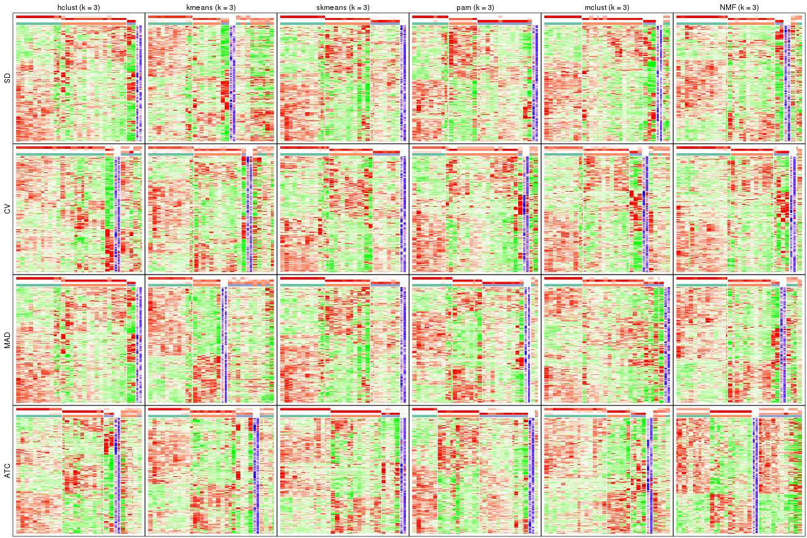
collect_plots(res_list, k = 4, fun = get_signatures, mc.cores = 4)
collect_plots(res_list, k = 5, fun = get_signatures, mc.cores = 4)
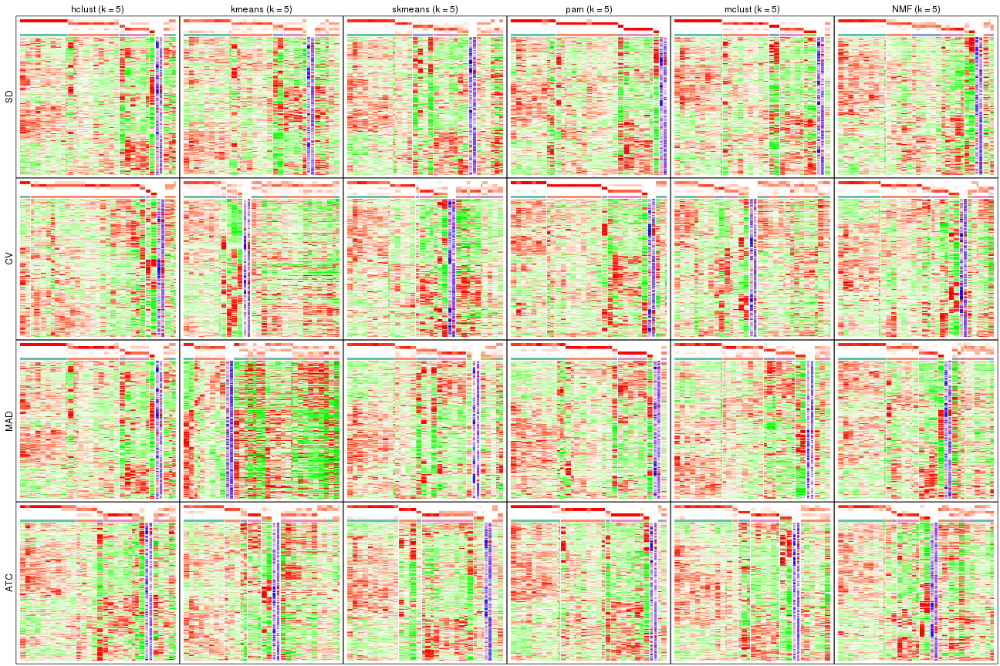
collect_plots(res_list, k = 6, fun = get_signatures, mc.cores = 4)
The statistics used for measuring the stability of consensus partitioning. (How are they defined?)
get_stats(res_list, k = 2)
#> k 1-PAC mean_silhouette concordance area_increased Rand Jaccard
#> SD:NMF 2 0.725 0.825 0.930 0.478 0.538 0.538
#> CV:NMF 2 0.879 0.905 0.960 0.482 0.506 0.506
#> MAD:NMF 2 0.951 0.938 0.973 0.503 0.496 0.496
#> ATC:NMF 2 1.000 0.966 0.986 0.486 0.519 0.519
#> SD:skmeans 2 1.000 0.935 0.977 0.504 0.500 0.500
#> CV:skmeans 2 0.765 0.930 0.967 0.506 0.494 0.494
#> MAD:skmeans 2 1.000 0.950 0.981 0.503 0.500 0.500
#> ATC:skmeans 2 1.000 0.995 0.998 0.503 0.497 0.497
#> SD:mclust 2 0.491 0.473 0.803 0.340 0.790 0.790
#> CV:mclust 2 0.792 0.931 0.966 0.219 0.808 0.808
#> MAD:mclust 2 0.145 0.559 0.742 0.409 0.580 0.580
#> ATC:mclust 2 0.551 0.871 0.920 0.479 0.497 0.497
#> SD:kmeans 2 0.487 0.887 0.891 0.443 0.500 0.500
#> CV:kmeans 2 0.220 0.590 0.711 0.345 0.510 0.510
#> MAD:kmeans 2 0.490 0.942 0.930 0.461 0.500 0.500
#> ATC:kmeans 2 0.935 0.977 0.964 0.465 0.519 0.519
#> SD:pam 2 0.882 0.934 0.972 0.443 0.545 0.545
#> CV:pam 2 0.320 0.663 0.848 0.232 0.931 0.931
#> MAD:pam 2 1.000 0.982 0.991 0.471 0.525 0.525
#> ATC:pam 2 1.000 0.968 0.988 0.473 0.525 0.525
#> SD:hclust 2 1.000 0.980 0.982 0.149 0.867 0.867
#> CV:hclust 2 0.727 0.871 0.942 0.151 0.931 0.931
#> MAD:hclust 2 0.431 0.940 0.867 0.392 0.525 0.525
#> ATC:hclust 2 0.615 0.775 0.912 0.493 0.497 0.497
get_stats(res_list, k = 3)
#> k 1-PAC mean_silhouette concordance area_increased Rand Jaccard
#> SD:NMF 3 0.686 0.813 0.910 0.221 0.691 0.516
#> CV:NMF 3 0.836 0.878 0.902 0.272 0.759 0.577
#> MAD:NMF 3 0.709 0.766 0.871 0.172 0.935 0.869
#> ATC:NMF 3 0.926 0.376 0.710 0.197 0.765 0.565
#> SD:skmeans 3 0.974 0.960 0.972 0.314 0.787 0.593
#> CV:skmeans 3 0.812 0.911 0.931 0.296 0.804 0.621
#> MAD:skmeans 3 0.967 0.938 0.958 0.308 0.787 0.593
#> ATC:skmeans 3 1.000 0.974 0.988 0.228 0.861 0.724
#> SD:mclust 3 0.858 0.853 0.942 0.782 0.551 0.457
#> CV:mclust 3 0.268 0.646 0.764 1.390 0.600 0.505
#> MAD:mclust 3 0.740 0.877 0.926 0.504 0.781 0.631
#> ATC:mclust 3 0.460 0.730 0.857 0.188 0.835 0.696
#> SD:kmeans 3 0.522 0.601 0.801 0.364 0.913 0.825
#> CV:kmeans 3 0.189 0.601 0.770 0.552 0.807 0.669
#> MAD:kmeans 3 0.531 0.604 0.714 0.336 0.770 0.566
#> ATC:kmeans 3 0.575 0.723 0.844 0.337 0.845 0.701
#> SD:pam 3 0.753 0.921 0.937 0.419 0.746 0.559
#> CV:pam 3 0.458 0.688 0.826 1.128 0.592 0.562
#> MAD:pam 3 0.871 0.886 0.953 0.417 0.807 0.632
#> ATC:pam 3 0.897 0.908 0.956 0.383 0.805 0.635
#> SD:hclust 3 0.561 0.906 0.944 2.663 0.579 0.514
#> CV:hclust 3 0.452 0.677 0.866 1.262 0.829 0.817
#> MAD:hclust 3 0.800 0.925 0.970 0.422 0.921 0.850
#> ATC:hclust 3 0.586 0.707 0.874 0.206 0.839 0.696
get_stats(res_list, k = 4)
#> k 1-PAC mean_silhouette concordance area_increased Rand Jaccard
#> SD:NMF 4 0.706 0.807 0.898 0.1717 0.724 0.452
#> CV:NMF 4 0.733 0.809 0.898 0.1786 0.777 0.493
#> MAD:NMF 4 0.609 0.649 0.850 0.1499 0.774 0.541
#> ATC:NMF 4 0.666 0.686 0.845 0.1359 0.746 0.456
#> SD:skmeans 4 0.749 0.811 0.843 0.1001 0.933 0.800
#> CV:skmeans 4 0.689 0.797 0.878 0.1121 0.930 0.800
#> MAD:skmeans 4 0.744 0.812 0.834 0.1008 0.901 0.719
#> ATC:skmeans 4 0.823 0.851 0.926 0.1210 0.889 0.712
#> SD:mclust 4 0.684 0.678 0.838 0.1620 0.845 0.640
#> CV:mclust 4 0.277 0.500 0.650 0.2999 0.794 0.546
#> MAD:mclust 4 0.630 0.622 0.818 0.1498 0.869 0.678
#> ATC:mclust 4 0.566 0.726 0.826 0.1725 0.813 0.614
#> SD:kmeans 4 0.500 0.629 0.759 0.1374 0.780 0.535
#> CV:kmeans 4 0.301 0.497 0.692 0.1662 0.883 0.769
#> MAD:kmeans 4 0.501 0.572 0.720 0.1199 0.939 0.826
#> ATC:kmeans 4 0.557 0.658 0.753 0.1226 0.912 0.776
#> SD:pam 4 0.928 0.923 0.966 0.0898 0.953 0.867
#> CV:pam 4 0.723 0.873 0.853 0.2267 0.781 0.588
#> MAD:pam 4 0.901 0.879 0.954 0.0376 0.977 0.932
#> ATC:pam 4 0.856 0.897 0.958 0.0597 0.748 0.445
#> SD:hclust 4 0.524 0.728 0.814 0.2176 0.857 0.680
#> CV:hclust 4 0.389 0.726 0.845 0.2862 0.918 0.892
#> MAD:hclust 4 0.713 0.815 0.880 0.1910 0.871 0.710
#> ATC:hclust 4 0.574 0.623 0.811 0.1190 0.967 0.918
get_stats(res_list, k = 5)
#> k 1-PAC mean_silhouette concordance area_increased Rand Jaccard
#> SD:NMF 5 0.704 0.727 0.811 0.0770 0.888 0.649
#> CV:NMF 5 0.713 0.668 0.817 0.0624 0.918 0.716
#> MAD:NMF 5 0.622 0.611 0.769 0.0717 0.805 0.505
#> ATC:NMF 5 0.582 0.553 0.754 0.1065 0.889 0.695
#> SD:skmeans 5 0.729 0.711 0.794 0.0571 0.968 0.883
#> CV:skmeans 5 0.683 0.539 0.760 0.0708 0.950 0.837
#> MAD:skmeans 5 0.716 0.723 0.798 0.0607 0.954 0.833
#> ATC:skmeans 5 0.785 0.745 0.836 0.0646 0.962 0.878
#> SD:mclust 5 0.856 0.892 0.927 0.0482 0.965 0.880
#> CV:mclust 5 0.377 0.446 0.639 0.0933 0.904 0.705
#> MAD:mclust 5 0.706 0.750 0.828 0.0704 0.917 0.735
#> ATC:mclust 5 0.578 0.726 0.808 0.0911 0.860 0.631
#> SD:kmeans 5 0.527 0.551 0.719 0.0694 0.966 0.894
#> CV:kmeans 5 0.322 0.337 0.597 0.1039 0.936 0.853
#> MAD:kmeans 5 0.526 0.358 0.571 0.0769 0.812 0.502
#> ATC:kmeans 5 0.572 0.475 0.738 0.0722 0.866 0.630
#> SD:pam 5 0.982 0.947 0.981 0.0120 0.997 0.992
#> CV:pam 5 0.717 0.906 0.915 0.1100 0.973 0.916
#> MAD:pam 5 0.849 0.877 0.910 0.0425 0.983 0.946
#> ATC:pam 5 0.875 0.855 0.932 0.0390 0.969 0.901
#> SD:hclust 5 0.702 0.805 0.857 0.0192 0.929 0.788
#> CV:hclust 5 0.435 0.707 0.852 0.0280 0.997 0.996
#> MAD:hclust 5 0.716 0.807 0.877 0.0308 0.997 0.992
#> ATC:hclust 5 0.594 0.660 0.790 0.0741 0.880 0.694
get_stats(res_list, k = 6)
#> k 1-PAC mean_silhouette concordance area_increased Rand Jaccard
#> SD:NMF 6 0.774 0.800 0.849 0.0572 0.968 0.869
#> CV:NMF 6 0.714 0.545 0.720 0.0447 0.853 0.484
#> MAD:NMF 6 0.787 0.826 0.877 0.0586 0.865 0.575
#> ATC:NMF 6 0.643 0.710 0.819 0.0675 0.896 0.644
#> SD:skmeans 6 0.716 0.690 0.785 0.0446 0.951 0.802
#> CV:skmeans 6 0.683 0.556 0.714 0.0474 0.864 0.532
#> MAD:skmeans 6 0.704 0.669 0.775 0.0436 0.951 0.798
#> ATC:skmeans 6 0.743 0.761 0.824 0.0480 0.894 0.669
#> SD:mclust 6 0.912 0.822 0.897 0.0601 0.960 0.847
#> CV:mclust 6 0.484 0.432 0.640 0.0600 0.816 0.408
#> MAD:mclust 6 0.835 0.810 0.875 0.0338 0.966 0.865
#> ATC:mclust 6 0.687 0.811 0.853 0.0481 0.986 0.945
#> SD:kmeans 6 0.572 0.525 0.656 0.0531 0.929 0.760
#> CV:kmeans 6 0.452 0.463 0.650 0.0756 0.807 0.538
#> MAD:kmeans 6 0.565 0.461 0.621 0.0463 0.896 0.655
#> ATC:kmeans 6 0.613 0.506 0.661 0.0525 0.921 0.718
#> SD:pam 6 0.949 0.893 0.949 0.1046 0.885 0.647
#> CV:pam 6 0.761 0.908 0.922 0.0373 0.986 0.951
#> MAD:pam 6 0.905 0.844 0.937 0.0741 0.931 0.763
#> ATC:pam 6 0.925 0.884 0.951 0.0358 0.971 0.901
#> SD:hclust 6 0.721 0.837 0.891 0.0547 0.969 0.896
#> CV:hclust 6 0.455 0.640 0.732 0.2497 0.653 0.494
#> MAD:hclust 6 0.788 0.868 0.904 0.0575 0.962 0.880
#> ATC:hclust 6 0.691 0.660 0.820 0.0496 0.941 0.801
Following heatmap plots the partition for each combination of methods and the lightness correspond to the silhouette scores for samples in each method. On top the consensus subgroup is inferred from all methods by taking the mean silhouette scores as weight.
collect_stats(res_list, k = 2)
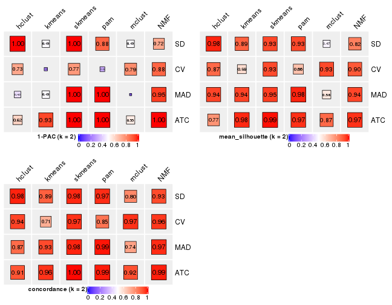
collect_stats(res_list, k = 3)
collect_stats(res_list, k = 4)
collect_stats(res_list, k = 5)
collect_stats(res_list, k = 6)
Collect partitions from all methods:
collect_classes(res_list, k = 2)
collect_classes(res_list, k = 3)
collect_classes(res_list, k = 4)
collect_classes(res_list, k = 5)
collect_classes(res_list, k = 6)
Overlap of top rows from different top-row methods:
top_rows_overlap(res_list, top_n = 1000, method = "euler")
top_rows_overlap(res_list, top_n = 2000, method = "euler")
top_rows_overlap(res_list, top_n = 3000, method = "euler")
top_rows_overlap(res_list, top_n = 4000, method = "euler")
top_rows_overlap(res_list, top_n = 5000, method = "euler")
Also visualize the correspondance of rankings between different top-row methods:
top_rows_overlap(res_list, top_n = 1000, method = "correspondance")
top_rows_overlap(res_list, top_n = 2000, method = "correspondance")
top_rows_overlap(res_list, top_n = 3000, method = "correspondance")
top_rows_overlap(res_list, top_n = 4000, method = "correspondance")
top_rows_overlap(res_list, top_n = 5000, method = "correspondance")
Heatmaps of the top rows:
top_rows_heatmap(res_list, top_n = 1000)
top_rows_heatmap(res_list, top_n = 2000)
top_rows_heatmap(res_list, top_n = 3000)
top_rows_heatmap(res_list, top_n = 4000)
top_rows_heatmap(res_list, top_n = 5000)
The object with results only for a single top-value method and a single partition method can be extracted as:
res = res_list["SD", "hclust"]
# you can also extract it by
# res = res_list["SD:hclust"]
A summary of res and all the functions that can be applied to it:
res
#> A 'ConsensusPartition' object with k = 2, 3, 4, 5, 6.
#> On a matrix with 18243 rows and 85 columns.
#> Top rows (1000, 2000, 3000, 4000, 5000) are extracted by 'SD' method.
#> Subgroups are detected by 'hclust' method.
#> Performed in total 1250 partitions by row resampling.
#> Best k for subgroups seems to be 2.
#>
#> Following methods can be applied to this 'ConsensusPartition' object:
#> [1] "cola_report" "collect_classes" "collect_plots"
#> [4] "collect_stats" "colnames" "compare_signatures"
#> [7] "consensus_heatmap" "dimension_reduction" "functional_enrichment"
#> [10] "get_anno_col" "get_anno" "get_classes"
#> [13] "get_consensus" "get_matrix" "get_membership"
#> [16] "get_param" "get_signatures" "get_stats"
#> [19] "is_best_k" "is_stable_k" "membership_heatmap"
#> [22] "ncol" "nrow" "plot_ecdf"
#> [25] "rownames" "select_partition_number" "show"
#> [28] "suggest_best_k" "test_to_known_factors"
collect_plots() function collects all the plots made from res for all k (number of partitions)
into one single page to provide an easy and fast comparison between different k.
collect_plots(res)
The plots are:
k and the heatmap of
predicted classes for each k.k.k.k.All the plots in panels can be made by individual functions and they are plotted later in this section.
select_partition_number() produces several plots showing different
statistics for choosing “optimized” k. There are following statistics:
k;k, the area increased is defined as \(A_k - A_{k-1}\).The detailed explanations of these statistics can be found in the cola vignette.
Generally speaking, lower PAC score, higher mean silhouette score or higher
concordance corresponds to better partition. Rand index and Jaccard index
measure how similar the current partition is compared to partition with k-1.
If they are too similar, we won't accept k is better than k-1.
select_partition_number(res)
The numeric values for all these statistics can be obtained by get_stats().
get_stats(res)
#> k 1-PAC mean_silhouette concordance area_increased Rand Jaccard
#> 2 2 1.000 0.980 0.982 0.1489 0.867 0.867
#> 3 3 0.561 0.906 0.944 2.6627 0.579 0.514
#> 4 4 0.524 0.728 0.814 0.2176 0.857 0.680
#> 5 5 0.702 0.805 0.857 0.0192 0.929 0.788
#> 6 6 0.721 0.837 0.891 0.0547 0.969 0.896
suggest_best_k() suggests the best \(k\) based on these statistics. The rules are as follows:
NA.suggest_best_k(res)
#> [1] 2
Following shows the table of the partitions (You need to click the show/hide
code output link to see it). The membership matrix (columns with name p*)
is inferred by
clue::cl_consensus()
function with the SE method. Basically the value in the membership matrix
represents the probability to belong to a certain group. The finall class
label for an item is determined with the group with highest probability it
belongs to.
In get_classes() function, the entropy is calculated from the membership
matrix and the silhouette score is calculated from the consensus matrix.
cbind(get_classes(res, k = 2), get_membership(res, k = 2))
#> class entropy silhouette p1 p2
#> ERR532547 1 0.000 0.982 1.000 0.000
#> ERR532548 1 0.000 0.982 1.000 0.000
#> ERR532549 1 0.000 0.982 1.000 0.000
#> ERR532576 1 0.204 0.978 0.968 0.032
#> ERR532577 1 0.204 0.978 0.968 0.032
#> ERR532578 1 0.204 0.978 0.968 0.032
#> ERR532593 1 0.204 0.978 0.968 0.032
#> ERR532594 1 0.204 0.978 0.968 0.032
#> ERR532595 1 0.204 0.978 0.968 0.032
#> ERR532596 1 0.118 0.977 0.984 0.016
#> ERR532597 1 0.118 0.977 0.984 0.016
#> ERR532598 1 0.118 0.977 0.984 0.016
#> ERR532599 1 0.118 0.977 0.984 0.016
#> ERR532600 1 0.118 0.977 0.984 0.016
#> ERR532601 1 0.118 0.977 0.984 0.016
#> ERR532602 1 0.204 0.978 0.968 0.032
#> ERR532603 1 0.204 0.978 0.968 0.032
#> ERR532604 1 0.204 0.978 0.968 0.032
#> ERR532605 1 0.204 0.978 0.968 0.032
#> ERR532606 1 0.204 0.978 0.968 0.032
#> ERR532607 1 0.204 0.978 0.968 0.032
#> ERR532608 1 0.000 0.982 1.000 0.000
#> ERR532609 1 0.000 0.982 1.000 0.000
#> ERR532610 1 0.000 0.982 1.000 0.000
#> ERR532611 1 0.204 0.978 0.968 0.032
#> ERR532612 1 0.204 0.978 0.968 0.032
#> ERR532613 1 0.204 0.978 0.968 0.032
#> ERR532550 1 0.204 0.978 0.968 0.032
#> ERR532551 1 0.000 0.982 1.000 0.000
#> ERR532552 1 0.000 0.982 1.000 0.000
#> ERR532553 1 0.000 0.982 1.000 0.000
#> ERR532554 1 0.118 0.977 0.984 0.016
#> ERR532555 1 0.118 0.977 0.984 0.016
#> ERR532556 1 0.118 0.977 0.984 0.016
#> ERR532557 1 0.000 0.982 1.000 0.000
#> ERR532558 1 0.000 0.982 1.000 0.000
#> ERR532559 1 0.000 0.982 1.000 0.000
#> ERR532560 1 0.204 0.978 0.968 0.032
#> ERR532561 1 0.204 0.978 0.968 0.032
#> ERR532562 1 0.204 0.978 0.968 0.032
#> ERR532563 1 0.118 0.977 0.984 0.016
#> ERR532564 1 0.118 0.977 0.984 0.016
#> ERR532565 1 0.118 0.977 0.984 0.016
#> ERR532566 2 0.204 1.000 0.032 0.968
#> ERR532567 2 0.204 1.000 0.032 0.968
#> ERR532568 2 0.204 1.000 0.032 0.968
#> ERR532569 1 0.204 0.978 0.968 0.032
#> ERR532570 1 0.204 0.978 0.968 0.032
#> ERR532571 1 0.204 0.978 0.968 0.032
#> ERR532572 1 0.118 0.977 0.984 0.016
#> ERR532573 1 0.118 0.977 0.984 0.016
#> ERR532574 1 0.118 0.977 0.984 0.016
#> ERR532575 1 0.000 0.982 1.000 0.000
#> ERR532579 1 0.204 0.978 0.968 0.032
#> ERR532580 1 0.204 0.978 0.968 0.032
#> ERR532581 1 0.118 0.977 0.984 0.016
#> ERR532582 1 0.118 0.977 0.984 0.016
#> ERR532583 1 0.118 0.977 0.984 0.016
#> ERR532584 1 0.000 0.982 1.000 0.000
#> ERR532585 1 0.000 0.982 1.000 0.000
#> ERR532586 1 0.000 0.982 1.000 0.000
#> ERR532587 1 0.118 0.977 0.984 0.016
#> ERR532588 1 0.118 0.977 0.984 0.016
#> ERR532589 1 0.000 0.982 1.000 0.000
#> ERR532590 1 0.000 0.982 1.000 0.000
#> ERR532591 1 0.204 0.978 0.968 0.032
#> ERR532592 1 0.204 0.978 0.968 0.032
#> ERR532439 1 0.000 0.982 1.000 0.000
#> ERR532440 1 0.000 0.982 1.000 0.000
#> ERR532441 1 0.000 0.982 1.000 0.000
#> ERR532442 1 0.204 0.978 0.968 0.032
#> ERR532443 1 0.204 0.978 0.968 0.032
#> ERR532444 1 0.204 0.978 0.968 0.032
#> ERR532445 1 0.204 0.978 0.968 0.032
#> ERR532446 1 0.204 0.978 0.968 0.032
#> ERR532447 1 0.204 0.978 0.968 0.032
#> ERR532433 1 0.000 0.982 1.000 0.000
#> ERR532434 1 0.000 0.982 1.000 0.000
#> ERR532435 1 0.000 0.982 1.000 0.000
#> ERR532436 1 0.000 0.982 1.000 0.000
#> ERR532437 1 0.000 0.982 1.000 0.000
#> ERR532438 1 0.000 0.982 1.000 0.000
#> ERR532614 2 0.204 1.000 0.032 0.968
#> ERR532615 2 0.204 1.000 0.032 0.968
#> ERR532616 2 0.204 1.000 0.032 0.968
cbind(get_classes(res, k = 3), get_membership(res, k = 3))
#> class entropy silhouette p1 p2 p3
#> ERR532547 2 0.540 0.733 0.280 0.720 0
#> ERR532548 2 0.540 0.733 0.280 0.720 0
#> ERR532549 2 0.540 0.733 0.280 0.720 0
#> ERR532576 1 0.000 0.955 1.000 0.000 0
#> ERR532577 1 0.000 0.955 1.000 0.000 0
#> ERR532578 1 0.000 0.955 1.000 0.000 0
#> ERR532593 1 0.000 0.955 1.000 0.000 0
#> ERR532594 1 0.000 0.955 1.000 0.000 0
#> ERR532595 1 0.000 0.955 1.000 0.000 0
#> ERR532596 2 0.000 0.900 0.000 1.000 0
#> ERR532597 2 0.000 0.900 0.000 1.000 0
#> ERR532598 2 0.000 0.900 0.000 1.000 0
#> ERR532599 2 0.000 0.900 0.000 1.000 0
#> ERR532600 2 0.000 0.900 0.000 1.000 0
#> ERR532601 2 0.000 0.900 0.000 1.000 0
#> ERR532602 1 0.000 0.955 1.000 0.000 0
#> ERR532603 1 0.000 0.955 1.000 0.000 0
#> ERR532604 1 0.000 0.955 1.000 0.000 0
#> ERR532605 1 0.000 0.955 1.000 0.000 0
#> ERR532606 1 0.000 0.955 1.000 0.000 0
#> ERR532607 1 0.000 0.955 1.000 0.000 0
#> ERR532608 2 0.540 0.733 0.280 0.720 0
#> ERR532609 2 0.540 0.733 0.280 0.720 0
#> ERR532610 2 0.540 0.733 0.280 0.720 0
#> ERR532611 1 0.000 0.955 1.000 0.000 0
#> ERR532612 1 0.000 0.955 1.000 0.000 0
#> ERR532613 1 0.000 0.955 1.000 0.000 0
#> ERR532550 1 0.000 0.955 1.000 0.000 0
#> ERR532551 2 0.296 0.914 0.100 0.900 0
#> ERR532552 2 0.296 0.914 0.100 0.900 0
#> ERR532553 2 0.296 0.914 0.100 0.900 0
#> ERR532554 2 0.000 0.900 0.000 1.000 0
#> ERR532555 2 0.000 0.900 0.000 1.000 0
#> ERR532556 2 0.000 0.900 0.000 1.000 0
#> ERR532557 2 0.296 0.914 0.100 0.900 0
#> ERR532558 2 0.296 0.914 0.100 0.900 0
#> ERR532559 2 0.296 0.914 0.100 0.900 0
#> ERR532560 1 0.000 0.955 1.000 0.000 0
#> ERR532561 1 0.000 0.955 1.000 0.000 0
#> ERR532562 1 0.000 0.955 1.000 0.000 0
#> ERR532563 2 0.000 0.900 0.000 1.000 0
#> ERR532564 2 0.000 0.900 0.000 1.000 0
#> ERR532565 2 0.000 0.900 0.000 1.000 0
#> ERR532566 3 0.000 1.000 0.000 0.000 1
#> ERR532567 3 0.000 1.000 0.000 0.000 1
#> ERR532568 3 0.000 1.000 0.000 0.000 1
#> ERR532569 1 0.000 0.955 1.000 0.000 0
#> ERR532570 1 0.000 0.955 1.000 0.000 0
#> ERR532571 1 0.000 0.955 1.000 0.000 0
#> ERR532572 2 0.000 0.900 0.000 1.000 0
#> ERR532573 2 0.000 0.900 0.000 1.000 0
#> ERR532574 2 0.000 0.900 0.000 1.000 0
#> ERR532575 2 0.296 0.914 0.100 0.900 0
#> ERR532579 1 0.506 0.654 0.756 0.244 0
#> ERR532580 1 0.506 0.654 0.756 0.244 0
#> ERR532581 2 0.000 0.900 0.000 1.000 0
#> ERR532582 2 0.000 0.900 0.000 1.000 0
#> ERR532583 2 0.000 0.900 0.000 1.000 0
#> ERR532584 2 0.296 0.914 0.100 0.900 0
#> ERR532585 2 0.296 0.914 0.100 0.900 0
#> ERR532586 2 0.296 0.914 0.100 0.900 0
#> ERR532587 2 0.000 0.900 0.000 1.000 0
#> ERR532588 2 0.000 0.900 0.000 1.000 0
#> ERR532589 2 0.296 0.914 0.100 0.900 0
#> ERR532590 2 0.296 0.914 0.100 0.900 0
#> ERR532591 1 0.506 0.654 0.756 0.244 0
#> ERR532592 1 0.506 0.654 0.756 0.244 0
#> ERR532439 2 0.296 0.914 0.100 0.900 0
#> ERR532440 2 0.296 0.914 0.100 0.900 0
#> ERR532441 2 0.296 0.914 0.100 0.900 0
#> ERR532442 1 0.000 0.955 1.000 0.000 0
#> ERR532443 1 0.000 0.955 1.000 0.000 0
#> ERR532444 1 0.000 0.955 1.000 0.000 0
#> ERR532445 1 0.000 0.955 1.000 0.000 0
#> ERR532446 1 0.000 0.955 1.000 0.000 0
#> ERR532447 1 0.000 0.955 1.000 0.000 0
#> ERR532433 2 0.296 0.914 0.100 0.900 0
#> ERR532434 2 0.296 0.914 0.100 0.900 0
#> ERR532435 2 0.296 0.914 0.100 0.900 0
#> ERR532436 2 0.296 0.914 0.100 0.900 0
#> ERR532437 2 0.296 0.914 0.100 0.900 0
#> ERR532438 2 0.296 0.914 0.100 0.900 0
#> ERR532614 3 0.000 1.000 0.000 0.000 1
#> ERR532615 3 0.000 1.000 0.000 0.000 1
#> ERR532616 3 0.000 1.000 0.000 0.000 1
cbind(get_classes(res, k = 4), get_membership(res, k = 4))
#> class entropy silhouette p1 p2 p3 p4
#> ERR532547 2 0.7563 0.568 0.280 0.484 0 0.236
#> ERR532548 2 0.7563 0.568 0.280 0.484 0 0.236
#> ERR532549 2 0.7563 0.568 0.280 0.484 0 0.236
#> ERR532576 1 0.0000 0.952 1.000 0.000 0 0.000
#> ERR532577 1 0.0000 0.952 1.000 0.000 0 0.000
#> ERR532578 1 0.0000 0.952 1.000 0.000 0 0.000
#> ERR532593 1 0.0000 0.952 1.000 0.000 0 0.000
#> ERR532594 1 0.0000 0.952 1.000 0.000 0 0.000
#> ERR532595 1 0.0000 0.952 1.000 0.000 0 0.000
#> ERR532596 4 0.0000 0.761 0.000 0.000 0 1.000
#> ERR532597 4 0.0000 0.761 0.000 0.000 0 1.000
#> ERR532598 4 0.0000 0.761 0.000 0.000 0 1.000
#> ERR532599 4 0.4989 -0.393 0.000 0.472 0 0.528
#> ERR532600 4 0.4989 -0.393 0.000 0.472 0 0.528
#> ERR532601 4 0.4989 -0.393 0.000 0.472 0 0.528
#> ERR532602 1 0.0000 0.952 1.000 0.000 0 0.000
#> ERR532603 1 0.0000 0.952 1.000 0.000 0 0.000
#> ERR532604 1 0.0000 0.952 1.000 0.000 0 0.000
#> ERR532605 1 0.0000 0.952 1.000 0.000 0 0.000
#> ERR532606 1 0.0000 0.952 1.000 0.000 0 0.000
#> ERR532607 1 0.0000 0.952 1.000 0.000 0 0.000
#> ERR532608 2 0.6148 0.623 0.280 0.636 0 0.084
#> ERR532609 2 0.6148 0.623 0.280 0.636 0 0.084
#> ERR532610 2 0.6148 0.623 0.280 0.636 0 0.084
#> ERR532611 1 0.0000 0.952 1.000 0.000 0 0.000
#> ERR532612 1 0.0000 0.952 1.000 0.000 0 0.000
#> ERR532613 1 0.0000 0.952 1.000 0.000 0 0.000
#> ERR532550 1 0.0000 0.952 1.000 0.000 0 0.000
#> ERR532551 2 0.6248 0.775 0.100 0.640 0 0.260
#> ERR532552 2 0.6248 0.775 0.100 0.640 0 0.260
#> ERR532553 2 0.6248 0.775 0.100 0.640 0 0.260
#> ERR532554 4 0.4040 0.529 0.000 0.248 0 0.752
#> ERR532555 4 0.4040 0.529 0.000 0.248 0 0.752
#> ERR532556 4 0.4040 0.529 0.000 0.248 0 0.752
#> ERR532557 2 0.6298 0.773 0.100 0.632 0 0.268
#> ERR532558 2 0.6298 0.773 0.100 0.632 0 0.268
#> ERR532559 2 0.6298 0.773 0.100 0.632 0 0.268
#> ERR532560 1 0.0000 0.952 1.000 0.000 0 0.000
#> ERR532561 1 0.0000 0.952 1.000 0.000 0 0.000
#> ERR532562 1 0.0000 0.952 1.000 0.000 0 0.000
#> ERR532563 2 0.4989 -0.300 0.000 0.528 0 0.472
#> ERR532564 2 0.4989 -0.300 0.000 0.528 0 0.472
#> ERR532565 2 0.4989 -0.300 0.000 0.528 0 0.472
#> ERR532566 3 0.0000 1.000 0.000 0.000 1 0.000
#> ERR532567 3 0.0000 1.000 0.000 0.000 1 0.000
#> ERR532568 3 0.0000 1.000 0.000 0.000 1 0.000
#> ERR532569 1 0.0000 0.952 1.000 0.000 0 0.000
#> ERR532570 1 0.0000 0.952 1.000 0.000 0 0.000
#> ERR532571 1 0.0000 0.952 1.000 0.000 0 0.000
#> ERR532572 4 0.0921 0.758 0.000 0.028 0 0.972
#> ERR532573 4 0.0921 0.758 0.000 0.028 0 0.972
#> ERR532574 4 0.0921 0.758 0.000 0.028 0 0.972
#> ERR532575 2 0.6826 0.650 0.100 0.484 0 0.416
#> ERR532579 1 0.4697 0.567 0.644 0.356 0 0.000
#> ERR532580 1 0.4697 0.567 0.644 0.356 0 0.000
#> ERR532581 4 0.0921 0.758 0.000 0.028 0 0.972
#> ERR532582 4 0.0921 0.758 0.000 0.028 0 0.972
#> ERR532583 4 0.0921 0.758 0.000 0.028 0 0.972
#> ERR532584 2 0.6822 0.656 0.100 0.488 0 0.412
#> ERR532585 2 0.6822 0.656 0.100 0.488 0 0.412
#> ERR532586 2 0.6822 0.656 0.100 0.488 0 0.412
#> ERR532587 4 0.0000 0.761 0.000 0.000 0 1.000
#> ERR532588 4 0.0000 0.761 0.000 0.000 0 1.000
#> ERR532589 2 0.6826 0.650 0.100 0.484 0 0.416
#> ERR532590 2 0.6826 0.650 0.100 0.484 0 0.416
#> ERR532591 1 0.4697 0.567 0.644 0.356 0 0.000
#> ERR532592 1 0.4697 0.567 0.644 0.356 0 0.000
#> ERR532439 2 0.6248 0.775 0.100 0.640 0 0.260
#> ERR532440 2 0.6248 0.775 0.100 0.640 0 0.260
#> ERR532441 2 0.6248 0.775 0.100 0.640 0 0.260
#> ERR532442 1 0.0000 0.952 1.000 0.000 0 0.000
#> ERR532443 1 0.0000 0.952 1.000 0.000 0 0.000
#> ERR532444 1 0.0000 0.952 1.000 0.000 0 0.000
#> ERR532445 1 0.0000 0.952 1.000 0.000 0 0.000
#> ERR532446 1 0.0000 0.952 1.000 0.000 0 0.000
#> ERR532447 1 0.0000 0.952 1.000 0.000 0 0.000
#> ERR532433 2 0.6248 0.775 0.100 0.640 0 0.260
#> ERR532434 2 0.6248 0.775 0.100 0.640 0 0.260
#> ERR532435 2 0.6248 0.775 0.100 0.640 0 0.260
#> ERR532436 2 0.6248 0.775 0.100 0.640 0 0.260
#> ERR532437 2 0.6248 0.775 0.100 0.640 0 0.260
#> ERR532438 2 0.6248 0.775 0.100 0.640 0 0.260
#> ERR532614 3 0.0000 1.000 0.000 0.000 1 0.000
#> ERR532615 3 0.0000 1.000 0.000 0.000 1 0.000
#> ERR532616 3 0.0000 1.000 0.000 0.000 1 0.000
cbind(get_classes(res, k = 5), get_membership(res, k = 5))
#> class entropy silhouette p1 p2 p3 p4 p5
#> ERR532547 2 0.592 0.615 0.252 0.588 0.000 0.160 0.000
#> ERR532548 2 0.592 0.615 0.252 0.588 0.000 0.160 0.000
#> ERR532549 2 0.592 0.615 0.252 0.588 0.000 0.160 0.000
#> ERR532576 1 0.000 0.944 1.000 0.000 0.000 0.000 0.000
#> ERR532577 1 0.000 0.944 1.000 0.000 0.000 0.000 0.000
#> ERR532578 1 0.000 0.944 1.000 0.000 0.000 0.000 0.000
#> ERR532593 1 0.000 0.944 1.000 0.000 0.000 0.000 0.000
#> ERR532594 1 0.000 0.944 1.000 0.000 0.000 0.000 0.000
#> ERR532595 1 0.000 0.944 1.000 0.000 0.000 0.000 0.000
#> ERR532596 4 0.345 0.807 0.000 0.244 0.000 0.756 0.000
#> ERR532597 4 0.345 0.807 0.000 0.244 0.000 0.756 0.000
#> ERR532598 4 0.345 0.807 0.000 0.244 0.000 0.756 0.000
#> ERR532599 2 0.364 0.538 0.000 0.728 0.000 0.272 0.000
#> ERR532600 2 0.364 0.538 0.000 0.728 0.000 0.272 0.000
#> ERR532601 2 0.364 0.538 0.000 0.728 0.000 0.272 0.000
#> ERR532602 1 0.000 0.944 1.000 0.000 0.000 0.000 0.000
#> ERR532603 1 0.000 0.944 1.000 0.000 0.000 0.000 0.000
#> ERR532604 1 0.000 0.944 1.000 0.000 0.000 0.000 0.000
#> ERR532605 1 0.000 0.944 1.000 0.000 0.000 0.000 0.000
#> ERR532606 1 0.000 0.944 1.000 0.000 0.000 0.000 0.000
#> ERR532607 1 0.000 0.944 1.000 0.000 0.000 0.000 0.000
#> ERR532608 2 0.366 0.661 0.252 0.744 0.000 0.004 0.000
#> ERR532609 2 0.366 0.661 0.252 0.744 0.000 0.004 0.000
#> ERR532610 2 0.366 0.661 0.252 0.744 0.000 0.004 0.000
#> ERR532611 1 0.000 0.944 1.000 0.000 0.000 0.000 0.000
#> ERR532612 1 0.000 0.944 1.000 0.000 0.000 0.000 0.000
#> ERR532613 1 0.000 0.944 1.000 0.000 0.000 0.000 0.000
#> ERR532550 1 0.000 0.944 1.000 0.000 0.000 0.000 0.000
#> ERR532551 2 0.161 0.834 0.072 0.928 0.000 0.000 0.000
#> ERR532552 2 0.161 0.834 0.072 0.928 0.000 0.000 0.000
#> ERR532553 2 0.161 0.834 0.072 0.928 0.000 0.000 0.000
#> ERR532554 4 0.127 0.529 0.000 0.000 0.052 0.948 0.000
#> ERR532555 4 0.127 0.529 0.000 0.000 0.052 0.948 0.000
#> ERR532556 4 0.127 0.529 0.000 0.000 0.052 0.948 0.000
#> ERR532557 2 0.189 0.833 0.072 0.920 0.000 0.008 0.000
#> ERR532558 2 0.189 0.833 0.072 0.920 0.000 0.008 0.000
#> ERR532559 2 0.189 0.833 0.072 0.920 0.000 0.008 0.000
#> ERR532560 1 0.000 0.944 1.000 0.000 0.000 0.000 0.000
#> ERR532561 1 0.000 0.944 1.000 0.000 0.000 0.000 0.000
#> ERR532562 1 0.000 0.944 1.000 0.000 0.000 0.000 0.000
#> ERR532563 4 0.406 0.433 0.000 0.360 0.000 0.640 0.000
#> ERR532564 4 0.406 0.433 0.000 0.360 0.000 0.640 0.000
#> ERR532565 4 0.406 0.433 0.000 0.360 0.000 0.640 0.000
#> ERR532566 5 0.000 1.000 0.000 0.000 0.000 0.000 1.000
#> ERR532567 5 0.000 1.000 0.000 0.000 0.000 0.000 1.000
#> ERR532568 5 0.000 1.000 0.000 0.000 0.000 0.000 1.000
#> ERR532569 1 0.000 0.944 1.000 0.000 0.000 0.000 0.000
#> ERR532570 1 0.000 0.944 1.000 0.000 0.000 0.000 0.000
#> ERR532571 1 0.000 0.944 1.000 0.000 0.000 0.000 0.000
#> ERR532572 4 0.364 0.801 0.000 0.272 0.000 0.728 0.000
#> ERR532573 4 0.364 0.801 0.000 0.272 0.000 0.728 0.000
#> ERR532574 4 0.364 0.801 0.000 0.272 0.000 0.728 0.000
#> ERR532575 2 0.426 0.748 0.072 0.768 0.000 0.160 0.000
#> ERR532579 1 0.672 0.455 0.588 0.072 0.108 0.232 0.000
#> ERR532580 1 0.672 0.455 0.588 0.072 0.108 0.232 0.000
#> ERR532581 4 0.364 0.801 0.000 0.272 0.000 0.728 0.000
#> ERR532582 4 0.364 0.801 0.000 0.272 0.000 0.728 0.000
#> ERR532583 4 0.364 0.801 0.000 0.272 0.000 0.728 0.000
#> ERR532584 2 0.422 0.752 0.072 0.772 0.000 0.156 0.000
#> ERR532585 2 0.422 0.752 0.072 0.772 0.000 0.156 0.000
#> ERR532586 2 0.422 0.752 0.072 0.772 0.000 0.156 0.000
#> ERR532587 4 0.345 0.807 0.000 0.244 0.000 0.756 0.000
#> ERR532588 4 0.345 0.807 0.000 0.244 0.000 0.756 0.000
#> ERR532589 2 0.426 0.748 0.072 0.768 0.000 0.160 0.000
#> ERR532590 2 0.426 0.748 0.072 0.768 0.000 0.160 0.000
#> ERR532591 1 0.672 0.455 0.588 0.072 0.108 0.232 0.000
#> ERR532592 1 0.672 0.455 0.588 0.072 0.108 0.232 0.000
#> ERR532439 2 0.161 0.834 0.072 0.928 0.000 0.000 0.000
#> ERR532440 2 0.161 0.834 0.072 0.928 0.000 0.000 0.000
#> ERR532441 2 0.161 0.834 0.072 0.928 0.000 0.000 0.000
#> ERR532442 1 0.000 0.944 1.000 0.000 0.000 0.000 0.000
#> ERR532443 1 0.000 0.944 1.000 0.000 0.000 0.000 0.000
#> ERR532444 1 0.000 0.944 1.000 0.000 0.000 0.000 0.000
#> ERR532445 1 0.000 0.944 1.000 0.000 0.000 0.000 0.000
#> ERR532446 1 0.000 0.944 1.000 0.000 0.000 0.000 0.000
#> ERR532447 1 0.000 0.944 1.000 0.000 0.000 0.000 0.000
#> ERR532433 2 0.161 0.834 0.072 0.928 0.000 0.000 0.000
#> ERR532434 2 0.161 0.834 0.072 0.928 0.000 0.000 0.000
#> ERR532435 2 0.161 0.834 0.072 0.928 0.000 0.000 0.000
#> ERR532436 2 0.161 0.834 0.072 0.928 0.000 0.000 0.000
#> ERR532437 2 0.161 0.834 0.072 0.928 0.000 0.000 0.000
#> ERR532438 2 0.161 0.834 0.072 0.928 0.000 0.000 0.000
#> ERR532614 3 0.269 1.000 0.000 0.000 0.844 0.000 0.156
#> ERR532615 3 0.269 1.000 0.000 0.000 0.844 0.000 0.156
#> ERR532616 3 0.269 1.000 0.000 0.000 0.844 0.000 0.156
cbind(get_classes(res, k = 6), get_membership(res, k = 6))
#> class entropy silhouette p1 p2 p3 p4 p5 p6
#> ERR532547 2 0.5117 0.584 0.200 0.628 0 0.172 0 0.000
#> ERR532548 2 0.5117 0.584 0.200 0.628 0 0.172 0 0.000
#> ERR532549 2 0.5117 0.584 0.200 0.628 0 0.172 0 0.000
#> ERR532576 1 0.0000 0.999 1.000 0.000 0 0.000 0 0.000
#> ERR532577 1 0.0000 0.999 1.000 0.000 0 0.000 0 0.000
#> ERR532578 1 0.0000 0.999 1.000 0.000 0 0.000 0 0.000
#> ERR532593 1 0.0000 0.999 1.000 0.000 0 0.000 0 0.000
#> ERR532594 1 0.0000 0.999 1.000 0.000 0 0.000 0 0.000
#> ERR532595 1 0.0000 0.999 1.000 0.000 0 0.000 0 0.000
#> ERR532596 4 0.2854 0.794 0.000 0.208 0 0.792 0 0.000
#> ERR532597 4 0.2854 0.794 0.000 0.208 0 0.792 0 0.000
#> ERR532598 4 0.2854 0.794 0.000 0.208 0 0.792 0 0.000
#> ERR532599 2 0.3446 0.523 0.000 0.692 0 0.308 0 0.000
#> ERR532600 2 0.3446 0.523 0.000 0.692 0 0.308 0 0.000
#> ERR532601 2 0.3446 0.523 0.000 0.692 0 0.308 0 0.000
#> ERR532602 1 0.0000 0.999 1.000 0.000 0 0.000 0 0.000
#> ERR532603 1 0.0000 0.999 1.000 0.000 0 0.000 0 0.000
#> ERR532604 1 0.0000 0.999 1.000 0.000 0 0.000 0 0.000
#> ERR532605 1 0.0000 0.999 1.000 0.000 0 0.000 0 0.000
#> ERR532606 1 0.0000 0.999 1.000 0.000 0 0.000 0 0.000
#> ERR532607 1 0.0000 0.999 1.000 0.000 0 0.000 0 0.000
#> ERR532608 2 0.2933 0.635 0.200 0.796 0 0.004 0 0.000
#> ERR532609 2 0.2933 0.635 0.200 0.796 0 0.004 0 0.000
#> ERR532610 2 0.2933 0.635 0.200 0.796 0 0.004 0 0.000
#> ERR532611 1 0.0000 0.999 1.000 0.000 0 0.000 0 0.000
#> ERR532612 1 0.0000 0.999 1.000 0.000 0 0.000 0 0.000
#> ERR532613 1 0.0000 0.999 1.000 0.000 0 0.000 0 0.000
#> ERR532550 1 0.0458 0.981 0.984 0.000 0 0.000 0 0.016
#> ERR532551 2 0.0000 0.824 0.000 1.000 0 0.000 0 0.000
#> ERR532552 2 0.0000 0.824 0.000 1.000 0 0.000 0 0.000
#> ERR532553 2 0.0000 0.824 0.000 1.000 0 0.000 0 0.000
#> ERR532554 4 0.2631 0.430 0.000 0.000 0 0.820 0 0.180
#> ERR532555 4 0.2631 0.430 0.000 0.000 0 0.820 0 0.180
#> ERR532556 4 0.2631 0.430 0.000 0.000 0 0.820 0 0.180
#> ERR532557 2 0.0260 0.823 0.000 0.992 0 0.008 0 0.000
#> ERR532558 2 0.0260 0.823 0.000 0.992 0 0.008 0 0.000
#> ERR532559 2 0.0260 0.823 0.000 0.992 0 0.008 0 0.000
#> ERR532560 1 0.0000 0.999 1.000 0.000 0 0.000 0 0.000
#> ERR532561 1 0.0000 0.999 1.000 0.000 0 0.000 0 0.000
#> ERR532562 1 0.0000 0.999 1.000 0.000 0 0.000 0 0.000
#> ERR532563 4 0.3634 0.381 0.000 0.356 0 0.644 0 0.000
#> ERR532564 4 0.3634 0.381 0.000 0.356 0 0.644 0 0.000
#> ERR532565 4 0.3634 0.381 0.000 0.356 0 0.644 0 0.000
#> ERR532566 5 0.0000 1.000 0.000 0.000 0 0.000 1 0.000
#> ERR532567 5 0.0000 1.000 0.000 0.000 0 0.000 1 0.000
#> ERR532568 5 0.0000 1.000 0.000 0.000 0 0.000 1 0.000
#> ERR532569 1 0.0000 0.999 1.000 0.000 0 0.000 0 0.000
#> ERR532570 1 0.0000 0.999 1.000 0.000 0 0.000 0 0.000
#> ERR532571 1 0.0000 0.999 1.000 0.000 0 0.000 0 0.000
#> ERR532572 4 0.3050 0.788 0.000 0.236 0 0.764 0 0.000
#> ERR532573 4 0.3050 0.788 0.000 0.236 0 0.764 0 0.000
#> ERR532574 4 0.3050 0.788 0.000 0.236 0 0.764 0 0.000
#> ERR532575 2 0.2562 0.736 0.000 0.828 0 0.172 0 0.000
#> ERR532579 6 0.2300 1.000 0.144 0.000 0 0.000 0 0.856
#> ERR532580 6 0.2300 1.000 0.144 0.000 0 0.000 0 0.856
#> ERR532581 4 0.3050 0.788 0.000 0.236 0 0.764 0 0.000
#> ERR532582 4 0.3050 0.788 0.000 0.236 0 0.764 0 0.000
#> ERR532583 4 0.3050 0.788 0.000 0.236 0 0.764 0 0.000
#> ERR532584 2 0.2527 0.740 0.000 0.832 0 0.168 0 0.000
#> ERR532585 2 0.2527 0.740 0.000 0.832 0 0.168 0 0.000
#> ERR532586 2 0.2527 0.740 0.000 0.832 0 0.168 0 0.000
#> ERR532587 4 0.2854 0.794 0.000 0.208 0 0.792 0 0.000
#> ERR532588 4 0.2854 0.794 0.000 0.208 0 0.792 0 0.000
#> ERR532589 2 0.2562 0.736 0.000 0.828 0 0.172 0 0.000
#> ERR532590 2 0.2562 0.736 0.000 0.828 0 0.172 0 0.000
#> ERR532591 6 0.2300 1.000 0.144 0.000 0 0.000 0 0.856
#> ERR532592 6 0.2300 1.000 0.144 0.000 0 0.000 0 0.856
#> ERR532439 2 0.0000 0.824 0.000 1.000 0 0.000 0 0.000
#> ERR532440 2 0.0000 0.824 0.000 1.000 0 0.000 0 0.000
#> ERR532441 2 0.0000 0.824 0.000 1.000 0 0.000 0 0.000
#> ERR532442 1 0.0000 0.999 1.000 0.000 0 0.000 0 0.000
#> ERR532443 1 0.0000 0.999 1.000 0.000 0 0.000 0 0.000
#> ERR532444 1 0.0000 0.999 1.000 0.000 0 0.000 0 0.000
#> ERR532445 1 0.0000 0.999 1.000 0.000 0 0.000 0 0.000
#> ERR532446 1 0.0000 0.999 1.000 0.000 0 0.000 0 0.000
#> ERR532447 1 0.0000 0.999 1.000 0.000 0 0.000 0 0.000
#> ERR532433 2 0.0000 0.824 0.000 1.000 0 0.000 0 0.000
#> ERR532434 2 0.0000 0.824 0.000 1.000 0 0.000 0 0.000
#> ERR532435 2 0.0000 0.824 0.000 1.000 0 0.000 0 0.000
#> ERR532436 2 0.0000 0.824 0.000 1.000 0 0.000 0 0.000
#> ERR532437 2 0.0000 0.824 0.000 1.000 0 0.000 0 0.000
#> ERR532438 2 0.0000 0.824 0.000 1.000 0 0.000 0 0.000
#> ERR532614 3 0.0000 1.000 0.000 0.000 1 0.000 0 0.000
#> ERR532615 3 0.0000 1.000 0.000 0.000 1 0.000 0 0.000
#> ERR532616 3 0.0000 1.000 0.000 0.000 1 0.000 0 0.000
Heatmaps for the consensus matrix. It visualizes the probability of two samples to be in a same group.
consensus_heatmap(res, k = 2)
consensus_heatmap(res, k = 3)
consensus_heatmap(res, k = 4)
consensus_heatmap(res, k = 5)
consensus_heatmap(res, k = 6)
Heatmaps for the membership of samples in all partitions to see how consistent they are:
membership_heatmap(res, k = 2)
membership_heatmap(res, k = 3)
membership_heatmap(res, k = 4)
membership_heatmap(res, k = 5)
membership_heatmap(res, k = 6)
As soon as we have had the classes for columns, we can look for signatures which are significantly different between classes which can be candidate marks for certain classes. Following are the heatmaps for signatures.
Signature heatmaps where rows are scaled:
get_signatures(res, k = 2)
get_signatures(res, k = 3)
get_signatures(res, k = 4)
get_signatures(res, k = 5)
get_signatures(res, k = 6)
Signature heatmaps where rows are not scaled:
get_signatures(res, k = 2, scale_rows = FALSE)

get_signatures(res, k = 3, scale_rows = FALSE)
get_signatures(res, k = 4, scale_rows = FALSE)
get_signatures(res, k = 5, scale_rows = FALSE)
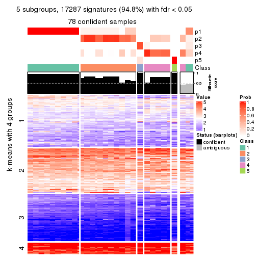
get_signatures(res, k = 6, scale_rows = FALSE)
Compare the overlap of signatures from different k:
compare_signatures(res)
get_signature() returns a data frame invisibly. TO get the list of signatures, the function
call should be assigned to a variable explicitly. In following code, if plot argument is set
to FALSE, no heatmap is plotted while only the differential analysis is performed.
# code only for demonstration
tb = get_signature(res, k = ..., plot = FALSE)
An example of the output of tb is:
#> which_row fdr mean_1 mean_2 scaled_mean_1 scaled_mean_2 km
#> 1 38 0.042760348 8.373488 9.131774 -0.5533452 0.5164555 1
#> 2 40 0.018707592 7.106213 8.469186 -0.6173731 0.5762149 1
#> 3 55 0.019134737 10.221463 11.207825 -0.6159697 0.5749050 1
#> 4 59 0.006059896 5.921854 7.869574 -0.6899429 0.6439467 1
#> 5 60 0.018055526 8.928898 10.211722 -0.6204761 0.5791110 1
#> 6 98 0.009384629 15.714769 14.887706 0.6635654 -0.6193277 2
...
The columns in tb are:
which_row: row indices corresponding to the input matrix.fdr: FDR for the differential test. mean_x: The mean value in group x.scaled_mean_x: The mean value in group x after rows are scaled.km: Row groups if k-means clustering is applied to rows.UMAP plot which shows how samples are separated.
dimension_reduction(res, k = 2, method = "UMAP")
dimension_reduction(res, k = 3, method = "UMAP")
dimension_reduction(res, k = 4, method = "UMAP")
dimension_reduction(res, k = 5, method = "UMAP")
dimension_reduction(res, k = 6, method = "UMAP")
Following heatmap shows how subgroups are split when increasing k:
collect_classes(res)

If matrix rows can be associated to genes, consider to use GO_Enrichment(res,
...) to perform function enrichment for the signature genes.
The object with results only for a single top-value method and a single partition method can be extracted as:
res = res_list["SD", "kmeans"]
# you can also extract it by
# res = res_list["SD:kmeans"]
A summary of res and all the functions that can be applied to it:
res
#> A 'ConsensusPartition' object with k = 2, 3, 4, 5, 6.
#> On a matrix with 18243 rows and 85 columns.
#> Top rows (1000, 2000, 3000, 4000, 5000) are extracted by 'SD' method.
#> Subgroups are detected by 'kmeans' method.
#> Performed in total 1250 partitions by row resampling.
#> Best k for subgroups seems to be 2.
#>
#> Following methods can be applied to this 'ConsensusPartition' object:
#> [1] "cola_report" "collect_classes" "collect_plots"
#> [4] "collect_stats" "colnames" "compare_signatures"
#> [7] "consensus_heatmap" "dimension_reduction" "functional_enrichment"
#> [10] "get_anno_col" "get_anno" "get_classes"
#> [13] "get_consensus" "get_matrix" "get_membership"
#> [16] "get_param" "get_signatures" "get_stats"
#> [19] "is_best_k" "is_stable_k" "membership_heatmap"
#> [22] "ncol" "nrow" "plot_ecdf"
#> [25] "rownames" "select_partition_number" "show"
#> [28] "suggest_best_k" "test_to_known_factors"
collect_plots() function collects all the plots made from res for all k (number of partitions)
into one single page to provide an easy and fast comparison between different k.
collect_plots(res)
The plots are:
k and the heatmap of
predicted classes for each k.k.k.k.All the plots in panels can be made by individual functions and they are plotted later in this section.
select_partition_number() produces several plots showing different
statistics for choosing “optimized” k. There are following statistics:
k;k, the area increased is defined as \(A_k - A_{k-1}\).The detailed explanations of these statistics can be found in the cola vignette.
Generally speaking, lower PAC score, higher mean silhouette score or higher
concordance corresponds to better partition. Rand index and Jaccard index
measure how similar the current partition is compared to partition with k-1.
If they are too similar, we won't accept k is better than k-1.
select_partition_number(res)
The numeric values for all these statistics can be obtained by get_stats().
get_stats(res)
#> k 1-PAC mean_silhouette concordance area_increased Rand Jaccard
#> 2 2 0.487 0.887 0.891 0.4433 0.500 0.500
#> 3 3 0.522 0.601 0.801 0.3644 0.913 0.825
#> 4 4 0.500 0.629 0.759 0.1374 0.780 0.535
#> 5 5 0.527 0.551 0.719 0.0694 0.966 0.894
#> 6 6 0.572 0.525 0.656 0.0531 0.929 0.760
suggest_best_k() suggests the best \(k\) based on these statistics. The rules are as follows:
NA.suggest_best_k(res)
#> [1] 2
Following shows the table of the partitions (You need to click the show/hide
code output link to see it). The membership matrix (columns with name p*)
is inferred by
clue::cl_consensus()
function with the SE method. Basically the value in the membership matrix
represents the probability to belong to a certain group. The finall class
label for an item is determined with the group with highest probability it
belongs to.
In get_classes() function, the entropy is calculated from the membership
matrix and the silhouette score is calculated from the consensus matrix.
cbind(get_classes(res, k = 2), get_membership(res, k = 2))
#> class entropy silhouette p1 p2
#> ERR532547 2 0.1633 0.9115 0.024 0.976
#> ERR532548 2 0.1633 0.9115 0.024 0.976
#> ERR532549 2 0.1633 0.9115 0.024 0.976
#> ERR532576 1 0.6247 0.9821 0.844 0.156
#> ERR532577 1 0.6247 0.9821 0.844 0.156
#> ERR532578 1 0.6247 0.9821 0.844 0.156
#> ERR532593 1 0.6247 0.9821 0.844 0.156
#> ERR532594 1 0.6247 0.9821 0.844 0.156
#> ERR532595 1 0.6247 0.9821 0.844 0.156
#> ERR532596 2 0.0672 0.9077 0.008 0.992
#> ERR532597 2 0.0672 0.9077 0.008 0.992
#> ERR532598 2 0.0672 0.9077 0.008 0.992
#> ERR532599 2 0.1633 0.9115 0.024 0.976
#> ERR532600 2 0.1633 0.9115 0.024 0.976
#> ERR532601 2 0.1633 0.9115 0.024 0.976
#> ERR532602 1 0.6247 0.9821 0.844 0.156
#> ERR532603 1 0.6247 0.9821 0.844 0.156
#> ERR532604 1 0.6247 0.9821 0.844 0.156
#> ERR532605 1 0.6247 0.9821 0.844 0.156
#> ERR532606 1 0.6247 0.9821 0.844 0.156
#> ERR532607 1 0.6247 0.9821 0.844 0.156
#> ERR532608 2 0.1843 0.9116 0.028 0.972
#> ERR532609 2 0.1843 0.9116 0.028 0.972
#> ERR532610 2 0.1843 0.9116 0.028 0.972
#> ERR532611 1 0.6247 0.9821 0.844 0.156
#> ERR532612 1 0.6247 0.9821 0.844 0.156
#> ERR532613 1 0.6247 0.9821 0.844 0.156
#> ERR532550 1 0.6247 0.9821 0.844 0.156
#> ERR532551 2 0.9896 0.0248 0.440 0.560
#> ERR532552 2 0.9896 0.0248 0.440 0.560
#> ERR532553 2 0.9896 0.0248 0.440 0.560
#> ERR532554 2 0.1414 0.9062 0.020 0.980
#> ERR532555 2 0.1414 0.9062 0.020 0.980
#> ERR532556 2 0.1414 0.9062 0.020 0.980
#> ERR532557 2 0.1843 0.9116 0.028 0.972
#> ERR532558 2 0.1843 0.9116 0.028 0.972
#> ERR532559 2 0.1843 0.9116 0.028 0.972
#> ERR532560 1 0.6148 0.9790 0.848 0.152
#> ERR532561 1 0.6148 0.9790 0.848 0.152
#> ERR532562 1 0.6148 0.9790 0.848 0.152
#> ERR532563 2 0.0672 0.9121 0.008 0.992
#> ERR532564 2 0.0672 0.9121 0.008 0.992
#> ERR532565 2 0.0672 0.9121 0.008 0.992
#> ERR532566 2 0.5737 0.8062 0.136 0.864
#> ERR532567 2 0.5737 0.8062 0.136 0.864
#> ERR532568 2 0.5737 0.8062 0.136 0.864
#> ERR532569 1 0.6247 0.9821 0.844 0.156
#> ERR532570 1 0.6247 0.9821 0.844 0.156
#> ERR532571 1 0.6247 0.9821 0.844 0.156
#> ERR532572 2 0.0376 0.9123 0.004 0.996
#> ERR532573 2 0.0376 0.9123 0.004 0.996
#> ERR532574 2 0.0376 0.9123 0.004 0.996
#> ERR532575 2 0.9815 0.0925 0.420 0.580
#> ERR532579 1 0.7299 0.9226 0.796 0.204
#> ERR532580 1 0.7299 0.9226 0.796 0.204
#> ERR532581 2 0.0376 0.9123 0.004 0.996
#> ERR532582 2 0.0376 0.9123 0.004 0.996
#> ERR532583 2 0.0376 0.9123 0.004 0.996
#> ERR532584 2 0.1843 0.9097 0.028 0.972
#> ERR532585 2 0.1843 0.9097 0.028 0.972
#> ERR532586 2 0.1843 0.9097 0.028 0.972
#> ERR532587 2 0.0000 0.9113 0.000 1.000
#> ERR532588 2 0.0000 0.9113 0.000 1.000
#> ERR532589 2 0.2236 0.9051 0.036 0.964
#> ERR532590 2 0.2236 0.9051 0.036 0.964
#> ERR532591 1 0.7219 0.9213 0.800 0.200
#> ERR532592 1 0.7219 0.9213 0.800 0.200
#> ERR532439 2 0.4298 0.8581 0.088 0.912
#> ERR532440 2 0.4298 0.8581 0.088 0.912
#> ERR532441 2 0.4298 0.8581 0.088 0.912
#> ERR532442 1 0.6148 0.9794 0.848 0.152
#> ERR532443 1 0.6148 0.9794 0.848 0.152
#> ERR532444 1 0.6148 0.9794 0.848 0.152
#> ERR532445 1 0.6247 0.9821 0.844 0.156
#> ERR532446 1 0.6247 0.9821 0.844 0.156
#> ERR532447 1 0.6247 0.9821 0.844 0.156
#> ERR532433 1 0.6887 0.9569 0.816 0.184
#> ERR532434 1 0.6887 0.9569 0.816 0.184
#> ERR532435 1 0.6887 0.9569 0.816 0.184
#> ERR532436 1 0.7139 0.9446 0.804 0.196
#> ERR532437 1 0.7139 0.9446 0.804 0.196
#> ERR532438 1 0.7139 0.9446 0.804 0.196
#> ERR532614 2 0.5737 0.8062 0.136 0.864
#> ERR532615 2 0.5737 0.8062 0.136 0.864
#> ERR532616 2 0.5737 0.8062 0.136 0.864
cbind(get_classes(res, k = 3), get_membership(res, k = 3))
#> class entropy silhouette p1 p2 p3
#> ERR532547 2 0.541 0.518 0.020 0.780 0.200
#> ERR532548 2 0.541 0.518 0.020 0.780 0.200
#> ERR532549 2 0.541 0.518 0.020 0.780 0.200
#> ERR532576 1 0.188 0.866 0.956 0.012 0.032
#> ERR532577 1 0.188 0.866 0.956 0.012 0.032
#> ERR532578 1 0.188 0.866 0.956 0.012 0.032
#> ERR532593 1 0.188 0.868 0.956 0.012 0.032
#> ERR532594 1 0.188 0.868 0.956 0.012 0.032
#> ERR532595 1 0.188 0.868 0.956 0.012 0.032
#> ERR532596 2 0.601 0.126 0.000 0.628 0.372
#> ERR532597 2 0.601 0.126 0.000 0.628 0.372
#> ERR532598 2 0.601 0.126 0.000 0.628 0.372
#> ERR532599 2 0.319 0.604 0.004 0.896 0.100
#> ERR532600 2 0.319 0.604 0.004 0.896 0.100
#> ERR532601 2 0.319 0.604 0.004 0.896 0.100
#> ERR532602 1 0.188 0.867 0.956 0.012 0.032
#> ERR532603 1 0.188 0.867 0.956 0.012 0.032
#> ERR532604 1 0.188 0.867 0.956 0.012 0.032
#> ERR532605 1 0.223 0.868 0.944 0.012 0.044
#> ERR532606 1 0.223 0.868 0.944 0.012 0.044
#> ERR532607 1 0.223 0.868 0.944 0.012 0.044
#> ERR532608 2 0.350 0.608 0.020 0.896 0.084
#> ERR532609 2 0.350 0.608 0.020 0.896 0.084
#> ERR532610 2 0.350 0.608 0.020 0.896 0.084
#> ERR532611 1 0.162 0.866 0.964 0.012 0.024
#> ERR532612 1 0.162 0.866 0.964 0.012 0.024
#> ERR532613 1 0.162 0.866 0.964 0.012 0.024
#> ERR532550 1 0.338 0.861 0.896 0.012 0.092
#> ERR532551 2 0.602 0.364 0.232 0.740 0.028
#> ERR532552 2 0.602 0.364 0.232 0.740 0.028
#> ERR532553 2 0.602 0.364 0.232 0.740 0.028
#> ERR532554 2 0.631 -0.262 0.000 0.500 0.500
#> ERR532555 3 0.631 0.134 0.000 0.500 0.500
#> ERR532556 3 0.631 0.134 0.000 0.500 0.500
#> ERR532557 2 0.153 0.614 0.004 0.964 0.032
#> ERR532558 2 0.153 0.614 0.004 0.964 0.032
#> ERR532559 2 0.153 0.614 0.004 0.964 0.032
#> ERR532560 1 0.346 0.860 0.892 0.012 0.096
#> ERR532561 1 0.346 0.860 0.892 0.012 0.096
#> ERR532562 1 0.346 0.860 0.892 0.012 0.096
#> ERR532563 2 0.493 0.466 0.000 0.768 0.232
#> ERR532564 2 0.493 0.466 0.000 0.768 0.232
#> ERR532565 2 0.493 0.466 0.000 0.768 0.232
#> ERR532566 3 0.643 0.745 0.012 0.348 0.640
#> ERR532567 3 0.643 0.745 0.012 0.348 0.640
#> ERR532568 3 0.643 0.745 0.012 0.348 0.640
#> ERR532569 1 0.223 0.868 0.944 0.012 0.044
#> ERR532570 1 0.223 0.868 0.944 0.012 0.044
#> ERR532571 1 0.223 0.868 0.944 0.012 0.044
#> ERR532572 2 0.556 0.342 0.000 0.700 0.300
#> ERR532573 2 0.556 0.342 0.000 0.700 0.300
#> ERR532574 2 0.556 0.342 0.000 0.700 0.300
#> ERR532575 2 0.536 0.411 0.196 0.784 0.020
#> ERR532579 1 0.563 0.768 0.800 0.056 0.144
#> ERR532580 1 0.563 0.768 0.800 0.056 0.144
#> ERR532581 2 0.595 0.226 0.000 0.640 0.360
#> ERR532582 2 0.595 0.226 0.000 0.640 0.360
#> ERR532583 2 0.595 0.226 0.000 0.640 0.360
#> ERR532584 2 0.175 0.609 0.028 0.960 0.012
#> ERR532585 2 0.175 0.609 0.028 0.960 0.012
#> ERR532586 2 0.175 0.609 0.028 0.960 0.012
#> ERR532587 2 0.599 0.144 0.000 0.632 0.368
#> ERR532588 2 0.599 0.144 0.000 0.632 0.368
#> ERR532589 2 0.292 0.591 0.044 0.924 0.032
#> ERR532590 2 0.292 0.591 0.044 0.924 0.032
#> ERR532591 1 0.625 0.753 0.756 0.056 0.188
#> ERR532592 1 0.625 0.753 0.756 0.056 0.188
#> ERR532439 2 0.162 0.612 0.012 0.964 0.024
#> ERR532440 2 0.162 0.612 0.012 0.964 0.024
#> ERR532441 2 0.162 0.612 0.012 0.964 0.024
#> ERR532442 1 0.338 0.860 0.896 0.012 0.092
#> ERR532443 1 0.338 0.860 0.896 0.012 0.092
#> ERR532444 1 0.338 0.860 0.896 0.012 0.092
#> ERR532445 1 0.362 0.857 0.884 0.012 0.104
#> ERR532446 1 0.362 0.857 0.884 0.012 0.104
#> ERR532447 1 0.362 0.857 0.884 0.012 0.104
#> ERR532433 1 0.733 0.373 0.544 0.424 0.032
#> ERR532434 1 0.733 0.373 0.544 0.424 0.032
#> ERR532435 1 0.733 0.373 0.544 0.424 0.032
#> ERR532436 1 0.764 0.351 0.520 0.436 0.044
#> ERR532437 1 0.764 0.351 0.520 0.436 0.044
#> ERR532438 1 0.764 0.351 0.520 0.436 0.044
#> ERR532614 3 0.586 0.760 0.000 0.344 0.656
#> ERR532615 3 0.586 0.760 0.000 0.344 0.656
#> ERR532616 3 0.586 0.760 0.000 0.344 0.656
cbind(get_classes(res, k = 4), get_membership(res, k = 4))
#> class entropy silhouette p1 p2 p3 p4
#> ERR532547 2 0.576 0.245 0.008 0.652 0.036 0.304
#> ERR532548 2 0.576 0.245 0.008 0.652 0.036 0.304
#> ERR532549 2 0.576 0.245 0.008 0.652 0.036 0.304
#> ERR532576 1 0.308 0.856 0.884 0.032 0.084 0.000
#> ERR532577 1 0.308 0.856 0.884 0.032 0.084 0.000
#> ERR532578 1 0.308 0.856 0.884 0.032 0.084 0.000
#> ERR532593 1 0.280 0.870 0.892 0.008 0.096 0.004
#> ERR532594 1 0.280 0.870 0.892 0.008 0.096 0.004
#> ERR532595 1 0.280 0.870 0.892 0.008 0.096 0.004
#> ERR532596 4 0.441 0.616 0.000 0.300 0.000 0.700
#> ERR532597 4 0.441 0.616 0.000 0.300 0.000 0.700
#> ERR532598 4 0.441 0.616 0.000 0.300 0.000 0.700
#> ERR532599 2 0.463 0.388 0.000 0.720 0.012 0.268
#> ERR532600 2 0.463 0.388 0.000 0.720 0.012 0.268
#> ERR532601 2 0.463 0.388 0.000 0.720 0.012 0.268
#> ERR532602 1 0.249 0.866 0.916 0.036 0.048 0.000
#> ERR532603 1 0.249 0.866 0.916 0.036 0.048 0.000
#> ERR532604 1 0.249 0.866 0.916 0.036 0.048 0.000
#> ERR532605 1 0.314 0.873 0.888 0.024 0.080 0.008
#> ERR532606 1 0.314 0.873 0.888 0.024 0.080 0.008
#> ERR532607 1 0.314 0.873 0.888 0.024 0.080 0.008
#> ERR532608 2 0.437 0.600 0.004 0.808 0.040 0.148
#> ERR532609 2 0.437 0.600 0.004 0.808 0.040 0.148
#> ERR532610 2 0.437 0.600 0.004 0.808 0.040 0.148
#> ERR532611 1 0.300 0.866 0.896 0.036 0.064 0.004
#> ERR532612 1 0.300 0.866 0.896 0.036 0.064 0.004
#> ERR532613 1 0.300 0.866 0.896 0.036 0.064 0.004
#> ERR532550 1 0.305 0.865 0.860 0.004 0.136 0.000
#> ERR532551 2 0.258 0.674 0.052 0.912 0.036 0.000
#> ERR532552 2 0.258 0.674 0.052 0.912 0.036 0.000
#> ERR532553 2 0.258 0.674 0.052 0.912 0.036 0.000
#> ERR532554 4 0.586 0.397 0.000 0.140 0.156 0.704
#> ERR532555 4 0.586 0.397 0.000 0.140 0.156 0.704
#> ERR532556 4 0.586 0.397 0.000 0.140 0.156 0.704
#> ERR532557 2 0.451 0.621 0.000 0.804 0.076 0.120
#> ERR532558 2 0.451 0.621 0.000 0.804 0.076 0.120
#> ERR532559 2 0.451 0.621 0.000 0.804 0.076 0.120
#> ERR532560 1 0.307 0.859 0.848 0.000 0.152 0.000
#> ERR532561 1 0.307 0.859 0.848 0.000 0.152 0.000
#> ERR532562 1 0.307 0.859 0.848 0.000 0.152 0.000
#> ERR532563 4 0.668 0.462 0.000 0.364 0.096 0.540
#> ERR532564 4 0.668 0.462 0.000 0.364 0.096 0.540
#> ERR532565 4 0.668 0.462 0.000 0.364 0.096 0.540
#> ERR532566 3 0.759 1.000 0.000 0.196 0.404 0.400
#> ERR532567 3 0.759 1.000 0.000 0.196 0.404 0.400
#> ERR532568 3 0.759 1.000 0.000 0.196 0.404 0.400
#> ERR532569 1 0.164 0.876 0.940 0.000 0.060 0.000
#> ERR532570 1 0.164 0.876 0.940 0.000 0.060 0.000
#> ERR532571 1 0.164 0.876 0.940 0.000 0.060 0.000
#> ERR532572 4 0.470 0.629 0.000 0.356 0.000 0.644
#> ERR532573 4 0.470 0.629 0.000 0.356 0.000 0.644
#> ERR532574 4 0.470 0.629 0.000 0.356 0.000 0.644
#> ERR532575 2 0.291 0.667 0.064 0.896 0.040 0.000
#> ERR532579 1 0.699 0.625 0.612 0.016 0.252 0.120
#> ERR532580 1 0.699 0.625 0.612 0.016 0.252 0.120
#> ERR532581 4 0.470 0.638 0.000 0.296 0.008 0.696
#> ERR532582 4 0.470 0.638 0.000 0.296 0.008 0.696
#> ERR532583 4 0.470 0.638 0.000 0.296 0.008 0.696
#> ERR532584 2 0.159 0.681 0.004 0.952 0.004 0.040
#> ERR532585 2 0.159 0.681 0.004 0.952 0.004 0.040
#> ERR532586 2 0.159 0.681 0.004 0.952 0.004 0.040
#> ERR532587 4 0.452 0.624 0.000 0.320 0.000 0.680
#> ERR532588 4 0.452 0.624 0.000 0.320 0.000 0.680
#> ERR532589 2 0.286 0.681 0.024 0.908 0.016 0.052
#> ERR532590 2 0.286 0.681 0.024 0.908 0.016 0.052
#> ERR532591 1 0.696 0.610 0.600 0.008 0.256 0.136
#> ERR532592 1 0.696 0.610 0.600 0.008 0.256 0.136
#> ERR532439 2 0.294 0.679 0.004 0.900 0.056 0.040
#> ERR532440 2 0.294 0.679 0.004 0.900 0.056 0.040
#> ERR532441 2 0.294 0.679 0.004 0.900 0.056 0.040
#> ERR532442 1 0.312 0.859 0.844 0.000 0.156 0.000
#> ERR532443 1 0.312 0.859 0.844 0.000 0.156 0.000
#> ERR532444 1 0.312 0.859 0.844 0.000 0.156 0.000
#> ERR532445 1 0.349 0.852 0.812 0.000 0.188 0.000
#> ERR532446 1 0.349 0.852 0.812 0.000 0.188 0.000
#> ERR532447 1 0.349 0.852 0.812 0.000 0.188 0.000
#> ERR532433 2 0.599 0.453 0.284 0.644 0.072 0.000
#> ERR532434 2 0.599 0.453 0.284 0.644 0.072 0.000
#> ERR532435 2 0.599 0.453 0.284 0.644 0.072 0.000
#> ERR532436 2 0.704 0.453 0.240 0.612 0.132 0.016
#> ERR532437 2 0.704 0.453 0.240 0.612 0.132 0.016
#> ERR532438 2 0.704 0.453 0.240 0.612 0.132 0.016
#> ERR532614 4 0.695 -0.690 0.000 0.128 0.336 0.536
#> ERR532615 4 0.695 -0.690 0.000 0.128 0.336 0.536
#> ERR532616 4 0.695 -0.690 0.000 0.128 0.336 0.536
cbind(get_classes(res, k = 5), get_membership(res, k = 5))
#> class entropy silhouette p1 p2 p3 p4 p5
#> ERR532547 2 0.645 0.179 0.004 0.484 0.092 0.400 0.020
#> ERR532548 2 0.645 0.179 0.004 0.484 0.092 0.400 0.020
#> ERR532549 2 0.645 0.179 0.004 0.484 0.092 0.400 0.020
#> ERR532576 1 0.329 0.525 0.872 0.044 0.024 0.004 0.056
#> ERR532577 1 0.329 0.525 0.872 0.044 0.024 0.004 0.056
#> ERR532578 1 0.329 0.525 0.872 0.044 0.024 0.004 0.056
#> ERR532593 1 0.448 0.552 0.780 0.020 0.024 0.016 0.160
#> ERR532594 1 0.448 0.552 0.780 0.020 0.024 0.016 0.160
#> ERR532595 1 0.448 0.552 0.780 0.020 0.024 0.016 0.160
#> ERR532596 4 0.449 0.691 0.000 0.152 0.040 0.776 0.032
#> ERR532597 4 0.449 0.691 0.000 0.152 0.040 0.776 0.032
#> ERR532598 4 0.449 0.691 0.000 0.152 0.040 0.776 0.032
#> ERR532599 2 0.553 0.316 0.000 0.560 0.036 0.384 0.020
#> ERR532600 2 0.553 0.316 0.000 0.560 0.036 0.384 0.020
#> ERR532601 2 0.553 0.316 0.000 0.560 0.036 0.384 0.020
#> ERR532602 1 0.239 0.557 0.916 0.040 0.012 0.004 0.028
#> ERR532603 1 0.239 0.557 0.916 0.040 0.012 0.004 0.028
#> ERR532604 1 0.239 0.557 0.916 0.040 0.012 0.004 0.028
#> ERR532605 1 0.350 0.577 0.836 0.032 0.004 0.004 0.124
#> ERR532606 1 0.350 0.577 0.836 0.032 0.004 0.004 0.124
#> ERR532607 1 0.350 0.577 0.836 0.032 0.004 0.004 0.124
#> ERR532608 2 0.605 0.551 0.004 0.668 0.120 0.168 0.040
#> ERR532609 2 0.605 0.551 0.004 0.668 0.120 0.168 0.040
#> ERR532610 2 0.605 0.551 0.004 0.668 0.120 0.168 0.040
#> ERR532611 1 0.306 0.559 0.884 0.048 0.012 0.008 0.048
#> ERR532612 1 0.306 0.559 0.884 0.048 0.012 0.008 0.048
#> ERR532613 1 0.306 0.559 0.884 0.048 0.012 0.008 0.048
#> ERR532550 1 0.505 0.502 0.612 0.004 0.028 0.004 0.352
#> ERR532551 2 0.195 0.661 0.044 0.932 0.004 0.016 0.004
#> ERR532552 2 0.195 0.661 0.044 0.932 0.004 0.016 0.004
#> ERR532553 2 0.195 0.661 0.044 0.932 0.004 0.016 0.004
#> ERR532554 4 0.572 0.443 0.000 0.052 0.072 0.684 0.192
#> ERR532555 4 0.572 0.443 0.000 0.052 0.072 0.684 0.192
#> ERR532556 4 0.572 0.443 0.000 0.052 0.072 0.684 0.192
#> ERR532557 2 0.604 0.518 0.000 0.636 0.048 0.240 0.076
#> ERR532558 2 0.604 0.518 0.000 0.636 0.048 0.240 0.076
#> ERR532559 2 0.604 0.518 0.000 0.636 0.048 0.240 0.076
#> ERR532560 1 0.438 0.532 0.628 0.004 0.004 0.000 0.364
#> ERR532561 1 0.438 0.532 0.628 0.004 0.004 0.000 0.364
#> ERR532562 1 0.438 0.532 0.628 0.004 0.004 0.000 0.364
#> ERR532563 4 0.723 0.385 0.000 0.300 0.080 0.500 0.120
#> ERR532564 4 0.723 0.385 0.000 0.300 0.080 0.500 0.120
#> ERR532565 4 0.723 0.385 0.000 0.300 0.080 0.500 0.120
#> ERR532566 3 0.444 0.843 0.000 0.072 0.748 0.180 0.000
#> ERR532567 3 0.444 0.843 0.000 0.072 0.748 0.180 0.000
#> ERR532568 3 0.444 0.843 0.000 0.072 0.748 0.180 0.000
#> ERR532569 1 0.400 0.558 0.752 0.012 0.008 0.000 0.228
#> ERR532570 1 0.400 0.558 0.752 0.012 0.008 0.000 0.228
#> ERR532571 1 0.400 0.558 0.752 0.012 0.008 0.000 0.228
#> ERR532572 4 0.397 0.709 0.000 0.224 0.008 0.756 0.012
#> ERR532573 4 0.397 0.709 0.000 0.224 0.008 0.756 0.012
#> ERR532574 4 0.397 0.709 0.000 0.224 0.008 0.756 0.012
#> ERR532575 2 0.284 0.657 0.052 0.896 0.008 0.028 0.016
#> ERR532579 1 0.712 -0.756 0.492 0.012 0.100 0.048 0.348
#> ERR532580 1 0.712 -0.756 0.492 0.012 0.100 0.048 0.348
#> ERR532581 4 0.409 0.721 0.000 0.180 0.020 0.780 0.020
#> ERR532582 4 0.409 0.721 0.000 0.180 0.020 0.780 0.020
#> ERR532583 4 0.409 0.721 0.000 0.180 0.020 0.780 0.020
#> ERR532584 2 0.383 0.641 0.004 0.808 0.016 0.156 0.016
#> ERR532585 2 0.383 0.641 0.004 0.808 0.016 0.156 0.016
#> ERR532586 2 0.383 0.641 0.004 0.808 0.016 0.156 0.016
#> ERR532587 4 0.428 0.704 0.000 0.172 0.024 0.776 0.028
#> ERR532588 4 0.428 0.704 0.000 0.172 0.024 0.776 0.028
#> ERR532589 2 0.449 0.634 0.012 0.772 0.028 0.172 0.016
#> ERR532590 2 0.449 0.634 0.012 0.772 0.028 0.172 0.016
#> ERR532591 5 0.725 1.000 0.400 0.004 0.096 0.072 0.428
#> ERR532592 5 0.725 1.000 0.400 0.004 0.096 0.072 0.428
#> ERR532439 2 0.312 0.656 0.000 0.876 0.028 0.064 0.032
#> ERR532440 2 0.312 0.656 0.000 0.876 0.028 0.064 0.032
#> ERR532441 2 0.312 0.656 0.000 0.876 0.028 0.064 0.032
#> ERR532442 1 0.432 0.549 0.668 0.008 0.004 0.000 0.320
#> ERR532443 1 0.432 0.549 0.668 0.008 0.004 0.000 0.320
#> ERR532444 1 0.432 0.549 0.668 0.008 0.004 0.000 0.320
#> ERR532445 1 0.490 0.511 0.596 0.000 0.024 0.004 0.376
#> ERR532446 1 0.490 0.511 0.596 0.000 0.024 0.004 0.376
#> ERR532447 1 0.490 0.511 0.596 0.000 0.024 0.004 0.376
#> ERR532433 2 0.379 0.568 0.180 0.792 0.008 0.000 0.020
#> ERR532434 2 0.379 0.568 0.180 0.792 0.008 0.000 0.020
#> ERR532435 2 0.379 0.568 0.180 0.792 0.008 0.000 0.020
#> ERR532436 2 0.594 0.536 0.132 0.704 0.040 0.020 0.104
#> ERR532437 2 0.594 0.536 0.132 0.704 0.040 0.020 0.104
#> ERR532438 2 0.594 0.536 0.132 0.704 0.040 0.020 0.104
#> ERR532614 3 0.625 0.822 0.000 0.048 0.560 0.332 0.060
#> ERR532615 3 0.625 0.822 0.000 0.048 0.560 0.332 0.060
#> ERR532616 3 0.625 0.822 0.000 0.048 0.560 0.332 0.060
cbind(get_classes(res, k = 6), get_membership(res, k = 6))
#> class entropy silhouette p1 p2 p3 p4 p5 p6
#> ERR532547 2 0.6674 0.190 0.000 0.436 NA 0.404 0.060 0.056
#> ERR532548 2 0.6674 0.190 0.000 0.436 NA 0.404 0.060 0.056
#> ERR532549 2 0.6674 0.190 0.000 0.436 NA 0.404 0.060 0.056
#> ERR532576 6 0.4884 0.459 0.420 0.032 NA 0.004 0.004 0.536
#> ERR532577 6 0.4884 0.459 0.420 0.032 NA 0.004 0.004 0.536
#> ERR532578 6 0.4884 0.459 0.420 0.032 NA 0.004 0.004 0.536
#> ERR532593 6 0.5019 0.237 0.472 0.000 NA 0.000 0.012 0.472
#> ERR532594 6 0.5019 0.237 0.472 0.000 NA 0.000 0.012 0.472
#> ERR532595 6 0.5019 0.237 0.472 0.000 NA 0.000 0.012 0.472
#> ERR532596 4 0.4469 0.655 0.000 0.092 NA 0.772 0.020 0.020
#> ERR532597 4 0.4469 0.655 0.000 0.092 NA 0.772 0.020 0.020
#> ERR532598 4 0.4469 0.655 0.000 0.092 NA 0.772 0.020 0.020
#> ERR532599 2 0.5208 0.347 0.000 0.540 NA 0.400 0.024 0.020
#> ERR532600 2 0.5208 0.347 0.000 0.540 NA 0.400 0.024 0.020
#> ERR532601 2 0.5208 0.347 0.000 0.540 NA 0.400 0.024 0.020
#> ERR532602 6 0.4759 0.431 0.460 0.024 NA 0.004 0.000 0.504
#> ERR532603 6 0.4759 0.431 0.460 0.024 NA 0.004 0.000 0.504
#> ERR532604 6 0.4759 0.431 0.460 0.024 NA 0.004 0.000 0.504
#> ERR532605 1 0.5212 0.152 0.648 0.028 NA 0.000 0.024 0.268
#> ERR532606 1 0.5212 0.152 0.648 0.028 NA 0.000 0.024 0.268
#> ERR532607 1 0.5212 0.152 0.648 0.028 NA 0.000 0.024 0.268
#> ERR532608 2 0.6004 0.577 0.000 0.648 NA 0.184 0.064 0.048
#> ERR532609 2 0.6004 0.577 0.000 0.648 NA 0.184 0.064 0.048
#> ERR532610 2 0.6004 0.577 0.000 0.648 NA 0.184 0.064 0.048
#> ERR532611 6 0.5718 0.406 0.436 0.028 NA 0.000 0.024 0.476
#> ERR532612 6 0.5718 0.406 0.436 0.028 NA 0.000 0.024 0.476
#> ERR532613 6 0.5718 0.406 0.436 0.028 NA 0.000 0.024 0.476
#> ERR532550 1 0.4223 0.529 0.768 0.004 NA 0.004 0.016 0.156
#> ERR532551 2 0.1332 0.699 0.000 0.952 NA 0.008 0.000 0.028
#> ERR532552 2 0.1332 0.699 0.000 0.952 NA 0.008 0.000 0.028
#> ERR532553 2 0.1332 0.699 0.000 0.952 NA 0.008 0.000 0.028
#> ERR532554 4 0.6264 0.403 0.000 0.020 NA 0.548 0.036 0.104
#> ERR532555 4 0.6264 0.403 0.000 0.020 NA 0.548 0.036 0.104
#> ERR532556 4 0.6264 0.403 0.000 0.020 NA 0.548 0.036 0.104
#> ERR532557 2 0.6038 0.536 0.000 0.580 NA 0.176 0.020 0.012
#> ERR532558 2 0.6038 0.536 0.000 0.580 NA 0.176 0.020 0.012
#> ERR532559 2 0.6038 0.536 0.000 0.580 NA 0.176 0.020 0.012
#> ERR532560 1 0.0692 0.664 0.976 0.000 NA 0.000 0.000 0.020
#> ERR532561 1 0.0692 0.664 0.976 0.000 NA 0.000 0.000 0.020
#> ERR532562 1 0.0692 0.664 0.976 0.000 NA 0.000 0.000 0.020
#> ERR532563 4 0.6534 0.367 0.000 0.212 NA 0.424 0.024 0.004
#> ERR532564 4 0.6534 0.367 0.000 0.212 NA 0.424 0.024 0.004
#> ERR532565 4 0.6534 0.367 0.000 0.212 NA 0.424 0.024 0.004
#> ERR532566 5 0.2908 0.837 0.000 0.008 NA 0.140 0.840 0.008
#> ERR532567 5 0.2655 0.837 0.000 0.008 NA 0.140 0.848 0.004
#> ERR532568 5 0.2655 0.837 0.000 0.008 NA 0.140 0.848 0.004
#> ERR532569 1 0.3915 0.279 0.692 0.000 NA 0.000 0.004 0.288
#> ERR532570 1 0.3915 0.279 0.692 0.000 NA 0.000 0.004 0.288
#> ERR532571 1 0.3915 0.279 0.692 0.000 NA 0.000 0.004 0.288
#> ERR532572 4 0.3007 0.669 0.000 0.140 NA 0.836 0.012 0.004
#> ERR532573 4 0.3007 0.669 0.000 0.140 NA 0.836 0.012 0.004
#> ERR532574 4 0.3007 0.669 0.000 0.140 NA 0.836 0.012 0.004
#> ERR532575 2 0.2132 0.702 0.000 0.920 NA 0.020 0.008 0.032
#> ERR532579 6 0.6421 0.266 0.208 0.004 NA 0.012 0.016 0.520
#> ERR532580 6 0.6421 0.266 0.208 0.004 NA 0.012 0.016 0.520
#> ERR532581 4 0.3957 0.680 0.000 0.100 NA 0.788 0.004 0.008
#> ERR532582 4 0.3957 0.680 0.000 0.100 NA 0.788 0.004 0.008
#> ERR532583 4 0.3957 0.680 0.000 0.100 NA 0.788 0.004 0.008
#> ERR532584 2 0.3410 0.688 0.000 0.836 NA 0.108 0.012 0.024
#> ERR532585 2 0.3410 0.688 0.000 0.836 NA 0.108 0.012 0.024
#> ERR532586 2 0.3410 0.688 0.000 0.836 NA 0.108 0.012 0.024
#> ERR532587 4 0.4101 0.658 0.000 0.096 NA 0.796 0.016 0.016
#> ERR532588 4 0.4101 0.658 0.000 0.096 NA 0.796 0.016 0.016
#> ERR532589 2 0.3521 0.683 0.000 0.828 NA 0.112 0.012 0.032
#> ERR532590 2 0.3521 0.683 0.000 0.828 NA 0.112 0.012 0.032
#> ERR532591 6 0.7254 0.158 0.304 0.004 NA 0.028 0.024 0.352
#> ERR532592 6 0.7254 0.158 0.304 0.004 NA 0.028 0.024 0.352
#> ERR532439 2 0.3847 0.678 0.000 0.820 NA 0.040 0.020 0.028
#> ERR532440 2 0.3847 0.678 0.000 0.820 NA 0.040 0.020 0.028
#> ERR532441 2 0.3847 0.678 0.000 0.820 NA 0.040 0.020 0.028
#> ERR532442 1 0.1223 0.662 0.960 0.000 NA 0.004 0.008 0.016
#> ERR532443 1 0.1223 0.662 0.960 0.000 NA 0.004 0.008 0.016
#> ERR532444 1 0.1223 0.662 0.960 0.000 NA 0.004 0.008 0.016
#> ERR532445 1 0.3093 0.605 0.864 0.000 NA 0.004 0.032 0.064
#> ERR532446 1 0.3093 0.605 0.864 0.000 NA 0.004 0.032 0.064
#> ERR532447 1 0.3093 0.605 0.864 0.000 NA 0.004 0.032 0.064
#> ERR532433 2 0.3610 0.647 0.048 0.828 NA 0.000 0.000 0.060
#> ERR532434 2 0.3610 0.647 0.048 0.828 NA 0.000 0.000 0.060
#> ERR532435 2 0.3610 0.647 0.048 0.828 NA 0.000 0.000 0.060
#> ERR532436 2 0.4880 0.595 0.052 0.708 NA 0.004 0.004 0.032
#> ERR532437 2 0.4880 0.595 0.052 0.708 NA 0.004 0.004 0.032
#> ERR532438 2 0.4880 0.595 0.052 0.708 NA 0.004 0.004 0.032
#> ERR532614 5 0.5874 0.820 0.000 0.012 NA 0.284 0.584 0.036
#> ERR532615 5 0.5874 0.820 0.000 0.012 NA 0.284 0.584 0.036
#> ERR532616 5 0.5874 0.820 0.000 0.012 NA 0.284 0.584 0.036
Heatmaps for the consensus matrix. It visualizes the probability of two samples to be in a same group.
consensus_heatmap(res, k = 2)
consensus_heatmap(res, k = 3)
consensus_heatmap(res, k = 4)
consensus_heatmap(res, k = 5)
consensus_heatmap(res, k = 6)
Heatmaps for the membership of samples in all partitions to see how consistent they are:
membership_heatmap(res, k = 2)
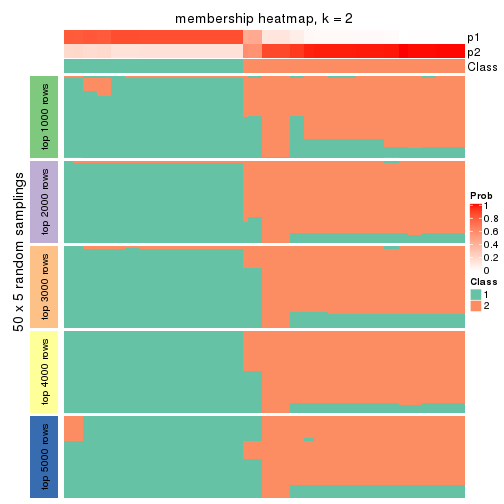
membership_heatmap(res, k = 3)
membership_heatmap(res, k = 4)
membership_heatmap(res, k = 5)
membership_heatmap(res, k = 6)
As soon as we have had the classes for columns, we can look for signatures which are significantly different between classes which can be candidate marks for certain classes. Following are the heatmaps for signatures.
Signature heatmaps where rows are scaled:
get_signatures(res, k = 2)
get_signatures(res, k = 3)
get_signatures(res, k = 4)
get_signatures(res, k = 5)
get_signatures(res, k = 6)
Signature heatmaps where rows are not scaled:
get_signatures(res, k = 2, scale_rows = FALSE)
get_signatures(res, k = 3, scale_rows = FALSE)
get_signatures(res, k = 4, scale_rows = FALSE)
get_signatures(res, k = 5, scale_rows = FALSE)
get_signatures(res, k = 6, scale_rows = FALSE)
Compare the overlap of signatures from different k:
compare_signatures(res)
get_signature() returns a data frame invisibly. TO get the list of signatures, the function
call should be assigned to a variable explicitly. In following code, if plot argument is set
to FALSE, no heatmap is plotted while only the differential analysis is performed.
# code only for demonstration
tb = get_signature(res, k = ..., plot = FALSE)
An example of the output of tb is:
#> which_row fdr mean_1 mean_2 scaled_mean_1 scaled_mean_2 km
#> 1 38 0.042760348 8.373488 9.131774 -0.5533452 0.5164555 1
#> 2 40 0.018707592 7.106213 8.469186 -0.6173731 0.5762149 1
#> 3 55 0.019134737 10.221463 11.207825 -0.6159697 0.5749050 1
#> 4 59 0.006059896 5.921854 7.869574 -0.6899429 0.6439467 1
#> 5 60 0.018055526 8.928898 10.211722 -0.6204761 0.5791110 1
#> 6 98 0.009384629 15.714769 14.887706 0.6635654 -0.6193277 2
...
The columns in tb are:
which_row: row indices corresponding to the input matrix.fdr: FDR for the differential test. mean_x: The mean value in group x.scaled_mean_x: The mean value in group x after rows are scaled.km: Row groups if k-means clustering is applied to rows.UMAP plot which shows how samples are separated.
dimension_reduction(res, k = 2, method = "UMAP")

dimension_reduction(res, k = 3, method = "UMAP")
dimension_reduction(res, k = 4, method = "UMAP")
dimension_reduction(res, k = 5, method = "UMAP")
dimension_reduction(res, k = 6, method = "UMAP")
Following heatmap shows how subgroups are split when increasing k:
collect_classes(res)

If matrix rows can be associated to genes, consider to use GO_Enrichment(res,
...) to perform function enrichment for the signature genes.
The object with results only for a single top-value method and a single partition method can be extracted as:
res = res_list["SD", "skmeans"]
# you can also extract it by
# res = res_list["SD:skmeans"]
A summary of res and all the functions that can be applied to it:
res
#> A 'ConsensusPartition' object with k = 2, 3, 4, 5, 6.
#> On a matrix with 18243 rows and 85 columns.
#> Top rows (1000, 2000, 3000, 4000, 5000) are extracted by 'SD' method.
#> Subgroups are detected by 'skmeans' method.
#> Performed in total 1250 partitions by row resampling.
#> Best k for subgroups seems to be 3.
#>
#> Following methods can be applied to this 'ConsensusPartition' object:
#> [1] "cola_report" "collect_classes" "collect_plots"
#> [4] "collect_stats" "colnames" "compare_signatures"
#> [7] "consensus_heatmap" "dimension_reduction" "functional_enrichment"
#> [10] "get_anno_col" "get_anno" "get_classes"
#> [13] "get_consensus" "get_matrix" "get_membership"
#> [16] "get_param" "get_signatures" "get_stats"
#> [19] "is_best_k" "is_stable_k" "membership_heatmap"
#> [22] "ncol" "nrow" "plot_ecdf"
#> [25] "rownames" "select_partition_number" "show"
#> [28] "suggest_best_k" "test_to_known_factors"
collect_plots() function collects all the plots made from res for all k (number of partitions)
into one single page to provide an easy and fast comparison between different k.
collect_plots(res)
The plots are:
k and the heatmap of
predicted classes for each k.k.k.k.All the plots in panels can be made by individual functions and they are plotted later in this section.
select_partition_number() produces several plots showing different
statistics for choosing “optimized” k. There are following statistics:
k;k, the area increased is defined as \(A_k - A_{k-1}\).The detailed explanations of these statistics can be found in the cola vignette.
Generally speaking, lower PAC score, higher mean silhouette score or higher
concordance corresponds to better partition. Rand index and Jaccard index
measure how similar the current partition is compared to partition with k-1.
If they are too similar, we won't accept k is better than k-1.
select_partition_number(res)
The numeric values for all these statistics can be obtained by get_stats().
get_stats(res)
#> k 1-PAC mean_silhouette concordance area_increased Rand Jaccard
#> 2 2 1.000 0.935 0.977 0.5035 0.500 0.500
#> 3 3 0.974 0.960 0.972 0.3143 0.787 0.593
#> 4 4 0.749 0.811 0.843 0.1001 0.933 0.800
#> 5 5 0.729 0.711 0.794 0.0571 0.968 0.883
#> 6 6 0.716 0.690 0.785 0.0446 0.951 0.802
suggest_best_k() suggests the best \(k\) based on these statistics. The rules are as follows:
NA.suggest_best_k(res)
#> [1] 3
#> attr(,"optional")
#> [1] 2
There is also optional best \(k\) = 2 that is worth to check.
Following shows the table of the partitions (You need to click the show/hide
code output link to see it). The membership matrix (columns with name p*)
is inferred by
clue::cl_consensus()
function with the SE method. Basically the value in the membership matrix
represents the probability to belong to a certain group. The finall class
label for an item is determined with the group with highest probability it
belongs to.
In get_classes() function, the entropy is calculated from the membership
matrix and the silhouette score is calculated from the consensus matrix.
cbind(get_classes(res, k = 2), get_membership(res, k = 2))
#> class entropy silhouette p1 p2
#> ERR532547 2 0 0.9561 0.000 1.000
#> ERR532548 2 0 0.9561 0.000 1.000
#> ERR532549 2 0 0.9561 0.000 1.000
#> ERR532576 1 0 1.0000 1.000 0.000
#> ERR532577 1 0 1.0000 1.000 0.000
#> ERR532578 1 0 1.0000 1.000 0.000
#> ERR532593 1 0 1.0000 1.000 0.000
#> ERR532594 1 0 1.0000 1.000 0.000
#> ERR532595 1 0 1.0000 1.000 0.000
#> ERR532596 2 0 0.9561 0.000 1.000
#> ERR532597 2 0 0.9561 0.000 1.000
#> ERR532598 2 0 0.9561 0.000 1.000
#> ERR532599 2 0 0.9561 0.000 1.000
#> ERR532600 2 0 0.9561 0.000 1.000
#> ERR532601 2 0 0.9561 0.000 1.000
#> ERR532602 1 0 1.0000 1.000 0.000
#> ERR532603 1 0 1.0000 1.000 0.000
#> ERR532604 1 0 1.0000 1.000 0.000
#> ERR532605 1 0 1.0000 1.000 0.000
#> ERR532606 1 0 1.0000 1.000 0.000
#> ERR532607 1 0 1.0000 1.000 0.000
#> ERR532608 2 0 0.9561 0.000 1.000
#> ERR532609 2 0 0.9561 0.000 1.000
#> ERR532610 2 0 0.9561 0.000 1.000
#> ERR532611 1 0 1.0000 1.000 0.000
#> ERR532612 1 0 1.0000 1.000 0.000
#> ERR532613 1 0 1.0000 1.000 0.000
#> ERR532550 1 0 1.0000 1.000 0.000
#> ERR532551 2 1 0.0943 0.492 0.508
#> ERR532552 2 1 0.0943 0.492 0.508
#> ERR532553 2 1 0.0943 0.492 0.508
#> ERR532554 2 0 0.9561 0.000 1.000
#> ERR532555 2 0 0.9561 0.000 1.000
#> ERR532556 2 0 0.9561 0.000 1.000
#> ERR532557 2 0 0.9561 0.000 1.000
#> ERR532558 2 0 0.9561 0.000 1.000
#> ERR532559 2 0 0.9561 0.000 1.000
#> ERR532560 1 0 1.0000 1.000 0.000
#> ERR532561 1 0 1.0000 1.000 0.000
#> ERR532562 1 0 1.0000 1.000 0.000
#> ERR532563 2 0 0.9561 0.000 1.000
#> ERR532564 2 0 0.9561 0.000 1.000
#> ERR532565 2 0 0.9561 0.000 1.000
#> ERR532566 2 0 0.9561 0.000 1.000
#> ERR532567 2 0 0.9561 0.000 1.000
#> ERR532568 2 0 0.9561 0.000 1.000
#> ERR532569 1 0 1.0000 1.000 0.000
#> ERR532570 1 0 1.0000 1.000 0.000
#> ERR532571 1 0 1.0000 1.000 0.000
#> ERR532572 2 0 0.9561 0.000 1.000
#> ERR532573 2 0 0.9561 0.000 1.000
#> ERR532574 2 0 0.9561 0.000 1.000
#> ERR532575 2 1 0.0801 0.496 0.504
#> ERR532579 1 0 1.0000 1.000 0.000
#> ERR532580 1 0 1.0000 1.000 0.000
#> ERR532581 2 0 0.9561 0.000 1.000
#> ERR532582 2 0 0.9561 0.000 1.000
#> ERR532583 2 0 0.9561 0.000 1.000
#> ERR532584 2 0 0.9561 0.000 1.000
#> ERR532585 2 0 0.9561 0.000 1.000
#> ERR532586 2 0 0.9561 0.000 1.000
#> ERR532587 2 0 0.9561 0.000 1.000
#> ERR532588 2 0 0.9561 0.000 1.000
#> ERR532589 2 0 0.9561 0.000 1.000
#> ERR532590 2 0 0.9561 0.000 1.000
#> ERR532591 1 0 1.0000 1.000 0.000
#> ERR532592 1 0 1.0000 1.000 0.000
#> ERR532439 2 0 0.9561 0.000 1.000
#> ERR532440 2 0 0.9561 0.000 1.000
#> ERR532441 2 0 0.9561 0.000 1.000
#> ERR532442 1 0 1.0000 1.000 0.000
#> ERR532443 1 0 1.0000 1.000 0.000
#> ERR532444 1 0 1.0000 1.000 0.000
#> ERR532445 1 0 1.0000 1.000 0.000
#> ERR532446 1 0 1.0000 1.000 0.000
#> ERR532447 1 0 1.0000 1.000 0.000
#> ERR532433 1 0 1.0000 1.000 0.000
#> ERR532434 1 0 1.0000 1.000 0.000
#> ERR532435 1 0 1.0000 1.000 0.000
#> ERR532436 1 0 1.0000 1.000 0.000
#> ERR532437 1 0 1.0000 1.000 0.000
#> ERR532438 1 0 1.0000 1.000 0.000
#> ERR532614 2 0 0.9561 0.000 1.000
#> ERR532615 2 0 0.9561 0.000 1.000
#> ERR532616 2 0 0.9561 0.000 1.000
cbind(get_classes(res, k = 3), get_membership(res, k = 3))
#> class entropy silhouette p1 p2 p3
#> ERR532547 2 0.1753 0.960 0.000 0.952 0.048
#> ERR532548 2 0.1753 0.960 0.000 0.952 0.048
#> ERR532549 2 0.1753 0.960 0.000 0.952 0.048
#> ERR532576 1 0.0000 0.995 1.000 0.000 0.000
#> ERR532577 1 0.0000 0.995 1.000 0.000 0.000
#> ERR532578 1 0.0000 0.995 1.000 0.000 0.000
#> ERR532593 1 0.0000 0.995 1.000 0.000 0.000
#> ERR532594 1 0.0000 0.995 1.000 0.000 0.000
#> ERR532595 1 0.0000 0.995 1.000 0.000 0.000
#> ERR532596 2 0.0000 0.971 0.000 1.000 0.000
#> ERR532597 2 0.0000 0.971 0.000 1.000 0.000
#> ERR532598 2 0.0000 0.971 0.000 1.000 0.000
#> ERR532599 2 0.2878 0.902 0.000 0.904 0.096
#> ERR532600 2 0.2878 0.902 0.000 0.904 0.096
#> ERR532601 2 0.2878 0.902 0.000 0.904 0.096
#> ERR532602 1 0.0000 0.995 1.000 0.000 0.000
#> ERR532603 1 0.0000 0.995 1.000 0.000 0.000
#> ERR532604 1 0.0000 0.995 1.000 0.000 0.000
#> ERR532605 1 0.0000 0.995 1.000 0.000 0.000
#> ERR532606 1 0.0000 0.995 1.000 0.000 0.000
#> ERR532607 1 0.0000 0.995 1.000 0.000 0.000
#> ERR532608 2 0.2625 0.941 0.000 0.916 0.084
#> ERR532609 2 0.2625 0.941 0.000 0.916 0.084
#> ERR532610 2 0.2625 0.941 0.000 0.916 0.084
#> ERR532611 1 0.0000 0.995 1.000 0.000 0.000
#> ERR532612 1 0.0000 0.995 1.000 0.000 0.000
#> ERR532613 1 0.0000 0.995 1.000 0.000 0.000
#> ERR532550 1 0.0000 0.995 1.000 0.000 0.000
#> ERR532551 3 0.0000 0.938 0.000 0.000 1.000
#> ERR532552 3 0.0000 0.938 0.000 0.000 1.000
#> ERR532553 3 0.0000 0.938 0.000 0.000 1.000
#> ERR532554 2 0.0000 0.971 0.000 1.000 0.000
#> ERR532555 2 0.0000 0.971 0.000 1.000 0.000
#> ERR532556 2 0.0000 0.971 0.000 1.000 0.000
#> ERR532557 3 0.3192 0.904 0.000 0.112 0.888
#> ERR532558 3 0.3192 0.904 0.000 0.112 0.888
#> ERR532559 3 0.3192 0.904 0.000 0.112 0.888
#> ERR532560 1 0.0000 0.995 1.000 0.000 0.000
#> ERR532561 1 0.0000 0.995 1.000 0.000 0.000
#> ERR532562 1 0.0000 0.995 1.000 0.000 0.000
#> ERR532563 2 0.0000 0.971 0.000 1.000 0.000
#> ERR532564 2 0.0000 0.971 0.000 1.000 0.000
#> ERR532565 2 0.0000 0.971 0.000 1.000 0.000
#> ERR532566 2 0.1643 0.961 0.000 0.956 0.044
#> ERR532567 2 0.1643 0.961 0.000 0.956 0.044
#> ERR532568 2 0.1643 0.961 0.000 0.956 0.044
#> ERR532569 1 0.0000 0.995 1.000 0.000 0.000
#> ERR532570 1 0.0000 0.995 1.000 0.000 0.000
#> ERR532571 1 0.0000 0.995 1.000 0.000 0.000
#> ERR532572 2 0.0000 0.971 0.000 1.000 0.000
#> ERR532573 2 0.0000 0.971 0.000 1.000 0.000
#> ERR532574 2 0.0000 0.971 0.000 1.000 0.000
#> ERR532575 3 0.1832 0.940 0.036 0.008 0.956
#> ERR532579 1 0.1411 0.962 0.964 0.036 0.000
#> ERR532580 1 0.1411 0.962 0.964 0.036 0.000
#> ERR532581 2 0.0000 0.971 0.000 1.000 0.000
#> ERR532582 2 0.0000 0.971 0.000 1.000 0.000
#> ERR532583 2 0.0000 0.971 0.000 1.000 0.000
#> ERR532584 3 0.0747 0.942 0.000 0.016 0.984
#> ERR532585 3 0.0747 0.942 0.000 0.016 0.984
#> ERR532586 3 0.0747 0.942 0.000 0.016 0.984
#> ERR532587 2 0.0000 0.971 0.000 1.000 0.000
#> ERR532588 2 0.0000 0.971 0.000 1.000 0.000
#> ERR532589 3 0.4605 0.747 0.000 0.204 0.796
#> ERR532590 3 0.4605 0.747 0.000 0.204 0.796
#> ERR532591 1 0.1411 0.962 0.964 0.036 0.000
#> ERR532592 1 0.1411 0.962 0.964 0.036 0.000
#> ERR532439 3 0.1643 0.938 0.000 0.044 0.956
#> ERR532440 3 0.1643 0.938 0.000 0.044 0.956
#> ERR532441 3 0.1643 0.938 0.000 0.044 0.956
#> ERR532442 1 0.0000 0.995 1.000 0.000 0.000
#> ERR532443 1 0.0000 0.995 1.000 0.000 0.000
#> ERR532444 1 0.0000 0.995 1.000 0.000 0.000
#> ERR532445 1 0.0000 0.995 1.000 0.000 0.000
#> ERR532446 1 0.0000 0.995 1.000 0.000 0.000
#> ERR532447 1 0.0000 0.995 1.000 0.000 0.000
#> ERR532433 3 0.1753 0.937 0.048 0.000 0.952
#> ERR532434 3 0.1753 0.937 0.048 0.000 0.952
#> ERR532435 3 0.1753 0.937 0.048 0.000 0.952
#> ERR532436 3 0.1753 0.937 0.048 0.000 0.952
#> ERR532437 3 0.1753 0.937 0.048 0.000 0.952
#> ERR532438 3 0.1753 0.937 0.048 0.000 0.952
#> ERR532614 2 0.1643 0.961 0.000 0.956 0.044
#> ERR532615 2 0.1643 0.961 0.000 0.956 0.044
#> ERR532616 2 0.1643 0.961 0.000 0.956 0.044
cbind(get_classes(res, k = 4), get_membership(res, k = 4))
#> class entropy silhouette p1 p2 p3 p4
#> ERR532547 3 0.4916 0.740 0.000 0.000 0.576 0.424
#> ERR532548 3 0.4916 0.740 0.000 0.000 0.576 0.424
#> ERR532549 3 0.4916 0.740 0.000 0.000 0.576 0.424
#> ERR532576 1 0.0000 0.974 1.000 0.000 0.000 0.000
#> ERR532577 1 0.0000 0.974 1.000 0.000 0.000 0.000
#> ERR532578 1 0.0000 0.974 1.000 0.000 0.000 0.000
#> ERR532593 1 0.0000 0.974 1.000 0.000 0.000 0.000
#> ERR532594 1 0.0000 0.974 1.000 0.000 0.000 0.000
#> ERR532595 1 0.0000 0.974 1.000 0.000 0.000 0.000
#> ERR532596 4 0.2868 0.745 0.000 0.000 0.136 0.864
#> ERR532597 4 0.2868 0.745 0.000 0.000 0.136 0.864
#> ERR532598 4 0.2868 0.745 0.000 0.000 0.136 0.864
#> ERR532599 4 0.5772 0.595 0.000 0.116 0.176 0.708
#> ERR532600 4 0.5772 0.595 0.000 0.116 0.176 0.708
#> ERR532601 4 0.5772 0.595 0.000 0.116 0.176 0.708
#> ERR532602 1 0.0000 0.974 1.000 0.000 0.000 0.000
#> ERR532603 1 0.0000 0.974 1.000 0.000 0.000 0.000
#> ERR532604 1 0.0000 0.974 1.000 0.000 0.000 0.000
#> ERR532605 1 0.0000 0.974 1.000 0.000 0.000 0.000
#> ERR532606 1 0.0000 0.974 1.000 0.000 0.000 0.000
#> ERR532607 1 0.0000 0.974 1.000 0.000 0.000 0.000
#> ERR532608 3 0.5889 0.784 0.000 0.100 0.688 0.212
#> ERR532609 3 0.5889 0.784 0.000 0.100 0.688 0.212
#> ERR532610 3 0.5889 0.784 0.000 0.100 0.688 0.212
#> ERR532611 1 0.0000 0.974 1.000 0.000 0.000 0.000
#> ERR532612 1 0.0000 0.974 1.000 0.000 0.000 0.000
#> ERR532613 1 0.0000 0.974 1.000 0.000 0.000 0.000
#> ERR532550 1 0.0336 0.968 0.992 0.000 0.008 0.000
#> ERR532551 2 0.1004 0.806 0.000 0.972 0.024 0.004
#> ERR532552 2 0.1004 0.806 0.000 0.972 0.024 0.004
#> ERR532553 2 0.1004 0.806 0.000 0.972 0.024 0.004
#> ERR532554 4 0.2266 0.762 0.000 0.004 0.084 0.912
#> ERR532555 4 0.2266 0.762 0.000 0.004 0.084 0.912
#> ERR532556 4 0.2266 0.762 0.000 0.004 0.084 0.912
#> ERR532557 2 0.7830 0.304 0.000 0.400 0.268 0.332
#> ERR532558 2 0.7830 0.304 0.000 0.400 0.268 0.332
#> ERR532559 2 0.7830 0.304 0.000 0.400 0.268 0.332
#> ERR532560 1 0.0000 0.974 1.000 0.000 0.000 0.000
#> ERR532561 1 0.0000 0.974 1.000 0.000 0.000 0.000
#> ERR532562 1 0.0000 0.974 1.000 0.000 0.000 0.000
#> ERR532563 4 0.4917 0.538 0.000 0.008 0.336 0.656
#> ERR532564 4 0.4917 0.538 0.000 0.008 0.336 0.656
#> ERR532565 4 0.4917 0.538 0.000 0.008 0.336 0.656
#> ERR532566 3 0.4431 0.864 0.000 0.000 0.696 0.304
#> ERR532567 3 0.4431 0.864 0.000 0.000 0.696 0.304
#> ERR532568 3 0.4431 0.864 0.000 0.000 0.696 0.304
#> ERR532569 1 0.0000 0.974 1.000 0.000 0.000 0.000
#> ERR532570 1 0.0000 0.974 1.000 0.000 0.000 0.000
#> ERR532571 1 0.0000 0.974 1.000 0.000 0.000 0.000
#> ERR532572 4 0.1474 0.777 0.000 0.000 0.052 0.948
#> ERR532573 4 0.1474 0.777 0.000 0.000 0.052 0.948
#> ERR532574 4 0.1474 0.777 0.000 0.000 0.052 0.948
#> ERR532575 2 0.3205 0.791 0.000 0.872 0.104 0.024
#> ERR532579 1 0.4586 0.791 0.796 0.004 0.048 0.152
#> ERR532580 1 0.4586 0.791 0.796 0.004 0.048 0.152
#> ERR532581 4 0.0188 0.786 0.000 0.000 0.004 0.996
#> ERR532582 4 0.0188 0.786 0.000 0.000 0.004 0.996
#> ERR532583 4 0.0188 0.786 0.000 0.000 0.004 0.996
#> ERR532584 2 0.5556 0.754 0.000 0.720 0.188 0.092
#> ERR532585 2 0.5556 0.754 0.000 0.720 0.188 0.092
#> ERR532586 2 0.5556 0.754 0.000 0.720 0.188 0.092
#> ERR532587 4 0.2589 0.745 0.000 0.000 0.116 0.884
#> ERR532588 4 0.2589 0.745 0.000 0.000 0.116 0.884
#> ERR532589 2 0.6544 0.538 0.000 0.604 0.112 0.284
#> ERR532590 2 0.6544 0.538 0.000 0.604 0.112 0.284
#> ERR532591 1 0.4586 0.791 0.796 0.004 0.048 0.152
#> ERR532592 1 0.4586 0.791 0.796 0.004 0.048 0.152
#> ERR532439 2 0.1767 0.804 0.000 0.944 0.044 0.012
#> ERR532440 2 0.1767 0.804 0.000 0.944 0.044 0.012
#> ERR532441 2 0.1767 0.804 0.000 0.944 0.044 0.012
#> ERR532442 1 0.0000 0.974 1.000 0.000 0.000 0.000
#> ERR532443 1 0.0000 0.974 1.000 0.000 0.000 0.000
#> ERR532444 1 0.0000 0.974 1.000 0.000 0.000 0.000
#> ERR532445 1 0.0000 0.974 1.000 0.000 0.000 0.000
#> ERR532446 1 0.0000 0.974 1.000 0.000 0.000 0.000
#> ERR532447 1 0.0000 0.974 1.000 0.000 0.000 0.000
#> ERR532433 2 0.0592 0.805 0.016 0.984 0.000 0.000
#> ERR532434 2 0.0592 0.805 0.016 0.984 0.000 0.000
#> ERR532435 2 0.0592 0.805 0.016 0.984 0.000 0.000
#> ERR532436 2 0.3662 0.780 0.012 0.836 0.148 0.004
#> ERR532437 2 0.3662 0.780 0.012 0.836 0.148 0.004
#> ERR532438 2 0.3662 0.780 0.012 0.836 0.148 0.004
#> ERR532614 3 0.4454 0.864 0.000 0.000 0.692 0.308
#> ERR532615 3 0.4454 0.864 0.000 0.000 0.692 0.308
#> ERR532616 3 0.4454 0.864 0.000 0.000 0.692 0.308
cbind(get_classes(res, k = 5), get_membership(res, k = 5))
#> class entropy silhouette p1 p2 p3 p4 p5
#> ERR532547 3 0.4309 0.694 0.000 0.000 0.676 0.308 0.016
#> ERR532548 3 0.4309 0.694 0.000 0.000 0.676 0.308 0.016
#> ERR532549 3 0.4309 0.694 0.000 0.000 0.676 0.308 0.016
#> ERR532576 1 0.1901 0.904 0.932 0.004 0.024 0.000 0.040
#> ERR532577 1 0.1901 0.904 0.932 0.004 0.024 0.000 0.040
#> ERR532578 1 0.1901 0.904 0.932 0.004 0.024 0.000 0.040
#> ERR532593 1 0.0451 0.914 0.988 0.000 0.008 0.000 0.004
#> ERR532594 1 0.0451 0.914 0.988 0.000 0.008 0.000 0.004
#> ERR532595 1 0.0451 0.914 0.988 0.000 0.008 0.000 0.004
#> ERR532596 4 0.3242 0.724 0.000 0.000 0.216 0.784 0.000
#> ERR532597 4 0.3242 0.724 0.000 0.000 0.216 0.784 0.000
#> ERR532598 4 0.3242 0.724 0.000 0.000 0.216 0.784 0.000
#> ERR532599 4 0.6293 0.506 0.000 0.112 0.100 0.660 0.128
#> ERR532600 4 0.6293 0.506 0.000 0.112 0.100 0.660 0.128
#> ERR532601 4 0.6293 0.506 0.000 0.112 0.100 0.660 0.128
#> ERR532602 1 0.1560 0.908 0.948 0.004 0.020 0.000 0.028
#> ERR532603 1 0.1560 0.908 0.948 0.004 0.020 0.000 0.028
#> ERR532604 1 0.1560 0.908 0.948 0.004 0.020 0.000 0.028
#> ERR532605 1 0.1960 0.911 0.928 0.004 0.020 0.000 0.048
#> ERR532606 1 0.1960 0.911 0.928 0.004 0.020 0.000 0.048
#> ERR532607 1 0.1960 0.911 0.928 0.004 0.020 0.000 0.048
#> ERR532608 3 0.4100 0.737 0.000 0.088 0.820 0.044 0.048
#> ERR532609 3 0.4100 0.737 0.000 0.088 0.820 0.044 0.048
#> ERR532610 3 0.4100 0.737 0.000 0.088 0.820 0.044 0.048
#> ERR532611 1 0.1377 0.909 0.956 0.004 0.020 0.000 0.020
#> ERR532612 1 0.1377 0.909 0.956 0.004 0.020 0.000 0.020
#> ERR532613 1 0.1377 0.909 0.956 0.004 0.020 0.000 0.020
#> ERR532550 1 0.1753 0.904 0.936 0.000 0.032 0.000 0.032
#> ERR532551 2 0.0671 0.666 0.000 0.980 0.000 0.004 0.016
#> ERR532552 2 0.0671 0.666 0.000 0.980 0.000 0.004 0.016
#> ERR532553 2 0.0671 0.666 0.000 0.980 0.000 0.004 0.016
#> ERR532554 4 0.4555 0.492 0.000 0.000 0.056 0.720 0.224
#> ERR532555 4 0.4555 0.492 0.000 0.000 0.056 0.720 0.224
#> ERR532556 4 0.4555 0.492 0.000 0.000 0.056 0.720 0.224
#> ERR532557 5 0.5941 0.621 0.000 0.144 0.024 0.180 0.652
#> ERR532558 5 0.5941 0.621 0.000 0.144 0.024 0.180 0.652
#> ERR532559 5 0.5941 0.621 0.000 0.144 0.024 0.180 0.652
#> ERR532560 1 0.1282 0.909 0.952 0.000 0.004 0.000 0.044
#> ERR532561 1 0.1282 0.909 0.952 0.000 0.004 0.000 0.044
#> ERR532562 1 0.1282 0.909 0.952 0.000 0.004 0.000 0.044
#> ERR532563 5 0.6309 0.613 0.000 0.000 0.160 0.368 0.472
#> ERR532564 5 0.6309 0.613 0.000 0.000 0.160 0.368 0.472
#> ERR532565 5 0.6309 0.613 0.000 0.000 0.160 0.368 0.472
#> ERR532566 3 0.2127 0.851 0.000 0.000 0.892 0.108 0.000
#> ERR532567 3 0.2127 0.851 0.000 0.000 0.892 0.108 0.000
#> ERR532568 3 0.2127 0.851 0.000 0.000 0.892 0.108 0.000
#> ERR532569 1 0.1041 0.911 0.964 0.000 0.004 0.000 0.032
#> ERR532570 1 0.1041 0.911 0.964 0.000 0.004 0.000 0.032
#> ERR532571 1 0.1041 0.911 0.964 0.000 0.004 0.000 0.032
#> ERR532572 4 0.1732 0.756 0.000 0.000 0.080 0.920 0.000
#> ERR532573 4 0.1732 0.756 0.000 0.000 0.080 0.920 0.000
#> ERR532574 4 0.1732 0.756 0.000 0.000 0.080 0.920 0.000
#> ERR532575 2 0.4259 0.588 0.000 0.776 0.016 0.036 0.172
#> ERR532579 1 0.6475 0.476 0.560 0.000 0.020 0.152 0.268
#> ERR532580 1 0.6475 0.476 0.560 0.000 0.020 0.152 0.268
#> ERR532581 4 0.1981 0.741 0.000 0.000 0.048 0.924 0.028
#> ERR532582 4 0.1981 0.741 0.000 0.000 0.048 0.924 0.028
#> ERR532583 4 0.1981 0.741 0.000 0.000 0.048 0.924 0.028
#> ERR532584 2 0.6557 0.367 0.000 0.508 0.016 0.144 0.332
#> ERR532585 2 0.6557 0.367 0.000 0.508 0.016 0.144 0.332
#> ERR532586 2 0.6557 0.367 0.000 0.508 0.016 0.144 0.332
#> ERR532587 4 0.3003 0.740 0.000 0.000 0.188 0.812 0.000
#> ERR532588 4 0.3003 0.740 0.000 0.000 0.188 0.812 0.000
#> ERR532589 2 0.6815 0.271 0.000 0.492 0.024 0.324 0.160
#> ERR532590 2 0.6815 0.271 0.000 0.492 0.024 0.324 0.160
#> ERR532591 1 0.6608 0.469 0.544 0.000 0.024 0.152 0.280
#> ERR532592 1 0.6608 0.469 0.544 0.000 0.024 0.152 0.280
#> ERR532439 2 0.4334 0.604 0.000 0.796 0.044 0.036 0.124
#> ERR532440 2 0.4334 0.604 0.000 0.796 0.044 0.036 0.124
#> ERR532441 2 0.4334 0.604 0.000 0.796 0.044 0.036 0.124
#> ERR532442 1 0.1282 0.909 0.952 0.000 0.004 0.000 0.044
#> ERR532443 1 0.1282 0.909 0.952 0.000 0.004 0.000 0.044
#> ERR532444 1 0.1282 0.909 0.952 0.000 0.004 0.000 0.044
#> ERR532445 1 0.1205 0.910 0.956 0.000 0.004 0.000 0.040
#> ERR532446 1 0.1205 0.910 0.956 0.000 0.004 0.000 0.040
#> ERR532447 1 0.1205 0.910 0.956 0.000 0.004 0.000 0.040
#> ERR532433 2 0.1243 0.663 0.004 0.960 0.008 0.000 0.028
#> ERR532434 2 0.1243 0.663 0.004 0.960 0.008 0.000 0.028
#> ERR532435 2 0.1243 0.663 0.004 0.960 0.008 0.000 0.028
#> ERR532436 2 0.4591 0.260 0.004 0.516 0.004 0.000 0.476
#> ERR532437 2 0.4591 0.260 0.004 0.516 0.004 0.000 0.476
#> ERR532438 2 0.4591 0.260 0.004 0.516 0.004 0.000 0.476
#> ERR532614 3 0.2230 0.850 0.000 0.000 0.884 0.116 0.000
#> ERR532615 3 0.2230 0.850 0.000 0.000 0.884 0.116 0.000
#> ERR532616 3 0.2230 0.850 0.000 0.000 0.884 0.116 0.000
cbind(get_classes(res, k = 6), get_membership(res, k = 6))
#> class entropy silhouette p1 p2 p3 p4 p5 p6
#> ERR532547 3 0.5072 0.704 0.000 0.004 0.664 0.236 0.020 0.076
#> ERR532548 3 0.5072 0.704 0.000 0.004 0.664 0.236 0.020 0.076
#> ERR532549 3 0.5072 0.704 0.000 0.004 0.664 0.236 0.020 0.076
#> ERR532576 1 0.2877 0.798 0.848 0.008 0.000 0.000 0.020 0.124
#> ERR532577 1 0.2877 0.798 0.848 0.008 0.000 0.000 0.020 0.124
#> ERR532578 1 0.2877 0.798 0.848 0.008 0.000 0.000 0.020 0.124
#> ERR532593 1 0.0260 0.860 0.992 0.000 0.000 0.000 0.000 0.008
#> ERR532594 1 0.0260 0.860 0.992 0.000 0.000 0.000 0.000 0.008
#> ERR532595 1 0.0260 0.860 0.992 0.000 0.000 0.000 0.000 0.008
#> ERR532596 4 0.3163 0.696 0.000 0.000 0.172 0.808 0.008 0.012
#> ERR532597 4 0.3163 0.696 0.000 0.000 0.172 0.808 0.008 0.012
#> ERR532598 4 0.3163 0.696 0.000 0.000 0.172 0.808 0.008 0.012
#> ERR532599 4 0.6446 0.483 0.000 0.084 0.040 0.620 0.104 0.152
#> ERR532600 4 0.6446 0.483 0.000 0.084 0.040 0.620 0.104 0.152
#> ERR532601 4 0.6446 0.483 0.000 0.084 0.040 0.620 0.104 0.152
#> ERR532602 1 0.2367 0.826 0.888 0.008 0.000 0.000 0.016 0.088
#> ERR532603 1 0.2367 0.826 0.888 0.008 0.000 0.000 0.016 0.088
#> ERR532604 1 0.2367 0.826 0.888 0.008 0.000 0.000 0.016 0.088
#> ERR532605 1 0.2651 0.845 0.872 0.000 0.004 0.000 0.036 0.088
#> ERR532606 1 0.2651 0.845 0.872 0.000 0.004 0.000 0.036 0.088
#> ERR532607 1 0.2651 0.845 0.872 0.000 0.004 0.000 0.036 0.088
#> ERR532608 3 0.5407 0.705 0.000 0.084 0.712 0.028 0.060 0.116
#> ERR532609 3 0.5407 0.705 0.000 0.084 0.712 0.028 0.060 0.116
#> ERR532610 3 0.5407 0.705 0.000 0.084 0.712 0.028 0.060 0.116
#> ERR532611 1 0.2094 0.834 0.908 0.008 0.000 0.000 0.016 0.068
#> ERR532612 1 0.2094 0.834 0.908 0.008 0.000 0.000 0.016 0.068
#> ERR532613 1 0.2094 0.834 0.908 0.008 0.000 0.000 0.016 0.068
#> ERR532550 1 0.3483 0.789 0.828 0.000 0.044 0.000 0.028 0.100
#> ERR532551 2 0.1616 0.623 0.000 0.932 0.000 0.000 0.048 0.020
#> ERR532552 2 0.1616 0.623 0.000 0.932 0.000 0.000 0.048 0.020
#> ERR532553 2 0.1616 0.623 0.000 0.932 0.000 0.000 0.048 0.020
#> ERR532554 4 0.4459 0.290 0.000 0.000 0.004 0.516 0.020 0.460
#> ERR532555 4 0.4459 0.290 0.000 0.000 0.004 0.516 0.020 0.460
#> ERR532556 4 0.4459 0.290 0.000 0.000 0.004 0.516 0.020 0.460
#> ERR532557 5 0.3361 0.637 0.000 0.040 0.004 0.112 0.832 0.012
#> ERR532558 5 0.3361 0.637 0.000 0.040 0.004 0.112 0.832 0.012
#> ERR532559 5 0.3361 0.637 0.000 0.040 0.004 0.112 0.832 0.012
#> ERR532560 1 0.2704 0.838 0.876 0.000 0.012 0.000 0.036 0.076
#> ERR532561 1 0.2704 0.838 0.876 0.000 0.012 0.000 0.036 0.076
#> ERR532562 1 0.2704 0.838 0.876 0.000 0.012 0.000 0.036 0.076
#> ERR532563 5 0.6227 0.517 0.000 0.000 0.084 0.292 0.536 0.088
#> ERR532564 5 0.6227 0.517 0.000 0.000 0.084 0.292 0.536 0.088
#> ERR532565 5 0.6227 0.517 0.000 0.000 0.084 0.292 0.536 0.088
#> ERR532566 3 0.1668 0.816 0.000 0.000 0.928 0.060 0.008 0.004
#> ERR532567 3 0.1668 0.816 0.000 0.000 0.928 0.060 0.008 0.004
#> ERR532568 3 0.1668 0.816 0.000 0.000 0.928 0.060 0.008 0.004
#> ERR532569 1 0.2149 0.840 0.900 0.000 0.004 0.000 0.016 0.080
#> ERR532570 1 0.2149 0.840 0.900 0.000 0.004 0.000 0.016 0.080
#> ERR532571 1 0.2149 0.840 0.900 0.000 0.004 0.000 0.016 0.080
#> ERR532572 4 0.0951 0.736 0.000 0.000 0.020 0.968 0.008 0.004
#> ERR532573 4 0.0951 0.736 0.000 0.000 0.020 0.968 0.008 0.004
#> ERR532574 4 0.0951 0.736 0.000 0.000 0.020 0.968 0.008 0.004
#> ERR532575 2 0.5951 0.505 0.000 0.588 0.012 0.024 0.244 0.132
#> ERR532579 6 0.5018 0.941 0.320 0.000 0.000 0.052 0.020 0.608
#> ERR532580 6 0.5018 0.941 0.320 0.000 0.000 0.052 0.020 0.608
#> ERR532581 4 0.1307 0.731 0.000 0.000 0.008 0.952 0.008 0.032
#> ERR532582 4 0.1307 0.731 0.000 0.000 0.008 0.952 0.008 0.032
#> ERR532583 4 0.1307 0.731 0.000 0.000 0.008 0.952 0.008 0.032
#> ERR532584 2 0.7222 0.363 0.000 0.388 0.020 0.104 0.376 0.112
#> ERR532585 2 0.7222 0.363 0.000 0.388 0.020 0.104 0.376 0.112
#> ERR532586 2 0.7222 0.363 0.000 0.388 0.020 0.104 0.376 0.112
#> ERR532587 4 0.2400 0.725 0.000 0.000 0.116 0.872 0.004 0.008
#> ERR532588 4 0.2400 0.725 0.000 0.000 0.116 0.872 0.004 0.008
#> ERR532589 2 0.7848 0.378 0.000 0.384 0.020 0.216 0.208 0.172
#> ERR532590 2 0.7848 0.378 0.000 0.384 0.020 0.216 0.208 0.172
#> ERR532591 6 0.4859 0.941 0.308 0.000 0.000 0.044 0.020 0.628
#> ERR532592 6 0.4859 0.941 0.308 0.000 0.000 0.044 0.020 0.628
#> ERR532439 2 0.4966 0.464 0.000 0.744 0.036 0.036 0.120 0.064
#> ERR532440 2 0.4966 0.464 0.000 0.744 0.036 0.036 0.120 0.064
#> ERR532441 2 0.4966 0.464 0.000 0.744 0.036 0.036 0.120 0.064
#> ERR532442 1 0.2632 0.838 0.880 0.000 0.012 0.000 0.032 0.076
#> ERR532443 1 0.2632 0.838 0.880 0.000 0.012 0.000 0.032 0.076
#> ERR532444 1 0.2632 0.838 0.880 0.000 0.012 0.000 0.032 0.076
#> ERR532445 1 0.2501 0.842 0.888 0.000 0.012 0.000 0.028 0.072
#> ERR532446 1 0.2501 0.842 0.888 0.000 0.012 0.000 0.028 0.072
#> ERR532447 1 0.2501 0.842 0.888 0.000 0.012 0.000 0.028 0.072
#> ERR532433 2 0.1067 0.600 0.004 0.964 0.004 0.000 0.024 0.004
#> ERR532434 2 0.1067 0.600 0.004 0.964 0.004 0.000 0.024 0.004
#> ERR532435 2 0.1067 0.600 0.004 0.964 0.004 0.000 0.024 0.004
#> ERR532436 5 0.3819 0.430 0.000 0.372 0.000 0.000 0.624 0.004
#> ERR532437 5 0.3819 0.430 0.000 0.372 0.000 0.000 0.624 0.004
#> ERR532438 5 0.3819 0.430 0.000 0.372 0.000 0.000 0.624 0.004
#> ERR532614 3 0.2617 0.808 0.000 0.000 0.872 0.100 0.016 0.012
#> ERR532615 3 0.2617 0.808 0.000 0.000 0.872 0.100 0.016 0.012
#> ERR532616 3 0.2617 0.808 0.000 0.000 0.872 0.100 0.016 0.012
Heatmaps for the consensus matrix. It visualizes the probability of two samples to be in a same group.
consensus_heatmap(res, k = 2)
consensus_heatmap(res, k = 3)
consensus_heatmap(res, k = 4)
consensus_heatmap(res, k = 5)
consensus_heatmap(res, k = 6)
Heatmaps for the membership of samples in all partitions to see how consistent they are:
membership_heatmap(res, k = 2)
membership_heatmap(res, k = 3)
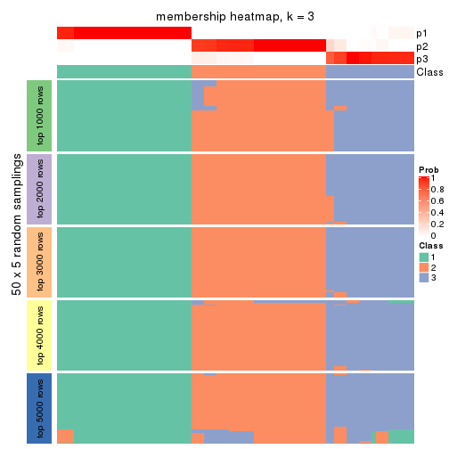
membership_heatmap(res, k = 4)
membership_heatmap(res, k = 5)
membership_heatmap(res, k = 6)
As soon as we have had the classes for columns, we can look for signatures which are significantly different between classes which can be candidate marks for certain classes. Following are the heatmaps for signatures.
Signature heatmaps where rows are scaled:
get_signatures(res, k = 2)
get_signatures(res, k = 3)
get_signatures(res, k = 4)
get_signatures(res, k = 5)
get_signatures(res, k = 6)

Signature heatmaps where rows are not scaled:
get_signatures(res, k = 2, scale_rows = FALSE)
get_signatures(res, k = 3, scale_rows = FALSE)
get_signatures(res, k = 4, scale_rows = FALSE)
get_signatures(res, k = 5, scale_rows = FALSE)
get_signatures(res, k = 6, scale_rows = FALSE)
Compare the overlap of signatures from different k:
compare_signatures(res)
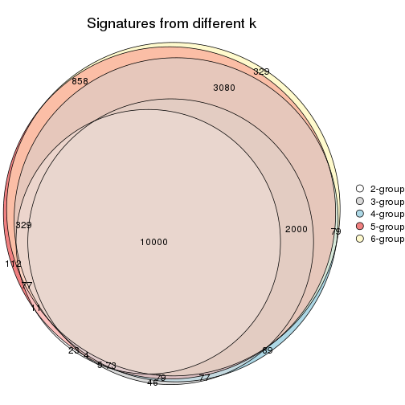
get_signature() returns a data frame invisibly. TO get the list of signatures, the function
call should be assigned to a variable explicitly. In following code, if plot argument is set
to FALSE, no heatmap is plotted while only the differential analysis is performed.
# code only for demonstration
tb = get_signature(res, k = ..., plot = FALSE)
An example of the output of tb is:
#> which_row fdr mean_1 mean_2 scaled_mean_1 scaled_mean_2 km
#> 1 38 0.042760348 8.373488 9.131774 -0.5533452 0.5164555 1
#> 2 40 0.018707592 7.106213 8.469186 -0.6173731 0.5762149 1
#> 3 55 0.019134737 10.221463 11.207825 -0.6159697 0.5749050 1
#> 4 59 0.006059896 5.921854 7.869574 -0.6899429 0.6439467 1
#> 5 60 0.018055526 8.928898 10.211722 -0.6204761 0.5791110 1
#> 6 98 0.009384629 15.714769 14.887706 0.6635654 -0.6193277 2
...
The columns in tb are:
which_row: row indices corresponding to the input matrix.fdr: FDR for the differential test. mean_x: The mean value in group x.scaled_mean_x: The mean value in group x after rows are scaled.km: Row groups if k-means clustering is applied to rows.UMAP plot which shows how samples are separated.
dimension_reduction(res, k = 2, method = "UMAP")
dimension_reduction(res, k = 3, method = "UMAP")
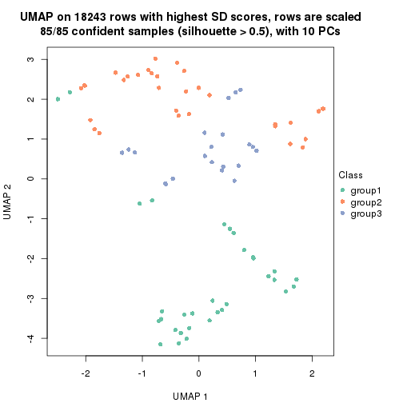
dimension_reduction(res, k = 4, method = "UMAP")
dimension_reduction(res, k = 5, method = "UMAP")
dimension_reduction(res, k = 6, method = "UMAP")
Following heatmap shows how subgroups are split when increasing k:
collect_classes(res)
If matrix rows can be associated to genes, consider to use GO_Enrichment(res,
...) to perform function enrichment for the signature genes.
The object with results only for a single top-value method and a single partition method can be extracted as:
res = res_list["SD", "pam"]
# you can also extract it by
# res = res_list["SD:pam"]
A summary of res and all the functions that can be applied to it:
res
#> A 'ConsensusPartition' object with k = 2, 3, 4, 5, 6.
#> On a matrix with 18243 rows and 85 columns.
#> Top rows (1000, 2000, 3000, 4000, 5000) are extracted by 'SD' method.
#> Subgroups are detected by 'pam' method.
#> Performed in total 1250 partitions by row resampling.
#> Best k for subgroups seems to be 6.
#>
#> Following methods can be applied to this 'ConsensusPartition' object:
#> [1] "cola_report" "collect_classes" "collect_plots"
#> [4] "collect_stats" "colnames" "compare_signatures"
#> [7] "consensus_heatmap" "dimension_reduction" "functional_enrichment"
#> [10] "get_anno_col" "get_anno" "get_classes"
#> [13] "get_consensus" "get_matrix" "get_membership"
#> [16] "get_param" "get_signatures" "get_stats"
#> [19] "is_best_k" "is_stable_k" "membership_heatmap"
#> [22] "ncol" "nrow" "plot_ecdf"
#> [25] "rownames" "select_partition_number" "show"
#> [28] "suggest_best_k" "test_to_known_factors"
collect_plots() function collects all the plots made from res for all k (number of partitions)
into one single page to provide an easy and fast comparison between different k.
collect_plots(res)
The plots are:
k and the heatmap of
predicted classes for each k.k.k.k.All the plots in panels can be made by individual functions and they are plotted later in this section.
select_partition_number() produces several plots showing different
statistics for choosing “optimized” k. There are following statistics:
k;k, the area increased is defined as \(A_k - A_{k-1}\).The detailed explanations of these statistics can be found in the cola vignette.
Generally speaking, lower PAC score, higher mean silhouette score or higher
concordance corresponds to better partition. Rand index and Jaccard index
measure how similar the current partition is compared to partition with k-1.
If they are too similar, we won't accept k is better than k-1.
select_partition_number(res)
The numeric values for all these statistics can be obtained by get_stats().
get_stats(res)
#> k 1-PAC mean_silhouette concordance area_increased Rand Jaccard
#> 2 2 0.882 0.934 0.972 0.4425 0.545 0.545
#> 3 3 0.753 0.921 0.937 0.4194 0.746 0.559
#> 4 4 0.928 0.923 0.966 0.0898 0.953 0.867
#> 5 5 0.982 0.947 0.981 0.0120 0.997 0.992
#> 6 6 0.949 0.893 0.949 0.1046 0.885 0.647
suggest_best_k() suggests the best \(k\) based on these statistics. The rules are as follows:
NA.suggest_best_k(res)
#> [1] 6
#> attr(,"optional")
#> [1] 4
There is also optional best \(k\) = 4 that is worth to check.
Following shows the table of the partitions (You need to click the show/hide
code output link to see it). The membership matrix (columns with name p*)
is inferred by
clue::cl_consensus()
function with the SE method. Basically the value in the membership matrix
represents the probability to belong to a certain group. The finall class
label for an item is determined with the group with highest probability it
belongs to.
In get_classes() function, the entropy is calculated from the membership
matrix and the silhouette score is calculated from the consensus matrix.
cbind(get_classes(res, k = 2), get_membership(res, k = 2))
#> class entropy silhouette p1 p2
#> ERR532547 2 0.000 0.990 0.000 1.000
#> ERR532548 2 0.000 0.990 0.000 1.000
#> ERR532549 2 0.000 0.990 0.000 1.000
#> ERR532576 2 0.644 0.789 0.164 0.836
#> ERR532577 2 0.644 0.789 0.164 0.836
#> ERR532578 2 0.644 0.789 0.164 0.836
#> ERR532593 1 0.000 0.929 1.000 0.000
#> ERR532594 1 0.000 0.929 1.000 0.000
#> ERR532595 1 0.000 0.929 1.000 0.000
#> ERR532596 2 0.000 0.990 0.000 1.000
#> ERR532597 2 0.000 0.990 0.000 1.000
#> ERR532598 2 0.000 0.990 0.000 1.000
#> ERR532599 2 0.000 0.990 0.000 1.000
#> ERR532600 2 0.000 0.990 0.000 1.000
#> ERR532601 2 0.000 0.990 0.000 1.000
#> ERR532602 1 0.983 0.317 0.576 0.424
#> ERR532603 1 0.993 0.236 0.548 0.452
#> ERR532604 1 0.998 0.171 0.528 0.472
#> ERR532605 1 0.000 0.929 1.000 0.000
#> ERR532606 1 0.000 0.929 1.000 0.000
#> ERR532607 1 0.000 0.929 1.000 0.000
#> ERR532608 2 0.000 0.990 0.000 1.000
#> ERR532609 2 0.000 0.990 0.000 1.000
#> ERR532610 2 0.000 0.990 0.000 1.000
#> ERR532611 1 0.358 0.893 0.932 0.068
#> ERR532612 1 0.358 0.893 0.932 0.068
#> ERR532613 1 0.327 0.898 0.940 0.060
#> ERR532550 1 0.000 0.929 1.000 0.000
#> ERR532551 2 0.000 0.990 0.000 1.000
#> ERR532552 2 0.000 0.990 0.000 1.000
#> ERR532553 2 0.000 0.990 0.000 1.000
#> ERR532554 2 0.000 0.990 0.000 1.000
#> ERR532555 2 0.000 0.990 0.000 1.000
#> ERR532556 2 0.000 0.990 0.000 1.000
#> ERR532557 2 0.000 0.990 0.000 1.000
#> ERR532558 2 0.000 0.990 0.000 1.000
#> ERR532559 2 0.000 0.990 0.000 1.000
#> ERR532560 1 0.000 0.929 1.000 0.000
#> ERR532561 1 0.000 0.929 1.000 0.000
#> ERR532562 1 0.000 0.929 1.000 0.000
#> ERR532563 2 0.000 0.990 0.000 1.000
#> ERR532564 2 0.000 0.990 0.000 1.000
#> ERR532565 2 0.000 0.990 0.000 1.000
#> ERR532566 2 0.000 0.990 0.000 1.000
#> ERR532567 2 0.000 0.990 0.000 1.000
#> ERR532568 2 0.000 0.990 0.000 1.000
#> ERR532569 1 0.000 0.929 1.000 0.000
#> ERR532570 1 0.000 0.929 1.000 0.000
#> ERR532571 1 0.000 0.929 1.000 0.000
#> ERR532572 2 0.000 0.990 0.000 1.000
#> ERR532573 2 0.000 0.990 0.000 1.000
#> ERR532574 2 0.000 0.990 0.000 1.000
#> ERR532575 2 0.000 0.990 0.000 1.000
#> ERR532579 1 0.518 0.850 0.884 0.116
#> ERR532580 1 0.529 0.845 0.880 0.120
#> ERR532581 2 0.000 0.990 0.000 1.000
#> ERR532582 2 0.000 0.990 0.000 1.000
#> ERR532583 2 0.000 0.990 0.000 1.000
#> ERR532584 2 0.000 0.990 0.000 1.000
#> ERR532585 2 0.000 0.990 0.000 1.000
#> ERR532586 2 0.000 0.990 0.000 1.000
#> ERR532587 2 0.000 0.990 0.000 1.000
#> ERR532588 2 0.000 0.990 0.000 1.000
#> ERR532589 2 0.000 0.990 0.000 1.000
#> ERR532590 2 0.000 0.990 0.000 1.000
#> ERR532591 1 0.327 0.898 0.940 0.060
#> ERR532592 1 0.327 0.898 0.940 0.060
#> ERR532439 2 0.000 0.990 0.000 1.000
#> ERR532440 2 0.000 0.990 0.000 1.000
#> ERR532441 2 0.000 0.990 0.000 1.000
#> ERR532442 1 0.000 0.929 1.000 0.000
#> ERR532443 1 0.000 0.929 1.000 0.000
#> ERR532444 1 0.000 0.929 1.000 0.000
#> ERR532445 1 0.000 0.929 1.000 0.000
#> ERR532446 1 0.000 0.929 1.000 0.000
#> ERR532447 1 0.000 0.929 1.000 0.000
#> ERR532433 2 0.000 0.990 0.000 1.000
#> ERR532434 2 0.000 0.990 0.000 1.000
#> ERR532435 2 0.000 0.990 0.000 1.000
#> ERR532436 2 0.000 0.990 0.000 1.000
#> ERR532437 2 0.000 0.990 0.000 1.000
#> ERR532438 2 0.000 0.990 0.000 1.000
#> ERR532614 2 0.000 0.990 0.000 1.000
#> ERR532615 2 0.000 0.990 0.000 1.000
#> ERR532616 2 0.000 0.990 0.000 1.000
cbind(get_classes(res, k = 3), get_membership(res, k = 3))
#> class entropy silhouette p1 p2 p3
#> ERR532547 3 0.0000 0.950 0.000 0.000 1.000
#> ERR532548 3 0.0000 0.950 0.000 0.000 1.000
#> ERR532549 3 0.0000 0.950 0.000 0.000 1.000
#> ERR532576 3 0.0000 0.950 0.000 0.000 1.000
#> ERR532577 3 0.0000 0.950 0.000 0.000 1.000
#> ERR532578 3 0.0000 0.950 0.000 0.000 1.000
#> ERR532593 1 0.0000 0.964 1.000 0.000 0.000
#> ERR532594 1 0.0000 0.964 1.000 0.000 0.000
#> ERR532595 1 0.0000 0.964 1.000 0.000 0.000
#> ERR532596 2 0.4235 0.966 0.000 0.824 0.176
#> ERR532597 2 0.4235 0.966 0.000 0.824 0.176
#> ERR532598 2 0.4235 0.966 0.000 0.824 0.176
#> ERR532599 3 0.0747 0.934 0.000 0.016 0.984
#> ERR532600 3 0.0000 0.950 0.000 0.000 1.000
#> ERR532601 3 0.0237 0.946 0.000 0.004 0.996
#> ERR532602 3 0.5621 0.551 0.308 0.000 0.692
#> ERR532603 3 0.5363 0.611 0.276 0.000 0.724
#> ERR532604 3 0.5178 0.644 0.256 0.000 0.744
#> ERR532605 1 0.0000 0.964 1.000 0.000 0.000
#> ERR532606 1 0.0000 0.964 1.000 0.000 0.000
#> ERR532607 1 0.0000 0.964 1.000 0.000 0.000
#> ERR532608 3 0.0000 0.950 0.000 0.000 1.000
#> ERR532609 3 0.0000 0.950 0.000 0.000 1.000
#> ERR532610 3 0.0000 0.950 0.000 0.000 1.000
#> ERR532611 1 0.5098 0.676 0.752 0.000 0.248
#> ERR532612 1 0.5098 0.676 0.752 0.000 0.248
#> ERR532613 1 0.5016 0.688 0.760 0.000 0.240
#> ERR532550 1 0.0000 0.964 1.000 0.000 0.000
#> ERR532551 3 0.0000 0.950 0.000 0.000 1.000
#> ERR532552 3 0.0000 0.950 0.000 0.000 1.000
#> ERR532553 3 0.0000 0.950 0.000 0.000 1.000
#> ERR532554 2 0.4235 0.966 0.000 0.824 0.176
#> ERR532555 2 0.4235 0.966 0.000 0.824 0.176
#> ERR532556 2 0.4235 0.966 0.000 0.824 0.176
#> ERR532557 3 0.0000 0.950 0.000 0.000 1.000
#> ERR532558 3 0.0000 0.950 0.000 0.000 1.000
#> ERR532559 3 0.0000 0.950 0.000 0.000 1.000
#> ERR532560 1 0.0000 0.964 1.000 0.000 0.000
#> ERR532561 1 0.0000 0.964 1.000 0.000 0.000
#> ERR532562 1 0.0000 0.964 1.000 0.000 0.000
#> ERR532563 2 0.4235 0.966 0.000 0.824 0.176
#> ERR532564 2 0.4235 0.966 0.000 0.824 0.176
#> ERR532565 2 0.4235 0.966 0.000 0.824 0.176
#> ERR532566 3 0.5216 0.712 0.000 0.260 0.740
#> ERR532567 3 0.5098 0.725 0.000 0.248 0.752
#> ERR532568 3 0.5216 0.712 0.000 0.260 0.740
#> ERR532569 1 0.0000 0.964 1.000 0.000 0.000
#> ERR532570 1 0.0000 0.964 1.000 0.000 0.000
#> ERR532571 1 0.0000 0.964 1.000 0.000 0.000
#> ERR532572 2 0.4235 0.966 0.000 0.824 0.176
#> ERR532573 2 0.4235 0.966 0.000 0.824 0.176
#> ERR532574 2 0.4235 0.966 0.000 0.824 0.176
#> ERR532575 3 0.0000 0.950 0.000 0.000 1.000
#> ERR532579 1 0.0424 0.957 0.992 0.008 0.000
#> ERR532580 1 0.0661 0.955 0.988 0.008 0.004
#> ERR532581 2 0.4235 0.966 0.000 0.824 0.176
#> ERR532582 2 0.4235 0.966 0.000 0.824 0.176
#> ERR532583 2 0.4235 0.966 0.000 0.824 0.176
#> ERR532584 3 0.0000 0.950 0.000 0.000 1.000
#> ERR532585 3 0.0000 0.950 0.000 0.000 1.000
#> ERR532586 3 0.0000 0.950 0.000 0.000 1.000
#> ERR532587 2 0.4235 0.966 0.000 0.824 0.176
#> ERR532588 2 0.4235 0.966 0.000 0.824 0.176
#> ERR532589 3 0.0000 0.950 0.000 0.000 1.000
#> ERR532590 3 0.0000 0.950 0.000 0.000 1.000
#> ERR532591 1 0.0000 0.964 1.000 0.000 0.000
#> ERR532592 1 0.0000 0.964 1.000 0.000 0.000
#> ERR532439 3 0.0000 0.950 0.000 0.000 1.000
#> ERR532440 3 0.0000 0.950 0.000 0.000 1.000
#> ERR532441 3 0.0000 0.950 0.000 0.000 1.000
#> ERR532442 1 0.0000 0.964 1.000 0.000 0.000
#> ERR532443 1 0.0000 0.964 1.000 0.000 0.000
#> ERR532444 1 0.0000 0.964 1.000 0.000 0.000
#> ERR532445 1 0.0000 0.964 1.000 0.000 0.000
#> ERR532446 1 0.0000 0.964 1.000 0.000 0.000
#> ERR532447 1 0.0000 0.964 1.000 0.000 0.000
#> ERR532433 3 0.0000 0.950 0.000 0.000 1.000
#> ERR532434 3 0.0000 0.950 0.000 0.000 1.000
#> ERR532435 3 0.0000 0.950 0.000 0.000 1.000
#> ERR532436 3 0.0000 0.950 0.000 0.000 1.000
#> ERR532437 3 0.0000 0.950 0.000 0.000 1.000
#> ERR532438 3 0.0000 0.950 0.000 0.000 1.000
#> ERR532614 2 0.0000 0.811 0.000 1.000 0.000
#> ERR532615 2 0.0000 0.811 0.000 1.000 0.000
#> ERR532616 2 0.0000 0.811 0.000 1.000 0.000
cbind(get_classes(res, k = 4), get_membership(res, k = 4))
#> class entropy silhouette p1 p2 p3 p4
#> ERR532547 2 0.0000 0.970 0.000 1.000 0.000 0.000
#> ERR532548 2 0.0000 0.970 0.000 1.000 0.000 0.000
#> ERR532549 2 0.0000 0.970 0.000 1.000 0.000 0.000
#> ERR532576 2 0.0000 0.970 0.000 1.000 0.000 0.000
#> ERR532577 2 0.0000 0.970 0.000 1.000 0.000 0.000
#> ERR532578 2 0.0000 0.970 0.000 1.000 0.000 0.000
#> ERR532593 1 0.0000 0.957 1.000 0.000 0.000 0.000
#> ERR532594 1 0.0000 0.957 1.000 0.000 0.000 0.000
#> ERR532595 1 0.0000 0.957 1.000 0.000 0.000 0.000
#> ERR532596 4 0.4941 1.000 0.000 0.000 0.436 0.564
#> ERR532597 4 0.4941 1.000 0.000 0.000 0.436 0.564
#> ERR532598 4 0.4941 1.000 0.000 0.000 0.436 0.564
#> ERR532599 2 0.0592 0.953 0.000 0.984 0.016 0.000
#> ERR532600 2 0.0000 0.970 0.000 1.000 0.000 0.000
#> ERR532601 2 0.0188 0.966 0.000 0.996 0.004 0.000
#> ERR532602 2 0.4454 0.553 0.308 0.692 0.000 0.000
#> ERR532603 2 0.4250 0.614 0.276 0.724 0.000 0.000
#> ERR532604 2 0.4103 0.644 0.256 0.744 0.000 0.000
#> ERR532605 1 0.0000 0.957 1.000 0.000 0.000 0.000
#> ERR532606 1 0.0000 0.957 1.000 0.000 0.000 0.000
#> ERR532607 1 0.0000 0.957 1.000 0.000 0.000 0.000
#> ERR532608 2 0.0000 0.970 0.000 1.000 0.000 0.000
#> ERR532609 2 0.0000 0.970 0.000 1.000 0.000 0.000
#> ERR532610 2 0.0000 0.970 0.000 1.000 0.000 0.000
#> ERR532611 1 0.4040 0.637 0.752 0.248 0.000 0.000
#> ERR532612 1 0.4040 0.637 0.752 0.248 0.000 0.000
#> ERR532613 1 0.3975 0.648 0.760 0.240 0.000 0.000
#> ERR532550 1 0.0000 0.957 1.000 0.000 0.000 0.000
#> ERR532551 2 0.0000 0.970 0.000 1.000 0.000 0.000
#> ERR532552 2 0.0000 0.970 0.000 1.000 0.000 0.000
#> ERR532553 2 0.0000 0.970 0.000 1.000 0.000 0.000
#> ERR532554 4 0.4941 1.000 0.000 0.000 0.436 0.564
#> ERR532555 4 0.4941 1.000 0.000 0.000 0.436 0.564
#> ERR532556 4 0.4941 1.000 0.000 0.000 0.436 0.564
#> ERR532557 2 0.0000 0.970 0.000 1.000 0.000 0.000
#> ERR532558 2 0.0000 0.970 0.000 1.000 0.000 0.000
#> ERR532559 2 0.0000 0.970 0.000 1.000 0.000 0.000
#> ERR532560 1 0.0000 0.957 1.000 0.000 0.000 0.000
#> ERR532561 1 0.0000 0.957 1.000 0.000 0.000 0.000
#> ERR532562 1 0.0000 0.957 1.000 0.000 0.000 0.000
#> ERR532563 4 0.4941 1.000 0.000 0.000 0.436 0.564
#> ERR532564 4 0.4941 1.000 0.000 0.000 0.436 0.564
#> ERR532565 4 0.4941 1.000 0.000 0.000 0.436 0.564
#> ERR532566 3 0.4941 0.720 0.000 0.000 0.564 0.436
#> ERR532567 3 0.4941 0.720 0.000 0.000 0.564 0.436
#> ERR532568 3 0.4941 0.720 0.000 0.000 0.564 0.436
#> ERR532569 1 0.0000 0.957 1.000 0.000 0.000 0.000
#> ERR532570 1 0.0000 0.957 1.000 0.000 0.000 0.000
#> ERR532571 1 0.0000 0.957 1.000 0.000 0.000 0.000
#> ERR532572 4 0.4941 1.000 0.000 0.000 0.436 0.564
#> ERR532573 4 0.4941 1.000 0.000 0.000 0.436 0.564
#> ERR532574 4 0.4941 1.000 0.000 0.000 0.436 0.564
#> ERR532575 2 0.0000 0.970 0.000 1.000 0.000 0.000
#> ERR532579 1 0.0336 0.950 0.992 0.000 0.008 0.000
#> ERR532580 1 0.0524 0.947 0.988 0.004 0.008 0.000
#> ERR532581 4 0.4941 1.000 0.000 0.000 0.436 0.564
#> ERR532582 4 0.4941 1.000 0.000 0.000 0.436 0.564
#> ERR532583 4 0.4941 1.000 0.000 0.000 0.436 0.564
#> ERR532584 2 0.0000 0.970 0.000 1.000 0.000 0.000
#> ERR532585 2 0.0000 0.970 0.000 1.000 0.000 0.000
#> ERR532586 2 0.0000 0.970 0.000 1.000 0.000 0.000
#> ERR532587 4 0.4941 1.000 0.000 0.000 0.436 0.564
#> ERR532588 4 0.4941 1.000 0.000 0.000 0.436 0.564
#> ERR532589 2 0.0000 0.970 0.000 1.000 0.000 0.000
#> ERR532590 2 0.0000 0.970 0.000 1.000 0.000 0.000
#> ERR532591 1 0.0000 0.957 1.000 0.000 0.000 0.000
#> ERR532592 1 0.0000 0.957 1.000 0.000 0.000 0.000
#> ERR532439 2 0.0000 0.970 0.000 1.000 0.000 0.000
#> ERR532440 2 0.0000 0.970 0.000 1.000 0.000 0.000
#> ERR532441 2 0.0000 0.970 0.000 1.000 0.000 0.000
#> ERR532442 1 0.0000 0.957 1.000 0.000 0.000 0.000
#> ERR532443 1 0.0000 0.957 1.000 0.000 0.000 0.000
#> ERR532444 1 0.0000 0.957 1.000 0.000 0.000 0.000
#> ERR532445 1 0.0000 0.957 1.000 0.000 0.000 0.000
#> ERR532446 1 0.0000 0.957 1.000 0.000 0.000 0.000
#> ERR532447 1 0.0000 0.957 1.000 0.000 0.000 0.000
#> ERR532433 2 0.0000 0.970 0.000 1.000 0.000 0.000
#> ERR532434 2 0.0000 0.970 0.000 1.000 0.000 0.000
#> ERR532435 2 0.0000 0.970 0.000 1.000 0.000 0.000
#> ERR532436 2 0.0000 0.970 0.000 1.000 0.000 0.000
#> ERR532437 2 0.0000 0.970 0.000 1.000 0.000 0.000
#> ERR532438 2 0.0000 0.970 0.000 1.000 0.000 0.000
#> ERR532614 3 0.0000 0.536 0.000 0.000 1.000 0.000
#> ERR532615 3 0.0000 0.536 0.000 0.000 1.000 0.000
#> ERR532616 3 0.0000 0.536 0.000 0.000 1.000 0.000
cbind(get_classes(res, k = 5), get_membership(res, k = 5))
#> class entropy silhouette p1 p2 p3 p4 p5
#> ERR532547 2 0.0000 0.969 0.000 1.000 0 0.000 0
#> ERR532548 2 0.0000 0.969 0.000 1.000 0 0.000 0
#> ERR532549 2 0.0000 0.969 0.000 1.000 0 0.000 0
#> ERR532576 2 0.0000 0.969 0.000 1.000 0 0.000 0
#> ERR532577 2 0.0000 0.969 0.000 1.000 0 0.000 0
#> ERR532578 2 0.0000 0.969 0.000 1.000 0 0.000 0
#> ERR532593 1 0.0000 0.955 1.000 0.000 0 0.000 0
#> ERR532594 1 0.0000 0.955 1.000 0.000 0 0.000 0
#> ERR532595 1 0.0000 0.955 1.000 0.000 0 0.000 0
#> ERR532596 4 0.0000 1.000 0.000 0.000 0 1.000 0
#> ERR532597 4 0.0000 1.000 0.000 0.000 0 1.000 0
#> ERR532598 4 0.0000 1.000 0.000 0.000 0 1.000 0
#> ERR532599 2 0.0510 0.952 0.000 0.984 0 0.016 0
#> ERR532600 2 0.0000 0.969 0.000 1.000 0 0.000 0
#> ERR532601 2 0.0162 0.965 0.000 0.996 0 0.004 0
#> ERR532602 2 0.3837 0.539 0.308 0.692 0 0.000 0
#> ERR532603 2 0.3661 0.594 0.276 0.724 0 0.000 0
#> ERR532604 2 0.3534 0.627 0.256 0.744 0 0.000 0
#> ERR532605 1 0.0000 0.955 1.000 0.000 0 0.000 0
#> ERR532606 1 0.0000 0.955 1.000 0.000 0 0.000 0
#> ERR532607 1 0.0000 0.955 1.000 0.000 0 0.000 0
#> ERR532608 2 0.0000 0.969 0.000 1.000 0 0.000 0
#> ERR532609 2 0.0000 0.969 0.000 1.000 0 0.000 0
#> ERR532610 2 0.0000 0.969 0.000 1.000 0 0.000 0
#> ERR532611 1 0.3274 0.664 0.780 0.220 0 0.000 0
#> ERR532612 1 0.3274 0.664 0.780 0.220 0 0.000 0
#> ERR532613 1 0.3210 0.676 0.788 0.212 0 0.000 0
#> ERR532550 1 0.0000 0.955 1.000 0.000 0 0.000 0
#> ERR532551 2 0.0000 0.969 0.000 1.000 0 0.000 0
#> ERR532552 2 0.0000 0.969 0.000 1.000 0 0.000 0
#> ERR532553 2 0.0000 0.969 0.000 1.000 0 0.000 0
#> ERR532554 4 0.0000 1.000 0.000 0.000 0 1.000 0
#> ERR532555 4 0.0000 1.000 0.000 0.000 0 1.000 0
#> ERR532556 4 0.0000 1.000 0.000 0.000 0 1.000 0
#> ERR532557 2 0.0000 0.969 0.000 1.000 0 0.000 0
#> ERR532558 2 0.0000 0.969 0.000 1.000 0 0.000 0
#> ERR532559 2 0.0000 0.969 0.000 1.000 0 0.000 0
#> ERR532560 1 0.0000 0.955 1.000 0.000 0 0.000 0
#> ERR532561 1 0.0000 0.955 1.000 0.000 0 0.000 0
#> ERR532562 1 0.0000 0.955 1.000 0.000 0 0.000 0
#> ERR532563 4 0.0000 1.000 0.000 0.000 0 1.000 0
#> ERR532564 4 0.0000 1.000 0.000 0.000 0 1.000 0
#> ERR532565 4 0.0000 1.000 0.000 0.000 0 1.000 0
#> ERR532566 5 0.0000 1.000 0.000 0.000 0 0.000 1
#> ERR532567 5 0.0000 1.000 0.000 0.000 0 0.000 1
#> ERR532568 5 0.0000 1.000 0.000 0.000 0 0.000 1
#> ERR532569 1 0.0000 0.955 1.000 0.000 0 0.000 0
#> ERR532570 1 0.0000 0.955 1.000 0.000 0 0.000 0
#> ERR532571 1 0.0000 0.955 1.000 0.000 0 0.000 0
#> ERR532572 4 0.0000 1.000 0.000 0.000 0 1.000 0
#> ERR532573 4 0.0000 1.000 0.000 0.000 0 1.000 0
#> ERR532574 4 0.0000 1.000 0.000 0.000 0 1.000 0
#> ERR532575 2 0.0000 0.969 0.000 1.000 0 0.000 0
#> ERR532579 1 0.1478 0.893 0.936 0.000 0 0.064 0
#> ERR532580 1 0.1571 0.894 0.936 0.004 0 0.060 0
#> ERR532581 4 0.0000 1.000 0.000 0.000 0 1.000 0
#> ERR532582 4 0.0000 1.000 0.000 0.000 0 1.000 0
#> ERR532583 4 0.0000 1.000 0.000 0.000 0 1.000 0
#> ERR532584 2 0.0000 0.969 0.000 1.000 0 0.000 0
#> ERR532585 2 0.0000 0.969 0.000 1.000 0 0.000 0
#> ERR532586 2 0.0000 0.969 0.000 1.000 0 0.000 0
#> ERR532587 4 0.0000 1.000 0.000 0.000 0 1.000 0
#> ERR532588 4 0.0000 1.000 0.000 0.000 0 1.000 0
#> ERR532589 2 0.0000 0.969 0.000 1.000 0 0.000 0
#> ERR532590 2 0.0000 0.969 0.000 1.000 0 0.000 0
#> ERR532591 1 0.0162 0.952 0.996 0.000 0 0.004 0
#> ERR532592 1 0.0162 0.952 0.996 0.000 0 0.004 0
#> ERR532439 2 0.0000 0.969 0.000 1.000 0 0.000 0
#> ERR532440 2 0.0000 0.969 0.000 1.000 0 0.000 0
#> ERR532441 2 0.0000 0.969 0.000 1.000 0 0.000 0
#> ERR532442 1 0.0000 0.955 1.000 0.000 0 0.000 0
#> ERR532443 1 0.0000 0.955 1.000 0.000 0 0.000 0
#> ERR532444 1 0.0000 0.955 1.000 0.000 0 0.000 0
#> ERR532445 1 0.0000 0.955 1.000 0.000 0 0.000 0
#> ERR532446 1 0.0000 0.955 1.000 0.000 0 0.000 0
#> ERR532447 1 0.0000 0.955 1.000 0.000 0 0.000 0
#> ERR532433 2 0.0000 0.969 0.000 1.000 0 0.000 0
#> ERR532434 2 0.0000 0.969 0.000 1.000 0 0.000 0
#> ERR532435 2 0.0000 0.969 0.000 1.000 0 0.000 0
#> ERR532436 2 0.0000 0.969 0.000 1.000 0 0.000 0
#> ERR532437 2 0.0000 0.969 0.000 1.000 0 0.000 0
#> ERR532438 2 0.0000 0.969 0.000 1.000 0 0.000 0
#> ERR532614 3 0.0000 1.000 0.000 0.000 1 0.000 0
#> ERR532615 3 0.0000 1.000 0.000 0.000 1 0.000 0
#> ERR532616 3 0.0000 1.000 0.000 0.000 1 0.000 0
cbind(get_classes(res, k = 6), get_membership(res, k = 6))
#> class entropy silhouette p1 p2 p3 p4 p5 p6
#> ERR532547 2 0.0000 0.999 0.000 1.000 0 0.000 0 0.000
#> ERR532548 2 0.0000 0.999 0.000 1.000 0 0.000 0 0.000
#> ERR532549 2 0.0000 0.999 0.000 1.000 0 0.000 0 0.000
#> ERR532576 1 0.3266 0.549 0.728 0.272 0 0.000 0 0.000
#> ERR532577 1 0.3309 0.539 0.720 0.280 0 0.000 0 0.000
#> ERR532578 1 0.3330 0.533 0.716 0.284 0 0.000 0 0.000
#> ERR532593 1 0.0363 0.819 0.988 0.000 0 0.000 0 0.012
#> ERR532594 1 0.0363 0.819 0.988 0.000 0 0.000 0 0.012
#> ERR532595 1 0.0363 0.819 0.988 0.000 0 0.000 0 0.012
#> ERR532596 4 0.0000 0.993 0.000 0.000 0 1.000 0 0.000
#> ERR532597 4 0.0000 0.993 0.000 0.000 0 1.000 0 0.000
#> ERR532598 4 0.0000 0.993 0.000 0.000 0 1.000 0 0.000
#> ERR532599 2 0.0458 0.981 0.000 0.984 0 0.016 0 0.000
#> ERR532600 2 0.0000 0.999 0.000 1.000 0 0.000 0 0.000
#> ERR532601 2 0.0146 0.995 0.000 0.996 0 0.004 0 0.000
#> ERR532602 1 0.0000 0.821 1.000 0.000 0 0.000 0 0.000
#> ERR532603 1 0.0000 0.821 1.000 0.000 0 0.000 0 0.000
#> ERR532604 1 0.0000 0.821 1.000 0.000 0 0.000 0 0.000
#> ERR532605 1 0.3563 0.464 0.664 0.000 0 0.000 0 0.336
#> ERR532606 1 0.3563 0.464 0.664 0.000 0 0.000 0 0.336
#> ERR532607 1 0.3563 0.464 0.664 0.000 0 0.000 0 0.336
#> ERR532608 2 0.0000 0.999 0.000 1.000 0 0.000 0 0.000
#> ERR532609 2 0.0000 0.999 0.000 1.000 0 0.000 0 0.000
#> ERR532610 2 0.0000 0.999 0.000 1.000 0 0.000 0 0.000
#> ERR532611 1 0.0000 0.821 1.000 0.000 0 0.000 0 0.000
#> ERR532612 1 0.0000 0.821 1.000 0.000 0 0.000 0 0.000
#> ERR532613 1 0.0000 0.821 1.000 0.000 0 0.000 0 0.000
#> ERR532550 6 0.2135 0.783 0.128 0.000 0 0.000 0 0.872
#> ERR532551 2 0.0000 0.999 0.000 1.000 0 0.000 0 0.000
#> ERR532552 2 0.0000 0.999 0.000 1.000 0 0.000 0 0.000
#> ERR532553 2 0.0000 0.999 0.000 1.000 0 0.000 0 0.000
#> ERR532554 4 0.0865 0.969 0.000 0.000 0 0.964 0 0.036
#> ERR532555 4 0.0865 0.969 0.000 0.000 0 0.964 0 0.036
#> ERR532556 4 0.0865 0.969 0.000 0.000 0 0.964 0 0.036
#> ERR532557 2 0.0000 0.999 0.000 1.000 0 0.000 0 0.000
#> ERR532558 2 0.0000 0.999 0.000 1.000 0 0.000 0 0.000
#> ERR532559 2 0.0000 0.999 0.000 1.000 0 0.000 0 0.000
#> ERR532560 6 0.0865 0.819 0.036 0.000 0 0.000 0 0.964
#> ERR532561 6 0.0865 0.819 0.036 0.000 0 0.000 0 0.964
#> ERR532562 6 0.0865 0.819 0.036 0.000 0 0.000 0 0.964
#> ERR532563 4 0.0000 0.993 0.000 0.000 0 1.000 0 0.000
#> ERR532564 4 0.0000 0.993 0.000 0.000 0 1.000 0 0.000
#> ERR532565 4 0.0000 0.993 0.000 0.000 0 1.000 0 0.000
#> ERR532566 5 0.0000 1.000 0.000 0.000 0 0.000 1 0.000
#> ERR532567 5 0.0000 1.000 0.000 0.000 0 0.000 1 0.000
#> ERR532568 5 0.0000 1.000 0.000 0.000 0 0.000 1 0.000
#> ERR532569 6 0.3684 0.599 0.372 0.000 0 0.000 0 0.628
#> ERR532570 6 0.3684 0.599 0.372 0.000 0 0.000 0 0.628
#> ERR532571 6 0.3684 0.599 0.372 0.000 0 0.000 0 0.628
#> ERR532572 4 0.0000 0.993 0.000 0.000 0 1.000 0 0.000
#> ERR532573 4 0.0000 0.993 0.000 0.000 0 1.000 0 0.000
#> ERR532574 4 0.0000 0.993 0.000 0.000 0 1.000 0 0.000
#> ERR532575 2 0.0000 0.999 0.000 1.000 0 0.000 0 0.000
#> ERR532579 1 0.0865 0.803 0.964 0.000 0 0.000 0 0.036
#> ERR532580 1 0.0937 0.800 0.960 0.000 0 0.000 0 0.040
#> ERR532581 4 0.0000 0.993 0.000 0.000 0 1.000 0 0.000
#> ERR532582 4 0.0000 0.993 0.000 0.000 0 1.000 0 0.000
#> ERR532583 4 0.0000 0.993 0.000 0.000 0 1.000 0 0.000
#> ERR532584 2 0.0000 0.999 0.000 1.000 0 0.000 0 0.000
#> ERR532585 2 0.0000 0.999 0.000 1.000 0 0.000 0 0.000
#> ERR532586 2 0.0000 0.999 0.000 1.000 0 0.000 0 0.000
#> ERR532587 4 0.0000 0.993 0.000 0.000 0 1.000 0 0.000
#> ERR532588 4 0.0000 0.993 0.000 0.000 0 1.000 0 0.000
#> ERR532589 2 0.0000 0.999 0.000 1.000 0 0.000 0 0.000
#> ERR532590 2 0.0000 0.999 0.000 1.000 0 0.000 0 0.000
#> ERR532591 6 0.3578 0.594 0.340 0.000 0 0.000 0 0.660
#> ERR532592 6 0.3578 0.594 0.340 0.000 0 0.000 0 0.660
#> ERR532439 2 0.0000 0.999 0.000 1.000 0 0.000 0 0.000
#> ERR532440 2 0.0000 0.999 0.000 1.000 0 0.000 0 0.000
#> ERR532441 2 0.0000 0.999 0.000 1.000 0 0.000 0 0.000
#> ERR532442 6 0.0865 0.819 0.036 0.000 0 0.000 0 0.964
#> ERR532443 6 0.0865 0.819 0.036 0.000 0 0.000 0 0.964
#> ERR532444 6 0.0865 0.819 0.036 0.000 0 0.000 0 0.964
#> ERR532445 6 0.0865 0.819 0.036 0.000 0 0.000 0 0.964
#> ERR532446 6 0.0865 0.819 0.036 0.000 0 0.000 0 0.964
#> ERR532447 6 0.0865 0.819 0.036 0.000 0 0.000 0 0.964
#> ERR532433 2 0.0000 0.999 0.000 1.000 0 0.000 0 0.000
#> ERR532434 2 0.0000 0.999 0.000 1.000 0 0.000 0 0.000
#> ERR532435 2 0.0000 0.999 0.000 1.000 0 0.000 0 0.000
#> ERR532436 2 0.0000 0.999 0.000 1.000 0 0.000 0 0.000
#> ERR532437 2 0.0000 0.999 0.000 1.000 0 0.000 0 0.000
#> ERR532438 2 0.0000 0.999 0.000 1.000 0 0.000 0 0.000
#> ERR532614 3 0.0000 1.000 0.000 0.000 1 0.000 0 0.000
#> ERR532615 3 0.0000 1.000 0.000 0.000 1 0.000 0 0.000
#> ERR532616 3 0.0000 1.000 0.000 0.000 1 0.000 0 0.000
Heatmaps for the consensus matrix. It visualizes the probability of two samples to be in a same group.
consensus_heatmap(res, k = 2)
consensus_heatmap(res, k = 3)
consensus_heatmap(res, k = 4)
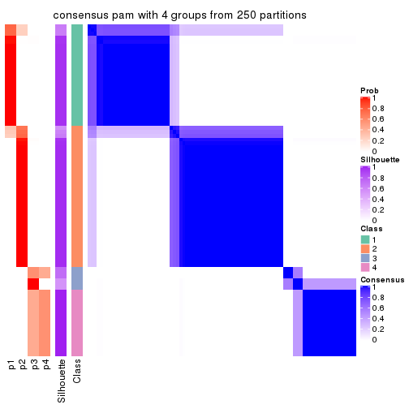
consensus_heatmap(res, k = 5)
consensus_heatmap(res, k = 6)
Heatmaps for the membership of samples in all partitions to see how consistent they are:
membership_heatmap(res, k = 2)
membership_heatmap(res, k = 3)
membership_heatmap(res, k = 4)
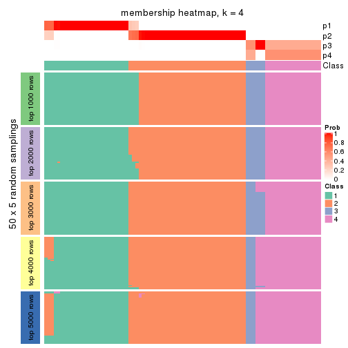
membership_heatmap(res, k = 5)
membership_heatmap(res, k = 6)
As soon as we have had the classes for columns, we can look for signatures which are significantly different between classes which can be candidate marks for certain classes. Following are the heatmaps for signatures.
Signature heatmaps where rows are scaled:
get_signatures(res, k = 2)
get_signatures(res, k = 3)
get_signatures(res, k = 4)
get_signatures(res, k = 5)
get_signatures(res, k = 6)
Signature heatmaps where rows are not scaled:
get_signatures(res, k = 2, scale_rows = FALSE)

get_signatures(res, k = 3, scale_rows = FALSE)
get_signatures(res, k = 4, scale_rows = FALSE)

get_signatures(res, k = 5, scale_rows = FALSE)
get_signatures(res, k = 6, scale_rows = FALSE)
Compare the overlap of signatures from different k:
compare_signatures(res)
get_signature() returns a data frame invisibly. TO get the list of signatures, the function
call should be assigned to a variable explicitly. In following code, if plot argument is set
to FALSE, no heatmap is plotted while only the differential analysis is performed.
# code only for demonstration
tb = get_signature(res, k = ..., plot = FALSE)
An example of the output of tb is:
#> which_row fdr mean_1 mean_2 scaled_mean_1 scaled_mean_2 km
#> 1 38 0.042760348 8.373488 9.131774 -0.5533452 0.5164555 1
#> 2 40 0.018707592 7.106213 8.469186 -0.6173731 0.5762149 1
#> 3 55 0.019134737 10.221463 11.207825 -0.6159697 0.5749050 1
#> 4 59 0.006059896 5.921854 7.869574 -0.6899429 0.6439467 1
#> 5 60 0.018055526 8.928898 10.211722 -0.6204761 0.5791110 1
#> 6 98 0.009384629 15.714769 14.887706 0.6635654 -0.6193277 2
...
The columns in tb are:
which_row: row indices corresponding to the input matrix.fdr: FDR for the differential test. mean_x: The mean value in group x.scaled_mean_x: The mean value in group x after rows are scaled.km: Row groups if k-means clustering is applied to rows.UMAP plot which shows how samples are separated.
dimension_reduction(res, k = 2, method = "UMAP")
dimension_reduction(res, k = 3, method = "UMAP")
dimension_reduction(res, k = 4, method = "UMAP")
dimension_reduction(res, k = 5, method = "UMAP")

dimension_reduction(res, k = 6, method = "UMAP")
Following heatmap shows how subgroups are split when increasing k:
collect_classes(res)
If matrix rows can be associated to genes, consider to use GO_Enrichment(res,
...) to perform function enrichment for the signature genes.
The object with results only for a single top-value method and a single partition method can be extracted as:
res = res_list["SD", "mclust"]
# you can also extract it by
# res = res_list["SD:mclust"]
A summary of res and all the functions that can be applied to it:
res
#> A 'ConsensusPartition' object with k = 2, 3, 4, 5, 6.
#> On a matrix with 18243 rows and 85 columns.
#> Top rows (1000, 2000, 3000, 4000, 5000) are extracted by 'SD' method.
#> Subgroups are detected by 'mclust' method.
#> Performed in total 1250 partitions by row resampling.
#> Best k for subgroups seems to be 6.
#>
#> Following methods can be applied to this 'ConsensusPartition' object:
#> [1] "cola_report" "collect_classes" "collect_plots"
#> [4] "collect_stats" "colnames" "compare_signatures"
#> [7] "consensus_heatmap" "dimension_reduction" "functional_enrichment"
#> [10] "get_anno_col" "get_anno" "get_classes"
#> [13] "get_consensus" "get_matrix" "get_membership"
#> [16] "get_param" "get_signatures" "get_stats"
#> [19] "is_best_k" "is_stable_k" "membership_heatmap"
#> [22] "ncol" "nrow" "plot_ecdf"
#> [25] "rownames" "select_partition_number" "show"
#> [28] "suggest_best_k" "test_to_known_factors"
collect_plots() function collects all the plots made from res for all k (number of partitions)
into one single page to provide an easy and fast comparison between different k.
collect_plots(res)
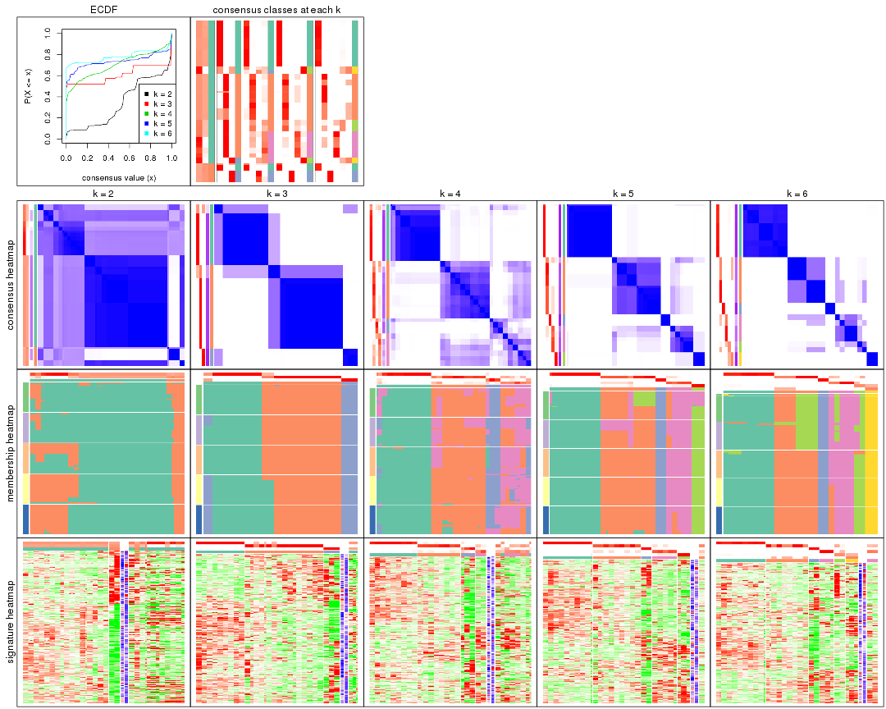
The plots are:
k and the heatmap of
predicted classes for each k.k.k.k.All the plots in panels can be made by individual functions and they are plotted later in this section.
select_partition_number() produces several plots showing different
statistics for choosing “optimized” k. There are following statistics:
k;k, the area increased is defined as \(A_k - A_{k-1}\).The detailed explanations of these statistics can be found in the cola vignette.
Generally speaking, lower PAC score, higher mean silhouette score or higher
concordance corresponds to better partition. Rand index and Jaccard index
measure how similar the current partition is compared to partition with k-1.
If they are too similar, we won't accept k is better than k-1.
select_partition_number(res)
The numeric values for all these statistics can be obtained by get_stats().
get_stats(res)
#> k 1-PAC mean_silhouette concordance area_increased Rand Jaccard
#> 2 2 0.491 0.473 0.803 0.3397 0.790 0.790
#> 3 3 0.858 0.853 0.942 0.7819 0.551 0.457
#> 4 4 0.684 0.678 0.838 0.1620 0.845 0.640
#> 5 5 0.856 0.892 0.927 0.0482 0.965 0.880
#> 6 6 0.912 0.822 0.897 0.0601 0.960 0.847
suggest_best_k() suggests the best \(k\) based on these statistics. The rules are as follows:
NA.suggest_best_k(res)
#> [1] 6
Following shows the table of the partitions (You need to click the show/hide
code output link to see it). The membership matrix (columns with name p*)
is inferred by
clue::cl_consensus()
function with the SE method. Basically the value in the membership matrix
represents the probability to belong to a certain group. The finall class
label for an item is determined with the group with highest probability it
belongs to.
In get_classes() function, the entropy is calculated from the membership
matrix and the silhouette score is calculated from the consensus matrix.
cbind(get_classes(res, k = 2), get_membership(res, k = 2))
#> class entropy silhouette p1 p2
#> ERR532547 1 0.9248 0.4128 0.660 0.340
#> ERR532548 1 0.9248 0.4128 0.660 0.340
#> ERR532549 1 0.9286 0.4072 0.656 0.344
#> ERR532576 1 0.9944 0.7038 0.544 0.456
#> ERR532577 1 0.9944 0.7038 0.544 0.456
#> ERR532578 1 0.9944 0.7038 0.544 0.456
#> ERR532593 1 0.9963 0.7011 0.536 0.464
#> ERR532594 1 0.9963 0.7011 0.536 0.464
#> ERR532595 1 0.9963 0.7011 0.536 0.464
#> ERR532596 1 0.9209 -0.3946 0.664 0.336
#> ERR532597 1 0.9209 -0.3946 0.664 0.336
#> ERR532598 1 0.9170 -0.3888 0.668 0.332
#> ERR532599 1 0.9944 0.7038 0.544 0.456
#> ERR532600 1 0.9944 0.7038 0.544 0.456
#> ERR532601 1 0.9944 0.7038 0.544 0.456
#> ERR532602 1 0.9963 0.7011 0.536 0.464
#> ERR532603 1 0.9963 0.7011 0.536 0.464
#> ERR532604 1 0.9963 0.7011 0.536 0.464
#> ERR532605 1 1.0000 0.6773 0.504 0.496
#> ERR532606 1 0.9998 0.6812 0.508 0.492
#> ERR532607 1 0.9998 0.6812 0.508 0.492
#> ERR532608 1 0.9170 0.4234 0.668 0.332
#> ERR532609 1 0.9170 0.4234 0.668 0.332
#> ERR532610 1 0.9170 0.4234 0.668 0.332
#> ERR532611 1 0.9998 0.6812 0.508 0.492
#> ERR532612 1 0.9998 0.6812 0.508 0.492
#> ERR532613 1 0.9998 0.6812 0.508 0.492
#> ERR532550 2 0.9754 0.0415 0.408 0.592
#> ERR532551 1 0.9944 0.7038 0.544 0.456
#> ERR532552 1 0.9944 0.7038 0.544 0.456
#> ERR532553 1 0.9944 0.7038 0.544 0.456
#> ERR532554 1 0.0672 0.2653 0.992 0.008
#> ERR532555 1 0.0672 0.2653 0.992 0.008
#> ERR532556 1 0.0672 0.2653 0.992 0.008
#> ERR532557 1 0.9944 0.7038 0.544 0.456
#> ERR532558 1 0.9944 0.7038 0.544 0.456
#> ERR532559 1 0.9944 0.7038 0.544 0.456
#> ERR532560 1 0.9963 0.7011 0.536 0.464
#> ERR532561 1 0.9963 0.7011 0.536 0.464
#> ERR532562 1 0.9963 0.7011 0.536 0.464
#> ERR532563 1 0.0000 0.2772 1.000 0.000
#> ERR532564 1 0.0000 0.2772 1.000 0.000
#> ERR532565 1 0.0000 0.2772 1.000 0.000
#> ERR532566 2 0.9963 0.5723 0.464 0.536
#> ERR532567 2 0.9963 0.5723 0.464 0.536
#> ERR532568 2 0.9963 0.5723 0.464 0.536
#> ERR532569 1 0.9963 0.7011 0.536 0.464
#> ERR532570 1 0.9963 0.7011 0.536 0.464
#> ERR532571 1 0.9963 0.7011 0.536 0.464
#> ERR532572 1 0.0938 0.2930 0.988 0.012
#> ERR532573 1 0.0938 0.2930 0.988 0.012
#> ERR532574 1 0.2236 0.3209 0.964 0.036
#> ERR532575 1 0.9963 0.6996 0.536 0.464
#> ERR532579 1 0.0672 0.2768 0.992 0.008
#> ERR532580 1 0.0672 0.2768 0.992 0.008
#> ERR532581 1 0.5946 -0.0302 0.856 0.144
#> ERR532582 1 0.5946 -0.0302 0.856 0.144
#> ERR532583 1 0.5946 -0.0302 0.856 0.144
#> ERR532584 1 0.9944 0.7038 0.544 0.456
#> ERR532585 1 0.9944 0.7038 0.544 0.456
#> ERR532586 1 0.9944 0.7038 0.544 0.456
#> ERR532587 1 0.3733 0.1453 0.928 0.072
#> ERR532588 1 0.3733 0.1453 0.928 0.072
#> ERR532589 1 0.9944 0.7038 0.544 0.456
#> ERR532590 1 0.9944 0.7038 0.544 0.456
#> ERR532591 1 0.0376 0.2717 0.996 0.004
#> ERR532592 1 0.0376 0.2717 0.996 0.004
#> ERR532439 1 0.9944 0.7038 0.544 0.456
#> ERR532440 1 0.9944 0.7038 0.544 0.456
#> ERR532441 1 0.9944 0.7038 0.544 0.456
#> ERR532442 1 0.9970 0.6992 0.532 0.468
#> ERR532443 1 0.9970 0.6992 0.532 0.468
#> ERR532444 1 0.9970 0.6992 0.532 0.468
#> ERR532445 2 0.9954 -0.6526 0.460 0.540
#> ERR532446 2 0.9954 -0.6526 0.460 0.540
#> ERR532447 2 0.9954 -0.6526 0.460 0.540
#> ERR532433 1 0.9944 0.7038 0.544 0.456
#> ERR532434 1 0.9944 0.7038 0.544 0.456
#> ERR532435 1 0.9944 0.7038 0.544 0.456
#> ERR532436 1 0.9970 0.6967 0.532 0.468
#> ERR532437 1 0.9970 0.6967 0.532 0.468
#> ERR532438 1 0.9970 0.6967 0.532 0.468
#> ERR532614 2 0.9963 0.5723 0.464 0.536
#> ERR532615 2 0.9963 0.5723 0.464 0.536
#> ERR532616 2 0.9963 0.5723 0.464 0.536
cbind(get_classes(res, k = 3), get_membership(res, k = 3))
#> class entropy silhouette p1 p2 p3
#> ERR532547 2 0.0000 0.928 0.000 1.000 0.000
#> ERR532548 2 0.0000 0.928 0.000 1.000 0.000
#> ERR532549 2 0.0000 0.928 0.000 1.000 0.000
#> ERR532576 1 0.0000 0.916 1.000 0.000 0.000
#> ERR532577 1 0.0000 0.916 1.000 0.000 0.000
#> ERR532578 1 0.0000 0.916 1.000 0.000 0.000
#> ERR532593 1 0.0000 0.916 1.000 0.000 0.000
#> ERR532594 1 0.0000 0.916 1.000 0.000 0.000
#> ERR532595 1 0.0000 0.916 1.000 0.000 0.000
#> ERR532596 2 0.0237 0.925 0.000 0.996 0.004
#> ERR532597 2 0.0237 0.925 0.000 0.996 0.004
#> ERR532598 2 0.0237 0.925 0.000 0.996 0.004
#> ERR532599 2 0.0000 0.928 0.000 1.000 0.000
#> ERR532600 2 0.0000 0.928 0.000 1.000 0.000
#> ERR532601 2 0.0000 0.928 0.000 1.000 0.000
#> ERR532602 1 0.0000 0.916 1.000 0.000 0.000
#> ERR532603 1 0.0000 0.916 1.000 0.000 0.000
#> ERR532604 1 0.0000 0.916 1.000 0.000 0.000
#> ERR532605 1 0.0000 0.916 1.000 0.000 0.000
#> ERR532606 1 0.0000 0.916 1.000 0.000 0.000
#> ERR532607 1 0.0000 0.916 1.000 0.000 0.000
#> ERR532608 2 0.0000 0.928 0.000 1.000 0.000
#> ERR532609 2 0.0000 0.928 0.000 1.000 0.000
#> ERR532610 2 0.0000 0.928 0.000 1.000 0.000
#> ERR532611 1 0.0000 0.916 1.000 0.000 0.000
#> ERR532612 1 0.0000 0.916 1.000 0.000 0.000
#> ERR532613 1 0.0000 0.916 1.000 0.000 0.000
#> ERR532550 1 0.6295 0.182 0.528 0.000 0.472
#> ERR532551 2 0.0000 0.928 0.000 1.000 0.000
#> ERR532552 2 0.0000 0.928 0.000 1.000 0.000
#> ERR532553 2 0.0000 0.928 0.000 1.000 0.000
#> ERR532554 3 0.0424 0.992 0.000 0.008 0.992
#> ERR532555 3 0.0424 0.992 0.000 0.008 0.992
#> ERR532556 3 0.0424 0.992 0.000 0.008 0.992
#> ERR532557 2 0.0000 0.928 0.000 1.000 0.000
#> ERR532558 2 0.0000 0.928 0.000 1.000 0.000
#> ERR532559 2 0.0000 0.928 0.000 1.000 0.000
#> ERR532560 1 0.0000 0.916 1.000 0.000 0.000
#> ERR532561 1 0.0000 0.916 1.000 0.000 0.000
#> ERR532562 1 0.0000 0.916 1.000 0.000 0.000
#> ERR532563 2 0.0000 0.928 0.000 1.000 0.000
#> ERR532564 2 0.0000 0.928 0.000 1.000 0.000
#> ERR532565 2 0.0000 0.928 0.000 1.000 0.000
#> ERR532566 3 0.0000 0.996 0.000 0.000 1.000
#> ERR532567 3 0.0000 0.996 0.000 0.000 1.000
#> ERR532568 3 0.0000 0.996 0.000 0.000 1.000
#> ERR532569 1 0.0000 0.916 1.000 0.000 0.000
#> ERR532570 1 0.0000 0.916 1.000 0.000 0.000
#> ERR532571 1 0.0000 0.916 1.000 0.000 0.000
#> ERR532572 2 0.0000 0.928 0.000 1.000 0.000
#> ERR532573 2 0.0000 0.928 0.000 1.000 0.000
#> ERR532574 2 0.0000 0.928 0.000 1.000 0.000
#> ERR532575 2 0.5988 0.511 0.368 0.632 0.000
#> ERR532579 1 0.6291 0.193 0.532 0.000 0.468
#> ERR532580 1 0.6291 0.193 0.532 0.000 0.468
#> ERR532581 2 0.0000 0.928 0.000 1.000 0.000
#> ERR532582 2 0.0000 0.928 0.000 1.000 0.000
#> ERR532583 2 0.0000 0.928 0.000 1.000 0.000
#> ERR532584 2 0.0000 0.928 0.000 1.000 0.000
#> ERR532585 2 0.0000 0.928 0.000 1.000 0.000
#> ERR532586 2 0.0000 0.928 0.000 1.000 0.000
#> ERR532587 2 0.0000 0.928 0.000 1.000 0.000
#> ERR532588 2 0.0000 0.928 0.000 1.000 0.000
#> ERR532589 2 0.0000 0.928 0.000 1.000 0.000
#> ERR532590 2 0.0000 0.928 0.000 1.000 0.000
#> ERR532591 1 0.6291 0.193 0.532 0.000 0.468
#> ERR532592 1 0.6291 0.193 0.532 0.000 0.468
#> ERR532439 2 0.0000 0.928 0.000 1.000 0.000
#> ERR532440 2 0.0000 0.928 0.000 1.000 0.000
#> ERR532441 2 0.0000 0.928 0.000 1.000 0.000
#> ERR532442 1 0.0000 0.916 1.000 0.000 0.000
#> ERR532443 1 0.0000 0.916 1.000 0.000 0.000
#> ERR532444 1 0.0000 0.916 1.000 0.000 0.000
#> ERR532445 1 0.0000 0.916 1.000 0.000 0.000
#> ERR532446 1 0.0000 0.916 1.000 0.000 0.000
#> ERR532447 1 0.0000 0.916 1.000 0.000 0.000
#> ERR532433 2 0.5988 0.511 0.368 0.632 0.000
#> ERR532434 2 0.5988 0.511 0.368 0.632 0.000
#> ERR532435 2 0.5988 0.511 0.368 0.632 0.000
#> ERR532436 2 0.5988 0.511 0.368 0.632 0.000
#> ERR532437 2 0.5988 0.511 0.368 0.632 0.000
#> ERR532438 2 0.5988 0.511 0.368 0.632 0.000
#> ERR532614 3 0.0000 0.996 0.000 0.000 1.000
#> ERR532615 3 0.0000 0.996 0.000 0.000 1.000
#> ERR532616 3 0.0000 0.996 0.000 0.000 1.000
cbind(get_classes(res, k = 4), get_membership(res, k = 4))
#> class entropy silhouette p1 p2 p3 p4
#> ERR532547 2 0.4998 0.122 0.000 0.512 0.000 0.488
#> ERR532548 2 0.4998 0.122 0.000 0.512 0.000 0.488
#> ERR532549 2 0.4998 0.122 0.000 0.512 0.000 0.488
#> ERR532576 1 0.1743 0.896 0.940 0.004 0.000 0.056
#> ERR532577 1 0.1743 0.896 0.940 0.004 0.000 0.056
#> ERR532578 1 0.1743 0.896 0.940 0.004 0.000 0.056
#> ERR532593 1 0.0000 0.940 1.000 0.000 0.000 0.000
#> ERR532594 1 0.0000 0.940 1.000 0.000 0.000 0.000
#> ERR532595 1 0.0000 0.940 1.000 0.000 0.000 0.000
#> ERR532596 4 0.6464 0.522 0.000 0.308 0.096 0.596
#> ERR532597 4 0.6497 0.523 0.000 0.304 0.100 0.596
#> ERR532598 4 0.6497 0.523 0.000 0.304 0.100 0.596
#> ERR532599 2 0.2973 0.768 0.000 0.856 0.000 0.144
#> ERR532600 2 0.2973 0.768 0.000 0.856 0.000 0.144
#> ERR532601 2 0.2973 0.768 0.000 0.856 0.000 0.144
#> ERR532602 1 0.0188 0.938 0.996 0.000 0.000 0.004
#> ERR532603 1 0.0188 0.938 0.996 0.000 0.000 0.004
#> ERR532604 1 0.0188 0.938 0.996 0.000 0.000 0.004
#> ERR532605 1 0.0592 0.933 0.984 0.016 0.000 0.000
#> ERR532606 1 0.0592 0.933 0.984 0.016 0.000 0.000
#> ERR532607 1 0.0592 0.933 0.984 0.016 0.000 0.000
#> ERR532608 2 0.4564 0.487 0.000 0.672 0.000 0.328
#> ERR532609 2 0.4564 0.487 0.000 0.672 0.000 0.328
#> ERR532610 2 0.4564 0.487 0.000 0.672 0.000 0.328
#> ERR532611 1 0.0592 0.933 0.984 0.016 0.000 0.000
#> ERR532612 1 0.0592 0.933 0.984 0.016 0.000 0.000
#> ERR532613 1 0.0592 0.933 0.984 0.016 0.000 0.000
#> ERR532550 1 0.6543 0.494 0.660 0.008 0.148 0.184
#> ERR532551 2 0.0707 0.788 0.000 0.980 0.000 0.020
#> ERR532552 2 0.0707 0.788 0.000 0.980 0.000 0.020
#> ERR532553 2 0.0707 0.788 0.000 0.980 0.000 0.020
#> ERR532554 4 0.4941 -0.247 0.000 0.000 0.436 0.564
#> ERR532555 4 0.4941 -0.247 0.000 0.000 0.436 0.564
#> ERR532556 4 0.4941 -0.247 0.000 0.000 0.436 0.564
#> ERR532557 2 0.2081 0.783 0.000 0.916 0.000 0.084
#> ERR532558 2 0.2081 0.783 0.000 0.916 0.000 0.084
#> ERR532559 2 0.2149 0.781 0.000 0.912 0.000 0.088
#> ERR532560 1 0.0000 0.940 1.000 0.000 0.000 0.000
#> ERR532561 1 0.0000 0.940 1.000 0.000 0.000 0.000
#> ERR532562 1 0.0000 0.940 1.000 0.000 0.000 0.000
#> ERR532563 4 0.4877 0.419 0.000 0.408 0.000 0.592
#> ERR532564 4 0.4855 0.432 0.000 0.400 0.000 0.600
#> ERR532565 4 0.4855 0.432 0.000 0.400 0.000 0.600
#> ERR532566 3 0.0000 0.804 0.000 0.000 1.000 0.000
#> ERR532567 3 0.0000 0.804 0.000 0.000 1.000 0.000
#> ERR532568 3 0.0000 0.804 0.000 0.000 1.000 0.000
#> ERR532569 1 0.0000 0.940 1.000 0.000 0.000 0.000
#> ERR532570 1 0.0000 0.940 1.000 0.000 0.000 0.000
#> ERR532571 1 0.0000 0.940 1.000 0.000 0.000 0.000
#> ERR532572 4 0.4697 0.361 0.000 0.356 0.000 0.644
#> ERR532573 4 0.4697 0.361 0.000 0.356 0.000 0.644
#> ERR532574 4 0.4697 0.361 0.000 0.356 0.000 0.644
#> ERR532575 2 0.2861 0.791 0.016 0.888 0.000 0.096
#> ERR532579 1 0.7285 0.198 0.520 0.000 0.180 0.300
#> ERR532580 1 0.7285 0.198 0.520 0.000 0.180 0.300
#> ERR532581 4 0.3051 0.511 0.000 0.088 0.028 0.884
#> ERR532582 4 0.3243 0.508 0.000 0.088 0.036 0.876
#> ERR532583 4 0.3243 0.508 0.000 0.088 0.036 0.876
#> ERR532584 2 0.2281 0.788 0.000 0.904 0.000 0.096
#> ERR532585 2 0.2281 0.788 0.000 0.904 0.000 0.096
#> ERR532586 2 0.2281 0.788 0.000 0.904 0.000 0.096
#> ERR532587 4 0.4948 0.336 0.000 0.440 0.000 0.560
#> ERR532588 4 0.4916 0.376 0.000 0.424 0.000 0.576
#> ERR532589 2 0.2760 0.776 0.000 0.872 0.000 0.128
#> ERR532590 2 0.2704 0.778 0.000 0.876 0.000 0.124
#> ERR532591 3 0.6821 0.529 0.152 0.000 0.592 0.256
#> ERR532592 3 0.6821 0.529 0.152 0.000 0.592 0.256
#> ERR532439 2 0.0336 0.786 0.000 0.992 0.000 0.008
#> ERR532440 2 0.0336 0.786 0.000 0.992 0.000 0.008
#> ERR532441 2 0.0336 0.786 0.000 0.992 0.000 0.008
#> ERR532442 1 0.0000 0.940 1.000 0.000 0.000 0.000
#> ERR532443 1 0.0000 0.940 1.000 0.000 0.000 0.000
#> ERR532444 1 0.0000 0.940 1.000 0.000 0.000 0.000
#> ERR532445 1 0.0000 0.940 1.000 0.000 0.000 0.000
#> ERR532446 1 0.0000 0.940 1.000 0.000 0.000 0.000
#> ERR532447 1 0.0000 0.940 1.000 0.000 0.000 0.000
#> ERR532433 2 0.2053 0.735 0.072 0.924 0.000 0.004
#> ERR532434 2 0.2125 0.731 0.076 0.920 0.000 0.004
#> ERR532435 2 0.2053 0.735 0.072 0.924 0.000 0.004
#> ERR532436 2 0.2546 0.711 0.092 0.900 0.000 0.008
#> ERR532437 2 0.2546 0.711 0.092 0.900 0.000 0.008
#> ERR532438 2 0.2546 0.711 0.092 0.900 0.000 0.008
#> ERR532614 3 0.2647 0.785 0.000 0.000 0.880 0.120
#> ERR532615 3 0.2647 0.785 0.000 0.000 0.880 0.120
#> ERR532616 3 0.2647 0.785 0.000 0.000 0.880 0.120
cbind(get_classes(res, k = 5), get_membership(res, k = 5))
#> class entropy silhouette p1 p2 p3 p4 p5
#> ERR532547 2 0.5613 0.457 0.000 0.604 0.000 0.288 0.108
#> ERR532548 2 0.5613 0.457 0.000 0.604 0.000 0.288 0.108
#> ERR532549 2 0.5613 0.457 0.000 0.604 0.000 0.288 0.108
#> ERR532576 1 0.0000 0.996 1.000 0.000 0.000 0.000 0.000
#> ERR532577 1 0.0000 0.996 1.000 0.000 0.000 0.000 0.000
#> ERR532578 1 0.0000 0.996 1.000 0.000 0.000 0.000 0.000
#> ERR532593 1 0.0000 0.996 1.000 0.000 0.000 0.000 0.000
#> ERR532594 1 0.0000 0.996 1.000 0.000 0.000 0.000 0.000
#> ERR532595 1 0.0000 0.996 1.000 0.000 0.000 0.000 0.000
#> ERR532596 4 0.2074 0.828 0.000 0.000 0.000 0.896 0.104
#> ERR532597 4 0.2074 0.828 0.000 0.000 0.000 0.896 0.104
#> ERR532598 4 0.2074 0.828 0.000 0.000 0.000 0.896 0.104
#> ERR532599 2 0.2929 0.864 0.000 0.820 0.000 0.180 0.000
#> ERR532600 2 0.2929 0.864 0.000 0.820 0.000 0.180 0.000
#> ERR532601 2 0.2929 0.864 0.000 0.820 0.000 0.180 0.000
#> ERR532602 1 0.0000 0.996 1.000 0.000 0.000 0.000 0.000
#> ERR532603 1 0.0000 0.996 1.000 0.000 0.000 0.000 0.000
#> ERR532604 1 0.0000 0.996 1.000 0.000 0.000 0.000 0.000
#> ERR532605 1 0.0000 0.996 1.000 0.000 0.000 0.000 0.000
#> ERR532606 1 0.0000 0.996 1.000 0.000 0.000 0.000 0.000
#> ERR532607 1 0.0000 0.996 1.000 0.000 0.000 0.000 0.000
#> ERR532608 2 0.3123 0.860 0.000 0.812 0.000 0.184 0.004
#> ERR532609 2 0.3123 0.860 0.000 0.812 0.000 0.184 0.004
#> ERR532610 2 0.3123 0.860 0.000 0.812 0.000 0.184 0.004
#> ERR532611 1 0.0000 0.996 1.000 0.000 0.000 0.000 0.000
#> ERR532612 1 0.0000 0.996 1.000 0.000 0.000 0.000 0.000
#> ERR532613 1 0.0000 0.996 1.000 0.000 0.000 0.000 0.000
#> ERR532550 1 0.1851 0.886 0.912 0.000 0.000 0.000 0.088
#> ERR532551 2 0.0000 0.840 0.000 1.000 0.000 0.000 0.000
#> ERR532552 2 0.0000 0.840 0.000 1.000 0.000 0.000 0.000
#> ERR532553 2 0.0000 0.840 0.000 1.000 0.000 0.000 0.000
#> ERR532554 5 0.0000 0.997 0.000 0.000 0.000 0.000 1.000
#> ERR532555 5 0.0000 0.997 0.000 0.000 0.000 0.000 1.000
#> ERR532556 5 0.0000 0.997 0.000 0.000 0.000 0.000 1.000
#> ERR532557 2 0.3086 0.863 0.000 0.816 0.004 0.180 0.000
#> ERR532558 2 0.3086 0.863 0.000 0.816 0.004 0.180 0.000
#> ERR532559 2 0.3086 0.863 0.000 0.816 0.004 0.180 0.000
#> ERR532560 1 0.0000 0.996 1.000 0.000 0.000 0.000 0.000
#> ERR532561 1 0.0000 0.996 1.000 0.000 0.000 0.000 0.000
#> ERR532562 1 0.0000 0.996 1.000 0.000 0.000 0.000 0.000
#> ERR532563 4 0.3160 0.633 0.000 0.188 0.000 0.808 0.004
#> ERR532564 4 0.3086 0.645 0.000 0.180 0.000 0.816 0.004
#> ERR532565 4 0.3086 0.645 0.000 0.180 0.000 0.816 0.004
#> ERR532566 3 0.0000 1.000 0.000 0.000 1.000 0.000 0.000
#> ERR532567 3 0.0000 1.000 0.000 0.000 1.000 0.000 0.000
#> ERR532568 3 0.0000 1.000 0.000 0.000 1.000 0.000 0.000
#> ERR532569 1 0.0162 0.993 0.996 0.000 0.000 0.000 0.004
#> ERR532570 1 0.0162 0.993 0.996 0.000 0.000 0.000 0.004
#> ERR532571 1 0.0162 0.993 0.996 0.000 0.000 0.000 0.004
#> ERR532572 4 0.4724 0.752 0.000 0.164 0.000 0.732 0.104
#> ERR532573 4 0.4724 0.752 0.000 0.164 0.000 0.732 0.104
#> ERR532574 4 0.4724 0.752 0.000 0.164 0.000 0.732 0.104
#> ERR532575 2 0.3687 0.851 0.028 0.792 0.000 0.180 0.000
#> ERR532579 5 0.0162 0.994 0.004 0.000 0.000 0.000 0.996
#> ERR532580 5 0.0162 0.994 0.004 0.000 0.000 0.000 0.996
#> ERR532581 4 0.2074 0.828 0.000 0.000 0.000 0.896 0.104
#> ERR532582 4 0.2074 0.828 0.000 0.000 0.000 0.896 0.104
#> ERR532583 4 0.2074 0.828 0.000 0.000 0.000 0.896 0.104
#> ERR532584 2 0.2929 0.864 0.000 0.820 0.000 0.180 0.000
#> ERR532585 2 0.2929 0.864 0.000 0.820 0.000 0.180 0.000
#> ERR532586 2 0.2929 0.864 0.000 0.820 0.000 0.180 0.000
#> ERR532587 4 0.2984 0.826 0.000 0.032 0.000 0.860 0.108
#> ERR532588 4 0.2984 0.826 0.000 0.032 0.000 0.860 0.108
#> ERR532589 2 0.2929 0.864 0.000 0.820 0.000 0.180 0.000
#> ERR532590 2 0.2929 0.864 0.000 0.820 0.000 0.180 0.000
#> ERR532591 5 0.0000 0.997 0.000 0.000 0.000 0.000 1.000
#> ERR532592 5 0.0000 0.997 0.000 0.000 0.000 0.000 1.000
#> ERR532439 2 0.0000 0.840 0.000 1.000 0.000 0.000 0.000
#> ERR532440 2 0.0000 0.840 0.000 1.000 0.000 0.000 0.000
#> ERR532441 2 0.0000 0.840 0.000 1.000 0.000 0.000 0.000
#> ERR532442 1 0.0000 0.996 1.000 0.000 0.000 0.000 0.000
#> ERR532443 1 0.0000 0.996 1.000 0.000 0.000 0.000 0.000
#> ERR532444 1 0.0000 0.996 1.000 0.000 0.000 0.000 0.000
#> ERR532445 1 0.0000 0.996 1.000 0.000 0.000 0.000 0.000
#> ERR532446 1 0.0000 0.996 1.000 0.000 0.000 0.000 0.000
#> ERR532447 1 0.0000 0.996 1.000 0.000 0.000 0.000 0.000
#> ERR532433 2 0.0880 0.827 0.032 0.968 0.000 0.000 0.000
#> ERR532434 2 0.0880 0.827 0.032 0.968 0.000 0.000 0.000
#> ERR532435 2 0.0880 0.827 0.032 0.968 0.000 0.000 0.000
#> ERR532436 2 0.0880 0.827 0.032 0.968 0.000 0.000 0.000
#> ERR532437 2 0.0880 0.827 0.032 0.968 0.000 0.000 0.000
#> ERR532438 2 0.0880 0.827 0.032 0.968 0.000 0.000 0.000
#> ERR532614 3 0.0000 1.000 0.000 0.000 1.000 0.000 0.000
#> ERR532615 3 0.0000 1.000 0.000 0.000 1.000 0.000 0.000
#> ERR532616 3 0.0000 1.000 0.000 0.000 1.000 0.000 0.000
cbind(get_classes(res, k = 6), get_membership(res, k = 6))
#> class entropy silhouette p1 p2 p3 p4 p5 p6
#> ERR532547 5 0.4917 0.565 0.000 0.076 0 0.348 0.576 0.00
#> ERR532548 5 0.4917 0.565 0.000 0.076 0 0.348 0.576 0.00
#> ERR532549 5 0.4917 0.565 0.000 0.076 0 0.348 0.576 0.00
#> ERR532576 1 0.0363 0.983 0.988 0.000 0 0.000 0.012 0.00
#> ERR532577 1 0.0363 0.983 0.988 0.000 0 0.000 0.012 0.00
#> ERR532578 1 0.0363 0.983 0.988 0.000 0 0.000 0.012 0.00
#> ERR532593 1 0.0000 0.985 1.000 0.000 0 0.000 0.000 0.00
#> ERR532594 1 0.0000 0.985 1.000 0.000 0 0.000 0.000 0.00
#> ERR532595 1 0.0000 0.985 1.000 0.000 0 0.000 0.000 0.00
#> ERR532596 4 0.0000 0.724 0.000 0.000 0 1.000 0.000 0.00
#> ERR532597 4 0.0000 0.724 0.000 0.000 0 1.000 0.000 0.00
#> ERR532598 4 0.0000 0.724 0.000 0.000 0 1.000 0.000 0.00
#> ERR532599 2 0.0000 0.713 0.000 1.000 0 0.000 0.000 0.00
#> ERR532600 2 0.0000 0.713 0.000 1.000 0 0.000 0.000 0.00
#> ERR532601 2 0.0000 0.713 0.000 1.000 0 0.000 0.000 0.00
#> ERR532602 1 0.0000 0.985 1.000 0.000 0 0.000 0.000 0.00
#> ERR532603 1 0.0000 0.985 1.000 0.000 0 0.000 0.000 0.00
#> ERR532604 1 0.0000 0.985 1.000 0.000 0 0.000 0.000 0.00
#> ERR532605 1 0.0363 0.983 0.988 0.000 0 0.000 0.012 0.00
#> ERR532606 1 0.0363 0.983 0.988 0.000 0 0.000 0.012 0.00
#> ERR532607 1 0.0363 0.983 0.988 0.000 0 0.000 0.012 0.00
#> ERR532608 5 0.3810 0.673 0.000 0.428 0 0.000 0.572 0.00
#> ERR532609 5 0.3810 0.673 0.000 0.428 0 0.000 0.572 0.00
#> ERR532610 5 0.3810 0.673 0.000 0.428 0 0.000 0.572 0.00
#> ERR532611 1 0.0363 0.983 0.988 0.000 0 0.000 0.012 0.00
#> ERR532612 1 0.0363 0.983 0.988 0.000 0 0.000 0.012 0.00
#> ERR532613 1 0.0363 0.983 0.988 0.000 0 0.000 0.012 0.00
#> ERR532550 1 0.0865 0.976 0.964 0.000 0 0.000 0.036 0.00
#> ERR532551 2 0.3706 0.746 0.000 0.620 0 0.000 0.000 0.38
#> ERR532552 2 0.3706 0.746 0.000 0.620 0 0.000 0.000 0.38
#> ERR532553 2 0.3706 0.746 0.000 0.620 0 0.000 0.000 0.38
#> ERR532554 6 0.3706 1.000 0.000 0.000 0 0.000 0.380 0.62
#> ERR532555 6 0.3706 1.000 0.000 0.000 0 0.000 0.380 0.62
#> ERR532556 6 0.3706 1.000 0.000 0.000 0 0.000 0.380 0.62
#> ERR532557 2 0.0000 0.713 0.000 1.000 0 0.000 0.000 0.00
#> ERR532558 2 0.0000 0.713 0.000 1.000 0 0.000 0.000 0.00
#> ERR532559 2 0.0000 0.713 0.000 1.000 0 0.000 0.000 0.00
#> ERR532560 1 0.0937 0.975 0.960 0.000 0 0.000 0.040 0.00
#> ERR532561 1 0.0937 0.975 0.960 0.000 0 0.000 0.040 0.00
#> ERR532562 1 0.0937 0.975 0.960 0.000 0 0.000 0.040 0.00
#> ERR532563 4 0.3499 0.408 0.000 0.320 0 0.680 0.000 0.00
#> ERR532564 4 0.3499 0.408 0.000 0.320 0 0.680 0.000 0.00
#> ERR532565 4 0.3499 0.408 0.000 0.320 0 0.680 0.000 0.00
#> ERR532566 3 0.0000 1.000 0.000 0.000 1 0.000 0.000 0.00
#> ERR532567 3 0.0000 1.000 0.000 0.000 1 0.000 0.000 0.00
#> ERR532568 3 0.0000 1.000 0.000 0.000 1 0.000 0.000 0.00
#> ERR532569 1 0.0790 0.977 0.968 0.000 0 0.000 0.032 0.00
#> ERR532570 1 0.0790 0.977 0.968 0.000 0 0.000 0.032 0.00
#> ERR532571 1 0.0790 0.977 0.968 0.000 0 0.000 0.032 0.00
#> ERR532572 4 0.3620 0.379 0.000 0.352 0 0.648 0.000 0.00
#> ERR532573 4 0.3620 0.379 0.000 0.352 0 0.648 0.000 0.00
#> ERR532574 4 0.3620 0.379 0.000 0.352 0 0.648 0.000 0.00
#> ERR532575 2 0.0000 0.713 0.000 1.000 0 0.000 0.000 0.00
#> ERR532579 6 0.3706 1.000 0.000 0.000 0 0.000 0.380 0.62
#> ERR532580 6 0.3706 1.000 0.000 0.000 0 0.000 0.380 0.62
#> ERR532581 4 0.0000 0.724 0.000 0.000 0 1.000 0.000 0.00
#> ERR532582 4 0.0000 0.724 0.000 0.000 0 1.000 0.000 0.00
#> ERR532583 4 0.0000 0.724 0.000 0.000 0 1.000 0.000 0.00
#> ERR532584 2 0.0000 0.713 0.000 1.000 0 0.000 0.000 0.00
#> ERR532585 2 0.0000 0.713 0.000 1.000 0 0.000 0.000 0.00
#> ERR532586 2 0.0000 0.713 0.000 1.000 0 0.000 0.000 0.00
#> ERR532587 4 0.0000 0.724 0.000 0.000 0 1.000 0.000 0.00
#> ERR532588 4 0.0000 0.724 0.000 0.000 0 1.000 0.000 0.00
#> ERR532589 2 0.0000 0.713 0.000 1.000 0 0.000 0.000 0.00
#> ERR532590 2 0.0000 0.713 0.000 1.000 0 0.000 0.000 0.00
#> ERR532591 6 0.3706 1.000 0.000 0.000 0 0.000 0.380 0.62
#> ERR532592 6 0.3706 1.000 0.000 0.000 0 0.000 0.380 0.62
#> ERR532439 2 0.3706 0.746 0.000 0.620 0 0.000 0.000 0.38
#> ERR532440 2 0.3706 0.746 0.000 0.620 0 0.000 0.000 0.38
#> ERR532441 2 0.3706 0.746 0.000 0.620 0 0.000 0.000 0.38
#> ERR532442 1 0.0260 0.984 0.992 0.000 0 0.000 0.008 0.00
#> ERR532443 1 0.0260 0.984 0.992 0.000 0 0.000 0.008 0.00
#> ERR532444 1 0.0260 0.984 0.992 0.000 0 0.000 0.008 0.00
#> ERR532445 1 0.0865 0.976 0.964 0.000 0 0.000 0.036 0.00
#> ERR532446 1 0.0865 0.976 0.964 0.000 0 0.000 0.036 0.00
#> ERR532447 1 0.0865 0.976 0.964 0.000 0 0.000 0.036 0.00
#> ERR532433 2 0.3706 0.746 0.000 0.620 0 0.000 0.000 0.38
#> ERR532434 2 0.3706 0.746 0.000 0.620 0 0.000 0.000 0.38
#> ERR532435 2 0.3706 0.746 0.000 0.620 0 0.000 0.000 0.38
#> ERR532436 2 0.3706 0.746 0.000 0.620 0 0.000 0.000 0.38
#> ERR532437 2 0.3706 0.746 0.000 0.620 0 0.000 0.000 0.38
#> ERR532438 2 0.3706 0.746 0.000 0.620 0 0.000 0.000 0.38
#> ERR532614 3 0.0000 1.000 0.000 0.000 1 0.000 0.000 0.00
#> ERR532615 3 0.0000 1.000 0.000 0.000 1 0.000 0.000 0.00
#> ERR532616 3 0.0000 1.000 0.000 0.000 1 0.000 0.000 0.00
Heatmaps for the consensus matrix. It visualizes the probability of two samples to be in a same group.
consensus_heatmap(res, k = 2)
consensus_heatmap(res, k = 3)
consensus_heatmap(res, k = 4)
consensus_heatmap(res, k = 5)
consensus_heatmap(res, k = 6)
Heatmaps for the membership of samples in all partitions to see how consistent they are:
membership_heatmap(res, k = 2)
membership_heatmap(res, k = 3)
membership_heatmap(res, k = 4)
membership_heatmap(res, k = 5)
membership_heatmap(res, k = 6)
As soon as we have had the classes for columns, we can look for signatures which are significantly different between classes which can be candidate marks for certain classes. Following are the heatmaps for signatures.
Signature heatmaps where rows are scaled:
get_signatures(res, k = 2)
get_signatures(res, k = 3)
get_signatures(res, k = 4)
get_signatures(res, k = 5)
get_signatures(res, k = 6)
Signature heatmaps where rows are not scaled:
get_signatures(res, k = 2, scale_rows = FALSE)
get_signatures(res, k = 3, scale_rows = FALSE)
get_signatures(res, k = 4, scale_rows = FALSE)
get_signatures(res, k = 5, scale_rows = FALSE)
get_signatures(res, k = 6, scale_rows = FALSE)
Compare the overlap of signatures from different k:
compare_signatures(res)
get_signature() returns a data frame invisibly. TO get the list of signatures, the function
call should be assigned to a variable explicitly. In following code, if plot argument is set
to FALSE, no heatmap is plotted while only the differential analysis is performed.
# code only for demonstration
tb = get_signature(res, k = ..., plot = FALSE)
An example of the output of tb is:
#> which_row fdr mean_1 mean_2 scaled_mean_1 scaled_mean_2 km
#> 1 38 0.042760348 8.373488 9.131774 -0.5533452 0.5164555 1
#> 2 40 0.018707592 7.106213 8.469186 -0.6173731 0.5762149 1
#> 3 55 0.019134737 10.221463 11.207825 -0.6159697 0.5749050 1
#> 4 59 0.006059896 5.921854 7.869574 -0.6899429 0.6439467 1
#> 5 60 0.018055526 8.928898 10.211722 -0.6204761 0.5791110 1
#> 6 98 0.009384629 15.714769 14.887706 0.6635654 -0.6193277 2
...
The columns in tb are:
which_row: row indices corresponding to the input matrix.fdr: FDR for the differential test. mean_x: The mean value in group x.scaled_mean_x: The mean value in group x after rows are scaled.km: Row groups if k-means clustering is applied to rows.UMAP plot which shows how samples are separated.
dimension_reduction(res, k = 2, method = "UMAP")
dimension_reduction(res, k = 3, method = "UMAP")
dimension_reduction(res, k = 4, method = "UMAP")
dimension_reduction(res, k = 5, method = "UMAP")
dimension_reduction(res, k = 6, method = "UMAP")
Following heatmap shows how subgroups are split when increasing k:
collect_classes(res)
If matrix rows can be associated to genes, consider to use GO_Enrichment(res,
...) to perform function enrichment for the signature genes.
The object with results only for a single top-value method and a single partition method can be extracted as:
res = res_list["SD", "NMF"]
# you can also extract it by
# res = res_list["SD:NMF"]
A summary of res and all the functions that can be applied to it:
res
#> A 'ConsensusPartition' object with k = 2, 3, 4, 5, 6.
#> On a matrix with 18243 rows and 85 columns.
#> Top rows (1000, 2000, 3000, 4000, 5000) are extracted by 'SD' method.
#> Subgroups are detected by 'NMF' method.
#> Performed in total 1250 partitions by row resampling.
#> Best k for subgroups seems to be 2.
#>
#> Following methods can be applied to this 'ConsensusPartition' object:
#> [1] "cola_report" "collect_classes" "collect_plots"
#> [4] "collect_stats" "colnames" "compare_signatures"
#> [7] "consensus_heatmap" "dimension_reduction" "functional_enrichment"
#> [10] "get_anno_col" "get_anno" "get_classes"
#> [13] "get_consensus" "get_matrix" "get_membership"
#> [16] "get_param" "get_signatures" "get_stats"
#> [19] "is_best_k" "is_stable_k" "membership_heatmap"
#> [22] "ncol" "nrow" "plot_ecdf"
#> [25] "rownames" "select_partition_number" "show"
#> [28] "suggest_best_k" "test_to_known_factors"
collect_plots() function collects all the plots made from res for all k (number of partitions)
into one single page to provide an easy and fast comparison between different k.
collect_plots(res)
The plots are:
k and the heatmap of
predicted classes for each k.k.k.k.All the plots in panels can be made by individual functions and they are plotted later in this section.
select_partition_number() produces several plots showing different
statistics for choosing “optimized” k. There are following statistics:
k;k, the area increased is defined as \(A_k - A_{k-1}\).The detailed explanations of these statistics can be found in the cola vignette.
Generally speaking, lower PAC score, higher mean silhouette score or higher
concordance corresponds to better partition. Rand index and Jaccard index
measure how similar the current partition is compared to partition with k-1.
If they are too similar, we won't accept k is better than k-1.
select_partition_number(res)
The numeric values for all these statistics can be obtained by get_stats().
get_stats(res)
#> k 1-PAC mean_silhouette concordance area_increased Rand Jaccard
#> 2 2 0.725 0.825 0.930 0.4776 0.538 0.538
#> 3 3 0.686 0.813 0.910 0.2214 0.691 0.516
#> 4 4 0.706 0.807 0.898 0.1717 0.724 0.452
#> 5 5 0.704 0.727 0.811 0.0770 0.888 0.649
#> 6 6 0.774 0.800 0.849 0.0572 0.968 0.869
suggest_best_k() suggests the best \(k\) based on these statistics. The rules are as follows:
NA.suggest_best_k(res)
#> [1] 2
Following shows the table of the partitions (You need to click the show/hide
code output link to see it). The membership matrix (columns with name p*)
is inferred by
clue::cl_consensus()
function with the SE method. Basically the value in the membership matrix
represents the probability to belong to a certain group. The finall class
label for an item is determined with the group with highest probability it
belongs to.
In get_classes() function, the entropy is calculated from the membership
matrix and the silhouette score is calculated from the consensus matrix.
cbind(get_classes(res, k = 2), get_membership(res, k = 2))
#> class entropy silhouette p1 p2
#> ERR532547 1 1.000 0.107 0.500 0.500
#> ERR532548 1 1.000 0.107 0.500 0.500
#> ERR532549 1 0.996 0.226 0.536 0.464
#> ERR532576 1 0.000 0.901 1.000 0.000
#> ERR532577 1 0.000 0.901 1.000 0.000
#> ERR532578 1 0.000 0.901 1.000 0.000
#> ERR532593 1 0.000 0.901 1.000 0.000
#> ERR532594 1 0.000 0.901 1.000 0.000
#> ERR532595 1 0.000 0.901 1.000 0.000
#> ERR532596 2 0.000 0.958 0.000 1.000
#> ERR532597 2 0.000 0.958 0.000 1.000
#> ERR532598 2 0.000 0.958 0.000 1.000
#> ERR532599 2 0.000 0.958 0.000 1.000
#> ERR532600 2 0.000 0.958 0.000 1.000
#> ERR532601 2 0.000 0.958 0.000 1.000
#> ERR532602 1 0.000 0.901 1.000 0.000
#> ERR532603 1 0.000 0.901 1.000 0.000
#> ERR532604 1 0.000 0.901 1.000 0.000
#> ERR532605 1 0.000 0.901 1.000 0.000
#> ERR532606 1 0.000 0.901 1.000 0.000
#> ERR532607 1 0.000 0.901 1.000 0.000
#> ERR532608 1 0.932 0.502 0.652 0.348
#> ERR532609 1 0.929 0.510 0.656 0.344
#> ERR532610 1 0.932 0.502 0.652 0.348
#> ERR532611 1 0.000 0.901 1.000 0.000
#> ERR532612 1 0.000 0.901 1.000 0.000
#> ERR532613 1 0.000 0.901 1.000 0.000
#> ERR532550 1 0.000 0.901 1.000 0.000
#> ERR532551 1 0.000 0.901 1.000 0.000
#> ERR532552 1 0.000 0.901 1.000 0.000
#> ERR532553 1 0.000 0.901 1.000 0.000
#> ERR532554 2 0.000 0.958 0.000 1.000
#> ERR532555 2 0.000 0.958 0.000 1.000
#> ERR532556 2 0.000 0.958 0.000 1.000
#> ERR532557 2 0.722 0.715 0.200 0.800
#> ERR532558 2 0.706 0.728 0.192 0.808
#> ERR532559 2 0.653 0.764 0.168 0.832
#> ERR532560 1 0.000 0.901 1.000 0.000
#> ERR532561 1 0.000 0.901 1.000 0.000
#> ERR532562 1 0.000 0.901 1.000 0.000
#> ERR532563 2 0.000 0.958 0.000 1.000
#> ERR532564 2 0.000 0.958 0.000 1.000
#> ERR532565 2 0.000 0.958 0.000 1.000
#> ERR532566 2 0.000 0.958 0.000 1.000
#> ERR532567 2 0.000 0.958 0.000 1.000
#> ERR532568 2 0.000 0.958 0.000 1.000
#> ERR532569 1 0.000 0.901 1.000 0.000
#> ERR532570 1 0.000 0.901 1.000 0.000
#> ERR532571 1 0.000 0.901 1.000 0.000
#> ERR532572 2 0.000 0.958 0.000 1.000
#> ERR532573 2 0.000 0.958 0.000 1.000
#> ERR532574 2 0.000 0.958 0.000 1.000
#> ERR532575 1 0.000 0.901 1.000 0.000
#> ERR532579 1 0.000 0.901 1.000 0.000
#> ERR532580 1 0.000 0.901 1.000 0.000
#> ERR532581 2 0.000 0.958 0.000 1.000
#> ERR532582 2 0.000 0.958 0.000 1.000
#> ERR532583 2 0.000 0.958 0.000 1.000
#> ERR532584 1 0.788 0.681 0.764 0.236
#> ERR532585 1 0.788 0.681 0.764 0.236
#> ERR532586 1 0.788 0.681 0.764 0.236
#> ERR532587 2 0.000 0.958 0.000 1.000
#> ERR532588 2 0.000 0.958 0.000 1.000
#> ERR532589 2 0.998 -0.059 0.476 0.524
#> ERR532590 1 1.000 0.147 0.512 0.488
#> ERR532591 1 0.000 0.901 1.000 0.000
#> ERR532592 1 0.000 0.901 1.000 0.000
#> ERR532439 1 0.987 0.315 0.568 0.432
#> ERR532440 1 0.981 0.346 0.580 0.420
#> ERR532441 1 0.973 0.385 0.596 0.404
#> ERR532442 1 0.000 0.901 1.000 0.000
#> ERR532443 1 0.000 0.901 1.000 0.000
#> ERR532444 1 0.000 0.901 1.000 0.000
#> ERR532445 1 0.000 0.901 1.000 0.000
#> ERR532446 1 0.000 0.901 1.000 0.000
#> ERR532447 1 0.000 0.901 1.000 0.000
#> ERR532433 1 0.000 0.901 1.000 0.000
#> ERR532434 1 0.000 0.901 1.000 0.000
#> ERR532435 1 0.000 0.901 1.000 0.000
#> ERR532436 1 0.000 0.901 1.000 0.000
#> ERR532437 1 0.000 0.901 1.000 0.000
#> ERR532438 1 0.000 0.901 1.000 0.000
#> ERR532614 2 0.000 0.958 0.000 1.000
#> ERR532615 2 0.000 0.958 0.000 1.000
#> ERR532616 2 0.000 0.958 0.000 1.000
cbind(get_classes(res, k = 3), get_membership(res, k = 3))
#> class entropy silhouette p1 p2 p3
#> ERR532547 2 0.5940 0.6481 0.036 0.760 0.204
#> ERR532548 2 0.5940 0.6481 0.036 0.760 0.204
#> ERR532549 2 0.6965 0.5573 0.060 0.696 0.244
#> ERR532576 1 0.0000 0.9321 1.000 0.000 0.000
#> ERR532577 1 0.0000 0.9321 1.000 0.000 0.000
#> ERR532578 1 0.0000 0.9321 1.000 0.000 0.000
#> ERR532593 1 0.0000 0.9321 1.000 0.000 0.000
#> ERR532594 1 0.0000 0.9321 1.000 0.000 0.000
#> ERR532595 1 0.0000 0.9321 1.000 0.000 0.000
#> ERR532596 2 0.1031 0.8281 0.000 0.976 0.024
#> ERR532597 2 0.1031 0.8281 0.000 0.976 0.024
#> ERR532598 2 0.1031 0.8281 0.000 0.976 0.024
#> ERR532599 2 0.3340 0.8198 0.000 0.880 0.120
#> ERR532600 2 0.3340 0.8198 0.000 0.880 0.120
#> ERR532601 2 0.3340 0.8198 0.000 0.880 0.120
#> ERR532602 1 0.0000 0.9321 1.000 0.000 0.000
#> ERR532603 1 0.0000 0.9321 1.000 0.000 0.000
#> ERR532604 1 0.0000 0.9321 1.000 0.000 0.000
#> ERR532605 1 0.0000 0.9321 1.000 0.000 0.000
#> ERR532606 1 0.0000 0.9321 1.000 0.000 0.000
#> ERR532607 1 0.0000 0.9321 1.000 0.000 0.000
#> ERR532608 2 0.9048 0.4627 0.268 0.548 0.184
#> ERR532609 2 0.9048 0.4627 0.268 0.548 0.184
#> ERR532610 2 0.9048 0.4627 0.268 0.548 0.184
#> ERR532611 1 0.0000 0.9321 1.000 0.000 0.000
#> ERR532612 1 0.0000 0.9321 1.000 0.000 0.000
#> ERR532613 1 0.0000 0.9321 1.000 0.000 0.000
#> ERR532550 1 0.0000 0.9321 1.000 0.000 0.000
#> ERR532551 1 0.4473 0.7574 0.828 0.164 0.008
#> ERR532552 1 0.4531 0.7517 0.824 0.168 0.008
#> ERR532553 1 0.4473 0.7574 0.828 0.164 0.008
#> ERR532554 2 0.0237 0.8359 0.000 0.996 0.004
#> ERR532555 2 0.0237 0.8359 0.000 0.996 0.004
#> ERR532556 2 0.0237 0.8359 0.000 0.996 0.004
#> ERR532557 2 0.3340 0.8198 0.000 0.880 0.120
#> ERR532558 2 0.3340 0.8198 0.000 0.880 0.120
#> ERR532559 2 0.3340 0.8198 0.000 0.880 0.120
#> ERR532560 1 0.0000 0.9321 1.000 0.000 0.000
#> ERR532561 1 0.0000 0.9321 1.000 0.000 0.000
#> ERR532562 1 0.0000 0.9321 1.000 0.000 0.000
#> ERR532563 2 0.3340 0.8198 0.000 0.880 0.120
#> ERR532564 2 0.3340 0.8198 0.000 0.880 0.120
#> ERR532565 2 0.3340 0.8198 0.000 0.880 0.120
#> ERR532566 3 0.0000 0.9764 0.000 0.000 1.000
#> ERR532567 3 0.0000 0.9764 0.000 0.000 1.000
#> ERR532568 3 0.0000 0.9764 0.000 0.000 1.000
#> ERR532569 1 0.0000 0.9321 1.000 0.000 0.000
#> ERR532570 1 0.0000 0.9321 1.000 0.000 0.000
#> ERR532571 1 0.0000 0.9321 1.000 0.000 0.000
#> ERR532572 2 0.0000 0.8365 0.000 1.000 0.000
#> ERR532573 2 0.0000 0.8365 0.000 1.000 0.000
#> ERR532574 2 0.0000 0.8365 0.000 1.000 0.000
#> ERR532575 2 0.6299 0.1705 0.476 0.524 0.000
#> ERR532579 2 0.6307 0.0078 0.488 0.512 0.000
#> ERR532580 1 0.6307 0.0420 0.512 0.488 0.000
#> ERR532581 2 0.0000 0.8365 0.000 1.000 0.000
#> ERR532582 2 0.0000 0.8365 0.000 1.000 0.000
#> ERR532583 2 0.0000 0.8365 0.000 1.000 0.000
#> ERR532584 2 0.4652 0.8150 0.064 0.856 0.080
#> ERR532585 2 0.4556 0.8167 0.060 0.860 0.080
#> ERR532586 2 0.4652 0.8150 0.064 0.856 0.080
#> ERR532587 2 0.0237 0.8359 0.000 0.996 0.004
#> ERR532588 2 0.0237 0.8359 0.000 0.996 0.004
#> ERR532589 2 0.0829 0.8356 0.012 0.984 0.004
#> ERR532590 2 0.1636 0.8330 0.016 0.964 0.020
#> ERR532591 1 0.6215 0.2572 0.572 0.428 0.000
#> ERR532592 1 0.6204 0.2694 0.576 0.424 0.000
#> ERR532439 2 0.5650 0.7744 0.108 0.808 0.084
#> ERR532440 2 0.5650 0.7744 0.108 0.808 0.084
#> ERR532441 2 0.5650 0.7744 0.108 0.808 0.084
#> ERR532442 1 0.0000 0.9321 1.000 0.000 0.000
#> ERR532443 1 0.0000 0.9321 1.000 0.000 0.000
#> ERR532444 1 0.0000 0.9321 1.000 0.000 0.000
#> ERR532445 1 0.0000 0.9321 1.000 0.000 0.000
#> ERR532446 1 0.0000 0.9321 1.000 0.000 0.000
#> ERR532447 1 0.0000 0.9321 1.000 0.000 0.000
#> ERR532433 1 0.1832 0.9045 0.956 0.036 0.008
#> ERR532434 1 0.1950 0.9010 0.952 0.040 0.008
#> ERR532435 1 0.1950 0.9010 0.952 0.040 0.008
#> ERR532436 1 0.1832 0.9045 0.956 0.036 0.008
#> ERR532437 1 0.1832 0.9045 0.956 0.036 0.008
#> ERR532438 1 0.1832 0.9045 0.956 0.036 0.008
#> ERR532614 3 0.1529 0.9757 0.000 0.040 0.960
#> ERR532615 3 0.1529 0.9757 0.000 0.040 0.960
#> ERR532616 3 0.1529 0.9757 0.000 0.040 0.960
cbind(get_classes(res, k = 4), get_membership(res, k = 4))
#> class entropy silhouette p1 p2 p3 p4
#> ERR532547 4 0.8669 0.349 0.104 0.208 0.168 0.520
#> ERR532548 4 0.8762 0.328 0.104 0.208 0.180 0.508
#> ERR532549 4 0.9140 0.259 0.136 0.184 0.212 0.468
#> ERR532576 1 0.0000 1.000 1.000 0.000 0.000 0.000
#> ERR532577 1 0.0000 1.000 1.000 0.000 0.000 0.000
#> ERR532578 1 0.0000 1.000 1.000 0.000 0.000 0.000
#> ERR532593 1 0.0000 1.000 1.000 0.000 0.000 0.000
#> ERR532594 1 0.0000 1.000 1.000 0.000 0.000 0.000
#> ERR532595 1 0.0000 1.000 1.000 0.000 0.000 0.000
#> ERR532596 4 0.0804 0.818 0.000 0.008 0.012 0.980
#> ERR532597 4 0.0672 0.818 0.000 0.008 0.008 0.984
#> ERR532598 4 0.0672 0.818 0.000 0.008 0.008 0.984
#> ERR532599 2 0.0000 0.754 0.000 1.000 0.000 0.000
#> ERR532600 2 0.0000 0.754 0.000 1.000 0.000 0.000
#> ERR532601 2 0.0000 0.754 0.000 1.000 0.000 0.000
#> ERR532602 1 0.0000 1.000 1.000 0.000 0.000 0.000
#> ERR532603 1 0.0000 1.000 1.000 0.000 0.000 0.000
#> ERR532604 1 0.0000 1.000 1.000 0.000 0.000 0.000
#> ERR532605 1 0.0000 1.000 1.000 0.000 0.000 0.000
#> ERR532606 1 0.0000 1.000 1.000 0.000 0.000 0.000
#> ERR532607 1 0.0000 1.000 1.000 0.000 0.000 0.000
#> ERR532608 2 0.3356 0.749 0.176 0.824 0.000 0.000
#> ERR532609 2 0.3356 0.749 0.176 0.824 0.000 0.000
#> ERR532610 2 0.3356 0.749 0.176 0.824 0.000 0.000
#> ERR532611 1 0.0000 1.000 1.000 0.000 0.000 0.000
#> ERR532612 1 0.0000 1.000 1.000 0.000 0.000 0.000
#> ERR532613 1 0.0000 1.000 1.000 0.000 0.000 0.000
#> ERR532550 1 0.0000 1.000 1.000 0.000 0.000 0.000
#> ERR532551 2 0.4304 0.697 0.284 0.716 0.000 0.000
#> ERR532552 2 0.4277 0.700 0.280 0.720 0.000 0.000
#> ERR532553 2 0.4277 0.700 0.280 0.720 0.000 0.000
#> ERR532554 4 0.0188 0.817 0.000 0.004 0.000 0.996
#> ERR532555 4 0.0188 0.817 0.000 0.004 0.000 0.996
#> ERR532556 4 0.0188 0.817 0.000 0.004 0.000 0.996
#> ERR532557 2 0.0000 0.754 0.000 1.000 0.000 0.000
#> ERR532558 2 0.0000 0.754 0.000 1.000 0.000 0.000
#> ERR532559 2 0.0000 0.754 0.000 1.000 0.000 0.000
#> ERR532560 1 0.0000 1.000 1.000 0.000 0.000 0.000
#> ERR532561 1 0.0000 1.000 1.000 0.000 0.000 0.000
#> ERR532562 1 0.0000 1.000 1.000 0.000 0.000 0.000
#> ERR532563 2 0.3356 0.677 0.000 0.824 0.000 0.176
#> ERR532564 2 0.3444 0.670 0.000 0.816 0.000 0.184
#> ERR532565 2 0.3444 0.670 0.000 0.816 0.000 0.184
#> ERR532566 3 0.0000 0.794 0.000 0.000 1.000 0.000
#> ERR532567 3 0.0000 0.794 0.000 0.000 1.000 0.000
#> ERR532568 3 0.0000 0.794 0.000 0.000 1.000 0.000
#> ERR532569 1 0.0000 1.000 1.000 0.000 0.000 0.000
#> ERR532570 1 0.0000 1.000 1.000 0.000 0.000 0.000
#> ERR532571 1 0.0000 1.000 1.000 0.000 0.000 0.000
#> ERR532572 2 0.4008 0.523 0.000 0.756 0.000 0.244
#> ERR532573 2 0.4008 0.523 0.000 0.756 0.000 0.244
#> ERR532574 2 0.3907 0.537 0.000 0.768 0.000 0.232
#> ERR532575 2 0.4277 0.700 0.280 0.720 0.000 0.000
#> ERR532579 4 0.3219 0.689 0.164 0.000 0.000 0.836
#> ERR532580 4 0.3219 0.689 0.164 0.000 0.000 0.836
#> ERR532581 4 0.2149 0.792 0.000 0.088 0.000 0.912
#> ERR532582 4 0.2216 0.791 0.000 0.092 0.000 0.908
#> ERR532583 4 0.2216 0.791 0.000 0.092 0.000 0.908
#> ERR532584 2 0.1302 0.770 0.044 0.956 0.000 0.000
#> ERR532585 2 0.1118 0.769 0.036 0.964 0.000 0.000
#> ERR532586 2 0.1211 0.770 0.040 0.960 0.000 0.000
#> ERR532587 4 0.2281 0.787 0.000 0.096 0.000 0.904
#> ERR532588 4 0.2281 0.787 0.000 0.096 0.000 0.904
#> ERR532589 2 0.1411 0.762 0.020 0.960 0.000 0.020
#> ERR532590 2 0.1624 0.765 0.028 0.952 0.000 0.020
#> ERR532591 4 0.1474 0.799 0.052 0.000 0.000 0.948
#> ERR532592 4 0.1557 0.796 0.056 0.000 0.000 0.944
#> ERR532439 2 0.0707 0.764 0.020 0.980 0.000 0.000
#> ERR532440 2 0.0707 0.764 0.020 0.980 0.000 0.000
#> ERR532441 2 0.0707 0.764 0.020 0.980 0.000 0.000
#> ERR532442 1 0.0000 1.000 1.000 0.000 0.000 0.000
#> ERR532443 1 0.0000 1.000 1.000 0.000 0.000 0.000
#> ERR532444 1 0.0000 1.000 1.000 0.000 0.000 0.000
#> ERR532445 1 0.0000 1.000 1.000 0.000 0.000 0.000
#> ERR532446 1 0.0000 1.000 1.000 0.000 0.000 0.000
#> ERR532447 1 0.0000 1.000 1.000 0.000 0.000 0.000
#> ERR532433 2 0.4746 0.617 0.368 0.632 0.000 0.000
#> ERR532434 2 0.4746 0.617 0.368 0.632 0.000 0.000
#> ERR532435 2 0.4730 0.623 0.364 0.636 0.000 0.000
#> ERR532436 2 0.4661 0.645 0.348 0.652 0.000 0.000
#> ERR532437 2 0.4661 0.645 0.348 0.652 0.000 0.000
#> ERR532438 2 0.4661 0.645 0.348 0.652 0.000 0.000
#> ERR532614 3 0.4936 0.790 0.000 0.280 0.700 0.020
#> ERR532615 3 0.4936 0.790 0.000 0.280 0.700 0.020
#> ERR532616 3 0.4936 0.790 0.000 0.280 0.700 0.020
cbind(get_classes(res, k = 5), get_membership(res, k = 5))
#> class entropy silhouette p1 p2 p3 p4 p5
#> ERR532547 3 0.5033 0.5367 0.064 0.020 0.720 0.196 0.000
#> ERR532548 3 0.5033 0.5367 0.064 0.020 0.720 0.196 0.000
#> ERR532549 3 0.5261 0.5295 0.080 0.020 0.704 0.196 0.000
#> ERR532576 1 0.1704 0.9377 0.928 0.000 0.068 0.004 0.000
#> ERR532577 1 0.1704 0.9377 0.928 0.000 0.068 0.004 0.000
#> ERR532578 1 0.1704 0.9377 0.928 0.000 0.068 0.004 0.000
#> ERR532593 1 0.0162 0.9639 0.996 0.000 0.004 0.000 0.000
#> ERR532594 1 0.0162 0.9639 0.996 0.000 0.004 0.000 0.000
#> ERR532595 1 0.0162 0.9639 0.996 0.000 0.004 0.000 0.000
#> ERR532596 4 0.3988 0.6597 0.000 0.000 0.252 0.732 0.016
#> ERR532597 4 0.3961 0.6672 0.000 0.000 0.248 0.736 0.016
#> ERR532598 4 0.3906 0.6793 0.000 0.000 0.240 0.744 0.016
#> ERR532599 3 0.3876 0.6443 0.000 0.316 0.684 0.000 0.000
#> ERR532600 3 0.3876 0.6443 0.000 0.316 0.684 0.000 0.000
#> ERR532601 3 0.3876 0.6443 0.000 0.316 0.684 0.000 0.000
#> ERR532602 1 0.1908 0.9209 0.908 0.000 0.092 0.000 0.000
#> ERR532603 1 0.1908 0.9209 0.908 0.000 0.092 0.000 0.000
#> ERR532604 1 0.1908 0.9209 0.908 0.000 0.092 0.000 0.000
#> ERR532605 1 0.0693 0.9627 0.980 0.012 0.008 0.000 0.000
#> ERR532606 1 0.0451 0.9635 0.988 0.008 0.004 0.000 0.000
#> ERR532607 1 0.0451 0.9635 0.988 0.008 0.004 0.000 0.000
#> ERR532608 2 0.4760 -0.0591 0.020 0.564 0.416 0.000 0.000
#> ERR532609 2 0.4760 -0.0591 0.020 0.564 0.416 0.000 0.000
#> ERR532610 2 0.4760 -0.0591 0.020 0.564 0.416 0.000 0.000
#> ERR532611 1 0.1043 0.9548 0.960 0.000 0.040 0.000 0.000
#> ERR532612 1 0.1043 0.9548 0.960 0.000 0.040 0.000 0.000
#> ERR532613 1 0.1043 0.9548 0.960 0.000 0.040 0.000 0.000
#> ERR532550 1 0.0671 0.9614 0.980 0.004 0.016 0.000 0.000
#> ERR532551 3 0.5304 0.5403 0.056 0.384 0.560 0.000 0.000
#> ERR532552 3 0.5304 0.5403 0.056 0.384 0.560 0.000 0.000
#> ERR532553 3 0.5304 0.5403 0.056 0.384 0.560 0.000 0.000
#> ERR532554 4 0.0290 0.8555 0.000 0.000 0.008 0.992 0.000
#> ERR532555 4 0.0290 0.8555 0.000 0.000 0.008 0.992 0.000
#> ERR532556 4 0.0290 0.8555 0.000 0.000 0.008 0.992 0.000
#> ERR532557 2 0.1478 0.6480 0.000 0.936 0.064 0.000 0.000
#> ERR532558 2 0.1478 0.6480 0.000 0.936 0.064 0.000 0.000
#> ERR532559 2 0.1478 0.6480 0.000 0.936 0.064 0.000 0.000
#> ERR532560 1 0.0671 0.9614 0.980 0.004 0.016 0.000 0.000
#> ERR532561 1 0.0671 0.9614 0.980 0.004 0.016 0.000 0.000
#> ERR532562 1 0.0671 0.9614 0.980 0.004 0.016 0.000 0.000
#> ERR532563 2 0.2230 0.6304 0.000 0.884 0.000 0.116 0.000
#> ERR532564 2 0.2230 0.6304 0.000 0.884 0.000 0.116 0.000
#> ERR532565 2 0.2230 0.6304 0.000 0.884 0.000 0.116 0.000
#> ERR532566 5 0.0000 0.7903 0.000 0.000 0.000 0.000 1.000
#> ERR532567 5 0.0000 0.7903 0.000 0.000 0.000 0.000 1.000
#> ERR532568 5 0.0000 0.7903 0.000 0.000 0.000 0.000 1.000
#> ERR532569 1 0.0671 0.9620 0.980 0.000 0.016 0.004 0.000
#> ERR532570 1 0.0671 0.9620 0.980 0.000 0.016 0.004 0.000
#> ERR532571 1 0.0671 0.9620 0.980 0.000 0.016 0.004 0.000
#> ERR532572 3 0.5983 0.6374 0.000 0.200 0.588 0.212 0.000
#> ERR532573 3 0.5983 0.6374 0.000 0.200 0.588 0.212 0.000
#> ERR532574 3 0.5958 0.6396 0.000 0.204 0.592 0.204 0.000
#> ERR532575 2 0.6132 0.4014 0.224 0.564 0.212 0.000 0.000
#> ERR532579 4 0.2130 0.7918 0.080 0.000 0.012 0.908 0.000
#> ERR532580 4 0.2189 0.7862 0.084 0.000 0.012 0.904 0.000
#> ERR532581 4 0.1965 0.8523 0.000 0.024 0.052 0.924 0.000
#> ERR532582 4 0.2362 0.8448 0.000 0.024 0.076 0.900 0.000
#> ERR532583 4 0.2300 0.8466 0.000 0.024 0.072 0.904 0.000
#> ERR532584 3 0.4392 0.5953 0.008 0.380 0.612 0.000 0.000
#> ERR532585 3 0.4299 0.5839 0.004 0.388 0.608 0.000 0.000
#> ERR532586 3 0.4310 0.5771 0.004 0.392 0.604 0.000 0.000
#> ERR532587 3 0.4542 0.1780 0.000 0.008 0.536 0.456 0.000
#> ERR532588 3 0.4549 0.1521 0.000 0.008 0.528 0.464 0.000
#> ERR532589 3 0.4625 0.6284 0.012 0.316 0.660 0.012 0.000
#> ERR532590 3 0.4726 0.6498 0.020 0.280 0.684 0.016 0.000
#> ERR532591 4 0.0693 0.8504 0.008 0.000 0.012 0.980 0.000
#> ERR532592 4 0.0693 0.8504 0.008 0.000 0.012 0.980 0.000
#> ERR532439 2 0.2930 0.6049 0.004 0.832 0.164 0.000 0.000
#> ERR532440 2 0.2970 0.6014 0.004 0.828 0.168 0.000 0.000
#> ERR532441 2 0.2970 0.6014 0.004 0.828 0.168 0.000 0.000
#> ERR532442 1 0.1211 0.9501 0.960 0.024 0.016 0.000 0.000
#> ERR532443 1 0.1117 0.9531 0.964 0.020 0.016 0.000 0.000
#> ERR532444 1 0.1117 0.9531 0.964 0.020 0.016 0.000 0.000
#> ERR532445 1 0.0671 0.9614 0.980 0.004 0.016 0.000 0.000
#> ERR532446 1 0.0671 0.9614 0.980 0.004 0.016 0.000 0.000
#> ERR532447 1 0.0671 0.9614 0.980 0.004 0.016 0.000 0.000
#> ERR532433 2 0.4297 0.5859 0.288 0.692 0.020 0.000 0.000
#> ERR532434 2 0.4275 0.5901 0.284 0.696 0.020 0.000 0.000
#> ERR532435 2 0.4275 0.5901 0.284 0.696 0.020 0.000 0.000
#> ERR532436 2 0.3789 0.6293 0.224 0.760 0.016 0.000 0.000
#> ERR532437 2 0.3789 0.6293 0.224 0.760 0.016 0.000 0.000
#> ERR532438 2 0.3789 0.6293 0.224 0.760 0.016 0.000 0.000
#> ERR532614 5 0.6545 0.7881 0.000 0.184 0.336 0.004 0.476
#> ERR532615 5 0.6545 0.7881 0.000 0.184 0.336 0.004 0.476
#> ERR532616 5 0.6545 0.7881 0.000 0.184 0.336 0.004 0.476
cbind(get_classes(res, k = 6), get_membership(res, k = 6))
#> class entropy silhouette p1 p2 p3 p4 p5 p6
#> ERR532547 4 0.3235 0.704 0.024 0.000 0.124 0.832 0.000 0.020
#> ERR532548 4 0.3235 0.704 0.024 0.000 0.124 0.832 0.000 0.020
#> ERR532549 4 0.3235 0.704 0.024 0.000 0.124 0.832 0.000 0.020
#> ERR532576 1 0.3757 0.807 0.780 0.000 0.136 0.084 0.000 0.000
#> ERR532577 1 0.3707 0.811 0.784 0.000 0.136 0.080 0.000 0.000
#> ERR532578 1 0.3757 0.807 0.780 0.000 0.136 0.084 0.000 0.000
#> ERR532593 1 0.0363 0.926 0.988 0.000 0.012 0.000 0.000 0.000
#> ERR532594 1 0.0363 0.926 0.988 0.000 0.012 0.000 0.000 0.000
#> ERR532595 1 0.0363 0.926 0.988 0.000 0.012 0.000 0.000 0.000
#> ERR532596 6 0.3972 0.606 0.000 0.004 0.016 0.300 0.000 0.680
#> ERR532597 6 0.3972 0.607 0.000 0.004 0.016 0.300 0.000 0.680
#> ERR532598 6 0.3935 0.619 0.000 0.004 0.016 0.292 0.000 0.688
#> ERR532599 4 0.1074 0.779 0.000 0.028 0.012 0.960 0.000 0.000
#> ERR532600 4 0.1074 0.779 0.000 0.028 0.012 0.960 0.000 0.000
#> ERR532601 4 0.1074 0.779 0.000 0.028 0.012 0.960 0.000 0.000
#> ERR532602 1 0.3790 0.801 0.780 0.000 0.116 0.104 0.000 0.000
#> ERR532603 1 0.3790 0.801 0.780 0.000 0.116 0.104 0.000 0.000
#> ERR532604 1 0.3790 0.801 0.780 0.000 0.116 0.104 0.000 0.000
#> ERR532605 1 0.1176 0.925 0.956 0.020 0.024 0.000 0.000 0.000
#> ERR532606 1 0.0806 0.926 0.972 0.008 0.020 0.000 0.000 0.000
#> ERR532607 1 0.0806 0.926 0.972 0.008 0.020 0.000 0.000 0.000
#> ERR532608 4 0.5000 0.305 0.004 0.396 0.052 0.544 0.004 0.000
#> ERR532609 4 0.5000 0.305 0.004 0.396 0.052 0.544 0.004 0.000
#> ERR532610 4 0.5014 0.280 0.004 0.404 0.052 0.536 0.004 0.000
#> ERR532611 1 0.1644 0.913 0.932 0.000 0.040 0.028 0.000 0.000
#> ERR532612 1 0.1644 0.913 0.932 0.000 0.040 0.028 0.000 0.000
#> ERR532613 1 0.1644 0.913 0.932 0.000 0.040 0.028 0.000 0.000
#> ERR532550 1 0.0508 0.926 0.984 0.012 0.004 0.000 0.000 0.000
#> ERR532551 4 0.3596 0.725 0.004 0.172 0.040 0.784 0.000 0.000
#> ERR532552 4 0.3630 0.721 0.004 0.176 0.040 0.780 0.000 0.000
#> ERR532553 4 0.3630 0.721 0.004 0.176 0.040 0.780 0.000 0.000
#> ERR532554 6 0.0508 0.817 0.000 0.012 0.004 0.000 0.000 0.984
#> ERR532555 6 0.0508 0.817 0.000 0.012 0.004 0.000 0.000 0.984
#> ERR532556 6 0.0508 0.817 0.000 0.012 0.004 0.000 0.000 0.984
#> ERR532557 2 0.0935 0.850 0.000 0.964 0.004 0.032 0.000 0.000
#> ERR532558 2 0.0935 0.850 0.000 0.964 0.004 0.032 0.000 0.000
#> ERR532559 2 0.0935 0.850 0.000 0.964 0.004 0.032 0.000 0.000
#> ERR532560 1 0.0547 0.925 0.980 0.020 0.000 0.000 0.000 0.000
#> ERR532561 1 0.0547 0.925 0.980 0.020 0.000 0.000 0.000 0.000
#> ERR532562 1 0.0547 0.925 0.980 0.020 0.000 0.000 0.000 0.000
#> ERR532563 2 0.1059 0.845 0.000 0.964 0.004 0.016 0.000 0.016
#> ERR532564 2 0.1059 0.845 0.000 0.964 0.004 0.016 0.000 0.016
#> ERR532565 2 0.1059 0.845 0.000 0.964 0.004 0.016 0.000 0.016
#> ERR532566 5 0.0000 1.000 0.000 0.000 0.000 0.000 1.000 0.000
#> ERR532567 5 0.0000 1.000 0.000 0.000 0.000 0.000 1.000 0.000
#> ERR532568 5 0.0000 1.000 0.000 0.000 0.000 0.000 1.000 0.000
#> ERR532569 1 0.1493 0.910 0.936 0.004 0.056 0.004 0.000 0.000
#> ERR532570 1 0.1606 0.908 0.932 0.008 0.056 0.004 0.000 0.000
#> ERR532571 1 0.1606 0.908 0.932 0.008 0.056 0.004 0.000 0.000
#> ERR532572 4 0.3485 0.747 0.000 0.040 0.040 0.832 0.000 0.088
#> ERR532573 4 0.3434 0.749 0.000 0.040 0.040 0.836 0.000 0.084
#> ERR532574 4 0.3313 0.751 0.000 0.040 0.036 0.844 0.000 0.080
#> ERR532575 2 0.5695 0.214 0.028 0.524 0.088 0.360 0.000 0.000
#> ERR532579 6 0.3558 0.755 0.052 0.008 0.088 0.020 0.000 0.832
#> ERR532580 6 0.3668 0.747 0.056 0.008 0.092 0.020 0.000 0.824
#> ERR532581 6 0.1914 0.817 0.000 0.008 0.016 0.056 0.000 0.920
#> ERR532582 6 0.2262 0.811 0.000 0.008 0.016 0.080 0.000 0.896
#> ERR532583 6 0.2207 0.813 0.000 0.008 0.016 0.076 0.000 0.900
#> ERR532584 4 0.3548 0.765 0.000 0.136 0.068 0.796 0.000 0.000
#> ERR532585 4 0.3681 0.755 0.000 0.156 0.064 0.780 0.000 0.000
#> ERR532586 4 0.3681 0.755 0.000 0.156 0.064 0.780 0.000 0.000
#> ERR532587 4 0.3784 0.587 0.000 0.004 0.024 0.736 0.000 0.236
#> ERR532588 4 0.3881 0.565 0.000 0.004 0.024 0.720 0.000 0.252
#> ERR532589 4 0.2783 0.729 0.000 0.016 0.148 0.836 0.000 0.000
#> ERR532590 4 0.2664 0.736 0.000 0.016 0.136 0.848 0.000 0.000
#> ERR532591 6 0.1973 0.800 0.004 0.012 0.064 0.004 0.000 0.916
#> ERR532592 6 0.1973 0.800 0.004 0.012 0.064 0.004 0.000 0.916
#> ERR532439 2 0.3408 0.779 0.000 0.800 0.048 0.152 0.000 0.000
#> ERR532440 2 0.3408 0.779 0.000 0.800 0.048 0.152 0.000 0.000
#> ERR532441 2 0.3408 0.779 0.000 0.800 0.048 0.152 0.000 0.000
#> ERR532442 1 0.0632 0.924 0.976 0.024 0.000 0.000 0.000 0.000
#> ERR532443 1 0.0777 0.924 0.972 0.024 0.004 0.000 0.000 0.000
#> ERR532444 1 0.0777 0.924 0.972 0.024 0.004 0.000 0.000 0.000
#> ERR532445 1 0.0547 0.925 0.980 0.020 0.000 0.000 0.000 0.000
#> ERR532446 1 0.0547 0.925 0.980 0.020 0.000 0.000 0.000 0.000
#> ERR532447 1 0.0547 0.925 0.980 0.020 0.000 0.000 0.000 0.000
#> ERR532433 2 0.4522 0.736 0.176 0.732 0.028 0.064 0.000 0.000
#> ERR532434 2 0.4348 0.752 0.164 0.748 0.024 0.064 0.000 0.000
#> ERR532435 2 0.4348 0.752 0.164 0.748 0.024 0.064 0.000 0.000
#> ERR532436 2 0.1155 0.836 0.036 0.956 0.004 0.004 0.000 0.000
#> ERR532437 2 0.1155 0.836 0.036 0.956 0.004 0.004 0.000 0.000
#> ERR532438 2 0.1080 0.838 0.032 0.960 0.004 0.004 0.000 0.000
#> ERR532614 3 0.3101 1.000 0.000 0.000 0.756 0.000 0.244 0.000
#> ERR532615 3 0.3101 1.000 0.000 0.000 0.756 0.000 0.244 0.000
#> ERR532616 3 0.3101 1.000 0.000 0.000 0.756 0.000 0.244 0.000
Heatmaps for the consensus matrix. It visualizes the probability of two samples to be in a same group.
consensus_heatmap(res, k = 2)
consensus_heatmap(res, k = 3)
consensus_heatmap(res, k = 4)
consensus_heatmap(res, k = 5)
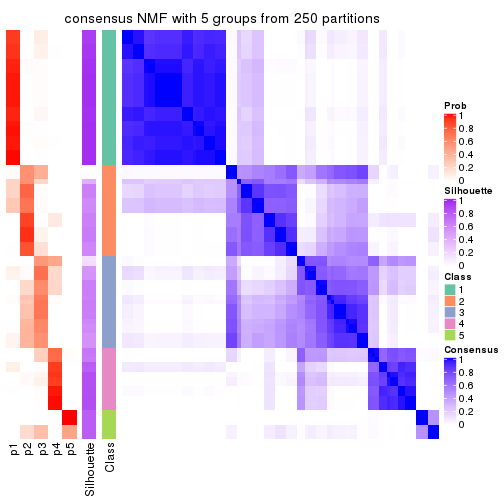
consensus_heatmap(res, k = 6)
Heatmaps for the membership of samples in all partitions to see how consistent they are:
membership_heatmap(res, k = 2)
membership_heatmap(res, k = 3)

membership_heatmap(res, k = 4)
membership_heatmap(res, k = 5)

membership_heatmap(res, k = 6)
As soon as we have had the classes for columns, we can look for signatures which are significantly different between classes which can be candidate marks for certain classes. Following are the heatmaps for signatures.
Signature heatmaps where rows are scaled:
get_signatures(res, k = 2)
get_signatures(res, k = 3)
get_signatures(res, k = 4)
get_signatures(res, k = 5)
get_signatures(res, k = 6)
Signature heatmaps where rows are not scaled:
get_signatures(res, k = 2, scale_rows = FALSE)
get_signatures(res, k = 3, scale_rows = FALSE)
get_signatures(res, k = 4, scale_rows = FALSE)
get_signatures(res, k = 5, scale_rows = FALSE)

get_signatures(res, k = 6, scale_rows = FALSE)
Compare the overlap of signatures from different k:
compare_signatures(res)

get_signature() returns a data frame invisibly. TO get the list of signatures, the function
call should be assigned to a variable explicitly. In following code, if plot argument is set
to FALSE, no heatmap is plotted while only the differential analysis is performed.
# code only for demonstration
tb = get_signature(res, k = ..., plot = FALSE)
An example of the output of tb is:
#> which_row fdr mean_1 mean_2 scaled_mean_1 scaled_mean_2 km
#> 1 38 0.042760348 8.373488 9.131774 -0.5533452 0.5164555 1
#> 2 40 0.018707592 7.106213 8.469186 -0.6173731 0.5762149 1
#> 3 55 0.019134737 10.221463 11.207825 -0.6159697 0.5749050 1
#> 4 59 0.006059896 5.921854 7.869574 -0.6899429 0.6439467 1
#> 5 60 0.018055526 8.928898 10.211722 -0.6204761 0.5791110 1
#> 6 98 0.009384629 15.714769 14.887706 0.6635654 -0.6193277 2
...
The columns in tb are:
which_row: row indices corresponding to the input matrix.fdr: FDR for the differential test. mean_x: The mean value in group x.scaled_mean_x: The mean value in group x after rows are scaled.km: Row groups if k-means clustering is applied to rows.UMAP plot which shows how samples are separated.
dimension_reduction(res, k = 2, method = "UMAP")
dimension_reduction(res, k = 3, method = "UMAP")
dimension_reduction(res, k = 4, method = "UMAP")
dimension_reduction(res, k = 5, method = "UMAP")
dimension_reduction(res, k = 6, method = "UMAP")
Following heatmap shows how subgroups are split when increasing k:
collect_classes(res)
If matrix rows can be associated to genes, consider to use GO_Enrichment(res,
...) to perform function enrichment for the signature genes.
The object with results only for a single top-value method and a single partition method can be extracted as:
res = res_list["CV", "hclust"]
# you can also extract it by
# res = res_list["CV:hclust"]
A summary of res and all the functions that can be applied to it:
res
#> A 'ConsensusPartition' object with k = 2, 3, 4, 5, 6.
#> On a matrix with 18243 rows and 85 columns.
#> Top rows (1000, 2000, 3000, 4000, 5000) are extracted by 'CV' method.
#> Subgroups are detected by 'hclust' method.
#> Performed in total 1250 partitions by row resampling.
#> Best k for subgroups seems to be 3.
#>
#> Following methods can be applied to this 'ConsensusPartition' object:
#> [1] "cola_report" "collect_classes" "collect_plots"
#> [4] "collect_stats" "colnames" "compare_signatures"
#> [7] "consensus_heatmap" "dimension_reduction" "functional_enrichment"
#> [10] "get_anno_col" "get_anno" "get_classes"
#> [13] "get_consensus" "get_matrix" "get_membership"
#> [16] "get_param" "get_signatures" "get_stats"
#> [19] "is_best_k" "is_stable_k" "membership_heatmap"
#> [22] "ncol" "nrow" "plot_ecdf"
#> [25] "rownames" "select_partition_number" "show"
#> [28] "suggest_best_k" "test_to_known_factors"
collect_plots() function collects all the plots made from res for all k (number of partitions)
into one single page to provide an easy and fast comparison between different k.
collect_plots(res)
The plots are:
k and the heatmap of
predicted classes for each k.k.k.k.All the plots in panels can be made by individual functions and they are plotted later in this section.
select_partition_number() produces several plots showing different
statistics for choosing “optimized” k. There are following statistics:
k;k, the area increased is defined as \(A_k - A_{k-1}\).The detailed explanations of these statistics can be found in the cola vignette.
Generally speaking, lower PAC score, higher mean silhouette score or higher
concordance corresponds to better partition. Rand index and Jaccard index
measure how similar the current partition is compared to partition with k-1.
If they are too similar, we won't accept k is better than k-1.
select_partition_number(res)
The numeric values for all these statistics can be obtained by get_stats().
get_stats(res)
#> k 1-PAC mean_silhouette concordance area_increased Rand Jaccard
#> 2 2 0.727 0.871 0.942 0.151 0.931 0.931
#> 3 3 0.452 0.677 0.866 1.262 0.829 0.817
#> 4 4 0.389 0.726 0.845 0.286 0.918 0.892
#> 5 5 0.435 0.707 0.852 0.028 0.997 0.996
#> 6 6 0.455 0.640 0.732 0.250 0.653 0.494
suggest_best_k() suggests the best \(k\) based on these statistics. The rules are as follows:
NA.suggest_best_k(res)
#> [1] 3
Following shows the table of the partitions (You need to click the show/hide
code output link to see it). The membership matrix (columns with name p*)
is inferred by
clue::cl_consensus()
function with the SE method. Basically the value in the membership matrix
represents the probability to belong to a certain group. The finall class
label for an item is determined with the group with highest probability it
belongs to.
In get_classes() function, the entropy is calculated from the membership
matrix and the silhouette score is calculated from the consensus matrix.
cbind(get_classes(res, k = 2), get_membership(res, k = 2))
#> class entropy silhouette p1 p2
#> ERR532547 1 0.000 0.935 1.000 0.000
#> ERR532548 1 0.000 0.935 1.000 0.000
#> ERR532549 1 0.000 0.935 1.000 0.000
#> ERR532576 1 0.224 0.920 0.964 0.036
#> ERR532577 1 0.224 0.920 0.964 0.036
#> ERR532578 1 0.224 0.920 0.964 0.036
#> ERR532593 1 0.971 0.313 0.600 0.400
#> ERR532594 1 0.971 0.313 0.600 0.400
#> ERR532595 1 0.971 0.313 0.600 0.400
#> ERR532596 1 0.000 0.935 1.000 0.000
#> ERR532597 1 0.000 0.935 1.000 0.000
#> ERR532598 1 0.000 0.935 1.000 0.000
#> ERR532599 1 0.000 0.935 1.000 0.000
#> ERR532600 1 0.000 0.935 1.000 0.000
#> ERR532601 1 0.000 0.935 1.000 0.000
#> ERR532602 1 0.224 0.920 0.964 0.036
#> ERR532603 1 0.224 0.920 0.964 0.036
#> ERR532604 1 0.224 0.920 0.964 0.036
#> ERR532605 1 0.224 0.920 0.964 0.036
#> ERR532606 1 0.224 0.920 0.964 0.036
#> ERR532607 1 0.224 0.920 0.964 0.036
#> ERR532608 2 0.456 1.000 0.096 0.904
#> ERR532609 2 0.456 1.000 0.096 0.904
#> ERR532610 2 0.456 1.000 0.096 0.904
#> ERR532611 1 0.224 0.920 0.964 0.036
#> ERR532612 1 0.224 0.920 0.964 0.036
#> ERR532613 1 0.224 0.920 0.964 0.036
#> ERR532550 1 0.886 0.538 0.696 0.304
#> ERR532551 1 0.000 0.935 1.000 0.000
#> ERR532552 1 0.000 0.935 1.000 0.000
#> ERR532553 1 0.000 0.935 1.000 0.000
#> ERR532554 1 0.000 0.935 1.000 0.000
#> ERR532555 1 0.000 0.935 1.000 0.000
#> ERR532556 1 0.000 0.935 1.000 0.000
#> ERR532557 1 0.000 0.935 1.000 0.000
#> ERR532558 1 0.000 0.935 1.000 0.000
#> ERR532559 1 0.000 0.935 1.000 0.000
#> ERR532560 1 0.295 0.911 0.948 0.052
#> ERR532561 1 0.295 0.911 0.948 0.052
#> ERR532562 1 0.295 0.911 0.948 0.052
#> ERR532563 1 0.000 0.935 1.000 0.000
#> ERR532564 1 0.000 0.935 1.000 0.000
#> ERR532565 1 0.000 0.935 1.000 0.000
#> ERR532566 1 0.722 0.716 0.800 0.200
#> ERR532567 1 0.722 0.716 0.800 0.200
#> ERR532568 1 0.722 0.716 0.800 0.200
#> ERR532569 1 0.295 0.911 0.948 0.052
#> ERR532570 1 0.295 0.911 0.948 0.052
#> ERR532571 1 0.295 0.911 0.948 0.052
#> ERR532572 1 0.000 0.935 1.000 0.000
#> ERR532573 1 0.000 0.935 1.000 0.000
#> ERR532574 1 0.000 0.935 1.000 0.000
#> ERR532575 1 0.000 0.935 1.000 0.000
#> ERR532579 1 0.722 0.716 0.800 0.200
#> ERR532580 1 0.722 0.716 0.800 0.200
#> ERR532581 1 0.000 0.935 1.000 0.000
#> ERR532582 1 0.000 0.935 1.000 0.000
#> ERR532583 1 0.000 0.935 1.000 0.000
#> ERR532584 1 0.000 0.935 1.000 0.000
#> ERR532585 1 0.000 0.935 1.000 0.000
#> ERR532586 1 0.000 0.935 1.000 0.000
#> ERR532587 1 0.000 0.935 1.000 0.000
#> ERR532588 1 0.000 0.935 1.000 0.000
#> ERR532589 1 0.000 0.935 1.000 0.000
#> ERR532590 1 0.000 0.935 1.000 0.000
#> ERR532591 1 0.000 0.935 1.000 0.000
#> ERR532592 1 0.000 0.935 1.000 0.000
#> ERR532439 1 0.000 0.935 1.000 0.000
#> ERR532440 1 0.000 0.935 1.000 0.000
#> ERR532441 1 0.000 0.935 1.000 0.000
#> ERR532442 1 0.295 0.911 0.948 0.052
#> ERR532443 1 0.295 0.911 0.948 0.052
#> ERR532444 1 0.295 0.911 0.948 0.052
#> ERR532445 1 0.971 0.313 0.600 0.400
#> ERR532446 1 0.971 0.313 0.600 0.400
#> ERR532447 1 0.971 0.313 0.600 0.400
#> ERR532433 1 0.000 0.935 1.000 0.000
#> ERR532434 1 0.000 0.935 1.000 0.000
#> ERR532435 1 0.000 0.935 1.000 0.000
#> ERR532436 1 0.000 0.935 1.000 0.000
#> ERR532437 1 0.000 0.935 1.000 0.000
#> ERR532438 1 0.000 0.935 1.000 0.000
#> ERR532614 1 0.000 0.935 1.000 0.000
#> ERR532615 1 0.000 0.935 1.000 0.000
#> ERR532616 1 0.000 0.935 1.000 0.000
cbind(get_classes(res, k = 3), get_membership(res, k = 3))
#> class entropy silhouette p1 p2 p3
#> ERR532547 1 0.1163 0.8240 0.972 0.028 0.000
#> ERR532548 1 0.1163 0.8240 0.972 0.028 0.000
#> ERR532549 1 0.1163 0.8240 0.972 0.028 0.000
#> ERR532576 1 0.1411 0.8219 0.964 0.000 0.036
#> ERR532577 1 0.1411 0.8219 0.964 0.000 0.036
#> ERR532578 1 0.1411 0.8219 0.964 0.000 0.036
#> ERR532593 1 0.6309 -0.2468 0.500 0.000 0.500
#> ERR532594 1 0.6309 -0.2468 0.500 0.000 0.500
#> ERR532595 3 0.6309 0.0456 0.500 0.000 0.500
#> ERR532596 1 0.6252 0.3047 0.556 0.444 0.000
#> ERR532597 1 0.6252 0.3047 0.556 0.444 0.000
#> ERR532598 1 0.6252 0.3047 0.556 0.444 0.000
#> ERR532599 1 0.4555 0.7459 0.800 0.200 0.000
#> ERR532600 1 0.4555 0.7459 0.800 0.200 0.000
#> ERR532601 1 0.4555 0.7459 0.800 0.200 0.000
#> ERR532602 1 0.1411 0.8219 0.964 0.000 0.036
#> ERR532603 1 0.1411 0.8219 0.964 0.000 0.036
#> ERR532604 1 0.1411 0.8219 0.964 0.000 0.036
#> ERR532605 1 0.1411 0.8219 0.964 0.000 0.036
#> ERR532606 1 0.1411 0.8219 0.964 0.000 0.036
#> ERR532607 1 0.1411 0.8219 0.964 0.000 0.036
#> ERR532608 3 0.0237 0.4166 0.000 0.004 0.996
#> ERR532609 3 0.0237 0.4166 0.000 0.004 0.996
#> ERR532610 3 0.0237 0.4166 0.000 0.004 0.996
#> ERR532611 1 0.1411 0.8219 0.964 0.000 0.036
#> ERR532612 1 0.1411 0.8219 0.964 0.000 0.036
#> ERR532613 1 0.1411 0.8219 0.964 0.000 0.036
#> ERR532550 1 0.5591 0.4894 0.696 0.000 0.304
#> ERR532551 1 0.0000 0.8273 1.000 0.000 0.000
#> ERR532552 1 0.0000 0.8273 1.000 0.000 0.000
#> ERR532553 1 0.0000 0.8273 1.000 0.000 0.000
#> ERR532554 1 0.1860 0.8172 0.948 0.052 0.000
#> ERR532555 1 0.1860 0.8172 0.948 0.052 0.000
#> ERR532556 1 0.1860 0.8172 0.948 0.052 0.000
#> ERR532557 1 0.4452 0.7515 0.808 0.192 0.000
#> ERR532558 1 0.4452 0.7515 0.808 0.192 0.000
#> ERR532559 1 0.4452 0.7515 0.808 0.192 0.000
#> ERR532560 1 0.1860 0.8152 0.948 0.000 0.052
#> ERR532561 1 0.1860 0.8152 0.948 0.000 0.052
#> ERR532562 1 0.1860 0.8152 0.948 0.000 0.052
#> ERR532563 1 0.4702 0.7316 0.788 0.212 0.000
#> ERR532564 1 0.4702 0.7316 0.788 0.212 0.000
#> ERR532565 1 0.4702 0.7316 0.788 0.212 0.000
#> ERR532566 2 0.0237 0.7307 0.000 0.996 0.004
#> ERR532567 2 0.0237 0.7307 0.000 0.996 0.004
#> ERR532568 2 0.0237 0.7307 0.000 0.996 0.004
#> ERR532569 1 0.1860 0.8152 0.948 0.000 0.052
#> ERR532570 1 0.1860 0.8152 0.948 0.000 0.052
#> ERR532571 1 0.1860 0.8152 0.948 0.000 0.052
#> ERR532572 1 0.4555 0.7459 0.800 0.200 0.000
#> ERR532573 1 0.4555 0.7459 0.800 0.200 0.000
#> ERR532574 1 0.4555 0.7459 0.800 0.200 0.000
#> ERR532575 1 0.0237 0.8273 0.996 0.004 0.000
#> ERR532579 1 0.4555 0.5995 0.800 0.200 0.000
#> ERR532580 1 0.4555 0.5995 0.800 0.200 0.000
#> ERR532581 1 0.4555 0.7459 0.800 0.200 0.000
#> ERR532582 1 0.4555 0.7459 0.800 0.200 0.000
#> ERR532583 1 0.4555 0.7459 0.800 0.200 0.000
#> ERR532584 1 0.4452 0.7515 0.808 0.192 0.000
#> ERR532585 1 0.4452 0.7515 0.808 0.192 0.000
#> ERR532586 1 0.4452 0.7515 0.808 0.192 0.000
#> ERR532587 1 0.6252 0.3047 0.556 0.444 0.000
#> ERR532588 1 0.6252 0.3047 0.556 0.444 0.000
#> ERR532589 1 0.1163 0.8240 0.972 0.028 0.000
#> ERR532590 1 0.1163 0.8240 0.972 0.028 0.000
#> ERR532591 1 0.0000 0.8273 1.000 0.000 0.000
#> ERR532592 1 0.0000 0.8273 1.000 0.000 0.000
#> ERR532439 1 0.0000 0.8273 1.000 0.000 0.000
#> ERR532440 1 0.0000 0.8273 1.000 0.000 0.000
#> ERR532441 1 0.0000 0.8273 1.000 0.000 0.000
#> ERR532442 1 0.1860 0.8152 0.948 0.000 0.052
#> ERR532443 1 0.1860 0.8152 0.948 0.000 0.052
#> ERR532444 1 0.1860 0.8152 0.948 0.000 0.052
#> ERR532445 1 0.6309 -0.2468 0.500 0.000 0.500
#> ERR532446 3 0.6309 0.0456 0.500 0.000 0.500
#> ERR532447 1 0.6309 -0.2468 0.500 0.000 0.500
#> ERR532433 1 0.0000 0.8273 1.000 0.000 0.000
#> ERR532434 1 0.0000 0.8273 1.000 0.000 0.000
#> ERR532435 1 0.0000 0.8273 1.000 0.000 0.000
#> ERR532436 1 0.0000 0.8273 1.000 0.000 0.000
#> ERR532437 1 0.0000 0.8273 1.000 0.000 0.000
#> ERR532438 1 0.0000 0.8273 1.000 0.000 0.000
#> ERR532614 2 0.4605 0.7260 0.204 0.796 0.000
#> ERR532615 2 0.4605 0.7260 0.204 0.796 0.000
#> ERR532616 2 0.4605 0.7260 0.204 0.796 0.000
cbind(get_classes(res, k = 4), get_membership(res, k = 4))
#> class entropy silhouette p1 p2 p3 p4
#> ERR532547 2 0.1302 0.777 0.000 0.956 0.044 0.000
#> ERR532548 2 0.1302 0.777 0.000 0.956 0.044 0.000
#> ERR532549 2 0.1302 0.777 0.000 0.956 0.044 0.000
#> ERR532576 2 0.3610 0.718 0.200 0.800 0.000 0.000
#> ERR532577 2 0.3610 0.718 0.200 0.800 0.000 0.000
#> ERR532578 2 0.3610 0.718 0.200 0.800 0.000 0.000
#> ERR532593 1 0.2011 1.000 0.920 0.080 0.000 0.000
#> ERR532594 1 0.2011 1.000 0.920 0.080 0.000 0.000
#> ERR532595 1 0.2011 1.000 0.920 0.080 0.000 0.000
#> ERR532596 2 0.4977 0.358 0.000 0.540 0.460 0.000
#> ERR532597 2 0.4977 0.358 0.000 0.540 0.460 0.000
#> ERR532598 2 0.4977 0.358 0.000 0.540 0.460 0.000
#> ERR532599 2 0.3764 0.691 0.000 0.784 0.216 0.000
#> ERR532600 2 0.3764 0.691 0.000 0.784 0.216 0.000
#> ERR532601 2 0.3764 0.691 0.000 0.784 0.216 0.000
#> ERR532602 2 0.3610 0.718 0.200 0.800 0.000 0.000
#> ERR532603 2 0.3610 0.718 0.200 0.800 0.000 0.000
#> ERR532604 2 0.3610 0.718 0.200 0.800 0.000 0.000
#> ERR532605 2 0.3610 0.718 0.200 0.800 0.000 0.000
#> ERR532606 2 0.3610 0.718 0.200 0.800 0.000 0.000
#> ERR532607 2 0.3610 0.718 0.200 0.800 0.000 0.000
#> ERR532608 4 0.0336 1.000 0.008 0.000 0.000 0.992
#> ERR532609 4 0.0336 1.000 0.008 0.000 0.000 0.992
#> ERR532610 4 0.0336 1.000 0.008 0.000 0.000 0.992
#> ERR532611 2 0.3610 0.718 0.200 0.800 0.000 0.000
#> ERR532612 2 0.3610 0.718 0.200 0.800 0.000 0.000
#> ERR532613 2 0.3610 0.718 0.200 0.800 0.000 0.000
#> ERR532550 2 0.4955 0.345 0.444 0.556 0.000 0.000
#> ERR532551 2 0.0188 0.784 0.004 0.996 0.000 0.000
#> ERR532552 2 0.0188 0.784 0.004 0.996 0.000 0.000
#> ERR532553 2 0.0188 0.784 0.004 0.996 0.000 0.000
#> ERR532554 2 0.1792 0.770 0.000 0.932 0.068 0.000
#> ERR532555 2 0.1792 0.770 0.000 0.932 0.068 0.000
#> ERR532556 2 0.1792 0.770 0.000 0.932 0.068 0.000
#> ERR532557 2 0.3688 0.698 0.000 0.792 0.208 0.000
#> ERR532558 2 0.3688 0.698 0.000 0.792 0.208 0.000
#> ERR532559 2 0.3688 0.698 0.000 0.792 0.208 0.000
#> ERR532560 2 0.3764 0.706 0.216 0.784 0.000 0.000
#> ERR532561 2 0.3764 0.706 0.216 0.784 0.000 0.000
#> ERR532562 2 0.3764 0.706 0.216 0.784 0.000 0.000
#> ERR532563 2 0.3873 0.679 0.000 0.772 0.228 0.000
#> ERR532564 2 0.3873 0.679 0.000 0.772 0.228 0.000
#> ERR532565 2 0.3873 0.679 0.000 0.772 0.228 0.000
#> ERR532566 3 0.2255 0.620 0.068 0.000 0.920 0.012
#> ERR532567 3 0.2255 0.620 0.068 0.000 0.920 0.012
#> ERR532568 3 0.2255 0.620 0.068 0.000 0.920 0.012
#> ERR532569 2 0.3764 0.706 0.216 0.784 0.000 0.000
#> ERR532570 2 0.3764 0.706 0.216 0.784 0.000 0.000
#> ERR532571 2 0.3764 0.706 0.216 0.784 0.000 0.000
#> ERR532572 2 0.3764 0.691 0.000 0.784 0.216 0.000
#> ERR532573 2 0.3764 0.691 0.000 0.784 0.216 0.000
#> ERR532574 2 0.3764 0.691 0.000 0.784 0.216 0.000
#> ERR532575 2 0.0188 0.784 0.000 0.996 0.004 0.000
#> ERR532579 2 0.4139 0.602 0.024 0.800 0.176 0.000
#> ERR532580 2 0.4139 0.602 0.024 0.800 0.176 0.000
#> ERR532581 2 0.3764 0.691 0.000 0.784 0.216 0.000
#> ERR532582 2 0.3764 0.691 0.000 0.784 0.216 0.000
#> ERR532583 2 0.3764 0.691 0.000 0.784 0.216 0.000
#> ERR532584 2 0.3688 0.698 0.000 0.792 0.208 0.000
#> ERR532585 2 0.3688 0.698 0.000 0.792 0.208 0.000
#> ERR532586 2 0.3688 0.698 0.000 0.792 0.208 0.000
#> ERR532587 2 0.4977 0.358 0.000 0.540 0.460 0.000
#> ERR532588 2 0.4977 0.358 0.000 0.540 0.460 0.000
#> ERR532589 2 0.1302 0.777 0.000 0.956 0.044 0.000
#> ERR532590 2 0.1302 0.777 0.000 0.956 0.044 0.000
#> ERR532591 2 0.0188 0.784 0.000 0.996 0.004 0.000
#> ERR532592 2 0.0188 0.784 0.000 0.996 0.004 0.000
#> ERR532439 2 0.0188 0.784 0.004 0.996 0.000 0.000
#> ERR532440 2 0.0188 0.784 0.004 0.996 0.000 0.000
#> ERR532441 2 0.0188 0.784 0.004 0.996 0.000 0.000
#> ERR532442 2 0.3764 0.706 0.216 0.784 0.000 0.000
#> ERR532443 2 0.3764 0.706 0.216 0.784 0.000 0.000
#> ERR532444 2 0.3764 0.706 0.216 0.784 0.000 0.000
#> ERR532445 1 0.2011 1.000 0.920 0.080 0.000 0.000
#> ERR532446 1 0.2011 1.000 0.920 0.080 0.000 0.000
#> ERR532447 1 0.2011 1.000 0.920 0.080 0.000 0.000
#> ERR532433 2 0.0188 0.784 0.004 0.996 0.000 0.000
#> ERR532434 2 0.0188 0.784 0.004 0.996 0.000 0.000
#> ERR532435 2 0.0188 0.784 0.004 0.996 0.000 0.000
#> ERR532436 2 0.0188 0.784 0.004 0.996 0.000 0.000
#> ERR532437 2 0.0188 0.784 0.004 0.996 0.000 0.000
#> ERR532438 2 0.0188 0.784 0.004 0.996 0.000 0.000
#> ERR532614 3 0.3486 0.701 0.000 0.188 0.812 0.000
#> ERR532615 3 0.3486 0.701 0.000 0.188 0.812 0.000
#> ERR532616 3 0.3486 0.701 0.000 0.188 0.812 0.000
cbind(get_classes(res, k = 5), get_membership(res, k = 5))
#> class entropy silhouette p1 p2 p3 p4 p5
#> ERR532547 2 0.1121 0.742 0.000 0.956 0.044 0 0
#> ERR532548 2 0.1121 0.742 0.000 0.956 0.044 0 0
#> ERR532549 2 0.1121 0.742 0.000 0.956 0.044 0 0
#> ERR532576 2 0.3109 0.684 0.200 0.800 0.000 0 0
#> ERR532577 2 0.3109 0.684 0.200 0.800 0.000 0 0
#> ERR532578 2 0.3109 0.684 0.200 0.800 0.000 0 0
#> ERR532593 1 0.0510 1.000 0.984 0.016 0.000 0 0
#> ERR532594 1 0.0510 1.000 0.984 0.016 0.000 0 0
#> ERR532595 1 0.0510 1.000 0.984 0.016 0.000 0 0
#> ERR532596 2 0.4287 0.180 0.000 0.540 0.460 0 0
#> ERR532597 2 0.4287 0.180 0.000 0.540 0.460 0 0
#> ERR532598 2 0.4287 0.180 0.000 0.540 0.460 0 0
#> ERR532599 2 0.3242 0.632 0.000 0.784 0.216 0 0
#> ERR532600 2 0.3242 0.632 0.000 0.784 0.216 0 0
#> ERR532601 2 0.3242 0.632 0.000 0.784 0.216 0 0
#> ERR532602 2 0.3109 0.684 0.200 0.800 0.000 0 0
#> ERR532603 2 0.3109 0.684 0.200 0.800 0.000 0 0
#> ERR532604 2 0.3109 0.684 0.200 0.800 0.000 0 0
#> ERR532605 2 0.3109 0.684 0.200 0.800 0.000 0 0
#> ERR532606 2 0.3109 0.684 0.200 0.800 0.000 0 0
#> ERR532607 2 0.3109 0.684 0.200 0.800 0.000 0 0
#> ERR532608 4 0.0000 1.000 0.000 0.000 0.000 1 0
#> ERR532609 4 0.0000 1.000 0.000 0.000 0.000 1 0
#> ERR532610 4 0.0000 1.000 0.000 0.000 0.000 1 0
#> ERR532611 2 0.3109 0.684 0.200 0.800 0.000 0 0
#> ERR532612 2 0.3109 0.684 0.200 0.800 0.000 0 0
#> ERR532613 2 0.3109 0.684 0.200 0.800 0.000 0 0
#> ERR532550 2 0.4268 0.288 0.444 0.556 0.000 0 0
#> ERR532551 2 0.0162 0.751 0.004 0.996 0.000 0 0
#> ERR532552 2 0.0162 0.751 0.004 0.996 0.000 0 0
#> ERR532553 2 0.0162 0.751 0.004 0.996 0.000 0 0
#> ERR532554 2 0.1544 0.734 0.000 0.932 0.068 0 0
#> ERR532555 2 0.1544 0.734 0.000 0.932 0.068 0 0
#> ERR532556 2 0.1544 0.734 0.000 0.932 0.068 0 0
#> ERR532557 2 0.3177 0.640 0.000 0.792 0.208 0 0
#> ERR532558 2 0.3177 0.640 0.000 0.792 0.208 0 0
#> ERR532559 2 0.3177 0.640 0.000 0.792 0.208 0 0
#> ERR532560 2 0.3242 0.672 0.216 0.784 0.000 0 0
#> ERR532561 2 0.3242 0.672 0.216 0.784 0.000 0 0
#> ERR532562 2 0.3242 0.672 0.216 0.784 0.000 0 0
#> ERR532563 2 0.3336 0.616 0.000 0.772 0.228 0 0
#> ERR532564 2 0.3336 0.616 0.000 0.772 0.228 0 0
#> ERR532565 2 0.3336 0.616 0.000 0.772 0.228 0 0
#> ERR532566 5 0.0000 1.000 0.000 0.000 0.000 0 1
#> ERR532567 5 0.0000 1.000 0.000 0.000 0.000 0 1
#> ERR532568 5 0.0000 1.000 0.000 0.000 0.000 0 1
#> ERR532569 2 0.3242 0.672 0.216 0.784 0.000 0 0
#> ERR532570 2 0.3242 0.672 0.216 0.784 0.000 0 0
#> ERR532571 2 0.3242 0.672 0.216 0.784 0.000 0 0
#> ERR532572 2 0.3242 0.632 0.000 0.784 0.216 0 0
#> ERR532573 2 0.3242 0.632 0.000 0.784 0.216 0 0
#> ERR532574 2 0.3242 0.632 0.000 0.784 0.216 0 0
#> ERR532575 2 0.0162 0.750 0.000 0.996 0.004 0 0
#> ERR532579 2 0.3492 0.536 0.016 0.796 0.188 0 0
#> ERR532580 2 0.3492 0.536 0.016 0.796 0.188 0 0
#> ERR532581 2 0.3242 0.632 0.000 0.784 0.216 0 0
#> ERR532582 2 0.3242 0.632 0.000 0.784 0.216 0 0
#> ERR532583 2 0.3242 0.632 0.000 0.784 0.216 0 0
#> ERR532584 2 0.3177 0.640 0.000 0.792 0.208 0 0
#> ERR532585 2 0.3177 0.640 0.000 0.792 0.208 0 0
#> ERR532586 2 0.3177 0.640 0.000 0.792 0.208 0 0
#> ERR532587 2 0.4287 0.180 0.000 0.540 0.460 0 0
#> ERR532588 2 0.4287 0.180 0.000 0.540 0.460 0 0
#> ERR532589 2 0.1121 0.742 0.000 0.956 0.044 0 0
#> ERR532590 2 0.1121 0.742 0.000 0.956 0.044 0 0
#> ERR532591 2 0.0162 0.750 0.000 0.996 0.004 0 0
#> ERR532592 2 0.0162 0.750 0.000 0.996 0.004 0 0
#> ERR532439 2 0.0162 0.751 0.004 0.996 0.000 0 0
#> ERR532440 2 0.0162 0.751 0.004 0.996 0.000 0 0
#> ERR532441 2 0.0162 0.751 0.004 0.996 0.000 0 0
#> ERR532442 2 0.3242 0.672 0.216 0.784 0.000 0 0
#> ERR532443 2 0.3242 0.672 0.216 0.784 0.000 0 0
#> ERR532444 2 0.3242 0.672 0.216 0.784 0.000 0 0
#> ERR532445 1 0.0510 1.000 0.984 0.016 0.000 0 0
#> ERR532446 1 0.0510 1.000 0.984 0.016 0.000 0 0
#> ERR532447 1 0.0510 1.000 0.984 0.016 0.000 0 0
#> ERR532433 2 0.0162 0.751 0.004 0.996 0.000 0 0
#> ERR532434 2 0.0162 0.751 0.004 0.996 0.000 0 0
#> ERR532435 2 0.0162 0.751 0.004 0.996 0.000 0 0
#> ERR532436 2 0.0162 0.751 0.004 0.996 0.000 0 0
#> ERR532437 2 0.0162 0.751 0.004 0.996 0.000 0 0
#> ERR532438 2 0.0162 0.751 0.004 0.996 0.000 0 0
#> ERR532614 3 0.3003 1.000 0.000 0.188 0.812 0 0
#> ERR532615 3 0.3003 1.000 0.000 0.188 0.812 0 0
#> ERR532616 3 0.3003 1.000 0.000 0.188 0.812 0 0
cbind(get_classes(res, k = 6), get_membership(res, k = 6))
#> class entropy silhouette p1 p2 p3 p4 p5 p6
#> ERR532547 1 0.3448 0.5090 0.716 0 0.004 0.280 0 0.000
#> ERR532548 1 0.3448 0.5090 0.716 0 0.004 0.280 0 0.000
#> ERR532549 1 0.3448 0.5090 0.716 0 0.004 0.280 0 0.000
#> ERR532576 1 0.0000 0.7589 1.000 0 0.000 0.000 0 0.000
#> ERR532577 1 0.0000 0.7589 1.000 0 0.000 0.000 0 0.000
#> ERR532578 1 0.0000 0.7589 1.000 0 0.000 0.000 0 0.000
#> ERR532593 6 0.5887 0.7058 0.200 0 0.000 0.392 0 0.408
#> ERR532594 6 0.5887 0.7058 0.200 0 0.000 0.392 0 0.408
#> ERR532595 6 0.5887 0.7058 0.200 0 0.000 0.392 0 0.408
#> ERR532596 4 0.5657 -0.0633 0.152 0 0.412 0.436 0 0.000
#> ERR532597 4 0.5657 -0.0633 0.152 0 0.412 0.436 0 0.000
#> ERR532598 4 0.5657 -0.0633 0.152 0 0.412 0.436 0 0.000
#> ERR532599 4 0.3747 0.7416 0.396 0 0.000 0.604 0 0.000
#> ERR532600 4 0.3747 0.7416 0.396 0 0.000 0.604 0 0.000
#> ERR532601 4 0.3747 0.7416 0.396 0 0.000 0.604 0 0.000
#> ERR532602 1 0.0000 0.7589 1.000 0 0.000 0.000 0 0.000
#> ERR532603 1 0.0000 0.7589 1.000 0 0.000 0.000 0 0.000
#> ERR532604 1 0.0000 0.7589 1.000 0 0.000 0.000 0 0.000
#> ERR532605 1 0.0000 0.7589 1.000 0 0.000 0.000 0 0.000
#> ERR532606 1 0.0000 0.7589 1.000 0 0.000 0.000 0 0.000
#> ERR532607 1 0.0000 0.7589 1.000 0 0.000 0.000 0 0.000
#> ERR532608 2 0.0000 1.0000 0.000 1 0.000 0.000 0 0.000
#> ERR532609 2 0.0000 1.0000 0.000 1 0.000 0.000 0 0.000
#> ERR532610 2 0.0000 1.0000 0.000 1 0.000 0.000 0 0.000
#> ERR532611 1 0.0000 0.7589 1.000 0 0.000 0.000 0 0.000
#> ERR532612 1 0.0000 0.7589 1.000 0 0.000 0.000 0 0.000
#> ERR532613 1 0.0000 0.7589 1.000 0 0.000 0.000 0 0.000
#> ERR532550 1 0.4107 0.3410 0.684 0 0.000 0.036 0 0.280
#> ERR532551 1 0.2793 0.6717 0.800 0 0.000 0.200 0 0.000
#> ERR532552 1 0.2793 0.6717 0.800 0 0.000 0.200 0 0.000
#> ERR532553 1 0.2793 0.6717 0.800 0 0.000 0.200 0 0.000
#> ERR532554 4 0.6004 0.5700 0.288 0 0.276 0.436 0 0.000
#> ERR532555 4 0.6004 0.5700 0.288 0 0.276 0.436 0 0.000
#> ERR532556 4 0.6004 0.5700 0.288 0 0.276 0.436 0 0.000
#> ERR532557 4 0.3817 0.6943 0.432 0 0.000 0.568 0 0.000
#> ERR532558 4 0.3817 0.6943 0.432 0 0.000 0.568 0 0.000
#> ERR532559 4 0.3817 0.6943 0.432 0 0.000 0.568 0 0.000
#> ERR532560 1 0.0458 0.7522 0.984 0 0.000 0.000 0 0.016
#> ERR532561 1 0.0458 0.7522 0.984 0 0.000 0.000 0 0.016
#> ERR532562 1 0.0458 0.7522 0.984 0 0.000 0.000 0 0.016
#> ERR532563 4 0.4508 0.7158 0.396 0 0.036 0.568 0 0.000
#> ERR532564 4 0.4508 0.7158 0.396 0 0.036 0.568 0 0.000
#> ERR532565 4 0.4508 0.7158 0.396 0 0.036 0.568 0 0.000
#> ERR532566 5 0.0000 1.0000 0.000 0 0.000 0.000 1 0.000
#> ERR532567 5 0.0000 1.0000 0.000 0 0.000 0.000 1 0.000
#> ERR532568 5 0.0000 1.0000 0.000 0 0.000 0.000 1 0.000
#> ERR532569 1 0.0458 0.7522 0.984 0 0.000 0.000 0 0.016
#> ERR532570 1 0.0458 0.7522 0.984 0 0.000 0.000 0 0.016
#> ERR532571 1 0.0458 0.7522 0.984 0 0.000 0.000 0 0.016
#> ERR532572 4 0.3747 0.7416 0.396 0 0.000 0.604 0 0.000
#> ERR532573 4 0.3747 0.7416 0.396 0 0.000 0.604 0 0.000
#> ERR532574 4 0.3747 0.7416 0.396 0 0.000 0.604 0 0.000
#> ERR532575 1 0.3076 0.5996 0.760 0 0.000 0.240 0 0.000
#> ERR532579 6 0.4598 0.1032 0.360 0 0.048 0.000 0 0.592
#> ERR532580 6 0.4598 0.1032 0.360 0 0.048 0.000 0 0.592
#> ERR532581 4 0.3747 0.7416 0.396 0 0.000 0.604 0 0.000
#> ERR532582 4 0.3747 0.7416 0.396 0 0.000 0.604 0 0.000
#> ERR532583 4 0.3747 0.7416 0.396 0 0.000 0.604 0 0.000
#> ERR532584 4 0.3810 0.7005 0.428 0 0.000 0.572 0 0.000
#> ERR532585 4 0.3810 0.7005 0.428 0 0.000 0.572 0 0.000
#> ERR532586 4 0.3810 0.7005 0.428 0 0.000 0.572 0 0.000
#> ERR532587 4 0.5700 -0.0219 0.160 0 0.404 0.436 0 0.000
#> ERR532588 4 0.5700 -0.0219 0.160 0 0.404 0.436 0 0.000
#> ERR532589 1 0.3309 0.5133 0.720 0 0.000 0.280 0 0.000
#> ERR532590 1 0.3309 0.5133 0.720 0 0.000 0.280 0 0.000
#> ERR532591 1 0.5761 -0.4790 0.432 0 0.172 0.396 0 0.000
#> ERR532592 1 0.5761 -0.4790 0.432 0 0.172 0.396 0 0.000
#> ERR532439 1 0.2793 0.6717 0.800 0 0.000 0.200 0 0.000
#> ERR532440 1 0.2793 0.6717 0.800 0 0.000 0.200 0 0.000
#> ERR532441 1 0.2793 0.6717 0.800 0 0.000 0.200 0 0.000
#> ERR532442 1 0.0458 0.7522 0.984 0 0.000 0.000 0 0.016
#> ERR532443 1 0.0458 0.7522 0.984 0 0.000 0.000 0 0.016
#> ERR532444 1 0.0458 0.7522 0.984 0 0.000 0.000 0 0.016
#> ERR532445 6 0.5887 0.7058 0.200 0 0.000 0.392 0 0.408
#> ERR532446 6 0.5887 0.7058 0.200 0 0.000 0.392 0 0.408
#> ERR532447 6 0.5887 0.7058 0.200 0 0.000 0.392 0 0.408
#> ERR532433 1 0.2793 0.6717 0.800 0 0.000 0.200 0 0.000
#> ERR532434 1 0.2793 0.6717 0.800 0 0.000 0.200 0 0.000
#> ERR532435 1 0.2793 0.6717 0.800 0 0.000 0.200 0 0.000
#> ERR532436 1 0.2793 0.6717 0.800 0 0.000 0.200 0 0.000
#> ERR532437 1 0.2793 0.6717 0.800 0 0.000 0.200 0 0.000
#> ERR532438 1 0.2793 0.6717 0.800 0 0.000 0.200 0 0.000
#> ERR532614 3 0.2912 1.0000 0.000 0 0.784 0.216 0 0.000
#> ERR532615 3 0.2912 1.0000 0.000 0 0.784 0.216 0 0.000
#> ERR532616 3 0.2912 1.0000 0.000 0 0.784 0.216 0 0.000
Heatmaps for the consensus matrix. It visualizes the probability of two samples to be in a same group.
consensus_heatmap(res, k = 2)
consensus_heatmap(res, k = 3)
consensus_heatmap(res, k = 4)
consensus_heatmap(res, k = 5)
consensus_heatmap(res, k = 6)
Heatmaps for the membership of samples in all partitions to see how consistent they are:
membership_heatmap(res, k = 2)
membership_heatmap(res, k = 3)
membership_heatmap(res, k = 4)
membership_heatmap(res, k = 5)
membership_heatmap(res, k = 6)
As soon as we have had the classes for columns, we can look for signatures which are significantly different between classes which can be candidate marks for certain classes. Following are the heatmaps for signatures.
Signature heatmaps where rows are scaled:
get_signatures(res, k = 2)
get_signatures(res, k = 3)
get_signatures(res, k = 4)
get_signatures(res, k = 5)
get_signatures(res, k = 6)
Signature heatmaps where rows are not scaled:
get_signatures(res, k = 2, scale_rows = FALSE)
get_signatures(res, k = 3, scale_rows = FALSE)
get_signatures(res, k = 4, scale_rows = FALSE)
get_signatures(res, k = 5, scale_rows = FALSE)
get_signatures(res, k = 6, scale_rows = FALSE)
Compare the overlap of signatures from different k:
compare_signatures(res)
get_signature() returns a data frame invisibly. TO get the list of signatures, the function
call should be assigned to a variable explicitly. In following code, if plot argument is set
to FALSE, no heatmap is plotted while only the differential analysis is performed.
# code only for demonstration
tb = get_signature(res, k = ..., plot = FALSE)
An example of the output of tb is:
#> which_row fdr mean_1 mean_2 scaled_mean_1 scaled_mean_2 km
#> 1 38 0.042760348 8.373488 9.131774 -0.5533452 0.5164555 1
#> 2 40 0.018707592 7.106213 8.469186 -0.6173731 0.5762149 1
#> 3 55 0.019134737 10.221463 11.207825 -0.6159697 0.5749050 1
#> 4 59 0.006059896 5.921854 7.869574 -0.6899429 0.6439467 1
#> 5 60 0.018055526 8.928898 10.211722 -0.6204761 0.5791110 1
#> 6 98 0.009384629 15.714769 14.887706 0.6635654 -0.6193277 2
...
The columns in tb are:
which_row: row indices corresponding to the input matrix.fdr: FDR for the differential test. mean_x: The mean value in group x.scaled_mean_x: The mean value in group x after rows are scaled.km: Row groups if k-means clustering is applied to rows.UMAP plot which shows how samples are separated.
dimension_reduction(res, k = 2, method = "UMAP")
dimension_reduction(res, k = 3, method = "UMAP")
dimension_reduction(res, k = 4, method = "UMAP")
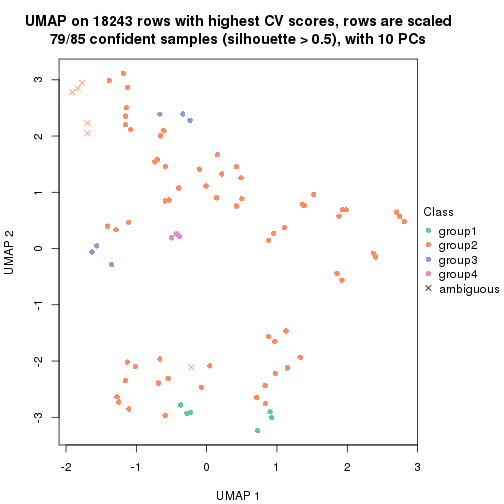
dimension_reduction(res, k = 5, method = "UMAP")
dimension_reduction(res, k = 6, method = "UMAP")
Following heatmap shows how subgroups are split when increasing k:
collect_classes(res)
If matrix rows can be associated to genes, consider to use GO_Enrichment(res,
...) to perform function enrichment for the signature genes.
The object with results only for a single top-value method and a single partition method can be extracted as:
res = res_list["CV", "kmeans"]
# you can also extract it by
# res = res_list["CV:kmeans"]
A summary of res and all the functions that can be applied to it:
res
#> A 'ConsensusPartition' object with k = 2, 3, 4, 5, 6.
#> On a matrix with 18243 rows and 85 columns.
#> Top rows (1000, 2000, 3000, 4000, 5000) are extracted by 'CV' method.
#> Subgroups are detected by 'kmeans' method.
#> Performed in total 1250 partitions by row resampling.
#> Best k for subgroups seems to be 3.
#>
#> Following methods can be applied to this 'ConsensusPartition' object:
#> [1] "cola_report" "collect_classes" "collect_plots"
#> [4] "collect_stats" "colnames" "compare_signatures"
#> [7] "consensus_heatmap" "dimension_reduction" "functional_enrichment"
#> [10] "get_anno_col" "get_anno" "get_classes"
#> [13] "get_consensus" "get_matrix" "get_membership"
#> [16] "get_param" "get_signatures" "get_stats"
#> [19] "is_best_k" "is_stable_k" "membership_heatmap"
#> [22] "ncol" "nrow" "plot_ecdf"
#> [25] "rownames" "select_partition_number" "show"
#> [28] "suggest_best_k" "test_to_known_factors"
collect_plots() function collects all the plots made from res for all k (number of partitions)
into one single page to provide an easy and fast comparison between different k.
collect_plots(res)
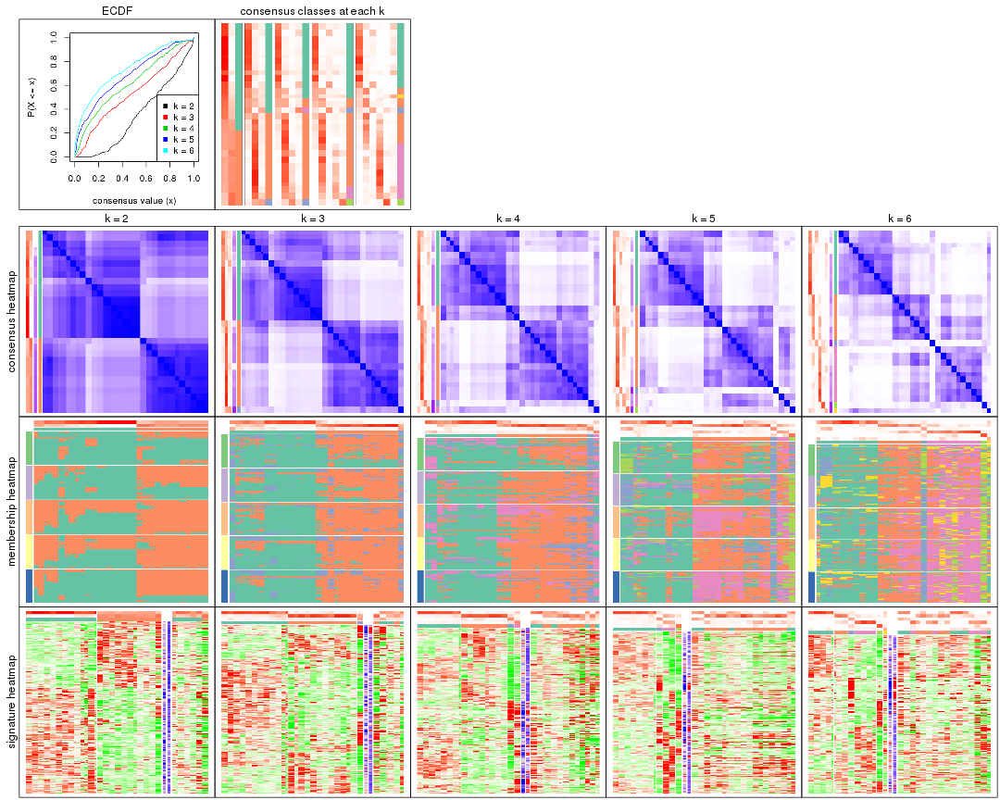
The plots are:
k and the heatmap of
predicted classes for each k.k.k.k.All the plots in panels can be made by individual functions and they are plotted later in this section.
select_partition_number() produces several plots showing different
statistics for choosing “optimized” k. There are following statistics:
k;k, the area increased is defined as \(A_k - A_{k-1}\).The detailed explanations of these statistics can be found in the cola vignette.
Generally speaking, lower PAC score, higher mean silhouette score or higher
concordance corresponds to better partition. Rand index and Jaccard index
measure how similar the current partition is compared to partition with k-1.
If they are too similar, we won't accept k is better than k-1.
select_partition_number(res)
The numeric values for all these statistics can be obtained by get_stats().
get_stats(res)
#> k 1-PAC mean_silhouette concordance area_increased Rand Jaccard
#> 2 2 0.220 0.590 0.711 0.3445 0.510 0.510
#> 3 3 0.189 0.601 0.770 0.5515 0.807 0.669
#> 4 4 0.301 0.497 0.692 0.1662 0.883 0.769
#> 5 5 0.322 0.337 0.597 0.1039 0.936 0.853
#> 6 6 0.452 0.463 0.650 0.0756 0.807 0.538
suggest_best_k() suggests the best \(k\) based on these statistics. The rules are as follows:
NA.suggest_best_k(res)
#> [1] 3
Following shows the table of the partitions (You need to click the show/hide
code output link to see it). The membership matrix (columns with name p*)
is inferred by
clue::cl_consensus()
function with the SE method. Basically the value in the membership matrix
represents the probability to belong to a certain group. The finall class
label for an item is determined with the group with highest probability it
belongs to.
In get_classes() function, the entropy is calculated from the membership
matrix and the silhouette score is calculated from the consensus matrix.
cbind(get_classes(res, k = 2), get_membership(res, k = 2))
#> class entropy silhouette p1 p2
#> ERR532547 2 0.9993 0.8135 0.484 0.516
#> ERR532548 2 0.9993 0.8135 0.484 0.516
#> ERR532549 2 0.9993 0.8135 0.484 0.516
#> ERR532576 1 0.4161 0.6624 0.916 0.084
#> ERR532577 1 0.4161 0.6624 0.916 0.084
#> ERR532578 1 0.4161 0.6624 0.916 0.084
#> ERR532593 1 0.4562 0.6539 0.904 0.096
#> ERR532594 1 0.4562 0.6539 0.904 0.096
#> ERR532595 1 0.4562 0.6539 0.904 0.096
#> ERR532596 2 0.9522 0.8015 0.372 0.628
#> ERR532597 2 0.9522 0.8015 0.372 0.628
#> ERR532598 2 0.9522 0.8015 0.372 0.628
#> ERR532599 2 0.9954 0.8374 0.460 0.540
#> ERR532600 2 0.9954 0.8374 0.460 0.540
#> ERR532601 2 0.9954 0.8374 0.460 0.540
#> ERR532602 1 0.0000 0.7203 1.000 0.000
#> ERR532603 1 0.0000 0.7203 1.000 0.000
#> ERR532604 1 0.0000 0.7203 1.000 0.000
#> ERR532605 1 0.0376 0.7197 0.996 0.004
#> ERR532606 1 0.0376 0.7197 0.996 0.004
#> ERR532607 1 0.0376 0.7197 0.996 0.004
#> ERR532608 1 0.8861 0.4492 0.696 0.304
#> ERR532609 1 0.8861 0.4492 0.696 0.304
#> ERR532610 1 0.8861 0.4492 0.696 0.304
#> ERR532611 1 0.0000 0.7203 1.000 0.000
#> ERR532612 1 0.0000 0.7203 1.000 0.000
#> ERR532613 1 0.0000 0.7203 1.000 0.000
#> ERR532550 1 0.1184 0.7150 0.984 0.016
#> ERR532551 1 0.8955 0.0246 0.688 0.312
#> ERR532552 1 0.8955 0.0246 0.688 0.312
#> ERR532553 1 0.8955 0.0246 0.688 0.312
#> ERR532554 2 0.9775 0.8378 0.412 0.588
#> ERR532555 2 0.9775 0.8378 0.412 0.588
#> ERR532556 2 0.9775 0.8378 0.412 0.588
#> ERR532557 2 0.9996 0.7911 0.488 0.512
#> ERR532558 2 0.9996 0.7911 0.488 0.512
#> ERR532559 2 0.9996 0.7911 0.488 0.512
#> ERR532560 1 0.0376 0.7196 0.996 0.004
#> ERR532561 1 0.0376 0.7196 0.996 0.004
#> ERR532562 1 0.0376 0.7196 0.996 0.004
#> ERR532563 2 0.9850 0.8530 0.428 0.572
#> ERR532564 2 0.9850 0.8530 0.428 0.572
#> ERR532565 2 0.9850 0.8530 0.428 0.572
#> ERR532566 2 0.8661 0.4408 0.288 0.712
#> ERR532567 2 0.8661 0.4408 0.288 0.712
#> ERR532568 2 0.8661 0.4408 0.288 0.712
#> ERR532569 1 0.0938 0.7170 0.988 0.012
#> ERR532570 1 0.0938 0.7170 0.988 0.012
#> ERR532571 1 0.0938 0.7170 0.988 0.012
#> ERR532572 2 0.9866 0.8536 0.432 0.568
#> ERR532573 2 0.9866 0.8536 0.432 0.568
#> ERR532574 2 0.9866 0.8536 0.432 0.568
#> ERR532575 1 0.7745 0.3811 0.772 0.228
#> ERR532579 1 0.6973 0.6076 0.812 0.188
#> ERR532580 1 0.6973 0.6076 0.812 0.188
#> ERR532581 2 0.9881 0.8527 0.436 0.564
#> ERR532582 2 0.9881 0.8527 0.436 0.564
#> ERR532583 2 0.9881 0.8527 0.436 0.564
#> ERR532584 2 0.9988 0.8131 0.480 0.520
#> ERR532585 2 0.9988 0.8131 0.480 0.520
#> ERR532586 2 0.9988 0.8131 0.480 0.520
#> ERR532587 2 0.9775 0.8459 0.412 0.588
#> ERR532588 2 0.9775 0.8459 0.412 0.588
#> ERR532589 1 0.9954 -0.6640 0.540 0.460
#> ERR532590 1 0.9954 -0.6640 0.540 0.460
#> ERR532591 1 0.6438 0.5629 0.836 0.164
#> ERR532592 1 0.6438 0.5629 0.836 0.164
#> ERR532439 1 0.9988 -0.7211 0.520 0.480
#> ERR532440 1 0.9988 -0.7211 0.520 0.480
#> ERR532441 1 0.9988 -0.7211 0.520 0.480
#> ERR532442 1 0.0376 0.7200 0.996 0.004
#> ERR532443 1 0.0376 0.7200 0.996 0.004
#> ERR532444 1 0.0376 0.7200 0.996 0.004
#> ERR532445 1 0.5737 0.6192 0.864 0.136
#> ERR532446 1 0.5737 0.6192 0.864 0.136
#> ERR532447 1 0.5737 0.6192 0.864 0.136
#> ERR532433 1 0.5946 0.5906 0.856 0.144
#> ERR532434 1 0.5946 0.5906 0.856 0.144
#> ERR532435 1 0.5946 0.5906 0.856 0.144
#> ERR532436 1 0.8386 0.2449 0.732 0.268
#> ERR532437 1 0.8386 0.2449 0.732 0.268
#> ERR532438 1 0.8386 0.2449 0.732 0.268
#> ERR532614 2 0.8861 0.7179 0.304 0.696
#> ERR532615 2 0.8861 0.7179 0.304 0.696
#> ERR532616 2 0.8861 0.7179 0.304 0.696
cbind(get_classes(res, k = 3), get_membership(res, k = 3))
#> class entropy silhouette p1 p2 p3
#> ERR532547 2 0.491 0.6589 0.088 0.844 0.068
#> ERR532548 2 0.491 0.6589 0.088 0.844 0.068
#> ERR532549 2 0.491 0.6589 0.088 0.844 0.068
#> ERR532576 1 0.714 0.6754 0.704 0.212 0.084
#> ERR532577 1 0.714 0.6754 0.704 0.212 0.084
#> ERR532578 1 0.714 0.6754 0.704 0.212 0.084
#> ERR532593 1 0.463 0.7070 0.856 0.056 0.088
#> ERR532594 1 0.463 0.7070 0.856 0.056 0.088
#> ERR532595 1 0.463 0.7070 0.856 0.056 0.088
#> ERR532596 2 0.296 0.5298 0.008 0.912 0.080
#> ERR532597 2 0.296 0.5298 0.008 0.912 0.080
#> ERR532598 2 0.296 0.5298 0.008 0.912 0.080
#> ERR532599 2 0.409 0.6772 0.068 0.880 0.052
#> ERR532600 2 0.409 0.6772 0.068 0.880 0.052
#> ERR532601 2 0.409 0.6772 0.068 0.880 0.052
#> ERR532602 1 0.399 0.7675 0.872 0.108 0.020
#> ERR532603 1 0.399 0.7675 0.872 0.108 0.020
#> ERR532604 1 0.399 0.7675 0.872 0.108 0.020
#> ERR532605 1 0.375 0.7670 0.884 0.096 0.020
#> ERR532606 1 0.375 0.7670 0.884 0.096 0.020
#> ERR532607 1 0.375 0.7670 0.884 0.096 0.020
#> ERR532608 1 0.732 0.3000 0.548 0.032 0.420
#> ERR532609 1 0.732 0.3000 0.548 0.032 0.420
#> ERR532610 1 0.732 0.3000 0.548 0.032 0.420
#> ERR532611 1 0.397 0.7642 0.880 0.088 0.032
#> ERR532612 1 0.397 0.7642 0.880 0.088 0.032
#> ERR532613 1 0.397 0.7642 0.880 0.088 0.032
#> ERR532550 1 0.523 0.7606 0.828 0.104 0.068
#> ERR532551 2 0.901 0.1779 0.360 0.500 0.140
#> ERR532552 2 0.901 0.1779 0.360 0.500 0.140
#> ERR532553 2 0.901 0.1779 0.360 0.500 0.140
#> ERR532554 2 0.397 0.5661 0.024 0.876 0.100
#> ERR532555 2 0.397 0.5661 0.024 0.876 0.100
#> ERR532556 2 0.397 0.5661 0.024 0.876 0.100
#> ERR532557 2 0.618 0.6324 0.112 0.780 0.108
#> ERR532558 2 0.618 0.6324 0.112 0.780 0.108
#> ERR532559 2 0.618 0.6324 0.112 0.780 0.108
#> ERR532560 1 0.393 0.7677 0.880 0.092 0.028
#> ERR532561 1 0.393 0.7677 0.880 0.092 0.028
#> ERR532562 1 0.393 0.7677 0.880 0.092 0.028
#> ERR532563 2 0.305 0.6528 0.020 0.916 0.064
#> ERR532564 2 0.305 0.6528 0.020 0.916 0.064
#> ERR532565 2 0.305 0.6528 0.020 0.916 0.064
#> ERR532566 3 0.845 1.0000 0.088 0.432 0.480
#> ERR532567 3 0.845 1.0000 0.088 0.432 0.480
#> ERR532568 3 0.845 1.0000 0.088 0.432 0.480
#> ERR532569 1 0.517 0.7611 0.828 0.116 0.056
#> ERR532570 1 0.517 0.7611 0.828 0.116 0.056
#> ERR532571 1 0.517 0.7611 0.828 0.116 0.056
#> ERR532572 2 0.148 0.6526 0.020 0.968 0.012
#> ERR532573 2 0.148 0.6526 0.020 0.968 0.012
#> ERR532574 2 0.148 0.6526 0.020 0.968 0.012
#> ERR532575 1 0.902 0.2805 0.480 0.384 0.136
#> ERR532579 1 0.858 0.5786 0.604 0.224 0.172
#> ERR532580 1 0.858 0.5786 0.604 0.224 0.172
#> ERR532581 2 0.140 0.6621 0.028 0.968 0.004
#> ERR532582 2 0.140 0.6621 0.028 0.968 0.004
#> ERR532583 2 0.140 0.6621 0.028 0.968 0.004
#> ERR532584 2 0.611 0.6441 0.112 0.784 0.104
#> ERR532585 2 0.611 0.6441 0.112 0.784 0.104
#> ERR532586 2 0.611 0.6441 0.112 0.784 0.104
#> ERR532587 2 0.165 0.6079 0.004 0.960 0.036
#> ERR532588 2 0.165 0.6079 0.004 0.960 0.036
#> ERR532589 2 0.631 0.6042 0.148 0.768 0.084
#> ERR532590 2 0.631 0.6042 0.148 0.768 0.084
#> ERR532591 1 0.875 0.4914 0.560 0.300 0.140
#> ERR532592 1 0.875 0.4914 0.560 0.300 0.140
#> ERR532439 2 0.765 0.5022 0.196 0.680 0.124
#> ERR532440 2 0.765 0.5022 0.196 0.680 0.124
#> ERR532441 2 0.765 0.5022 0.196 0.680 0.124
#> ERR532442 1 0.367 0.7673 0.888 0.092 0.020
#> ERR532443 1 0.367 0.7673 0.888 0.092 0.020
#> ERR532444 1 0.367 0.7673 0.888 0.092 0.020
#> ERR532445 1 0.563 0.6367 0.792 0.044 0.164
#> ERR532446 1 0.563 0.6367 0.792 0.044 0.164
#> ERR532447 1 0.563 0.6367 0.792 0.044 0.164
#> ERR532433 1 0.860 0.5216 0.580 0.284 0.136
#> ERR532434 1 0.860 0.5216 0.580 0.284 0.136
#> ERR532435 1 0.860 0.5216 0.580 0.284 0.136
#> ERR532436 1 0.924 0.3844 0.492 0.340 0.168
#> ERR532437 1 0.924 0.3844 0.492 0.340 0.168
#> ERR532438 1 0.924 0.3844 0.492 0.340 0.168
#> ERR532614 2 0.582 -0.0131 0.020 0.744 0.236
#> ERR532615 2 0.582 -0.0131 0.020 0.744 0.236
#> ERR532616 2 0.582 -0.0131 0.020 0.744 0.236
cbind(get_classes(res, k = 4), get_membership(res, k = 4))
#> class entropy silhouette p1 p2 p3 p4
#> ERR532547 2 0.489 0.57899 0.084 0.808 0.084 0.024
#> ERR532548 2 0.489 0.57899 0.084 0.808 0.084 0.024
#> ERR532549 2 0.489 0.57899 0.084 0.808 0.084 0.024
#> ERR532576 1 0.678 0.57935 0.668 0.204 0.044 0.084
#> ERR532577 1 0.678 0.57935 0.668 0.204 0.044 0.084
#> ERR532578 1 0.678 0.57935 0.668 0.204 0.044 0.084
#> ERR532593 1 0.486 0.34724 0.744 0.008 0.020 0.228
#> ERR532594 1 0.486 0.34724 0.744 0.008 0.020 0.228
#> ERR532595 1 0.486 0.34724 0.744 0.008 0.020 0.228
#> ERR532596 2 0.562 0.37123 0.008 0.640 0.328 0.024
#> ERR532597 2 0.562 0.37123 0.008 0.640 0.328 0.024
#> ERR532598 2 0.562 0.37123 0.008 0.640 0.328 0.024
#> ERR532599 2 0.277 0.60443 0.044 0.908 0.044 0.004
#> ERR532600 2 0.277 0.60443 0.044 0.908 0.044 0.004
#> ERR532601 2 0.277 0.60443 0.044 0.908 0.044 0.004
#> ERR532602 1 0.447 0.67282 0.832 0.084 0.024 0.060
#> ERR532603 1 0.447 0.67282 0.832 0.084 0.024 0.060
#> ERR532604 1 0.447 0.67282 0.832 0.084 0.024 0.060
#> ERR532605 1 0.357 0.66968 0.876 0.064 0.016 0.044
#> ERR532606 1 0.357 0.66968 0.876 0.064 0.016 0.044
#> ERR532607 1 0.357 0.66968 0.876 0.064 0.016 0.044
#> ERR532608 4 0.736 1.00000 0.280 0.044 0.088 0.588
#> ERR532609 4 0.736 1.00000 0.280 0.044 0.088 0.588
#> ERR532610 4 0.736 1.00000 0.280 0.044 0.088 0.588
#> ERR532611 1 0.465 0.65176 0.824 0.056 0.032 0.088
#> ERR532612 1 0.465 0.65176 0.824 0.056 0.032 0.088
#> ERR532613 1 0.465 0.65176 0.824 0.056 0.032 0.088
#> ERR532550 1 0.475 0.65952 0.808 0.120 0.020 0.052
#> ERR532551 2 0.692 0.25650 0.316 0.576 0.012 0.096
#> ERR532552 2 0.692 0.25650 0.316 0.576 0.012 0.096
#> ERR532553 2 0.692 0.25650 0.316 0.576 0.012 0.096
#> ERR532554 2 0.666 0.37463 0.016 0.604 0.308 0.072
#> ERR532555 2 0.666 0.37463 0.016 0.604 0.308 0.072
#> ERR532556 2 0.666 0.37463 0.016 0.604 0.308 0.072
#> ERR532557 2 0.415 0.57730 0.096 0.844 0.020 0.040
#> ERR532558 2 0.415 0.57730 0.096 0.844 0.020 0.040
#> ERR532559 2 0.415 0.57730 0.096 0.844 0.020 0.040
#> ERR532560 1 0.319 0.66579 0.888 0.056 0.004 0.052
#> ERR532561 1 0.319 0.66579 0.888 0.056 0.004 0.052
#> ERR532562 1 0.319 0.66579 0.888 0.056 0.004 0.052
#> ERR532563 2 0.484 0.55288 0.004 0.780 0.160 0.056
#> ERR532564 2 0.484 0.55288 0.004 0.780 0.160 0.056
#> ERR532565 2 0.484 0.55288 0.004 0.780 0.160 0.056
#> ERR532566 3 0.777 1.00000 0.048 0.216 0.584 0.152
#> ERR532567 3 0.777 1.00000 0.048 0.216 0.584 0.152
#> ERR532568 3 0.777 1.00000 0.048 0.216 0.584 0.152
#> ERR532569 1 0.482 0.67269 0.812 0.100 0.028 0.060
#> ERR532570 1 0.482 0.67269 0.812 0.100 0.028 0.060
#> ERR532571 1 0.482 0.67269 0.812 0.100 0.028 0.060
#> ERR532572 2 0.389 0.54787 0.000 0.796 0.196 0.008
#> ERR532573 2 0.389 0.54787 0.000 0.796 0.196 0.008
#> ERR532574 2 0.389 0.54787 0.000 0.796 0.196 0.008
#> ERR532575 2 0.742 -0.12811 0.432 0.456 0.028 0.084
#> ERR532579 1 0.882 0.29816 0.512 0.192 0.132 0.164
#> ERR532580 1 0.882 0.29816 0.512 0.192 0.132 0.164
#> ERR532581 2 0.424 0.56841 0.012 0.808 0.164 0.016
#> ERR532582 2 0.424 0.56841 0.012 0.808 0.164 0.016
#> ERR532583 2 0.424 0.56841 0.012 0.808 0.164 0.016
#> ERR532584 2 0.302 0.59469 0.072 0.896 0.020 0.012
#> ERR532585 2 0.302 0.59469 0.072 0.896 0.020 0.012
#> ERR532586 2 0.302 0.59469 0.072 0.896 0.020 0.012
#> ERR532587 2 0.509 0.49519 0.008 0.724 0.244 0.024
#> ERR532588 2 0.509 0.49519 0.008 0.724 0.244 0.024
#> ERR532589 2 0.466 0.56552 0.104 0.820 0.044 0.032
#> ERR532590 2 0.466 0.56552 0.104 0.820 0.044 0.032
#> ERR532591 1 0.809 0.44081 0.576 0.212 0.112 0.100
#> ERR532592 1 0.809 0.44081 0.576 0.212 0.112 0.100
#> ERR532439 2 0.572 0.49730 0.168 0.736 0.016 0.080
#> ERR532440 2 0.572 0.49730 0.168 0.736 0.016 0.080
#> ERR532441 2 0.572 0.49730 0.168 0.736 0.016 0.080
#> ERR532442 1 0.335 0.66826 0.880 0.056 0.004 0.060
#> ERR532443 1 0.335 0.66826 0.880 0.056 0.004 0.060
#> ERR532444 1 0.335 0.66826 0.880 0.056 0.004 0.060
#> ERR532445 1 0.521 0.08569 0.648 0.012 0.004 0.336
#> ERR532446 1 0.521 0.08569 0.648 0.012 0.004 0.336
#> ERR532447 1 0.521 0.08569 0.648 0.012 0.004 0.336
#> ERR532433 1 0.712 0.30343 0.504 0.384 0.008 0.104
#> ERR532434 1 0.712 0.30343 0.504 0.384 0.008 0.104
#> ERR532435 1 0.712 0.30343 0.504 0.384 0.008 0.104
#> ERR532436 2 0.763 -0.13746 0.424 0.436 0.020 0.120
#> ERR532437 2 0.763 -0.13746 0.424 0.436 0.020 0.120
#> ERR532438 2 0.763 -0.13746 0.424 0.436 0.020 0.120
#> ERR532614 2 0.621 0.00182 0.008 0.520 0.436 0.036
#> ERR532615 2 0.621 0.00182 0.008 0.520 0.436 0.036
#> ERR532616 2 0.621 0.00182 0.008 0.520 0.436 0.036
cbind(get_classes(res, k = 5), get_membership(res, k = 5))
#> class entropy silhouette p1 p2 p3 p4 p5
#> ERR532547 2 0.561 0.26113 0.108 0.708 0.020 0.152 0.012
#> ERR532548 2 0.561 0.26113 0.108 0.708 0.020 0.152 0.012
#> ERR532549 2 0.561 0.26113 0.108 0.708 0.020 0.152 0.012
#> ERR532576 1 0.706 0.50879 0.620 0.180 0.060 0.096 0.044
#> ERR532577 1 0.706 0.50879 0.620 0.180 0.060 0.096 0.044
#> ERR532578 1 0.706 0.50879 0.620 0.180 0.060 0.096 0.044
#> ERR532593 1 0.547 0.26085 0.604 0.000 0.336 0.036 0.024
#> ERR532594 1 0.547 0.26085 0.604 0.000 0.336 0.036 0.024
#> ERR532595 1 0.547 0.26085 0.604 0.000 0.336 0.036 0.024
#> ERR532596 2 0.697 -0.51432 0.004 0.448 0.024 0.376 0.148
#> ERR532597 2 0.697 -0.51432 0.004 0.448 0.024 0.376 0.148
#> ERR532598 2 0.697 -0.51432 0.004 0.448 0.024 0.376 0.148
#> ERR532599 2 0.357 0.26685 0.032 0.836 0.008 0.120 0.004
#> ERR532600 2 0.357 0.26685 0.032 0.836 0.008 0.120 0.004
#> ERR532601 2 0.357 0.26685 0.032 0.836 0.008 0.120 0.004
#> ERR532602 1 0.346 0.62709 0.872 0.040 0.036 0.032 0.020
#> ERR532603 1 0.346 0.62709 0.872 0.040 0.036 0.032 0.020
#> ERR532604 1 0.346 0.62709 0.872 0.040 0.036 0.032 0.020
#> ERR532605 1 0.347 0.61827 0.872 0.024 0.032 0.036 0.036
#> ERR532606 1 0.347 0.61827 0.872 0.024 0.032 0.036 0.036
#> ERR532607 1 0.347 0.61827 0.872 0.024 0.032 0.036 0.036
#> ERR532608 3 0.759 1.00000 0.168 0.040 0.544 0.044 0.204
#> ERR532609 3 0.759 1.00000 0.168 0.040 0.544 0.044 0.204
#> ERR532610 3 0.759 1.00000 0.168 0.040 0.544 0.044 0.204
#> ERR532611 1 0.451 0.59456 0.812 0.016 0.048 0.056 0.068
#> ERR532612 1 0.451 0.59456 0.812 0.016 0.048 0.056 0.068
#> ERR532613 1 0.451 0.59456 0.812 0.016 0.048 0.056 0.068
#> ERR532550 1 0.418 0.61959 0.816 0.068 0.092 0.016 0.008
#> ERR532551 2 0.672 0.30376 0.296 0.572 0.040 0.068 0.024
#> ERR532552 2 0.672 0.30376 0.296 0.572 0.040 0.068 0.024
#> ERR532553 2 0.672 0.30376 0.296 0.572 0.040 0.068 0.024
#> ERR532554 4 0.584 0.58046 0.008 0.456 0.044 0.480 0.012
#> ERR532555 4 0.584 0.58046 0.008 0.456 0.044 0.480 0.012
#> ERR532556 4 0.584 0.58046 0.008 0.456 0.044 0.480 0.012
#> ERR532557 2 0.498 0.41549 0.112 0.776 0.020 0.056 0.036
#> ERR532558 2 0.498 0.41549 0.112 0.776 0.020 0.056 0.036
#> ERR532559 2 0.498 0.41549 0.112 0.776 0.020 0.056 0.036
#> ERR532560 1 0.299 0.62073 0.868 0.024 0.100 0.008 0.000
#> ERR532561 1 0.299 0.62073 0.868 0.024 0.100 0.008 0.000
#> ERR532562 1 0.299 0.62073 0.868 0.024 0.100 0.008 0.000
#> ERR532563 2 0.514 -0.09588 0.008 0.624 0.024 0.336 0.008
#> ERR532564 2 0.514 -0.09588 0.008 0.624 0.024 0.336 0.008
#> ERR532565 2 0.514 -0.09588 0.008 0.624 0.024 0.336 0.008
#> ERR532566 5 0.570 0.99720 0.020 0.180 0.020 0.080 0.700
#> ERR532567 5 0.564 0.99860 0.020 0.180 0.020 0.076 0.704
#> ERR532568 5 0.564 0.99860 0.020 0.180 0.020 0.076 0.704
#> ERR532569 1 0.515 0.61025 0.772 0.056 0.088 0.064 0.020
#> ERR532570 1 0.515 0.61025 0.772 0.056 0.088 0.064 0.020
#> ERR532571 1 0.515 0.61025 0.772 0.056 0.088 0.064 0.020
#> ERR532572 2 0.413 -0.17950 0.004 0.656 0.000 0.340 0.000
#> ERR532573 2 0.413 -0.17950 0.004 0.656 0.000 0.340 0.000
#> ERR532574 2 0.413 -0.17950 0.004 0.656 0.000 0.340 0.000
#> ERR532575 2 0.636 0.09810 0.400 0.508 0.032 0.044 0.016
#> ERR532579 1 0.917 0.19946 0.408 0.180 0.088 0.144 0.180
#> ERR532580 1 0.917 0.19946 0.408 0.180 0.088 0.144 0.180
#> ERR532581 2 0.488 -0.08655 0.012 0.688 0.028 0.268 0.004
#> ERR532582 2 0.488 -0.08655 0.012 0.688 0.028 0.268 0.004
#> ERR532583 2 0.488 -0.08655 0.012 0.688 0.028 0.268 0.004
#> ERR532584 2 0.223 0.41163 0.092 0.900 0.004 0.000 0.004
#> ERR532585 2 0.223 0.41163 0.092 0.900 0.004 0.000 0.004
#> ERR532586 2 0.223 0.41163 0.092 0.900 0.004 0.000 0.004
#> ERR532587 2 0.498 -0.33731 0.004 0.556 0.016 0.420 0.004
#> ERR532588 2 0.498 -0.33731 0.004 0.556 0.016 0.420 0.004
#> ERR532589 2 0.469 0.38858 0.124 0.784 0.020 0.056 0.016
#> ERR532590 2 0.469 0.38858 0.124 0.784 0.020 0.056 0.016
#> ERR532591 1 0.797 0.41375 0.536 0.160 0.076 0.176 0.052
#> ERR532592 1 0.797 0.41375 0.536 0.160 0.076 0.176 0.052
#> ERR532439 2 0.694 0.39191 0.192 0.624 0.048 0.088 0.048
#> ERR532440 2 0.694 0.39191 0.192 0.624 0.048 0.088 0.048
#> ERR532441 2 0.694 0.39191 0.192 0.624 0.048 0.088 0.048
#> ERR532442 1 0.278 0.62512 0.888 0.028 0.072 0.012 0.000
#> ERR532443 1 0.278 0.62512 0.888 0.028 0.072 0.012 0.000
#> ERR532444 1 0.278 0.62512 0.888 0.028 0.072 0.012 0.000
#> ERR532445 1 0.460 0.00453 0.504 0.000 0.488 0.004 0.004
#> ERR532446 1 0.460 0.00453 0.504 0.000 0.488 0.004 0.004
#> ERR532447 1 0.460 0.00453 0.504 0.000 0.488 0.004 0.004
#> ERR532433 1 0.735 0.03161 0.428 0.412 0.064 0.072 0.024
#> ERR532434 1 0.735 0.03161 0.428 0.412 0.064 0.072 0.024
#> ERR532435 1 0.735 0.03161 0.428 0.412 0.064 0.072 0.024
#> ERR532436 2 0.850 0.09038 0.320 0.416 0.100 0.096 0.068
#> ERR532437 2 0.850 0.09038 0.320 0.416 0.100 0.096 0.068
#> ERR532438 2 0.850 0.09038 0.320 0.416 0.100 0.096 0.068
#> ERR532614 4 0.762 0.52448 0.004 0.308 0.044 0.412 0.232
#> ERR532615 4 0.762 0.52448 0.004 0.308 0.044 0.412 0.232
#> ERR532616 4 0.762 0.52448 0.004 0.308 0.044 0.412 0.232
cbind(get_classes(res, k = 6), get_membership(res, k = 6))
#> class entropy silhouette p1 p2 p3 p4 p5 p6
#> ERR532547 4 0.697 0.1790 0.056 0.300 0.028 0.520 0.032 0.064
#> ERR532548 4 0.697 0.1790 0.056 0.300 0.028 0.520 0.032 0.064
#> ERR532549 4 0.697 0.1790 0.056 0.300 0.028 0.520 0.032 0.064
#> ERR532576 1 0.658 -0.1598 0.504 0.192 0.012 0.024 0.004 0.264
#> ERR532577 1 0.658 -0.1598 0.504 0.192 0.012 0.024 0.004 0.264
#> ERR532578 1 0.658 -0.1598 0.504 0.192 0.012 0.024 0.004 0.264
#> ERR532593 1 0.518 0.3968 0.624 0.016 0.296 0.000 0.012 0.052
#> ERR532594 1 0.518 0.3968 0.624 0.016 0.296 0.000 0.012 0.052
#> ERR532595 1 0.518 0.3968 0.624 0.016 0.296 0.000 0.012 0.052
#> ERR532596 4 0.549 0.4995 0.000 0.036 0.068 0.708 0.120 0.068
#> ERR532597 4 0.549 0.4995 0.000 0.036 0.068 0.708 0.120 0.068
#> ERR532598 4 0.549 0.4995 0.000 0.036 0.068 0.708 0.120 0.068
#> ERR532599 4 0.535 0.2517 0.020 0.292 0.008 0.628 0.024 0.028
#> ERR532600 4 0.535 0.2517 0.020 0.292 0.008 0.628 0.024 0.028
#> ERR532601 4 0.535 0.2517 0.020 0.292 0.008 0.628 0.024 0.028
#> ERR532602 1 0.462 0.5109 0.768 0.044 0.036 0.008 0.016 0.128
#> ERR532603 1 0.462 0.5109 0.768 0.044 0.036 0.008 0.016 0.128
#> ERR532604 1 0.462 0.5109 0.768 0.044 0.036 0.008 0.016 0.128
#> ERR532605 1 0.449 0.5476 0.772 0.040 0.068 0.000 0.012 0.108
#> ERR532606 1 0.449 0.5476 0.772 0.040 0.068 0.000 0.012 0.108
#> ERR532607 1 0.449 0.5476 0.772 0.040 0.068 0.000 0.012 0.108
#> ERR532608 3 0.802 0.9985 0.164 0.088 0.452 0.008 0.208 0.080
#> ERR532609 3 0.802 0.9985 0.164 0.088 0.452 0.008 0.208 0.080
#> ERR532610 3 0.804 0.9970 0.164 0.092 0.452 0.008 0.204 0.080
#> ERR532611 1 0.504 0.4941 0.708 0.044 0.064 0.000 0.008 0.176
#> ERR532612 1 0.504 0.4941 0.708 0.044 0.064 0.000 0.008 0.176
#> ERR532613 1 0.504 0.4941 0.708 0.044 0.064 0.000 0.008 0.176
#> ERR532550 1 0.351 0.5239 0.836 0.104 0.020 0.004 0.012 0.024
#> ERR532551 2 0.488 0.6323 0.128 0.704 0.000 0.152 0.008 0.008
#> ERR532552 2 0.488 0.6323 0.128 0.704 0.000 0.152 0.008 0.008
#> ERR532553 2 0.488 0.6323 0.128 0.704 0.000 0.152 0.008 0.008
#> ERR532554 4 0.605 0.4444 0.008 0.072 0.024 0.612 0.036 0.248
#> ERR532555 4 0.605 0.4444 0.008 0.072 0.024 0.612 0.036 0.248
#> ERR532556 4 0.605 0.4444 0.008 0.072 0.024 0.612 0.036 0.248
#> ERR532557 2 0.626 0.4725 0.048 0.532 0.036 0.344 0.012 0.028
#> ERR532558 2 0.626 0.4725 0.048 0.532 0.036 0.344 0.012 0.028
#> ERR532559 2 0.626 0.4725 0.048 0.532 0.036 0.344 0.012 0.028
#> ERR532560 1 0.168 0.5834 0.936 0.032 0.024 0.000 0.000 0.008
#> ERR532561 1 0.168 0.5834 0.936 0.032 0.024 0.000 0.000 0.008
#> ERR532562 1 0.168 0.5834 0.936 0.032 0.024 0.000 0.000 0.008
#> ERR532563 4 0.530 0.5320 0.004 0.176 0.036 0.704 0.032 0.048
#> ERR532564 4 0.530 0.5320 0.004 0.176 0.036 0.704 0.032 0.048
#> ERR532565 4 0.530 0.5320 0.004 0.176 0.036 0.704 0.032 0.048
#> ERR532566 5 0.360 1.0000 0.016 0.068 0.000 0.080 0.828 0.008
#> ERR532567 5 0.360 1.0000 0.016 0.068 0.000 0.080 0.828 0.008
#> ERR532568 5 0.360 1.0000 0.016 0.068 0.000 0.080 0.828 0.008
#> ERR532569 1 0.443 0.4672 0.772 0.080 0.012 0.004 0.016 0.116
#> ERR532570 1 0.443 0.4672 0.772 0.080 0.012 0.004 0.016 0.116
#> ERR532571 1 0.443 0.4672 0.772 0.080 0.012 0.004 0.016 0.116
#> ERR532572 4 0.201 0.6122 0.000 0.068 0.000 0.908 0.000 0.024
#> ERR532573 4 0.201 0.6122 0.000 0.068 0.000 0.908 0.000 0.024
#> ERR532574 4 0.201 0.6122 0.000 0.068 0.000 0.908 0.000 0.024
#> ERR532575 2 0.611 0.5134 0.196 0.608 0.004 0.132 0.004 0.056
#> ERR532579 6 0.803 1.0000 0.244 0.160 0.016 0.044 0.104 0.432
#> ERR532580 6 0.803 1.0000 0.244 0.160 0.016 0.044 0.104 0.432
#> ERR532581 4 0.376 0.5742 0.012 0.116 0.016 0.820 0.012 0.024
#> ERR532582 4 0.376 0.5742 0.012 0.116 0.016 0.820 0.012 0.024
#> ERR532583 4 0.376 0.5742 0.012 0.116 0.016 0.820 0.012 0.024
#> ERR532584 2 0.568 0.2607 0.024 0.472 0.008 0.448 0.016 0.032
#> ERR532585 2 0.568 0.2607 0.024 0.472 0.008 0.448 0.016 0.032
#> ERR532586 2 0.568 0.2607 0.024 0.472 0.008 0.448 0.016 0.032
#> ERR532587 4 0.311 0.6118 0.000 0.024 0.032 0.868 0.016 0.060
#> ERR532588 4 0.311 0.6118 0.000 0.024 0.032 0.868 0.016 0.060
#> ERR532589 2 0.656 0.2758 0.052 0.440 0.004 0.416 0.036 0.052
#> ERR532590 2 0.656 0.2758 0.052 0.440 0.004 0.416 0.036 0.052
#> ERR532591 1 0.738 -0.2582 0.444 0.088 0.036 0.076 0.016 0.340
#> ERR532592 1 0.738 -0.2582 0.444 0.088 0.036 0.076 0.016 0.340
#> ERR532439 2 0.561 0.6119 0.076 0.648 0.028 0.228 0.008 0.012
#> ERR532440 2 0.561 0.6119 0.076 0.648 0.028 0.228 0.008 0.012
#> ERR532441 2 0.561 0.6119 0.076 0.648 0.028 0.228 0.008 0.012
#> ERR532442 1 0.197 0.5801 0.916 0.064 0.012 0.000 0.004 0.004
#> ERR532443 1 0.197 0.5801 0.916 0.064 0.012 0.000 0.004 0.004
#> ERR532444 1 0.197 0.5801 0.916 0.064 0.012 0.000 0.004 0.004
#> ERR532445 1 0.425 0.2348 0.576 0.008 0.408 0.000 0.008 0.000
#> ERR532446 1 0.425 0.2348 0.576 0.008 0.408 0.000 0.008 0.000
#> ERR532447 1 0.425 0.2348 0.576 0.008 0.408 0.000 0.008 0.000
#> ERR532433 2 0.546 0.4503 0.288 0.616 0.020 0.060 0.004 0.012
#> ERR532434 2 0.546 0.4503 0.288 0.616 0.020 0.060 0.004 0.012
#> ERR532435 2 0.546 0.4503 0.288 0.616 0.020 0.060 0.004 0.012
#> ERR532436 2 0.639 0.4354 0.228 0.596 0.080 0.064 0.004 0.028
#> ERR532437 2 0.639 0.4354 0.228 0.596 0.080 0.064 0.004 0.028
#> ERR532438 2 0.639 0.4354 0.228 0.596 0.080 0.064 0.004 0.028
#> ERR532614 4 0.725 0.0770 0.000 0.052 0.068 0.488 0.268 0.124
#> ERR532615 4 0.726 0.0768 0.000 0.056 0.068 0.488 0.268 0.120
#> ERR532616 4 0.725 0.0770 0.000 0.052 0.068 0.488 0.268 0.124
Heatmaps for the consensus matrix. It visualizes the probability of two samples to be in a same group.
consensus_heatmap(res, k = 2)
consensus_heatmap(res, k = 3)
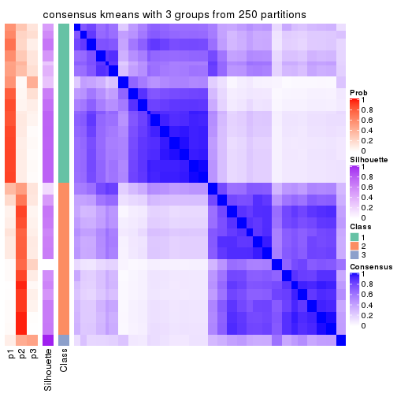
consensus_heatmap(res, k = 4)
consensus_heatmap(res, k = 5)
consensus_heatmap(res, k = 6)
Heatmaps for the membership of samples in all partitions to see how consistent they are:
membership_heatmap(res, k = 2)
membership_heatmap(res, k = 3)
membership_heatmap(res, k = 4)
membership_heatmap(res, k = 5)
membership_heatmap(res, k = 6)
As soon as we have had the classes for columns, we can look for signatures which are significantly different between classes which can be candidate marks for certain classes. Following are the heatmaps for signatures.
Signature heatmaps where rows are scaled:
get_signatures(res, k = 2)
get_signatures(res, k = 3)
get_signatures(res, k = 4)
get_signatures(res, k = 5)
get_signatures(res, k = 6)
Signature heatmaps where rows are not scaled:
get_signatures(res, k = 2, scale_rows = FALSE)
get_signatures(res, k = 3, scale_rows = FALSE)
get_signatures(res, k = 4, scale_rows = FALSE)
get_signatures(res, k = 5, scale_rows = FALSE)
get_signatures(res, k = 6, scale_rows = FALSE)
Compare the overlap of signatures from different k:
compare_signatures(res)
get_signature() returns a data frame invisibly. TO get the list of signatures, the function
call should be assigned to a variable explicitly. In following code, if plot argument is set
to FALSE, no heatmap is plotted while only the differential analysis is performed.
# code only for demonstration
tb = get_signature(res, k = ..., plot = FALSE)
An example of the output of tb is:
#> which_row fdr mean_1 mean_2 scaled_mean_1 scaled_mean_2 km
#> 1 38 0.042760348 8.373488 9.131774 -0.5533452 0.5164555 1
#> 2 40 0.018707592 7.106213 8.469186 -0.6173731 0.5762149 1
#> 3 55 0.019134737 10.221463 11.207825 -0.6159697 0.5749050 1
#> 4 59 0.006059896 5.921854 7.869574 -0.6899429 0.6439467 1
#> 5 60 0.018055526 8.928898 10.211722 -0.6204761 0.5791110 1
#> 6 98 0.009384629 15.714769 14.887706 0.6635654 -0.6193277 2
...
The columns in tb are:
which_row: row indices corresponding to the input matrix.fdr: FDR for the differential test. mean_x: The mean value in group x.scaled_mean_x: The mean value in group x after rows are scaled.km: Row groups if k-means clustering is applied to rows.UMAP plot which shows how samples are separated.
dimension_reduction(res, k = 2, method = "UMAP")
dimension_reduction(res, k = 3, method = "UMAP")
dimension_reduction(res, k = 4, method = "UMAP")
dimension_reduction(res, k = 5, method = "UMAP")
dimension_reduction(res, k = 6, method = "UMAP")
Following heatmap shows how subgroups are split when increasing k:
collect_classes(res)
If matrix rows can be associated to genes, consider to use GO_Enrichment(res,
...) to perform function enrichment for the signature genes.
The object with results only for a single top-value method and a single partition method can be extracted as:
res = res_list["CV", "skmeans"]
# you can also extract it by
# res = res_list["CV:skmeans"]
A summary of res and all the functions that can be applied to it:
res
#> A 'ConsensusPartition' object with k = 2, 3, 4, 5, 6.
#> On a matrix with 18243 rows and 85 columns.
#> Top rows (1000, 2000, 3000, 4000, 5000) are extracted by 'CV' method.
#> Subgroups are detected by 'skmeans' method.
#> Performed in total 1250 partitions by row resampling.
#> Best k for subgroups seems to be 2.
#>
#> Following methods can be applied to this 'ConsensusPartition' object:
#> [1] "cola_report" "collect_classes" "collect_plots"
#> [4] "collect_stats" "colnames" "compare_signatures"
#> [7] "consensus_heatmap" "dimension_reduction" "functional_enrichment"
#> [10] "get_anno_col" "get_anno" "get_classes"
#> [13] "get_consensus" "get_matrix" "get_membership"
#> [16] "get_param" "get_signatures" "get_stats"
#> [19] "is_best_k" "is_stable_k" "membership_heatmap"
#> [22] "ncol" "nrow" "plot_ecdf"
#> [25] "rownames" "select_partition_number" "show"
#> [28] "suggest_best_k" "test_to_known_factors"
collect_plots() function collects all the plots made from res for all k (number of partitions)
into one single page to provide an easy and fast comparison between different k.
collect_plots(res)
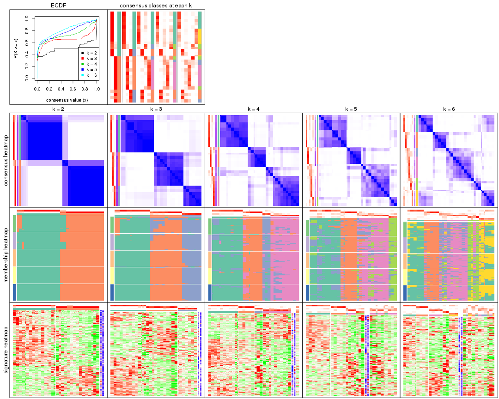
The plots are:
k and the heatmap of
predicted classes for each k.k.k.k.All the plots in panels can be made by individual functions and they are plotted later in this section.
select_partition_number() produces several plots showing different
statistics for choosing “optimized” k. There are following statistics:
k;k, the area increased is defined as \(A_k - A_{k-1}\).The detailed explanations of these statistics can be found in the cola vignette.
Generally speaking, lower PAC score, higher mean silhouette score or higher
concordance corresponds to better partition. Rand index and Jaccard index
measure how similar the current partition is compared to partition with k-1.
If they are too similar, we won't accept k is better than k-1.
select_partition_number(res)
The numeric values for all these statistics can be obtained by get_stats().
get_stats(res)
#> k 1-PAC mean_silhouette concordance area_increased Rand Jaccard
#> 2 2 0.765 0.930 0.967 0.5060 0.494 0.494
#> 3 3 0.812 0.911 0.931 0.2964 0.804 0.621
#> 4 4 0.689 0.797 0.878 0.1121 0.930 0.800
#> 5 5 0.683 0.539 0.760 0.0708 0.950 0.837
#> 6 6 0.683 0.556 0.714 0.0474 0.864 0.532
suggest_best_k() suggests the best \(k\) based on these statistics. The rules are as follows:
NA.suggest_best_k(res)
#> [1] 2
Following shows the table of the partitions (You need to click the show/hide
code output link to see it). The membership matrix (columns with name p*)
is inferred by
clue::cl_consensus()
function with the SE method. Basically the value in the membership matrix
represents the probability to belong to a certain group. The finall class
label for an item is determined with the group with highest probability it
belongs to.
In get_classes() function, the entropy is calculated from the membership
matrix and the silhouette score is calculated from the consensus matrix.
cbind(get_classes(res, k = 2), get_membership(res, k = 2))
#> class entropy silhouette p1 p2
#> ERR532547 2 0.0000 0.957 0.000 1.000
#> ERR532548 2 0.0000 0.957 0.000 1.000
#> ERR532549 2 0.0000 0.957 0.000 1.000
#> ERR532576 1 0.0000 0.971 1.000 0.000
#> ERR532577 1 0.0000 0.971 1.000 0.000
#> ERR532578 1 0.0000 0.971 1.000 0.000
#> ERR532593 1 0.0000 0.971 1.000 0.000
#> ERR532594 1 0.0000 0.971 1.000 0.000
#> ERR532595 1 0.0000 0.971 1.000 0.000
#> ERR532596 2 0.0000 0.957 0.000 1.000
#> ERR532597 2 0.0000 0.957 0.000 1.000
#> ERR532598 2 0.0000 0.957 0.000 1.000
#> ERR532599 2 0.0000 0.957 0.000 1.000
#> ERR532600 2 0.0000 0.957 0.000 1.000
#> ERR532601 2 0.0000 0.957 0.000 1.000
#> ERR532602 1 0.0000 0.971 1.000 0.000
#> ERR532603 1 0.0000 0.971 1.000 0.000
#> ERR532604 1 0.0000 0.971 1.000 0.000
#> ERR532605 1 0.0000 0.971 1.000 0.000
#> ERR532606 1 0.0000 0.971 1.000 0.000
#> ERR532607 1 0.0000 0.971 1.000 0.000
#> ERR532608 1 0.6343 0.819 0.840 0.160
#> ERR532609 1 0.6343 0.819 0.840 0.160
#> ERR532610 1 0.6343 0.819 0.840 0.160
#> ERR532611 1 0.0000 0.971 1.000 0.000
#> ERR532612 1 0.0000 0.971 1.000 0.000
#> ERR532613 1 0.0000 0.971 1.000 0.000
#> ERR532550 1 0.0000 0.971 1.000 0.000
#> ERR532551 2 0.8661 0.649 0.288 0.712
#> ERR532552 2 0.8661 0.649 0.288 0.712
#> ERR532553 2 0.8661 0.649 0.288 0.712
#> ERR532554 2 0.0000 0.957 0.000 1.000
#> ERR532555 2 0.0000 0.957 0.000 1.000
#> ERR532556 2 0.0000 0.957 0.000 1.000
#> ERR532557 2 0.0376 0.954 0.004 0.996
#> ERR532558 2 0.0376 0.954 0.004 0.996
#> ERR532559 2 0.0376 0.954 0.004 0.996
#> ERR532560 1 0.0000 0.971 1.000 0.000
#> ERR532561 1 0.0000 0.971 1.000 0.000
#> ERR532562 1 0.0000 0.971 1.000 0.000
#> ERR532563 2 0.0000 0.957 0.000 1.000
#> ERR532564 2 0.0000 0.957 0.000 1.000
#> ERR532565 2 0.0000 0.957 0.000 1.000
#> ERR532566 2 0.0000 0.957 0.000 1.000
#> ERR532567 2 0.0000 0.957 0.000 1.000
#> ERR532568 2 0.0000 0.957 0.000 1.000
#> ERR532569 1 0.0000 0.971 1.000 0.000
#> ERR532570 1 0.0000 0.971 1.000 0.000
#> ERR532571 1 0.0000 0.971 1.000 0.000
#> ERR532572 2 0.0000 0.957 0.000 1.000
#> ERR532573 2 0.0000 0.957 0.000 1.000
#> ERR532574 2 0.0000 0.957 0.000 1.000
#> ERR532575 1 0.0000 0.971 1.000 0.000
#> ERR532579 1 0.7299 0.760 0.796 0.204
#> ERR532580 1 0.7299 0.760 0.796 0.204
#> ERR532581 2 0.0000 0.957 0.000 1.000
#> ERR532582 2 0.0000 0.957 0.000 1.000
#> ERR532583 2 0.0000 0.957 0.000 1.000
#> ERR532584 2 0.0000 0.957 0.000 1.000
#> ERR532585 2 0.0000 0.957 0.000 1.000
#> ERR532586 2 0.0000 0.957 0.000 1.000
#> ERR532587 2 0.0000 0.957 0.000 1.000
#> ERR532588 2 0.0000 0.957 0.000 1.000
#> ERR532589 2 0.0000 0.957 0.000 1.000
#> ERR532590 2 0.0000 0.957 0.000 1.000
#> ERR532591 1 0.4562 0.887 0.904 0.096
#> ERR532592 1 0.4562 0.887 0.904 0.096
#> ERR532439 2 0.8661 0.649 0.288 0.712
#> ERR532440 2 0.8661 0.649 0.288 0.712
#> ERR532441 2 0.8661 0.649 0.288 0.712
#> ERR532442 1 0.0000 0.971 1.000 0.000
#> ERR532443 1 0.0000 0.971 1.000 0.000
#> ERR532444 1 0.0000 0.971 1.000 0.000
#> ERR532445 1 0.0000 0.971 1.000 0.000
#> ERR532446 1 0.0000 0.971 1.000 0.000
#> ERR532447 1 0.0000 0.971 1.000 0.000
#> ERR532433 1 0.0000 0.971 1.000 0.000
#> ERR532434 1 0.0000 0.971 1.000 0.000
#> ERR532435 1 0.0000 0.971 1.000 0.000
#> ERR532436 1 0.0000 0.971 1.000 0.000
#> ERR532437 1 0.0000 0.971 1.000 0.000
#> ERR532438 1 0.0000 0.971 1.000 0.000
#> ERR532614 2 0.0000 0.957 0.000 1.000
#> ERR532615 2 0.0000 0.957 0.000 1.000
#> ERR532616 2 0.0000 0.957 0.000 1.000
cbind(get_classes(res, k = 3), get_membership(res, k = 3))
#> class entropy silhouette p1 p2 p3
#> ERR532547 2 0.0747 0.921 0.000 0.984 0.016
#> ERR532548 2 0.0747 0.921 0.000 0.984 0.016
#> ERR532549 2 0.0747 0.921 0.000 0.984 0.016
#> ERR532576 1 0.1753 0.949 0.952 0.000 0.048
#> ERR532577 1 0.1753 0.949 0.952 0.000 0.048
#> ERR532578 1 0.1753 0.949 0.952 0.000 0.048
#> ERR532593 1 0.0237 0.944 0.996 0.000 0.004
#> ERR532594 1 0.0237 0.944 0.996 0.000 0.004
#> ERR532595 1 0.0237 0.944 0.996 0.000 0.004
#> ERR532596 2 0.0661 0.919 0.004 0.988 0.008
#> ERR532597 2 0.0661 0.919 0.004 0.988 0.008
#> ERR532598 2 0.0661 0.919 0.004 0.988 0.008
#> ERR532599 2 0.5216 0.736 0.000 0.740 0.260
#> ERR532600 2 0.5216 0.736 0.000 0.740 0.260
#> ERR532601 2 0.5216 0.736 0.000 0.740 0.260
#> ERR532602 1 0.1411 0.952 0.964 0.000 0.036
#> ERR532603 1 0.1411 0.952 0.964 0.000 0.036
#> ERR532604 1 0.1411 0.952 0.964 0.000 0.036
#> ERR532605 1 0.1411 0.952 0.964 0.000 0.036
#> ERR532606 1 0.1411 0.952 0.964 0.000 0.036
#> ERR532607 1 0.1411 0.952 0.964 0.000 0.036
#> ERR532608 1 0.5455 0.781 0.788 0.184 0.028
#> ERR532609 1 0.5455 0.781 0.788 0.184 0.028
#> ERR532610 1 0.5455 0.781 0.788 0.184 0.028
#> ERR532611 1 0.1411 0.952 0.964 0.000 0.036
#> ERR532612 1 0.1411 0.952 0.964 0.000 0.036
#> ERR532613 1 0.1411 0.952 0.964 0.000 0.036
#> ERR532550 1 0.0237 0.944 0.996 0.000 0.004
#> ERR532551 3 0.0661 0.944 0.008 0.004 0.988
#> ERR532552 3 0.0661 0.944 0.008 0.004 0.988
#> ERR532553 3 0.0661 0.944 0.008 0.004 0.988
#> ERR532554 2 0.0424 0.920 0.000 0.992 0.008
#> ERR532555 2 0.0424 0.920 0.000 0.992 0.008
#> ERR532556 2 0.0424 0.920 0.000 0.992 0.008
#> ERR532557 3 0.2448 0.911 0.000 0.076 0.924
#> ERR532558 3 0.2448 0.911 0.000 0.076 0.924
#> ERR532559 3 0.2448 0.911 0.000 0.076 0.924
#> ERR532560 1 0.1163 0.952 0.972 0.000 0.028
#> ERR532561 1 0.1163 0.952 0.972 0.000 0.028
#> ERR532562 1 0.1163 0.952 0.972 0.000 0.028
#> ERR532563 2 0.3192 0.899 0.000 0.888 0.112
#> ERR532564 2 0.3192 0.899 0.000 0.888 0.112
#> ERR532565 2 0.3192 0.899 0.000 0.888 0.112
#> ERR532566 2 0.2564 0.879 0.036 0.936 0.028
#> ERR532567 2 0.2564 0.879 0.036 0.936 0.028
#> ERR532568 2 0.2564 0.879 0.036 0.936 0.028
#> ERR532569 1 0.1031 0.952 0.976 0.000 0.024
#> ERR532570 1 0.1031 0.952 0.976 0.000 0.024
#> ERR532571 1 0.1031 0.952 0.976 0.000 0.024
#> ERR532572 2 0.2537 0.912 0.000 0.920 0.080
#> ERR532573 2 0.2537 0.912 0.000 0.920 0.080
#> ERR532574 2 0.2537 0.912 0.000 0.920 0.080
#> ERR532575 3 0.1525 0.940 0.032 0.004 0.964
#> ERR532579 1 0.5331 0.783 0.792 0.184 0.024
#> ERR532580 1 0.5331 0.783 0.792 0.184 0.024
#> ERR532581 2 0.3752 0.875 0.000 0.856 0.144
#> ERR532582 2 0.3752 0.875 0.000 0.856 0.144
#> ERR532583 2 0.3752 0.875 0.000 0.856 0.144
#> ERR532584 3 0.3752 0.846 0.000 0.144 0.856
#> ERR532585 3 0.3752 0.846 0.000 0.144 0.856
#> ERR532586 3 0.3752 0.846 0.000 0.144 0.856
#> ERR532587 2 0.0747 0.921 0.000 0.984 0.016
#> ERR532588 2 0.0747 0.921 0.000 0.984 0.016
#> ERR532589 2 0.3267 0.893 0.000 0.884 0.116
#> ERR532590 2 0.3267 0.893 0.000 0.884 0.116
#> ERR532591 1 0.2152 0.936 0.948 0.036 0.016
#> ERR532592 1 0.2152 0.936 0.948 0.036 0.016
#> ERR532439 3 0.0848 0.944 0.008 0.008 0.984
#> ERR532440 3 0.0848 0.944 0.008 0.008 0.984
#> ERR532441 3 0.0848 0.944 0.008 0.008 0.984
#> ERR532442 1 0.1411 0.952 0.964 0.000 0.036
#> ERR532443 1 0.1411 0.952 0.964 0.000 0.036
#> ERR532444 1 0.1411 0.952 0.964 0.000 0.036
#> ERR532445 1 0.0237 0.944 0.996 0.000 0.004
#> ERR532446 1 0.0237 0.944 0.996 0.000 0.004
#> ERR532447 1 0.0237 0.944 0.996 0.000 0.004
#> ERR532433 3 0.1529 0.935 0.040 0.000 0.960
#> ERR532434 3 0.1529 0.935 0.040 0.000 0.960
#> ERR532435 3 0.1529 0.935 0.040 0.000 0.960
#> ERR532436 3 0.1643 0.933 0.044 0.000 0.956
#> ERR532437 3 0.1643 0.933 0.044 0.000 0.956
#> ERR532438 3 0.1643 0.933 0.044 0.000 0.956
#> ERR532614 2 0.0237 0.915 0.000 0.996 0.004
#> ERR532615 2 0.0237 0.915 0.000 0.996 0.004
#> ERR532616 2 0.0237 0.915 0.000 0.996 0.004
cbind(get_classes(res, k = 4), get_membership(res, k = 4))
#> class entropy silhouette p1 p2 p3 p4
#> ERR532547 4 0.4198 0.764 0.004 0.004 0.224 0.768
#> ERR532548 4 0.4198 0.764 0.004 0.004 0.224 0.768
#> ERR532549 4 0.4198 0.764 0.004 0.004 0.224 0.768
#> ERR532576 1 0.3013 0.829 0.888 0.032 0.080 0.000
#> ERR532577 1 0.3013 0.829 0.888 0.032 0.080 0.000
#> ERR532578 1 0.3013 0.829 0.888 0.032 0.080 0.000
#> ERR532593 1 0.4313 0.728 0.736 0.004 0.260 0.000
#> ERR532594 1 0.4313 0.728 0.736 0.004 0.260 0.000
#> ERR532595 1 0.4313 0.728 0.736 0.004 0.260 0.000
#> ERR532596 4 0.2081 0.846 0.000 0.000 0.084 0.916
#> ERR532597 4 0.2081 0.846 0.000 0.000 0.084 0.916
#> ERR532598 4 0.2081 0.846 0.000 0.000 0.084 0.916
#> ERR532599 4 0.3052 0.779 0.000 0.136 0.004 0.860
#> ERR532600 4 0.3052 0.779 0.000 0.136 0.004 0.860
#> ERR532601 4 0.3052 0.779 0.000 0.136 0.004 0.860
#> ERR532602 1 0.0895 0.874 0.976 0.004 0.020 0.000
#> ERR532603 1 0.0895 0.874 0.976 0.004 0.020 0.000
#> ERR532604 1 0.0895 0.874 0.976 0.004 0.020 0.000
#> ERR532605 1 0.0672 0.878 0.984 0.008 0.008 0.000
#> ERR532606 1 0.0672 0.878 0.984 0.008 0.008 0.000
#> ERR532607 1 0.0672 0.878 0.984 0.008 0.008 0.000
#> ERR532608 3 0.2988 0.819 0.112 0.000 0.876 0.012
#> ERR532609 3 0.2988 0.819 0.112 0.000 0.876 0.012
#> ERR532610 3 0.2988 0.819 0.112 0.000 0.876 0.012
#> ERR532611 1 0.1042 0.875 0.972 0.008 0.020 0.000
#> ERR532612 1 0.1042 0.875 0.972 0.008 0.020 0.000
#> ERR532613 1 0.1042 0.875 0.972 0.008 0.020 0.000
#> ERR532550 1 0.4018 0.768 0.772 0.004 0.224 0.000
#> ERR532551 2 0.0524 0.857 0.000 0.988 0.008 0.004
#> ERR532552 2 0.0524 0.857 0.000 0.988 0.008 0.004
#> ERR532553 2 0.0524 0.857 0.000 0.988 0.008 0.004
#> ERR532554 4 0.1940 0.853 0.000 0.000 0.076 0.924
#> ERR532555 4 0.1940 0.853 0.000 0.000 0.076 0.924
#> ERR532556 4 0.1940 0.853 0.000 0.000 0.076 0.924
#> ERR532557 2 0.3448 0.774 0.000 0.828 0.004 0.168
#> ERR532558 2 0.3448 0.774 0.000 0.828 0.004 0.168
#> ERR532559 2 0.3448 0.774 0.000 0.828 0.004 0.168
#> ERR532560 1 0.2053 0.871 0.924 0.004 0.072 0.000
#> ERR532561 1 0.2053 0.871 0.924 0.004 0.072 0.000
#> ERR532562 1 0.2053 0.871 0.924 0.004 0.072 0.000
#> ERR532563 4 0.1256 0.858 0.000 0.028 0.008 0.964
#> ERR532564 4 0.1256 0.858 0.000 0.028 0.008 0.964
#> ERR532565 4 0.1256 0.858 0.000 0.028 0.008 0.964
#> ERR532566 3 0.2973 0.748 0.000 0.000 0.856 0.144
#> ERR532567 3 0.2973 0.748 0.000 0.000 0.856 0.144
#> ERR532568 3 0.2973 0.748 0.000 0.000 0.856 0.144
#> ERR532569 1 0.2401 0.872 0.904 0.004 0.092 0.000
#> ERR532570 1 0.2401 0.872 0.904 0.004 0.092 0.000
#> ERR532571 1 0.2401 0.872 0.904 0.004 0.092 0.000
#> ERR532572 4 0.0524 0.860 0.000 0.008 0.004 0.988
#> ERR532573 4 0.0524 0.860 0.000 0.008 0.004 0.988
#> ERR532574 4 0.0524 0.860 0.000 0.008 0.004 0.988
#> ERR532575 2 0.3982 0.714 0.152 0.824 0.012 0.012
#> ERR532579 3 0.4664 0.688 0.248 0.004 0.736 0.012
#> ERR532580 3 0.4664 0.688 0.248 0.004 0.736 0.012
#> ERR532581 4 0.1109 0.856 0.000 0.028 0.004 0.968
#> ERR532582 4 0.1109 0.856 0.000 0.028 0.004 0.968
#> ERR532583 4 0.1109 0.856 0.000 0.028 0.004 0.968
#> ERR532584 2 0.5212 0.399 0.000 0.572 0.008 0.420
#> ERR532585 2 0.5212 0.399 0.000 0.572 0.008 0.420
#> ERR532586 2 0.5212 0.399 0.000 0.572 0.008 0.420
#> ERR532587 4 0.0921 0.860 0.000 0.000 0.028 0.972
#> ERR532588 4 0.0921 0.860 0.000 0.000 0.028 0.972
#> ERR532589 4 0.5800 0.604 0.012 0.032 0.304 0.652
#> ERR532590 4 0.5800 0.604 0.012 0.032 0.304 0.652
#> ERR532591 1 0.3485 0.804 0.872 0.004 0.076 0.048
#> ERR532592 1 0.3485 0.804 0.872 0.004 0.076 0.048
#> ERR532439 2 0.0672 0.859 0.008 0.984 0.000 0.008
#> ERR532440 2 0.0672 0.859 0.008 0.984 0.000 0.008
#> ERR532441 2 0.0672 0.859 0.008 0.984 0.000 0.008
#> ERR532442 1 0.2329 0.871 0.916 0.012 0.072 0.000
#> ERR532443 1 0.2329 0.871 0.916 0.012 0.072 0.000
#> ERR532444 1 0.2329 0.871 0.916 0.012 0.072 0.000
#> ERR532445 1 0.4343 0.726 0.732 0.004 0.264 0.000
#> ERR532446 1 0.4343 0.726 0.732 0.004 0.264 0.000
#> ERR532447 1 0.4343 0.726 0.732 0.004 0.264 0.000
#> ERR532433 2 0.0859 0.858 0.008 0.980 0.008 0.004
#> ERR532434 2 0.0859 0.858 0.008 0.980 0.008 0.004
#> ERR532435 2 0.0859 0.858 0.008 0.980 0.008 0.004
#> ERR532436 2 0.0672 0.855 0.008 0.984 0.008 0.000
#> ERR532437 2 0.0672 0.855 0.008 0.984 0.008 0.000
#> ERR532438 2 0.0672 0.855 0.008 0.984 0.008 0.000
#> ERR532614 4 0.4605 0.622 0.000 0.000 0.336 0.664
#> ERR532615 4 0.4605 0.622 0.000 0.000 0.336 0.664
#> ERR532616 4 0.4605 0.622 0.000 0.000 0.336 0.664
cbind(get_classes(res, k = 5), get_membership(res, k = 5))
#> class entropy silhouette p1 p2 p3 p4 p5
#> ERR532547 4 0.5178 -0.3773 0.000 0.000 0.476 0.484 0.040
#> ERR532548 4 0.5178 -0.3773 0.000 0.000 0.476 0.484 0.040
#> ERR532549 4 0.5178 -0.3773 0.000 0.000 0.476 0.484 0.040
#> ERR532576 1 0.6808 0.4897 0.424 0.004 0.244 0.000 0.328
#> ERR532577 1 0.6808 0.4897 0.424 0.004 0.244 0.000 0.328
#> ERR532578 1 0.6808 0.4897 0.424 0.004 0.244 0.000 0.328
#> ERR532593 1 0.3772 0.6099 0.792 0.000 0.036 0.000 0.172
#> ERR532594 1 0.3772 0.6099 0.792 0.000 0.036 0.000 0.172
#> ERR532595 1 0.3772 0.6099 0.792 0.000 0.036 0.000 0.172
#> ERR532596 4 0.3798 0.4504 0.000 0.000 0.128 0.808 0.064
#> ERR532597 4 0.3798 0.4504 0.000 0.000 0.128 0.808 0.064
#> ERR532598 4 0.3798 0.4504 0.000 0.000 0.128 0.808 0.064
#> ERR532599 4 0.4558 0.2853 0.000 0.088 0.168 0.744 0.000
#> ERR532600 4 0.4558 0.2853 0.000 0.088 0.168 0.744 0.000
#> ERR532601 4 0.4558 0.2853 0.000 0.088 0.168 0.744 0.000
#> ERR532602 1 0.5408 0.6922 0.668 0.004 0.212 0.000 0.116
#> ERR532603 1 0.5408 0.6922 0.668 0.004 0.212 0.000 0.116
#> ERR532604 1 0.5408 0.6922 0.668 0.004 0.212 0.000 0.116
#> ERR532605 1 0.4851 0.7153 0.744 0.012 0.148 0.000 0.096
#> ERR532606 1 0.4851 0.7153 0.744 0.012 0.148 0.000 0.096
#> ERR532607 1 0.4851 0.7153 0.744 0.012 0.148 0.000 0.096
#> ERR532608 5 0.5272 0.7427 0.104 0.000 0.212 0.004 0.680
#> ERR532609 5 0.5272 0.7427 0.104 0.000 0.212 0.004 0.680
#> ERR532610 5 0.5272 0.7427 0.104 0.000 0.212 0.004 0.680
#> ERR532611 1 0.5586 0.6975 0.672 0.012 0.184 0.000 0.132
#> ERR532612 1 0.5586 0.6975 0.672 0.012 0.184 0.000 0.132
#> ERR532613 1 0.5586 0.6975 0.672 0.012 0.184 0.000 0.132
#> ERR532550 1 0.3616 0.6066 0.804 0.000 0.032 0.000 0.164
#> ERR532551 2 0.1041 0.8539 0.000 0.964 0.032 0.000 0.004
#> ERR532552 2 0.1041 0.8539 0.000 0.964 0.032 0.000 0.004
#> ERR532553 2 0.1041 0.8539 0.000 0.964 0.032 0.000 0.004
#> ERR532554 4 0.3622 0.4110 0.000 0.000 0.136 0.816 0.048
#> ERR532555 4 0.3622 0.4110 0.000 0.000 0.136 0.816 0.048
#> ERR532556 4 0.3622 0.4110 0.000 0.000 0.136 0.816 0.048
#> ERR532557 2 0.5211 0.5001 0.000 0.664 0.076 0.256 0.004
#> ERR532558 2 0.5211 0.5001 0.000 0.664 0.076 0.256 0.004
#> ERR532559 2 0.5211 0.5001 0.000 0.664 0.076 0.256 0.004
#> ERR532560 1 0.0404 0.7131 0.988 0.000 0.012 0.000 0.000
#> ERR532561 1 0.0404 0.7131 0.988 0.000 0.012 0.000 0.000
#> ERR532562 1 0.0404 0.7131 0.988 0.000 0.012 0.000 0.000
#> ERR532563 4 0.1628 0.5207 0.000 0.008 0.056 0.936 0.000
#> ERR532564 4 0.1628 0.5207 0.000 0.008 0.056 0.936 0.000
#> ERR532565 4 0.1628 0.5207 0.000 0.008 0.056 0.936 0.000
#> ERR532566 5 0.5026 0.6855 0.000 0.000 0.372 0.040 0.588
#> ERR532567 5 0.5026 0.6855 0.000 0.000 0.372 0.040 0.588
#> ERR532568 5 0.5026 0.6855 0.000 0.000 0.372 0.040 0.588
#> ERR532569 1 0.3575 0.6998 0.824 0.000 0.056 0.000 0.120
#> ERR532570 1 0.3575 0.6998 0.824 0.000 0.056 0.000 0.120
#> ERR532571 1 0.3575 0.6998 0.824 0.000 0.056 0.000 0.120
#> ERR532572 4 0.0955 0.5144 0.000 0.000 0.028 0.968 0.004
#> ERR532573 4 0.0955 0.5144 0.000 0.000 0.028 0.968 0.004
#> ERR532574 4 0.0955 0.5144 0.000 0.000 0.028 0.968 0.004
#> ERR532575 2 0.7556 0.3664 0.080 0.540 0.212 0.016 0.152
#> ERR532579 5 0.2221 0.5771 0.036 0.000 0.052 0.000 0.912
#> ERR532580 5 0.2221 0.5771 0.036 0.000 0.052 0.000 0.912
#> ERR532581 4 0.2777 0.4371 0.000 0.016 0.120 0.864 0.000
#> ERR532582 4 0.2777 0.4371 0.000 0.016 0.120 0.864 0.000
#> ERR532583 4 0.2777 0.4371 0.000 0.016 0.120 0.864 0.000
#> ERR532584 4 0.6824 -0.1331 0.000 0.352 0.212 0.428 0.008
#> ERR532585 4 0.6824 -0.1331 0.000 0.352 0.212 0.428 0.008
#> ERR532586 4 0.6824 -0.1331 0.000 0.352 0.212 0.428 0.008
#> ERR532587 4 0.2408 0.5040 0.000 0.000 0.092 0.892 0.016
#> ERR532588 4 0.2408 0.5040 0.000 0.000 0.092 0.892 0.016
#> ERR532589 3 0.6561 1.0000 0.000 0.060 0.528 0.344 0.068
#> ERR532590 3 0.6561 1.0000 0.000 0.060 0.528 0.344 0.068
#> ERR532591 1 0.7781 0.3589 0.364 0.000 0.268 0.060 0.308
#> ERR532592 1 0.7781 0.3589 0.364 0.000 0.268 0.060 0.308
#> ERR532439 2 0.0162 0.8554 0.000 0.996 0.004 0.000 0.000
#> ERR532440 2 0.0162 0.8554 0.000 0.996 0.004 0.000 0.000
#> ERR532441 2 0.0162 0.8554 0.000 0.996 0.004 0.000 0.000
#> ERR532442 1 0.0898 0.7198 0.972 0.008 0.020 0.000 0.000
#> ERR532443 1 0.0898 0.7198 0.972 0.008 0.020 0.000 0.000
#> ERR532444 1 0.0898 0.7198 0.972 0.008 0.020 0.000 0.000
#> ERR532445 1 0.3650 0.6050 0.796 0.000 0.028 0.000 0.176
#> ERR532446 1 0.3650 0.6050 0.796 0.000 0.028 0.000 0.176
#> ERR532447 1 0.3650 0.6050 0.796 0.000 0.028 0.000 0.176
#> ERR532433 2 0.1365 0.8519 0.004 0.952 0.040 0.000 0.004
#> ERR532434 2 0.1365 0.8519 0.004 0.952 0.040 0.000 0.004
#> ERR532435 2 0.1365 0.8519 0.004 0.952 0.040 0.000 0.004
#> ERR532436 2 0.1651 0.8419 0.008 0.944 0.036 0.000 0.012
#> ERR532437 2 0.1651 0.8419 0.008 0.944 0.036 0.000 0.012
#> ERR532438 2 0.1651 0.8419 0.008 0.944 0.036 0.000 0.012
#> ERR532614 4 0.5802 -0.0664 0.000 0.000 0.388 0.516 0.096
#> ERR532615 4 0.5802 -0.0664 0.000 0.000 0.388 0.516 0.096
#> ERR532616 4 0.5802 -0.0664 0.000 0.000 0.388 0.516 0.096
cbind(get_classes(res, k = 6), get_membership(res, k = 6))
#> class entropy silhouette p1 p2 p3 p4 p5 p6
#> ERR532547 3 0.7190 0.4534 0.000 0.000 0.404 0.284 0.204 0.108
#> ERR532548 3 0.7190 0.4534 0.000 0.000 0.404 0.284 0.204 0.108
#> ERR532549 3 0.7190 0.4534 0.000 0.000 0.404 0.284 0.204 0.108
#> ERR532576 6 0.4019 0.5646 0.140 0.004 0.064 0.000 0.012 0.780
#> ERR532577 6 0.4019 0.5646 0.140 0.004 0.064 0.000 0.012 0.780
#> ERR532578 6 0.4019 0.5646 0.140 0.004 0.064 0.000 0.012 0.780
#> ERR532593 1 0.2685 0.7174 0.880 0.000 0.036 0.000 0.068 0.016
#> ERR532594 1 0.2685 0.7174 0.880 0.000 0.036 0.000 0.068 0.016
#> ERR532595 1 0.2685 0.7174 0.880 0.000 0.036 0.000 0.068 0.016
#> ERR532596 4 0.3300 0.5830 0.000 0.000 0.024 0.816 0.148 0.012
#> ERR532597 4 0.3300 0.5830 0.000 0.000 0.024 0.816 0.148 0.012
#> ERR532598 4 0.3300 0.5830 0.000 0.000 0.024 0.816 0.148 0.012
#> ERR532599 4 0.4652 0.3312 0.000 0.044 0.352 0.600 0.000 0.004
#> ERR532600 4 0.4652 0.3312 0.000 0.044 0.352 0.600 0.000 0.004
#> ERR532601 4 0.4652 0.3312 0.000 0.044 0.352 0.600 0.000 0.004
#> ERR532602 6 0.4371 0.6209 0.344 0.000 0.036 0.000 0.000 0.620
#> ERR532603 6 0.4371 0.6209 0.344 0.000 0.036 0.000 0.000 0.620
#> ERR532604 6 0.4371 0.6209 0.344 0.000 0.036 0.000 0.000 0.620
#> ERR532605 6 0.4306 0.4811 0.464 0.004 0.012 0.000 0.000 0.520
#> ERR532606 6 0.4306 0.4811 0.464 0.004 0.012 0.000 0.000 0.520
#> ERR532607 6 0.4306 0.4811 0.464 0.004 0.012 0.000 0.000 0.520
#> ERR532608 5 0.4166 0.5480 0.156 0.000 0.056 0.000 0.764 0.024
#> ERR532609 5 0.4166 0.5480 0.156 0.000 0.056 0.000 0.764 0.024
#> ERR532610 5 0.4166 0.5480 0.156 0.000 0.056 0.000 0.764 0.024
#> ERR532611 6 0.4079 0.6084 0.380 0.004 0.008 0.000 0.000 0.608
#> ERR532612 6 0.4079 0.6084 0.380 0.004 0.008 0.000 0.000 0.608
#> ERR532613 6 0.4079 0.6084 0.380 0.004 0.008 0.000 0.000 0.608
#> ERR532550 1 0.2474 0.6989 0.884 0.000 0.032 0.000 0.080 0.004
#> ERR532551 2 0.0935 0.8072 0.000 0.964 0.032 0.000 0.000 0.004
#> ERR532552 2 0.0935 0.8072 0.000 0.964 0.032 0.000 0.000 0.004
#> ERR532553 2 0.0935 0.8072 0.000 0.964 0.032 0.000 0.000 0.004
#> ERR532554 4 0.4608 0.4909 0.000 0.000 0.168 0.724 0.020 0.088
#> ERR532555 4 0.4608 0.4909 0.000 0.000 0.168 0.724 0.020 0.088
#> ERR532556 4 0.4608 0.4909 0.000 0.000 0.168 0.724 0.020 0.088
#> ERR532557 2 0.6373 0.3759 0.000 0.472 0.328 0.168 0.004 0.028
#> ERR532558 2 0.6373 0.3759 0.000 0.472 0.328 0.168 0.004 0.028
#> ERR532559 2 0.6373 0.3759 0.000 0.472 0.328 0.168 0.004 0.028
#> ERR532560 1 0.2170 0.6967 0.888 0.000 0.012 0.000 0.000 0.100
#> ERR532561 1 0.2170 0.6967 0.888 0.000 0.012 0.000 0.000 0.100
#> ERR532562 1 0.2170 0.6967 0.888 0.000 0.012 0.000 0.000 0.100
#> ERR532563 4 0.3334 0.6217 0.000 0.016 0.136 0.824 0.020 0.004
#> ERR532564 4 0.3334 0.6217 0.000 0.016 0.136 0.824 0.020 0.004
#> ERR532565 4 0.3334 0.6217 0.000 0.016 0.136 0.824 0.020 0.004
#> ERR532566 5 0.0458 0.5587 0.000 0.000 0.000 0.016 0.984 0.000
#> ERR532567 5 0.0458 0.5587 0.000 0.000 0.000 0.016 0.984 0.000
#> ERR532568 5 0.0458 0.5587 0.000 0.000 0.000 0.016 0.984 0.000
#> ERR532569 1 0.5148 0.3671 0.580 0.004 0.076 0.000 0.004 0.336
#> ERR532570 1 0.5148 0.3671 0.580 0.004 0.076 0.000 0.004 0.336
#> ERR532571 1 0.5148 0.3671 0.580 0.004 0.076 0.000 0.004 0.336
#> ERR532572 4 0.1765 0.6662 0.000 0.000 0.096 0.904 0.000 0.000
#> ERR532573 4 0.1765 0.6662 0.000 0.000 0.096 0.904 0.000 0.000
#> ERR532574 4 0.1765 0.6662 0.000 0.000 0.096 0.904 0.000 0.000
#> ERR532575 6 0.6292 0.0536 0.012 0.352 0.164 0.012 0.000 0.460
#> ERR532579 5 0.6061 0.3260 0.032 0.000 0.092 0.008 0.488 0.380
#> ERR532580 5 0.6061 0.3260 0.032 0.000 0.092 0.008 0.488 0.380
#> ERR532581 4 0.3404 0.5707 0.000 0.000 0.248 0.744 0.004 0.004
#> ERR532582 4 0.3404 0.5707 0.000 0.000 0.248 0.744 0.004 0.004
#> ERR532583 4 0.3404 0.5707 0.000 0.000 0.248 0.744 0.004 0.004
#> ERR532584 3 0.5660 0.3659 0.000 0.148 0.564 0.276 0.000 0.012
#> ERR532585 3 0.5660 0.3659 0.000 0.148 0.564 0.276 0.000 0.012
#> ERR532586 3 0.5660 0.3659 0.000 0.148 0.564 0.276 0.000 0.012
#> ERR532587 4 0.1908 0.6531 0.000 0.000 0.020 0.924 0.044 0.012
#> ERR532588 4 0.1908 0.6531 0.000 0.000 0.020 0.924 0.044 0.012
#> ERR532589 3 0.7708 0.4813 0.000 0.064 0.444 0.204 0.216 0.072
#> ERR532590 3 0.7708 0.4813 0.000 0.064 0.444 0.204 0.216 0.072
#> ERR532591 6 0.5519 0.4357 0.104 0.000 0.184 0.048 0.004 0.660
#> ERR532592 6 0.5519 0.4357 0.104 0.000 0.184 0.048 0.004 0.660
#> ERR532439 2 0.1219 0.8132 0.000 0.948 0.048 0.000 0.000 0.004
#> ERR532440 2 0.1219 0.8132 0.000 0.948 0.048 0.000 0.000 0.004
#> ERR532441 2 0.1219 0.8132 0.000 0.948 0.048 0.000 0.000 0.004
#> ERR532442 1 0.3212 0.6115 0.800 0.004 0.016 0.000 0.000 0.180
#> ERR532443 1 0.3212 0.6115 0.800 0.004 0.016 0.000 0.000 0.180
#> ERR532444 1 0.3212 0.6115 0.800 0.004 0.016 0.000 0.000 0.180
#> ERR532445 1 0.2009 0.7229 0.908 0.000 0.024 0.000 0.068 0.000
#> ERR532446 1 0.2009 0.7229 0.908 0.000 0.024 0.000 0.068 0.000
#> ERR532447 1 0.2009 0.7229 0.908 0.000 0.024 0.000 0.068 0.000
#> ERR532433 2 0.0862 0.8080 0.004 0.972 0.016 0.000 0.000 0.008
#> ERR532434 2 0.0862 0.8080 0.004 0.972 0.016 0.000 0.000 0.008
#> ERR532435 2 0.0862 0.8080 0.004 0.972 0.016 0.000 0.000 0.008
#> ERR532436 2 0.3769 0.7572 0.012 0.776 0.176 0.000 0.000 0.036
#> ERR532437 2 0.3769 0.7572 0.012 0.776 0.176 0.000 0.000 0.036
#> ERR532438 2 0.3769 0.7572 0.012 0.776 0.176 0.000 0.000 0.036
#> ERR532614 5 0.5824 0.0905 0.000 0.000 0.080 0.440 0.444 0.036
#> ERR532615 5 0.5824 0.0905 0.000 0.000 0.080 0.440 0.444 0.036
#> ERR532616 5 0.5824 0.0905 0.000 0.000 0.080 0.440 0.444 0.036
Heatmaps for the consensus matrix. It visualizes the probability of two samples to be in a same group.
consensus_heatmap(res, k = 2)
consensus_heatmap(res, k = 3)
consensus_heatmap(res, k = 4)
consensus_heatmap(res, k = 5)
consensus_heatmap(res, k = 6)
Heatmaps for the membership of samples in all partitions to see how consistent they are:
membership_heatmap(res, k = 2)
membership_heatmap(res, k = 3)

membership_heatmap(res, k = 4)

membership_heatmap(res, k = 5)
membership_heatmap(res, k = 6)
As soon as we have had the classes for columns, we can look for signatures which are significantly different between classes which can be candidate marks for certain classes. Following are the heatmaps for signatures.
Signature heatmaps where rows are scaled:
get_signatures(res, k = 2)
get_signatures(res, k = 3)
get_signatures(res, k = 4)
get_signatures(res, k = 5)
get_signatures(res, k = 6)
Signature heatmaps where rows are not scaled:
get_signatures(res, k = 2, scale_rows = FALSE)
get_signatures(res, k = 3, scale_rows = FALSE)
get_signatures(res, k = 4, scale_rows = FALSE)
get_signatures(res, k = 5, scale_rows = FALSE)
get_signatures(res, k = 6, scale_rows = FALSE)

Compare the overlap of signatures from different k:
compare_signatures(res)
get_signature() returns a data frame invisibly. TO get the list of signatures, the function
call should be assigned to a variable explicitly. In following code, if plot argument is set
to FALSE, no heatmap is plotted while only the differential analysis is performed.
# code only for demonstration
tb = get_signature(res, k = ..., plot = FALSE)
An example of the output of tb is:
#> which_row fdr mean_1 mean_2 scaled_mean_1 scaled_mean_2 km
#> 1 38 0.042760348 8.373488 9.131774 -0.5533452 0.5164555 1
#> 2 40 0.018707592 7.106213 8.469186 -0.6173731 0.5762149 1
#> 3 55 0.019134737 10.221463 11.207825 -0.6159697 0.5749050 1
#> 4 59 0.006059896 5.921854 7.869574 -0.6899429 0.6439467 1
#> 5 60 0.018055526 8.928898 10.211722 -0.6204761 0.5791110 1
#> 6 98 0.009384629 15.714769 14.887706 0.6635654 -0.6193277 2
...
The columns in tb are:
which_row: row indices corresponding to the input matrix.fdr: FDR for the differential test. mean_x: The mean value in group x.scaled_mean_x: The mean value in group x after rows are scaled.km: Row groups if k-means clustering is applied to rows.UMAP plot which shows how samples are separated.
dimension_reduction(res, k = 2, method = "UMAP")
dimension_reduction(res, k = 3, method = "UMAP")
dimension_reduction(res, k = 4, method = "UMAP")
dimension_reduction(res, k = 5, method = "UMAP")
dimension_reduction(res, k = 6, method = "UMAP")

Following heatmap shows how subgroups are split when increasing k:
collect_classes(res)
If matrix rows can be associated to genes, consider to use GO_Enrichment(res,
...) to perform function enrichment for the signature genes.
The object with results only for a single top-value method and a single partition method can be extracted as:
res = res_list["CV", "pam"]
# you can also extract it by
# res = res_list["CV:pam"]
A summary of res and all the functions that can be applied to it:
res
#> A 'ConsensusPartition' object with k = 2, 3, 4, 5, 6.
#> On a matrix with 18243 rows and 85 columns.
#> Top rows (1000, 2000, 3000, 4000, 5000) are extracted by 'CV' method.
#> Subgroups are detected by 'pam' method.
#> Performed in total 1250 partitions by row resampling.
#> Best k for subgroups seems to be 4.
#>
#> Following methods can be applied to this 'ConsensusPartition' object:
#> [1] "cola_report" "collect_classes" "collect_plots"
#> [4] "collect_stats" "colnames" "compare_signatures"
#> [7] "consensus_heatmap" "dimension_reduction" "functional_enrichment"
#> [10] "get_anno_col" "get_anno" "get_classes"
#> [13] "get_consensus" "get_matrix" "get_membership"
#> [16] "get_param" "get_signatures" "get_stats"
#> [19] "is_best_k" "is_stable_k" "membership_heatmap"
#> [22] "ncol" "nrow" "plot_ecdf"
#> [25] "rownames" "select_partition_number" "show"
#> [28] "suggest_best_k" "test_to_known_factors"
collect_plots() function collects all the plots made from res for all k (number of partitions)
into one single page to provide an easy and fast comparison between different k.
collect_plots(res)
The plots are:
k and the heatmap of
predicted classes for each k.k.k.k.All the plots in panels can be made by individual functions and they are plotted later in this section.
select_partition_number() produces several plots showing different
statistics for choosing “optimized” k. There are following statistics:
k;k, the area increased is defined as \(A_k - A_{k-1}\).The detailed explanations of these statistics can be found in the cola vignette.
Generally speaking, lower PAC score, higher mean silhouette score or higher
concordance corresponds to better partition. Rand index and Jaccard index
measure how similar the current partition is compared to partition with k-1.
If they are too similar, we won't accept k is better than k-1.
select_partition_number(res)
The numeric values for all these statistics can be obtained by get_stats().
get_stats(res)
#> k 1-PAC mean_silhouette concordance area_increased Rand Jaccard
#> 2 2 0.320 0.663 0.848 0.2316 0.931 0.931
#> 3 3 0.458 0.688 0.826 1.1284 0.592 0.562
#> 4 4 0.723 0.873 0.853 0.2267 0.781 0.588
#> 5 5 0.717 0.906 0.915 0.1100 0.973 0.916
#> 6 6 0.761 0.908 0.922 0.0373 0.986 0.951
suggest_best_k() suggests the best \(k\) based on these statistics. The rules are as follows:
NA.suggest_best_k(res)
#> [1] 4
Following shows the table of the partitions (You need to click the show/hide
code output link to see it). The membership matrix (columns with name p*)
is inferred by
clue::cl_consensus()
function with the SE method. Basically the value in the membership matrix
represents the probability to belong to a certain group. The finall class
label for an item is determined with the group with highest probability it
belongs to.
In get_classes() function, the entropy is calculated from the membership
matrix and the silhouette score is calculated from the consensus matrix.
cbind(get_classes(res, k = 2), get_membership(res, k = 2))
#> class entropy silhouette p1 p2
#> ERR532547 1 0.8144 0.738 0.748 0.252
#> ERR532548 1 0.8144 0.738 0.748 0.252
#> ERR532549 1 0.8144 0.738 0.748 0.252
#> ERR532576 1 0.8016 0.736 0.756 0.244
#> ERR532577 1 0.8081 0.737 0.752 0.248
#> ERR532578 1 0.8016 0.736 0.756 0.244
#> ERR532593 1 0.0000 0.610 1.000 0.000
#> ERR532594 1 0.0000 0.610 1.000 0.000
#> ERR532595 1 0.0000 0.610 1.000 0.000
#> ERR532596 1 0.9983 0.562 0.524 0.476
#> ERR532597 1 0.9983 0.562 0.524 0.476
#> ERR532598 1 0.9983 0.562 0.524 0.476
#> ERR532599 1 0.8144 0.738 0.748 0.252
#> ERR532600 1 0.8144 0.738 0.748 0.252
#> ERR532601 1 0.8144 0.738 0.748 0.252
#> ERR532602 1 0.2236 0.632 0.964 0.036
#> ERR532603 1 0.2236 0.632 0.964 0.036
#> ERR532604 1 0.2236 0.632 0.964 0.036
#> ERR532605 1 0.0000 0.610 1.000 0.000
#> ERR532606 1 0.0000 0.610 1.000 0.000
#> ERR532607 1 0.0000 0.610 1.000 0.000
#> ERR532608 2 0.7674 1.000 0.224 0.776
#> ERR532609 2 0.7674 1.000 0.224 0.776
#> ERR532610 2 0.7674 1.000 0.224 0.776
#> ERR532611 1 0.0000 0.610 1.000 0.000
#> ERR532612 1 0.0000 0.610 1.000 0.000
#> ERR532613 1 0.0000 0.610 1.000 0.000
#> ERR532550 1 0.0376 0.613 0.996 0.004
#> ERR532551 1 0.8144 0.738 0.748 0.252
#> ERR532552 1 0.8144 0.738 0.748 0.252
#> ERR532553 1 0.8144 0.738 0.748 0.252
#> ERR532554 1 0.9983 0.562 0.524 0.476
#> ERR532555 1 0.9983 0.562 0.524 0.476
#> ERR532556 1 0.9983 0.562 0.524 0.476
#> ERR532557 1 0.8144 0.738 0.748 0.252
#> ERR532558 1 0.8144 0.738 0.748 0.252
#> ERR532559 1 0.8144 0.738 0.748 0.252
#> ERR532560 1 0.0000 0.610 1.000 0.000
#> ERR532561 1 0.0000 0.610 1.000 0.000
#> ERR532562 1 0.0000 0.610 1.000 0.000
#> ERR532563 1 0.9983 0.562 0.524 0.476
#> ERR532564 1 0.9983 0.562 0.524 0.476
#> ERR532565 1 0.9983 0.562 0.524 0.476
#> ERR532566 1 0.8144 0.738 0.748 0.252
#> ERR532567 1 0.8144 0.738 0.748 0.252
#> ERR532568 1 0.8144 0.738 0.748 0.252
#> ERR532569 1 0.0000 0.610 1.000 0.000
#> ERR532570 1 0.0000 0.610 1.000 0.000
#> ERR532571 1 0.0000 0.610 1.000 0.000
#> ERR532572 1 0.9983 0.562 0.524 0.476
#> ERR532573 1 0.9983 0.562 0.524 0.476
#> ERR532574 1 0.9983 0.562 0.524 0.476
#> ERR532575 1 0.8144 0.738 0.748 0.252
#> ERR532579 1 0.8144 0.738 0.748 0.252
#> ERR532580 1 0.8144 0.738 0.748 0.252
#> ERR532581 1 0.9983 0.562 0.524 0.476
#> ERR532582 1 0.9983 0.562 0.524 0.476
#> ERR532583 1 0.9983 0.562 0.524 0.476
#> ERR532584 1 0.8144 0.738 0.748 0.252
#> ERR532585 1 0.8144 0.738 0.748 0.252
#> ERR532586 1 0.8144 0.738 0.748 0.252
#> ERR532587 1 0.9983 0.562 0.524 0.476
#> ERR532588 1 0.9983 0.562 0.524 0.476
#> ERR532589 1 0.8144 0.738 0.748 0.252
#> ERR532590 1 0.8144 0.738 0.748 0.252
#> ERR532591 1 0.6623 0.490 0.828 0.172
#> ERR532592 1 0.6623 0.481 0.828 0.172
#> ERR532439 1 0.8144 0.738 0.748 0.252
#> ERR532440 1 0.8144 0.738 0.748 0.252
#> ERR532441 1 0.8144 0.738 0.748 0.252
#> ERR532442 1 0.0000 0.610 1.000 0.000
#> ERR532443 1 0.0000 0.610 1.000 0.000
#> ERR532444 1 0.0000 0.610 1.000 0.000
#> ERR532445 1 0.0000 0.610 1.000 0.000
#> ERR532446 1 0.0000 0.610 1.000 0.000
#> ERR532447 1 0.0000 0.610 1.000 0.000
#> ERR532433 1 0.8144 0.738 0.748 0.252
#> ERR532434 1 0.8144 0.738 0.748 0.252
#> ERR532435 1 0.8144 0.738 0.748 0.252
#> ERR532436 1 0.8081 0.737 0.752 0.248
#> ERR532437 1 0.8081 0.737 0.752 0.248
#> ERR532438 1 0.8081 0.737 0.752 0.248
#> ERR532614 1 0.9983 0.562 0.524 0.476
#> ERR532615 1 0.9983 0.562 0.524 0.476
#> ERR532616 1 0.9983 0.562 0.524 0.476
cbind(get_classes(res, k = 3), get_membership(res, k = 3))
#> class entropy silhouette p1 p2 p3
#> ERR532547 2 0.623 0.710 0.372 0.624 0.004
#> ERR532548 2 0.623 0.710 0.372 0.624 0.004
#> ERR532549 2 0.623 0.710 0.372 0.624 0.004
#> ERR532576 2 0.626 0.701 0.380 0.616 0.004
#> ERR532577 2 0.625 0.706 0.376 0.620 0.004
#> ERR532578 2 0.626 0.701 0.380 0.616 0.004
#> ERR532593 1 0.502 0.917 0.796 0.012 0.192
#> ERR532594 1 0.502 0.917 0.796 0.012 0.192
#> ERR532595 1 0.502 0.917 0.796 0.012 0.192
#> ERR532596 2 0.000 0.516 0.000 1.000 0.000
#> ERR532597 2 0.000 0.516 0.000 1.000 0.000
#> ERR532598 2 0.000 0.516 0.000 1.000 0.000
#> ERR532599 2 0.623 0.710 0.372 0.624 0.004
#> ERR532600 2 0.623 0.710 0.372 0.624 0.004
#> ERR532601 2 0.623 0.710 0.372 0.624 0.004
#> ERR532602 1 0.216 0.564 0.936 0.064 0.000
#> ERR532603 1 0.216 0.564 0.936 0.064 0.000
#> ERR532604 1 0.216 0.564 0.936 0.064 0.000
#> ERR532605 1 0.502 0.917 0.796 0.012 0.192
#> ERR532606 1 0.502 0.917 0.796 0.012 0.192
#> ERR532607 1 0.502 0.917 0.796 0.012 0.192
#> ERR532608 3 0.857 1.000 0.192 0.200 0.608
#> ERR532609 3 0.857 1.000 0.192 0.200 0.608
#> ERR532610 3 0.857 1.000 0.192 0.200 0.608
#> ERR532611 1 0.502 0.917 0.796 0.012 0.192
#> ERR532612 1 0.502 0.917 0.796 0.012 0.192
#> ERR532613 1 0.502 0.917 0.796 0.012 0.192
#> ERR532550 1 0.914 0.486 0.540 0.264 0.196
#> ERR532551 2 0.623 0.710 0.372 0.624 0.004
#> ERR532552 2 0.623 0.710 0.372 0.624 0.004
#> ERR532553 2 0.623 0.710 0.372 0.624 0.004
#> ERR532554 2 0.000 0.516 0.000 1.000 0.000
#> ERR532555 2 0.000 0.516 0.000 1.000 0.000
#> ERR532556 2 0.000 0.516 0.000 1.000 0.000
#> ERR532557 2 0.623 0.710 0.372 0.624 0.004
#> ERR532558 2 0.623 0.710 0.372 0.624 0.004
#> ERR532559 2 0.623 0.710 0.372 0.624 0.004
#> ERR532560 1 0.502 0.917 0.796 0.012 0.192
#> ERR532561 1 0.502 0.917 0.796 0.012 0.192
#> ERR532562 1 0.502 0.917 0.796 0.012 0.192
#> ERR532563 2 0.000 0.516 0.000 1.000 0.000
#> ERR532564 2 0.000 0.516 0.000 1.000 0.000
#> ERR532565 2 0.000 0.516 0.000 1.000 0.000
#> ERR532566 2 0.962 0.359 0.384 0.412 0.204
#> ERR532567 2 0.962 0.359 0.384 0.412 0.204
#> ERR532568 2 0.962 0.359 0.384 0.412 0.204
#> ERR532569 1 0.502 0.917 0.796 0.012 0.192
#> ERR532570 1 0.502 0.917 0.796 0.012 0.192
#> ERR532571 1 0.502 0.917 0.796 0.012 0.192
#> ERR532572 2 0.000 0.516 0.000 1.000 0.000
#> ERR532573 2 0.000 0.516 0.000 1.000 0.000
#> ERR532574 2 0.000 0.516 0.000 1.000 0.000
#> ERR532575 2 0.623 0.710 0.372 0.624 0.004
#> ERR532579 2 0.623 0.710 0.372 0.624 0.004
#> ERR532580 2 0.623 0.710 0.372 0.624 0.004
#> ERR532581 2 0.000 0.516 0.000 1.000 0.000
#> ERR532582 2 0.000 0.516 0.000 1.000 0.000
#> ERR532583 2 0.000 0.516 0.000 1.000 0.000
#> ERR532584 2 0.623 0.710 0.372 0.624 0.004
#> ERR532585 2 0.623 0.710 0.372 0.624 0.004
#> ERR532586 2 0.623 0.710 0.372 0.624 0.004
#> ERR532587 2 0.000 0.516 0.000 1.000 0.000
#> ERR532588 2 0.000 0.516 0.000 1.000 0.000
#> ERR532589 2 0.623 0.710 0.372 0.624 0.004
#> ERR532590 2 0.623 0.710 0.372 0.624 0.004
#> ERR532591 2 0.958 -0.332 0.400 0.404 0.196
#> ERR532592 1 0.958 0.281 0.408 0.396 0.196
#> ERR532439 2 0.623 0.710 0.372 0.624 0.004
#> ERR532440 2 0.623 0.710 0.372 0.624 0.004
#> ERR532441 2 0.623 0.710 0.372 0.624 0.004
#> ERR532442 1 0.502 0.917 0.796 0.012 0.192
#> ERR532443 1 0.502 0.917 0.796 0.012 0.192
#> ERR532444 1 0.502 0.917 0.796 0.012 0.192
#> ERR532445 1 0.502 0.917 0.796 0.012 0.192
#> ERR532446 1 0.502 0.917 0.796 0.012 0.192
#> ERR532447 1 0.502 0.917 0.796 0.012 0.192
#> ERR532433 2 0.623 0.710 0.372 0.624 0.004
#> ERR532434 2 0.623 0.710 0.372 0.624 0.004
#> ERR532435 2 0.623 0.710 0.372 0.624 0.004
#> ERR532436 2 0.625 0.706 0.376 0.620 0.004
#> ERR532437 2 0.625 0.706 0.376 0.620 0.004
#> ERR532438 2 0.625 0.706 0.376 0.620 0.004
#> ERR532614 2 0.000 0.516 0.000 1.000 0.000
#> ERR532615 2 0.000 0.516 0.000 1.000 0.000
#> ERR532616 2 0.000 0.516 0.000 1.000 0.000
cbind(get_classes(res, k = 4), get_membership(res, k = 4))
#> class entropy silhouette p1 p2 p3 p4
#> ERR532547 2 0.0000 0.927 0.000 1.000 0 0.000
#> ERR532548 2 0.0000 0.927 0.000 1.000 0 0.000
#> ERR532549 2 0.0000 0.927 0.000 1.000 0 0.000
#> ERR532576 2 0.0336 0.916 0.008 0.992 0 0.000
#> ERR532577 2 0.0188 0.922 0.004 0.996 0 0.000
#> ERR532578 2 0.0336 0.916 0.008 0.992 0 0.000
#> ERR532593 1 0.0000 0.874 1.000 0.000 0 0.000
#> ERR532594 1 0.0000 0.874 1.000 0.000 0 0.000
#> ERR532595 1 0.0000 0.874 1.000 0.000 0 0.000
#> ERR532596 4 0.4961 1.000 0.000 0.448 0 0.552
#> ERR532597 4 0.4961 1.000 0.000 0.448 0 0.552
#> ERR532598 4 0.4961 1.000 0.000 0.448 0 0.552
#> ERR532599 2 0.0000 0.927 0.000 1.000 0 0.000
#> ERR532600 2 0.0000 0.927 0.000 1.000 0 0.000
#> ERR532601 2 0.0000 0.927 0.000 1.000 0 0.000
#> ERR532602 1 0.4624 0.460 0.660 0.340 0 0.000
#> ERR532603 1 0.4624 0.460 0.660 0.340 0 0.000
#> ERR532604 1 0.4624 0.460 0.660 0.340 0 0.000
#> ERR532605 1 0.0000 0.874 1.000 0.000 0 0.000
#> ERR532606 1 0.0000 0.874 1.000 0.000 0 0.000
#> ERR532607 1 0.0000 0.874 1.000 0.000 0 0.000
#> ERR532608 3 0.0000 1.000 0.000 0.000 1 0.000
#> ERR532609 3 0.0000 1.000 0.000 0.000 1 0.000
#> ERR532610 3 0.0000 1.000 0.000 0.000 1 0.000
#> ERR532611 1 0.0000 0.874 1.000 0.000 0 0.000
#> ERR532612 1 0.0000 0.874 1.000 0.000 0 0.000
#> ERR532613 1 0.0000 0.874 1.000 0.000 0 0.000
#> ERR532550 1 0.4679 0.430 0.648 0.352 0 0.000
#> ERR532551 2 0.0000 0.927 0.000 1.000 0 0.000
#> ERR532552 2 0.0000 0.927 0.000 1.000 0 0.000
#> ERR532553 2 0.0000 0.927 0.000 1.000 0 0.000
#> ERR532554 4 0.4961 1.000 0.000 0.448 0 0.552
#> ERR532555 4 0.4961 1.000 0.000 0.448 0 0.552
#> ERR532556 4 0.4961 1.000 0.000 0.448 0 0.552
#> ERR532557 2 0.0000 0.927 0.000 1.000 0 0.000
#> ERR532558 2 0.0000 0.927 0.000 1.000 0 0.000
#> ERR532559 2 0.0000 0.927 0.000 1.000 0 0.000
#> ERR532560 1 0.0000 0.874 1.000 0.000 0 0.000
#> ERR532561 1 0.0000 0.874 1.000 0.000 0 0.000
#> ERR532562 1 0.0000 0.874 1.000 0.000 0 0.000
#> ERR532563 4 0.4961 1.000 0.000 0.448 0 0.552
#> ERR532564 4 0.4961 1.000 0.000 0.448 0 0.552
#> ERR532565 4 0.4961 1.000 0.000 0.448 0 0.552
#> ERR532566 2 0.4961 0.221 0.000 0.552 0 0.448
#> ERR532567 2 0.4961 0.221 0.000 0.552 0 0.448
#> ERR532568 2 0.4961 0.221 0.000 0.552 0 0.448
#> ERR532569 1 0.0000 0.874 1.000 0.000 0 0.000
#> ERR532570 1 0.0000 0.874 1.000 0.000 0 0.000
#> ERR532571 1 0.0000 0.874 1.000 0.000 0 0.000
#> ERR532572 4 0.4961 1.000 0.000 0.448 0 0.552
#> ERR532573 4 0.4961 1.000 0.000 0.448 0 0.552
#> ERR532574 4 0.4961 1.000 0.000 0.448 0 0.552
#> ERR532575 2 0.0000 0.927 0.000 1.000 0 0.000
#> ERR532579 2 0.0000 0.927 0.000 1.000 0 0.000
#> ERR532580 2 0.0000 0.927 0.000 1.000 0 0.000
#> ERR532581 4 0.4961 1.000 0.000 0.448 0 0.552
#> ERR532582 4 0.4961 1.000 0.000 0.448 0 0.552
#> ERR532583 4 0.4961 1.000 0.000 0.448 0 0.552
#> ERR532584 2 0.0000 0.927 0.000 1.000 0 0.000
#> ERR532585 2 0.0000 0.927 0.000 1.000 0 0.000
#> ERR532586 2 0.0000 0.927 0.000 1.000 0 0.000
#> ERR532587 4 0.4961 1.000 0.000 0.448 0 0.552
#> ERR532588 4 0.4961 1.000 0.000 0.448 0 0.552
#> ERR532589 2 0.0000 0.927 0.000 1.000 0 0.000
#> ERR532590 2 0.0000 0.927 0.000 1.000 0 0.000
#> ERR532591 1 0.6249 0.354 0.592 0.336 0 0.072
#> ERR532592 1 0.6135 0.380 0.608 0.324 0 0.068
#> ERR532439 2 0.0000 0.927 0.000 1.000 0 0.000
#> ERR532440 2 0.0000 0.927 0.000 1.000 0 0.000
#> ERR532441 2 0.0000 0.927 0.000 1.000 0 0.000
#> ERR532442 1 0.0000 0.874 1.000 0.000 0 0.000
#> ERR532443 1 0.0000 0.874 1.000 0.000 0 0.000
#> ERR532444 1 0.0000 0.874 1.000 0.000 0 0.000
#> ERR532445 1 0.0000 0.874 1.000 0.000 0 0.000
#> ERR532446 1 0.0000 0.874 1.000 0.000 0 0.000
#> ERR532447 1 0.0000 0.874 1.000 0.000 0 0.000
#> ERR532433 2 0.0000 0.927 0.000 1.000 0 0.000
#> ERR532434 2 0.0000 0.927 0.000 1.000 0 0.000
#> ERR532435 2 0.0000 0.927 0.000 1.000 0 0.000
#> ERR532436 2 0.0188 0.922 0.004 0.996 0 0.000
#> ERR532437 2 0.0188 0.922 0.004 0.996 0 0.000
#> ERR532438 2 0.0188 0.922 0.004 0.996 0 0.000
#> ERR532614 4 0.4961 1.000 0.000 0.448 0 0.552
#> ERR532615 4 0.4961 1.000 0.000 0.448 0 0.552
#> ERR532616 4 0.4961 1.000 0.000 0.448 0 0.552
cbind(get_classes(res, k = 5), get_membership(res, k = 5))
#> class entropy silhouette p1 p2 p3 p4 p5
#> ERR532547 2 0.0000 0.998 0.000 1.000 0 0.000 0
#> ERR532548 2 0.0000 0.998 0.000 1.000 0 0.000 0
#> ERR532549 2 0.0000 0.998 0.000 1.000 0 0.000 0
#> ERR532576 2 0.0290 0.989 0.008 0.992 0 0.000 0
#> ERR532577 2 0.0162 0.994 0.004 0.996 0 0.000 0
#> ERR532578 2 0.0290 0.989 0.008 0.992 0 0.000 0
#> ERR532593 1 0.2280 0.795 0.880 0.000 0 0.120 0
#> ERR532594 1 0.2280 0.795 0.880 0.000 0 0.120 0
#> ERR532595 1 0.2280 0.795 0.880 0.000 0 0.120 0
#> ERR532596 4 0.3366 0.974 0.000 0.232 0 0.768 0
#> ERR532597 4 0.3366 0.974 0.000 0.232 0 0.768 0
#> ERR532598 4 0.3366 0.974 0.000 0.232 0 0.768 0
#> ERR532599 2 0.0000 0.998 0.000 1.000 0 0.000 0
#> ERR532600 2 0.0000 0.998 0.000 1.000 0 0.000 0
#> ERR532601 2 0.0000 0.998 0.000 1.000 0 0.000 0
#> ERR532602 1 0.3999 0.456 0.656 0.344 0 0.000 0
#> ERR532603 1 0.3999 0.456 0.656 0.344 0 0.000 0
#> ERR532604 1 0.3999 0.456 0.656 0.344 0 0.000 0
#> ERR532605 1 0.0000 0.847 1.000 0.000 0 0.000 0
#> ERR532606 1 0.0000 0.847 1.000 0.000 0 0.000 0
#> ERR532607 1 0.0000 0.847 1.000 0.000 0 0.000 0
#> ERR532608 3 0.0000 1.000 0.000 0.000 1 0.000 0
#> ERR532609 3 0.0000 1.000 0.000 0.000 1 0.000 0
#> ERR532610 3 0.0000 1.000 0.000 0.000 1 0.000 0
#> ERR532611 1 0.0000 0.847 1.000 0.000 0 0.000 0
#> ERR532612 1 0.0000 0.847 1.000 0.000 0 0.000 0
#> ERR532613 1 0.0000 0.847 1.000 0.000 0 0.000 0
#> ERR532550 1 0.4030 0.435 0.648 0.352 0 0.000 0
#> ERR532551 2 0.0000 0.998 0.000 1.000 0 0.000 0
#> ERR532552 2 0.0000 0.998 0.000 1.000 0 0.000 0
#> ERR532553 2 0.0000 0.998 0.000 1.000 0 0.000 0
#> ERR532554 4 0.3366 0.974 0.000 0.232 0 0.768 0
#> ERR532555 4 0.3366 0.974 0.000 0.232 0 0.768 0
#> ERR532556 4 0.3366 0.974 0.000 0.232 0 0.768 0
#> ERR532557 2 0.0000 0.998 0.000 1.000 0 0.000 0
#> ERR532558 2 0.0000 0.998 0.000 1.000 0 0.000 0
#> ERR532559 2 0.0000 0.998 0.000 1.000 0 0.000 0
#> ERR532560 1 0.0000 0.847 1.000 0.000 0 0.000 0
#> ERR532561 1 0.0000 0.847 1.000 0.000 0 0.000 0
#> ERR532562 1 0.0000 0.847 1.000 0.000 0 0.000 0
#> ERR532563 4 0.3366 0.974 0.000 0.232 0 0.768 0
#> ERR532564 4 0.3366 0.974 0.000 0.232 0 0.768 0
#> ERR532565 4 0.3366 0.974 0.000 0.232 0 0.768 0
#> ERR532566 5 0.0000 1.000 0.000 0.000 0 0.000 1
#> ERR532567 5 0.0000 1.000 0.000 0.000 0 0.000 1
#> ERR532568 5 0.0000 1.000 0.000 0.000 0 0.000 1
#> ERR532569 1 0.0000 0.847 1.000 0.000 0 0.000 0
#> ERR532570 1 0.0000 0.847 1.000 0.000 0 0.000 0
#> ERR532571 1 0.0000 0.847 1.000 0.000 0 0.000 0
#> ERR532572 4 0.3366 0.974 0.000 0.232 0 0.768 0
#> ERR532573 4 0.3366 0.974 0.000 0.232 0 0.768 0
#> ERR532574 4 0.3366 0.974 0.000 0.232 0 0.768 0
#> ERR532575 2 0.0000 0.998 0.000 1.000 0 0.000 0
#> ERR532579 2 0.0000 0.998 0.000 1.000 0 0.000 0
#> ERR532580 2 0.0000 0.998 0.000 1.000 0 0.000 0
#> ERR532581 4 0.3366 0.974 0.000 0.232 0 0.768 0
#> ERR532582 4 0.3366 0.974 0.000 0.232 0 0.768 0
#> ERR532583 4 0.3366 0.974 0.000 0.232 0 0.768 0
#> ERR532584 2 0.0000 0.998 0.000 1.000 0 0.000 0
#> ERR532585 2 0.0000 0.998 0.000 1.000 0 0.000 0
#> ERR532586 2 0.0000 0.998 0.000 1.000 0 0.000 0
#> ERR532587 4 0.3366 0.974 0.000 0.232 0 0.768 0
#> ERR532588 4 0.3366 0.974 0.000 0.232 0 0.768 0
#> ERR532589 2 0.0000 0.998 0.000 1.000 0 0.000 0
#> ERR532590 2 0.0000 0.998 0.000 1.000 0 0.000 0
#> ERR532591 1 0.5420 0.377 0.592 0.332 0 0.076 0
#> ERR532592 1 0.5338 0.395 0.604 0.324 0 0.072 0
#> ERR532439 2 0.0000 0.998 0.000 1.000 0 0.000 0
#> ERR532440 2 0.0000 0.998 0.000 1.000 0 0.000 0
#> ERR532441 2 0.0000 0.998 0.000 1.000 0 0.000 0
#> ERR532442 1 0.0000 0.847 1.000 0.000 0 0.000 0
#> ERR532443 1 0.0000 0.847 1.000 0.000 0 0.000 0
#> ERR532444 1 0.0000 0.847 1.000 0.000 0 0.000 0
#> ERR532445 1 0.2280 0.795 0.880 0.000 0 0.120 0
#> ERR532446 1 0.2280 0.795 0.880 0.000 0 0.120 0
#> ERR532447 1 0.2280 0.795 0.880 0.000 0 0.120 0
#> ERR532433 2 0.0000 0.998 0.000 1.000 0 0.000 0
#> ERR532434 2 0.0000 0.998 0.000 1.000 0 0.000 0
#> ERR532435 2 0.0000 0.998 0.000 1.000 0 0.000 0
#> ERR532436 2 0.0162 0.994 0.004 0.996 0 0.000 0
#> ERR532437 2 0.0162 0.994 0.004 0.996 0 0.000 0
#> ERR532438 2 0.0162 0.994 0.004 0.996 0 0.000 0
#> ERR532614 4 0.2280 0.838 0.000 0.120 0 0.880 0
#> ERR532615 4 0.2280 0.838 0.000 0.120 0 0.880 0
#> ERR532616 4 0.2280 0.838 0.000 0.120 0 0.880 0
cbind(get_classes(res, k = 6), get_membership(res, k = 6))
#> class entropy silhouette p1 p2 p3 p4 p5 p6
#> ERR532547 2 0.0000 0.999 0.000 1.000 0 0.000 0 0
#> ERR532548 2 0.0000 0.999 0.000 1.000 0 0.000 0 0
#> ERR532549 2 0.0000 0.999 0.000 1.000 0 0.000 0 0
#> ERR532576 2 0.0260 0.990 0.008 0.992 0 0.000 0 0
#> ERR532577 2 0.0146 0.994 0.004 0.996 0 0.000 0 0
#> ERR532578 2 0.0260 0.990 0.008 0.992 0 0.000 0 0
#> ERR532593 1 0.2664 0.745 0.816 0.000 0 0.184 0 0
#> ERR532594 1 0.2664 0.745 0.816 0.000 0 0.184 0 0
#> ERR532595 1 0.2664 0.745 0.816 0.000 0 0.184 0 0
#> ERR532596 4 0.2664 0.982 0.000 0.184 0 0.816 0 0
#> ERR532597 4 0.2664 0.982 0.000 0.184 0 0.816 0 0
#> ERR532598 4 0.2664 0.982 0.000 0.184 0 0.816 0 0
#> ERR532599 2 0.0000 0.999 0.000 1.000 0 0.000 0 0
#> ERR532600 2 0.0000 0.999 0.000 1.000 0 0.000 0 0
#> ERR532601 2 0.0000 0.999 0.000 1.000 0 0.000 0 0
#> ERR532602 1 0.3592 0.447 0.656 0.344 0 0.000 0 0
#> ERR532603 1 0.3592 0.447 0.656 0.344 0 0.000 0 0
#> ERR532604 1 0.3592 0.447 0.656 0.344 0 0.000 0 0
#> ERR532605 1 0.0000 0.832 1.000 0.000 0 0.000 0 0
#> ERR532606 1 0.0000 0.832 1.000 0.000 0 0.000 0 0
#> ERR532607 1 0.0000 0.832 1.000 0.000 0 0.000 0 0
#> ERR532608 6 0.0000 1.000 0.000 0.000 0 0.000 0 1
#> ERR532609 6 0.0000 1.000 0.000 0.000 0 0.000 0 1
#> ERR532610 6 0.0000 1.000 0.000 0.000 0 0.000 0 1
#> ERR532611 1 0.0000 0.832 1.000 0.000 0 0.000 0 0
#> ERR532612 1 0.0000 0.832 1.000 0.000 0 0.000 0 0
#> ERR532613 1 0.0000 0.832 1.000 0.000 0 0.000 0 0
#> ERR532550 1 0.3634 0.413 0.644 0.356 0 0.000 0 0
#> ERR532551 2 0.0000 0.999 0.000 1.000 0 0.000 0 0
#> ERR532552 2 0.0000 0.999 0.000 1.000 0 0.000 0 0
#> ERR532553 2 0.0000 0.999 0.000 1.000 0 0.000 0 0
#> ERR532554 4 0.2793 0.993 0.000 0.200 0 0.800 0 0
#> ERR532555 4 0.2793 0.993 0.000 0.200 0 0.800 0 0
#> ERR532556 4 0.2793 0.993 0.000 0.200 0 0.800 0 0
#> ERR532557 2 0.0000 0.999 0.000 1.000 0 0.000 0 0
#> ERR532558 2 0.0000 0.999 0.000 1.000 0 0.000 0 0
#> ERR532559 2 0.0000 0.999 0.000 1.000 0 0.000 0 0
#> ERR532560 1 0.0000 0.832 1.000 0.000 0 0.000 0 0
#> ERR532561 1 0.0000 0.832 1.000 0.000 0 0.000 0 0
#> ERR532562 1 0.0000 0.832 1.000 0.000 0 0.000 0 0
#> ERR532563 4 0.2793 0.993 0.000 0.200 0 0.800 0 0
#> ERR532564 4 0.2793 0.993 0.000 0.200 0 0.800 0 0
#> ERR532565 4 0.2793 0.993 0.000 0.200 0 0.800 0 0
#> ERR532566 5 0.0000 1.000 0.000 0.000 0 0.000 1 0
#> ERR532567 5 0.0000 1.000 0.000 0.000 0 0.000 1 0
#> ERR532568 5 0.0000 1.000 0.000 0.000 0 0.000 1 0
#> ERR532569 1 0.0000 0.832 1.000 0.000 0 0.000 0 0
#> ERR532570 1 0.0000 0.832 1.000 0.000 0 0.000 0 0
#> ERR532571 1 0.0000 0.832 1.000 0.000 0 0.000 0 0
#> ERR532572 4 0.2793 0.993 0.000 0.200 0 0.800 0 0
#> ERR532573 4 0.2793 0.993 0.000 0.200 0 0.800 0 0
#> ERR532574 4 0.2793 0.993 0.000 0.200 0 0.800 0 0
#> ERR532575 2 0.0000 0.999 0.000 1.000 0 0.000 0 0
#> ERR532579 2 0.0000 0.999 0.000 1.000 0 0.000 0 0
#> ERR532580 2 0.0000 0.999 0.000 1.000 0 0.000 0 0
#> ERR532581 4 0.2793 0.993 0.000 0.200 0 0.800 0 0
#> ERR532582 4 0.2793 0.993 0.000 0.200 0 0.800 0 0
#> ERR532583 4 0.2793 0.993 0.000 0.200 0 0.800 0 0
#> ERR532584 2 0.0000 0.999 0.000 1.000 0 0.000 0 0
#> ERR532585 2 0.0000 0.999 0.000 1.000 0 0.000 0 0
#> ERR532586 2 0.0000 0.999 0.000 1.000 0 0.000 0 0
#> ERR532587 4 0.2664 0.982 0.000 0.184 0 0.816 0 0
#> ERR532588 4 0.2664 0.982 0.000 0.184 0 0.816 0 0
#> ERR532589 2 0.0000 0.999 0.000 1.000 0 0.000 0 0
#> ERR532590 2 0.0000 0.999 0.000 1.000 0 0.000 0 0
#> ERR532591 1 0.5336 0.371 0.584 0.256 0 0.160 0 0
#> ERR532592 1 0.5277 0.383 0.592 0.256 0 0.152 0 0
#> ERR532439 2 0.0000 0.999 0.000 1.000 0 0.000 0 0
#> ERR532440 2 0.0000 0.999 0.000 1.000 0 0.000 0 0
#> ERR532441 2 0.0000 0.999 0.000 1.000 0 0.000 0 0
#> ERR532442 1 0.0000 0.832 1.000 0.000 0 0.000 0 0
#> ERR532443 1 0.0000 0.832 1.000 0.000 0 0.000 0 0
#> ERR532444 1 0.0000 0.832 1.000 0.000 0 0.000 0 0
#> ERR532445 1 0.2664 0.745 0.816 0.000 0 0.184 0 0
#> ERR532446 1 0.2664 0.745 0.816 0.000 0 0.184 0 0
#> ERR532447 1 0.2664 0.745 0.816 0.000 0 0.184 0 0
#> ERR532433 2 0.0000 0.999 0.000 1.000 0 0.000 0 0
#> ERR532434 2 0.0000 0.999 0.000 1.000 0 0.000 0 0
#> ERR532435 2 0.0000 0.999 0.000 1.000 0 0.000 0 0
#> ERR532436 2 0.0146 0.995 0.004 0.996 0 0.000 0 0
#> ERR532437 2 0.0146 0.995 0.004 0.996 0 0.000 0 0
#> ERR532438 2 0.0146 0.995 0.004 0.996 0 0.000 0 0
#> ERR532614 3 0.0000 1.000 0.000 0.000 1 0.000 0 0
#> ERR532615 3 0.0000 1.000 0.000 0.000 1 0.000 0 0
#> ERR532616 3 0.0000 1.000 0.000 0.000 1 0.000 0 0
Heatmaps for the consensus matrix. It visualizes the probability of two samples to be in a same group.
consensus_heatmap(res, k = 2)
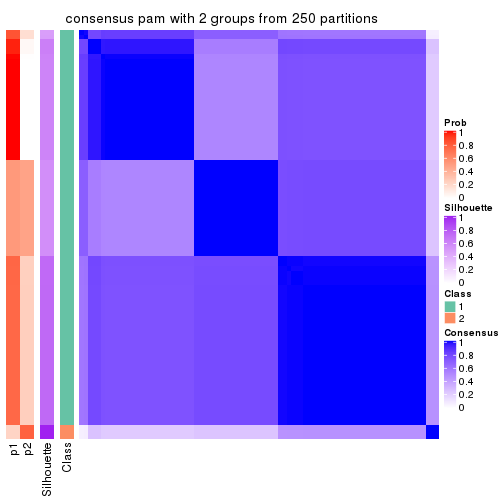
consensus_heatmap(res, k = 3)
consensus_heatmap(res, k = 4)
consensus_heatmap(res, k = 5)
consensus_heatmap(res, k = 6)
Heatmaps for the membership of samples in all partitions to see how consistent they are:
membership_heatmap(res, k = 2)

membership_heatmap(res, k = 3)
membership_heatmap(res, k = 4)
membership_heatmap(res, k = 5)
membership_heatmap(res, k = 6)
As soon as we have had the classes for columns, we can look for signatures which are significantly different between classes which can be candidate marks for certain classes. Following are the heatmaps for signatures.
Signature heatmaps where rows are scaled:
get_signatures(res, k = 2)
get_signatures(res, k = 3)
get_signatures(res, k = 4)
get_signatures(res, k = 5)
get_signatures(res, k = 6)
Signature heatmaps where rows are not scaled:
get_signatures(res, k = 2, scale_rows = FALSE)
get_signatures(res, k = 3, scale_rows = FALSE)
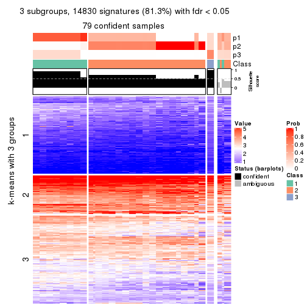
get_signatures(res, k = 4, scale_rows = FALSE)

get_signatures(res, k = 5, scale_rows = FALSE)
get_signatures(res, k = 6, scale_rows = FALSE)
Compare the overlap of signatures from different k:
compare_signatures(res)
get_signature() returns a data frame invisibly. TO get the list of signatures, the function
call should be assigned to a variable explicitly. In following code, if plot argument is set
to FALSE, no heatmap is plotted while only the differential analysis is performed.
# code only for demonstration
tb = get_signature(res, k = ..., plot = FALSE)
An example of the output of tb is:
#> which_row fdr mean_1 mean_2 scaled_mean_1 scaled_mean_2 km
#> 1 38 0.042760348 8.373488 9.131774 -0.5533452 0.5164555 1
#> 2 40 0.018707592 7.106213 8.469186 -0.6173731 0.5762149 1
#> 3 55 0.019134737 10.221463 11.207825 -0.6159697 0.5749050 1
#> 4 59 0.006059896 5.921854 7.869574 -0.6899429 0.6439467 1
#> 5 60 0.018055526 8.928898 10.211722 -0.6204761 0.5791110 1
#> 6 98 0.009384629 15.714769 14.887706 0.6635654 -0.6193277 2
...
The columns in tb are:
which_row: row indices corresponding to the input matrix.fdr: FDR for the differential test. mean_x: The mean value in group x.scaled_mean_x: The mean value in group x after rows are scaled.km: Row groups if k-means clustering is applied to rows.UMAP plot which shows how samples are separated.
dimension_reduction(res, k = 2, method = "UMAP")
dimension_reduction(res, k = 3, method = "UMAP")
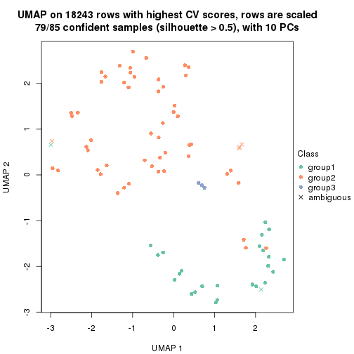
dimension_reduction(res, k = 4, method = "UMAP")
dimension_reduction(res, k = 5, method = "UMAP")
dimension_reduction(res, k = 6, method = "UMAP")
Following heatmap shows how subgroups are split when increasing k:
collect_classes(res)
If matrix rows can be associated to genes, consider to use GO_Enrichment(res,
...) to perform function enrichment for the signature genes.
The object with results only for a single top-value method and a single partition method can be extracted as:
res = res_list["CV", "mclust"]
# you can also extract it by
# res = res_list["CV:mclust"]
A summary of res and all the functions that can be applied to it:
res
#> A 'ConsensusPartition' object with k = 2, 3, 4, 5, 6.
#> On a matrix with 18243 rows and 85 columns.
#> Top rows (1000, 2000, 3000, 4000, 5000) are extracted by 'CV' method.
#> Subgroups are detected by 'mclust' method.
#> Performed in total 1250 partitions by row resampling.
#> Best k for subgroups seems to be 3.
#>
#> Following methods can be applied to this 'ConsensusPartition' object:
#> [1] "cola_report" "collect_classes" "collect_plots"
#> [4] "collect_stats" "colnames" "compare_signatures"
#> [7] "consensus_heatmap" "dimension_reduction" "functional_enrichment"
#> [10] "get_anno_col" "get_anno" "get_classes"
#> [13] "get_consensus" "get_matrix" "get_membership"
#> [16] "get_param" "get_signatures" "get_stats"
#> [19] "is_best_k" "is_stable_k" "membership_heatmap"
#> [22] "ncol" "nrow" "plot_ecdf"
#> [25] "rownames" "select_partition_number" "show"
#> [28] "suggest_best_k" "test_to_known_factors"
collect_plots() function collects all the plots made from res for all k (number of partitions)
into one single page to provide an easy and fast comparison between different k.
collect_plots(res)
The plots are:
k and the heatmap of
predicted classes for each k.k.k.k.All the plots in panels can be made by individual functions and they are plotted later in this section.
select_partition_number() produces several plots showing different
statistics for choosing “optimized” k. There are following statistics:
k;k, the area increased is defined as \(A_k - A_{k-1}\).The detailed explanations of these statistics can be found in the cola vignette.
Generally speaking, lower PAC score, higher mean silhouette score or higher
concordance corresponds to better partition. Rand index and Jaccard index
measure how similar the current partition is compared to partition with k-1.
If they are too similar, we won't accept k is better than k-1.
select_partition_number(res)
The numeric values for all these statistics can be obtained by get_stats().
get_stats(res)
#> k 1-PAC mean_silhouette concordance area_increased Rand Jaccard
#> 2 2 0.792 0.931 0.966 0.2187 0.808 0.808
#> 3 3 0.268 0.646 0.764 1.3903 0.600 0.505
#> 4 4 0.277 0.500 0.650 0.2999 0.794 0.546
#> 5 5 0.377 0.446 0.639 0.0933 0.904 0.705
#> 6 6 0.484 0.432 0.640 0.0600 0.816 0.408
suggest_best_k() suggests the best \(k\) based on these statistics. The rules are as follows:
NA.suggest_best_k(res)
#> [1] 3
Following shows the table of the partitions (You need to click the show/hide
code output link to see it). The membership matrix (columns with name p*)
is inferred by
clue::cl_consensus()
function with the SE method. Basically the value in the membership matrix
represents the probability to belong to a certain group. The finall class
label for an item is determined with the group with highest probability it
belongs to.
In get_classes() function, the entropy is calculated from the membership
matrix and the silhouette score is calculated from the consensus matrix.
cbind(get_classes(res, k = 2), get_membership(res, k = 2))
#> class entropy silhouette p1 p2
#> ERR532547 1 0.0000 0.967 1.000 0.000
#> ERR532548 1 0.0000 0.967 1.000 0.000
#> ERR532549 1 0.0000 0.967 1.000 0.000
#> ERR532576 1 0.0000 0.967 1.000 0.000
#> ERR532577 1 0.0000 0.967 1.000 0.000
#> ERR532578 1 0.0000 0.967 1.000 0.000
#> ERR532593 1 0.6623 0.797 0.828 0.172
#> ERR532594 1 0.6623 0.797 0.828 0.172
#> ERR532595 1 0.6623 0.797 0.828 0.172
#> ERR532596 1 0.7139 0.769 0.804 0.196
#> ERR532597 1 0.7139 0.769 0.804 0.196
#> ERR532598 1 0.7139 0.769 0.804 0.196
#> ERR532599 1 0.0000 0.967 1.000 0.000
#> ERR532600 1 0.0000 0.967 1.000 0.000
#> ERR532601 1 0.0000 0.967 1.000 0.000
#> ERR532602 1 0.0000 0.967 1.000 0.000
#> ERR532603 1 0.0000 0.967 1.000 0.000
#> ERR532604 1 0.0000 0.967 1.000 0.000
#> ERR532605 1 0.0000 0.967 1.000 0.000
#> ERR532606 1 0.0000 0.967 1.000 0.000
#> ERR532607 1 0.0000 0.967 1.000 0.000
#> ERR532608 2 0.0000 0.926 0.000 1.000
#> ERR532609 2 0.0000 0.926 0.000 1.000
#> ERR532610 2 0.0000 0.926 0.000 1.000
#> ERR532611 1 0.0000 0.967 1.000 0.000
#> ERR532612 1 0.0000 0.967 1.000 0.000
#> ERR532613 1 0.0000 0.967 1.000 0.000
#> ERR532550 1 0.0376 0.964 0.996 0.004
#> ERR532551 1 0.0000 0.967 1.000 0.000
#> ERR532552 1 0.0000 0.967 1.000 0.000
#> ERR532553 1 0.0000 0.967 1.000 0.000
#> ERR532554 1 0.0938 0.957 0.988 0.012
#> ERR532555 1 0.0938 0.957 0.988 0.012
#> ERR532556 1 0.0938 0.957 0.988 0.012
#> ERR532557 1 0.0000 0.967 1.000 0.000
#> ERR532558 1 0.0000 0.967 1.000 0.000
#> ERR532559 1 0.0000 0.967 1.000 0.000
#> ERR532560 1 0.0000 0.967 1.000 0.000
#> ERR532561 1 0.0000 0.967 1.000 0.000
#> ERR532562 1 0.0000 0.967 1.000 0.000
#> ERR532563 1 0.0000 0.967 1.000 0.000
#> ERR532564 1 0.0000 0.967 1.000 0.000
#> ERR532565 1 0.0000 0.967 1.000 0.000
#> ERR532566 2 0.0000 0.926 0.000 1.000
#> ERR532567 2 0.0000 0.926 0.000 1.000
#> ERR532568 2 0.0000 0.926 0.000 1.000
#> ERR532569 1 0.0000 0.967 1.000 0.000
#> ERR532570 1 0.0000 0.967 1.000 0.000
#> ERR532571 1 0.0000 0.967 1.000 0.000
#> ERR532572 1 0.0000 0.967 1.000 0.000
#> ERR532573 1 0.0000 0.967 1.000 0.000
#> ERR532574 1 0.0000 0.967 1.000 0.000
#> ERR532575 1 0.0000 0.967 1.000 0.000
#> ERR532579 1 0.8081 0.695 0.752 0.248
#> ERR532580 1 0.8081 0.695 0.752 0.248
#> ERR532581 1 0.0000 0.967 1.000 0.000
#> ERR532582 1 0.0000 0.967 1.000 0.000
#> ERR532583 1 0.0000 0.967 1.000 0.000
#> ERR532584 1 0.0000 0.967 1.000 0.000
#> ERR532585 1 0.0000 0.967 1.000 0.000
#> ERR532586 1 0.0000 0.967 1.000 0.000
#> ERR532587 1 0.0000 0.967 1.000 0.000
#> ERR532588 1 0.0000 0.967 1.000 0.000
#> ERR532589 1 0.0000 0.967 1.000 0.000
#> ERR532590 1 0.0000 0.967 1.000 0.000
#> ERR532591 1 0.0000 0.967 1.000 0.000
#> ERR532592 1 0.0000 0.967 1.000 0.000
#> ERR532439 1 0.0000 0.967 1.000 0.000
#> ERR532440 1 0.0000 0.967 1.000 0.000
#> ERR532441 1 0.0000 0.967 1.000 0.000
#> ERR532442 1 0.0000 0.967 1.000 0.000
#> ERR532443 1 0.0000 0.967 1.000 0.000
#> ERR532444 1 0.0000 0.967 1.000 0.000
#> ERR532445 1 0.7602 0.736 0.780 0.220
#> ERR532446 1 0.7602 0.736 0.780 0.220
#> ERR532447 1 0.7602 0.736 0.780 0.220
#> ERR532433 1 0.0000 0.967 1.000 0.000
#> ERR532434 1 0.0000 0.967 1.000 0.000
#> ERR532435 1 0.0000 0.967 1.000 0.000
#> ERR532436 1 0.0000 0.967 1.000 0.000
#> ERR532437 1 0.0000 0.967 1.000 0.000
#> ERR532438 1 0.0000 0.967 1.000 0.000
#> ERR532614 2 0.6887 0.820 0.184 0.816
#> ERR532615 2 0.6887 0.820 0.184 0.816
#> ERR532616 2 0.6887 0.820 0.184 0.816
cbind(get_classes(res, k = 3), get_membership(res, k = 3))
#> class entropy silhouette p1 p2 p3
#> ERR532547 2 0.2772 0.74301 0.080 0.916 0.004
#> ERR532548 2 0.2860 0.74195 0.084 0.912 0.004
#> ERR532549 2 0.2772 0.74301 0.080 0.916 0.004
#> ERR532576 1 0.4702 0.78317 0.788 0.212 0.000
#> ERR532577 1 0.4702 0.78317 0.788 0.212 0.000
#> ERR532578 1 0.4702 0.78317 0.788 0.212 0.000
#> ERR532593 1 0.7381 0.65642 0.704 0.132 0.164
#> ERR532594 1 0.7381 0.65642 0.704 0.132 0.164
#> ERR532595 1 0.7381 0.65642 0.704 0.132 0.164
#> ERR532596 2 0.4556 0.65243 0.080 0.860 0.060
#> ERR532597 2 0.4556 0.65243 0.080 0.860 0.060
#> ERR532598 2 0.4556 0.65243 0.080 0.860 0.060
#> ERR532599 2 0.4291 0.71599 0.180 0.820 0.000
#> ERR532600 2 0.4235 0.72155 0.176 0.824 0.000
#> ERR532601 2 0.4291 0.71906 0.180 0.820 0.000
#> ERR532602 1 0.4555 0.78947 0.800 0.200 0.000
#> ERR532603 1 0.4555 0.78947 0.800 0.200 0.000
#> ERR532604 1 0.4555 0.78947 0.800 0.200 0.000
#> ERR532605 1 0.4452 0.79080 0.808 0.192 0.000
#> ERR532606 1 0.4452 0.79080 0.808 0.192 0.000
#> ERR532607 1 0.4452 0.79080 0.808 0.192 0.000
#> ERR532608 3 0.1919 0.85878 0.024 0.020 0.956
#> ERR532609 3 0.1919 0.85878 0.024 0.020 0.956
#> ERR532610 3 0.1919 0.85878 0.024 0.020 0.956
#> ERR532611 1 0.4452 0.79080 0.808 0.192 0.000
#> ERR532612 1 0.4452 0.79080 0.808 0.192 0.000
#> ERR532613 1 0.4452 0.79080 0.808 0.192 0.000
#> ERR532550 1 0.5947 0.76347 0.776 0.172 0.052
#> ERR532551 2 0.6180 0.36855 0.416 0.584 0.000
#> ERR532552 2 0.6180 0.36855 0.416 0.584 0.000
#> ERR532553 2 0.6180 0.36855 0.416 0.584 0.000
#> ERR532554 2 0.2050 0.71956 0.028 0.952 0.020
#> ERR532555 2 0.2050 0.71956 0.028 0.952 0.020
#> ERR532556 2 0.2050 0.71956 0.028 0.952 0.020
#> ERR532557 2 0.5465 0.60625 0.288 0.712 0.000
#> ERR532558 2 0.5465 0.60625 0.288 0.712 0.000
#> ERR532559 2 0.5465 0.60625 0.288 0.712 0.000
#> ERR532560 1 0.4235 0.78259 0.824 0.176 0.000
#> ERR532561 1 0.4235 0.78259 0.824 0.176 0.000
#> ERR532562 1 0.4235 0.78259 0.824 0.176 0.000
#> ERR532563 2 0.3619 0.74001 0.136 0.864 0.000
#> ERR532564 2 0.3619 0.74001 0.136 0.864 0.000
#> ERR532565 2 0.3619 0.74001 0.136 0.864 0.000
#> ERR532566 3 0.0592 0.86081 0.012 0.000 0.988
#> ERR532567 3 0.0592 0.86081 0.012 0.000 0.988
#> ERR532568 3 0.0592 0.86081 0.012 0.000 0.988
#> ERR532569 1 0.4750 0.77608 0.784 0.216 0.000
#> ERR532570 1 0.4654 0.78127 0.792 0.208 0.000
#> ERR532571 1 0.4750 0.77608 0.784 0.216 0.000
#> ERR532572 2 0.2280 0.73869 0.052 0.940 0.008
#> ERR532573 2 0.2384 0.74040 0.056 0.936 0.008
#> ERR532574 2 0.2384 0.74040 0.056 0.936 0.008
#> ERR532575 1 0.5327 0.72777 0.728 0.272 0.000
#> ERR532579 2 0.6754 0.61082 0.092 0.740 0.168
#> ERR532580 2 0.6754 0.61082 0.092 0.740 0.168
#> ERR532581 2 0.3091 0.73615 0.072 0.912 0.016
#> ERR532582 2 0.3091 0.73615 0.072 0.912 0.016
#> ERR532583 2 0.3091 0.73615 0.072 0.912 0.016
#> ERR532584 2 0.5529 0.60008 0.296 0.704 0.000
#> ERR532585 2 0.5529 0.60008 0.296 0.704 0.000
#> ERR532586 2 0.5529 0.60008 0.296 0.704 0.000
#> ERR532587 2 0.1950 0.72766 0.040 0.952 0.008
#> ERR532588 2 0.1950 0.72766 0.040 0.952 0.008
#> ERR532589 2 0.2860 0.74113 0.084 0.912 0.004
#> ERR532590 2 0.2860 0.74113 0.084 0.912 0.004
#> ERR532591 1 0.7252 0.73033 0.704 0.196 0.100
#> ERR532592 1 0.7252 0.73033 0.704 0.196 0.100
#> ERR532439 2 0.6140 0.40701 0.404 0.596 0.000
#> ERR532440 2 0.6140 0.40701 0.404 0.596 0.000
#> ERR532441 2 0.6126 0.41179 0.400 0.600 0.000
#> ERR532442 1 0.5905 0.53550 0.648 0.352 0.000
#> ERR532443 1 0.5905 0.53550 0.648 0.352 0.000
#> ERR532444 1 0.5905 0.53550 0.648 0.352 0.000
#> ERR532445 1 0.5977 0.29789 0.728 0.020 0.252
#> ERR532446 1 0.5977 0.29789 0.728 0.020 0.252
#> ERR532447 1 0.5977 0.29789 0.728 0.020 0.252
#> ERR532433 1 0.6308 -0.00816 0.508 0.492 0.000
#> ERR532434 1 0.6309 -0.01042 0.504 0.496 0.000
#> ERR532435 1 0.6309 -0.01042 0.504 0.496 0.000
#> ERR532436 2 0.6225 0.29686 0.432 0.568 0.000
#> ERR532437 2 0.6225 0.29686 0.432 0.568 0.000
#> ERR532438 2 0.6235 0.29527 0.436 0.564 0.000
#> ERR532614 3 0.8937 0.69901 0.152 0.308 0.540
#> ERR532615 3 0.8937 0.69901 0.152 0.308 0.540
#> ERR532616 3 0.8937 0.69901 0.152 0.308 0.540
cbind(get_classes(res, k = 4), get_membership(res, k = 4))
#> class entropy silhouette p1 p2 p3 p4
#> ERR532547 4 0.7201 0.6631 0.140 0.324 0.004 0.532
#> ERR532548 4 0.7201 0.6631 0.140 0.324 0.004 0.532
#> ERR532549 4 0.7201 0.6631 0.140 0.324 0.004 0.532
#> ERR532576 1 0.5936 0.5229 0.620 0.324 0.000 0.056
#> ERR532577 1 0.5866 0.5234 0.624 0.324 0.000 0.052
#> ERR532578 1 0.5917 0.5256 0.624 0.320 0.000 0.056
#> ERR532593 1 0.6433 0.4413 0.684 0.172 0.128 0.016
#> ERR532594 1 0.6433 0.4413 0.684 0.172 0.128 0.016
#> ERR532595 1 0.6433 0.4413 0.684 0.172 0.128 0.016
#> ERR532596 4 0.3202 0.4885 0.024 0.076 0.012 0.888
#> ERR532597 4 0.3202 0.4885 0.024 0.076 0.012 0.888
#> ERR532598 4 0.3202 0.4885 0.024 0.076 0.012 0.888
#> ERR532599 2 0.2722 0.6172 0.032 0.904 0.000 0.064
#> ERR532600 2 0.2521 0.6200 0.024 0.912 0.000 0.064
#> ERR532601 2 0.2623 0.6187 0.028 0.908 0.000 0.064
#> ERR532602 1 0.6058 0.5200 0.604 0.336 0.000 0.060
#> ERR532603 1 0.6058 0.5200 0.604 0.336 0.000 0.060
#> ERR532604 1 0.6074 0.5145 0.600 0.340 0.000 0.060
#> ERR532605 1 0.5881 0.5827 0.676 0.240 0.000 0.084
#> ERR532606 1 0.5881 0.5827 0.676 0.240 0.000 0.084
#> ERR532607 1 0.5881 0.5827 0.676 0.240 0.000 0.084
#> ERR532608 3 0.0188 0.8066 0.000 0.004 0.996 0.000
#> ERR532609 3 0.0188 0.8066 0.000 0.004 0.996 0.000
#> ERR532610 3 0.0188 0.8066 0.000 0.004 0.996 0.000
#> ERR532611 1 0.5528 0.5862 0.700 0.236 0.000 0.064
#> ERR532612 1 0.5528 0.5862 0.700 0.236 0.000 0.064
#> ERR532613 1 0.5528 0.5862 0.700 0.236 0.000 0.064
#> ERR532550 1 0.6762 0.3784 0.628 0.256 0.016 0.100
#> ERR532551 2 0.4485 0.5114 0.200 0.772 0.000 0.028
#> ERR532552 2 0.4524 0.5054 0.204 0.768 0.000 0.028
#> ERR532553 2 0.4485 0.5114 0.200 0.772 0.000 0.028
#> ERR532554 4 0.6316 0.6698 0.096 0.252 0.004 0.648
#> ERR532555 4 0.6316 0.6698 0.096 0.252 0.004 0.648
#> ERR532556 4 0.6316 0.6698 0.096 0.252 0.004 0.648
#> ERR532557 2 0.3320 0.6261 0.068 0.876 0.000 0.056
#> ERR532558 2 0.3320 0.6261 0.068 0.876 0.000 0.056
#> ERR532559 2 0.3245 0.6262 0.064 0.880 0.000 0.056
#> ERR532560 1 0.4950 0.2967 0.620 0.376 0.000 0.004
#> ERR532561 1 0.4950 0.2967 0.620 0.376 0.000 0.004
#> ERR532562 1 0.4936 0.3057 0.624 0.372 0.000 0.004
#> ERR532563 2 0.5539 0.4147 0.060 0.724 0.008 0.208
#> ERR532564 2 0.5466 0.4214 0.056 0.728 0.008 0.208
#> ERR532565 2 0.5537 0.4136 0.064 0.728 0.008 0.200
#> ERR532566 3 0.0657 0.8074 0.012 0.000 0.984 0.004
#> ERR532567 3 0.0657 0.8074 0.012 0.000 0.984 0.004
#> ERR532568 3 0.0657 0.8074 0.012 0.000 0.984 0.004
#> ERR532569 1 0.5193 0.2980 0.580 0.412 0.000 0.008
#> ERR532570 1 0.5060 0.2969 0.584 0.412 0.000 0.004
#> ERR532571 1 0.5070 0.2866 0.580 0.416 0.000 0.004
#> ERR532572 2 0.5317 -0.0483 0.004 0.532 0.004 0.460
#> ERR532573 2 0.5317 -0.0483 0.004 0.532 0.004 0.460
#> ERR532574 2 0.5317 -0.0483 0.004 0.532 0.004 0.460
#> ERR532575 1 0.5936 0.5344 0.620 0.324 0.000 0.056
#> ERR532579 4 0.8932 0.5871 0.132 0.208 0.164 0.496
#> ERR532580 4 0.8932 0.5871 0.132 0.208 0.164 0.496
#> ERR532581 2 0.5844 0.3862 0.064 0.692 0.008 0.236
#> ERR532582 2 0.5844 0.3862 0.064 0.692 0.008 0.236
#> ERR532583 2 0.5844 0.3862 0.064 0.692 0.008 0.236
#> ERR532584 2 0.2101 0.6238 0.060 0.928 0.000 0.012
#> ERR532585 2 0.2021 0.6246 0.056 0.932 0.000 0.012
#> ERR532586 2 0.2179 0.6232 0.064 0.924 0.000 0.012
#> ERR532587 4 0.4933 0.4804 0.016 0.296 0.000 0.688
#> ERR532588 4 0.4957 0.4733 0.016 0.300 0.000 0.684
#> ERR532589 4 0.7163 0.6606 0.132 0.336 0.004 0.528
#> ERR532590 4 0.7163 0.6606 0.132 0.336 0.004 0.528
#> ERR532591 1 0.6973 0.5211 0.624 0.252 0.028 0.096
#> ERR532592 1 0.6947 0.5220 0.628 0.248 0.028 0.096
#> ERR532439 2 0.4669 0.5264 0.168 0.780 0.000 0.052
#> ERR532440 2 0.4624 0.5286 0.164 0.784 0.000 0.052
#> ERR532441 2 0.4701 0.5289 0.164 0.780 0.000 0.056
#> ERR532442 2 0.5137 0.2674 0.452 0.544 0.000 0.004
#> ERR532443 2 0.5143 0.2676 0.456 0.540 0.000 0.004
#> ERR532444 2 0.5143 0.2676 0.456 0.540 0.000 0.004
#> ERR532445 1 0.7352 0.3715 0.620 0.192 0.152 0.036
#> ERR532446 1 0.7352 0.3715 0.620 0.192 0.152 0.036
#> ERR532447 1 0.7352 0.3715 0.620 0.192 0.152 0.036
#> ERR532433 2 0.5227 0.4054 0.256 0.704 0.000 0.040
#> ERR532434 2 0.5256 0.4047 0.260 0.700 0.000 0.040
#> ERR532435 2 0.5227 0.4054 0.256 0.704 0.000 0.040
#> ERR532436 2 0.4877 0.4674 0.328 0.664 0.000 0.008
#> ERR532437 2 0.4857 0.4710 0.324 0.668 0.000 0.008
#> ERR532438 2 0.4877 0.4674 0.328 0.664 0.000 0.008
#> ERR532614 3 0.5167 0.5034 0.004 0.000 0.508 0.488
#> ERR532615 3 0.5167 0.5034 0.004 0.000 0.508 0.488
#> ERR532616 3 0.5167 0.5034 0.004 0.000 0.508 0.488
cbind(get_classes(res, k = 5), get_membership(res, k = 5))
#> class entropy silhouette p1 p2 p3 p4 p5
#> ERR532547 4 0.534 0.7063 0.012 0.280 0.060 0.648 0.000
#> ERR532548 4 0.534 0.7063 0.012 0.280 0.060 0.648 0.000
#> ERR532549 4 0.534 0.7063 0.012 0.280 0.060 0.648 0.000
#> ERR532576 1 0.546 0.3855 0.564 0.384 0.000 0.032 0.020
#> ERR532577 1 0.545 0.3980 0.568 0.380 0.000 0.032 0.020
#> ERR532578 1 0.545 0.3980 0.568 0.380 0.000 0.032 0.020
#> ERR532593 1 0.528 0.3072 0.676 0.044 0.000 0.028 0.252
#> ERR532594 1 0.528 0.3072 0.676 0.044 0.000 0.028 0.252
#> ERR532595 1 0.530 0.3066 0.672 0.044 0.000 0.028 0.256
#> ERR532596 3 0.444 0.6762 0.012 0.028 0.736 0.224 0.000
#> ERR532597 3 0.444 0.6762 0.012 0.028 0.736 0.224 0.000
#> ERR532598 3 0.444 0.6762 0.012 0.028 0.736 0.224 0.000
#> ERR532599 2 0.291 0.5652 0.012 0.864 0.000 0.116 0.008
#> ERR532600 2 0.301 0.5624 0.012 0.856 0.000 0.124 0.008
#> ERR532601 2 0.307 0.5624 0.012 0.856 0.000 0.120 0.012
#> ERR532602 1 0.641 0.5328 0.560 0.272 0.000 0.152 0.016
#> ERR532603 1 0.643 0.5313 0.556 0.276 0.000 0.152 0.016
#> ERR532604 1 0.641 0.5328 0.560 0.272 0.000 0.152 0.016
#> ERR532605 1 0.595 0.5809 0.660 0.176 0.000 0.132 0.032
#> ERR532606 1 0.595 0.5809 0.660 0.176 0.000 0.132 0.032
#> ERR532607 1 0.595 0.5809 0.660 0.176 0.000 0.132 0.032
#> ERR532608 5 0.583 0.5591 0.000 0.000 0.220 0.172 0.608
#> ERR532609 5 0.583 0.5591 0.000 0.000 0.220 0.172 0.608
#> ERR532610 5 0.583 0.5591 0.000 0.000 0.220 0.172 0.608
#> ERR532611 1 0.564 0.5705 0.664 0.196 0.000 0.128 0.012
#> ERR532612 1 0.561 0.5719 0.668 0.192 0.000 0.128 0.012
#> ERR532613 1 0.564 0.5705 0.664 0.196 0.000 0.128 0.012
#> ERR532550 1 0.730 0.3677 0.572 0.100 0.008 0.168 0.152
#> ERR532551 2 0.702 0.3323 0.140 0.584 0.000 0.108 0.168
#> ERR532552 2 0.702 0.3323 0.140 0.584 0.000 0.108 0.168
#> ERR532553 2 0.697 0.3385 0.140 0.588 0.000 0.104 0.168
#> ERR532554 4 0.592 0.5105 0.000 0.184 0.220 0.596 0.000
#> ERR532555 4 0.592 0.5105 0.000 0.184 0.220 0.596 0.000
#> ERR532556 4 0.592 0.5105 0.000 0.184 0.220 0.596 0.000
#> ERR532557 2 0.267 0.5806 0.044 0.892 0.000 0.060 0.004
#> ERR532558 2 0.267 0.5806 0.044 0.892 0.000 0.060 0.004
#> ERR532559 2 0.267 0.5806 0.044 0.892 0.000 0.060 0.004
#> ERR532560 1 0.559 0.4982 0.700 0.172 0.000 0.048 0.080
#> ERR532561 1 0.559 0.4982 0.700 0.172 0.000 0.048 0.080
#> ERR532562 1 0.559 0.4982 0.700 0.172 0.000 0.048 0.080
#> ERR532563 2 0.724 0.3440 0.028 0.600 0.140 0.160 0.072
#> ERR532564 2 0.724 0.3440 0.028 0.600 0.140 0.160 0.072
#> ERR532565 2 0.724 0.3440 0.028 0.600 0.140 0.160 0.072
#> ERR532566 5 0.651 0.5233 0.004 0.000 0.372 0.168 0.456
#> ERR532567 5 0.651 0.5233 0.004 0.000 0.372 0.168 0.456
#> ERR532568 5 0.651 0.5233 0.004 0.000 0.372 0.168 0.456
#> ERR532569 1 0.480 0.5275 0.732 0.204 0.000 0.032 0.032
#> ERR532570 1 0.474 0.5321 0.740 0.196 0.000 0.032 0.032
#> ERR532571 1 0.488 0.5247 0.728 0.204 0.000 0.036 0.032
#> ERR532572 2 0.653 -0.0251 0.000 0.476 0.228 0.296 0.000
#> ERR532573 2 0.652 -0.0275 0.000 0.476 0.224 0.300 0.000
#> ERR532574 2 0.653 -0.0235 0.000 0.476 0.228 0.296 0.000
#> ERR532575 1 0.534 0.4916 0.620 0.324 0.000 0.036 0.020
#> ERR532579 4 0.629 0.4253 0.064 0.108 0.116 0.688 0.024
#> ERR532580 4 0.629 0.4253 0.064 0.108 0.116 0.688 0.024
#> ERR532581 2 0.746 0.3061 0.048 0.564 0.128 0.216 0.044
#> ERR532582 2 0.746 0.3061 0.048 0.564 0.128 0.216 0.044
#> ERR532583 2 0.746 0.3061 0.048 0.564 0.128 0.216 0.044
#> ERR532584 2 0.247 0.5866 0.024 0.908 0.000 0.052 0.016
#> ERR532585 2 0.256 0.5864 0.028 0.904 0.000 0.052 0.016
#> ERR532586 2 0.256 0.5864 0.028 0.904 0.000 0.052 0.016
#> ERR532587 3 0.723 0.2965 0.016 0.220 0.492 0.256 0.016
#> ERR532588 3 0.723 0.2965 0.016 0.220 0.492 0.256 0.016
#> ERR532589 4 0.524 0.7028 0.008 0.292 0.056 0.644 0.000
#> ERR532590 4 0.524 0.7028 0.008 0.292 0.056 0.644 0.000
#> ERR532591 1 0.633 0.5502 0.632 0.196 0.028 0.136 0.008
#> ERR532592 1 0.631 0.5524 0.636 0.192 0.028 0.136 0.008
#> ERR532439 2 0.401 0.4343 0.176 0.784 0.000 0.032 0.008
#> ERR532440 2 0.397 0.4400 0.172 0.788 0.000 0.032 0.008
#> ERR532441 2 0.405 0.4351 0.172 0.784 0.000 0.036 0.008
#> ERR532442 1 0.605 0.2433 0.544 0.368 0.000 0.040 0.048
#> ERR532443 1 0.605 0.2433 0.544 0.368 0.000 0.040 0.048
#> ERR532444 1 0.605 0.2433 0.544 0.368 0.000 0.040 0.048
#> ERR532445 5 0.701 0.1727 0.384 0.056 0.000 0.108 0.452
#> ERR532446 5 0.701 0.1727 0.384 0.056 0.000 0.108 0.452
#> ERR532447 5 0.701 0.1727 0.384 0.056 0.000 0.108 0.452
#> ERR532433 2 0.557 0.1654 0.316 0.612 0.000 0.052 0.020
#> ERR532434 2 0.550 0.1848 0.300 0.628 0.000 0.052 0.020
#> ERR532435 2 0.550 0.1848 0.300 0.628 0.000 0.052 0.020
#> ERR532436 2 0.470 0.2930 0.336 0.640 0.000 0.016 0.008
#> ERR532437 2 0.479 0.2905 0.336 0.636 0.000 0.020 0.008
#> ERR532438 2 0.479 0.2905 0.336 0.636 0.000 0.020 0.008
#> ERR532614 3 0.111 0.6468 0.000 0.000 0.964 0.024 0.012
#> ERR532615 3 0.111 0.6468 0.000 0.000 0.964 0.024 0.012
#> ERR532616 3 0.111 0.6468 0.000 0.000 0.964 0.024 0.012
cbind(get_classes(res, k = 6), get_membership(res, k = 6))
#> class entropy silhouette p1 p2 p3 p4 p5 p6
#> ERR532547 4 0.417 0.469 0.120 0.024 0.024 0.792 0.000 0.040
#> ERR532548 4 0.417 0.469 0.120 0.024 0.024 0.792 0.000 0.040
#> ERR532549 4 0.417 0.469 0.120 0.024 0.024 0.792 0.000 0.040
#> ERR532576 6 0.473 0.594 0.060 0.196 0.016 0.012 0.000 0.716
#> ERR532577 6 0.470 0.597 0.060 0.192 0.016 0.012 0.000 0.720
#> ERR532578 6 0.470 0.597 0.060 0.192 0.016 0.012 0.000 0.720
#> ERR532593 1 0.150 0.530 0.936 0.012 0.000 0.000 0.000 0.052
#> ERR532594 1 0.150 0.530 0.936 0.012 0.000 0.000 0.000 0.052
#> ERR532595 1 0.150 0.530 0.936 0.012 0.000 0.000 0.000 0.052
#> ERR532596 3 0.391 0.697 0.008 0.044 0.772 0.172 0.000 0.004
#> ERR532597 3 0.391 0.697 0.008 0.044 0.772 0.172 0.000 0.004
#> ERR532598 3 0.391 0.697 0.008 0.044 0.772 0.172 0.000 0.004
#> ERR532599 2 0.606 0.509 0.012 0.528 0.004 0.220 0.000 0.236
#> ERR532600 2 0.606 0.509 0.012 0.528 0.004 0.220 0.000 0.236
#> ERR532601 2 0.606 0.509 0.012 0.528 0.004 0.220 0.000 0.236
#> ERR532602 6 0.514 0.562 0.080 0.196 0.012 0.024 0.000 0.688
#> ERR532603 6 0.514 0.562 0.080 0.196 0.012 0.024 0.000 0.688
#> ERR532604 6 0.514 0.562 0.080 0.196 0.012 0.024 0.000 0.688
#> ERR532605 6 0.149 0.757 0.028 0.024 0.000 0.004 0.000 0.944
#> ERR532606 6 0.149 0.757 0.028 0.024 0.000 0.004 0.000 0.944
#> ERR532607 6 0.149 0.757 0.028 0.024 0.000 0.004 0.000 0.944
#> ERR532608 5 0.000 0.731 0.000 0.000 0.000 0.000 1.000 0.000
#> ERR532609 5 0.000 0.731 0.000 0.000 0.000 0.000 1.000 0.000
#> ERR532610 5 0.000 0.731 0.000 0.000 0.000 0.000 1.000 0.000
#> ERR532611 6 0.185 0.756 0.024 0.040 0.004 0.004 0.000 0.928
#> ERR532612 6 0.185 0.756 0.024 0.040 0.004 0.004 0.000 0.928
#> ERR532613 6 0.185 0.756 0.024 0.040 0.004 0.004 0.000 0.928
#> ERR532550 4 0.831 -0.244 0.244 0.036 0.248 0.256 0.000 0.216
#> ERR532551 1 0.682 -0.195 0.364 0.328 0.000 0.044 0.000 0.264
#> ERR532552 1 0.682 -0.195 0.364 0.328 0.000 0.044 0.000 0.264
#> ERR532553 1 0.682 -0.195 0.364 0.328 0.000 0.044 0.000 0.264
#> ERR532554 4 0.373 0.243 0.000 0.032 0.180 0.776 0.000 0.012
#> ERR532555 4 0.373 0.243 0.000 0.032 0.180 0.776 0.000 0.012
#> ERR532556 4 0.373 0.243 0.000 0.032 0.180 0.776 0.000 0.012
#> ERR532557 2 0.608 0.521 0.100 0.596 0.000 0.208 0.000 0.096
#> ERR532558 2 0.608 0.521 0.100 0.596 0.000 0.208 0.000 0.096
#> ERR532559 2 0.608 0.521 0.100 0.596 0.000 0.208 0.000 0.096
#> ERR532560 1 0.409 0.552 0.736 0.056 0.000 0.004 0.000 0.204
#> ERR532561 1 0.409 0.552 0.736 0.056 0.000 0.004 0.000 0.204
#> ERR532562 1 0.409 0.552 0.736 0.056 0.000 0.004 0.000 0.204
#> ERR532563 4 0.853 -0.121 0.124 0.248 0.092 0.288 0.000 0.248
#> ERR532564 4 0.851 -0.124 0.120 0.248 0.092 0.288 0.000 0.252
#> ERR532565 4 0.853 -0.111 0.124 0.248 0.092 0.292 0.000 0.244
#> ERR532566 5 0.611 0.700 0.012 0.148 0.300 0.004 0.528 0.008
#> ERR532567 5 0.611 0.700 0.012 0.148 0.300 0.004 0.528 0.008
#> ERR532568 5 0.611 0.700 0.012 0.148 0.300 0.004 0.528 0.008
#> ERR532569 1 0.565 0.440 0.528 0.156 0.000 0.004 0.000 0.312
#> ERR532570 1 0.562 0.436 0.528 0.148 0.000 0.004 0.000 0.320
#> ERR532571 1 0.565 0.440 0.528 0.156 0.000 0.004 0.000 0.312
#> ERR532572 4 0.609 0.228 0.004 0.204 0.288 0.496 0.000 0.008
#> ERR532573 4 0.610 0.237 0.004 0.212 0.280 0.496 0.000 0.008
#> ERR532574 4 0.610 0.237 0.004 0.212 0.280 0.496 0.000 0.008
#> ERR532575 6 0.536 0.498 0.068 0.064 0.016 0.152 0.000 0.700
#> ERR532579 4 0.478 0.285 0.016 0.028 0.004 0.720 0.200 0.032
#> ERR532580 4 0.478 0.285 0.016 0.028 0.004 0.720 0.200 0.032
#> ERR532581 4 0.761 0.245 0.012 0.140 0.204 0.400 0.000 0.244
#> ERR532582 4 0.761 0.245 0.012 0.140 0.204 0.400 0.000 0.244
#> ERR532583 4 0.761 0.245 0.012 0.140 0.204 0.400 0.000 0.244
#> ERR532584 2 0.596 0.532 0.012 0.516 0.000 0.192 0.000 0.280
#> ERR532585 2 0.584 0.530 0.008 0.528 0.000 0.192 0.000 0.272
#> ERR532586 2 0.588 0.529 0.008 0.516 0.000 0.192 0.000 0.284
#> ERR532587 3 0.731 0.280 0.116 0.052 0.504 0.236 0.000 0.092
#> ERR532588 3 0.731 0.280 0.116 0.052 0.504 0.236 0.000 0.092
#> ERR532589 4 0.462 0.470 0.124 0.040 0.024 0.764 0.000 0.048
#> ERR532590 4 0.462 0.470 0.124 0.040 0.024 0.764 0.000 0.048
#> ERR532591 6 0.486 0.592 0.112 0.080 0.000 0.076 0.000 0.732
#> ERR532592 6 0.491 0.585 0.116 0.080 0.000 0.076 0.000 0.728
#> ERR532439 2 0.559 0.481 0.140 0.588 0.000 0.016 0.000 0.256
#> ERR532440 2 0.563 0.487 0.152 0.588 0.000 0.016 0.000 0.244
#> ERR532441 2 0.566 0.484 0.156 0.584 0.000 0.016 0.000 0.244
#> ERR532442 1 0.529 0.502 0.600 0.180 0.000 0.000 0.000 0.220
#> ERR532443 1 0.533 0.494 0.596 0.196 0.000 0.000 0.000 0.208
#> ERR532444 1 0.533 0.494 0.596 0.196 0.000 0.000 0.000 0.208
#> ERR532445 1 0.698 0.049 0.540 0.064 0.268 0.024 0.072 0.032
#> ERR532446 1 0.698 0.049 0.540 0.064 0.268 0.024 0.072 0.032
#> ERR532447 1 0.698 0.049 0.540 0.064 0.268 0.024 0.072 0.032
#> ERR532433 2 0.598 0.351 0.284 0.444 0.000 0.000 0.000 0.272
#> ERR532434 2 0.594 0.361 0.280 0.460 0.000 0.000 0.000 0.260
#> ERR532435 2 0.594 0.361 0.280 0.460 0.000 0.000 0.000 0.260
#> ERR532436 2 0.525 0.302 0.324 0.584 0.000 0.016 0.000 0.076
#> ERR532437 2 0.529 0.308 0.320 0.584 0.000 0.016 0.000 0.080
#> ERR532438 2 0.527 0.297 0.328 0.580 0.000 0.016 0.000 0.076
#> ERR532614 3 0.131 0.622 0.008 0.000 0.952 0.008 0.032 0.000
#> ERR532615 3 0.131 0.622 0.008 0.000 0.952 0.008 0.032 0.000
#> ERR532616 3 0.131 0.622 0.008 0.000 0.952 0.008 0.032 0.000
Heatmaps for the consensus matrix. It visualizes the probability of two samples to be in a same group.
consensus_heatmap(res, k = 2)
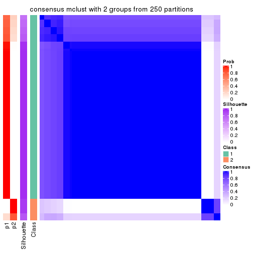
consensus_heatmap(res, k = 3)
consensus_heatmap(res, k = 4)
consensus_heatmap(res, k = 5)
consensus_heatmap(res, k = 6)
Heatmaps for the membership of samples in all partitions to see how consistent they are:
membership_heatmap(res, k = 2)
membership_heatmap(res, k = 3)
membership_heatmap(res, k = 4)
membership_heatmap(res, k = 5)
membership_heatmap(res, k = 6)
As soon as we have had the classes for columns, we can look for signatures which are significantly different between classes which can be candidate marks for certain classes. Following are the heatmaps for signatures.
Signature heatmaps where rows are scaled:
get_signatures(res, k = 2)
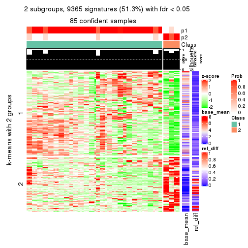
get_signatures(res, k = 3)
get_signatures(res, k = 4)
get_signatures(res, k = 5)
get_signatures(res, k = 6)
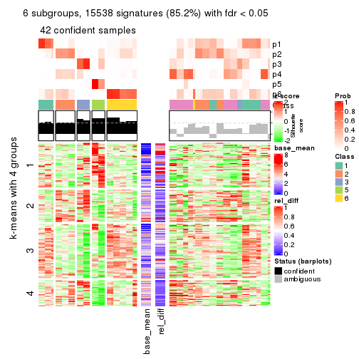
Signature heatmaps where rows are not scaled:
get_signatures(res, k = 2, scale_rows = FALSE)
get_signatures(res, k = 3, scale_rows = FALSE)
get_signatures(res, k = 4, scale_rows = FALSE)
get_signatures(res, k = 5, scale_rows = FALSE)
get_signatures(res, k = 6, scale_rows = FALSE)
Compare the overlap of signatures from different k:
compare_signatures(res)
get_signature() returns a data frame invisibly. TO get the list of signatures, the function
call should be assigned to a variable explicitly. In following code, if plot argument is set
to FALSE, no heatmap is plotted while only the differential analysis is performed.
# code only for demonstration
tb = get_signature(res, k = ..., plot = FALSE)
An example of the output of tb is:
#> which_row fdr mean_1 mean_2 scaled_mean_1 scaled_mean_2 km
#> 1 38 0.042760348 8.373488 9.131774 -0.5533452 0.5164555 1
#> 2 40 0.018707592 7.106213 8.469186 -0.6173731 0.5762149 1
#> 3 55 0.019134737 10.221463 11.207825 -0.6159697 0.5749050 1
#> 4 59 0.006059896 5.921854 7.869574 -0.6899429 0.6439467 1
#> 5 60 0.018055526 8.928898 10.211722 -0.6204761 0.5791110 1
#> 6 98 0.009384629 15.714769 14.887706 0.6635654 -0.6193277 2
...
The columns in tb are:
which_row: row indices corresponding to the input matrix.fdr: FDR for the differential test. mean_x: The mean value in group x.scaled_mean_x: The mean value in group x after rows are scaled.km: Row groups if k-means clustering is applied to rows.UMAP plot which shows how samples are separated.
dimension_reduction(res, k = 2, method = "UMAP")
dimension_reduction(res, k = 3, method = "UMAP")
dimension_reduction(res, k = 4, method = "UMAP")
dimension_reduction(res, k = 5, method = "UMAP")

dimension_reduction(res, k = 6, method = "UMAP")
Following heatmap shows how subgroups are split when increasing k:
collect_classes(res)
If matrix rows can be associated to genes, consider to use GO_Enrichment(res,
...) to perform function enrichment for the signature genes.
The object with results only for a single top-value method and a single partition method can be extracted as:
res = res_list["CV", "NMF"]
# you can also extract it by
# res = res_list["CV:NMF"]
A summary of res and all the functions that can be applied to it:
res
#> A 'ConsensusPartition' object with k = 2, 3, 4, 5, 6.
#> On a matrix with 18243 rows and 85 columns.
#> Top rows (1000, 2000, 3000, 4000, 5000) are extracted by 'CV' method.
#> Subgroups are detected by 'NMF' method.
#> Performed in total 1250 partitions by row resampling.
#> Best k for subgroups seems to be 2.
#>
#> Following methods can be applied to this 'ConsensusPartition' object:
#> [1] "cola_report" "collect_classes" "collect_plots"
#> [4] "collect_stats" "colnames" "compare_signatures"
#> [7] "consensus_heatmap" "dimension_reduction" "functional_enrichment"
#> [10] "get_anno_col" "get_anno" "get_classes"
#> [13] "get_consensus" "get_matrix" "get_membership"
#> [16] "get_param" "get_signatures" "get_stats"
#> [19] "is_best_k" "is_stable_k" "membership_heatmap"
#> [22] "ncol" "nrow" "plot_ecdf"
#> [25] "rownames" "select_partition_number" "show"
#> [28] "suggest_best_k" "test_to_known_factors"
collect_plots() function collects all the plots made from res for all k (number of partitions)
into one single page to provide an easy and fast comparison between different k.
collect_plots(res)
The plots are:
k and the heatmap of
predicted classes for each k.k.k.k.All the plots in panels can be made by individual functions and they are plotted later in this section.
select_partition_number() produces several plots showing different
statistics for choosing “optimized” k. There are following statistics:
k;k, the area increased is defined as \(A_k - A_{k-1}\).The detailed explanations of these statistics can be found in the cola vignette.
Generally speaking, lower PAC score, higher mean silhouette score or higher
concordance corresponds to better partition. Rand index and Jaccard index
measure how similar the current partition is compared to partition with k-1.
If they are too similar, we won't accept k is better than k-1.
select_partition_number(res)
The numeric values for all these statistics can be obtained by get_stats().
get_stats(res)
#> k 1-PAC mean_silhouette concordance area_increased Rand Jaccard
#> 2 2 0.879 0.905 0.960 0.4822 0.506 0.506
#> 3 3 0.836 0.878 0.902 0.2718 0.759 0.577
#> 4 4 0.733 0.809 0.898 0.1786 0.777 0.493
#> 5 5 0.713 0.668 0.817 0.0624 0.918 0.716
#> 6 6 0.714 0.545 0.720 0.0447 0.853 0.484
suggest_best_k() suggests the best \(k\) based on these statistics. The rules are as follows:
NA.suggest_best_k(res)
#> [1] 2
Following shows the table of the partitions (You need to click the show/hide
code output link to see it). The membership matrix (columns with name p*)
is inferred by
clue::cl_consensus()
function with the SE method. Basically the value in the membership matrix
represents the probability to belong to a certain group. The finall class
label for an item is determined with the group with highest probability it
belongs to.
In get_classes() function, the entropy is calculated from the membership
matrix and the silhouette score is calculated from the consensus matrix.
cbind(get_classes(res, k = 2), get_membership(res, k = 2))
#> class entropy silhouette p1 p2
#> ERR532547 2 0.8499 0.645 0.276 0.724
#> ERR532548 2 0.7950 0.697 0.240 0.760
#> ERR532549 2 0.8016 0.692 0.244 0.756
#> ERR532576 1 0.0000 0.983 1.000 0.000
#> ERR532577 1 0.0000 0.983 1.000 0.000
#> ERR532578 1 0.0000 0.983 1.000 0.000
#> ERR532593 1 0.0376 0.980 0.996 0.004
#> ERR532594 1 0.0376 0.980 0.996 0.004
#> ERR532595 1 0.0376 0.980 0.996 0.004
#> ERR532596 2 0.0000 0.919 0.000 1.000
#> ERR532597 2 0.0000 0.919 0.000 1.000
#> ERR532598 2 0.0000 0.919 0.000 1.000
#> ERR532599 2 0.2236 0.900 0.036 0.964
#> ERR532600 2 0.1843 0.905 0.028 0.972
#> ERR532601 2 0.2043 0.903 0.032 0.968
#> ERR532602 1 0.0000 0.983 1.000 0.000
#> ERR532603 1 0.0000 0.983 1.000 0.000
#> ERR532604 1 0.0000 0.983 1.000 0.000
#> ERR532605 1 0.0000 0.983 1.000 0.000
#> ERR532606 1 0.0000 0.983 1.000 0.000
#> ERR532607 1 0.0000 0.983 1.000 0.000
#> ERR532608 2 0.0000 0.919 0.000 1.000
#> ERR532609 2 0.0000 0.919 0.000 1.000
#> ERR532610 2 0.0000 0.919 0.000 1.000
#> ERR532611 1 0.0000 0.983 1.000 0.000
#> ERR532612 1 0.0000 0.983 1.000 0.000
#> ERR532613 1 0.0000 0.983 1.000 0.000
#> ERR532550 1 0.0376 0.980 0.996 0.004
#> ERR532551 1 0.0000 0.983 1.000 0.000
#> ERR532552 1 0.0000 0.983 1.000 0.000
#> ERR532553 1 0.0000 0.983 1.000 0.000
#> ERR532554 2 0.0000 0.919 0.000 1.000
#> ERR532555 2 0.0000 0.919 0.000 1.000
#> ERR532556 2 0.0000 0.919 0.000 1.000
#> ERR532557 1 0.0376 0.980 0.996 0.004
#> ERR532558 1 0.0376 0.980 0.996 0.004
#> ERR532559 1 0.0672 0.976 0.992 0.008
#> ERR532560 1 0.0000 0.983 1.000 0.000
#> ERR532561 1 0.0000 0.983 1.000 0.000
#> ERR532562 1 0.0000 0.983 1.000 0.000
#> ERR532563 2 0.0376 0.919 0.004 0.996
#> ERR532564 2 0.0376 0.919 0.004 0.996
#> ERR532565 2 0.0376 0.919 0.004 0.996
#> ERR532566 2 0.0000 0.919 0.000 1.000
#> ERR532567 2 0.0000 0.919 0.000 1.000
#> ERR532568 2 0.0000 0.919 0.000 1.000
#> ERR532569 1 0.0000 0.983 1.000 0.000
#> ERR532570 1 0.0000 0.983 1.000 0.000
#> ERR532571 1 0.0000 0.983 1.000 0.000
#> ERR532572 2 0.0376 0.919 0.004 0.996
#> ERR532573 2 0.0376 0.919 0.004 0.996
#> ERR532574 2 0.0376 0.919 0.004 0.996
#> ERR532575 1 0.0000 0.983 1.000 0.000
#> ERR532579 2 0.9983 0.190 0.476 0.524
#> ERR532580 2 0.9963 0.229 0.464 0.536
#> ERR532581 2 0.0376 0.919 0.004 0.996
#> ERR532582 2 0.0376 0.919 0.004 0.996
#> ERR532583 2 0.0376 0.919 0.004 0.996
#> ERR532584 1 0.8016 0.644 0.756 0.244
#> ERR532585 1 0.7674 0.682 0.776 0.224
#> ERR532586 1 0.7674 0.682 0.776 0.224
#> ERR532587 2 0.0000 0.919 0.000 1.000
#> ERR532588 2 0.0000 0.919 0.000 1.000
#> ERR532589 2 0.9866 0.329 0.432 0.568
#> ERR532590 2 0.9866 0.329 0.432 0.568
#> ERR532591 1 0.0000 0.983 1.000 0.000
#> ERR532592 1 0.0000 0.983 1.000 0.000
#> ERR532439 1 0.0000 0.983 1.000 0.000
#> ERR532440 1 0.0000 0.983 1.000 0.000
#> ERR532441 1 0.0000 0.983 1.000 0.000
#> ERR532442 1 0.0000 0.983 1.000 0.000
#> ERR532443 1 0.0000 0.983 1.000 0.000
#> ERR532444 1 0.0000 0.983 1.000 0.000
#> ERR532445 1 0.0376 0.980 0.996 0.004
#> ERR532446 1 0.0376 0.980 0.996 0.004
#> ERR532447 1 0.0376 0.980 0.996 0.004
#> ERR532433 1 0.0000 0.983 1.000 0.000
#> ERR532434 1 0.0000 0.983 1.000 0.000
#> ERR532435 1 0.0000 0.983 1.000 0.000
#> ERR532436 1 0.0000 0.983 1.000 0.000
#> ERR532437 1 0.0000 0.983 1.000 0.000
#> ERR532438 1 0.0000 0.983 1.000 0.000
#> ERR532614 2 0.0000 0.919 0.000 1.000
#> ERR532615 2 0.0000 0.919 0.000 1.000
#> ERR532616 2 0.0000 0.919 0.000 1.000
cbind(get_classes(res, k = 3), get_membership(res, k = 3))
#> class entropy silhouette p1 p2 p3
#> ERR532547 2 0.0000 0.937 0.000 1.000 0.000
#> ERR532548 2 0.0000 0.937 0.000 1.000 0.000
#> ERR532549 2 0.0000 0.937 0.000 1.000 0.000
#> ERR532576 1 0.3686 0.835 0.860 0.140 0.000
#> ERR532577 1 0.3686 0.835 0.860 0.140 0.000
#> ERR532578 1 0.3686 0.835 0.860 0.140 0.000
#> ERR532593 1 0.1163 0.920 0.972 0.000 0.028
#> ERR532594 1 0.1163 0.920 0.972 0.000 0.028
#> ERR532595 1 0.1163 0.920 0.972 0.000 0.028
#> ERR532596 2 0.6180 0.268 0.000 0.584 0.416
#> ERR532597 2 0.6180 0.268 0.000 0.584 0.416
#> ERR532598 2 0.6180 0.268 0.000 0.584 0.416
#> ERR532599 2 0.0000 0.937 0.000 1.000 0.000
#> ERR532600 2 0.0000 0.937 0.000 1.000 0.000
#> ERR532601 2 0.0000 0.937 0.000 1.000 0.000
#> ERR532602 1 0.0000 0.935 1.000 0.000 0.000
#> ERR532603 1 0.0000 0.935 1.000 0.000 0.000
#> ERR532604 1 0.0000 0.935 1.000 0.000 0.000
#> ERR532605 1 0.0000 0.935 1.000 0.000 0.000
#> ERR532606 1 0.0000 0.935 1.000 0.000 0.000
#> ERR532607 1 0.0000 0.935 1.000 0.000 0.000
#> ERR532608 3 0.0000 0.933 0.000 0.000 1.000
#> ERR532609 3 0.0000 0.933 0.000 0.000 1.000
#> ERR532610 3 0.0000 0.933 0.000 0.000 1.000
#> ERR532611 1 0.0000 0.935 1.000 0.000 0.000
#> ERR532612 1 0.0000 0.935 1.000 0.000 0.000
#> ERR532613 1 0.0000 0.935 1.000 0.000 0.000
#> ERR532550 1 0.0000 0.935 1.000 0.000 0.000
#> ERR532551 1 0.5216 0.691 0.740 0.260 0.000
#> ERR532552 1 0.5216 0.691 0.740 0.260 0.000
#> ERR532553 1 0.5363 0.669 0.724 0.276 0.000
#> ERR532554 2 0.1753 0.904 0.000 0.952 0.048
#> ERR532555 2 0.1753 0.904 0.000 0.952 0.048
#> ERR532556 2 0.1753 0.904 0.000 0.952 0.048
#> ERR532557 2 0.0747 0.926 0.016 0.984 0.000
#> ERR532558 2 0.0747 0.926 0.016 0.984 0.000
#> ERR532559 2 0.0747 0.926 0.016 0.984 0.000
#> ERR532560 1 0.0000 0.935 1.000 0.000 0.000
#> ERR532561 1 0.0000 0.935 1.000 0.000 0.000
#> ERR532562 1 0.0000 0.935 1.000 0.000 0.000
#> ERR532563 2 0.0000 0.937 0.000 1.000 0.000
#> ERR532564 2 0.0000 0.937 0.000 1.000 0.000
#> ERR532565 2 0.0000 0.937 0.000 1.000 0.000
#> ERR532566 3 0.0000 0.933 0.000 0.000 1.000
#> ERR532567 3 0.0000 0.933 0.000 0.000 1.000
#> ERR532568 3 0.0000 0.933 0.000 0.000 1.000
#> ERR532569 1 0.0000 0.935 1.000 0.000 0.000
#> ERR532570 1 0.0000 0.935 1.000 0.000 0.000
#> ERR532571 1 0.0000 0.935 1.000 0.000 0.000
#> ERR532572 2 0.0000 0.937 0.000 1.000 0.000
#> ERR532573 2 0.0000 0.937 0.000 1.000 0.000
#> ERR532574 2 0.0000 0.937 0.000 1.000 0.000
#> ERR532575 1 0.6168 0.393 0.588 0.412 0.000
#> ERR532579 3 0.7888 0.651 0.140 0.196 0.664
#> ERR532580 3 0.7717 0.677 0.148 0.172 0.680
#> ERR532581 2 0.0000 0.937 0.000 1.000 0.000
#> ERR532582 2 0.0000 0.937 0.000 1.000 0.000
#> ERR532583 2 0.0000 0.937 0.000 1.000 0.000
#> ERR532584 2 0.0000 0.937 0.000 1.000 0.000
#> ERR532585 2 0.0000 0.937 0.000 1.000 0.000
#> ERR532586 2 0.0000 0.937 0.000 1.000 0.000
#> ERR532587 2 0.1529 0.912 0.000 0.960 0.040
#> ERR532588 2 0.1163 0.921 0.000 0.972 0.028
#> ERR532589 2 0.0000 0.937 0.000 1.000 0.000
#> ERR532590 2 0.0000 0.937 0.000 1.000 0.000
#> ERR532591 1 0.1031 0.925 0.976 0.024 0.000
#> ERR532592 1 0.0892 0.927 0.980 0.020 0.000
#> ERR532439 2 0.2625 0.854 0.084 0.916 0.000
#> ERR532440 2 0.2625 0.854 0.084 0.916 0.000
#> ERR532441 2 0.2625 0.854 0.084 0.916 0.000
#> ERR532442 1 0.0000 0.935 1.000 0.000 0.000
#> ERR532443 1 0.0000 0.935 1.000 0.000 0.000
#> ERR532444 1 0.0000 0.935 1.000 0.000 0.000
#> ERR532445 1 0.0892 0.925 0.980 0.000 0.020
#> ERR532446 1 0.0892 0.925 0.980 0.000 0.020
#> ERR532447 1 0.0892 0.925 0.980 0.000 0.020
#> ERR532433 1 0.2878 0.875 0.904 0.096 0.000
#> ERR532434 1 0.2878 0.875 0.904 0.096 0.000
#> ERR532435 1 0.2878 0.875 0.904 0.096 0.000
#> ERR532436 1 0.0424 0.933 0.992 0.008 0.000
#> ERR532437 1 0.0424 0.933 0.992 0.008 0.000
#> ERR532438 1 0.0424 0.933 0.992 0.008 0.000
#> ERR532614 3 0.1031 0.926 0.000 0.024 0.976
#> ERR532615 3 0.1031 0.926 0.000 0.024 0.976
#> ERR532616 3 0.1031 0.926 0.000 0.024 0.976
cbind(get_classes(res, k = 4), get_membership(res, k = 4))
#> class entropy silhouette p1 p2 p3 p4
#> ERR532547 4 0.0657 0.787 0.004 0.012 0.000 0.984
#> ERR532548 4 0.0657 0.787 0.004 0.012 0.000 0.984
#> ERR532549 4 0.0657 0.787 0.004 0.012 0.000 0.984
#> ERR532576 1 0.5203 0.656 0.720 0.232 0.000 0.048
#> ERR532577 1 0.5235 0.650 0.716 0.236 0.000 0.048
#> ERR532578 1 0.5203 0.656 0.720 0.232 0.000 0.048
#> ERR532593 1 0.0469 0.938 0.988 0.000 0.012 0.000
#> ERR532594 1 0.0469 0.938 0.988 0.000 0.012 0.000
#> ERR532595 1 0.0469 0.938 0.988 0.000 0.012 0.000
#> ERR532596 4 0.4022 0.774 0.000 0.068 0.096 0.836
#> ERR532597 4 0.4071 0.767 0.000 0.064 0.104 0.832
#> ERR532598 4 0.4010 0.770 0.000 0.064 0.100 0.836
#> ERR532599 2 0.1940 0.842 0.000 0.924 0.000 0.076
#> ERR532600 2 0.2149 0.832 0.000 0.912 0.000 0.088
#> ERR532601 2 0.2149 0.832 0.000 0.912 0.000 0.088
#> ERR532602 1 0.0336 0.940 0.992 0.000 0.000 0.008
#> ERR532603 1 0.0336 0.940 0.992 0.000 0.000 0.008
#> ERR532604 1 0.0336 0.940 0.992 0.000 0.000 0.008
#> ERR532605 1 0.0000 0.942 1.000 0.000 0.000 0.000
#> ERR532606 1 0.0000 0.942 1.000 0.000 0.000 0.000
#> ERR532607 1 0.0000 0.942 1.000 0.000 0.000 0.000
#> ERR532608 3 0.0000 0.852 0.000 0.000 1.000 0.000
#> ERR532609 3 0.0000 0.852 0.000 0.000 1.000 0.000
#> ERR532610 3 0.0000 0.852 0.000 0.000 1.000 0.000
#> ERR532611 1 0.0336 0.940 0.992 0.000 0.000 0.008
#> ERR532612 1 0.0336 0.940 0.992 0.000 0.000 0.008
#> ERR532613 1 0.0336 0.940 0.992 0.000 0.000 0.008
#> ERR532550 1 0.0188 0.941 0.996 0.004 0.000 0.000
#> ERR532551 2 0.2216 0.864 0.092 0.908 0.000 0.000
#> ERR532552 2 0.2216 0.864 0.092 0.908 0.000 0.000
#> ERR532553 2 0.2149 0.866 0.088 0.912 0.000 0.000
#> ERR532554 4 0.1557 0.814 0.000 0.056 0.000 0.944
#> ERR532555 4 0.1557 0.814 0.000 0.056 0.000 0.944
#> ERR532556 4 0.1557 0.814 0.000 0.056 0.000 0.944
#> ERR532557 2 0.0804 0.883 0.008 0.980 0.000 0.012
#> ERR532558 2 0.0804 0.883 0.008 0.980 0.000 0.012
#> ERR532559 2 0.0804 0.883 0.008 0.980 0.000 0.012
#> ERR532560 1 0.0188 0.941 0.996 0.004 0.000 0.000
#> ERR532561 1 0.0188 0.941 0.996 0.004 0.000 0.000
#> ERR532562 1 0.0188 0.941 0.996 0.004 0.000 0.000
#> ERR532563 2 0.3486 0.718 0.000 0.812 0.000 0.188
#> ERR532564 2 0.3400 0.730 0.000 0.820 0.000 0.180
#> ERR532565 2 0.3400 0.730 0.000 0.820 0.000 0.180
#> ERR532566 3 0.0000 0.852 0.000 0.000 1.000 0.000
#> ERR532567 3 0.0000 0.852 0.000 0.000 1.000 0.000
#> ERR532568 3 0.0000 0.852 0.000 0.000 1.000 0.000
#> ERR532569 1 0.0188 0.941 0.996 0.000 0.000 0.004
#> ERR532570 1 0.0524 0.939 0.988 0.008 0.000 0.004
#> ERR532571 1 0.0376 0.941 0.992 0.004 0.000 0.004
#> ERR532572 4 0.2814 0.815 0.000 0.132 0.000 0.868
#> ERR532573 4 0.2868 0.814 0.000 0.136 0.000 0.864
#> ERR532574 4 0.2814 0.815 0.000 0.132 0.000 0.868
#> ERR532575 1 0.5126 0.140 0.552 0.444 0.000 0.004
#> ERR532579 3 0.5679 0.129 0.016 0.004 0.496 0.484
#> ERR532580 3 0.5511 0.140 0.016 0.000 0.500 0.484
#> ERR532581 4 0.3837 0.772 0.000 0.224 0.000 0.776
#> ERR532582 4 0.3801 0.775 0.000 0.220 0.000 0.780
#> ERR532583 4 0.3873 0.769 0.000 0.228 0.000 0.772
#> ERR532584 2 0.0469 0.880 0.000 0.988 0.000 0.012
#> ERR532585 2 0.0469 0.880 0.000 0.988 0.000 0.012
#> ERR532586 2 0.0469 0.880 0.000 0.988 0.000 0.012
#> ERR532587 4 0.2281 0.820 0.000 0.096 0.000 0.904
#> ERR532588 4 0.2281 0.820 0.000 0.096 0.000 0.904
#> ERR532589 4 0.4431 0.670 0.000 0.304 0.000 0.696
#> ERR532590 4 0.4406 0.671 0.000 0.300 0.000 0.700
#> ERR532591 4 0.5257 0.221 0.444 0.008 0.000 0.548
#> ERR532592 4 0.5257 0.221 0.444 0.008 0.000 0.548
#> ERR532439 2 0.0927 0.884 0.016 0.976 0.000 0.008
#> ERR532440 2 0.0927 0.884 0.016 0.976 0.000 0.008
#> ERR532441 2 0.0927 0.884 0.016 0.976 0.000 0.008
#> ERR532442 1 0.0188 0.941 0.996 0.004 0.000 0.000
#> ERR532443 1 0.0188 0.941 0.996 0.004 0.000 0.000
#> ERR532444 1 0.0188 0.941 0.996 0.004 0.000 0.000
#> ERR532445 1 0.0657 0.937 0.984 0.004 0.012 0.000
#> ERR532446 1 0.0657 0.937 0.984 0.004 0.012 0.000
#> ERR532447 1 0.0657 0.937 0.984 0.004 0.012 0.000
#> ERR532433 2 0.3688 0.767 0.208 0.792 0.000 0.000
#> ERR532434 2 0.3569 0.781 0.196 0.804 0.000 0.000
#> ERR532435 2 0.3528 0.785 0.192 0.808 0.000 0.000
#> ERR532436 2 0.2814 0.840 0.132 0.868 0.000 0.000
#> ERR532437 2 0.2814 0.840 0.132 0.868 0.000 0.000
#> ERR532438 2 0.2814 0.840 0.132 0.868 0.000 0.000
#> ERR532614 3 0.3196 0.807 0.000 0.008 0.856 0.136
#> ERR532615 3 0.3196 0.807 0.000 0.008 0.856 0.136
#> ERR532616 3 0.3196 0.807 0.000 0.008 0.856 0.136
cbind(get_classes(res, k = 5), get_membership(res, k = 5))
#> class entropy silhouette p1 p2 p3 p4 p5
#> ERR532547 4 0.2818 0.5748 0.012 0.000 0.132 0.856 0.000
#> ERR532548 4 0.2818 0.5729 0.012 0.000 0.132 0.856 0.000
#> ERR532549 4 0.2723 0.5753 0.012 0.000 0.124 0.864 0.000
#> ERR532576 4 0.4415 0.0518 0.388 0.008 0.000 0.604 0.000
#> ERR532577 4 0.4415 0.0485 0.388 0.008 0.000 0.604 0.000
#> ERR532578 4 0.4403 0.0624 0.384 0.008 0.000 0.608 0.000
#> ERR532593 1 0.1299 0.8781 0.960 0.012 0.000 0.008 0.020
#> ERR532594 1 0.1299 0.8781 0.960 0.012 0.000 0.008 0.020
#> ERR532595 1 0.1299 0.8781 0.960 0.012 0.000 0.008 0.020
#> ERR532596 3 0.3462 0.6107 0.000 0.012 0.792 0.196 0.000
#> ERR532597 3 0.3462 0.6107 0.000 0.012 0.792 0.196 0.000
#> ERR532598 3 0.3462 0.6107 0.000 0.012 0.792 0.196 0.000
#> ERR532599 2 0.5149 0.6284 0.000 0.680 0.104 0.216 0.000
#> ERR532600 2 0.5339 0.6003 0.000 0.660 0.116 0.224 0.000
#> ERR532601 2 0.5339 0.6003 0.000 0.660 0.116 0.224 0.000
#> ERR532602 1 0.3430 0.8130 0.776 0.004 0.000 0.220 0.000
#> ERR532603 1 0.3430 0.8130 0.776 0.004 0.000 0.220 0.000
#> ERR532604 1 0.3430 0.8130 0.776 0.004 0.000 0.220 0.000
#> ERR532605 1 0.2189 0.8805 0.904 0.012 0.000 0.084 0.000
#> ERR532606 1 0.2189 0.8805 0.904 0.012 0.000 0.084 0.000
#> ERR532607 1 0.2189 0.8805 0.904 0.012 0.000 0.084 0.000
#> ERR532608 5 0.0912 0.7766 0.000 0.000 0.016 0.012 0.972
#> ERR532609 5 0.0912 0.7766 0.000 0.000 0.016 0.012 0.972
#> ERR532610 5 0.0912 0.7766 0.000 0.000 0.016 0.012 0.972
#> ERR532611 1 0.3689 0.7777 0.740 0.004 0.000 0.256 0.000
#> ERR532612 1 0.3715 0.7738 0.736 0.004 0.000 0.260 0.000
#> ERR532613 1 0.3715 0.7738 0.736 0.004 0.000 0.260 0.000
#> ERR532550 1 0.0693 0.8846 0.980 0.012 0.000 0.008 0.000
#> ERR532551 2 0.0693 0.8412 0.008 0.980 0.012 0.000 0.000
#> ERR532552 2 0.0693 0.8412 0.008 0.980 0.012 0.000 0.000
#> ERR532553 2 0.0693 0.8412 0.008 0.980 0.012 0.000 0.000
#> ERR532554 4 0.2929 0.5258 0.000 0.000 0.180 0.820 0.000
#> ERR532555 4 0.2966 0.5241 0.000 0.000 0.184 0.816 0.000
#> ERR532556 4 0.2966 0.5241 0.000 0.000 0.184 0.816 0.000
#> ERR532557 2 0.0404 0.8392 0.000 0.988 0.012 0.000 0.000
#> ERR532558 2 0.0404 0.8392 0.000 0.988 0.012 0.000 0.000
#> ERR532559 2 0.0404 0.8392 0.000 0.988 0.012 0.000 0.000
#> ERR532560 1 0.0290 0.8893 0.992 0.000 0.000 0.008 0.000
#> ERR532561 1 0.0290 0.8893 0.992 0.000 0.000 0.008 0.000
#> ERR532562 1 0.0290 0.8893 0.992 0.000 0.000 0.008 0.000
#> ERR532563 2 0.3861 0.6533 0.000 0.728 0.264 0.008 0.000
#> ERR532564 2 0.3783 0.6675 0.000 0.740 0.252 0.008 0.000
#> ERR532565 2 0.3809 0.6636 0.000 0.736 0.256 0.008 0.000
#> ERR532566 5 0.1792 0.7587 0.000 0.000 0.084 0.000 0.916
#> ERR532567 5 0.1792 0.7587 0.000 0.000 0.084 0.000 0.916
#> ERR532568 5 0.1792 0.7587 0.000 0.000 0.084 0.000 0.916
#> ERR532569 1 0.2806 0.8565 0.844 0.004 0.000 0.152 0.000
#> ERR532570 1 0.2763 0.8586 0.848 0.004 0.000 0.148 0.000
#> ERR532571 1 0.2886 0.8597 0.844 0.008 0.000 0.148 0.000
#> ERR532572 4 0.5048 0.1604 0.000 0.032 0.476 0.492 0.000
#> ERR532573 4 0.5048 0.1604 0.000 0.032 0.476 0.492 0.000
#> ERR532574 4 0.5048 0.1604 0.000 0.032 0.476 0.492 0.000
#> ERR532575 2 0.5811 0.2960 0.316 0.568 0.000 0.116 0.000
#> ERR532579 5 0.5050 0.3668 0.004 0.000 0.024 0.476 0.496
#> ERR532580 5 0.5045 0.3883 0.004 0.000 0.024 0.464 0.508
#> ERR532581 4 0.5002 0.4257 0.000 0.044 0.344 0.612 0.000
#> ERR532582 4 0.5002 0.4257 0.000 0.044 0.344 0.612 0.000
#> ERR532583 4 0.5002 0.4257 0.000 0.044 0.344 0.612 0.000
#> ERR532584 2 0.4521 0.7097 0.000 0.748 0.088 0.164 0.000
#> ERR532585 2 0.4521 0.7097 0.000 0.748 0.088 0.164 0.000
#> ERR532586 2 0.4482 0.7131 0.000 0.752 0.088 0.160 0.000
#> ERR532587 3 0.4268 0.5054 0.000 0.024 0.708 0.268 0.000
#> ERR532588 3 0.4268 0.5054 0.000 0.024 0.708 0.268 0.000
#> ERR532589 4 0.4654 0.5307 0.012 0.108 0.116 0.764 0.000
#> ERR532590 4 0.4554 0.5367 0.012 0.100 0.116 0.772 0.000
#> ERR532591 4 0.1701 0.5384 0.048 0.000 0.016 0.936 0.000
#> ERR532592 4 0.1701 0.5384 0.048 0.000 0.016 0.936 0.000
#> ERR532439 2 0.0162 0.8405 0.004 0.996 0.000 0.000 0.000
#> ERR532440 2 0.0162 0.8405 0.004 0.996 0.000 0.000 0.000
#> ERR532441 2 0.0162 0.8405 0.004 0.996 0.000 0.000 0.000
#> ERR532442 1 0.0609 0.8863 0.980 0.020 0.000 0.000 0.000
#> ERR532443 1 0.0609 0.8863 0.980 0.020 0.000 0.000 0.000
#> ERR532444 1 0.0609 0.8863 0.980 0.020 0.000 0.000 0.000
#> ERR532445 1 0.1498 0.8738 0.952 0.016 0.000 0.008 0.024
#> ERR532446 1 0.1498 0.8738 0.952 0.016 0.000 0.008 0.024
#> ERR532447 1 0.1498 0.8738 0.952 0.016 0.000 0.008 0.024
#> ERR532433 2 0.1544 0.8099 0.068 0.932 0.000 0.000 0.000
#> ERR532434 2 0.1544 0.8099 0.068 0.932 0.000 0.000 0.000
#> ERR532435 2 0.1478 0.8127 0.064 0.936 0.000 0.000 0.000
#> ERR532436 2 0.0703 0.8348 0.024 0.976 0.000 0.000 0.000
#> ERR532437 2 0.0703 0.8348 0.024 0.976 0.000 0.000 0.000
#> ERR532438 2 0.0703 0.8348 0.024 0.976 0.000 0.000 0.000
#> ERR532614 3 0.3861 0.3549 0.000 0.000 0.712 0.004 0.284
#> ERR532615 3 0.3861 0.3549 0.000 0.000 0.712 0.004 0.284
#> ERR532616 3 0.3861 0.3549 0.000 0.000 0.712 0.004 0.284
cbind(get_classes(res, k = 6), get_membership(res, k = 6))
#> class entropy silhouette p1 p2 p3 p4 p5 p6
#> ERR532547 6 0.5887 0.1071 0.004 0.000 0.184 0.340 0.000 0.472
#> ERR532548 6 0.5900 0.1125 0.004 0.000 0.188 0.336 0.000 0.472
#> ERR532549 6 0.5819 0.0987 0.004 0.000 0.168 0.352 0.000 0.476
#> ERR532576 6 0.3266 0.5356 0.136 0.000 0.004 0.032 0.004 0.824
#> ERR532577 6 0.3184 0.5355 0.128 0.000 0.004 0.032 0.004 0.832
#> ERR532578 6 0.3184 0.5355 0.128 0.000 0.004 0.032 0.004 0.832
#> ERR532593 1 0.0405 0.7433 0.988 0.000 0.008 0.000 0.004 0.000
#> ERR532594 1 0.0520 0.7401 0.984 0.000 0.008 0.000 0.008 0.000
#> ERR532595 1 0.0405 0.7433 0.988 0.000 0.008 0.000 0.004 0.000
#> ERR532596 4 0.4308 0.3687 0.004 0.000 0.280 0.676 0.000 0.040
#> ERR532597 4 0.4308 0.3687 0.004 0.000 0.280 0.676 0.000 0.040
#> ERR532598 4 0.4308 0.3687 0.004 0.000 0.280 0.676 0.000 0.040
#> ERR532599 4 0.4379 0.1813 0.000 0.396 0.000 0.576 0.000 0.028
#> ERR532600 4 0.4343 0.2189 0.000 0.380 0.000 0.592 0.000 0.028
#> ERR532601 4 0.4362 0.2022 0.000 0.388 0.000 0.584 0.000 0.028
#> ERR532602 6 0.3634 0.4473 0.356 0.000 0.000 0.000 0.000 0.644
#> ERR532603 6 0.3634 0.4473 0.356 0.000 0.000 0.000 0.000 0.644
#> ERR532604 6 0.3634 0.4473 0.356 0.000 0.000 0.000 0.000 0.644
#> ERR532605 6 0.4629 0.2494 0.436 0.040 0.000 0.000 0.000 0.524
#> ERR532606 6 0.4629 0.2494 0.436 0.040 0.000 0.000 0.000 0.524
#> ERR532607 6 0.4629 0.2494 0.436 0.040 0.000 0.000 0.000 0.524
#> ERR532608 5 0.2577 0.7098 0.008 0.000 0.072 0.008 0.888 0.024
#> ERR532609 5 0.2577 0.7098 0.008 0.000 0.072 0.008 0.888 0.024
#> ERR532610 5 0.2520 0.7090 0.008 0.000 0.068 0.008 0.892 0.024
#> ERR532611 6 0.4181 0.4674 0.328 0.028 0.000 0.000 0.000 0.644
#> ERR532612 6 0.4181 0.4674 0.328 0.028 0.000 0.000 0.000 0.644
#> ERR532613 6 0.4181 0.4674 0.328 0.028 0.000 0.000 0.000 0.644
#> ERR532550 1 0.0260 0.7446 0.992 0.000 0.008 0.000 0.000 0.000
#> ERR532551 2 0.0405 0.8398 0.000 0.988 0.000 0.008 0.000 0.004
#> ERR532552 2 0.0405 0.8398 0.000 0.988 0.000 0.008 0.000 0.004
#> ERR532553 2 0.0405 0.8398 0.000 0.988 0.000 0.008 0.000 0.004
#> ERR532554 4 0.6139 0.3036 0.000 0.000 0.024 0.484 0.160 0.332
#> ERR532555 4 0.6139 0.3036 0.000 0.000 0.024 0.484 0.160 0.332
#> ERR532556 4 0.6139 0.3036 0.000 0.000 0.024 0.484 0.160 0.332
#> ERR532557 2 0.0865 0.8287 0.000 0.964 0.000 0.036 0.000 0.000
#> ERR532558 2 0.0865 0.8287 0.000 0.964 0.000 0.036 0.000 0.000
#> ERR532559 2 0.0790 0.8306 0.000 0.968 0.000 0.032 0.000 0.000
#> ERR532560 1 0.2597 0.7293 0.824 0.000 0.000 0.000 0.000 0.176
#> ERR532561 1 0.2597 0.7293 0.824 0.000 0.000 0.000 0.000 0.176
#> ERR532562 1 0.2597 0.7293 0.824 0.000 0.000 0.000 0.000 0.176
#> ERR532563 2 0.5424 0.5551 0.000 0.660 0.156 0.144 0.000 0.040
#> ERR532564 2 0.5326 0.5643 0.000 0.668 0.156 0.140 0.000 0.036
#> ERR532565 2 0.5424 0.5551 0.000 0.660 0.156 0.144 0.000 0.040
#> ERR532566 5 0.3934 0.5959 0.000 0.000 0.260 0.000 0.708 0.032
#> ERR532567 5 0.3934 0.5959 0.000 0.000 0.260 0.000 0.708 0.032
#> ERR532568 5 0.3934 0.5959 0.000 0.000 0.260 0.000 0.708 0.032
#> ERR532569 1 0.4117 0.1856 0.528 0.000 0.004 0.000 0.004 0.464
#> ERR532570 1 0.4114 0.2004 0.532 0.000 0.004 0.000 0.004 0.460
#> ERR532571 1 0.4111 0.2151 0.536 0.000 0.004 0.000 0.004 0.456
#> ERR532572 4 0.0767 0.5996 0.000 0.012 0.004 0.976 0.000 0.008
#> ERR532573 4 0.0767 0.5996 0.000 0.012 0.004 0.976 0.000 0.008
#> ERR532574 4 0.0767 0.5996 0.000 0.012 0.004 0.976 0.000 0.008
#> ERR532575 6 0.6577 0.3241 0.148 0.344 0.000 0.060 0.000 0.448
#> ERR532579 5 0.4004 0.5271 0.004 0.000 0.004 0.012 0.684 0.296
#> ERR532580 5 0.3985 0.5310 0.004 0.000 0.004 0.012 0.688 0.292
#> ERR532581 4 0.1461 0.6010 0.000 0.016 0.000 0.940 0.000 0.044
#> ERR532582 4 0.1461 0.6010 0.000 0.016 0.000 0.940 0.000 0.044
#> ERR532583 4 0.1461 0.6010 0.000 0.016 0.000 0.940 0.000 0.044
#> ERR532584 2 0.5543 0.1541 0.000 0.488 0.000 0.372 0.000 0.140
#> ERR532585 2 0.5456 0.1785 0.000 0.500 0.000 0.372 0.000 0.128
#> ERR532586 2 0.5393 0.1932 0.000 0.508 0.000 0.372 0.000 0.120
#> ERR532587 4 0.3965 0.4244 0.000 0.008 0.248 0.720 0.000 0.024
#> ERR532588 4 0.3965 0.4244 0.000 0.008 0.248 0.720 0.000 0.024
#> ERR532589 4 0.4169 0.1381 0.000 0.012 0.000 0.532 0.000 0.456
#> ERR532590 4 0.4086 0.1228 0.000 0.008 0.000 0.528 0.000 0.464
#> ERR532591 6 0.5089 0.2347 0.008 0.000 0.008 0.144 0.160 0.680
#> ERR532592 6 0.5112 0.2499 0.012 0.000 0.008 0.136 0.160 0.684
#> ERR532439 2 0.0000 0.8393 0.000 1.000 0.000 0.000 0.000 0.000
#> ERR532440 2 0.0000 0.8393 0.000 1.000 0.000 0.000 0.000 0.000
#> ERR532441 2 0.0000 0.8393 0.000 1.000 0.000 0.000 0.000 0.000
#> ERR532442 1 0.3587 0.6982 0.772 0.040 0.000 0.000 0.000 0.188
#> ERR532443 1 0.3555 0.7026 0.776 0.040 0.000 0.000 0.000 0.184
#> ERR532444 1 0.3555 0.7026 0.776 0.040 0.000 0.000 0.000 0.184
#> ERR532445 1 0.0405 0.7432 0.988 0.000 0.004 0.000 0.008 0.000
#> ERR532446 1 0.0405 0.7432 0.988 0.000 0.004 0.000 0.008 0.000
#> ERR532447 1 0.0405 0.7432 0.988 0.000 0.004 0.000 0.008 0.000
#> ERR532433 2 0.0713 0.8290 0.028 0.972 0.000 0.000 0.000 0.000
#> ERR532434 2 0.0713 0.8290 0.028 0.972 0.000 0.000 0.000 0.000
#> ERR532435 2 0.0713 0.8290 0.028 0.972 0.000 0.000 0.000 0.000
#> ERR532436 2 0.0458 0.8362 0.016 0.984 0.000 0.000 0.000 0.000
#> ERR532437 2 0.0458 0.8362 0.016 0.984 0.000 0.000 0.000 0.000
#> ERR532438 2 0.0458 0.8362 0.016 0.984 0.000 0.000 0.000 0.000
#> ERR532614 3 0.0891 1.0000 0.000 0.000 0.968 0.008 0.024 0.000
#> ERR532615 3 0.0891 1.0000 0.000 0.000 0.968 0.008 0.024 0.000
#> ERR532616 3 0.0891 1.0000 0.000 0.000 0.968 0.008 0.024 0.000
Heatmaps for the consensus matrix. It visualizes the probability of two samples to be in a same group.
consensus_heatmap(res, k = 2)
consensus_heatmap(res, k = 3)

consensus_heatmap(res, k = 4)
consensus_heatmap(res, k = 5)
consensus_heatmap(res, k = 6)

Heatmaps for the membership of samples in all partitions to see how consistent they are:
membership_heatmap(res, k = 2)
membership_heatmap(res, k = 3)
membership_heatmap(res, k = 4)
membership_heatmap(res, k = 5)
membership_heatmap(res, k = 6)
As soon as we have had the classes for columns, we can look for signatures which are significantly different between classes which can be candidate marks for certain classes. Following are the heatmaps for signatures.
Signature heatmaps where rows are scaled:
get_signatures(res, k = 2)
get_signatures(res, k = 3)
get_signatures(res, k = 4)
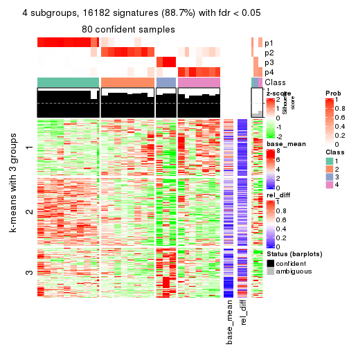
get_signatures(res, k = 5)
get_signatures(res, k = 6)
Signature heatmaps where rows are not scaled:
get_signatures(res, k = 2, scale_rows = FALSE)
get_signatures(res, k = 3, scale_rows = FALSE)
get_signatures(res, k = 4, scale_rows = FALSE)
get_signatures(res, k = 5, scale_rows = FALSE)
get_signatures(res, k = 6, scale_rows = FALSE)
Compare the overlap of signatures from different k:
compare_signatures(res)
get_signature() returns a data frame invisibly. TO get the list of signatures, the function
call should be assigned to a variable explicitly. In following code, if plot argument is set
to FALSE, no heatmap is plotted while only the differential analysis is performed.
# code only for demonstration
tb = get_signature(res, k = ..., plot = FALSE)
An example of the output of tb is:
#> which_row fdr mean_1 mean_2 scaled_mean_1 scaled_mean_2 km
#> 1 38 0.042760348 8.373488 9.131774 -0.5533452 0.5164555 1
#> 2 40 0.018707592 7.106213 8.469186 -0.6173731 0.5762149 1
#> 3 55 0.019134737 10.221463 11.207825 -0.6159697 0.5749050 1
#> 4 59 0.006059896 5.921854 7.869574 -0.6899429 0.6439467 1
#> 5 60 0.018055526 8.928898 10.211722 -0.6204761 0.5791110 1
#> 6 98 0.009384629 15.714769 14.887706 0.6635654 -0.6193277 2
...
The columns in tb are:
which_row: row indices corresponding to the input matrix.fdr: FDR for the differential test. mean_x: The mean value in group x.scaled_mean_x: The mean value in group x after rows are scaled.km: Row groups if k-means clustering is applied to rows.UMAP plot which shows how samples are separated.
dimension_reduction(res, k = 2, method = "UMAP")
dimension_reduction(res, k = 3, method = "UMAP")
dimension_reduction(res, k = 4, method = "UMAP")
dimension_reduction(res, k = 5, method = "UMAP")
dimension_reduction(res, k = 6, method = "UMAP")
Following heatmap shows how subgroups are split when increasing k:
collect_classes(res)
If matrix rows can be associated to genes, consider to use GO_Enrichment(res,
...) to perform function enrichment for the signature genes.
The object with results only for a single top-value method and a single partition method can be extracted as:
res = res_list["MAD", "hclust"]
# you can also extract it by
# res = res_list["MAD:hclust"]
A summary of res and all the functions that can be applied to it:
res
#> A 'ConsensusPartition' object with k = 2, 3, 4, 5, 6.
#> On a matrix with 18243 rows and 85 columns.
#> Top rows (1000, 2000, 3000, 4000, 5000) are extracted by 'MAD' method.
#> Subgroups are detected by 'hclust' method.
#> Performed in total 1250 partitions by row resampling.
#> Best k for subgroups seems to be 3.
#>
#> Following methods can be applied to this 'ConsensusPartition' object:
#> [1] "cola_report" "collect_classes" "collect_plots"
#> [4] "collect_stats" "colnames" "compare_signatures"
#> [7] "consensus_heatmap" "dimension_reduction" "functional_enrichment"
#> [10] "get_anno_col" "get_anno" "get_classes"
#> [13] "get_consensus" "get_matrix" "get_membership"
#> [16] "get_param" "get_signatures" "get_stats"
#> [19] "is_best_k" "is_stable_k" "membership_heatmap"
#> [22] "ncol" "nrow" "plot_ecdf"
#> [25] "rownames" "select_partition_number" "show"
#> [28] "suggest_best_k" "test_to_known_factors"
collect_plots() function collects all the plots made from res for all k (number of partitions)
into one single page to provide an easy and fast comparison between different k.
collect_plots(res)
The plots are:
k and the heatmap of
predicted classes for each k.k.k.k.All the plots in panels can be made by individual functions and they are plotted later in this section.
select_partition_number() produces several plots showing different
statistics for choosing “optimized” k. There are following statistics:
k;k, the area increased is defined as \(A_k - A_{k-1}\).The detailed explanations of these statistics can be found in the cola vignette.
Generally speaking, lower PAC score, higher mean silhouette score or higher
concordance corresponds to better partition. Rand index and Jaccard index
measure how similar the current partition is compared to partition with k-1.
If they are too similar, we won't accept k is better than k-1.
select_partition_number(res)
The numeric values for all these statistics can be obtained by get_stats().
get_stats(res)
#> k 1-PAC mean_silhouette concordance area_increased Rand Jaccard
#> 2 2 0.431 0.940 0.867 0.3920 0.525 0.525
#> 3 3 0.800 0.925 0.970 0.4218 0.921 0.850
#> 4 4 0.713 0.815 0.880 0.1910 0.871 0.710
#> 5 5 0.716 0.807 0.877 0.0308 0.997 0.992
#> 6 6 0.788 0.868 0.904 0.0575 0.962 0.880
suggest_best_k() suggests the best \(k\) based on these statistics. The rules are as follows:
NA.suggest_best_k(res)
#> [1] 3
Following shows the table of the partitions (You need to click the show/hide
code output link to see it). The membership matrix (columns with name p*)
is inferred by
clue::cl_consensus()
function with the SE method. Basically the value in the membership matrix
represents the probability to belong to a certain group. The finall class
label for an item is determined with the group with highest probability it
belongs to.
In get_classes() function, the entropy is calculated from the membership
matrix and the silhouette score is calculated from the consensus matrix.
cbind(get_classes(res, k = 2), get_membership(res, k = 2))
#> class entropy silhouette p1 p2
#> ERR532547 2 0.469 0.829 0.100 0.900
#> ERR532548 2 0.469 0.829 0.100 0.900
#> ERR532549 2 0.469 0.829 0.100 0.900
#> ERR532576 1 0.814 1.000 0.748 0.252
#> ERR532577 1 0.814 1.000 0.748 0.252
#> ERR532578 1 0.814 1.000 0.748 0.252
#> ERR532593 1 0.814 1.000 0.748 0.252
#> ERR532594 1 0.814 1.000 0.748 0.252
#> ERR532595 1 0.814 1.000 0.748 0.252
#> ERR532596 2 0.000 0.945 0.000 1.000
#> ERR532597 2 0.000 0.945 0.000 1.000
#> ERR532598 2 0.000 0.945 0.000 1.000
#> ERR532599 2 0.000 0.945 0.000 1.000
#> ERR532600 2 0.000 0.945 0.000 1.000
#> ERR532601 2 0.000 0.945 0.000 1.000
#> ERR532602 1 0.814 1.000 0.748 0.252
#> ERR532603 1 0.814 1.000 0.748 0.252
#> ERR532604 1 0.814 1.000 0.748 0.252
#> ERR532605 1 0.814 1.000 0.748 0.252
#> ERR532606 1 0.814 1.000 0.748 0.252
#> ERR532607 1 0.814 1.000 0.748 0.252
#> ERR532608 2 0.469 0.829 0.100 0.900
#> ERR532609 2 0.469 0.829 0.100 0.900
#> ERR532610 2 0.469 0.829 0.100 0.900
#> ERR532611 1 0.814 1.000 0.748 0.252
#> ERR532612 1 0.814 1.000 0.748 0.252
#> ERR532613 1 0.814 1.000 0.748 0.252
#> ERR532550 1 0.814 1.000 0.748 0.252
#> ERR532551 2 0.000 0.945 0.000 1.000
#> ERR532552 2 0.000 0.945 0.000 1.000
#> ERR532553 2 0.000 0.945 0.000 1.000
#> ERR532554 2 0.000 0.945 0.000 1.000
#> ERR532555 2 0.000 0.945 0.000 1.000
#> ERR532556 2 0.000 0.945 0.000 1.000
#> ERR532557 2 0.000 0.945 0.000 1.000
#> ERR532558 2 0.000 0.945 0.000 1.000
#> ERR532559 2 0.000 0.945 0.000 1.000
#> ERR532560 1 0.814 1.000 0.748 0.252
#> ERR532561 1 0.814 1.000 0.748 0.252
#> ERR532562 1 0.814 1.000 0.748 0.252
#> ERR532563 2 0.000 0.945 0.000 1.000
#> ERR532564 2 0.000 0.945 0.000 1.000
#> ERR532565 2 0.000 0.945 0.000 1.000
#> ERR532566 2 0.814 0.695 0.252 0.748
#> ERR532567 2 0.814 0.695 0.252 0.748
#> ERR532568 2 0.814 0.695 0.252 0.748
#> ERR532569 1 0.814 1.000 0.748 0.252
#> ERR532570 1 0.814 1.000 0.748 0.252
#> ERR532571 1 0.814 1.000 0.748 0.252
#> ERR532572 2 0.000 0.945 0.000 1.000
#> ERR532573 2 0.000 0.945 0.000 1.000
#> ERR532574 2 0.000 0.945 0.000 1.000
#> ERR532575 2 0.000 0.945 0.000 1.000
#> ERR532579 1 0.814 1.000 0.748 0.252
#> ERR532580 1 0.814 1.000 0.748 0.252
#> ERR532581 2 0.000 0.945 0.000 1.000
#> ERR532582 2 0.000 0.945 0.000 1.000
#> ERR532583 2 0.000 0.945 0.000 1.000
#> ERR532584 2 0.000 0.945 0.000 1.000
#> ERR532585 2 0.000 0.945 0.000 1.000
#> ERR532586 2 0.000 0.945 0.000 1.000
#> ERR532587 2 0.000 0.945 0.000 1.000
#> ERR532588 2 0.000 0.945 0.000 1.000
#> ERR532589 2 0.000 0.945 0.000 1.000
#> ERR532590 2 0.000 0.945 0.000 1.000
#> ERR532591 1 0.814 1.000 0.748 0.252
#> ERR532592 1 0.814 1.000 0.748 0.252
#> ERR532439 2 0.000 0.945 0.000 1.000
#> ERR532440 2 0.000 0.945 0.000 1.000
#> ERR532441 2 0.000 0.945 0.000 1.000
#> ERR532442 1 0.814 1.000 0.748 0.252
#> ERR532443 1 0.814 1.000 0.748 0.252
#> ERR532444 1 0.814 1.000 0.748 0.252
#> ERR532445 1 0.814 1.000 0.748 0.252
#> ERR532446 1 0.814 1.000 0.748 0.252
#> ERR532447 1 0.814 1.000 0.748 0.252
#> ERR532433 2 0.000 0.945 0.000 1.000
#> ERR532434 2 0.000 0.945 0.000 1.000
#> ERR532435 2 0.000 0.945 0.000 1.000
#> ERR532436 2 0.000 0.945 0.000 1.000
#> ERR532437 2 0.000 0.945 0.000 1.000
#> ERR532438 2 0.000 0.945 0.000 1.000
#> ERR532614 2 0.814 0.695 0.252 0.748
#> ERR532615 2 0.814 0.695 0.252 0.748
#> ERR532616 2 0.814 0.695 0.252 0.748
cbind(get_classes(res, k = 3), get_membership(res, k = 3))
#> class entropy silhouette p1 p2 p3
#> ERR532547 2 0.550 0.618 0.292 0.708 0
#> ERR532548 2 0.550 0.618 0.292 0.708 0
#> ERR532549 2 0.550 0.618 0.292 0.708 0
#> ERR532576 1 0.000 0.964 1.000 0.000 0
#> ERR532577 1 0.000 0.964 1.000 0.000 0
#> ERR532578 1 0.000 0.964 1.000 0.000 0
#> ERR532593 1 0.000 0.964 1.000 0.000 0
#> ERR532594 1 0.000 0.964 1.000 0.000 0
#> ERR532595 1 0.000 0.964 1.000 0.000 0
#> ERR532596 2 0.000 0.953 0.000 1.000 0
#> ERR532597 2 0.000 0.953 0.000 1.000 0
#> ERR532598 2 0.000 0.953 0.000 1.000 0
#> ERR532599 2 0.000 0.953 0.000 1.000 0
#> ERR532600 2 0.000 0.953 0.000 1.000 0
#> ERR532601 2 0.000 0.953 0.000 1.000 0
#> ERR532602 1 0.000 0.964 1.000 0.000 0
#> ERR532603 1 0.000 0.964 1.000 0.000 0
#> ERR532604 1 0.000 0.964 1.000 0.000 0
#> ERR532605 1 0.000 0.964 1.000 0.000 0
#> ERR532606 1 0.000 0.964 1.000 0.000 0
#> ERR532607 1 0.000 0.964 1.000 0.000 0
#> ERR532608 2 0.550 0.618 0.292 0.708 0
#> ERR532609 2 0.550 0.618 0.292 0.708 0
#> ERR532610 2 0.550 0.618 0.292 0.708 0
#> ERR532611 1 0.000 0.964 1.000 0.000 0
#> ERR532612 1 0.000 0.964 1.000 0.000 0
#> ERR532613 1 0.000 0.964 1.000 0.000 0
#> ERR532550 1 0.000 0.964 1.000 0.000 0
#> ERR532551 2 0.000 0.953 0.000 1.000 0
#> ERR532552 2 0.000 0.953 0.000 1.000 0
#> ERR532553 2 0.000 0.953 0.000 1.000 0
#> ERR532554 2 0.000 0.953 0.000 1.000 0
#> ERR532555 2 0.000 0.953 0.000 1.000 0
#> ERR532556 2 0.000 0.953 0.000 1.000 0
#> ERR532557 2 0.000 0.953 0.000 1.000 0
#> ERR532558 2 0.000 0.953 0.000 1.000 0
#> ERR532559 2 0.000 0.953 0.000 1.000 0
#> ERR532560 1 0.000 0.964 1.000 0.000 0
#> ERR532561 1 0.000 0.964 1.000 0.000 0
#> ERR532562 1 0.000 0.964 1.000 0.000 0
#> ERR532563 2 0.000 0.953 0.000 1.000 0
#> ERR532564 2 0.000 0.953 0.000 1.000 0
#> ERR532565 2 0.000 0.953 0.000 1.000 0
#> ERR532566 3 0.000 1.000 0.000 0.000 1
#> ERR532567 3 0.000 1.000 0.000 0.000 1
#> ERR532568 3 0.000 1.000 0.000 0.000 1
#> ERR532569 1 0.000 0.964 1.000 0.000 0
#> ERR532570 1 0.000 0.964 1.000 0.000 0
#> ERR532571 1 0.000 0.964 1.000 0.000 0
#> ERR532572 2 0.000 0.953 0.000 1.000 0
#> ERR532573 2 0.000 0.953 0.000 1.000 0
#> ERR532574 2 0.000 0.953 0.000 1.000 0
#> ERR532575 2 0.000 0.953 0.000 1.000 0
#> ERR532579 1 0.445 0.718 0.808 0.192 0
#> ERR532580 1 0.445 0.718 0.808 0.192 0
#> ERR532581 2 0.000 0.953 0.000 1.000 0
#> ERR532582 2 0.000 0.953 0.000 1.000 0
#> ERR532583 2 0.000 0.953 0.000 1.000 0
#> ERR532584 2 0.000 0.953 0.000 1.000 0
#> ERR532585 2 0.000 0.953 0.000 1.000 0
#> ERR532586 2 0.000 0.953 0.000 1.000 0
#> ERR532587 2 0.000 0.953 0.000 1.000 0
#> ERR532588 2 0.000 0.953 0.000 1.000 0
#> ERR532589 2 0.000 0.953 0.000 1.000 0
#> ERR532590 2 0.000 0.953 0.000 1.000 0
#> ERR532591 1 0.445 0.718 0.808 0.192 0
#> ERR532592 1 0.445 0.718 0.808 0.192 0
#> ERR532439 2 0.000 0.953 0.000 1.000 0
#> ERR532440 2 0.000 0.953 0.000 1.000 0
#> ERR532441 2 0.000 0.953 0.000 1.000 0
#> ERR532442 1 0.000 0.964 1.000 0.000 0
#> ERR532443 1 0.000 0.964 1.000 0.000 0
#> ERR532444 1 0.000 0.964 1.000 0.000 0
#> ERR532445 1 0.000 0.964 1.000 0.000 0
#> ERR532446 1 0.000 0.964 1.000 0.000 0
#> ERR532447 1 0.000 0.964 1.000 0.000 0
#> ERR532433 2 0.000 0.953 0.000 1.000 0
#> ERR532434 2 0.000 0.953 0.000 1.000 0
#> ERR532435 2 0.000 0.953 0.000 1.000 0
#> ERR532436 2 0.000 0.953 0.000 1.000 0
#> ERR532437 2 0.000 0.953 0.000 1.000 0
#> ERR532438 2 0.000 0.953 0.000 1.000 0
#> ERR532614 3 0.000 1.000 0.000 0.000 1
#> ERR532615 3 0.000 1.000 0.000 0.000 1
#> ERR532616 3 0.000 1.000 0.000 0.000 1
cbind(get_classes(res, k = 4), get_membership(res, k = 4))
#> class entropy silhouette p1 p2 p3 p4
#> ERR532547 2 0.633 0.479 0.292 0.616 0.000 0.092
#> ERR532548 2 0.633 0.479 0.292 0.616 0.000 0.092
#> ERR532549 2 0.633 0.479 0.292 0.616 0.000 0.092
#> ERR532576 1 0.000 0.960 1.000 0.000 0.000 0.000
#> ERR532577 1 0.000 0.960 1.000 0.000 0.000 0.000
#> ERR532578 1 0.000 0.960 1.000 0.000 0.000 0.000
#> ERR532593 1 0.000 0.960 1.000 0.000 0.000 0.000
#> ERR532594 1 0.000 0.960 1.000 0.000 0.000 0.000
#> ERR532595 1 0.000 0.960 1.000 0.000 0.000 0.000
#> ERR532596 4 0.466 0.918 0.000 0.348 0.000 0.652
#> ERR532597 4 0.466 0.918 0.000 0.348 0.000 0.652
#> ERR532598 4 0.466 0.918 0.000 0.348 0.000 0.652
#> ERR532599 2 0.384 0.555 0.000 0.776 0.000 0.224
#> ERR532600 2 0.384 0.555 0.000 0.776 0.000 0.224
#> ERR532601 2 0.384 0.555 0.000 0.776 0.000 0.224
#> ERR532602 1 0.000 0.960 1.000 0.000 0.000 0.000
#> ERR532603 1 0.000 0.960 1.000 0.000 0.000 0.000
#> ERR532604 1 0.000 0.960 1.000 0.000 0.000 0.000
#> ERR532605 1 0.000 0.960 1.000 0.000 0.000 0.000
#> ERR532606 1 0.000 0.960 1.000 0.000 0.000 0.000
#> ERR532607 1 0.000 0.960 1.000 0.000 0.000 0.000
#> ERR532608 2 0.633 0.479 0.292 0.616 0.000 0.092
#> ERR532609 2 0.633 0.479 0.292 0.616 0.000 0.092
#> ERR532610 2 0.633 0.479 0.292 0.616 0.000 0.092
#> ERR532611 1 0.000 0.960 1.000 0.000 0.000 0.000
#> ERR532612 1 0.000 0.960 1.000 0.000 0.000 0.000
#> ERR532613 1 0.000 0.960 1.000 0.000 0.000 0.000
#> ERR532550 1 0.164 0.916 0.940 0.000 0.000 0.060
#> ERR532551 2 0.000 0.778 0.000 1.000 0.000 0.000
#> ERR532552 2 0.000 0.778 0.000 1.000 0.000 0.000
#> ERR532553 2 0.000 0.778 0.000 1.000 0.000 0.000
#> ERR532554 4 0.312 0.737 0.000 0.156 0.000 0.844
#> ERR532555 4 0.312 0.737 0.000 0.156 0.000 0.844
#> ERR532556 4 0.312 0.737 0.000 0.156 0.000 0.844
#> ERR532557 2 0.000 0.778 0.000 1.000 0.000 0.000
#> ERR532558 2 0.000 0.778 0.000 1.000 0.000 0.000
#> ERR532559 2 0.000 0.778 0.000 1.000 0.000 0.000
#> ERR532560 1 0.000 0.960 1.000 0.000 0.000 0.000
#> ERR532561 1 0.000 0.960 1.000 0.000 0.000 0.000
#> ERR532562 1 0.000 0.960 1.000 0.000 0.000 0.000
#> ERR532563 2 0.450 0.290 0.000 0.684 0.000 0.316
#> ERR532564 2 0.450 0.290 0.000 0.684 0.000 0.316
#> ERR532565 2 0.450 0.290 0.000 0.684 0.000 0.316
#> ERR532566 3 0.000 0.984 0.000 0.000 1.000 0.000
#> ERR532567 3 0.000 0.984 0.000 0.000 1.000 0.000
#> ERR532568 3 0.000 0.984 0.000 0.000 1.000 0.000
#> ERR532569 1 0.000 0.960 1.000 0.000 0.000 0.000
#> ERR532570 1 0.000 0.960 1.000 0.000 0.000 0.000
#> ERR532571 1 0.000 0.960 1.000 0.000 0.000 0.000
#> ERR532572 4 0.466 0.918 0.000 0.348 0.000 0.652
#> ERR532573 4 0.466 0.918 0.000 0.348 0.000 0.652
#> ERR532574 4 0.466 0.918 0.000 0.348 0.000 0.652
#> ERR532575 2 0.222 0.739 0.000 0.908 0.000 0.092
#> ERR532579 1 0.438 0.671 0.704 0.000 0.000 0.296
#> ERR532580 1 0.438 0.671 0.704 0.000 0.000 0.296
#> ERR532581 4 0.466 0.918 0.000 0.348 0.000 0.652
#> ERR532582 4 0.466 0.918 0.000 0.348 0.000 0.652
#> ERR532583 4 0.466 0.918 0.000 0.348 0.000 0.652
#> ERR532584 2 0.222 0.739 0.000 0.908 0.000 0.092
#> ERR532585 2 0.222 0.739 0.000 0.908 0.000 0.092
#> ERR532586 2 0.222 0.739 0.000 0.908 0.000 0.092
#> ERR532587 4 0.466 0.918 0.000 0.348 0.000 0.652
#> ERR532588 4 0.466 0.918 0.000 0.348 0.000 0.652
#> ERR532589 2 0.222 0.739 0.000 0.908 0.000 0.092
#> ERR532590 2 0.222 0.739 0.000 0.908 0.000 0.092
#> ERR532591 1 0.438 0.671 0.704 0.000 0.000 0.296
#> ERR532592 1 0.438 0.671 0.704 0.000 0.000 0.296
#> ERR532439 2 0.000 0.778 0.000 1.000 0.000 0.000
#> ERR532440 2 0.000 0.778 0.000 1.000 0.000 0.000
#> ERR532441 2 0.000 0.778 0.000 1.000 0.000 0.000
#> ERR532442 1 0.000 0.960 1.000 0.000 0.000 0.000
#> ERR532443 1 0.000 0.960 1.000 0.000 0.000 0.000
#> ERR532444 1 0.000 0.960 1.000 0.000 0.000 0.000
#> ERR532445 1 0.000 0.960 1.000 0.000 0.000 0.000
#> ERR532446 1 0.000 0.960 1.000 0.000 0.000 0.000
#> ERR532447 1 0.000 0.960 1.000 0.000 0.000 0.000
#> ERR532433 2 0.000 0.778 0.000 1.000 0.000 0.000
#> ERR532434 2 0.000 0.778 0.000 1.000 0.000 0.000
#> ERR532435 2 0.000 0.778 0.000 1.000 0.000 0.000
#> ERR532436 2 0.000 0.778 0.000 1.000 0.000 0.000
#> ERR532437 2 0.000 0.778 0.000 1.000 0.000 0.000
#> ERR532438 2 0.000 0.778 0.000 1.000 0.000 0.000
#> ERR532614 3 0.147 0.984 0.000 0.000 0.948 0.052
#> ERR532615 3 0.147 0.984 0.000 0.000 0.948 0.052
#> ERR532616 3 0.147 0.984 0.000 0.000 0.948 0.052
cbind(get_classes(res, k = 5), get_membership(res, k = 5))
#> class entropy silhouette p1 p2 p3 p4 p5
#> ERR532547 2 0.545 0.531 0.292 0.616 0.000 0.092 0.000
#> ERR532548 2 0.545 0.531 0.292 0.616 0.000 0.092 0.000
#> ERR532549 2 0.545 0.531 0.292 0.616 0.000 0.092 0.000
#> ERR532576 1 0.000 0.932 1.000 0.000 0.000 0.000 0.000
#> ERR532577 1 0.000 0.932 1.000 0.000 0.000 0.000 0.000
#> ERR532578 1 0.000 0.932 1.000 0.000 0.000 0.000 0.000
#> ERR532593 1 0.000 0.932 1.000 0.000 0.000 0.000 0.000
#> ERR532594 1 0.000 0.932 1.000 0.000 0.000 0.000 0.000
#> ERR532595 1 0.000 0.932 1.000 0.000 0.000 0.000 0.000
#> ERR532596 4 0.351 0.928 0.000 0.252 0.000 0.748 0.000
#> ERR532597 4 0.351 0.928 0.000 0.252 0.000 0.748 0.000
#> ERR532598 4 0.351 0.928 0.000 0.252 0.000 0.748 0.000
#> ERR532599 2 0.345 0.595 0.000 0.756 0.000 0.244 0.000
#> ERR532600 2 0.345 0.595 0.000 0.756 0.000 0.244 0.000
#> ERR532601 2 0.345 0.595 0.000 0.756 0.000 0.244 0.000
#> ERR532602 1 0.000 0.932 1.000 0.000 0.000 0.000 0.000
#> ERR532603 1 0.000 0.932 1.000 0.000 0.000 0.000 0.000
#> ERR532604 1 0.000 0.932 1.000 0.000 0.000 0.000 0.000
#> ERR532605 1 0.000 0.932 1.000 0.000 0.000 0.000 0.000
#> ERR532606 1 0.000 0.932 1.000 0.000 0.000 0.000 0.000
#> ERR532607 1 0.000 0.932 1.000 0.000 0.000 0.000 0.000
#> ERR532608 2 0.545 0.531 0.292 0.616 0.000 0.092 0.000
#> ERR532609 2 0.545 0.531 0.292 0.616 0.000 0.092 0.000
#> ERR532610 2 0.545 0.531 0.292 0.616 0.000 0.092 0.000
#> ERR532611 1 0.000 0.932 1.000 0.000 0.000 0.000 0.000
#> ERR532612 1 0.000 0.932 1.000 0.000 0.000 0.000 0.000
#> ERR532613 1 0.000 0.932 1.000 0.000 0.000 0.000 0.000
#> ERR532550 1 0.357 0.759 0.804 0.000 0.168 0.028 0.000
#> ERR532551 2 0.000 0.803 0.000 1.000 0.000 0.000 0.000
#> ERR532552 2 0.000 0.803 0.000 1.000 0.000 0.000 0.000
#> ERR532553 2 0.000 0.803 0.000 1.000 0.000 0.000 0.000
#> ERR532554 4 0.141 0.714 0.000 0.060 0.000 0.940 0.000
#> ERR532555 4 0.141 0.714 0.000 0.060 0.000 0.940 0.000
#> ERR532556 4 0.141 0.714 0.000 0.060 0.000 0.940 0.000
#> ERR532557 2 0.000 0.803 0.000 1.000 0.000 0.000 0.000
#> ERR532558 2 0.000 0.803 0.000 1.000 0.000 0.000 0.000
#> ERR532559 2 0.000 0.803 0.000 1.000 0.000 0.000 0.000
#> ERR532560 1 0.000 0.932 1.000 0.000 0.000 0.000 0.000
#> ERR532561 1 0.000 0.932 1.000 0.000 0.000 0.000 0.000
#> ERR532562 1 0.000 0.932 1.000 0.000 0.000 0.000 0.000
#> ERR532563 2 0.398 0.371 0.000 0.660 0.000 0.340 0.000
#> ERR532564 2 0.398 0.371 0.000 0.660 0.000 0.340 0.000
#> ERR532565 2 0.398 0.371 0.000 0.660 0.000 0.340 0.000
#> ERR532566 5 0.000 1.000 0.000 0.000 0.000 0.000 1.000
#> ERR532567 5 0.000 1.000 0.000 0.000 0.000 0.000 1.000
#> ERR532568 5 0.000 1.000 0.000 0.000 0.000 0.000 1.000
#> ERR532569 1 0.000 0.932 1.000 0.000 0.000 0.000 0.000
#> ERR532570 1 0.000 0.932 1.000 0.000 0.000 0.000 0.000
#> ERR532571 1 0.000 0.932 1.000 0.000 0.000 0.000 0.000
#> ERR532572 4 0.351 0.928 0.000 0.252 0.000 0.748 0.000
#> ERR532573 4 0.351 0.928 0.000 0.252 0.000 0.748 0.000
#> ERR532574 4 0.351 0.928 0.000 0.252 0.000 0.748 0.000
#> ERR532575 2 0.191 0.771 0.000 0.908 0.000 0.092 0.000
#> ERR532579 1 0.630 0.385 0.532 0.000 0.216 0.252 0.000
#> ERR532580 1 0.630 0.385 0.532 0.000 0.216 0.252 0.000
#> ERR532581 4 0.351 0.928 0.000 0.252 0.000 0.748 0.000
#> ERR532582 4 0.351 0.928 0.000 0.252 0.000 0.748 0.000
#> ERR532583 4 0.351 0.928 0.000 0.252 0.000 0.748 0.000
#> ERR532584 2 0.191 0.771 0.000 0.908 0.000 0.092 0.000
#> ERR532585 2 0.191 0.771 0.000 0.908 0.000 0.092 0.000
#> ERR532586 2 0.191 0.771 0.000 0.908 0.000 0.092 0.000
#> ERR532587 4 0.351 0.928 0.000 0.252 0.000 0.748 0.000
#> ERR532588 4 0.351 0.928 0.000 0.252 0.000 0.748 0.000
#> ERR532589 2 0.191 0.771 0.000 0.908 0.000 0.092 0.000
#> ERR532590 2 0.191 0.771 0.000 0.908 0.000 0.092 0.000
#> ERR532591 1 0.630 0.385 0.532 0.000 0.216 0.252 0.000
#> ERR532592 1 0.630 0.385 0.532 0.000 0.216 0.252 0.000
#> ERR532439 2 0.000 0.803 0.000 1.000 0.000 0.000 0.000
#> ERR532440 2 0.000 0.803 0.000 1.000 0.000 0.000 0.000
#> ERR532441 2 0.000 0.803 0.000 1.000 0.000 0.000 0.000
#> ERR532442 1 0.000 0.932 1.000 0.000 0.000 0.000 0.000
#> ERR532443 1 0.000 0.932 1.000 0.000 0.000 0.000 0.000
#> ERR532444 1 0.000 0.932 1.000 0.000 0.000 0.000 0.000
#> ERR532445 1 0.000 0.932 1.000 0.000 0.000 0.000 0.000
#> ERR532446 1 0.000 0.932 1.000 0.000 0.000 0.000 0.000
#> ERR532447 1 0.000 0.932 1.000 0.000 0.000 0.000 0.000
#> ERR532433 2 0.000 0.803 0.000 1.000 0.000 0.000 0.000
#> ERR532434 2 0.000 0.803 0.000 1.000 0.000 0.000 0.000
#> ERR532435 2 0.000 0.803 0.000 1.000 0.000 0.000 0.000
#> ERR532436 2 0.000 0.803 0.000 1.000 0.000 0.000 0.000
#> ERR532437 2 0.000 0.803 0.000 1.000 0.000 0.000 0.000
#> ERR532438 2 0.000 0.803 0.000 1.000 0.000 0.000 0.000
#> ERR532614 3 0.324 1.000 0.000 0.000 0.784 0.000 0.216
#> ERR532615 3 0.324 1.000 0.000 0.000 0.784 0.000 0.216
#> ERR532616 3 0.324 1.000 0.000 0.000 0.784 0.000 0.216
cbind(get_classes(res, k = 6), get_membership(res, k = 6))
#> class entropy silhouette p1 p2 p3 p4 p5 p6
#> ERR532547 2 0.511 0.619 0.136 0.616 0 0.248 0 0.000
#> ERR532548 2 0.511 0.619 0.136 0.616 0 0.248 0 0.000
#> ERR532549 2 0.511 0.619 0.136 0.616 0 0.248 0 0.000
#> ERR532576 1 0.000 1.000 1.000 0.000 0 0.000 0 0.000
#> ERR532577 1 0.000 1.000 1.000 0.000 0 0.000 0 0.000
#> ERR532578 1 0.000 1.000 1.000 0.000 0 0.000 0 0.000
#> ERR532593 1 0.000 1.000 1.000 0.000 0 0.000 0 0.000
#> ERR532594 1 0.000 1.000 1.000 0.000 0 0.000 0 0.000
#> ERR532595 1 0.000 1.000 1.000 0.000 0 0.000 0 0.000
#> ERR532596 4 0.242 0.937 0.000 0.156 0 0.844 0 0.000
#> ERR532597 4 0.242 0.937 0.000 0.156 0 0.844 0 0.000
#> ERR532598 4 0.242 0.937 0.000 0.156 0 0.844 0 0.000
#> ERR532599 2 0.335 0.611 0.000 0.712 0 0.288 0 0.000
#> ERR532600 2 0.335 0.611 0.000 0.712 0 0.288 0 0.000
#> ERR532601 2 0.335 0.611 0.000 0.712 0 0.288 0 0.000
#> ERR532602 1 0.000 1.000 1.000 0.000 0 0.000 0 0.000
#> ERR532603 1 0.000 1.000 1.000 0.000 0 0.000 0 0.000
#> ERR532604 1 0.000 1.000 1.000 0.000 0 0.000 0 0.000
#> ERR532605 1 0.000 1.000 1.000 0.000 0 0.000 0 0.000
#> ERR532606 1 0.000 1.000 1.000 0.000 0 0.000 0 0.000
#> ERR532607 1 0.000 1.000 1.000 0.000 0 0.000 0 0.000
#> ERR532608 2 0.511 0.619 0.136 0.616 0 0.248 0 0.000
#> ERR532609 2 0.511 0.619 0.136 0.616 0 0.248 0 0.000
#> ERR532610 2 0.511 0.619 0.136 0.616 0 0.248 0 0.000
#> ERR532611 1 0.000 1.000 1.000 0.000 0 0.000 0 0.000
#> ERR532612 1 0.000 1.000 1.000 0.000 0 0.000 0 0.000
#> ERR532613 1 0.000 1.000 1.000 0.000 0 0.000 0 0.000
#> ERR532550 6 0.474 0.488 0.164 0.000 0 0.156 0 0.680
#> ERR532551 2 0.000 0.833 0.000 1.000 0 0.000 0 0.000
#> ERR532552 2 0.000 0.833 0.000 1.000 0 0.000 0 0.000
#> ERR532553 2 0.000 0.833 0.000 1.000 0 0.000 0 0.000
#> ERR532554 4 0.273 0.727 0.000 0.000 0 0.808 0 0.192
#> ERR532555 4 0.273 0.727 0.000 0.000 0 0.808 0 0.192
#> ERR532556 4 0.273 0.727 0.000 0.000 0 0.808 0 0.192
#> ERR532557 2 0.000 0.833 0.000 1.000 0 0.000 0 0.000
#> ERR532558 2 0.000 0.833 0.000 1.000 0 0.000 0 0.000
#> ERR532559 2 0.000 0.833 0.000 1.000 0 0.000 0 0.000
#> ERR532560 1 0.000 1.000 1.000 0.000 0 0.000 0 0.000
#> ERR532561 1 0.000 1.000 1.000 0.000 0 0.000 0 0.000
#> ERR532562 1 0.000 1.000 1.000 0.000 0 0.000 0 0.000
#> ERR532563 2 0.363 0.460 0.000 0.644 0 0.356 0 0.000
#> ERR532564 2 0.363 0.460 0.000 0.644 0 0.356 0 0.000
#> ERR532565 2 0.363 0.460 0.000 0.644 0 0.356 0 0.000
#> ERR532566 5 0.000 1.000 0.000 0.000 0 0.000 1 0.000
#> ERR532567 5 0.000 1.000 0.000 0.000 0 0.000 1 0.000
#> ERR532568 5 0.000 1.000 0.000 0.000 0 0.000 1 0.000
#> ERR532569 1 0.000 1.000 1.000 0.000 0 0.000 0 0.000
#> ERR532570 1 0.000 1.000 1.000 0.000 0 0.000 0 0.000
#> ERR532571 1 0.000 1.000 1.000 0.000 0 0.000 0 0.000
#> ERR532572 4 0.242 0.937 0.000 0.156 0 0.844 0 0.000
#> ERR532573 4 0.242 0.937 0.000 0.156 0 0.844 0 0.000
#> ERR532574 4 0.242 0.937 0.000 0.156 0 0.844 0 0.000
#> ERR532575 2 0.171 0.809 0.000 0.908 0 0.092 0 0.000
#> ERR532579 6 0.000 0.876 0.000 0.000 0 0.000 0 1.000
#> ERR532580 6 0.000 0.876 0.000 0.000 0 0.000 0 1.000
#> ERR532581 4 0.242 0.937 0.000 0.156 0 0.844 0 0.000
#> ERR532582 4 0.242 0.937 0.000 0.156 0 0.844 0 0.000
#> ERR532583 4 0.242 0.937 0.000 0.156 0 0.844 0 0.000
#> ERR532584 2 0.171 0.809 0.000 0.908 0 0.092 0 0.000
#> ERR532585 2 0.171 0.809 0.000 0.908 0 0.092 0 0.000
#> ERR532586 2 0.171 0.809 0.000 0.908 0 0.092 0 0.000
#> ERR532587 4 0.242 0.937 0.000 0.156 0 0.844 0 0.000
#> ERR532588 4 0.242 0.937 0.000 0.156 0 0.844 0 0.000
#> ERR532589 2 0.171 0.809 0.000 0.908 0 0.092 0 0.000
#> ERR532590 2 0.171 0.809 0.000 0.908 0 0.092 0 0.000
#> ERR532591 6 0.000 0.876 0.000 0.000 0 0.000 0 1.000
#> ERR532592 6 0.000 0.876 0.000 0.000 0 0.000 0 1.000
#> ERR532439 2 0.000 0.833 0.000 1.000 0 0.000 0 0.000
#> ERR532440 2 0.000 0.833 0.000 1.000 0 0.000 0 0.000
#> ERR532441 2 0.000 0.833 0.000 1.000 0 0.000 0 0.000
#> ERR532442 1 0.000 1.000 1.000 0.000 0 0.000 0 0.000
#> ERR532443 1 0.000 1.000 1.000 0.000 0 0.000 0 0.000
#> ERR532444 1 0.000 1.000 1.000 0.000 0 0.000 0 0.000
#> ERR532445 1 0.000 1.000 1.000 0.000 0 0.000 0 0.000
#> ERR532446 1 0.000 1.000 1.000 0.000 0 0.000 0 0.000
#> ERR532447 1 0.000 1.000 1.000 0.000 0 0.000 0 0.000
#> ERR532433 2 0.000 0.833 0.000 1.000 0 0.000 0 0.000
#> ERR532434 2 0.000 0.833 0.000 1.000 0 0.000 0 0.000
#> ERR532435 2 0.000 0.833 0.000 1.000 0 0.000 0 0.000
#> ERR532436 2 0.000 0.833 0.000 1.000 0 0.000 0 0.000
#> ERR532437 2 0.000 0.833 0.000 1.000 0 0.000 0 0.000
#> ERR532438 2 0.000 0.833 0.000 1.000 0 0.000 0 0.000
#> ERR532614 3 0.000 1.000 0.000 0.000 1 0.000 0 0.000
#> ERR532615 3 0.000 1.000 0.000 0.000 1 0.000 0 0.000
#> ERR532616 3 0.000 1.000 0.000 0.000 1 0.000 0 0.000
Heatmaps for the consensus matrix. It visualizes the probability of two samples to be in a same group.
consensus_heatmap(res, k = 2)
consensus_heatmap(res, k = 3)
consensus_heatmap(res, k = 4)

consensus_heatmap(res, k = 5)
consensus_heatmap(res, k = 6)
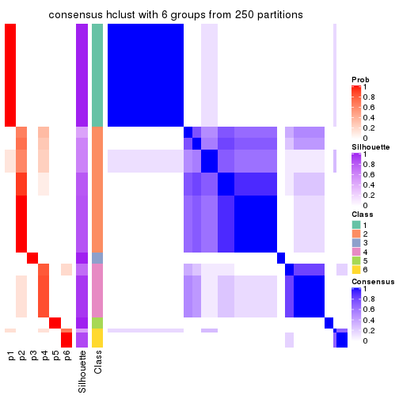
Heatmaps for the membership of samples in all partitions to see how consistent they are:
membership_heatmap(res, k = 2)
membership_heatmap(res, k = 3)

membership_heatmap(res, k = 4)
membership_heatmap(res, k = 5)

membership_heatmap(res, k = 6)
As soon as we have had the classes for columns, we can look for signatures which are significantly different between classes which can be candidate marks for certain classes. Following are the heatmaps for signatures.
Signature heatmaps where rows are scaled:
get_signatures(res, k = 2)
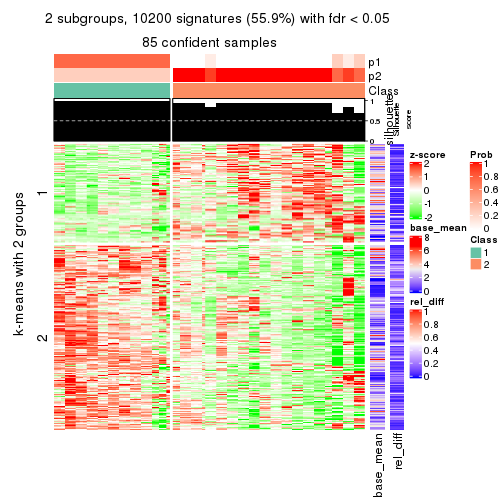
get_signatures(res, k = 3)
get_signatures(res, k = 4)
get_signatures(res, k = 5)
get_signatures(res, k = 6)
Signature heatmaps where rows are not scaled:
get_signatures(res, k = 2, scale_rows = FALSE)
get_signatures(res, k = 3, scale_rows = FALSE)
get_signatures(res, k = 4, scale_rows = FALSE)
get_signatures(res, k = 5, scale_rows = FALSE)

get_signatures(res, k = 6, scale_rows = FALSE)
Compare the overlap of signatures from different k:
compare_signatures(res)
get_signature() returns a data frame invisibly. TO get the list of signatures, the function
call should be assigned to a variable explicitly. In following code, if plot argument is set
to FALSE, no heatmap is plotted while only the differential analysis is performed.
# code only for demonstration
tb = get_signature(res, k = ..., plot = FALSE)
An example of the output of tb is:
#> which_row fdr mean_1 mean_2 scaled_mean_1 scaled_mean_2 km
#> 1 38 0.042760348 8.373488 9.131774 -0.5533452 0.5164555 1
#> 2 40 0.018707592 7.106213 8.469186 -0.6173731 0.5762149 1
#> 3 55 0.019134737 10.221463 11.207825 -0.6159697 0.5749050 1
#> 4 59 0.006059896 5.921854 7.869574 -0.6899429 0.6439467 1
#> 5 60 0.018055526 8.928898 10.211722 -0.6204761 0.5791110 1
#> 6 98 0.009384629 15.714769 14.887706 0.6635654 -0.6193277 2
...
The columns in tb are:
which_row: row indices corresponding to the input matrix.fdr: FDR for the differential test. mean_x: The mean value in group x.scaled_mean_x: The mean value in group x after rows are scaled.km: Row groups if k-means clustering is applied to rows.UMAP plot which shows how samples are separated.
dimension_reduction(res, k = 2, method = "UMAP")

dimension_reduction(res, k = 3, method = "UMAP")
dimension_reduction(res, k = 4, method = "UMAP")

dimension_reduction(res, k = 5, method = "UMAP")
dimension_reduction(res, k = 6, method = "UMAP")
Following heatmap shows how subgroups are split when increasing k:
collect_classes(res)
If matrix rows can be associated to genes, consider to use GO_Enrichment(res,
...) to perform function enrichment for the signature genes.
The object with results only for a single top-value method and a single partition method can be extracted as:
res = res_list["MAD", "kmeans"]
# you can also extract it by
# res = res_list["MAD:kmeans"]
A summary of res and all the functions that can be applied to it:
res
#> A 'ConsensusPartition' object with k = 2, 3, 4, 5, 6.
#> On a matrix with 18243 rows and 85 columns.
#> Top rows (1000, 2000, 3000, 4000, 5000) are extracted by 'MAD' method.
#> Subgroups are detected by 'kmeans' method.
#> Performed in total 1250 partitions by row resampling.
#> Best k for subgroups seems to be 2.
#>
#> Following methods can be applied to this 'ConsensusPartition' object:
#> [1] "cola_report" "collect_classes" "collect_plots"
#> [4] "collect_stats" "colnames" "compare_signatures"
#> [7] "consensus_heatmap" "dimension_reduction" "functional_enrichment"
#> [10] "get_anno_col" "get_anno" "get_classes"
#> [13] "get_consensus" "get_matrix" "get_membership"
#> [16] "get_param" "get_signatures" "get_stats"
#> [19] "is_best_k" "is_stable_k" "membership_heatmap"
#> [22] "ncol" "nrow" "plot_ecdf"
#> [25] "rownames" "select_partition_number" "show"
#> [28] "suggest_best_k" "test_to_known_factors"
collect_plots() function collects all the plots made from res for all k (number of partitions)
into one single page to provide an easy and fast comparison between different k.
collect_plots(res)
The plots are:
k and the heatmap of
predicted classes for each k.k.k.k.All the plots in panels can be made by individual functions and they are plotted later in this section.
select_partition_number() produces several plots showing different
statistics for choosing “optimized” k. There are following statistics:
k;k, the area increased is defined as \(A_k - A_{k-1}\).The detailed explanations of these statistics can be found in the cola vignette.
Generally speaking, lower PAC score, higher mean silhouette score or higher
concordance corresponds to better partition. Rand index and Jaccard index
measure how similar the current partition is compared to partition with k-1.
If they are too similar, we won't accept k is better than k-1.
select_partition_number(res)
The numeric values for all these statistics can be obtained by get_stats().
get_stats(res)
#> k 1-PAC mean_silhouette concordance area_increased Rand Jaccard
#> 2 2 0.490 0.942 0.930 0.4611 0.500 0.500
#> 3 3 0.531 0.604 0.714 0.3363 0.770 0.566
#> 4 4 0.501 0.572 0.720 0.1199 0.939 0.826
#> 5 5 0.526 0.358 0.571 0.0769 0.812 0.502
#> 6 6 0.565 0.461 0.621 0.0463 0.896 0.655
suggest_best_k() suggests the best \(k\) based on these statistics. The rules are as follows:
NA.suggest_best_k(res)
#> [1] 2
Following shows the table of the partitions (You need to click the show/hide
code output link to see it). The membership matrix (columns with name p*)
is inferred by
clue::cl_consensus()
function with the SE method. Basically the value in the membership matrix
represents the probability to belong to a certain group. The finall class
label for an item is determined with the group with highest probability it
belongs to.
In get_classes() function, the entropy is calculated from the membership
matrix and the silhouette score is calculated from the consensus matrix.
cbind(get_classes(res, k = 2), get_membership(res, k = 2))
#> class entropy silhouette p1 p2
#> ERR532547 2 0.0376 0.958 0.004 0.996
#> ERR532548 2 0.0376 0.958 0.004 0.996
#> ERR532549 2 0.0376 0.958 0.004 0.996
#> ERR532576 1 0.4815 0.982 0.896 0.104
#> ERR532577 1 0.4815 0.982 0.896 0.104
#> ERR532578 1 0.4815 0.982 0.896 0.104
#> ERR532593 1 0.4815 0.982 0.896 0.104
#> ERR532594 1 0.4815 0.982 0.896 0.104
#> ERR532595 1 0.4815 0.982 0.896 0.104
#> ERR532596 2 0.0000 0.956 0.000 1.000
#> ERR532597 2 0.0000 0.956 0.000 1.000
#> ERR532598 2 0.0000 0.956 0.000 1.000
#> ERR532599 2 0.0376 0.958 0.004 0.996
#> ERR532600 2 0.0376 0.958 0.004 0.996
#> ERR532601 2 0.0376 0.958 0.004 0.996
#> ERR532602 1 0.4815 0.982 0.896 0.104
#> ERR532603 1 0.4815 0.982 0.896 0.104
#> ERR532604 1 0.4815 0.982 0.896 0.104
#> ERR532605 1 0.4815 0.982 0.896 0.104
#> ERR532606 1 0.4815 0.982 0.896 0.104
#> ERR532607 1 0.4815 0.982 0.896 0.104
#> ERR532608 2 0.0376 0.958 0.004 0.996
#> ERR532609 2 0.0376 0.958 0.004 0.996
#> ERR532610 2 0.0376 0.958 0.004 0.996
#> ERR532611 1 0.4815 0.982 0.896 0.104
#> ERR532612 1 0.4815 0.982 0.896 0.104
#> ERR532613 1 0.4815 0.982 0.896 0.104
#> ERR532550 1 0.4815 0.982 0.896 0.104
#> ERR532551 2 0.8207 0.618 0.256 0.744
#> ERR532552 2 0.8207 0.618 0.256 0.744
#> ERR532553 2 0.8207 0.618 0.256 0.744
#> ERR532554 2 0.0376 0.958 0.004 0.996
#> ERR532555 2 0.0376 0.958 0.004 0.996
#> ERR532556 2 0.0376 0.958 0.004 0.996
#> ERR532557 2 0.0376 0.958 0.004 0.996
#> ERR532558 2 0.0376 0.958 0.004 0.996
#> ERR532559 2 0.0376 0.958 0.004 0.996
#> ERR532560 1 0.4815 0.982 0.896 0.104
#> ERR532561 1 0.4815 0.982 0.896 0.104
#> ERR532562 1 0.4815 0.982 0.896 0.104
#> ERR532563 2 0.0376 0.958 0.004 0.996
#> ERR532564 2 0.0376 0.958 0.004 0.996
#> ERR532565 2 0.0376 0.958 0.004 0.996
#> ERR532566 2 0.4815 0.872 0.104 0.896
#> ERR532567 2 0.4815 0.872 0.104 0.896
#> ERR532568 2 0.4815 0.872 0.104 0.896
#> ERR532569 1 0.4815 0.982 0.896 0.104
#> ERR532570 1 0.4815 0.982 0.896 0.104
#> ERR532571 1 0.4815 0.982 0.896 0.104
#> ERR532572 2 0.0376 0.958 0.004 0.996
#> ERR532573 2 0.0376 0.958 0.004 0.996
#> ERR532574 2 0.0376 0.958 0.004 0.996
#> ERR532575 2 0.7674 0.677 0.224 0.776
#> ERR532579 1 0.6048 0.951 0.852 0.148
#> ERR532580 1 0.6048 0.951 0.852 0.148
#> ERR532581 2 0.0376 0.958 0.004 0.996
#> ERR532582 2 0.0376 0.958 0.004 0.996
#> ERR532583 2 0.0376 0.958 0.004 0.996
#> ERR532584 2 0.0376 0.958 0.004 0.996
#> ERR532585 2 0.0376 0.958 0.004 0.996
#> ERR532586 2 0.0376 0.958 0.004 0.996
#> ERR532587 2 0.0000 0.956 0.000 1.000
#> ERR532588 2 0.0000 0.956 0.000 1.000
#> ERR532589 2 0.0938 0.952 0.012 0.988
#> ERR532590 2 0.0938 0.952 0.012 0.988
#> ERR532591 1 0.6048 0.951 0.852 0.148
#> ERR532592 1 0.6048 0.951 0.852 0.148
#> ERR532439 2 0.0376 0.958 0.004 0.996
#> ERR532440 2 0.0376 0.958 0.004 0.996
#> ERR532441 2 0.0376 0.958 0.004 0.996
#> ERR532442 1 0.4815 0.982 0.896 0.104
#> ERR532443 1 0.4815 0.982 0.896 0.104
#> ERR532444 1 0.4815 0.982 0.896 0.104
#> ERR532445 1 0.4815 0.982 0.896 0.104
#> ERR532446 1 0.4815 0.982 0.896 0.104
#> ERR532447 1 0.4815 0.982 0.896 0.104
#> ERR532433 1 0.6438 0.936 0.836 0.164
#> ERR532434 1 0.6438 0.936 0.836 0.164
#> ERR532435 1 0.6438 0.936 0.836 0.164
#> ERR532436 1 0.6623 0.928 0.828 0.172
#> ERR532437 1 0.6623 0.928 0.828 0.172
#> ERR532438 1 0.6623 0.928 0.828 0.172
#> ERR532614 2 0.4815 0.872 0.104 0.896
#> ERR532615 2 0.4815 0.872 0.104 0.896
#> ERR532616 2 0.4815 0.872 0.104 0.896
cbind(get_classes(res, k = 3), get_membership(res, k = 3))
#> class entropy silhouette p1 p2 p3
#> ERR532547 2 0.663 0.4092 0.008 0.548 0.444
#> ERR532548 2 0.663 0.4092 0.008 0.548 0.444
#> ERR532549 2 0.663 0.4092 0.008 0.548 0.444
#> ERR532576 1 0.280 0.9152 0.908 0.000 0.092
#> ERR532577 1 0.280 0.9152 0.908 0.000 0.092
#> ERR532578 1 0.280 0.9152 0.908 0.000 0.092
#> ERR532593 1 0.216 0.9199 0.936 0.000 0.064
#> ERR532594 1 0.216 0.9199 0.936 0.000 0.064
#> ERR532595 1 0.216 0.9199 0.936 0.000 0.064
#> ERR532596 2 0.511 0.7107 0.008 0.780 0.212
#> ERR532597 2 0.511 0.7107 0.008 0.780 0.212
#> ERR532598 2 0.511 0.7107 0.008 0.780 0.212
#> ERR532599 2 0.665 0.4321 0.008 0.540 0.452
#> ERR532600 2 0.665 0.4321 0.008 0.540 0.452
#> ERR532601 2 0.665 0.4321 0.008 0.540 0.452
#> ERR532602 1 0.280 0.9152 0.908 0.000 0.092
#> ERR532603 1 0.280 0.9152 0.908 0.000 0.092
#> ERR532604 1 0.280 0.9152 0.908 0.000 0.092
#> ERR532605 1 0.288 0.9153 0.904 0.000 0.096
#> ERR532606 1 0.288 0.9153 0.904 0.000 0.096
#> ERR532607 1 0.288 0.9153 0.904 0.000 0.096
#> ERR532608 3 0.658 0.0674 0.008 0.420 0.572
#> ERR532609 3 0.658 0.0674 0.008 0.420 0.572
#> ERR532610 3 0.658 0.0674 0.008 0.420 0.572
#> ERR532611 1 0.280 0.9153 0.908 0.000 0.092
#> ERR532612 1 0.280 0.9153 0.908 0.000 0.092
#> ERR532613 1 0.280 0.9153 0.908 0.000 0.092
#> ERR532550 1 0.207 0.9139 0.940 0.000 0.060
#> ERR532551 3 0.704 0.4411 0.128 0.144 0.728
#> ERR532552 3 0.704 0.4411 0.128 0.144 0.728
#> ERR532553 3 0.704 0.4411 0.128 0.144 0.728
#> ERR532554 2 0.607 0.6466 0.008 0.676 0.316
#> ERR532555 2 0.607 0.6466 0.008 0.676 0.316
#> ERR532556 2 0.607 0.6466 0.008 0.676 0.316
#> ERR532557 3 0.648 0.1150 0.008 0.392 0.600
#> ERR532558 3 0.648 0.1150 0.008 0.392 0.600
#> ERR532559 3 0.648 0.1150 0.008 0.392 0.600
#> ERR532560 1 0.226 0.9072 0.932 0.000 0.068
#> ERR532561 1 0.226 0.9072 0.932 0.000 0.068
#> ERR532562 1 0.226 0.9072 0.932 0.000 0.068
#> ERR532563 2 0.658 0.5354 0.008 0.572 0.420
#> ERR532564 2 0.658 0.5354 0.008 0.572 0.420
#> ERR532565 2 0.658 0.5354 0.008 0.572 0.420
#> ERR532566 2 0.411 0.4864 0.004 0.844 0.152
#> ERR532567 2 0.411 0.4864 0.004 0.844 0.152
#> ERR532568 2 0.411 0.4864 0.004 0.844 0.152
#> ERR532569 1 0.103 0.9212 0.976 0.000 0.024
#> ERR532570 1 0.103 0.9212 0.976 0.000 0.024
#> ERR532571 1 0.103 0.9212 0.976 0.000 0.024
#> ERR532572 2 0.580 0.7029 0.008 0.712 0.280
#> ERR532573 2 0.580 0.7029 0.008 0.712 0.280
#> ERR532574 2 0.580 0.7029 0.008 0.712 0.280
#> ERR532575 3 0.649 0.4302 0.076 0.172 0.752
#> ERR532579 1 0.622 0.7740 0.712 0.024 0.264
#> ERR532580 1 0.622 0.7740 0.712 0.024 0.264
#> ERR532581 2 0.580 0.7081 0.008 0.712 0.280
#> ERR532582 2 0.580 0.7081 0.008 0.712 0.280
#> ERR532583 2 0.580 0.7081 0.008 0.712 0.280
#> ERR532584 3 0.610 0.3381 0.008 0.320 0.672
#> ERR532585 3 0.610 0.3381 0.008 0.320 0.672
#> ERR532586 3 0.610 0.3381 0.008 0.320 0.672
#> ERR532587 2 0.554 0.7127 0.008 0.740 0.252
#> ERR532588 2 0.554 0.7127 0.008 0.740 0.252
#> ERR532589 3 0.629 0.3789 0.020 0.288 0.692
#> ERR532590 3 0.629 0.3789 0.020 0.288 0.692
#> ERR532591 1 0.569 0.7861 0.756 0.020 0.224
#> ERR532592 1 0.569 0.7861 0.756 0.020 0.224
#> ERR532439 3 0.610 0.3327 0.008 0.320 0.672
#> ERR532440 3 0.610 0.3327 0.008 0.320 0.672
#> ERR532441 3 0.610 0.3327 0.008 0.320 0.672
#> ERR532442 1 0.226 0.9072 0.932 0.000 0.068
#> ERR532443 1 0.226 0.9072 0.932 0.000 0.068
#> ERR532444 1 0.226 0.9072 0.932 0.000 0.068
#> ERR532445 1 0.207 0.9089 0.940 0.000 0.060
#> ERR532446 1 0.207 0.9089 0.940 0.000 0.060
#> ERR532447 1 0.207 0.9089 0.940 0.000 0.060
#> ERR532433 3 0.681 -0.0177 0.464 0.012 0.524
#> ERR532434 3 0.681 -0.0177 0.464 0.012 0.524
#> ERR532435 3 0.681 -0.0177 0.464 0.012 0.524
#> ERR532436 3 0.707 0.1848 0.408 0.024 0.568
#> ERR532437 3 0.707 0.1848 0.408 0.024 0.568
#> ERR532438 3 0.707 0.1848 0.408 0.024 0.568
#> ERR532614 2 0.103 0.5702 0.000 0.976 0.024
#> ERR532615 2 0.103 0.5702 0.000 0.976 0.024
#> ERR532616 2 0.103 0.5702 0.000 0.976 0.024
cbind(get_classes(res, k = 4), get_membership(res, k = 4))
#> class entropy silhouette p1 p2 p3 p4
#> ERR532547 4 0.658 0.214 0.004 0.320 0.088 0.588
#> ERR532548 4 0.658 0.214 0.004 0.320 0.088 0.588
#> ERR532549 4 0.658 0.214 0.004 0.320 0.088 0.588
#> ERR532576 1 0.472 0.824 0.768 0.188 0.044 0.000
#> ERR532577 1 0.472 0.824 0.768 0.188 0.044 0.000
#> ERR532578 1 0.472 0.824 0.768 0.188 0.044 0.000
#> ERR532593 1 0.393 0.838 0.832 0.128 0.040 0.000
#> ERR532594 1 0.393 0.838 0.832 0.128 0.040 0.000
#> ERR532595 1 0.393 0.838 0.832 0.128 0.040 0.000
#> ERR532596 4 0.106 0.538 0.000 0.016 0.012 0.972
#> ERR532597 4 0.106 0.538 0.000 0.016 0.012 0.972
#> ERR532598 4 0.106 0.538 0.000 0.016 0.012 0.972
#> ERR532599 4 0.465 0.355 0.000 0.288 0.008 0.704
#> ERR532600 4 0.465 0.355 0.000 0.288 0.008 0.704
#> ERR532601 4 0.465 0.355 0.000 0.288 0.008 0.704
#> ERR532602 1 0.451 0.826 0.784 0.176 0.040 0.000
#> ERR532603 1 0.451 0.826 0.784 0.176 0.040 0.000
#> ERR532604 1 0.451 0.826 0.784 0.176 0.040 0.000
#> ERR532605 1 0.421 0.828 0.816 0.136 0.048 0.000
#> ERR532606 1 0.421 0.828 0.816 0.136 0.048 0.000
#> ERR532607 1 0.421 0.828 0.816 0.136 0.048 0.000
#> ERR532608 2 0.691 0.415 0.004 0.508 0.096 0.392
#> ERR532609 2 0.691 0.415 0.004 0.508 0.096 0.392
#> ERR532610 2 0.691 0.415 0.004 0.508 0.096 0.392
#> ERR532611 1 0.385 0.831 0.820 0.160 0.020 0.000
#> ERR532612 1 0.385 0.831 0.820 0.160 0.020 0.000
#> ERR532613 1 0.385 0.831 0.820 0.160 0.020 0.000
#> ERR532550 1 0.423 0.810 0.816 0.052 0.132 0.000
#> ERR532551 2 0.486 0.667 0.024 0.740 0.004 0.232
#> ERR532552 2 0.486 0.667 0.024 0.740 0.004 0.232
#> ERR532553 2 0.486 0.667 0.024 0.740 0.004 0.232
#> ERR532554 4 0.519 0.328 0.000 0.076 0.176 0.748
#> ERR532555 4 0.519 0.328 0.000 0.076 0.176 0.748
#> ERR532556 4 0.519 0.328 0.000 0.076 0.176 0.748
#> ERR532557 4 0.645 -0.175 0.000 0.456 0.068 0.476
#> ERR532558 4 0.645 -0.175 0.000 0.456 0.068 0.476
#> ERR532559 4 0.645 -0.175 0.000 0.456 0.068 0.476
#> ERR532560 1 0.334 0.809 0.868 0.032 0.100 0.000
#> ERR532561 1 0.334 0.809 0.868 0.032 0.100 0.000
#> ERR532562 1 0.334 0.809 0.868 0.032 0.100 0.000
#> ERR532563 4 0.612 0.472 0.000 0.192 0.132 0.676
#> ERR532564 4 0.612 0.472 0.000 0.192 0.132 0.676
#> ERR532565 4 0.612 0.472 0.000 0.192 0.132 0.676
#> ERR532566 3 0.703 1.000 0.000 0.124 0.496 0.380
#> ERR532567 3 0.703 1.000 0.000 0.124 0.496 0.380
#> ERR532568 3 0.703 1.000 0.000 0.124 0.496 0.380
#> ERR532569 1 0.361 0.831 0.860 0.060 0.080 0.000
#> ERR532570 1 0.361 0.831 0.860 0.060 0.080 0.000
#> ERR532571 1 0.361 0.831 0.860 0.060 0.080 0.000
#> ERR532572 4 0.139 0.561 0.000 0.048 0.000 0.952
#> ERR532573 4 0.139 0.561 0.000 0.048 0.000 0.952
#> ERR532574 4 0.139 0.561 0.000 0.048 0.000 0.952
#> ERR532575 2 0.486 0.661 0.012 0.736 0.012 0.240
#> ERR532579 1 0.795 0.599 0.536 0.188 0.244 0.032
#> ERR532580 1 0.795 0.599 0.536 0.188 0.244 0.032
#> ERR532581 4 0.203 0.551 0.000 0.028 0.036 0.936
#> ERR532582 4 0.203 0.551 0.000 0.028 0.036 0.936
#> ERR532583 4 0.203 0.551 0.000 0.028 0.036 0.936
#> ERR532584 2 0.553 0.572 0.004 0.592 0.016 0.388
#> ERR532585 2 0.553 0.572 0.004 0.592 0.016 0.388
#> ERR532586 2 0.553 0.572 0.004 0.592 0.016 0.388
#> ERR532587 4 0.115 0.543 0.000 0.024 0.008 0.968
#> ERR532588 4 0.115 0.543 0.000 0.024 0.008 0.968
#> ERR532589 2 0.525 0.629 0.004 0.640 0.012 0.344
#> ERR532590 2 0.525 0.629 0.004 0.640 0.012 0.344
#> ERR532591 1 0.775 0.572 0.548 0.144 0.276 0.032
#> ERR532592 1 0.775 0.572 0.548 0.144 0.276 0.032
#> ERR532439 2 0.587 0.587 0.000 0.596 0.044 0.360
#> ERR532440 2 0.587 0.587 0.000 0.596 0.044 0.360
#> ERR532441 2 0.587 0.587 0.000 0.596 0.044 0.360
#> ERR532442 1 0.355 0.809 0.860 0.044 0.096 0.000
#> ERR532443 1 0.355 0.809 0.860 0.044 0.096 0.000
#> ERR532444 1 0.355 0.809 0.860 0.044 0.096 0.000
#> ERR532445 1 0.343 0.811 0.860 0.028 0.112 0.000
#> ERR532446 1 0.343 0.811 0.860 0.028 0.112 0.000
#> ERR532447 1 0.343 0.811 0.860 0.028 0.112 0.000
#> ERR532433 2 0.544 0.520 0.212 0.724 0.004 0.060
#> ERR532434 2 0.544 0.520 0.212 0.724 0.004 0.060
#> ERR532435 2 0.544 0.520 0.212 0.724 0.004 0.060
#> ERR532436 2 0.646 0.560 0.176 0.700 0.044 0.080
#> ERR532437 2 0.646 0.560 0.176 0.700 0.044 0.080
#> ERR532438 2 0.646 0.560 0.176 0.700 0.044 0.080
#> ERR532614 4 0.594 -0.419 0.000 0.048 0.360 0.592
#> ERR532615 4 0.594 -0.419 0.000 0.048 0.360 0.592
#> ERR532616 4 0.594 -0.419 0.000 0.048 0.360 0.592
cbind(get_classes(res, k = 5), get_membership(res, k = 5))
#> class entropy silhouette p1 p2 p3 p4 p5
#> ERR532547 2 0.7095 0.1697 0.000 0.472 0.028 0.288 0.212
#> ERR532548 2 0.7095 0.1697 0.000 0.472 0.028 0.288 0.212
#> ERR532549 2 0.7095 0.1697 0.000 0.472 0.028 0.288 0.212
#> ERR532576 3 0.5257 -0.1676 0.480 0.024 0.484 0.000 0.012
#> ERR532577 3 0.5257 -0.1676 0.480 0.024 0.484 0.000 0.012
#> ERR532578 3 0.5257 -0.1676 0.480 0.024 0.484 0.000 0.012
#> ERR532593 1 0.5519 0.1809 0.524 0.016 0.424 0.000 0.036
#> ERR532594 1 0.5519 0.1809 0.524 0.016 0.424 0.000 0.036
#> ERR532595 1 0.5519 0.1809 0.524 0.016 0.424 0.000 0.036
#> ERR532596 4 0.6772 0.3183 0.000 0.168 0.032 0.544 0.256
#> ERR532597 4 0.6772 0.3183 0.000 0.168 0.032 0.544 0.256
#> ERR532598 4 0.6772 0.3183 0.000 0.168 0.032 0.544 0.256
#> ERR532599 2 0.6860 0.0650 0.000 0.476 0.012 0.256 0.256
#> ERR532600 2 0.6860 0.0650 0.000 0.476 0.012 0.256 0.256
#> ERR532601 2 0.6860 0.0650 0.000 0.476 0.012 0.256 0.256
#> ERR532602 1 0.5343 0.0617 0.492 0.024 0.468 0.000 0.016
#> ERR532603 1 0.5343 0.0617 0.492 0.024 0.468 0.000 0.016
#> ERR532604 1 0.5343 0.0617 0.492 0.024 0.468 0.000 0.016
#> ERR532605 1 0.4818 0.3790 0.708 0.020 0.240 0.000 0.032
#> ERR532606 1 0.4818 0.3790 0.708 0.020 0.240 0.000 0.032
#> ERR532607 1 0.4818 0.3790 0.708 0.020 0.240 0.000 0.032
#> ERR532608 2 0.6026 0.4893 0.000 0.664 0.044 0.160 0.132
#> ERR532609 2 0.6026 0.4893 0.000 0.664 0.044 0.160 0.132
#> ERR532610 2 0.6026 0.4893 0.000 0.664 0.044 0.160 0.132
#> ERR532611 1 0.5634 0.1577 0.500 0.024 0.444 0.000 0.032
#> ERR532612 1 0.5634 0.1577 0.500 0.024 0.444 0.000 0.032
#> ERR532613 1 0.5634 0.1577 0.500 0.024 0.444 0.000 0.032
#> ERR532550 1 0.4533 0.3672 0.736 0.004 0.216 0.004 0.040
#> ERR532551 2 0.2638 0.6282 0.012 0.896 0.076 0.008 0.008
#> ERR532552 2 0.2638 0.6282 0.012 0.896 0.076 0.008 0.008
#> ERR532553 2 0.2638 0.6282 0.012 0.896 0.076 0.008 0.008
#> ERR532554 5 0.7347 0.3993 0.000 0.080 0.116 0.372 0.432
#> ERR532555 5 0.7347 0.3993 0.000 0.080 0.116 0.372 0.432
#> ERR532556 5 0.7347 0.3993 0.000 0.080 0.116 0.372 0.432
#> ERR532557 2 0.6477 0.3949 0.000 0.604 0.052 0.112 0.232
#> ERR532558 2 0.6477 0.3949 0.000 0.604 0.052 0.112 0.232
#> ERR532559 2 0.6477 0.3949 0.000 0.604 0.052 0.112 0.232
#> ERR532560 1 0.0451 0.5055 0.988 0.000 0.008 0.000 0.004
#> ERR532561 1 0.0451 0.5055 0.988 0.000 0.008 0.000 0.004
#> ERR532562 1 0.0451 0.5055 0.988 0.000 0.008 0.000 0.004
#> ERR532563 5 0.7681 0.4841 0.000 0.272 0.056 0.272 0.400
#> ERR532564 5 0.7681 0.4841 0.000 0.272 0.056 0.272 0.400
#> ERR532565 5 0.7681 0.4841 0.000 0.272 0.056 0.272 0.400
#> ERR532566 4 0.6193 0.1837 0.000 0.108 0.092 0.668 0.132
#> ERR532567 4 0.6193 0.1837 0.000 0.108 0.092 0.668 0.132
#> ERR532568 4 0.6193 0.1837 0.000 0.108 0.092 0.668 0.132
#> ERR532569 1 0.4276 0.3844 0.716 0.000 0.256 0.000 0.028
#> ERR532570 1 0.4276 0.3844 0.716 0.000 0.256 0.000 0.028
#> ERR532571 1 0.4276 0.3844 0.716 0.000 0.256 0.000 0.028
#> ERR532572 4 0.6534 0.2967 0.000 0.212 0.000 0.460 0.328
#> ERR532573 4 0.6534 0.2967 0.000 0.212 0.000 0.460 0.328
#> ERR532574 4 0.6534 0.2967 0.000 0.212 0.000 0.460 0.328
#> ERR532575 2 0.2806 0.6323 0.008 0.888 0.052 0.000 0.052
#> ERR532579 3 0.6756 0.4618 0.276 0.016 0.508 0.000 0.200
#> ERR532580 3 0.6756 0.4618 0.276 0.016 0.508 0.000 0.200
#> ERR532581 4 0.6572 0.1776 0.000 0.176 0.004 0.432 0.388
#> ERR532582 4 0.6572 0.1776 0.000 0.176 0.004 0.432 0.388
#> ERR532583 4 0.6572 0.1776 0.000 0.176 0.004 0.432 0.388
#> ERR532584 2 0.3478 0.6187 0.000 0.844 0.016 0.032 0.108
#> ERR532585 2 0.3478 0.6187 0.000 0.844 0.016 0.032 0.108
#> ERR532586 2 0.3478 0.6187 0.000 0.844 0.016 0.032 0.108
#> ERR532587 4 0.6625 0.3374 0.000 0.188 0.012 0.516 0.284
#> ERR532588 4 0.6625 0.3374 0.000 0.188 0.012 0.516 0.284
#> ERR532589 2 0.3889 0.6276 0.008 0.828 0.036 0.016 0.112
#> ERR532590 2 0.3889 0.6276 0.008 0.828 0.036 0.016 0.112
#> ERR532591 3 0.6808 0.4121 0.368 0.004 0.396 0.000 0.232
#> ERR532592 3 0.6808 0.4121 0.368 0.004 0.396 0.000 0.232
#> ERR532439 2 0.3256 0.6137 0.000 0.864 0.028 0.024 0.084
#> ERR532440 2 0.3256 0.6137 0.000 0.864 0.028 0.024 0.084
#> ERR532441 2 0.3256 0.6137 0.000 0.864 0.028 0.024 0.084
#> ERR532442 1 0.0693 0.5059 0.980 0.000 0.012 0.000 0.008
#> ERR532443 1 0.0693 0.5059 0.980 0.000 0.012 0.000 0.008
#> ERR532444 1 0.0693 0.5059 0.980 0.000 0.012 0.000 0.008
#> ERR532445 1 0.0912 0.4989 0.972 0.000 0.016 0.000 0.012
#> ERR532446 1 0.0912 0.4989 0.972 0.000 0.016 0.000 0.012
#> ERR532447 1 0.0912 0.4989 0.972 0.000 0.016 0.000 0.012
#> ERR532433 2 0.4830 0.5375 0.080 0.752 0.148 0.000 0.020
#> ERR532434 2 0.4830 0.5375 0.080 0.752 0.148 0.000 0.020
#> ERR532435 2 0.4830 0.5375 0.080 0.752 0.148 0.000 0.020
#> ERR532436 2 0.6314 0.5105 0.092 0.684 0.104 0.016 0.104
#> ERR532437 2 0.6314 0.5105 0.092 0.684 0.104 0.016 0.104
#> ERR532438 2 0.6314 0.5105 0.092 0.684 0.104 0.016 0.104
#> ERR532614 4 0.2742 0.1959 0.000 0.068 0.020 0.892 0.020
#> ERR532615 4 0.2742 0.1959 0.000 0.068 0.020 0.892 0.020
#> ERR532616 4 0.2742 0.1959 0.000 0.068 0.020 0.892 0.020
cbind(get_classes(res, k = 6), get_membership(res, k = 6))
#> class entropy silhouette p1 p2 p3 p4 p5 p6
#> ERR532547 2 0.7255 0.201 0.000 0.428 NA 0.352 0.056 0.068
#> ERR532548 2 0.7255 0.201 0.000 0.428 NA 0.352 0.056 0.068
#> ERR532549 2 0.7255 0.201 0.000 0.428 NA 0.352 0.056 0.068
#> ERR532576 5 0.5731 -0.129 0.412 0.044 NA 0.000 0.496 0.032
#> ERR532577 5 0.5731 -0.129 0.412 0.044 NA 0.000 0.496 0.032
#> ERR532578 5 0.5731 -0.129 0.412 0.044 NA 0.000 0.496 0.032
#> ERR532593 1 0.5569 0.269 0.508 0.032 NA 0.000 0.412 0.028
#> ERR532594 1 0.5569 0.269 0.508 0.032 NA 0.000 0.412 0.028
#> ERR532595 1 0.5569 0.269 0.508 0.032 NA 0.000 0.412 0.028
#> ERR532596 4 0.2847 0.683 0.000 0.036 NA 0.880 0.004 0.032
#> ERR532597 4 0.2847 0.683 0.000 0.036 NA 0.880 0.004 0.032
#> ERR532598 4 0.2847 0.683 0.000 0.036 NA 0.880 0.004 0.032
#> ERR532599 4 0.5655 0.233 0.000 0.340 NA 0.560 0.008 0.048
#> ERR532600 4 0.5655 0.233 0.000 0.340 NA 0.560 0.008 0.048
#> ERR532601 4 0.5655 0.233 0.000 0.340 NA 0.560 0.008 0.048
#> ERR532602 5 0.4966 -0.154 0.432 0.036 NA 0.000 0.516 0.016
#> ERR532603 5 0.4966 -0.154 0.432 0.036 NA 0.000 0.516 0.016
#> ERR532604 5 0.4966 -0.154 0.432 0.036 NA 0.000 0.516 0.016
#> ERR532605 1 0.5384 0.478 0.648 0.032 NA 0.000 0.248 0.016
#> ERR532606 1 0.5384 0.478 0.648 0.032 NA 0.000 0.248 0.016
#> ERR532607 1 0.5384 0.478 0.648 0.032 NA 0.000 0.248 0.016
#> ERR532608 2 0.7221 0.478 0.000 0.544 NA 0.168 0.060 0.104
#> ERR532609 2 0.7221 0.478 0.000 0.544 NA 0.168 0.060 0.104
#> ERR532610 2 0.7221 0.478 0.000 0.544 NA 0.168 0.060 0.104
#> ERR532611 1 0.5795 0.242 0.476 0.052 NA 0.000 0.424 0.008
#> ERR532612 1 0.5795 0.242 0.476 0.052 NA 0.000 0.424 0.008
#> ERR532613 1 0.5795 0.242 0.476 0.052 NA 0.000 0.424 0.008
#> ERR532550 1 0.4976 0.389 0.708 0.020 NA 0.000 0.156 0.108
#> ERR532551 2 0.1892 0.679 0.008 0.936 NA 0.012 0.016 0.016
#> ERR532552 2 0.1892 0.679 0.008 0.936 NA 0.012 0.016 0.016
#> ERR532553 2 0.1892 0.679 0.008 0.936 NA 0.012 0.016 0.016
#> ERR532554 4 0.5511 0.510 0.000 0.012 NA 0.576 0.008 0.316
#> ERR532555 4 0.5511 0.510 0.000 0.012 NA 0.576 0.008 0.316
#> ERR532556 4 0.5511 0.510 0.000 0.012 NA 0.576 0.008 0.316
#> ERR532557 2 0.5912 0.448 0.000 0.456 NA 0.184 0.000 0.004
#> ERR532558 2 0.5912 0.448 0.000 0.456 NA 0.184 0.000 0.004
#> ERR532559 2 0.5912 0.448 0.000 0.456 NA 0.184 0.000 0.004
#> ERR532560 1 0.0508 0.592 0.984 0.000 NA 0.000 0.004 0.012
#> ERR532561 1 0.0508 0.592 0.984 0.000 NA 0.000 0.004 0.012
#> ERR532562 1 0.0508 0.592 0.984 0.000 NA 0.000 0.004 0.012
#> ERR532563 4 0.6697 0.319 0.000 0.120 NA 0.428 0.008 0.064
#> ERR532564 4 0.6697 0.319 0.000 0.120 NA 0.428 0.008 0.064
#> ERR532565 4 0.6697 0.319 0.000 0.120 NA 0.428 0.008 0.064
#> ERR532566 5 0.8418 -0.168 0.000 0.068 NA 0.216 0.332 0.160
#> ERR532567 5 0.8401 -0.167 0.000 0.068 NA 0.216 0.336 0.156
#> ERR532568 5 0.8401 -0.167 0.000 0.068 NA 0.216 0.336 0.156
#> ERR532569 1 0.4958 0.450 0.664 0.012 NA 0.000 0.256 0.056
#> ERR532570 1 0.4958 0.450 0.664 0.012 NA 0.000 0.256 0.056
#> ERR532571 1 0.4958 0.450 0.664 0.012 NA 0.000 0.256 0.056
#> ERR532572 4 0.2709 0.669 0.000 0.088 NA 0.876 0.008 0.008
#> ERR532573 4 0.2709 0.669 0.000 0.088 NA 0.876 0.008 0.008
#> ERR532574 4 0.2709 0.669 0.000 0.088 NA 0.876 0.008 0.008
#> ERR532575 2 0.3747 0.677 0.004 0.840 NA 0.040 0.032 0.032
#> ERR532579 6 0.7152 0.898 0.236 0.024 NA 0.012 0.256 0.448
#> ERR532580 6 0.7152 0.898 0.236 0.024 NA 0.012 0.256 0.448
#> ERR532581 4 0.3185 0.682 0.000 0.056 NA 0.856 0.004 0.064
#> ERR532582 4 0.3185 0.682 0.000 0.056 NA 0.856 0.004 0.064
#> ERR532583 4 0.3185 0.682 0.000 0.056 NA 0.856 0.004 0.064
#> ERR532584 2 0.4388 0.650 0.000 0.772 NA 0.120 0.012 0.024
#> ERR532585 2 0.4388 0.650 0.000 0.772 NA 0.120 0.012 0.024
#> ERR532586 2 0.4388 0.650 0.000 0.772 NA 0.120 0.012 0.024
#> ERR532587 4 0.3034 0.681 0.000 0.060 NA 0.864 0.000 0.036
#> ERR532588 4 0.3034 0.681 0.000 0.060 NA 0.864 0.000 0.036
#> ERR532589 2 0.4221 0.661 0.004 0.800 NA 0.092 0.012 0.044
#> ERR532590 2 0.4221 0.661 0.004 0.800 NA 0.092 0.012 0.044
#> ERR532591 6 0.6578 0.900 0.280 0.020 NA 0.016 0.164 0.512
#> ERR532592 6 0.6578 0.900 0.280 0.020 NA 0.016 0.164 0.512
#> ERR532439 2 0.5270 0.639 0.000 0.712 NA 0.092 0.020 0.044
#> ERR532440 2 0.5270 0.639 0.000 0.712 NA 0.092 0.020 0.044
#> ERR532441 2 0.5270 0.639 0.000 0.712 NA 0.092 0.020 0.044
#> ERR532442 1 0.1321 0.591 0.952 0.000 NA 0.000 0.020 0.004
#> ERR532443 1 0.1321 0.591 0.952 0.000 NA 0.000 0.020 0.004
#> ERR532444 1 0.1321 0.591 0.952 0.000 NA 0.000 0.020 0.004
#> ERR532445 1 0.1049 0.587 0.960 0.000 NA 0.000 0.008 0.032
#> ERR532446 1 0.1049 0.587 0.960 0.000 NA 0.000 0.008 0.032
#> ERR532447 1 0.1049 0.587 0.960 0.000 NA 0.000 0.008 0.032
#> ERR532433 2 0.3984 0.633 0.056 0.812 NA 0.000 0.060 0.008
#> ERR532434 2 0.3984 0.633 0.056 0.812 NA 0.000 0.060 0.008
#> ERR532435 2 0.3984 0.633 0.056 0.812 NA 0.000 0.060 0.008
#> ERR532436 2 0.5185 0.574 0.036 0.620 NA 0.004 0.024 0.008
#> ERR532437 2 0.5185 0.574 0.036 0.620 NA 0.004 0.024 0.008
#> ERR532438 2 0.5185 0.574 0.036 0.620 NA 0.004 0.024 0.008
#> ERR532614 4 0.7028 0.462 0.000 0.044 NA 0.508 0.140 0.052
#> ERR532615 4 0.6976 0.462 0.000 0.044 NA 0.512 0.140 0.048
#> ERR532616 4 0.6976 0.462 0.000 0.044 NA 0.512 0.140 0.048
Heatmaps for the consensus matrix. It visualizes the probability of two samples to be in a same group.
consensus_heatmap(res, k = 2)
consensus_heatmap(res, k = 3)
consensus_heatmap(res, k = 4)
consensus_heatmap(res, k = 5)
consensus_heatmap(res, k = 6)
Heatmaps for the membership of samples in all partitions to see how consistent they are:
membership_heatmap(res, k = 2)
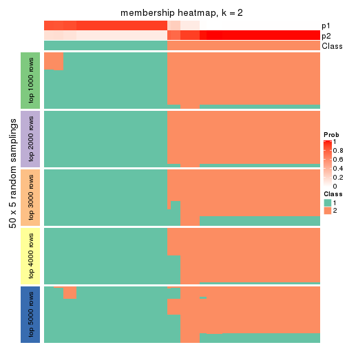
membership_heatmap(res, k = 3)
membership_heatmap(res, k = 4)
membership_heatmap(res, k = 5)
membership_heatmap(res, k = 6)
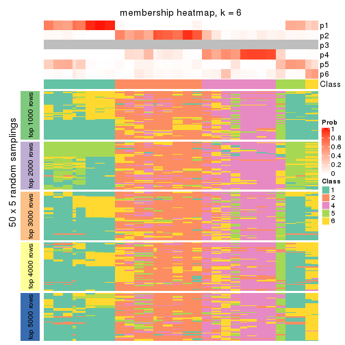
As soon as we have had the classes for columns, we can look for signatures which are significantly different between classes which can be candidate marks for certain classes. Following are the heatmaps for signatures.
Signature heatmaps where rows are scaled:
get_signatures(res, k = 2)
get_signatures(res, k = 3)
get_signatures(res, k = 4)
get_signatures(res, k = 5)
get_signatures(res, k = 6)
Signature heatmaps where rows are not scaled:
get_signatures(res, k = 2, scale_rows = FALSE)
get_signatures(res, k = 3, scale_rows = FALSE)
get_signatures(res, k = 4, scale_rows = FALSE)
get_signatures(res, k = 5, scale_rows = FALSE)
get_signatures(res, k = 6, scale_rows = FALSE)
Compare the overlap of signatures from different k:
compare_signatures(res)
get_signature() returns a data frame invisibly. TO get the list of signatures, the function
call should be assigned to a variable explicitly. In following code, if plot argument is set
to FALSE, no heatmap is plotted while only the differential analysis is performed.
# code only for demonstration
tb = get_signature(res, k = ..., plot = FALSE)
An example of the output of tb is:
#> which_row fdr mean_1 mean_2 scaled_mean_1 scaled_mean_2 km
#> 1 38 0.042760348 8.373488 9.131774 -0.5533452 0.5164555 1
#> 2 40 0.018707592 7.106213 8.469186 -0.6173731 0.5762149 1
#> 3 55 0.019134737 10.221463 11.207825 -0.6159697 0.5749050 1
#> 4 59 0.006059896 5.921854 7.869574 -0.6899429 0.6439467 1
#> 5 60 0.018055526 8.928898 10.211722 -0.6204761 0.5791110 1
#> 6 98 0.009384629 15.714769 14.887706 0.6635654 -0.6193277 2
...
The columns in tb are:
which_row: row indices corresponding to the input matrix.fdr: FDR for the differential test. mean_x: The mean value in group x.scaled_mean_x: The mean value in group x after rows are scaled.km: Row groups if k-means clustering is applied to rows.UMAP plot which shows how samples are separated.
dimension_reduction(res, k = 2, method = "UMAP")
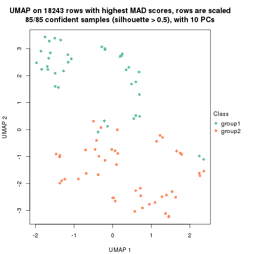
dimension_reduction(res, k = 3, method = "UMAP")
dimension_reduction(res, k = 4, method = "UMAP")
dimension_reduction(res, k = 5, method = "UMAP")
dimension_reduction(res, k = 6, method = "UMAP")
Following heatmap shows how subgroups are split when increasing k:
collect_classes(res)
If matrix rows can be associated to genes, consider to use GO_Enrichment(res,
...) to perform function enrichment for the signature genes.
The object with results only for a single top-value method and a single partition method can be extracted as:
res = res_list["MAD", "skmeans"]
# you can also extract it by
# res = res_list["MAD:skmeans"]
A summary of res and all the functions that can be applied to it:
res
#> A 'ConsensusPartition' object with k = 2, 3, 4, 5, 6.
#> On a matrix with 18243 rows and 85 columns.
#> Top rows (1000, 2000, 3000, 4000, 5000) are extracted by 'MAD' method.
#> Subgroups are detected by 'skmeans' method.
#> Performed in total 1250 partitions by row resampling.
#> Best k for subgroups seems to be 3.
#>
#> Following methods can be applied to this 'ConsensusPartition' object:
#> [1] "cola_report" "collect_classes" "collect_plots"
#> [4] "collect_stats" "colnames" "compare_signatures"
#> [7] "consensus_heatmap" "dimension_reduction" "functional_enrichment"
#> [10] "get_anno_col" "get_anno" "get_classes"
#> [13] "get_consensus" "get_matrix" "get_membership"
#> [16] "get_param" "get_signatures" "get_stats"
#> [19] "is_best_k" "is_stable_k" "membership_heatmap"
#> [22] "ncol" "nrow" "plot_ecdf"
#> [25] "rownames" "select_partition_number" "show"
#> [28] "suggest_best_k" "test_to_known_factors"
collect_plots() function collects all the plots made from res for all k (number of partitions)
into one single page to provide an easy and fast comparison between different k.
collect_plots(res)
The plots are:
k and the heatmap of
predicted classes for each k.k.k.k.All the plots in panels can be made by individual functions and they are plotted later in this section.
select_partition_number() produces several plots showing different
statistics for choosing “optimized” k. There are following statistics:
k;k, the area increased is defined as \(A_k - A_{k-1}\).The detailed explanations of these statistics can be found in the cola vignette.
Generally speaking, lower PAC score, higher mean silhouette score or higher
concordance corresponds to better partition. Rand index and Jaccard index
measure how similar the current partition is compared to partition with k-1.
If they are too similar, we won't accept k is better than k-1.
select_partition_number(res)
The numeric values for all these statistics can be obtained by get_stats().
get_stats(res)
#> k 1-PAC mean_silhouette concordance area_increased Rand Jaccard
#> 2 2 1.000 0.950 0.981 0.5031 0.500 0.500
#> 3 3 0.967 0.938 0.958 0.3076 0.787 0.593
#> 4 4 0.744 0.812 0.834 0.1008 0.901 0.719
#> 5 5 0.716 0.723 0.798 0.0607 0.954 0.833
#> 6 6 0.704 0.669 0.775 0.0436 0.951 0.798
suggest_best_k() suggests the best \(k\) based on these statistics. The rules are as follows:
NA.suggest_best_k(res)
#> [1] 3
#> attr(,"optional")
#> [1] 2
There is also optional best \(k\) = 2 that is worth to check.
Following shows the table of the partitions (You need to click the show/hide
code output link to see it). The membership matrix (columns with name p*)
is inferred by
clue::cl_consensus()
function with the SE method. Basically the value in the membership matrix
represents the probability to belong to a certain group. The finall class
label for an item is determined with the group with highest probability it
belongs to.
In get_classes() function, the entropy is calculated from the membership
matrix and the silhouette score is calculated from the consensus matrix.
cbind(get_classes(res, k = 2), get_membership(res, k = 2))
#> class entropy silhouette p1 p2
#> ERR532547 2 0.000 0.963 0.000 1.000
#> ERR532548 2 0.000 0.963 0.000 1.000
#> ERR532549 2 0.000 0.963 0.000 1.000
#> ERR532576 1 0.000 1.000 1.000 0.000
#> ERR532577 1 0.000 1.000 1.000 0.000
#> ERR532578 1 0.000 1.000 1.000 0.000
#> ERR532593 1 0.000 1.000 1.000 0.000
#> ERR532594 1 0.000 1.000 1.000 0.000
#> ERR532595 1 0.000 1.000 1.000 0.000
#> ERR532596 2 0.000 0.963 0.000 1.000
#> ERR532597 2 0.000 0.963 0.000 1.000
#> ERR532598 2 0.000 0.963 0.000 1.000
#> ERR532599 2 0.000 0.963 0.000 1.000
#> ERR532600 2 0.000 0.963 0.000 1.000
#> ERR532601 2 0.000 0.963 0.000 1.000
#> ERR532602 1 0.000 1.000 1.000 0.000
#> ERR532603 1 0.000 1.000 1.000 0.000
#> ERR532604 1 0.000 1.000 1.000 0.000
#> ERR532605 1 0.000 1.000 1.000 0.000
#> ERR532606 1 0.000 1.000 1.000 0.000
#> ERR532607 1 0.000 1.000 1.000 0.000
#> ERR532608 2 0.000 0.963 0.000 1.000
#> ERR532609 2 0.000 0.963 0.000 1.000
#> ERR532610 2 0.000 0.963 0.000 1.000
#> ERR532611 1 0.000 1.000 1.000 0.000
#> ERR532612 1 0.000 1.000 1.000 0.000
#> ERR532613 1 0.000 1.000 1.000 0.000
#> ERR532550 1 0.000 1.000 1.000 0.000
#> ERR532551 2 0.980 0.334 0.416 0.584
#> ERR532552 2 0.980 0.334 0.416 0.584
#> ERR532553 2 0.980 0.334 0.416 0.584
#> ERR532554 2 0.000 0.963 0.000 1.000
#> ERR532555 2 0.000 0.963 0.000 1.000
#> ERR532556 2 0.000 0.963 0.000 1.000
#> ERR532557 2 0.000 0.963 0.000 1.000
#> ERR532558 2 0.000 0.963 0.000 1.000
#> ERR532559 2 0.000 0.963 0.000 1.000
#> ERR532560 1 0.000 1.000 1.000 0.000
#> ERR532561 1 0.000 1.000 1.000 0.000
#> ERR532562 1 0.000 1.000 1.000 0.000
#> ERR532563 2 0.000 0.963 0.000 1.000
#> ERR532564 2 0.000 0.963 0.000 1.000
#> ERR532565 2 0.000 0.963 0.000 1.000
#> ERR532566 2 0.000 0.963 0.000 1.000
#> ERR532567 2 0.000 0.963 0.000 1.000
#> ERR532568 2 0.000 0.963 0.000 1.000
#> ERR532569 1 0.000 1.000 1.000 0.000
#> ERR532570 1 0.000 1.000 1.000 0.000
#> ERR532571 1 0.000 1.000 1.000 0.000
#> ERR532572 2 0.000 0.963 0.000 1.000
#> ERR532573 2 0.000 0.963 0.000 1.000
#> ERR532574 2 0.000 0.963 0.000 1.000
#> ERR532575 2 0.973 0.364 0.404 0.596
#> ERR532579 1 0.000 1.000 1.000 0.000
#> ERR532580 1 0.000 1.000 1.000 0.000
#> ERR532581 2 0.000 0.963 0.000 1.000
#> ERR532582 2 0.000 0.963 0.000 1.000
#> ERR532583 2 0.000 0.963 0.000 1.000
#> ERR532584 2 0.000 0.963 0.000 1.000
#> ERR532585 2 0.000 0.963 0.000 1.000
#> ERR532586 2 0.000 0.963 0.000 1.000
#> ERR532587 2 0.000 0.963 0.000 1.000
#> ERR532588 2 0.000 0.963 0.000 1.000
#> ERR532589 2 0.000 0.963 0.000 1.000
#> ERR532590 2 0.000 0.963 0.000 1.000
#> ERR532591 1 0.000 1.000 1.000 0.000
#> ERR532592 1 0.000 1.000 1.000 0.000
#> ERR532439 2 0.000 0.963 0.000 1.000
#> ERR532440 2 0.000 0.963 0.000 1.000
#> ERR532441 2 0.000 0.963 0.000 1.000
#> ERR532442 1 0.000 1.000 1.000 0.000
#> ERR532443 1 0.000 1.000 1.000 0.000
#> ERR532444 1 0.000 1.000 1.000 0.000
#> ERR532445 1 0.000 1.000 1.000 0.000
#> ERR532446 1 0.000 1.000 1.000 0.000
#> ERR532447 1 0.000 1.000 1.000 0.000
#> ERR532433 1 0.000 1.000 1.000 0.000
#> ERR532434 1 0.000 1.000 1.000 0.000
#> ERR532435 1 0.000 1.000 1.000 0.000
#> ERR532436 1 0.000 1.000 1.000 0.000
#> ERR532437 1 0.000 1.000 1.000 0.000
#> ERR532438 1 0.000 1.000 1.000 0.000
#> ERR532614 2 0.000 0.963 0.000 1.000
#> ERR532615 2 0.000 0.963 0.000 1.000
#> ERR532616 2 0.000 0.963 0.000 1.000
cbind(get_classes(res, k = 3), get_membership(res, k = 3))
#> class entropy silhouette p1 p2 p3
#> ERR532547 2 0.2356 0.941 0.000 0.928 0.072
#> ERR532548 2 0.2356 0.941 0.000 0.928 0.072
#> ERR532549 2 0.2356 0.941 0.000 0.928 0.072
#> ERR532576 1 0.0000 0.996 1.000 0.000 0.000
#> ERR532577 1 0.0000 0.996 1.000 0.000 0.000
#> ERR532578 1 0.0000 0.996 1.000 0.000 0.000
#> ERR532593 1 0.0000 0.996 1.000 0.000 0.000
#> ERR532594 1 0.0000 0.996 1.000 0.000 0.000
#> ERR532595 1 0.0000 0.996 1.000 0.000 0.000
#> ERR532596 2 0.0000 0.966 0.000 1.000 0.000
#> ERR532597 2 0.0000 0.966 0.000 1.000 0.000
#> ERR532598 2 0.0000 0.966 0.000 1.000 0.000
#> ERR532599 2 0.1529 0.946 0.000 0.960 0.040
#> ERR532600 2 0.1529 0.946 0.000 0.960 0.040
#> ERR532601 2 0.1529 0.946 0.000 0.960 0.040
#> ERR532602 1 0.0000 0.996 1.000 0.000 0.000
#> ERR532603 1 0.0000 0.996 1.000 0.000 0.000
#> ERR532604 1 0.0000 0.996 1.000 0.000 0.000
#> ERR532605 1 0.0000 0.996 1.000 0.000 0.000
#> ERR532606 1 0.0000 0.996 1.000 0.000 0.000
#> ERR532607 1 0.0000 0.996 1.000 0.000 0.000
#> ERR532608 2 0.3482 0.902 0.000 0.872 0.128
#> ERR532609 2 0.3482 0.902 0.000 0.872 0.128
#> ERR532610 2 0.3482 0.902 0.000 0.872 0.128
#> ERR532611 1 0.0000 0.996 1.000 0.000 0.000
#> ERR532612 1 0.0000 0.996 1.000 0.000 0.000
#> ERR532613 1 0.0000 0.996 1.000 0.000 0.000
#> ERR532550 1 0.0892 0.979 0.980 0.000 0.020
#> ERR532551 3 0.0475 0.886 0.004 0.004 0.992
#> ERR532552 3 0.0475 0.886 0.004 0.004 0.992
#> ERR532553 3 0.0475 0.886 0.004 0.004 0.992
#> ERR532554 2 0.0237 0.966 0.000 0.996 0.004
#> ERR532555 2 0.0237 0.966 0.000 0.996 0.004
#> ERR532556 2 0.0237 0.966 0.000 0.996 0.004
#> ERR532557 3 0.5948 0.581 0.000 0.360 0.640
#> ERR532558 3 0.5948 0.581 0.000 0.360 0.640
#> ERR532559 3 0.5948 0.581 0.000 0.360 0.640
#> ERR532560 1 0.0000 0.996 1.000 0.000 0.000
#> ERR532561 1 0.0000 0.996 1.000 0.000 0.000
#> ERR532562 1 0.0000 0.996 1.000 0.000 0.000
#> ERR532563 2 0.0424 0.965 0.000 0.992 0.008
#> ERR532564 2 0.0424 0.965 0.000 0.992 0.008
#> ERR532565 2 0.0424 0.965 0.000 0.992 0.008
#> ERR532566 2 0.2356 0.941 0.000 0.928 0.072
#> ERR532567 2 0.2356 0.941 0.000 0.928 0.072
#> ERR532568 2 0.2356 0.941 0.000 0.928 0.072
#> ERR532569 1 0.0000 0.996 1.000 0.000 0.000
#> ERR532570 1 0.0000 0.996 1.000 0.000 0.000
#> ERR532571 1 0.0000 0.996 1.000 0.000 0.000
#> ERR532572 2 0.0000 0.966 0.000 1.000 0.000
#> ERR532573 2 0.0000 0.966 0.000 1.000 0.000
#> ERR532574 2 0.0000 0.966 0.000 1.000 0.000
#> ERR532575 3 0.2564 0.894 0.028 0.036 0.936
#> ERR532579 1 0.0983 0.979 0.980 0.016 0.004
#> ERR532580 1 0.0983 0.979 0.980 0.016 0.004
#> ERR532581 2 0.0237 0.966 0.000 0.996 0.004
#> ERR532582 2 0.0237 0.966 0.000 0.996 0.004
#> ERR532583 2 0.0237 0.966 0.000 0.996 0.004
#> ERR532584 3 0.1753 0.892 0.000 0.048 0.952
#> ERR532585 3 0.1753 0.892 0.000 0.048 0.952
#> ERR532586 3 0.1753 0.892 0.000 0.048 0.952
#> ERR532587 2 0.0000 0.966 0.000 1.000 0.000
#> ERR532588 2 0.0000 0.966 0.000 1.000 0.000
#> ERR532589 3 0.4883 0.772 0.004 0.208 0.788
#> ERR532590 3 0.4883 0.772 0.004 0.208 0.788
#> ERR532591 1 0.0983 0.979 0.980 0.016 0.004
#> ERR532592 1 0.0983 0.979 0.980 0.016 0.004
#> ERR532439 3 0.2356 0.888 0.000 0.072 0.928
#> ERR532440 3 0.2356 0.888 0.000 0.072 0.928
#> ERR532441 3 0.2356 0.888 0.000 0.072 0.928
#> ERR532442 1 0.0000 0.996 1.000 0.000 0.000
#> ERR532443 1 0.0000 0.996 1.000 0.000 0.000
#> ERR532444 1 0.0000 0.996 1.000 0.000 0.000
#> ERR532445 1 0.0000 0.996 1.000 0.000 0.000
#> ERR532446 1 0.0000 0.996 1.000 0.000 0.000
#> ERR532447 1 0.0000 0.996 1.000 0.000 0.000
#> ERR532433 3 0.2537 0.880 0.080 0.000 0.920
#> ERR532434 3 0.2537 0.880 0.080 0.000 0.920
#> ERR532435 3 0.2537 0.880 0.080 0.000 0.920
#> ERR532436 3 0.2356 0.884 0.072 0.000 0.928
#> ERR532437 3 0.2356 0.884 0.072 0.000 0.928
#> ERR532438 3 0.2356 0.884 0.072 0.000 0.928
#> ERR532614 2 0.1163 0.960 0.000 0.972 0.028
#> ERR532615 2 0.1163 0.960 0.000 0.972 0.028
#> ERR532616 2 0.1163 0.960 0.000 0.972 0.028
cbind(get_classes(res, k = 4), get_membership(res, k = 4))
#> class entropy silhouette p1 p2 p3 p4
#> ERR532547 3 0.2149 0.824 0.000 0.000 0.912 0.088
#> ERR532548 3 0.2149 0.824 0.000 0.000 0.912 0.088
#> ERR532549 3 0.2149 0.824 0.000 0.000 0.912 0.088
#> ERR532576 1 0.0188 0.979 0.996 0.000 0.000 0.004
#> ERR532577 1 0.0188 0.979 0.996 0.000 0.000 0.004
#> ERR532578 1 0.0188 0.979 0.996 0.000 0.000 0.004
#> ERR532593 1 0.0188 0.979 0.996 0.000 0.000 0.004
#> ERR532594 1 0.0188 0.979 0.996 0.000 0.000 0.004
#> ERR532595 1 0.0188 0.979 0.996 0.000 0.000 0.004
#> ERR532596 4 0.5137 0.676 0.000 0.004 0.452 0.544
#> ERR532597 4 0.5137 0.676 0.000 0.004 0.452 0.544
#> ERR532598 4 0.5137 0.676 0.000 0.004 0.452 0.544
#> ERR532599 4 0.6148 0.610 0.000 0.084 0.280 0.636
#> ERR532600 4 0.6148 0.610 0.000 0.084 0.280 0.636
#> ERR532601 4 0.6148 0.610 0.000 0.084 0.280 0.636
#> ERR532602 1 0.0188 0.979 0.996 0.000 0.000 0.004
#> ERR532603 1 0.0188 0.979 0.996 0.000 0.000 0.004
#> ERR532604 1 0.0188 0.979 0.996 0.000 0.000 0.004
#> ERR532605 1 0.0336 0.979 0.992 0.000 0.000 0.008
#> ERR532606 1 0.0336 0.979 0.992 0.000 0.000 0.008
#> ERR532607 1 0.0336 0.979 0.992 0.000 0.000 0.008
#> ERR532608 3 0.4332 0.742 0.000 0.112 0.816 0.072
#> ERR532609 3 0.4332 0.742 0.000 0.112 0.816 0.072
#> ERR532610 3 0.4332 0.742 0.000 0.112 0.816 0.072
#> ERR532611 1 0.0188 0.979 0.996 0.000 0.000 0.004
#> ERR532612 1 0.0188 0.979 0.996 0.000 0.000 0.004
#> ERR532613 1 0.0188 0.979 0.996 0.000 0.000 0.004
#> ERR532550 1 0.0804 0.970 0.980 0.000 0.012 0.008
#> ERR532551 2 0.0895 0.830 0.000 0.976 0.020 0.004
#> ERR532552 2 0.0895 0.830 0.000 0.976 0.020 0.004
#> ERR532553 2 0.0895 0.830 0.000 0.976 0.020 0.004
#> ERR532554 4 0.4978 0.687 0.000 0.004 0.384 0.612
#> ERR532555 4 0.4978 0.687 0.000 0.004 0.384 0.612
#> ERR532556 4 0.4978 0.687 0.000 0.004 0.384 0.612
#> ERR532557 4 0.4364 0.400 0.000 0.136 0.056 0.808
#> ERR532558 4 0.4364 0.400 0.000 0.136 0.056 0.808
#> ERR532559 4 0.4364 0.400 0.000 0.136 0.056 0.808
#> ERR532560 1 0.0188 0.979 0.996 0.000 0.000 0.004
#> ERR532561 1 0.0188 0.979 0.996 0.000 0.000 0.004
#> ERR532562 1 0.0188 0.979 0.996 0.000 0.000 0.004
#> ERR532563 4 0.3494 0.558 0.000 0.004 0.172 0.824
#> ERR532564 4 0.3494 0.558 0.000 0.004 0.172 0.824
#> ERR532565 4 0.3494 0.558 0.000 0.004 0.172 0.824
#> ERR532566 3 0.0592 0.853 0.000 0.000 0.984 0.016
#> ERR532567 3 0.0592 0.853 0.000 0.000 0.984 0.016
#> ERR532568 3 0.0592 0.853 0.000 0.000 0.984 0.016
#> ERR532569 1 0.0000 0.979 1.000 0.000 0.000 0.000
#> ERR532570 1 0.0000 0.979 1.000 0.000 0.000 0.000
#> ERR532571 1 0.0000 0.979 1.000 0.000 0.000 0.000
#> ERR532572 4 0.5028 0.705 0.000 0.004 0.400 0.596
#> ERR532573 4 0.5028 0.705 0.000 0.004 0.400 0.596
#> ERR532574 4 0.5028 0.705 0.000 0.004 0.400 0.596
#> ERR532575 2 0.2760 0.821 0.000 0.872 0.000 0.128
#> ERR532579 1 0.3182 0.865 0.860 0.004 0.004 0.132
#> ERR532580 1 0.3182 0.865 0.860 0.004 0.004 0.132
#> ERR532581 4 0.4936 0.717 0.000 0.004 0.372 0.624
#> ERR532582 4 0.4936 0.717 0.000 0.004 0.372 0.624
#> ERR532583 4 0.4936 0.717 0.000 0.004 0.372 0.624
#> ERR532584 2 0.5182 0.726 0.000 0.684 0.028 0.288
#> ERR532585 2 0.5182 0.726 0.000 0.684 0.028 0.288
#> ERR532586 2 0.5182 0.726 0.000 0.684 0.028 0.288
#> ERR532587 4 0.5158 0.652 0.000 0.004 0.472 0.524
#> ERR532588 4 0.5158 0.652 0.000 0.004 0.472 0.524
#> ERR532589 2 0.5219 0.705 0.000 0.712 0.044 0.244
#> ERR532590 2 0.5219 0.705 0.000 0.712 0.044 0.244
#> ERR532591 1 0.3236 0.865 0.856 0.004 0.004 0.136
#> ERR532592 1 0.3236 0.865 0.856 0.004 0.004 0.136
#> ERR532439 2 0.3402 0.800 0.000 0.832 0.004 0.164
#> ERR532440 2 0.3402 0.800 0.000 0.832 0.004 0.164
#> ERR532441 2 0.3402 0.800 0.000 0.832 0.004 0.164
#> ERR532442 1 0.0188 0.979 0.996 0.000 0.000 0.004
#> ERR532443 1 0.0188 0.979 0.996 0.000 0.000 0.004
#> ERR532444 1 0.0188 0.979 0.996 0.000 0.000 0.004
#> ERR532445 1 0.0188 0.979 0.996 0.000 0.000 0.004
#> ERR532446 1 0.0188 0.979 0.996 0.000 0.000 0.004
#> ERR532447 1 0.0188 0.979 0.996 0.000 0.000 0.004
#> ERR532433 2 0.0592 0.831 0.016 0.984 0.000 0.000
#> ERR532434 2 0.0592 0.831 0.016 0.984 0.000 0.000
#> ERR532435 2 0.0592 0.831 0.016 0.984 0.000 0.000
#> ERR532436 2 0.4482 0.760 0.008 0.728 0.000 0.264
#> ERR532437 2 0.4482 0.760 0.008 0.728 0.000 0.264
#> ERR532438 2 0.4482 0.760 0.008 0.728 0.000 0.264
#> ERR532614 3 0.1716 0.828 0.000 0.000 0.936 0.064
#> ERR532615 3 0.1716 0.828 0.000 0.000 0.936 0.064
#> ERR532616 3 0.1716 0.828 0.000 0.000 0.936 0.064
cbind(get_classes(res, k = 5), get_membership(res, k = 5))
#> class entropy silhouette p1 p2 p3 p4 p5
#> ERR532547 3 0.4484 0.813 0.000 0.000 0.668 0.308 0.024
#> ERR532548 3 0.4484 0.813 0.000 0.000 0.668 0.308 0.024
#> ERR532549 3 0.4484 0.813 0.000 0.000 0.668 0.308 0.024
#> ERR532576 1 0.2390 0.896 0.908 0.004 0.044 0.000 0.044
#> ERR532577 1 0.2390 0.896 0.908 0.004 0.044 0.000 0.044
#> ERR532578 1 0.2390 0.896 0.908 0.004 0.044 0.000 0.044
#> ERR532593 1 0.1579 0.902 0.944 0.000 0.032 0.000 0.024
#> ERR532594 1 0.1579 0.902 0.944 0.000 0.032 0.000 0.024
#> ERR532595 1 0.1579 0.902 0.944 0.000 0.032 0.000 0.024
#> ERR532596 4 0.1732 0.814 0.000 0.000 0.080 0.920 0.000
#> ERR532597 4 0.1732 0.814 0.000 0.000 0.080 0.920 0.000
#> ERR532598 4 0.1732 0.814 0.000 0.000 0.080 0.920 0.000
#> ERR532599 4 0.4786 0.661 0.000 0.072 0.052 0.776 0.100
#> ERR532600 4 0.4786 0.661 0.000 0.072 0.052 0.776 0.100
#> ERR532601 4 0.4786 0.661 0.000 0.072 0.052 0.776 0.100
#> ERR532602 1 0.2227 0.898 0.916 0.004 0.048 0.000 0.032
#> ERR532603 1 0.2227 0.898 0.916 0.004 0.048 0.000 0.032
#> ERR532604 1 0.2227 0.898 0.916 0.004 0.048 0.000 0.032
#> ERR532605 1 0.2370 0.901 0.904 0.000 0.056 0.000 0.040
#> ERR532606 1 0.2370 0.901 0.904 0.000 0.056 0.000 0.040
#> ERR532607 1 0.2370 0.901 0.904 0.000 0.056 0.000 0.040
#> ERR532608 3 0.5226 0.766 0.000 0.092 0.736 0.132 0.040
#> ERR532609 3 0.5226 0.766 0.000 0.092 0.736 0.132 0.040
#> ERR532610 3 0.5226 0.766 0.000 0.092 0.736 0.132 0.040
#> ERR532611 1 0.2053 0.899 0.924 0.004 0.048 0.000 0.024
#> ERR532612 1 0.2053 0.899 0.924 0.004 0.048 0.000 0.024
#> ERR532613 1 0.2053 0.899 0.924 0.004 0.048 0.000 0.024
#> ERR532550 1 0.2761 0.838 0.872 0.000 0.104 0.000 0.024
#> ERR532551 2 0.0854 0.689 0.000 0.976 0.008 0.004 0.012
#> ERR532552 2 0.0854 0.689 0.000 0.976 0.008 0.004 0.012
#> ERR532553 2 0.0854 0.689 0.000 0.976 0.008 0.004 0.012
#> ERR532554 4 0.5364 0.580 0.000 0.004 0.112 0.672 0.212
#> ERR532555 4 0.5364 0.580 0.000 0.004 0.112 0.672 0.212
#> ERR532556 4 0.5364 0.580 0.000 0.004 0.112 0.672 0.212
#> ERR532557 5 0.5274 0.602 0.000 0.068 0.012 0.248 0.672
#> ERR532558 5 0.5274 0.602 0.000 0.068 0.012 0.248 0.672
#> ERR532559 5 0.5274 0.602 0.000 0.068 0.012 0.248 0.672
#> ERR532560 1 0.0992 0.899 0.968 0.000 0.008 0.000 0.024
#> ERR532561 1 0.0992 0.899 0.968 0.000 0.008 0.000 0.024
#> ERR532562 1 0.0992 0.899 0.968 0.000 0.008 0.000 0.024
#> ERR532563 5 0.5677 0.446 0.000 0.008 0.060 0.416 0.516
#> ERR532564 5 0.5677 0.446 0.000 0.008 0.060 0.416 0.516
#> ERR532565 5 0.5677 0.446 0.000 0.008 0.060 0.416 0.516
#> ERR532566 3 0.3519 0.850 0.000 0.000 0.776 0.216 0.008
#> ERR532567 3 0.3519 0.850 0.000 0.000 0.776 0.216 0.008
#> ERR532568 3 0.3519 0.850 0.000 0.000 0.776 0.216 0.008
#> ERR532569 1 0.0162 0.902 0.996 0.000 0.000 0.000 0.004
#> ERR532570 1 0.0162 0.902 0.996 0.000 0.000 0.000 0.004
#> ERR532571 1 0.0162 0.902 0.996 0.000 0.000 0.000 0.004
#> ERR532572 4 0.0727 0.830 0.000 0.004 0.004 0.980 0.012
#> ERR532573 4 0.0727 0.830 0.000 0.004 0.004 0.980 0.012
#> ERR532574 4 0.0727 0.830 0.000 0.004 0.004 0.980 0.012
#> ERR532575 2 0.4470 0.604 0.000 0.744 0.036 0.012 0.208
#> ERR532579 1 0.6967 0.460 0.552 0.004 0.088 0.080 0.276
#> ERR532580 1 0.6967 0.460 0.552 0.004 0.088 0.080 0.276
#> ERR532581 4 0.0771 0.828 0.000 0.004 0.000 0.976 0.020
#> ERR532582 4 0.0771 0.828 0.000 0.004 0.000 0.976 0.020
#> ERR532583 4 0.0771 0.828 0.000 0.004 0.000 0.976 0.020
#> ERR532584 2 0.6701 0.443 0.000 0.532 0.032 0.136 0.300
#> ERR532585 2 0.6701 0.443 0.000 0.532 0.032 0.136 0.300
#> ERR532586 2 0.6701 0.443 0.000 0.532 0.032 0.136 0.300
#> ERR532587 4 0.1502 0.821 0.000 0.000 0.056 0.940 0.004
#> ERR532588 4 0.1502 0.821 0.000 0.000 0.056 0.940 0.004
#> ERR532589 2 0.6640 0.506 0.000 0.596 0.048 0.176 0.180
#> ERR532590 2 0.6640 0.506 0.000 0.596 0.048 0.176 0.180
#> ERR532591 1 0.7056 0.453 0.544 0.004 0.096 0.080 0.276
#> ERR532592 1 0.7056 0.453 0.544 0.004 0.096 0.080 0.276
#> ERR532439 2 0.4761 0.510 0.000 0.752 0.016 0.076 0.156
#> ERR532440 2 0.4761 0.510 0.000 0.752 0.016 0.076 0.156
#> ERR532441 2 0.4761 0.510 0.000 0.752 0.016 0.076 0.156
#> ERR532442 1 0.0992 0.899 0.968 0.000 0.008 0.000 0.024
#> ERR532443 1 0.0992 0.899 0.968 0.000 0.008 0.000 0.024
#> ERR532444 1 0.0992 0.899 0.968 0.000 0.008 0.000 0.024
#> ERR532445 1 0.0992 0.899 0.968 0.000 0.008 0.000 0.024
#> ERR532446 1 0.0992 0.899 0.968 0.000 0.008 0.000 0.024
#> ERR532447 1 0.0992 0.899 0.968 0.000 0.008 0.000 0.024
#> ERR532433 2 0.1471 0.678 0.020 0.952 0.004 0.000 0.024
#> ERR532434 2 0.1471 0.678 0.020 0.952 0.004 0.000 0.024
#> ERR532435 2 0.1471 0.678 0.020 0.952 0.004 0.000 0.024
#> ERR532436 5 0.4559 0.109 0.008 0.480 0.000 0.000 0.512
#> ERR532437 5 0.4559 0.109 0.008 0.480 0.000 0.000 0.512
#> ERR532438 5 0.4559 0.109 0.008 0.480 0.000 0.000 0.512
#> ERR532614 3 0.4329 0.804 0.000 0.000 0.672 0.312 0.016
#> ERR532615 3 0.4329 0.804 0.000 0.000 0.672 0.312 0.016
#> ERR532616 3 0.4329 0.804 0.000 0.000 0.672 0.312 0.016
cbind(get_classes(res, k = 6), get_membership(res, k = 6))
#> class entropy silhouette p1 p2 p3 p4 p5 p6
#> ERR532547 3 0.4929 0.74494 0.000 0.004 0.676 0.240 0.028 0.052
#> ERR532548 3 0.4929 0.74494 0.000 0.004 0.676 0.240 0.028 0.052
#> ERR532549 3 0.4929 0.74494 0.000 0.004 0.676 0.240 0.028 0.052
#> ERR532576 1 0.1769 0.81270 0.924 0.004 0.000 0.000 0.012 0.060
#> ERR532577 1 0.1769 0.81270 0.924 0.004 0.000 0.000 0.012 0.060
#> ERR532578 1 0.1769 0.81270 0.924 0.004 0.000 0.000 0.012 0.060
#> ERR532593 1 0.1080 0.83958 0.960 0.004 0.000 0.000 0.004 0.032
#> ERR532594 1 0.1080 0.83958 0.960 0.004 0.000 0.000 0.004 0.032
#> ERR532595 1 0.1080 0.83958 0.960 0.004 0.000 0.000 0.004 0.032
#> ERR532596 4 0.2312 0.75883 0.000 0.000 0.112 0.876 0.000 0.012
#> ERR532597 4 0.2312 0.75883 0.000 0.000 0.112 0.876 0.000 0.012
#> ERR532598 4 0.2312 0.75883 0.000 0.000 0.112 0.876 0.000 0.012
#> ERR532599 4 0.4785 0.62451 0.000 0.036 0.040 0.764 0.088 0.072
#> ERR532600 4 0.4785 0.62451 0.000 0.036 0.040 0.764 0.088 0.072
#> ERR532601 4 0.4785 0.62451 0.000 0.036 0.040 0.764 0.088 0.072
#> ERR532602 1 0.1578 0.82053 0.936 0.004 0.000 0.000 0.012 0.048
#> ERR532603 1 0.1578 0.82053 0.936 0.004 0.000 0.000 0.012 0.048
#> ERR532604 1 0.1578 0.82053 0.936 0.004 0.000 0.000 0.012 0.048
#> ERR532605 1 0.3003 0.83093 0.864 0.012 0.004 0.000 0.052 0.068
#> ERR532606 1 0.3003 0.83093 0.864 0.012 0.004 0.000 0.052 0.068
#> ERR532607 1 0.3003 0.83093 0.864 0.012 0.004 0.000 0.052 0.068
#> ERR532608 3 0.5206 0.70907 0.000 0.076 0.736 0.076 0.036 0.076
#> ERR532609 3 0.5206 0.70907 0.000 0.076 0.736 0.076 0.036 0.076
#> ERR532610 3 0.5206 0.70907 0.000 0.076 0.736 0.076 0.036 0.076
#> ERR532611 1 0.1296 0.82738 0.952 0.004 0.000 0.000 0.012 0.032
#> ERR532612 1 0.1296 0.82738 0.952 0.004 0.000 0.000 0.012 0.032
#> ERR532613 1 0.1296 0.82738 0.952 0.004 0.000 0.000 0.012 0.032
#> ERR532550 1 0.4984 0.64532 0.700 0.004 0.116 0.000 0.020 0.160
#> ERR532551 2 0.2296 0.65717 0.004 0.900 0.004 0.000 0.068 0.024
#> ERR532552 2 0.2296 0.65717 0.004 0.900 0.004 0.000 0.068 0.024
#> ERR532553 2 0.2296 0.65717 0.004 0.900 0.004 0.000 0.068 0.024
#> ERR532554 4 0.5074 0.32664 0.000 0.000 0.056 0.496 0.008 0.440
#> ERR532555 4 0.5074 0.32664 0.000 0.000 0.056 0.496 0.008 0.440
#> ERR532556 4 0.5074 0.32664 0.000 0.000 0.056 0.496 0.008 0.440
#> ERR532557 5 0.4044 0.54607 0.000 0.008 0.012 0.188 0.760 0.032
#> ERR532558 5 0.4044 0.54607 0.000 0.008 0.012 0.188 0.760 0.032
#> ERR532559 5 0.4044 0.54607 0.000 0.008 0.012 0.188 0.760 0.032
#> ERR532560 1 0.3849 0.81533 0.804 0.012 0.012 0.000 0.052 0.120
#> ERR532561 1 0.3849 0.81533 0.804 0.012 0.012 0.000 0.052 0.120
#> ERR532562 1 0.3849 0.81533 0.804 0.012 0.012 0.000 0.052 0.120
#> ERR532563 5 0.6303 0.42245 0.000 0.000 0.068 0.312 0.512 0.108
#> ERR532564 5 0.6303 0.42245 0.000 0.000 0.068 0.312 0.512 0.108
#> ERR532565 5 0.6303 0.42245 0.000 0.000 0.068 0.312 0.512 0.108
#> ERR532566 3 0.2009 0.80194 0.000 0.000 0.904 0.084 0.004 0.008
#> ERR532567 3 0.2009 0.80194 0.000 0.000 0.904 0.084 0.004 0.008
#> ERR532568 3 0.2009 0.80194 0.000 0.000 0.904 0.084 0.004 0.008
#> ERR532569 1 0.2425 0.83455 0.880 0.000 0.008 0.000 0.012 0.100
#> ERR532570 1 0.2425 0.83455 0.880 0.000 0.008 0.000 0.012 0.100
#> ERR532571 1 0.2425 0.83455 0.880 0.000 0.008 0.000 0.012 0.100
#> ERR532572 4 0.0520 0.78823 0.000 0.000 0.008 0.984 0.008 0.000
#> ERR532573 4 0.0520 0.78823 0.000 0.000 0.008 0.984 0.008 0.000
#> ERR532574 4 0.0520 0.78823 0.000 0.000 0.008 0.984 0.008 0.000
#> ERR532575 2 0.6456 0.32349 0.000 0.524 0.036 0.032 0.312 0.096
#> ERR532579 6 0.4108 0.96533 0.232 0.000 0.000 0.032 0.012 0.724
#> ERR532580 6 0.4108 0.96533 0.232 0.000 0.000 0.032 0.012 0.724
#> ERR532581 4 0.0665 0.78681 0.000 0.000 0.004 0.980 0.008 0.008
#> ERR532582 4 0.0665 0.78681 0.000 0.000 0.004 0.980 0.008 0.008
#> ERR532583 4 0.0665 0.78681 0.000 0.000 0.004 0.980 0.008 0.008
#> ERR532584 5 0.7558 -0.00142 0.000 0.292 0.036 0.152 0.424 0.096
#> ERR532585 5 0.7558 -0.00142 0.000 0.292 0.036 0.152 0.424 0.096
#> ERR532586 5 0.7558 -0.00142 0.000 0.292 0.036 0.152 0.424 0.096
#> ERR532587 4 0.1949 0.76858 0.000 0.000 0.088 0.904 0.004 0.004
#> ERR532588 4 0.1949 0.76858 0.000 0.000 0.088 0.904 0.004 0.004
#> ERR532589 2 0.7672 0.22312 0.000 0.432 0.044 0.152 0.268 0.104
#> ERR532590 2 0.7672 0.22312 0.000 0.432 0.044 0.152 0.268 0.104
#> ERR532591 6 0.4011 0.96557 0.228 0.000 0.000 0.028 0.012 0.732
#> ERR532592 6 0.4011 0.96557 0.228 0.000 0.000 0.028 0.012 0.732
#> ERR532439 2 0.5409 0.49141 0.000 0.704 0.024 0.076 0.140 0.056
#> ERR532440 2 0.5409 0.49141 0.000 0.704 0.024 0.076 0.140 0.056
#> ERR532441 2 0.5409 0.49141 0.000 0.704 0.024 0.076 0.140 0.056
#> ERR532442 1 0.3849 0.81533 0.804 0.012 0.012 0.000 0.052 0.120
#> ERR532443 1 0.3849 0.81533 0.804 0.012 0.012 0.000 0.052 0.120
#> ERR532444 1 0.3849 0.81533 0.804 0.012 0.012 0.000 0.052 0.120
#> ERR532445 1 0.3646 0.82110 0.816 0.008 0.012 0.000 0.048 0.116
#> ERR532446 1 0.3646 0.82110 0.816 0.008 0.012 0.000 0.048 0.116
#> ERR532447 1 0.3646 0.82110 0.816 0.008 0.012 0.000 0.048 0.116
#> ERR532433 2 0.1116 0.65514 0.000 0.960 0.008 0.000 0.028 0.004
#> ERR532434 2 0.1116 0.65514 0.000 0.960 0.008 0.000 0.028 0.004
#> ERR532435 2 0.1116 0.65514 0.000 0.960 0.008 0.000 0.028 0.004
#> ERR532436 5 0.4057 0.22421 0.000 0.388 0.000 0.000 0.600 0.012
#> ERR532437 5 0.4057 0.22421 0.000 0.388 0.000 0.000 0.600 0.012
#> ERR532438 5 0.4057 0.22421 0.000 0.388 0.000 0.000 0.600 0.012
#> ERR532614 3 0.3840 0.73872 0.000 0.000 0.740 0.228 0.024 0.008
#> ERR532615 3 0.3840 0.73872 0.000 0.000 0.740 0.228 0.024 0.008
#> ERR532616 3 0.3840 0.73872 0.000 0.000 0.740 0.228 0.024 0.008
Heatmaps for the consensus matrix. It visualizes the probability of two samples to be in a same group.
consensus_heatmap(res, k = 2)
consensus_heatmap(res, k = 3)

consensus_heatmap(res, k = 4)
consensus_heatmap(res, k = 5)
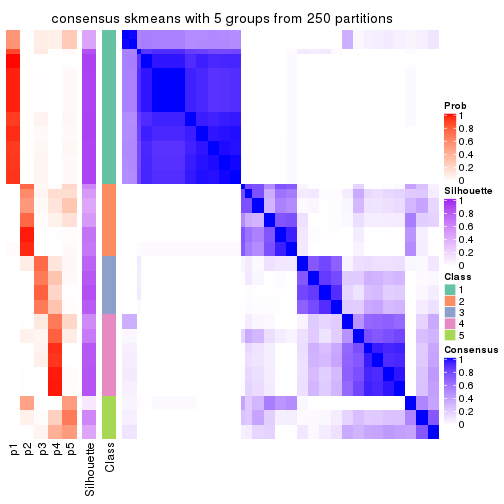
consensus_heatmap(res, k = 6)

Heatmaps for the membership of samples in all partitions to see how consistent they are:
membership_heatmap(res, k = 2)
membership_heatmap(res, k = 3)

membership_heatmap(res, k = 4)
membership_heatmap(res, k = 5)
membership_heatmap(res, k = 6)
As soon as we have had the classes for columns, we can look for signatures which are significantly different between classes which can be candidate marks for certain classes. Following are the heatmaps for signatures.
Signature heatmaps where rows are scaled:
get_signatures(res, k = 2)
get_signatures(res, k = 3)
get_signatures(res, k = 4)
get_signatures(res, k = 5)
get_signatures(res, k = 6)
Signature heatmaps where rows are not scaled:
get_signatures(res, k = 2, scale_rows = FALSE)
get_signatures(res, k = 3, scale_rows = FALSE)
get_signatures(res, k = 4, scale_rows = FALSE)
get_signatures(res, k = 5, scale_rows = FALSE)
get_signatures(res, k = 6, scale_rows = FALSE)
Compare the overlap of signatures from different k:
compare_signatures(res)
get_signature() returns a data frame invisibly. TO get the list of signatures, the function
call should be assigned to a variable explicitly. In following code, if plot argument is set
to FALSE, no heatmap is plotted while only the differential analysis is performed.
# code only for demonstration
tb = get_signature(res, k = ..., plot = FALSE)
An example of the output of tb is:
#> which_row fdr mean_1 mean_2 scaled_mean_1 scaled_mean_2 km
#> 1 38 0.042760348 8.373488 9.131774 -0.5533452 0.5164555 1
#> 2 40 0.018707592 7.106213 8.469186 -0.6173731 0.5762149 1
#> 3 55 0.019134737 10.221463 11.207825 -0.6159697 0.5749050 1
#> 4 59 0.006059896 5.921854 7.869574 -0.6899429 0.6439467 1
#> 5 60 0.018055526 8.928898 10.211722 -0.6204761 0.5791110 1
#> 6 98 0.009384629 15.714769 14.887706 0.6635654 -0.6193277 2
...
The columns in tb are:
which_row: row indices corresponding to the input matrix.fdr: FDR for the differential test. mean_x: The mean value in group x.scaled_mean_x: The mean value in group x after rows are scaled.km: Row groups if k-means clustering is applied to rows.UMAP plot which shows how samples are separated.
dimension_reduction(res, k = 2, method = "UMAP")
dimension_reduction(res, k = 3, method = "UMAP")
dimension_reduction(res, k = 4, method = "UMAP")
dimension_reduction(res, k = 5, method = "UMAP")
dimension_reduction(res, k = 6, method = "UMAP")
Following heatmap shows how subgroups are split when increasing k:
collect_classes(res)
If matrix rows can be associated to genes, consider to use GO_Enrichment(res,
...) to perform function enrichment for the signature genes.
The object with results only for a single top-value method and a single partition method can be extracted as:
res = res_list["MAD", "pam"]
# you can also extract it by
# res = res_list["MAD:pam"]
A summary of res and all the functions that can be applied to it:
res
#> A 'ConsensusPartition' object with k = 2, 3, 4, 5, 6.
#> On a matrix with 18243 rows and 85 columns.
#> Top rows (1000, 2000, 3000, 4000, 5000) are extracted by 'MAD' method.
#> Subgroups are detected by 'pam' method.
#> Performed in total 1250 partitions by row resampling.
#> Best k for subgroups seems to be 6.
#>
#> Following methods can be applied to this 'ConsensusPartition' object:
#> [1] "cola_report" "collect_classes" "collect_plots"
#> [4] "collect_stats" "colnames" "compare_signatures"
#> [7] "consensus_heatmap" "dimension_reduction" "functional_enrichment"
#> [10] "get_anno_col" "get_anno" "get_classes"
#> [13] "get_consensus" "get_matrix" "get_membership"
#> [16] "get_param" "get_signatures" "get_stats"
#> [19] "is_best_k" "is_stable_k" "membership_heatmap"
#> [22] "ncol" "nrow" "plot_ecdf"
#> [25] "rownames" "select_partition_number" "show"
#> [28] "suggest_best_k" "test_to_known_factors"
collect_plots() function collects all the plots made from res for all k (number of partitions)
into one single page to provide an easy and fast comparison between different k.
collect_plots(res)
The plots are:
k and the heatmap of
predicted classes for each k.k.k.k.All the plots in panels can be made by individual functions and they are plotted later in this section.
select_partition_number() produces several plots showing different
statistics for choosing “optimized” k. There are following statistics:
k;k, the area increased is defined as \(A_k - A_{k-1}\).The detailed explanations of these statistics can be found in the cola vignette.
Generally speaking, lower PAC score, higher mean silhouette score or higher
concordance corresponds to better partition. Rand index and Jaccard index
measure how similar the current partition is compared to partition with k-1.
If they are too similar, we won't accept k is better than k-1.
select_partition_number(res)
The numeric values for all these statistics can be obtained by get_stats().
get_stats(res)
#> k 1-PAC mean_silhouette concordance area_increased Rand Jaccard
#> 2 2 1.000 0.982 0.991 0.4707 0.525 0.525
#> 3 3 0.871 0.886 0.953 0.4168 0.807 0.632
#> 4 4 0.901 0.879 0.954 0.0376 0.977 0.932
#> 5 5 0.849 0.877 0.910 0.0425 0.983 0.946
#> 6 6 0.905 0.844 0.937 0.0741 0.931 0.763
suggest_best_k() suggests the best \(k\) based on these statistics. The rules are as follows:
NA.suggest_best_k(res)
#> [1] 6
#> attr(,"optional")
#> [1] 2 4
There is also optional best \(k\) = 2 4 that is worth to check.
Following shows the table of the partitions (You need to click the show/hide
code output link to see it). The membership matrix (columns with name p*)
is inferred by
clue::cl_consensus()
function with the SE method. Basically the value in the membership matrix
represents the probability to belong to a certain group. The finall class
label for an item is determined with the group with highest probability it
belongs to.
In get_classes() function, the entropy is calculated from the membership
matrix and the silhouette score is calculated from the consensus matrix.
cbind(get_classes(res, k = 2), get_membership(res, k = 2))
#> class entropy silhouette p1 p2
#> ERR532547 2 0.000 1.000 0.000 1.000
#> ERR532548 2 0.000 1.000 0.000 1.000
#> ERR532549 2 0.000 1.000 0.000 1.000
#> ERR532576 1 0.775 0.725 0.772 0.228
#> ERR532577 1 0.775 0.725 0.772 0.228
#> ERR532578 1 0.775 0.725 0.772 0.228
#> ERR532593 1 0.000 0.976 1.000 0.000
#> ERR532594 1 0.000 0.976 1.000 0.000
#> ERR532595 1 0.000 0.976 1.000 0.000
#> ERR532596 2 0.000 1.000 0.000 1.000
#> ERR532597 2 0.000 1.000 0.000 1.000
#> ERR532598 2 0.000 1.000 0.000 1.000
#> ERR532599 2 0.000 1.000 0.000 1.000
#> ERR532600 2 0.000 1.000 0.000 1.000
#> ERR532601 2 0.000 1.000 0.000 1.000
#> ERR532602 1 0.000 0.976 1.000 0.000
#> ERR532603 1 0.000 0.976 1.000 0.000
#> ERR532604 1 0.000 0.976 1.000 0.000
#> ERR532605 1 0.000 0.976 1.000 0.000
#> ERR532606 1 0.000 0.976 1.000 0.000
#> ERR532607 1 0.000 0.976 1.000 0.000
#> ERR532608 2 0.000 1.000 0.000 1.000
#> ERR532609 2 0.000 1.000 0.000 1.000
#> ERR532610 2 0.000 1.000 0.000 1.000
#> ERR532611 1 0.000 0.976 1.000 0.000
#> ERR532612 1 0.000 0.976 1.000 0.000
#> ERR532613 1 0.000 0.976 1.000 0.000
#> ERR532550 1 0.000 0.976 1.000 0.000
#> ERR532551 2 0.000 1.000 0.000 1.000
#> ERR532552 2 0.000 1.000 0.000 1.000
#> ERR532553 2 0.000 1.000 0.000 1.000
#> ERR532554 2 0.000 1.000 0.000 1.000
#> ERR532555 2 0.000 1.000 0.000 1.000
#> ERR532556 2 0.000 1.000 0.000 1.000
#> ERR532557 2 0.000 1.000 0.000 1.000
#> ERR532558 2 0.000 1.000 0.000 1.000
#> ERR532559 2 0.000 1.000 0.000 1.000
#> ERR532560 1 0.000 0.976 1.000 0.000
#> ERR532561 1 0.000 0.976 1.000 0.000
#> ERR532562 1 0.000 0.976 1.000 0.000
#> ERR532563 2 0.000 1.000 0.000 1.000
#> ERR532564 2 0.000 1.000 0.000 1.000
#> ERR532565 2 0.000 1.000 0.000 1.000
#> ERR532566 2 0.000 1.000 0.000 1.000
#> ERR532567 2 0.000 1.000 0.000 1.000
#> ERR532568 2 0.000 1.000 0.000 1.000
#> ERR532569 1 0.000 0.976 1.000 0.000
#> ERR532570 1 0.000 0.976 1.000 0.000
#> ERR532571 1 0.000 0.976 1.000 0.000
#> ERR532572 2 0.000 1.000 0.000 1.000
#> ERR532573 2 0.000 1.000 0.000 1.000
#> ERR532574 2 0.000 1.000 0.000 1.000
#> ERR532575 2 0.000 1.000 0.000 1.000
#> ERR532579 1 0.184 0.954 0.972 0.028
#> ERR532580 1 0.163 0.957 0.976 0.024
#> ERR532581 2 0.000 1.000 0.000 1.000
#> ERR532582 2 0.000 1.000 0.000 1.000
#> ERR532583 2 0.000 1.000 0.000 1.000
#> ERR532584 2 0.000 1.000 0.000 1.000
#> ERR532585 2 0.000 1.000 0.000 1.000
#> ERR532586 2 0.000 1.000 0.000 1.000
#> ERR532587 2 0.000 1.000 0.000 1.000
#> ERR532588 2 0.000 1.000 0.000 1.000
#> ERR532589 2 0.000 1.000 0.000 1.000
#> ERR532590 2 0.000 1.000 0.000 1.000
#> ERR532591 1 0.000 0.976 1.000 0.000
#> ERR532592 1 0.000 0.976 1.000 0.000
#> ERR532439 2 0.000 1.000 0.000 1.000
#> ERR532440 2 0.000 1.000 0.000 1.000
#> ERR532441 2 0.000 1.000 0.000 1.000
#> ERR532442 1 0.000 0.976 1.000 0.000
#> ERR532443 1 0.000 0.976 1.000 0.000
#> ERR532444 1 0.000 0.976 1.000 0.000
#> ERR532445 1 0.000 0.976 1.000 0.000
#> ERR532446 1 0.000 0.976 1.000 0.000
#> ERR532447 1 0.000 0.976 1.000 0.000
#> ERR532433 2 0.000 1.000 0.000 1.000
#> ERR532434 2 0.000 1.000 0.000 1.000
#> ERR532435 2 0.000 1.000 0.000 1.000
#> ERR532436 2 0.000 1.000 0.000 1.000
#> ERR532437 2 0.000 1.000 0.000 1.000
#> ERR532438 2 0.000 1.000 0.000 1.000
#> ERR532614 2 0.000 1.000 0.000 1.000
#> ERR532615 2 0.000 1.000 0.000 1.000
#> ERR532616 2 0.000 1.000 0.000 1.000
cbind(get_classes(res, k = 3), get_membership(res, k = 3))
#> class entropy silhouette p1 p2 p3
#> ERR532547 3 0.1753 0.925 0.000 0.048 0.952
#> ERR532548 3 0.1643 0.928 0.000 0.044 0.956
#> ERR532549 3 0.0237 0.956 0.000 0.004 0.996
#> ERR532576 1 0.6308 0.120 0.508 0.000 0.492
#> ERR532577 1 0.6308 0.120 0.508 0.000 0.492
#> ERR532578 1 0.6308 0.120 0.508 0.000 0.492
#> ERR532593 1 0.0000 0.934 1.000 0.000 0.000
#> ERR532594 1 0.0000 0.934 1.000 0.000 0.000
#> ERR532595 1 0.0000 0.934 1.000 0.000 0.000
#> ERR532596 2 0.0000 0.949 0.000 1.000 0.000
#> ERR532597 2 0.0000 0.949 0.000 1.000 0.000
#> ERR532598 2 0.0000 0.949 0.000 1.000 0.000
#> ERR532599 2 0.5810 0.518 0.000 0.664 0.336
#> ERR532600 2 0.5882 0.493 0.000 0.652 0.348
#> ERR532601 2 0.5882 0.493 0.000 0.652 0.348
#> ERR532602 1 0.3482 0.828 0.872 0.000 0.128
#> ERR532603 1 0.3482 0.828 0.872 0.000 0.128
#> ERR532604 1 0.3482 0.828 0.872 0.000 0.128
#> ERR532605 1 0.0000 0.934 1.000 0.000 0.000
#> ERR532606 1 0.0000 0.934 1.000 0.000 0.000
#> ERR532607 1 0.0000 0.934 1.000 0.000 0.000
#> ERR532608 3 0.0000 0.958 0.000 0.000 1.000
#> ERR532609 3 0.0000 0.958 0.000 0.000 1.000
#> ERR532610 3 0.0000 0.958 0.000 0.000 1.000
#> ERR532611 1 0.0000 0.934 1.000 0.000 0.000
#> ERR532612 1 0.0000 0.934 1.000 0.000 0.000
#> ERR532613 1 0.0000 0.934 1.000 0.000 0.000
#> ERR532550 1 0.0000 0.934 1.000 0.000 0.000
#> ERR532551 3 0.0000 0.958 0.000 0.000 1.000
#> ERR532552 3 0.0000 0.958 0.000 0.000 1.000
#> ERR532553 3 0.0000 0.958 0.000 0.000 1.000
#> ERR532554 2 0.0000 0.949 0.000 1.000 0.000
#> ERR532555 2 0.0000 0.949 0.000 1.000 0.000
#> ERR532556 2 0.0000 0.949 0.000 1.000 0.000
#> ERR532557 3 0.1860 0.920 0.000 0.052 0.948
#> ERR532558 3 0.2066 0.913 0.000 0.060 0.940
#> ERR532559 3 0.4504 0.746 0.000 0.196 0.804
#> ERR532560 1 0.0000 0.934 1.000 0.000 0.000
#> ERR532561 1 0.0000 0.934 1.000 0.000 0.000
#> ERR532562 1 0.0000 0.934 1.000 0.000 0.000
#> ERR532563 2 0.0000 0.949 0.000 1.000 0.000
#> ERR532564 2 0.0000 0.949 0.000 1.000 0.000
#> ERR532565 2 0.0000 0.949 0.000 1.000 0.000
#> ERR532566 3 0.4931 0.708 0.000 0.232 0.768
#> ERR532567 3 0.4887 0.714 0.000 0.228 0.772
#> ERR532568 3 0.4931 0.708 0.000 0.232 0.768
#> ERR532569 1 0.0000 0.934 1.000 0.000 0.000
#> ERR532570 1 0.0000 0.934 1.000 0.000 0.000
#> ERR532571 1 0.0000 0.934 1.000 0.000 0.000
#> ERR532572 2 0.0000 0.949 0.000 1.000 0.000
#> ERR532573 2 0.0000 0.949 0.000 1.000 0.000
#> ERR532574 2 0.0000 0.949 0.000 1.000 0.000
#> ERR532575 3 0.0000 0.958 0.000 0.000 1.000
#> ERR532579 1 0.0000 0.934 1.000 0.000 0.000
#> ERR532580 1 0.0000 0.934 1.000 0.000 0.000
#> ERR532581 2 0.0000 0.949 0.000 1.000 0.000
#> ERR532582 2 0.0000 0.949 0.000 1.000 0.000
#> ERR532583 2 0.0000 0.949 0.000 1.000 0.000
#> ERR532584 3 0.0000 0.958 0.000 0.000 1.000
#> ERR532585 3 0.0000 0.958 0.000 0.000 1.000
#> ERR532586 3 0.0000 0.958 0.000 0.000 1.000
#> ERR532587 2 0.0000 0.949 0.000 1.000 0.000
#> ERR532588 2 0.0000 0.949 0.000 1.000 0.000
#> ERR532589 3 0.0000 0.958 0.000 0.000 1.000
#> ERR532590 3 0.0000 0.958 0.000 0.000 1.000
#> ERR532591 1 0.0000 0.934 1.000 0.000 0.000
#> ERR532592 1 0.0000 0.934 1.000 0.000 0.000
#> ERR532439 3 0.0000 0.958 0.000 0.000 1.000
#> ERR532440 3 0.0000 0.958 0.000 0.000 1.000
#> ERR532441 3 0.0000 0.958 0.000 0.000 1.000
#> ERR532442 1 0.0000 0.934 1.000 0.000 0.000
#> ERR532443 1 0.0000 0.934 1.000 0.000 0.000
#> ERR532444 1 0.0000 0.934 1.000 0.000 0.000
#> ERR532445 1 0.0000 0.934 1.000 0.000 0.000
#> ERR532446 1 0.0000 0.934 1.000 0.000 0.000
#> ERR532447 1 0.0000 0.934 1.000 0.000 0.000
#> ERR532433 3 0.0000 0.958 0.000 0.000 1.000
#> ERR532434 3 0.0000 0.958 0.000 0.000 1.000
#> ERR532435 3 0.0000 0.958 0.000 0.000 1.000
#> ERR532436 3 0.0000 0.958 0.000 0.000 1.000
#> ERR532437 3 0.0000 0.958 0.000 0.000 1.000
#> ERR532438 3 0.0000 0.958 0.000 0.000 1.000
#> ERR532614 2 0.0000 0.949 0.000 1.000 0.000
#> ERR532615 2 0.0000 0.949 0.000 1.000 0.000
#> ERR532616 2 0.0000 0.949 0.000 1.000 0.000
cbind(get_classes(res, k = 4), get_membership(res, k = 4))
#> class entropy silhouette p1 p2 p3 p4
#> ERR532547 2 0.1211 0.943 0.000 0.960 0.000 0.040
#> ERR532548 2 0.1211 0.943 0.000 0.960 0.000 0.040
#> ERR532549 2 0.0188 0.978 0.000 0.996 0.000 0.004
#> ERR532576 1 0.4998 0.123 0.512 0.488 0.000 0.000
#> ERR532577 1 0.4998 0.123 0.512 0.488 0.000 0.000
#> ERR532578 1 0.4998 0.123 0.512 0.488 0.000 0.000
#> ERR532593 1 0.0000 0.919 1.000 0.000 0.000 0.000
#> ERR532594 1 0.0000 0.919 1.000 0.000 0.000 0.000
#> ERR532595 1 0.0000 0.919 1.000 0.000 0.000 0.000
#> ERR532596 4 0.0000 0.902 0.000 0.000 0.000 1.000
#> ERR532597 4 0.0000 0.902 0.000 0.000 0.000 1.000
#> ERR532598 4 0.0000 0.902 0.000 0.000 0.000 1.000
#> ERR532599 4 0.4624 0.490 0.000 0.340 0.000 0.660
#> ERR532600 4 0.4661 0.479 0.000 0.348 0.000 0.652
#> ERR532601 4 0.4661 0.479 0.000 0.348 0.000 0.652
#> ERR532602 1 0.2704 0.796 0.876 0.124 0.000 0.000
#> ERR532603 1 0.2704 0.796 0.876 0.124 0.000 0.000
#> ERR532604 1 0.2704 0.796 0.876 0.124 0.000 0.000
#> ERR532605 1 0.0188 0.919 0.996 0.000 0.004 0.000
#> ERR532606 1 0.0188 0.919 0.996 0.000 0.004 0.000
#> ERR532607 1 0.0188 0.919 0.996 0.000 0.004 0.000
#> ERR532608 2 0.0000 0.981 0.000 1.000 0.000 0.000
#> ERR532609 2 0.0000 0.981 0.000 1.000 0.000 0.000
#> ERR532610 2 0.0000 0.981 0.000 1.000 0.000 0.000
#> ERR532611 1 0.0000 0.919 1.000 0.000 0.000 0.000
#> ERR532612 1 0.0000 0.919 1.000 0.000 0.000 0.000
#> ERR532613 1 0.0000 0.919 1.000 0.000 0.000 0.000
#> ERR532550 1 0.0000 0.919 1.000 0.000 0.000 0.000
#> ERR532551 2 0.0000 0.981 0.000 1.000 0.000 0.000
#> ERR532552 2 0.0000 0.981 0.000 1.000 0.000 0.000
#> ERR532553 2 0.0000 0.981 0.000 1.000 0.000 0.000
#> ERR532554 4 0.0000 0.902 0.000 0.000 0.000 1.000
#> ERR532555 4 0.0000 0.902 0.000 0.000 0.000 1.000
#> ERR532556 4 0.0000 0.902 0.000 0.000 0.000 1.000
#> ERR532557 2 0.1474 0.930 0.000 0.948 0.000 0.052
#> ERR532558 2 0.1637 0.920 0.000 0.940 0.000 0.060
#> ERR532559 2 0.3569 0.725 0.000 0.804 0.000 0.196
#> ERR532560 1 0.0188 0.919 0.996 0.000 0.004 0.000
#> ERR532561 1 0.0188 0.919 0.996 0.000 0.004 0.000
#> ERR532562 1 0.0188 0.919 0.996 0.000 0.004 0.000
#> ERR532563 4 0.0000 0.902 0.000 0.000 0.000 1.000
#> ERR532564 4 0.0000 0.902 0.000 0.000 0.000 1.000
#> ERR532565 4 0.0000 0.902 0.000 0.000 0.000 1.000
#> ERR532566 3 0.0188 1.000 0.000 0.004 0.996 0.000
#> ERR532567 3 0.0188 1.000 0.000 0.004 0.996 0.000
#> ERR532568 3 0.0188 1.000 0.000 0.004 0.996 0.000
#> ERR532569 1 0.0000 0.919 1.000 0.000 0.000 0.000
#> ERR532570 1 0.0000 0.919 1.000 0.000 0.000 0.000
#> ERR532571 1 0.0000 0.919 1.000 0.000 0.000 0.000
#> ERR532572 4 0.0000 0.902 0.000 0.000 0.000 1.000
#> ERR532573 4 0.0000 0.902 0.000 0.000 0.000 1.000
#> ERR532574 4 0.0000 0.902 0.000 0.000 0.000 1.000
#> ERR532575 2 0.0000 0.981 0.000 1.000 0.000 0.000
#> ERR532579 1 0.0000 0.919 1.000 0.000 0.000 0.000
#> ERR532580 1 0.0000 0.919 1.000 0.000 0.000 0.000
#> ERR532581 4 0.0000 0.902 0.000 0.000 0.000 1.000
#> ERR532582 4 0.0000 0.902 0.000 0.000 0.000 1.000
#> ERR532583 4 0.0000 0.902 0.000 0.000 0.000 1.000
#> ERR532584 2 0.0000 0.981 0.000 1.000 0.000 0.000
#> ERR532585 2 0.0000 0.981 0.000 1.000 0.000 0.000
#> ERR532586 2 0.0000 0.981 0.000 1.000 0.000 0.000
#> ERR532587 4 0.0000 0.902 0.000 0.000 0.000 1.000
#> ERR532588 4 0.0000 0.902 0.000 0.000 0.000 1.000
#> ERR532589 2 0.0000 0.981 0.000 1.000 0.000 0.000
#> ERR532590 2 0.0000 0.981 0.000 1.000 0.000 0.000
#> ERR532591 1 0.0000 0.919 1.000 0.000 0.000 0.000
#> ERR532592 1 0.0000 0.919 1.000 0.000 0.000 0.000
#> ERR532439 2 0.0000 0.981 0.000 1.000 0.000 0.000
#> ERR532440 2 0.0000 0.981 0.000 1.000 0.000 0.000
#> ERR532441 2 0.0000 0.981 0.000 1.000 0.000 0.000
#> ERR532442 1 0.0188 0.919 0.996 0.000 0.004 0.000
#> ERR532443 1 0.0188 0.919 0.996 0.000 0.004 0.000
#> ERR532444 1 0.0188 0.919 0.996 0.000 0.004 0.000
#> ERR532445 1 0.0188 0.919 0.996 0.000 0.004 0.000
#> ERR532446 1 0.0188 0.919 0.996 0.000 0.004 0.000
#> ERR532447 1 0.0188 0.919 0.996 0.000 0.004 0.000
#> ERR532433 2 0.0000 0.981 0.000 1.000 0.000 0.000
#> ERR532434 2 0.0000 0.981 0.000 1.000 0.000 0.000
#> ERR532435 2 0.0000 0.981 0.000 1.000 0.000 0.000
#> ERR532436 2 0.0000 0.981 0.000 1.000 0.000 0.000
#> ERR532437 2 0.0000 0.981 0.000 1.000 0.000 0.000
#> ERR532438 2 0.0000 0.981 0.000 1.000 0.000 0.000
#> ERR532614 4 0.3649 0.737 0.000 0.000 0.204 0.796
#> ERR532615 4 0.3649 0.737 0.000 0.000 0.204 0.796
#> ERR532616 4 0.3649 0.737 0.000 0.000 0.204 0.796
cbind(get_classes(res, k = 5), get_membership(res, k = 5))
#> class entropy silhouette p1 p2 p3 p4 p5
#> ERR532547 2 0.1043 0.944 0.000 0.960 0.000 0.040 0.000
#> ERR532548 2 0.1043 0.944 0.000 0.960 0.000 0.040 0.000
#> ERR532549 2 0.0162 0.979 0.000 0.996 0.000 0.004 0.000
#> ERR532576 1 0.6071 0.574 0.572 0.236 0.192 0.000 0.000
#> ERR532577 1 0.6071 0.574 0.572 0.236 0.192 0.000 0.000
#> ERR532578 1 0.6071 0.574 0.572 0.236 0.192 0.000 0.000
#> ERR532593 1 0.3039 0.833 0.808 0.000 0.192 0.000 0.000
#> ERR532594 1 0.3039 0.833 0.808 0.000 0.192 0.000 0.000
#> ERR532595 1 0.3039 0.833 0.808 0.000 0.192 0.000 0.000
#> ERR532596 4 0.0000 0.905 0.000 0.000 0.000 1.000 0.000
#> ERR532597 4 0.0000 0.905 0.000 0.000 0.000 1.000 0.000
#> ERR532598 4 0.0000 0.905 0.000 0.000 0.000 1.000 0.000
#> ERR532599 4 0.3999 0.409 0.000 0.344 0.000 0.656 0.000
#> ERR532600 4 0.4030 0.397 0.000 0.352 0.000 0.648 0.000
#> ERR532601 4 0.4030 0.397 0.000 0.352 0.000 0.648 0.000
#> ERR532602 1 0.4429 0.795 0.744 0.064 0.192 0.000 0.000
#> ERR532603 1 0.4429 0.795 0.744 0.064 0.192 0.000 0.000
#> ERR532604 1 0.4429 0.795 0.744 0.064 0.192 0.000 0.000
#> ERR532605 1 0.3534 0.836 0.744 0.000 0.256 0.000 0.000
#> ERR532606 1 0.3534 0.836 0.744 0.000 0.256 0.000 0.000
#> ERR532607 1 0.3534 0.836 0.744 0.000 0.256 0.000 0.000
#> ERR532608 2 0.0000 0.982 0.000 1.000 0.000 0.000 0.000
#> ERR532609 2 0.0000 0.982 0.000 1.000 0.000 0.000 0.000
#> ERR532610 2 0.0000 0.982 0.000 1.000 0.000 0.000 0.000
#> ERR532611 1 0.3039 0.833 0.808 0.000 0.192 0.000 0.000
#> ERR532612 1 0.3039 0.833 0.808 0.000 0.192 0.000 0.000
#> ERR532613 1 0.3039 0.833 0.808 0.000 0.192 0.000 0.000
#> ERR532550 1 0.1197 0.840 0.952 0.000 0.048 0.000 0.000
#> ERR532551 2 0.0000 0.982 0.000 1.000 0.000 0.000 0.000
#> ERR532552 2 0.0000 0.982 0.000 1.000 0.000 0.000 0.000
#> ERR532553 2 0.0000 0.982 0.000 1.000 0.000 0.000 0.000
#> ERR532554 4 0.0000 0.905 0.000 0.000 0.000 1.000 0.000
#> ERR532555 4 0.0000 0.905 0.000 0.000 0.000 1.000 0.000
#> ERR532556 4 0.0000 0.905 0.000 0.000 0.000 1.000 0.000
#> ERR532557 2 0.1270 0.932 0.000 0.948 0.000 0.052 0.000
#> ERR532558 2 0.1270 0.932 0.000 0.948 0.000 0.052 0.000
#> ERR532559 2 0.3039 0.732 0.000 0.808 0.000 0.192 0.000
#> ERR532560 1 0.1544 0.836 0.932 0.000 0.068 0.000 0.000
#> ERR532561 1 0.1544 0.836 0.932 0.000 0.068 0.000 0.000
#> ERR532562 1 0.1544 0.836 0.932 0.000 0.068 0.000 0.000
#> ERR532563 4 0.0000 0.905 0.000 0.000 0.000 1.000 0.000
#> ERR532564 4 0.0000 0.905 0.000 0.000 0.000 1.000 0.000
#> ERR532565 4 0.0000 0.905 0.000 0.000 0.000 1.000 0.000
#> ERR532566 5 0.0000 1.000 0.000 0.000 0.000 0.000 1.000
#> ERR532567 5 0.0000 1.000 0.000 0.000 0.000 0.000 1.000
#> ERR532568 5 0.0000 1.000 0.000 0.000 0.000 0.000 1.000
#> ERR532569 1 0.0000 0.846 1.000 0.000 0.000 0.000 0.000
#> ERR532570 1 0.0000 0.846 1.000 0.000 0.000 0.000 0.000
#> ERR532571 1 0.0000 0.846 1.000 0.000 0.000 0.000 0.000
#> ERR532572 4 0.0000 0.905 0.000 0.000 0.000 1.000 0.000
#> ERR532573 4 0.0000 0.905 0.000 0.000 0.000 1.000 0.000
#> ERR532574 4 0.0000 0.905 0.000 0.000 0.000 1.000 0.000
#> ERR532575 2 0.0000 0.982 0.000 1.000 0.000 0.000 0.000
#> ERR532579 1 0.2230 0.849 0.884 0.000 0.116 0.000 0.000
#> ERR532580 1 0.2230 0.849 0.884 0.000 0.116 0.000 0.000
#> ERR532581 4 0.0000 0.905 0.000 0.000 0.000 1.000 0.000
#> ERR532582 4 0.0000 0.905 0.000 0.000 0.000 1.000 0.000
#> ERR532583 4 0.0000 0.905 0.000 0.000 0.000 1.000 0.000
#> ERR532584 2 0.0000 0.982 0.000 1.000 0.000 0.000 0.000
#> ERR532585 2 0.0000 0.982 0.000 1.000 0.000 0.000 0.000
#> ERR532586 2 0.0000 0.982 0.000 1.000 0.000 0.000 0.000
#> ERR532587 4 0.0000 0.905 0.000 0.000 0.000 1.000 0.000
#> ERR532588 4 0.0000 0.905 0.000 0.000 0.000 1.000 0.000
#> ERR532589 2 0.0000 0.982 0.000 1.000 0.000 0.000 0.000
#> ERR532590 2 0.0000 0.982 0.000 1.000 0.000 0.000 0.000
#> ERR532591 1 0.0162 0.846 0.996 0.000 0.004 0.000 0.000
#> ERR532592 1 0.0162 0.846 0.996 0.000 0.004 0.000 0.000
#> ERR532439 2 0.0000 0.982 0.000 1.000 0.000 0.000 0.000
#> ERR532440 2 0.0000 0.982 0.000 1.000 0.000 0.000 0.000
#> ERR532441 2 0.0000 0.982 0.000 1.000 0.000 0.000 0.000
#> ERR532442 1 0.1544 0.836 0.932 0.000 0.068 0.000 0.000
#> ERR532443 1 0.1544 0.836 0.932 0.000 0.068 0.000 0.000
#> ERR532444 1 0.1544 0.836 0.932 0.000 0.068 0.000 0.000
#> ERR532445 1 0.1544 0.836 0.932 0.000 0.068 0.000 0.000
#> ERR532446 1 0.1544 0.836 0.932 0.000 0.068 0.000 0.000
#> ERR532447 1 0.1544 0.836 0.932 0.000 0.068 0.000 0.000
#> ERR532433 2 0.0000 0.982 0.000 1.000 0.000 0.000 0.000
#> ERR532434 2 0.0000 0.982 0.000 1.000 0.000 0.000 0.000
#> ERR532435 2 0.0000 0.982 0.000 1.000 0.000 0.000 0.000
#> ERR532436 2 0.0000 0.982 0.000 1.000 0.000 0.000 0.000
#> ERR532437 2 0.0000 0.982 0.000 1.000 0.000 0.000 0.000
#> ERR532438 2 0.0000 0.982 0.000 1.000 0.000 0.000 0.000
#> ERR532614 3 0.4671 1.000 0.000 0.000 0.740 0.144 0.116
#> ERR532615 3 0.4671 1.000 0.000 0.000 0.740 0.144 0.116
#> ERR532616 3 0.4671 1.000 0.000 0.000 0.740 0.144 0.116
cbind(get_classes(res, k = 6), get_membership(res, k = 6))
#> class entropy silhouette p1 p2 p3 p4 p5 p6
#> ERR532547 2 0.1007 0.940 0.000 0.956 0 0.044 0 0.000
#> ERR532548 2 0.1007 0.940 0.000 0.956 0 0.044 0 0.000
#> ERR532549 2 0.0146 0.978 0.000 0.996 0 0.004 0 0.000
#> ERR532576 6 0.0000 0.843 0.000 0.000 0 0.000 0 1.000
#> ERR532577 6 0.0000 0.843 0.000 0.000 0 0.000 0 1.000
#> ERR532578 6 0.0000 0.843 0.000 0.000 0 0.000 0 1.000
#> ERR532593 6 0.0000 0.843 0.000 0.000 0 0.000 0 1.000
#> ERR532594 6 0.0000 0.843 0.000 0.000 0 0.000 0 1.000
#> ERR532595 6 0.0000 0.843 0.000 0.000 0 0.000 0 1.000
#> ERR532596 4 0.0000 0.916 0.000 0.000 0 1.000 0 0.000
#> ERR532597 4 0.0000 0.916 0.000 0.000 0 1.000 0 0.000
#> ERR532598 4 0.0000 0.916 0.000 0.000 0 1.000 0 0.000
#> ERR532599 4 0.3620 0.475 0.000 0.352 0 0.648 0 0.000
#> ERR532600 4 0.3647 0.464 0.000 0.360 0 0.640 0 0.000
#> ERR532601 4 0.3647 0.464 0.000 0.360 0 0.640 0 0.000
#> ERR532602 6 0.0000 0.843 0.000 0.000 0 0.000 0 1.000
#> ERR532603 6 0.0000 0.843 0.000 0.000 0 0.000 0 1.000
#> ERR532604 6 0.0000 0.843 0.000 0.000 0 0.000 0 1.000
#> ERR532605 1 0.3717 0.469 0.616 0.000 0 0.000 0 0.384
#> ERR532606 1 0.3717 0.469 0.616 0.000 0 0.000 0 0.384
#> ERR532607 1 0.3717 0.469 0.616 0.000 0 0.000 0 0.384
#> ERR532608 2 0.0000 0.981 0.000 1.000 0 0.000 0 0.000
#> ERR532609 2 0.0000 0.981 0.000 1.000 0 0.000 0 0.000
#> ERR532610 2 0.0000 0.981 0.000 1.000 0 0.000 0 0.000
#> ERR532611 6 0.0000 0.843 0.000 0.000 0 0.000 0 1.000
#> ERR532612 6 0.0000 0.843 0.000 0.000 0 0.000 0 1.000
#> ERR532613 6 0.0000 0.843 0.000 0.000 0 0.000 0 1.000
#> ERR532550 1 0.3838 -0.142 0.552 0.000 0 0.000 0 0.448
#> ERR532551 2 0.0000 0.981 0.000 1.000 0 0.000 0 0.000
#> ERR532552 2 0.0000 0.981 0.000 1.000 0 0.000 0 0.000
#> ERR532553 2 0.0000 0.981 0.000 1.000 0 0.000 0 0.000
#> ERR532554 4 0.0000 0.916 0.000 0.000 0 1.000 0 0.000
#> ERR532555 4 0.0000 0.916 0.000 0.000 0 1.000 0 0.000
#> ERR532556 4 0.0000 0.916 0.000 0.000 0 1.000 0 0.000
#> ERR532557 2 0.1285 0.929 0.004 0.944 0 0.052 0 0.000
#> ERR532558 2 0.1285 0.929 0.004 0.944 0 0.052 0 0.000
#> ERR532559 2 0.2871 0.733 0.004 0.804 0 0.192 0 0.000
#> ERR532560 1 0.0146 0.806 0.996 0.000 0 0.000 0 0.004
#> ERR532561 1 0.0146 0.806 0.996 0.000 0 0.000 0 0.004
#> ERR532562 1 0.0146 0.806 0.996 0.000 0 0.000 0 0.004
#> ERR532563 4 0.0146 0.914 0.004 0.000 0 0.996 0 0.000
#> ERR532564 4 0.0146 0.914 0.004 0.000 0 0.996 0 0.000
#> ERR532565 4 0.0146 0.914 0.004 0.000 0 0.996 0 0.000
#> ERR532566 5 0.0000 1.000 0.000 0.000 0 0.000 1 0.000
#> ERR532567 5 0.0000 1.000 0.000 0.000 0 0.000 1 0.000
#> ERR532568 5 0.0000 1.000 0.000 0.000 0 0.000 1 0.000
#> ERR532569 6 0.3717 0.509 0.384 0.000 0 0.000 0 0.616
#> ERR532570 6 0.3717 0.509 0.384 0.000 0 0.000 0 0.616
#> ERR532571 6 0.3717 0.509 0.384 0.000 0 0.000 0 0.616
#> ERR532572 4 0.0000 0.916 0.000 0.000 0 1.000 0 0.000
#> ERR532573 4 0.0000 0.916 0.000 0.000 0 1.000 0 0.000
#> ERR532574 4 0.0000 0.916 0.000 0.000 0 1.000 0 0.000
#> ERR532575 2 0.0000 0.981 0.000 1.000 0 0.000 0 0.000
#> ERR532579 6 0.2260 0.764 0.140 0.000 0 0.000 0 0.860
#> ERR532580 6 0.2260 0.764 0.140 0.000 0 0.000 0 0.860
#> ERR532581 4 0.0000 0.916 0.000 0.000 0 1.000 0 0.000
#> ERR532582 4 0.0000 0.916 0.000 0.000 0 1.000 0 0.000
#> ERR532583 4 0.0000 0.916 0.000 0.000 0 1.000 0 0.000
#> ERR532584 2 0.0000 0.981 0.000 1.000 0 0.000 0 0.000
#> ERR532585 2 0.0000 0.981 0.000 1.000 0 0.000 0 0.000
#> ERR532586 2 0.0000 0.981 0.000 1.000 0 0.000 0 0.000
#> ERR532587 4 0.0000 0.916 0.000 0.000 0 1.000 0 0.000
#> ERR532588 4 0.0000 0.916 0.000 0.000 0 1.000 0 0.000
#> ERR532589 2 0.0000 0.981 0.000 1.000 0 0.000 0 0.000
#> ERR532590 2 0.0000 0.981 0.000 1.000 0 0.000 0 0.000
#> ERR532591 6 0.3706 0.515 0.380 0.000 0 0.000 0 0.620
#> ERR532592 6 0.3706 0.515 0.380 0.000 0 0.000 0 0.620
#> ERR532439 2 0.0000 0.981 0.000 1.000 0 0.000 0 0.000
#> ERR532440 2 0.0000 0.981 0.000 1.000 0 0.000 0 0.000
#> ERR532441 2 0.0000 0.981 0.000 1.000 0 0.000 0 0.000
#> ERR532442 1 0.0146 0.806 0.996 0.000 0 0.000 0 0.004
#> ERR532443 1 0.0146 0.806 0.996 0.000 0 0.000 0 0.004
#> ERR532444 1 0.0146 0.806 0.996 0.000 0 0.000 0 0.004
#> ERR532445 1 0.0146 0.806 0.996 0.000 0 0.000 0 0.004
#> ERR532446 1 0.0146 0.806 0.996 0.000 0 0.000 0 0.004
#> ERR532447 1 0.0146 0.806 0.996 0.000 0 0.000 0 0.004
#> ERR532433 2 0.0000 0.981 0.000 1.000 0 0.000 0 0.000
#> ERR532434 2 0.0000 0.981 0.000 1.000 0 0.000 0 0.000
#> ERR532435 2 0.0000 0.981 0.000 1.000 0 0.000 0 0.000
#> ERR532436 2 0.0146 0.979 0.004 0.996 0 0.000 0 0.000
#> ERR532437 2 0.0146 0.979 0.004 0.996 0 0.000 0 0.000
#> ERR532438 2 0.0146 0.979 0.004 0.996 0 0.000 0 0.000
#> ERR532614 3 0.0000 1.000 0.000 0.000 1 0.000 0 0.000
#> ERR532615 3 0.0000 1.000 0.000 0.000 1 0.000 0 0.000
#> ERR532616 3 0.0000 1.000 0.000 0.000 1 0.000 0 0.000
Heatmaps for the consensus matrix. It visualizes the probability of two samples to be in a same group.
consensus_heatmap(res, k = 2)
consensus_heatmap(res, k = 3)
consensus_heatmap(res, k = 4)
consensus_heatmap(res, k = 5)
consensus_heatmap(res, k = 6)
Heatmaps for the membership of samples in all partitions to see how consistent they are:
membership_heatmap(res, k = 2)
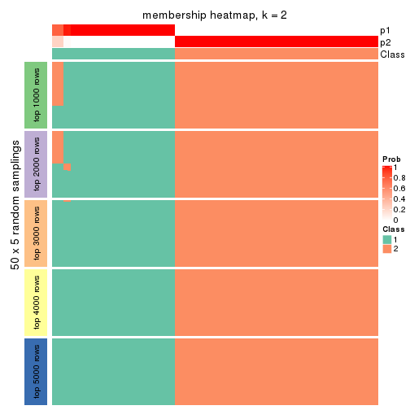
membership_heatmap(res, k = 3)
membership_heatmap(res, k = 4)
membership_heatmap(res, k = 5)
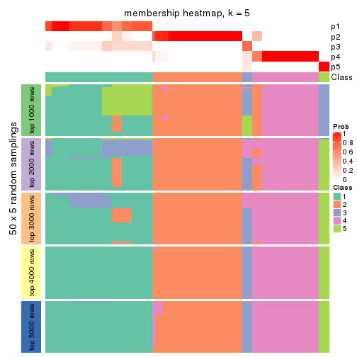
membership_heatmap(res, k = 6)
As soon as we have had the classes for columns, we can look for signatures which are significantly different between classes which can be candidate marks for certain classes. Following are the heatmaps for signatures.
Signature heatmaps where rows are scaled:
get_signatures(res, k = 2)
get_signatures(res, k = 3)
get_signatures(res, k = 4)
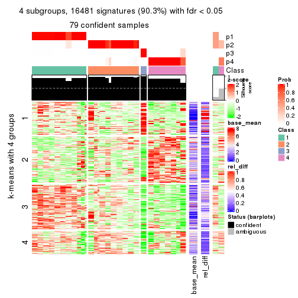
get_signatures(res, k = 5)
get_signatures(res, k = 6)
Signature heatmaps where rows are not scaled:
get_signatures(res, k = 2, scale_rows = FALSE)
get_signatures(res, k = 3, scale_rows = FALSE)
get_signatures(res, k = 4, scale_rows = FALSE)
get_signatures(res, k = 5, scale_rows = FALSE)
get_signatures(res, k = 6, scale_rows = FALSE)
Compare the overlap of signatures from different k:
compare_signatures(res)
get_signature() returns a data frame invisibly. TO get the list of signatures, the function
call should be assigned to a variable explicitly. In following code, if plot argument is set
to FALSE, no heatmap is plotted while only the differential analysis is performed.
# code only for demonstration
tb = get_signature(res, k = ..., plot = FALSE)
An example of the output of tb is:
#> which_row fdr mean_1 mean_2 scaled_mean_1 scaled_mean_2 km
#> 1 38 0.042760348 8.373488 9.131774 -0.5533452 0.5164555 1
#> 2 40 0.018707592 7.106213 8.469186 -0.6173731 0.5762149 1
#> 3 55 0.019134737 10.221463 11.207825 -0.6159697 0.5749050 1
#> 4 59 0.006059896 5.921854 7.869574 -0.6899429 0.6439467 1
#> 5 60 0.018055526 8.928898 10.211722 -0.6204761 0.5791110 1
#> 6 98 0.009384629 15.714769 14.887706 0.6635654 -0.6193277 2
...
The columns in tb are:
which_row: row indices corresponding to the input matrix.fdr: FDR for the differential test. mean_x: The mean value in group x.scaled_mean_x: The mean value in group x after rows are scaled.km: Row groups if k-means clustering is applied to rows.UMAP plot which shows how samples are separated.
dimension_reduction(res, k = 2, method = "UMAP")

dimension_reduction(res, k = 3, method = "UMAP")
dimension_reduction(res, k = 4, method = "UMAP")
dimension_reduction(res, k = 5, method = "UMAP")
dimension_reduction(res, k = 6, method = "UMAP")
Following heatmap shows how subgroups are split when increasing k:
collect_classes(res)
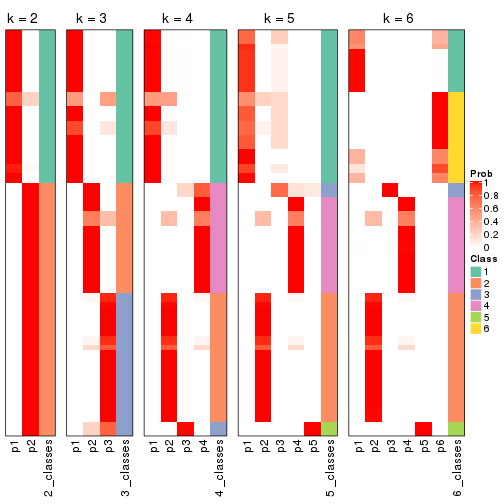
If matrix rows can be associated to genes, consider to use GO_Enrichment(res,
...) to perform function enrichment for the signature genes.
The object with results only for a single top-value method and a single partition method can be extracted as:
res = res_list["MAD", "mclust"]
# you can also extract it by
# res = res_list["MAD:mclust"]
A summary of res and all the functions that can be applied to it:
res
#> A 'ConsensusPartition' object with k = 2, 3, 4, 5, 6.
#> On a matrix with 18243 rows and 85 columns.
#> Top rows (1000, 2000, 3000, 4000, 5000) are extracted by 'MAD' method.
#> Subgroups are detected by 'mclust' method.
#> Performed in total 1250 partitions by row resampling.
#> Best k for subgroups seems to be 3.
#>
#> Following methods can be applied to this 'ConsensusPartition' object:
#> [1] "cola_report" "collect_classes" "collect_plots"
#> [4] "collect_stats" "colnames" "compare_signatures"
#> [7] "consensus_heatmap" "dimension_reduction" "functional_enrichment"
#> [10] "get_anno_col" "get_anno" "get_classes"
#> [13] "get_consensus" "get_matrix" "get_membership"
#> [16] "get_param" "get_signatures" "get_stats"
#> [19] "is_best_k" "is_stable_k" "membership_heatmap"
#> [22] "ncol" "nrow" "plot_ecdf"
#> [25] "rownames" "select_partition_number" "show"
#> [28] "suggest_best_k" "test_to_known_factors"
collect_plots() function collects all the plots made from res for all k (number of partitions)
into one single page to provide an easy and fast comparison between different k.
collect_plots(res)
The plots are:
k and the heatmap of
predicted classes for each k.k.k.k.All the plots in panels can be made by individual functions and they are plotted later in this section.
select_partition_number() produces several plots showing different
statistics for choosing “optimized” k. There are following statistics:
k;k, the area increased is defined as \(A_k - A_{k-1}\).The detailed explanations of these statistics can be found in the cola vignette.
Generally speaking, lower PAC score, higher mean silhouette score or higher
concordance corresponds to better partition. Rand index and Jaccard index
measure how similar the current partition is compared to partition with k-1.
If they are too similar, we won't accept k is better than k-1.
select_partition_number(res)
The numeric values for all these statistics can be obtained by get_stats().
get_stats(res)
#> k 1-PAC mean_silhouette concordance area_increased Rand Jaccard
#> 2 2 0.145 0.559 0.742 0.4088 0.580 0.580
#> 3 3 0.740 0.877 0.926 0.5043 0.781 0.631
#> 4 4 0.630 0.622 0.818 0.1498 0.869 0.678
#> 5 5 0.706 0.750 0.828 0.0704 0.917 0.735
#> 6 6 0.835 0.810 0.875 0.0338 0.966 0.865
suggest_best_k() suggests the best \(k\) based on these statistics. The rules are as follows:
NA.suggest_best_k(res)
#> [1] 3
Following shows the table of the partitions (You need to click the show/hide
code output link to see it). The membership matrix (columns with name p*)
is inferred by
clue::cl_consensus()
function with the SE method. Basically the value in the membership matrix
represents the probability to belong to a certain group. The finall class
label for an item is determined with the group with highest probability it
belongs to.
In get_classes() function, the entropy is calculated from the membership
matrix and the silhouette score is calculated from the consensus matrix.
cbind(get_classes(res, k = 2), get_membership(res, k = 2))
#> class entropy silhouette p1 p2
#> ERR532547 2 0.8207 0.490 0.256 0.744
#> ERR532548 2 0.8207 0.493 0.256 0.744
#> ERR532549 2 0.8327 0.486 0.264 0.736
#> ERR532576 1 0.9993 0.534 0.516 0.484
#> ERR532577 2 0.9993 -0.488 0.484 0.516
#> ERR532578 2 0.9993 -0.488 0.484 0.516
#> ERR532593 1 0.9044 0.843 0.680 0.320
#> ERR532594 1 0.9209 0.833 0.664 0.336
#> ERR532595 1 0.9427 0.812 0.640 0.360
#> ERR532596 2 0.4815 0.589 0.104 0.896
#> ERR532597 2 0.4690 0.591 0.100 0.900
#> ERR532598 2 0.4690 0.591 0.100 0.900
#> ERR532599 2 0.7602 0.484 0.220 0.780
#> ERR532600 2 0.7602 0.484 0.220 0.780
#> ERR532601 2 0.7602 0.484 0.220 0.780
#> ERR532602 1 0.8207 0.852 0.744 0.256
#> ERR532603 1 0.8207 0.852 0.744 0.256
#> ERR532604 1 0.8207 0.852 0.744 0.256
#> ERR532605 1 0.8207 0.852 0.744 0.256
#> ERR532606 1 0.8207 0.852 0.744 0.256
#> ERR532607 1 0.8207 0.852 0.744 0.256
#> ERR532608 2 0.7602 0.509 0.220 0.780
#> ERR532609 2 0.7602 0.509 0.220 0.780
#> ERR532610 2 0.7602 0.509 0.220 0.780
#> ERR532611 1 0.8081 0.848 0.752 0.248
#> ERR532612 1 0.8144 0.851 0.748 0.252
#> ERR532613 1 0.8081 0.848 0.752 0.248
#> ERR532550 2 0.9661 0.381 0.392 0.608
#> ERR532551 2 0.7602 0.484 0.220 0.780
#> ERR532552 2 0.7602 0.484 0.220 0.780
#> ERR532553 2 0.7602 0.484 0.220 0.780
#> ERR532554 2 0.6531 0.550 0.168 0.832
#> ERR532555 2 0.6531 0.550 0.168 0.832
#> ERR532556 2 0.6531 0.550 0.168 0.832
#> ERR532557 2 0.7602 0.484 0.220 0.780
#> ERR532558 2 0.7602 0.484 0.220 0.780
#> ERR532559 2 0.7528 0.488 0.216 0.784
#> ERR532560 1 0.9922 0.673 0.552 0.448
#> ERR532561 1 0.9922 0.673 0.552 0.448
#> ERR532562 1 0.9922 0.673 0.552 0.448
#> ERR532563 2 0.0000 0.616 0.000 1.000
#> ERR532564 2 0.0000 0.616 0.000 1.000
#> ERR532565 2 0.0000 0.616 0.000 1.000
#> ERR532566 2 0.9933 0.388 0.452 0.548
#> ERR532567 2 0.9933 0.388 0.452 0.548
#> ERR532568 2 0.9933 0.388 0.452 0.548
#> ERR532569 1 0.9358 0.821 0.648 0.352
#> ERR532570 1 0.9881 0.696 0.564 0.436
#> ERR532571 1 0.9635 0.775 0.612 0.388
#> ERR532572 2 0.0000 0.616 0.000 1.000
#> ERR532573 2 0.0000 0.616 0.000 1.000
#> ERR532574 2 0.0000 0.616 0.000 1.000
#> ERR532575 2 0.9754 0.215 0.408 0.592
#> ERR532579 2 0.5294 0.544 0.120 0.880
#> ERR532580 2 0.5059 0.545 0.112 0.888
#> ERR532581 2 0.0376 0.617 0.004 0.996
#> ERR532582 2 0.0376 0.617 0.004 0.996
#> ERR532583 2 0.0376 0.617 0.004 0.996
#> ERR532584 2 0.7602 0.484 0.220 0.780
#> ERR532585 2 0.7602 0.484 0.220 0.780
#> ERR532586 2 0.7602 0.484 0.220 0.780
#> ERR532587 2 0.6247 0.566 0.156 0.844
#> ERR532588 2 0.5178 0.591 0.116 0.884
#> ERR532589 2 0.7602 0.484 0.220 0.780
#> ERR532590 2 0.7602 0.484 0.220 0.780
#> ERR532591 2 0.7453 0.504 0.212 0.788
#> ERR532592 2 0.7453 0.504 0.212 0.788
#> ERR532439 2 0.7602 0.484 0.220 0.780
#> ERR532440 2 0.7602 0.484 0.220 0.780
#> ERR532441 2 0.7602 0.484 0.220 0.780
#> ERR532442 1 0.9393 0.814 0.644 0.356
#> ERR532443 1 0.8861 0.851 0.696 0.304
#> ERR532444 1 0.8861 0.851 0.696 0.304
#> ERR532445 1 0.7950 0.839 0.760 0.240
#> ERR532446 1 0.7950 0.839 0.760 0.240
#> ERR532447 1 0.7950 0.839 0.760 0.240
#> ERR532433 2 0.7602 0.484 0.220 0.780
#> ERR532434 2 0.7602 0.484 0.220 0.780
#> ERR532435 2 0.7602 0.484 0.220 0.780
#> ERR532436 2 0.9754 0.215 0.408 0.592
#> ERR532437 2 0.9754 0.215 0.408 0.592
#> ERR532438 2 0.9754 0.215 0.408 0.592
#> ERR532614 2 0.9933 0.388 0.452 0.548
#> ERR532615 2 0.9933 0.388 0.452 0.548
#> ERR532616 2 0.9933 0.388 0.452 0.548
cbind(get_classes(res, k = 3), get_membership(res, k = 3))
#> class entropy silhouette p1 p2 p3
#> ERR532547 2 0.5406 0.783 0.020 0.780 0.200
#> ERR532548 2 0.5406 0.783 0.020 0.780 0.200
#> ERR532549 2 0.5406 0.783 0.020 0.780 0.200
#> ERR532576 1 0.0000 0.999 1.000 0.000 0.000
#> ERR532577 1 0.0000 0.999 1.000 0.000 0.000
#> ERR532578 1 0.0000 0.999 1.000 0.000 0.000
#> ERR532593 1 0.0000 0.999 1.000 0.000 0.000
#> ERR532594 1 0.0000 0.999 1.000 0.000 0.000
#> ERR532595 1 0.0000 0.999 1.000 0.000 0.000
#> ERR532596 2 0.3879 0.834 0.000 0.848 0.152
#> ERR532597 2 0.3879 0.834 0.000 0.848 0.152
#> ERR532598 2 0.3879 0.834 0.000 0.848 0.152
#> ERR532599 2 0.0000 0.891 0.000 1.000 0.000
#> ERR532600 2 0.0000 0.891 0.000 1.000 0.000
#> ERR532601 2 0.0000 0.891 0.000 1.000 0.000
#> ERR532602 1 0.0000 0.999 1.000 0.000 0.000
#> ERR532603 1 0.0000 0.999 1.000 0.000 0.000
#> ERR532604 1 0.0000 0.999 1.000 0.000 0.000
#> ERR532605 1 0.0000 0.999 1.000 0.000 0.000
#> ERR532606 1 0.0000 0.999 1.000 0.000 0.000
#> ERR532607 1 0.0000 0.999 1.000 0.000 0.000
#> ERR532608 2 0.5406 0.783 0.020 0.780 0.200
#> ERR532609 2 0.5406 0.783 0.020 0.780 0.200
#> ERR532610 2 0.5406 0.783 0.020 0.780 0.200
#> ERR532611 1 0.0000 0.999 1.000 0.000 0.000
#> ERR532612 1 0.0000 0.999 1.000 0.000 0.000
#> ERR532613 1 0.0000 0.999 1.000 0.000 0.000
#> ERR532550 3 0.6608 0.614 0.356 0.016 0.628
#> ERR532551 2 0.0000 0.891 0.000 1.000 0.000
#> ERR532552 2 0.0000 0.891 0.000 1.000 0.000
#> ERR532553 2 0.0000 0.891 0.000 1.000 0.000
#> ERR532554 3 0.2448 0.815 0.000 0.076 0.924
#> ERR532555 3 0.2448 0.815 0.000 0.076 0.924
#> ERR532556 3 0.2448 0.815 0.000 0.076 0.924
#> ERR532557 2 0.0237 0.891 0.004 0.996 0.000
#> ERR532558 2 0.0237 0.891 0.004 0.996 0.000
#> ERR532559 2 0.0000 0.891 0.000 1.000 0.000
#> ERR532560 1 0.0237 0.994 0.996 0.004 0.000
#> ERR532561 1 0.0237 0.994 0.996 0.004 0.000
#> ERR532562 1 0.0237 0.994 0.996 0.004 0.000
#> ERR532563 2 0.2066 0.880 0.000 0.940 0.060
#> ERR532564 2 0.2066 0.880 0.000 0.940 0.060
#> ERR532565 2 0.2066 0.880 0.000 0.940 0.060
#> ERR532566 3 0.0000 0.839 0.000 0.000 1.000
#> ERR532567 3 0.0000 0.839 0.000 0.000 1.000
#> ERR532568 3 0.0000 0.839 0.000 0.000 1.000
#> ERR532569 1 0.0000 0.999 1.000 0.000 0.000
#> ERR532570 1 0.0000 0.999 1.000 0.000 0.000
#> ERR532571 1 0.0000 0.999 1.000 0.000 0.000
#> ERR532572 2 0.0000 0.891 0.000 1.000 0.000
#> ERR532573 2 0.0000 0.891 0.000 1.000 0.000
#> ERR532574 2 0.0000 0.891 0.000 1.000 0.000
#> ERR532575 2 0.4796 0.722 0.220 0.780 0.000
#> ERR532579 3 0.6717 0.625 0.352 0.020 0.628
#> ERR532580 3 0.6717 0.625 0.352 0.020 0.628
#> ERR532581 2 0.2066 0.880 0.000 0.940 0.060
#> ERR532582 2 0.2066 0.880 0.000 0.940 0.060
#> ERR532583 2 0.2066 0.880 0.000 0.940 0.060
#> ERR532584 2 0.0747 0.890 0.016 0.984 0.000
#> ERR532585 2 0.0747 0.890 0.016 0.984 0.000
#> ERR532586 2 0.0747 0.890 0.016 0.984 0.000
#> ERR532587 2 0.4345 0.839 0.016 0.848 0.136
#> ERR532588 2 0.4345 0.839 0.016 0.848 0.136
#> ERR532589 2 0.0592 0.891 0.012 0.988 0.000
#> ERR532590 2 0.0592 0.891 0.012 0.988 0.000
#> ERR532591 3 0.6427 0.631 0.348 0.012 0.640
#> ERR532592 3 0.6427 0.631 0.348 0.012 0.640
#> ERR532439 2 0.0592 0.891 0.012 0.988 0.000
#> ERR532440 2 0.0592 0.891 0.012 0.988 0.000
#> ERR532441 2 0.0592 0.891 0.012 0.988 0.000
#> ERR532442 1 0.0000 0.999 1.000 0.000 0.000
#> ERR532443 1 0.0000 0.999 1.000 0.000 0.000
#> ERR532444 1 0.0000 0.999 1.000 0.000 0.000
#> ERR532445 1 0.0000 0.999 1.000 0.000 0.000
#> ERR532446 1 0.0000 0.999 1.000 0.000 0.000
#> ERR532447 1 0.0000 0.999 1.000 0.000 0.000
#> ERR532433 2 0.4931 0.709 0.232 0.768 0.000
#> ERR532434 2 0.4931 0.709 0.232 0.768 0.000
#> ERR532435 2 0.4931 0.709 0.232 0.768 0.000
#> ERR532436 2 0.4974 0.704 0.236 0.764 0.000
#> ERR532437 2 0.4974 0.704 0.236 0.764 0.000
#> ERR532438 2 0.4974 0.704 0.236 0.764 0.000
#> ERR532614 3 0.0000 0.839 0.000 0.000 1.000
#> ERR532615 3 0.0000 0.839 0.000 0.000 1.000
#> ERR532616 3 0.0000 0.839 0.000 0.000 1.000
cbind(get_classes(res, k = 4), get_membership(res, k = 4))
#> class entropy silhouette p1 p2 p3 p4
#> ERR532547 2 0.8079 0.0333 0.036 0.460 0.140 0.364
#> ERR532548 2 0.8079 0.0333 0.036 0.460 0.140 0.364
#> ERR532549 2 0.8079 0.0333 0.036 0.460 0.140 0.364
#> ERR532576 1 0.0592 0.9665 0.984 0.000 0.000 0.016
#> ERR532577 1 0.0592 0.9665 0.984 0.000 0.000 0.016
#> ERR532578 1 0.0592 0.9665 0.984 0.000 0.000 0.016
#> ERR532593 1 0.0000 0.9822 1.000 0.000 0.000 0.000
#> ERR532594 1 0.0000 0.9822 1.000 0.000 0.000 0.000
#> ERR532595 1 0.0000 0.9822 1.000 0.000 0.000 0.000
#> ERR532596 4 0.4817 0.4589 0.000 0.388 0.000 0.612
#> ERR532597 4 0.4817 0.4589 0.000 0.388 0.000 0.612
#> ERR532598 4 0.4817 0.4589 0.000 0.388 0.000 0.612
#> ERR532599 2 0.4382 0.4278 0.000 0.704 0.000 0.296
#> ERR532600 2 0.4382 0.4278 0.000 0.704 0.000 0.296
#> ERR532601 2 0.4382 0.4278 0.000 0.704 0.000 0.296
#> ERR532602 1 0.0000 0.9822 1.000 0.000 0.000 0.000
#> ERR532603 1 0.0000 0.9822 1.000 0.000 0.000 0.000
#> ERR532604 1 0.0000 0.9822 1.000 0.000 0.000 0.000
#> ERR532605 1 0.0000 0.9822 1.000 0.000 0.000 0.000
#> ERR532606 1 0.0188 0.9790 0.996 0.000 0.000 0.004
#> ERR532607 1 0.0188 0.9790 0.996 0.000 0.000 0.004
#> ERR532608 2 0.6889 0.3104 0.004 0.612 0.176 0.208
#> ERR532609 2 0.6889 0.3104 0.004 0.612 0.176 0.208
#> ERR532610 2 0.6889 0.3104 0.004 0.612 0.176 0.208
#> ERR532611 1 0.0000 0.9822 1.000 0.000 0.000 0.000
#> ERR532612 1 0.0000 0.9822 1.000 0.000 0.000 0.000
#> ERR532613 1 0.0000 0.9822 1.000 0.000 0.000 0.000
#> ERR532550 1 0.6459 0.3525 0.640 0.016 0.272 0.072
#> ERR532551 2 0.1305 0.6637 0.000 0.960 0.004 0.036
#> ERR532552 2 0.1305 0.6637 0.000 0.960 0.004 0.036
#> ERR532553 2 0.1305 0.6637 0.000 0.960 0.004 0.036
#> ERR532554 4 0.5289 -0.2306 0.000 0.020 0.344 0.636
#> ERR532555 4 0.5289 -0.2306 0.000 0.020 0.344 0.636
#> ERR532556 4 0.5289 -0.2306 0.000 0.020 0.344 0.636
#> ERR532557 2 0.3074 0.5872 0.000 0.848 0.000 0.152
#> ERR532558 2 0.3074 0.5872 0.000 0.848 0.000 0.152
#> ERR532559 2 0.3074 0.5872 0.000 0.848 0.000 0.152
#> ERR532560 1 0.0000 0.9822 1.000 0.000 0.000 0.000
#> ERR532561 1 0.0000 0.9822 1.000 0.000 0.000 0.000
#> ERR532562 1 0.0000 0.9822 1.000 0.000 0.000 0.000
#> ERR532563 2 0.5000 -0.2606 0.000 0.504 0.000 0.496
#> ERR532564 2 0.5000 -0.2606 0.000 0.504 0.000 0.496
#> ERR532565 2 0.5168 -0.2682 0.000 0.500 0.004 0.496
#> ERR532566 3 0.0469 0.7205 0.000 0.000 0.988 0.012
#> ERR532567 3 0.0469 0.7205 0.000 0.000 0.988 0.012
#> ERR532568 3 0.0469 0.7205 0.000 0.000 0.988 0.012
#> ERR532569 1 0.0000 0.9822 1.000 0.000 0.000 0.000
#> ERR532570 1 0.0000 0.9822 1.000 0.000 0.000 0.000
#> ERR532571 1 0.0000 0.9822 1.000 0.000 0.000 0.000
#> ERR532572 4 0.4624 0.5070 0.000 0.340 0.000 0.660
#> ERR532573 4 0.4624 0.5070 0.000 0.340 0.000 0.660
#> ERR532574 4 0.4624 0.5070 0.000 0.340 0.000 0.660
#> ERR532575 2 0.3758 0.6276 0.104 0.848 0.000 0.048
#> ERR532579 3 0.7984 0.4763 0.224 0.008 0.412 0.356
#> ERR532580 3 0.7984 0.4763 0.224 0.008 0.412 0.356
#> ERR532581 4 0.4008 0.5889 0.000 0.244 0.000 0.756
#> ERR532582 4 0.4008 0.5889 0.000 0.244 0.000 0.756
#> ERR532583 4 0.4008 0.5889 0.000 0.244 0.000 0.756
#> ERR532584 2 0.1302 0.6641 0.000 0.956 0.000 0.044
#> ERR532585 2 0.1302 0.6641 0.000 0.956 0.000 0.044
#> ERR532586 2 0.1302 0.6641 0.000 0.956 0.000 0.044
#> ERR532587 4 0.4804 0.4630 0.000 0.384 0.000 0.616
#> ERR532588 4 0.4804 0.4630 0.000 0.384 0.000 0.616
#> ERR532589 2 0.1637 0.6609 0.000 0.940 0.000 0.060
#> ERR532590 2 0.1637 0.6609 0.000 0.940 0.000 0.060
#> ERR532591 3 0.6337 0.5770 0.072 0.000 0.568 0.360
#> ERR532592 3 0.6337 0.5770 0.072 0.000 0.568 0.360
#> ERR532439 2 0.1489 0.6592 0.000 0.952 0.004 0.044
#> ERR532440 2 0.1398 0.6605 0.000 0.956 0.004 0.040
#> ERR532441 2 0.1398 0.6605 0.000 0.956 0.004 0.040
#> ERR532442 1 0.0000 0.9822 1.000 0.000 0.000 0.000
#> ERR532443 1 0.0000 0.9822 1.000 0.000 0.000 0.000
#> ERR532444 1 0.0000 0.9822 1.000 0.000 0.000 0.000
#> ERR532445 1 0.0000 0.9822 1.000 0.000 0.000 0.000
#> ERR532446 1 0.0000 0.9822 1.000 0.000 0.000 0.000
#> ERR532447 1 0.0000 0.9822 1.000 0.000 0.000 0.000
#> ERR532433 2 0.3940 0.6106 0.100 0.848 0.008 0.044
#> ERR532434 2 0.3940 0.6106 0.100 0.848 0.008 0.044
#> ERR532435 2 0.3940 0.6106 0.100 0.848 0.008 0.044
#> ERR532436 2 0.3914 0.6072 0.104 0.848 0.008 0.040
#> ERR532437 2 0.3914 0.6072 0.104 0.848 0.008 0.040
#> ERR532438 2 0.3914 0.6072 0.104 0.848 0.008 0.040
#> ERR532614 3 0.2921 0.6876 0.000 0.000 0.860 0.140
#> ERR532615 3 0.2921 0.6876 0.000 0.000 0.860 0.140
#> ERR532616 3 0.2921 0.6876 0.000 0.000 0.860 0.140
cbind(get_classes(res, k = 5), get_membership(res, k = 5))
#> class entropy silhouette p1 p2 p3 p4 p5
#> ERR532547 4 0.8510 0.139 0.000 0.256 0.188 0.316 0.240
#> ERR532548 4 0.8510 0.139 0.000 0.256 0.188 0.316 0.240
#> ERR532549 4 0.8510 0.139 0.000 0.256 0.188 0.316 0.240
#> ERR532576 1 0.1195 0.911 0.960 0.000 0.000 0.012 0.028
#> ERR532577 1 0.1106 0.914 0.964 0.000 0.000 0.012 0.024
#> ERR532578 1 0.1106 0.914 0.964 0.000 0.000 0.012 0.024
#> ERR532593 1 0.0162 0.927 0.996 0.000 0.000 0.004 0.000
#> ERR532594 1 0.0162 0.927 0.996 0.000 0.000 0.004 0.000
#> ERR532595 1 0.0162 0.927 0.996 0.000 0.000 0.004 0.000
#> ERR532596 4 0.3731 0.651 0.000 0.112 0.072 0.816 0.000
#> ERR532597 4 0.3731 0.651 0.000 0.112 0.072 0.816 0.000
#> ERR532598 4 0.3731 0.651 0.000 0.112 0.072 0.816 0.000
#> ERR532599 2 0.7283 0.536 0.000 0.540 0.088 0.192 0.180
#> ERR532600 2 0.7283 0.536 0.000 0.540 0.088 0.192 0.180
#> ERR532601 2 0.7283 0.536 0.000 0.540 0.088 0.192 0.180
#> ERR532602 1 0.0324 0.927 0.992 0.000 0.004 0.004 0.000
#> ERR532603 1 0.0324 0.927 0.992 0.000 0.004 0.004 0.000
#> ERR532604 1 0.0324 0.927 0.992 0.000 0.004 0.004 0.000
#> ERR532605 1 0.0290 0.926 0.992 0.000 0.000 0.008 0.000
#> ERR532606 1 0.0579 0.924 0.984 0.000 0.000 0.008 0.008
#> ERR532607 1 0.0579 0.924 0.984 0.000 0.000 0.008 0.008
#> ERR532608 2 0.6783 0.466 0.000 0.520 0.040 0.124 0.316
#> ERR532609 2 0.6783 0.466 0.000 0.520 0.040 0.124 0.316
#> ERR532610 2 0.6783 0.466 0.000 0.520 0.040 0.124 0.316
#> ERR532611 1 0.0290 0.926 0.992 0.000 0.000 0.008 0.000
#> ERR532612 1 0.0290 0.926 0.992 0.000 0.000 0.008 0.000
#> ERR532613 1 0.0290 0.926 0.992 0.000 0.000 0.008 0.000
#> ERR532550 1 0.5191 0.826 0.760 0.048 0.068 0.112 0.012
#> ERR532551 2 0.0000 0.740 0.000 1.000 0.000 0.000 0.000
#> ERR532552 2 0.0000 0.740 0.000 1.000 0.000 0.000 0.000
#> ERR532553 2 0.0000 0.740 0.000 1.000 0.000 0.000 0.000
#> ERR532554 3 0.0955 0.896 0.000 0.000 0.968 0.004 0.028
#> ERR532555 3 0.0955 0.896 0.000 0.000 0.968 0.004 0.028
#> ERR532556 3 0.0955 0.896 0.000 0.000 0.968 0.004 0.028
#> ERR532557 2 0.3692 0.711 0.000 0.812 0.008 0.152 0.028
#> ERR532558 2 0.3733 0.709 0.000 0.808 0.008 0.156 0.028
#> ERR532559 2 0.3733 0.709 0.000 0.808 0.008 0.156 0.028
#> ERR532560 1 0.2795 0.919 0.872 0.000 0.028 0.100 0.000
#> ERR532561 1 0.2795 0.919 0.872 0.000 0.028 0.100 0.000
#> ERR532562 1 0.2795 0.919 0.872 0.000 0.028 0.100 0.000
#> ERR532563 4 0.4358 0.531 0.000 0.228 0.008 0.736 0.028
#> ERR532564 4 0.4329 0.534 0.000 0.224 0.008 0.740 0.028
#> ERR532565 4 0.4329 0.534 0.000 0.224 0.008 0.740 0.028
#> ERR532566 5 0.0794 1.000 0.000 0.000 0.028 0.000 0.972
#> ERR532567 5 0.0794 1.000 0.000 0.000 0.028 0.000 0.972
#> ERR532568 5 0.0794 1.000 0.000 0.000 0.028 0.000 0.972
#> ERR532569 1 0.2795 0.919 0.872 0.000 0.028 0.100 0.000
#> ERR532570 1 0.2795 0.919 0.872 0.000 0.028 0.100 0.000
#> ERR532571 1 0.2795 0.919 0.872 0.000 0.028 0.100 0.000
#> ERR532572 4 0.6510 0.415 0.000 0.360 0.196 0.444 0.000
#> ERR532573 4 0.6510 0.415 0.000 0.360 0.196 0.444 0.000
#> ERR532574 4 0.6510 0.415 0.000 0.360 0.196 0.444 0.000
#> ERR532575 2 0.4124 0.716 0.000 0.796 0.012 0.140 0.052
#> ERR532579 3 0.2806 0.826 0.152 0.000 0.844 0.004 0.000
#> ERR532580 3 0.2806 0.826 0.152 0.000 0.844 0.004 0.000
#> ERR532581 4 0.3491 0.536 0.000 0.004 0.228 0.768 0.000
#> ERR532582 4 0.3461 0.539 0.000 0.004 0.224 0.772 0.000
#> ERR532583 4 0.3461 0.539 0.000 0.004 0.224 0.772 0.000
#> ERR532584 2 0.6202 0.529 0.000 0.516 0.004 0.132 0.348
#> ERR532585 2 0.6192 0.533 0.000 0.520 0.004 0.132 0.344
#> ERR532586 2 0.6192 0.533 0.000 0.520 0.004 0.132 0.344
#> ERR532587 4 0.3932 0.659 0.000 0.140 0.064 0.796 0.000
#> ERR532588 4 0.3932 0.659 0.000 0.140 0.064 0.796 0.000
#> ERR532589 2 0.3801 0.709 0.000 0.808 0.012 0.152 0.028
#> ERR532590 2 0.3801 0.709 0.000 0.808 0.012 0.152 0.028
#> ERR532591 3 0.2369 0.896 0.032 0.000 0.908 0.004 0.056
#> ERR532592 3 0.2369 0.896 0.032 0.000 0.908 0.004 0.056
#> ERR532439 2 0.1800 0.743 0.000 0.932 0.000 0.020 0.048
#> ERR532440 2 0.1485 0.744 0.000 0.948 0.000 0.020 0.032
#> ERR532441 2 0.1200 0.742 0.000 0.964 0.008 0.016 0.012
#> ERR532442 1 0.2795 0.919 0.872 0.000 0.028 0.100 0.000
#> ERR532443 1 0.2795 0.919 0.872 0.000 0.028 0.100 0.000
#> ERR532444 1 0.2795 0.919 0.872 0.000 0.028 0.100 0.000
#> ERR532445 1 0.3188 0.913 0.860 0.012 0.028 0.100 0.000
#> ERR532446 1 0.3188 0.913 0.860 0.012 0.028 0.100 0.000
#> ERR532447 1 0.3188 0.913 0.860 0.012 0.028 0.100 0.000
#> ERR532433 2 0.0162 0.741 0.000 0.996 0.000 0.004 0.000
#> ERR532434 2 0.0162 0.741 0.000 0.996 0.000 0.004 0.000
#> ERR532435 2 0.0162 0.741 0.000 0.996 0.000 0.004 0.000
#> ERR532436 2 0.1831 0.740 0.000 0.920 0.000 0.004 0.076
#> ERR532437 2 0.1892 0.738 0.000 0.916 0.000 0.004 0.080
#> ERR532438 2 0.1502 0.744 0.000 0.940 0.000 0.004 0.056
#> ERR532614 5 0.0794 1.000 0.000 0.000 0.028 0.000 0.972
#> ERR532615 5 0.0794 1.000 0.000 0.000 0.028 0.000 0.972
#> ERR532616 5 0.0794 1.000 0.000 0.000 0.028 0.000 0.972
cbind(get_classes(res, k = 6), get_membership(res, k = 6))
#> class entropy silhouette p1 p2 p3 p4 p5 p6
#> ERR532547 3 0.4991 0.656 0.000 0.000 0.656 0.256 0.060 0.028
#> ERR532548 3 0.4991 0.656 0.000 0.000 0.656 0.256 0.060 0.028
#> ERR532549 3 0.4991 0.656 0.000 0.000 0.656 0.256 0.060 0.028
#> ERR532576 1 0.0777 0.895 0.972 0.000 0.024 0.000 0.000 0.004
#> ERR532577 1 0.0777 0.895 0.972 0.000 0.024 0.000 0.000 0.004
#> ERR532578 1 0.0777 0.895 0.972 0.000 0.024 0.000 0.000 0.004
#> ERR532593 1 0.0458 0.899 0.984 0.000 0.016 0.000 0.000 0.000
#> ERR532594 1 0.0458 0.899 0.984 0.000 0.016 0.000 0.000 0.000
#> ERR532595 1 0.0458 0.899 0.984 0.000 0.016 0.000 0.000 0.000
#> ERR532596 4 0.0363 0.669 0.000 0.012 0.000 0.988 0.000 0.000
#> ERR532597 4 0.0363 0.669 0.000 0.012 0.000 0.988 0.000 0.000
#> ERR532598 4 0.0363 0.669 0.000 0.012 0.000 0.988 0.000 0.000
#> ERR532599 2 0.4494 0.772 0.000 0.692 0.216 0.092 0.000 0.000
#> ERR532600 2 0.4494 0.772 0.000 0.692 0.216 0.092 0.000 0.000
#> ERR532601 2 0.4494 0.772 0.000 0.692 0.216 0.092 0.000 0.000
#> ERR532602 1 0.0717 0.900 0.976 0.000 0.016 0.000 0.000 0.008
#> ERR532603 1 0.0717 0.900 0.976 0.000 0.016 0.000 0.000 0.008
#> ERR532604 1 0.0717 0.900 0.976 0.000 0.016 0.000 0.000 0.008
#> ERR532605 1 0.0146 0.902 0.996 0.000 0.004 0.000 0.000 0.000
#> ERR532606 1 0.0146 0.902 0.996 0.000 0.004 0.000 0.000 0.000
#> ERR532607 1 0.0146 0.902 0.996 0.000 0.004 0.000 0.000 0.000
#> ERR532608 3 0.3480 0.692 0.000 0.200 0.776 0.016 0.008 0.000
#> ERR532609 3 0.3480 0.692 0.000 0.200 0.776 0.016 0.008 0.000
#> ERR532610 3 0.3480 0.692 0.000 0.200 0.776 0.016 0.008 0.000
#> ERR532611 1 0.0146 0.902 0.996 0.000 0.004 0.000 0.000 0.000
#> ERR532612 1 0.0146 0.902 0.996 0.000 0.004 0.000 0.000 0.000
#> ERR532613 1 0.0146 0.902 0.996 0.000 0.004 0.000 0.000 0.000
#> ERR532550 1 0.4894 0.836 0.728 0.008 0.176 0.016 0.048 0.024
#> ERR532551 2 0.0260 0.839 0.000 0.992 0.008 0.000 0.000 0.000
#> ERR532552 2 0.0260 0.839 0.000 0.992 0.008 0.000 0.000 0.000
#> ERR532553 2 0.0260 0.839 0.000 0.992 0.008 0.000 0.000 0.000
#> ERR532554 6 0.0632 0.990 0.000 0.000 0.000 0.024 0.000 0.976
#> ERR532555 6 0.0632 0.990 0.000 0.000 0.000 0.024 0.000 0.976
#> ERR532556 6 0.0632 0.990 0.000 0.000 0.000 0.024 0.000 0.976
#> ERR532557 2 0.3424 0.821 0.000 0.772 0.204 0.024 0.000 0.000
#> ERR532558 2 0.3424 0.821 0.000 0.772 0.204 0.024 0.000 0.000
#> ERR532559 2 0.3424 0.821 0.000 0.772 0.204 0.024 0.000 0.000
#> ERR532560 1 0.3098 0.887 0.812 0.000 0.164 0.000 0.000 0.024
#> ERR532561 1 0.3098 0.887 0.812 0.000 0.164 0.000 0.000 0.024
#> ERR532562 1 0.3098 0.887 0.812 0.000 0.164 0.000 0.000 0.024
#> ERR532563 4 0.5010 0.400 0.000 0.172 0.184 0.644 0.000 0.000
#> ERR532564 4 0.5010 0.400 0.000 0.172 0.184 0.644 0.000 0.000
#> ERR532565 4 0.5010 0.400 0.000 0.172 0.184 0.644 0.000 0.000
#> ERR532566 5 0.0000 1.000 0.000 0.000 0.000 0.000 1.000 0.000
#> ERR532567 5 0.0000 1.000 0.000 0.000 0.000 0.000 1.000 0.000
#> ERR532568 5 0.0000 1.000 0.000 0.000 0.000 0.000 1.000 0.000
#> ERR532569 1 0.3213 0.887 0.808 0.000 0.160 0.000 0.000 0.032
#> ERR532570 1 0.3213 0.887 0.808 0.000 0.160 0.000 0.000 0.032
#> ERR532571 1 0.3213 0.887 0.808 0.000 0.160 0.000 0.000 0.032
#> ERR532572 4 0.3817 0.221 0.000 0.432 0.000 0.568 0.000 0.000
#> ERR532573 4 0.3817 0.221 0.000 0.432 0.000 0.568 0.000 0.000
#> ERR532574 4 0.3817 0.221 0.000 0.432 0.000 0.568 0.000 0.000
#> ERR532575 2 0.3883 0.813 0.000 0.744 0.220 0.024 0.000 0.012
#> ERR532579 6 0.0862 0.976 0.016 0.000 0.004 0.008 0.000 0.972
#> ERR532580 6 0.0862 0.976 0.016 0.000 0.004 0.008 0.000 0.972
#> ERR532581 4 0.0865 0.655 0.000 0.000 0.000 0.964 0.000 0.036
#> ERR532582 4 0.0865 0.655 0.000 0.000 0.000 0.964 0.000 0.036
#> ERR532583 4 0.0865 0.655 0.000 0.000 0.000 0.964 0.000 0.036
#> ERR532584 2 0.3136 0.819 0.000 0.768 0.228 0.004 0.000 0.000
#> ERR532585 2 0.3136 0.819 0.000 0.768 0.228 0.004 0.000 0.000
#> ERR532586 2 0.3136 0.819 0.000 0.768 0.228 0.004 0.000 0.000
#> ERR532587 4 0.0458 0.669 0.000 0.016 0.000 0.984 0.000 0.000
#> ERR532588 4 0.0458 0.669 0.000 0.016 0.000 0.984 0.000 0.000
#> ERR532589 2 0.3874 0.804 0.000 0.732 0.228 0.040 0.000 0.000
#> ERR532590 2 0.3874 0.804 0.000 0.732 0.228 0.040 0.000 0.000
#> ERR532591 6 0.0632 0.990 0.000 0.000 0.000 0.024 0.000 0.976
#> ERR532592 6 0.0632 0.990 0.000 0.000 0.000 0.024 0.000 0.976
#> ERR532439 2 0.0405 0.841 0.000 0.988 0.004 0.008 0.000 0.000
#> ERR532440 2 0.0405 0.841 0.000 0.988 0.004 0.008 0.000 0.000
#> ERR532441 2 0.0405 0.841 0.000 0.988 0.004 0.008 0.000 0.000
#> ERR532442 1 0.3098 0.887 0.812 0.000 0.164 0.000 0.000 0.024
#> ERR532443 1 0.3098 0.887 0.812 0.000 0.164 0.000 0.000 0.024
#> ERR532444 1 0.3098 0.887 0.812 0.000 0.164 0.000 0.000 0.024
#> ERR532445 1 0.3447 0.883 0.800 0.012 0.164 0.000 0.000 0.024
#> ERR532446 1 0.3447 0.883 0.800 0.012 0.164 0.000 0.000 0.024
#> ERR532447 1 0.3447 0.883 0.800 0.012 0.164 0.000 0.000 0.024
#> ERR532433 2 0.0146 0.841 0.000 0.996 0.004 0.000 0.000 0.000
#> ERR532434 2 0.0146 0.841 0.000 0.996 0.004 0.000 0.000 0.000
#> ERR532435 2 0.0146 0.841 0.000 0.996 0.004 0.000 0.000 0.000
#> ERR532436 2 0.0146 0.841 0.000 0.996 0.004 0.000 0.000 0.000
#> ERR532437 2 0.0146 0.841 0.000 0.996 0.004 0.000 0.000 0.000
#> ERR532438 2 0.0146 0.841 0.000 0.996 0.004 0.000 0.000 0.000
#> ERR532614 5 0.0000 1.000 0.000 0.000 0.000 0.000 1.000 0.000
#> ERR532615 5 0.0000 1.000 0.000 0.000 0.000 0.000 1.000 0.000
#> ERR532616 5 0.0000 1.000 0.000 0.000 0.000 0.000 1.000 0.000
Heatmaps for the consensus matrix. It visualizes the probability of two samples to be in a same group.
consensus_heatmap(res, k = 2)
consensus_heatmap(res, k = 3)

consensus_heatmap(res, k = 4)
consensus_heatmap(res, k = 5)
consensus_heatmap(res, k = 6)
Heatmaps for the membership of samples in all partitions to see how consistent they are:
membership_heatmap(res, k = 2)
membership_heatmap(res, k = 3)
membership_heatmap(res, k = 4)
membership_heatmap(res, k = 5)
membership_heatmap(res, k = 6)
As soon as we have had the classes for columns, we can look for signatures which are significantly different between classes which can be candidate marks for certain classes. Following are the heatmaps for signatures.
Signature heatmaps where rows are scaled:
get_signatures(res, k = 2)
get_signatures(res, k = 3)
get_signatures(res, k = 4)
get_signatures(res, k = 5)
get_signatures(res, k = 6)
Signature heatmaps where rows are not scaled:
get_signatures(res, k = 2, scale_rows = FALSE)
get_signatures(res, k = 3, scale_rows = FALSE)
get_signatures(res, k = 4, scale_rows = FALSE)
get_signatures(res, k = 5, scale_rows = FALSE)
get_signatures(res, k = 6, scale_rows = FALSE)
Compare the overlap of signatures from different k:
compare_signatures(res)
get_signature() returns a data frame invisibly. TO get the list of signatures, the function
call should be assigned to a variable explicitly. In following code, if plot argument is set
to FALSE, no heatmap is plotted while only the differential analysis is performed.
# code only for demonstration
tb = get_signature(res, k = ..., plot = FALSE)
An example of the output of tb is:
#> which_row fdr mean_1 mean_2 scaled_mean_1 scaled_mean_2 km
#> 1 38 0.042760348 8.373488 9.131774 -0.5533452 0.5164555 1
#> 2 40 0.018707592 7.106213 8.469186 -0.6173731 0.5762149 1
#> 3 55 0.019134737 10.221463 11.207825 -0.6159697 0.5749050 1
#> 4 59 0.006059896 5.921854 7.869574 -0.6899429 0.6439467 1
#> 5 60 0.018055526 8.928898 10.211722 -0.6204761 0.5791110 1
#> 6 98 0.009384629 15.714769 14.887706 0.6635654 -0.6193277 2
...
The columns in tb are:
which_row: row indices corresponding to the input matrix.fdr: FDR for the differential test. mean_x: The mean value in group x.scaled_mean_x: The mean value in group x after rows are scaled.km: Row groups if k-means clustering is applied to rows.UMAP plot which shows how samples are separated.
dimension_reduction(res, k = 2, method = "UMAP")
dimension_reduction(res, k = 3, method = "UMAP")
dimension_reduction(res, k = 4, method = "UMAP")
dimension_reduction(res, k = 5, method = "UMAP")
dimension_reduction(res, k = 6, method = "UMAP")
Following heatmap shows how subgroups are split when increasing k:
collect_classes(res)
If matrix rows can be associated to genes, consider to use GO_Enrichment(res,
...) to perform function enrichment for the signature genes.
The object with results only for a single top-value method and a single partition method can be extracted as:
res = res_list["MAD", "NMF"]
# you can also extract it by
# res = res_list["MAD:NMF"]
A summary of res and all the functions that can be applied to it:
res
#> A 'ConsensusPartition' object with k = 2, 3, 4, 5, 6.
#> On a matrix with 18243 rows and 85 columns.
#> Top rows (1000, 2000, 3000, 4000, 5000) are extracted by 'MAD' method.
#> Subgroups are detected by 'NMF' method.
#> Performed in total 1250 partitions by row resampling.
#> Best k for subgroups seems to be 2.
#>
#> Following methods can be applied to this 'ConsensusPartition' object:
#> [1] "cola_report" "collect_classes" "collect_plots"
#> [4] "collect_stats" "colnames" "compare_signatures"
#> [7] "consensus_heatmap" "dimension_reduction" "functional_enrichment"
#> [10] "get_anno_col" "get_anno" "get_classes"
#> [13] "get_consensus" "get_matrix" "get_membership"
#> [16] "get_param" "get_signatures" "get_stats"
#> [19] "is_best_k" "is_stable_k" "membership_heatmap"
#> [22] "ncol" "nrow" "plot_ecdf"
#> [25] "rownames" "select_partition_number" "show"
#> [28] "suggest_best_k" "test_to_known_factors"
collect_plots() function collects all the plots made from res for all k (number of partitions)
into one single page to provide an easy and fast comparison between different k.
collect_plots(res)
The plots are:
k and the heatmap of
predicted classes for each k.k.k.k.All the plots in panels can be made by individual functions and they are plotted later in this section.
select_partition_number() produces several plots showing different
statistics for choosing “optimized” k. There are following statistics:
k;k, the area increased is defined as \(A_k - A_{k-1}\).The detailed explanations of these statistics can be found in the cola vignette.
Generally speaking, lower PAC score, higher mean silhouette score or higher
concordance corresponds to better partition. Rand index and Jaccard index
measure how similar the current partition is compared to partition with k-1.
If they are too similar, we won't accept k is better than k-1.
select_partition_number(res)
The numeric values for all these statistics can be obtained by get_stats().
get_stats(res)
#> k 1-PAC mean_silhouette concordance area_increased Rand Jaccard
#> 2 2 0.951 0.938 0.973 0.5028 0.496 0.496
#> 3 3 0.709 0.766 0.871 0.1720 0.935 0.869
#> 4 4 0.609 0.649 0.850 0.1499 0.774 0.541
#> 5 5 0.622 0.611 0.769 0.0717 0.805 0.505
#> 6 6 0.787 0.826 0.877 0.0586 0.865 0.575
suggest_best_k() suggests the best \(k\) based on these statistics. The rules are as follows:
NA.suggest_best_k(res)
#> [1] 2
Following shows the table of the partitions (You need to click the show/hide
code output link to see it). The membership matrix (columns with name p*)
is inferred by
clue::cl_consensus()
function with the SE method. Basically the value in the membership matrix
represents the probability to belong to a certain group. The finall class
label for an item is determined with the group with highest probability it
belongs to.
In get_classes() function, the entropy is calculated from the membership
matrix and the silhouette score is calculated from the consensus matrix.
cbind(get_classes(res, k = 2), get_membership(res, k = 2))
#> class entropy silhouette p1 p2
#> ERR532547 2 0.358 0.937 0.068 0.932
#> ERR532548 2 0.373 0.934 0.072 0.928
#> ERR532549 2 0.482 0.906 0.104 0.896
#> ERR532576 1 0.000 0.969 1.000 0.000
#> ERR532577 1 0.000 0.969 1.000 0.000
#> ERR532578 1 0.000 0.969 1.000 0.000
#> ERR532593 1 0.000 0.969 1.000 0.000
#> ERR532594 1 0.000 0.969 1.000 0.000
#> ERR532595 1 0.000 0.969 1.000 0.000
#> ERR532596 2 0.000 0.974 0.000 1.000
#> ERR532597 2 0.000 0.974 0.000 1.000
#> ERR532598 2 0.000 0.974 0.000 1.000
#> ERR532599 2 0.000 0.974 0.000 1.000
#> ERR532600 2 0.000 0.974 0.000 1.000
#> ERR532601 2 0.000 0.974 0.000 1.000
#> ERR532602 1 0.000 0.969 1.000 0.000
#> ERR532603 1 0.000 0.969 1.000 0.000
#> ERR532604 1 0.000 0.969 1.000 0.000
#> ERR532605 1 0.000 0.969 1.000 0.000
#> ERR532606 1 0.000 0.969 1.000 0.000
#> ERR532607 1 0.000 0.969 1.000 0.000
#> ERR532608 1 0.991 0.204 0.556 0.444
#> ERR532609 1 0.987 0.242 0.568 0.432
#> ERR532610 1 0.987 0.242 0.568 0.432
#> ERR532611 1 0.000 0.969 1.000 0.000
#> ERR532612 1 0.000 0.969 1.000 0.000
#> ERR532613 1 0.000 0.969 1.000 0.000
#> ERR532550 1 0.000 0.969 1.000 0.000
#> ERR532551 1 0.000 0.969 1.000 0.000
#> ERR532552 1 0.000 0.969 1.000 0.000
#> ERR532553 1 0.000 0.969 1.000 0.000
#> ERR532554 2 0.000 0.974 0.000 1.000
#> ERR532555 2 0.000 0.974 0.000 1.000
#> ERR532556 2 0.000 0.974 0.000 1.000
#> ERR532557 2 0.000 0.974 0.000 1.000
#> ERR532558 2 0.000 0.974 0.000 1.000
#> ERR532559 2 0.000 0.974 0.000 1.000
#> ERR532560 1 0.000 0.969 1.000 0.000
#> ERR532561 1 0.000 0.969 1.000 0.000
#> ERR532562 1 0.000 0.969 1.000 0.000
#> ERR532563 2 0.000 0.974 0.000 1.000
#> ERR532564 2 0.000 0.974 0.000 1.000
#> ERR532565 2 0.000 0.974 0.000 1.000
#> ERR532566 2 0.141 0.966 0.020 0.980
#> ERR532567 2 0.163 0.964 0.024 0.976
#> ERR532568 2 0.163 0.964 0.024 0.976
#> ERR532569 1 0.000 0.969 1.000 0.000
#> ERR532570 1 0.000 0.969 1.000 0.000
#> ERR532571 1 0.000 0.969 1.000 0.000
#> ERR532572 2 0.000 0.974 0.000 1.000
#> ERR532573 2 0.000 0.974 0.000 1.000
#> ERR532574 2 0.000 0.974 0.000 1.000
#> ERR532575 1 0.000 0.969 1.000 0.000
#> ERR532579 1 0.000 0.969 1.000 0.000
#> ERR532580 1 0.000 0.969 1.000 0.000
#> ERR532581 2 0.000 0.974 0.000 1.000
#> ERR532582 2 0.000 0.974 0.000 1.000
#> ERR532583 2 0.000 0.974 0.000 1.000
#> ERR532584 2 0.563 0.874 0.132 0.868
#> ERR532585 2 0.506 0.897 0.112 0.888
#> ERR532586 2 0.518 0.892 0.116 0.884
#> ERR532587 2 0.000 0.974 0.000 1.000
#> ERR532588 2 0.000 0.974 0.000 1.000
#> ERR532589 2 0.204 0.960 0.032 0.968
#> ERR532590 2 0.242 0.955 0.040 0.960
#> ERR532591 1 0.000 0.969 1.000 0.000
#> ERR532592 1 0.000 0.969 1.000 0.000
#> ERR532439 2 0.388 0.930 0.076 0.924
#> ERR532440 2 0.388 0.930 0.076 0.924
#> ERR532441 2 0.456 0.911 0.096 0.904
#> ERR532442 1 0.000 0.969 1.000 0.000
#> ERR532443 1 0.000 0.969 1.000 0.000
#> ERR532444 1 0.000 0.969 1.000 0.000
#> ERR532445 1 0.000 0.969 1.000 0.000
#> ERR532446 1 0.000 0.969 1.000 0.000
#> ERR532447 1 0.000 0.969 1.000 0.000
#> ERR532433 1 0.000 0.969 1.000 0.000
#> ERR532434 1 0.000 0.969 1.000 0.000
#> ERR532435 1 0.000 0.969 1.000 0.000
#> ERR532436 1 0.000 0.969 1.000 0.000
#> ERR532437 1 0.000 0.969 1.000 0.000
#> ERR532438 1 0.000 0.969 1.000 0.000
#> ERR532614 2 0.000 0.974 0.000 1.000
#> ERR532615 2 0.000 0.974 0.000 1.000
#> ERR532616 2 0.000 0.974 0.000 1.000
cbind(get_classes(res, k = 3), get_membership(res, k = 3))
#> class entropy silhouette p1 p2 p3
#> ERR532547 2 0.8063 -0.330 0.064 0.488 0.448
#> ERR532548 2 0.8065 -0.342 0.064 0.484 0.452
#> ERR532549 3 0.8119 0.379 0.068 0.432 0.500
#> ERR532576 1 0.0000 0.891 1.000 0.000 0.000
#> ERR532577 1 0.0000 0.891 1.000 0.000 0.000
#> ERR532578 1 0.0000 0.891 1.000 0.000 0.000
#> ERR532593 1 0.0000 0.891 1.000 0.000 0.000
#> ERR532594 1 0.0000 0.891 1.000 0.000 0.000
#> ERR532595 1 0.0000 0.891 1.000 0.000 0.000
#> ERR532596 2 0.0592 0.843 0.000 0.988 0.012
#> ERR532597 2 0.0592 0.843 0.000 0.988 0.012
#> ERR532598 2 0.0592 0.843 0.000 0.988 0.012
#> ERR532599 2 0.2711 0.836 0.000 0.912 0.088
#> ERR532600 2 0.2796 0.834 0.000 0.908 0.092
#> ERR532601 2 0.2796 0.834 0.000 0.908 0.092
#> ERR532602 1 0.0000 0.891 1.000 0.000 0.000
#> ERR532603 1 0.0000 0.891 1.000 0.000 0.000
#> ERR532604 1 0.0000 0.891 1.000 0.000 0.000
#> ERR532605 1 0.0000 0.891 1.000 0.000 0.000
#> ERR532606 1 0.0000 0.891 1.000 0.000 0.000
#> ERR532607 1 0.0000 0.891 1.000 0.000 0.000
#> ERR532608 1 0.9229 0.143 0.488 0.348 0.164
#> ERR532609 1 0.9217 0.153 0.492 0.344 0.164
#> ERR532610 1 0.9147 0.162 0.496 0.348 0.156
#> ERR532611 1 0.0000 0.891 1.000 0.000 0.000
#> ERR532612 1 0.0000 0.891 1.000 0.000 0.000
#> ERR532613 1 0.0000 0.891 1.000 0.000 0.000
#> ERR532550 1 0.0000 0.891 1.000 0.000 0.000
#> ERR532551 1 0.3499 0.829 0.900 0.028 0.072
#> ERR532552 1 0.3623 0.826 0.896 0.032 0.072
#> ERR532553 1 0.3499 0.829 0.900 0.028 0.072
#> ERR532554 2 0.2448 0.807 0.000 0.924 0.076
#> ERR532555 2 0.2448 0.807 0.000 0.924 0.076
#> ERR532556 2 0.2448 0.807 0.000 0.924 0.076
#> ERR532557 2 0.3412 0.832 0.000 0.876 0.124
#> ERR532558 2 0.3412 0.832 0.000 0.876 0.124
#> ERR532559 2 0.3412 0.832 0.000 0.876 0.124
#> ERR532560 1 0.0000 0.891 1.000 0.000 0.000
#> ERR532561 1 0.0000 0.891 1.000 0.000 0.000
#> ERR532562 1 0.0000 0.891 1.000 0.000 0.000
#> ERR532563 2 0.3192 0.838 0.000 0.888 0.112
#> ERR532564 2 0.3267 0.839 0.000 0.884 0.116
#> ERR532565 2 0.3267 0.839 0.000 0.884 0.116
#> ERR532566 3 0.3038 0.808 0.000 0.104 0.896
#> ERR532567 3 0.3038 0.808 0.000 0.104 0.896
#> ERR532568 3 0.3038 0.808 0.000 0.104 0.896
#> ERR532569 1 0.0000 0.891 1.000 0.000 0.000
#> ERR532570 1 0.0000 0.891 1.000 0.000 0.000
#> ERR532571 1 0.0000 0.891 1.000 0.000 0.000
#> ERR532572 2 0.0592 0.842 0.000 0.988 0.012
#> ERR532573 2 0.0592 0.842 0.000 0.988 0.012
#> ERR532574 2 0.0424 0.843 0.000 0.992 0.008
#> ERR532575 1 0.7570 0.296 0.552 0.404 0.044
#> ERR532579 1 0.8022 0.298 0.544 0.388 0.068
#> ERR532580 1 0.7953 0.337 0.564 0.368 0.068
#> ERR532581 2 0.2165 0.816 0.000 0.936 0.064
#> ERR532582 2 0.2165 0.816 0.000 0.936 0.064
#> ERR532583 2 0.2165 0.816 0.000 0.936 0.064
#> ERR532584 2 0.4591 0.814 0.032 0.848 0.120
#> ERR532585 2 0.4209 0.826 0.020 0.860 0.120
#> ERR532586 2 0.4209 0.826 0.020 0.860 0.120
#> ERR532587 2 0.1860 0.825 0.000 0.948 0.052
#> ERR532588 2 0.1964 0.823 0.000 0.944 0.056
#> ERR532589 2 0.3550 0.824 0.024 0.896 0.080
#> ERR532590 2 0.4295 0.795 0.032 0.864 0.104
#> ERR532591 1 0.7618 0.461 0.628 0.304 0.068
#> ERR532592 1 0.7618 0.461 0.628 0.304 0.068
#> ERR532439 2 0.4411 0.816 0.016 0.844 0.140
#> ERR532440 2 0.4551 0.813 0.020 0.840 0.140
#> ERR532441 2 0.4748 0.807 0.024 0.832 0.144
#> ERR532442 1 0.0000 0.891 1.000 0.000 0.000
#> ERR532443 1 0.0000 0.891 1.000 0.000 0.000
#> ERR532444 1 0.0000 0.891 1.000 0.000 0.000
#> ERR532445 1 0.0000 0.891 1.000 0.000 0.000
#> ERR532446 1 0.0000 0.891 1.000 0.000 0.000
#> ERR532447 1 0.0000 0.891 1.000 0.000 0.000
#> ERR532433 1 0.1765 0.870 0.956 0.004 0.040
#> ERR532434 1 0.1765 0.870 0.956 0.004 0.040
#> ERR532435 1 0.1765 0.870 0.956 0.004 0.040
#> ERR532436 1 0.1950 0.868 0.952 0.008 0.040
#> ERR532437 1 0.1950 0.868 0.952 0.008 0.040
#> ERR532438 1 0.1950 0.868 0.952 0.008 0.040
#> ERR532614 3 0.5397 0.789 0.000 0.280 0.720
#> ERR532615 3 0.5363 0.794 0.000 0.276 0.724
#> ERR532616 3 0.5363 0.794 0.000 0.276 0.724
cbind(get_classes(res, k = 4), get_membership(res, k = 4))
#> class entropy silhouette p1 p2 p3 p4
#> ERR532547 4 0.8491 0.4072 0.128 0.168 0.152 0.552
#> ERR532548 4 0.8498 0.4076 0.132 0.164 0.152 0.552
#> ERR532549 4 0.8570 0.3714 0.168 0.116 0.176 0.540
#> ERR532576 1 0.0188 0.8581 0.996 0.000 0.000 0.004
#> ERR532577 1 0.0188 0.8581 0.996 0.000 0.000 0.004
#> ERR532578 1 0.0188 0.8581 0.996 0.000 0.000 0.004
#> ERR532593 1 0.0188 0.8581 0.996 0.000 0.000 0.004
#> ERR532594 1 0.0188 0.8581 0.996 0.000 0.000 0.004
#> ERR532595 1 0.0188 0.8581 0.996 0.000 0.000 0.004
#> ERR532596 4 0.1637 0.8047 0.000 0.060 0.000 0.940
#> ERR532597 4 0.1637 0.8047 0.000 0.060 0.000 0.940
#> ERR532598 4 0.1637 0.8047 0.000 0.060 0.000 0.940
#> ERR532599 2 0.2179 0.6980 0.000 0.924 0.012 0.064
#> ERR532600 2 0.2179 0.6980 0.000 0.924 0.012 0.064
#> ERR532601 2 0.2179 0.6980 0.000 0.924 0.012 0.064
#> ERR532602 1 0.0336 0.8561 0.992 0.000 0.000 0.008
#> ERR532603 1 0.0336 0.8561 0.992 0.000 0.000 0.008
#> ERR532604 1 0.0336 0.8561 0.992 0.000 0.000 0.008
#> ERR532605 1 0.0188 0.8570 0.996 0.004 0.000 0.000
#> ERR532606 1 0.0188 0.8570 0.996 0.004 0.000 0.000
#> ERR532607 1 0.0188 0.8570 0.996 0.004 0.000 0.000
#> ERR532608 2 0.5645 0.3630 0.328 0.640 0.012 0.020
#> ERR532609 2 0.5664 0.3531 0.332 0.636 0.012 0.020
#> ERR532610 2 0.5544 0.3568 0.332 0.640 0.008 0.020
#> ERR532611 1 0.0188 0.8581 0.996 0.000 0.000 0.004
#> ERR532612 1 0.0188 0.8581 0.996 0.000 0.000 0.004
#> ERR532613 1 0.0188 0.8581 0.996 0.000 0.000 0.004
#> ERR532550 1 0.0188 0.8581 0.996 0.000 0.000 0.004
#> ERR532551 1 0.5321 0.2414 0.528 0.464 0.004 0.004
#> ERR532552 1 0.5321 0.2414 0.528 0.464 0.004 0.004
#> ERR532553 1 0.5321 0.2414 0.528 0.464 0.004 0.004
#> ERR532554 4 0.0336 0.7937 0.000 0.008 0.000 0.992
#> ERR532555 4 0.0469 0.7939 0.000 0.012 0.000 0.988
#> ERR532556 4 0.0469 0.7939 0.000 0.012 0.000 0.988
#> ERR532557 2 0.0188 0.7027 0.000 0.996 0.000 0.004
#> ERR532558 2 0.0188 0.7027 0.000 0.996 0.000 0.004
#> ERR532559 2 0.0188 0.7027 0.000 0.996 0.000 0.004
#> ERR532560 1 0.0000 0.8579 1.000 0.000 0.000 0.000
#> ERR532561 1 0.0000 0.8579 1.000 0.000 0.000 0.000
#> ERR532562 1 0.0000 0.8579 1.000 0.000 0.000 0.000
#> ERR532563 2 0.3726 0.6050 0.000 0.788 0.000 0.212
#> ERR532564 2 0.3837 0.5931 0.000 0.776 0.000 0.224
#> ERR532565 2 0.3837 0.5931 0.000 0.776 0.000 0.224
#> ERR532566 3 0.0000 1.0000 0.000 0.000 1.000 0.000
#> ERR532567 3 0.0000 1.0000 0.000 0.000 1.000 0.000
#> ERR532568 3 0.0000 1.0000 0.000 0.000 1.000 0.000
#> ERR532569 1 0.0188 0.8581 0.996 0.000 0.000 0.004
#> ERR532570 1 0.0188 0.8581 0.996 0.000 0.000 0.004
#> ERR532571 1 0.0188 0.8581 0.996 0.000 0.000 0.004
#> ERR532572 2 0.4972 0.0946 0.000 0.544 0.000 0.456
#> ERR532573 2 0.4972 0.0946 0.000 0.544 0.000 0.456
#> ERR532574 2 0.4981 0.0651 0.000 0.536 0.000 0.464
#> ERR532575 2 0.4985 -0.1227 0.468 0.532 0.000 0.000
#> ERR532579 4 0.3306 0.6984 0.156 0.004 0.000 0.840
#> ERR532580 4 0.3123 0.7001 0.156 0.000 0.000 0.844
#> ERR532581 4 0.2281 0.7906 0.000 0.096 0.000 0.904
#> ERR532582 4 0.2345 0.7894 0.000 0.100 0.000 0.900
#> ERR532583 4 0.2345 0.7894 0.000 0.100 0.000 0.900
#> ERR532584 2 0.2189 0.7004 0.044 0.932 0.004 0.020
#> ERR532585 2 0.1985 0.7020 0.040 0.940 0.004 0.016
#> ERR532586 2 0.1985 0.7020 0.040 0.940 0.004 0.016
#> ERR532587 4 0.2011 0.7901 0.000 0.080 0.000 0.920
#> ERR532588 4 0.2011 0.7901 0.000 0.080 0.000 0.920
#> ERR532589 2 0.4562 0.6613 0.036 0.820 0.028 0.116
#> ERR532590 2 0.4952 0.6505 0.044 0.796 0.028 0.132
#> ERR532591 4 0.3447 0.7165 0.128 0.020 0.000 0.852
#> ERR532592 4 0.3547 0.7036 0.144 0.016 0.000 0.840
#> ERR532439 2 0.0000 0.7036 0.000 1.000 0.000 0.000
#> ERR532440 2 0.0000 0.7036 0.000 1.000 0.000 0.000
#> ERR532441 2 0.0376 0.7044 0.004 0.992 0.000 0.004
#> ERR532442 1 0.0188 0.8570 0.996 0.004 0.000 0.000
#> ERR532443 1 0.0188 0.8570 0.996 0.004 0.000 0.000
#> ERR532444 1 0.0188 0.8570 0.996 0.004 0.000 0.000
#> ERR532445 1 0.0000 0.8579 1.000 0.000 0.000 0.000
#> ERR532446 1 0.0000 0.8579 1.000 0.000 0.000 0.000
#> ERR532447 1 0.0000 0.8579 1.000 0.000 0.000 0.000
#> ERR532433 1 0.4907 0.3677 0.580 0.420 0.000 0.000
#> ERR532434 1 0.4907 0.3677 0.580 0.420 0.000 0.000
#> ERR532435 1 0.4907 0.3677 0.580 0.420 0.000 0.000
#> ERR532436 1 0.4967 0.3066 0.548 0.452 0.000 0.000
#> ERR532437 1 0.4967 0.3066 0.548 0.452 0.000 0.000
#> ERR532438 1 0.4967 0.3066 0.548 0.452 0.000 0.000
#> ERR532614 2 0.6389 -0.0282 0.000 0.488 0.448 0.064
#> ERR532615 2 0.6389 -0.0282 0.000 0.488 0.448 0.064
#> ERR532616 2 0.6389 -0.0282 0.000 0.488 0.448 0.064
cbind(get_classes(res, k = 5), get_membership(res, k = 5))
#> class entropy silhouette p1 p2 p3 p4 p5
#> ERR532547 3 0.7437 0.1006 0.104 0.092 0.472 0.328 0.004
#> ERR532548 3 0.7428 0.1075 0.104 0.092 0.476 0.324 0.004
#> ERR532549 3 0.7591 0.1159 0.112 0.092 0.472 0.316 0.008
#> ERR532576 1 0.1121 0.9509 0.956 0.000 0.044 0.000 0.000
#> ERR532577 1 0.1121 0.9509 0.956 0.000 0.044 0.000 0.000
#> ERR532578 1 0.1121 0.9509 0.956 0.000 0.044 0.000 0.000
#> ERR532593 1 0.0510 0.9616 0.984 0.000 0.016 0.000 0.000
#> ERR532594 1 0.0510 0.9616 0.984 0.000 0.016 0.000 0.000
#> ERR532595 1 0.0510 0.9616 0.984 0.000 0.016 0.000 0.000
#> ERR532596 4 0.4736 0.5211 0.000 0.072 0.216 0.712 0.000
#> ERR532597 4 0.4707 0.5235 0.000 0.072 0.212 0.716 0.000
#> ERR532598 4 0.4679 0.5244 0.000 0.068 0.216 0.716 0.000
#> ERR532599 2 0.4542 0.3483 0.000 0.536 0.456 0.008 0.000
#> ERR532600 2 0.4641 0.3397 0.000 0.532 0.456 0.012 0.000
#> ERR532601 2 0.4542 0.3483 0.000 0.536 0.456 0.008 0.000
#> ERR532602 1 0.1410 0.9410 0.940 0.000 0.060 0.000 0.000
#> ERR532603 1 0.1410 0.9410 0.940 0.000 0.060 0.000 0.000
#> ERR532604 1 0.1478 0.9372 0.936 0.000 0.064 0.000 0.000
#> ERR532605 1 0.2036 0.9340 0.920 0.056 0.024 0.000 0.000
#> ERR532606 1 0.0898 0.9625 0.972 0.008 0.020 0.000 0.000
#> ERR532607 1 0.0898 0.9625 0.972 0.008 0.020 0.000 0.000
#> ERR532608 2 0.5264 0.5452 0.080 0.660 0.256 0.004 0.000
#> ERR532609 2 0.5264 0.5452 0.080 0.660 0.256 0.004 0.000
#> ERR532610 2 0.5264 0.5452 0.080 0.660 0.256 0.004 0.000
#> ERR532611 1 0.0880 0.9581 0.968 0.000 0.032 0.000 0.000
#> ERR532612 1 0.0880 0.9581 0.968 0.000 0.032 0.000 0.000
#> ERR532613 1 0.0880 0.9581 0.968 0.000 0.032 0.000 0.000
#> ERR532550 1 0.0798 0.9596 0.976 0.016 0.008 0.000 0.000
#> ERR532551 2 0.5940 0.4616 0.140 0.568 0.292 0.000 0.000
#> ERR532552 2 0.5906 0.4721 0.140 0.576 0.284 0.000 0.000
#> ERR532553 2 0.5834 0.4815 0.132 0.584 0.284 0.000 0.000
#> ERR532554 4 0.1082 0.5789 0.000 0.028 0.008 0.964 0.000
#> ERR532555 4 0.1251 0.5769 0.000 0.036 0.008 0.956 0.000
#> ERR532556 4 0.1251 0.5769 0.000 0.036 0.008 0.956 0.000
#> ERR532557 2 0.1908 0.5707 0.000 0.908 0.092 0.000 0.000
#> ERR532558 2 0.1965 0.5711 0.000 0.904 0.096 0.000 0.000
#> ERR532559 2 0.1851 0.5704 0.000 0.912 0.088 0.000 0.000
#> ERR532560 1 0.1012 0.9566 0.968 0.020 0.012 0.000 0.000
#> ERR532561 1 0.1012 0.9566 0.968 0.020 0.012 0.000 0.000
#> ERR532562 1 0.1012 0.9566 0.968 0.020 0.012 0.000 0.000
#> ERR532563 2 0.3090 0.5457 0.000 0.860 0.052 0.088 0.000
#> ERR532564 2 0.3159 0.5463 0.000 0.856 0.056 0.088 0.000
#> ERR532565 2 0.3146 0.5440 0.000 0.856 0.052 0.092 0.000
#> ERR532566 5 0.0000 1.0000 0.000 0.000 0.000 0.000 1.000
#> ERR532567 5 0.0000 1.0000 0.000 0.000 0.000 0.000 1.000
#> ERR532568 5 0.0000 1.0000 0.000 0.000 0.000 0.000 1.000
#> ERR532569 1 0.0162 0.9629 0.996 0.000 0.004 0.000 0.000
#> ERR532570 1 0.0162 0.9629 0.996 0.000 0.004 0.000 0.000
#> ERR532571 1 0.0162 0.9629 0.996 0.000 0.004 0.000 0.000
#> ERR532572 4 0.6747 0.0482 0.000 0.260 0.364 0.376 0.000
#> ERR532573 4 0.6747 0.0482 0.000 0.260 0.364 0.376 0.000
#> ERR532574 4 0.6738 0.0551 0.000 0.256 0.364 0.380 0.000
#> ERR532575 2 0.5179 0.5122 0.288 0.640 0.072 0.000 0.000
#> ERR532579 4 0.3391 0.4460 0.188 0.012 0.000 0.800 0.000
#> ERR532580 4 0.3039 0.4449 0.192 0.000 0.000 0.808 0.000
#> ERR532581 4 0.2595 0.5959 0.000 0.080 0.032 0.888 0.000
#> ERR532582 4 0.3146 0.5936 0.000 0.092 0.052 0.856 0.000
#> ERR532583 4 0.3146 0.5936 0.000 0.092 0.052 0.856 0.000
#> ERR532584 2 0.4387 0.4871 0.012 0.640 0.348 0.000 0.000
#> ERR532585 2 0.4491 0.5012 0.020 0.652 0.328 0.000 0.000
#> ERR532586 2 0.4508 0.4997 0.020 0.648 0.332 0.000 0.000
#> ERR532587 4 0.5901 0.2866 0.000 0.116 0.344 0.540 0.000
#> ERR532588 4 0.5901 0.2866 0.000 0.116 0.344 0.540 0.000
#> ERR532589 3 0.6807 -0.1066 0.064 0.400 0.460 0.076 0.000
#> ERR532590 3 0.7517 0.0363 0.140 0.332 0.444 0.084 0.000
#> ERR532591 4 0.2822 0.5498 0.064 0.036 0.012 0.888 0.000
#> ERR532592 4 0.2886 0.5467 0.068 0.036 0.012 0.884 0.000
#> ERR532439 2 0.1124 0.5973 0.004 0.960 0.036 0.000 0.000
#> ERR532440 2 0.1205 0.5979 0.004 0.956 0.040 0.000 0.000
#> ERR532441 2 0.1571 0.5975 0.004 0.936 0.060 0.000 0.000
#> ERR532442 1 0.1800 0.9343 0.932 0.048 0.020 0.000 0.000
#> ERR532443 1 0.1568 0.9440 0.944 0.036 0.020 0.000 0.000
#> ERR532444 1 0.1568 0.9440 0.944 0.036 0.020 0.000 0.000
#> ERR532445 1 0.1300 0.9511 0.956 0.028 0.016 0.000 0.000
#> ERR532446 1 0.1386 0.9489 0.952 0.032 0.016 0.000 0.000
#> ERR532447 1 0.1386 0.9489 0.952 0.032 0.016 0.000 0.000
#> ERR532433 2 0.4232 0.4999 0.312 0.676 0.012 0.000 0.000
#> ERR532434 2 0.4193 0.5063 0.304 0.684 0.012 0.000 0.000
#> ERR532435 2 0.4193 0.5063 0.304 0.684 0.012 0.000 0.000
#> ERR532436 2 0.4193 0.5157 0.256 0.720 0.024 0.000 0.000
#> ERR532437 2 0.4193 0.5157 0.256 0.720 0.024 0.000 0.000
#> ERR532438 2 0.4167 0.5162 0.252 0.724 0.024 0.000 0.000
#> ERR532614 3 0.5656 -0.0350 0.000 0.104 0.648 0.012 0.236
#> ERR532615 3 0.5656 -0.0350 0.000 0.104 0.648 0.012 0.236
#> ERR532616 3 0.5656 -0.0350 0.000 0.104 0.648 0.012 0.236
cbind(get_classes(res, k = 6), get_membership(res, k = 6))
#> class entropy silhouette p1 p2 p3 p4 p5 p6
#> ERR532547 4 0.2670 0.698 0.044 0.000 0.052 0.884 0.000 0.020
#> ERR532548 4 0.2670 0.698 0.044 0.000 0.052 0.884 0.000 0.020
#> ERR532549 4 0.2670 0.698 0.044 0.000 0.052 0.884 0.000 0.020
#> ERR532576 1 0.1572 0.938 0.936 0.000 0.028 0.036 0.000 0.000
#> ERR532577 1 0.1572 0.938 0.936 0.000 0.028 0.036 0.000 0.000
#> ERR532578 1 0.1572 0.938 0.936 0.000 0.028 0.036 0.000 0.000
#> ERR532593 1 0.0363 0.959 0.988 0.000 0.000 0.012 0.000 0.000
#> ERR532594 1 0.0363 0.959 0.988 0.000 0.000 0.012 0.000 0.000
#> ERR532595 1 0.0363 0.959 0.988 0.000 0.000 0.012 0.000 0.000
#> ERR532596 4 0.4060 0.415 0.000 0.008 0.000 0.644 0.008 0.340
#> ERR532597 4 0.4060 0.415 0.000 0.008 0.000 0.644 0.008 0.340
#> ERR532598 4 0.3905 0.384 0.000 0.004 0.000 0.636 0.004 0.356
#> ERR532599 4 0.1732 0.760 0.000 0.072 0.004 0.920 0.004 0.000
#> ERR532600 4 0.1732 0.760 0.000 0.072 0.004 0.920 0.004 0.000
#> ERR532601 4 0.1732 0.760 0.000 0.072 0.004 0.920 0.004 0.000
#> ERR532602 1 0.1995 0.923 0.912 0.000 0.036 0.052 0.000 0.000
#> ERR532603 1 0.1995 0.923 0.912 0.000 0.036 0.052 0.000 0.000
#> ERR532604 1 0.1995 0.923 0.912 0.000 0.036 0.052 0.000 0.000
#> ERR532605 1 0.1296 0.954 0.952 0.032 0.000 0.012 0.004 0.000
#> ERR532606 1 0.0820 0.960 0.972 0.012 0.000 0.016 0.000 0.000
#> ERR532607 1 0.0820 0.960 0.972 0.012 0.000 0.016 0.000 0.000
#> ERR532608 4 0.4621 0.530 0.000 0.332 0.000 0.612 0.056 0.000
#> ERR532609 4 0.4607 0.537 0.000 0.328 0.000 0.616 0.056 0.000
#> ERR532610 4 0.4765 0.487 0.004 0.352 0.000 0.592 0.052 0.000
#> ERR532611 1 0.1194 0.951 0.956 0.000 0.004 0.032 0.008 0.000
#> ERR532612 1 0.1194 0.951 0.956 0.000 0.004 0.032 0.008 0.000
#> ERR532613 1 0.1194 0.951 0.956 0.000 0.004 0.032 0.008 0.000
#> ERR532550 1 0.1036 0.956 0.964 0.024 0.004 0.000 0.008 0.000
#> ERR532551 4 0.3822 0.712 0.004 0.200 0.004 0.760 0.032 0.000
#> ERR532552 4 0.3880 0.706 0.004 0.208 0.004 0.752 0.032 0.000
#> ERR532553 4 0.3880 0.706 0.004 0.208 0.004 0.752 0.032 0.000
#> ERR532554 6 0.0146 0.836 0.000 0.004 0.000 0.000 0.000 0.996
#> ERR532555 6 0.0146 0.836 0.000 0.004 0.000 0.000 0.000 0.996
#> ERR532556 6 0.0146 0.836 0.000 0.004 0.000 0.000 0.000 0.996
#> ERR532557 2 0.1007 0.892 0.000 0.956 0.000 0.044 0.000 0.000
#> ERR532558 2 0.1007 0.892 0.000 0.956 0.000 0.044 0.000 0.000
#> ERR532559 2 0.1152 0.892 0.000 0.952 0.000 0.044 0.000 0.004
#> ERR532560 1 0.1003 0.956 0.964 0.028 0.004 0.000 0.004 0.000
#> ERR532561 1 0.1003 0.956 0.964 0.028 0.004 0.000 0.004 0.000
#> ERR532562 1 0.1003 0.956 0.964 0.028 0.004 0.000 0.004 0.000
#> ERR532563 2 0.1693 0.880 0.000 0.932 0.000 0.020 0.004 0.044
#> ERR532564 2 0.1693 0.880 0.000 0.932 0.000 0.020 0.004 0.044
#> ERR532565 2 0.1693 0.880 0.000 0.932 0.000 0.020 0.004 0.044
#> ERR532566 5 0.1610 1.000 0.000 0.000 0.084 0.000 0.916 0.000
#> ERR532567 5 0.1610 1.000 0.000 0.000 0.084 0.000 0.916 0.000
#> ERR532568 5 0.1610 1.000 0.000 0.000 0.084 0.000 0.916 0.000
#> ERR532569 1 0.0291 0.961 0.992 0.004 0.000 0.000 0.004 0.000
#> ERR532570 1 0.0291 0.961 0.992 0.004 0.000 0.000 0.004 0.000
#> ERR532571 1 0.0291 0.961 0.992 0.004 0.000 0.000 0.004 0.000
#> ERR532572 4 0.2490 0.759 0.000 0.052 0.000 0.892 0.012 0.044
#> ERR532573 4 0.2492 0.758 0.000 0.048 0.000 0.892 0.012 0.048
#> ERR532574 4 0.2495 0.759 0.000 0.052 0.004 0.896 0.012 0.036
#> ERR532575 2 0.4137 0.744 0.048 0.756 0.020 0.176 0.000 0.000
#> ERR532579 6 0.3838 0.699 0.164 0.000 0.004 0.028 0.020 0.784
#> ERR532580 6 0.4013 0.680 0.176 0.000 0.004 0.032 0.020 0.768
#> ERR532581 6 0.2744 0.780 0.000 0.016 0.000 0.144 0.000 0.840
#> ERR532582 6 0.3037 0.752 0.000 0.016 0.000 0.176 0.000 0.808
#> ERR532583 6 0.3003 0.757 0.000 0.016 0.000 0.172 0.000 0.812
#> ERR532584 4 0.3978 0.678 0.000 0.268 0.032 0.700 0.000 0.000
#> ERR532585 4 0.4181 0.609 0.000 0.328 0.028 0.644 0.000 0.000
#> ERR532586 4 0.4196 0.603 0.000 0.332 0.028 0.640 0.000 0.000
#> ERR532587 4 0.2879 0.690 0.000 0.004 0.000 0.816 0.004 0.176
#> ERR532588 4 0.2946 0.684 0.000 0.004 0.000 0.808 0.004 0.184
#> ERR532589 4 0.4615 0.556 0.028 0.028 0.252 0.688 0.000 0.004
#> ERR532590 4 0.4334 0.612 0.040 0.020 0.200 0.736 0.000 0.004
#> ERR532591 6 0.1434 0.828 0.024 0.008 0.000 0.000 0.020 0.948
#> ERR532592 6 0.1434 0.828 0.024 0.008 0.000 0.000 0.020 0.948
#> ERR532439 2 0.2979 0.850 0.000 0.840 0.000 0.116 0.044 0.000
#> ERR532440 2 0.2979 0.850 0.000 0.840 0.000 0.116 0.044 0.000
#> ERR532441 2 0.2956 0.846 0.000 0.840 0.000 0.120 0.040 0.000
#> ERR532442 1 0.1340 0.949 0.948 0.040 0.004 0.000 0.008 0.000
#> ERR532443 1 0.1155 0.953 0.956 0.036 0.004 0.000 0.004 0.000
#> ERR532444 1 0.1155 0.953 0.956 0.036 0.004 0.000 0.004 0.000
#> ERR532445 1 0.1116 0.955 0.960 0.028 0.004 0.000 0.008 0.000
#> ERR532446 1 0.1116 0.955 0.960 0.028 0.004 0.000 0.008 0.000
#> ERR532447 1 0.1116 0.955 0.960 0.028 0.004 0.000 0.008 0.000
#> ERR532433 2 0.3608 0.855 0.084 0.824 0.000 0.060 0.032 0.000
#> ERR532434 2 0.3549 0.854 0.084 0.828 0.000 0.056 0.032 0.000
#> ERR532435 2 0.3444 0.860 0.076 0.836 0.000 0.056 0.032 0.000
#> ERR532436 2 0.1116 0.876 0.028 0.960 0.000 0.004 0.008 0.000
#> ERR532437 2 0.1116 0.876 0.028 0.960 0.000 0.004 0.008 0.000
#> ERR532438 2 0.1116 0.876 0.028 0.960 0.000 0.004 0.008 0.000
#> ERR532614 3 0.1285 1.000 0.000 0.000 0.944 0.004 0.052 0.000
#> ERR532615 3 0.1285 1.000 0.000 0.000 0.944 0.004 0.052 0.000
#> ERR532616 3 0.1285 1.000 0.000 0.000 0.944 0.004 0.052 0.000
Heatmaps for the consensus matrix. It visualizes the probability of two samples to be in a same group.
consensus_heatmap(res, k = 2)
consensus_heatmap(res, k = 3)
consensus_heatmap(res, k = 4)
consensus_heatmap(res, k = 5)
consensus_heatmap(res, k = 6)
Heatmaps for the membership of samples in all partitions to see how consistent they are:
membership_heatmap(res, k = 2)
membership_heatmap(res, k = 3)
membership_heatmap(res, k = 4)
membership_heatmap(res, k = 5)
membership_heatmap(res, k = 6)
As soon as we have had the classes for columns, we can look for signatures which are significantly different between classes which can be candidate marks for certain classes. Following are the heatmaps for signatures.
Signature heatmaps where rows are scaled:
get_signatures(res, k = 2)
get_signatures(res, k = 3)
get_signatures(res, k = 4)
get_signatures(res, k = 5)
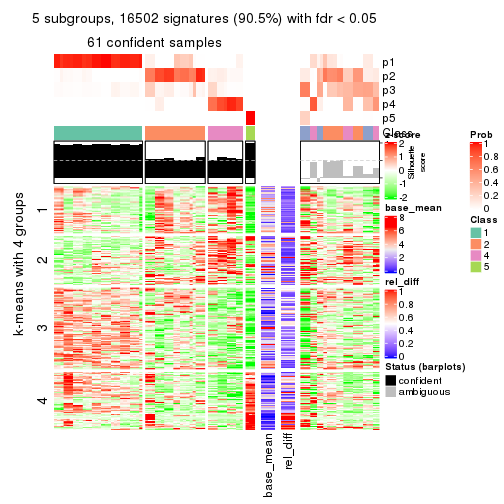
get_signatures(res, k = 6)
Signature heatmaps where rows are not scaled:
get_signatures(res, k = 2, scale_rows = FALSE)
get_signatures(res, k = 3, scale_rows = FALSE)
get_signatures(res, k = 4, scale_rows = FALSE)
get_signatures(res, k = 5, scale_rows = FALSE)
get_signatures(res, k = 6, scale_rows = FALSE)
Compare the overlap of signatures from different k:
compare_signatures(res)
get_signature() returns a data frame invisibly. TO get the list of signatures, the function
call should be assigned to a variable explicitly. In following code, if plot argument is set
to FALSE, no heatmap is plotted while only the differential analysis is performed.
# code only for demonstration
tb = get_signature(res, k = ..., plot = FALSE)
An example of the output of tb is:
#> which_row fdr mean_1 mean_2 scaled_mean_1 scaled_mean_2 km
#> 1 38 0.042760348 8.373488 9.131774 -0.5533452 0.5164555 1
#> 2 40 0.018707592 7.106213 8.469186 -0.6173731 0.5762149 1
#> 3 55 0.019134737 10.221463 11.207825 -0.6159697 0.5749050 1
#> 4 59 0.006059896 5.921854 7.869574 -0.6899429 0.6439467 1
#> 5 60 0.018055526 8.928898 10.211722 -0.6204761 0.5791110 1
#> 6 98 0.009384629 15.714769 14.887706 0.6635654 -0.6193277 2
...
The columns in tb are:
which_row: row indices corresponding to the input matrix.fdr: FDR for the differential test. mean_x: The mean value in group x.scaled_mean_x: The mean value in group x after rows are scaled.km: Row groups if k-means clustering is applied to rows.UMAP plot which shows how samples are separated.
dimension_reduction(res, k = 2, method = "UMAP")
dimension_reduction(res, k = 3, method = "UMAP")
dimension_reduction(res, k = 4, method = "UMAP")
dimension_reduction(res, k = 5, method = "UMAP")
dimension_reduction(res, k = 6, method = "UMAP")
Following heatmap shows how subgroups are split when increasing k:
collect_classes(res)
If matrix rows can be associated to genes, consider to use GO_Enrichment(res,
...) to perform function enrichment for the signature genes.
The object with results only for a single top-value method and a single partition method can be extracted as:
res = res_list["ATC", "hclust"]
# you can also extract it by
# res = res_list["ATC:hclust"]
A summary of res and all the functions that can be applied to it:
res
#> A 'ConsensusPartition' object with k = 2, 3, 4, 5, 6.
#> On a matrix with 18243 rows and 85 columns.
#> Top rows (1000, 2000, 3000, 4000, 5000) are extracted by 'ATC' method.
#> Subgroups are detected by 'hclust' method.
#> Performed in total 1250 partitions by row resampling.
#> Best k for subgroups seems to be 2.
#>
#> Following methods can be applied to this 'ConsensusPartition' object:
#> [1] "cola_report" "collect_classes" "collect_plots"
#> [4] "collect_stats" "colnames" "compare_signatures"
#> [7] "consensus_heatmap" "dimension_reduction" "functional_enrichment"
#> [10] "get_anno_col" "get_anno" "get_classes"
#> [13] "get_consensus" "get_matrix" "get_membership"
#> [16] "get_param" "get_signatures" "get_stats"
#> [19] "is_best_k" "is_stable_k" "membership_heatmap"
#> [22] "ncol" "nrow" "plot_ecdf"
#> [25] "rownames" "select_partition_number" "show"
#> [28] "suggest_best_k" "test_to_known_factors"
collect_plots() function collects all the plots made from res for all k (number of partitions)
into one single page to provide an easy and fast comparison between different k.
collect_plots(res)
The plots are:
k and the heatmap of
predicted classes for each k.k.k.k.All the plots in panels can be made by individual functions and they are plotted later in this section.
select_partition_number() produces several plots showing different
statistics for choosing “optimized” k. There are following statistics:
k;k, the area increased is defined as \(A_k - A_{k-1}\).The detailed explanations of these statistics can be found in the cola vignette.
Generally speaking, lower PAC score, higher mean silhouette score or higher
concordance corresponds to better partition. Rand index and Jaccard index
measure how similar the current partition is compared to partition with k-1.
If they are too similar, we won't accept k is better than k-1.
select_partition_number(res)
The numeric values for all these statistics can be obtained by get_stats().
get_stats(res)
#> k 1-PAC mean_silhouette concordance area_increased Rand Jaccard
#> 2 2 0.615 0.775 0.912 0.4926 0.497 0.497
#> 3 3 0.586 0.707 0.874 0.2064 0.839 0.696
#> 4 4 0.574 0.623 0.811 0.1190 0.967 0.918
#> 5 5 0.594 0.660 0.790 0.0741 0.880 0.694
#> 6 6 0.691 0.660 0.820 0.0496 0.941 0.801
suggest_best_k() suggests the best \(k\) based on these statistics. The rules are as follows:
NA.suggest_best_k(res)
#> [1] 2
Following shows the table of the partitions (You need to click the show/hide
code output link to see it). The membership matrix (columns with name p*)
is inferred by
clue::cl_consensus()
function with the SE method. Basically the value in the membership matrix
represents the probability to belong to a certain group. The finall class
label for an item is determined with the group with highest probability it
belongs to.
In get_classes() function, the entropy is calculated from the membership
matrix and the silhouette score is calculated from the consensus matrix.
cbind(get_classes(res, k = 2), get_membership(res, k = 2))
#> class entropy silhouette p1 p2
#> ERR532547 1 0.9635 0.2978 0.612 0.388
#> ERR532548 1 0.9635 0.2978 0.612 0.388
#> ERR532549 1 0.9635 0.2978 0.612 0.388
#> ERR532576 1 0.0376 0.9018 0.996 0.004
#> ERR532577 1 0.0376 0.9018 0.996 0.004
#> ERR532578 1 0.0376 0.9018 0.996 0.004
#> ERR532593 1 0.0000 0.9029 1.000 0.000
#> ERR532594 1 0.0000 0.9029 1.000 0.000
#> ERR532595 1 0.0000 0.9029 1.000 0.000
#> ERR532596 2 0.0000 0.8815 0.000 1.000
#> ERR532597 2 0.0000 0.8815 0.000 1.000
#> ERR532598 2 0.0000 0.8815 0.000 1.000
#> ERR532599 2 0.0672 0.8776 0.008 0.992
#> ERR532600 2 0.0672 0.8776 0.008 0.992
#> ERR532601 2 0.0672 0.8776 0.008 0.992
#> ERR532602 1 0.0000 0.9029 1.000 0.000
#> ERR532603 1 0.0000 0.9029 1.000 0.000
#> ERR532604 1 0.0000 0.9029 1.000 0.000
#> ERR532605 1 0.0000 0.9029 1.000 0.000
#> ERR532606 1 0.0000 0.9029 1.000 0.000
#> ERR532607 1 0.0000 0.9029 1.000 0.000
#> ERR532608 1 0.2948 0.8666 0.948 0.052
#> ERR532609 1 0.2948 0.8666 0.948 0.052
#> ERR532610 1 0.2948 0.8666 0.948 0.052
#> ERR532611 1 0.0000 0.9029 1.000 0.000
#> ERR532612 1 0.0000 0.9029 1.000 0.000
#> ERR532613 1 0.0000 0.9029 1.000 0.000
#> ERR532550 1 0.2948 0.8666 0.948 0.052
#> ERR532551 1 0.0376 0.9018 0.996 0.004
#> ERR532552 1 0.0376 0.9018 0.996 0.004
#> ERR532553 1 0.0376 0.9018 0.996 0.004
#> ERR532554 2 0.0000 0.8815 0.000 1.000
#> ERR532555 2 0.0000 0.8815 0.000 1.000
#> ERR532556 2 0.0000 0.8815 0.000 1.000
#> ERR532557 2 0.0000 0.8815 0.000 1.000
#> ERR532558 2 0.0000 0.8815 0.000 1.000
#> ERR532559 2 0.0000 0.8815 0.000 1.000
#> ERR532560 1 0.0000 0.9029 1.000 0.000
#> ERR532561 1 0.0000 0.9029 1.000 0.000
#> ERR532562 1 0.0000 0.9029 1.000 0.000
#> ERR532563 2 0.0000 0.8815 0.000 1.000
#> ERR532564 2 0.0000 0.8815 0.000 1.000
#> ERR532565 2 0.0000 0.8815 0.000 1.000
#> ERR532566 1 0.8386 0.6010 0.732 0.268
#> ERR532567 1 0.8386 0.6010 0.732 0.268
#> ERR532568 1 0.8386 0.6010 0.732 0.268
#> ERR532569 1 0.0000 0.9029 1.000 0.000
#> ERR532570 1 0.0000 0.9029 1.000 0.000
#> ERR532571 1 0.0000 0.9029 1.000 0.000
#> ERR532572 2 0.0000 0.8815 0.000 1.000
#> ERR532573 2 0.0000 0.8815 0.000 1.000
#> ERR532574 2 0.0000 0.8815 0.000 1.000
#> ERR532575 2 0.9710 0.3811 0.400 0.600
#> ERR532579 2 0.0000 0.8815 0.000 1.000
#> ERR532580 2 0.0000 0.8815 0.000 1.000
#> ERR532581 2 0.0000 0.8815 0.000 1.000
#> ERR532582 2 0.0000 0.8815 0.000 1.000
#> ERR532583 2 0.0000 0.8815 0.000 1.000
#> ERR532584 2 0.9710 0.3811 0.400 0.600
#> ERR532585 2 0.9710 0.3811 0.400 0.600
#> ERR532586 2 0.9710 0.3811 0.400 0.600
#> ERR532587 2 0.0000 0.8815 0.000 1.000
#> ERR532588 2 0.0000 0.8815 0.000 1.000
#> ERR532589 2 0.9710 0.3811 0.400 0.600
#> ERR532590 2 0.9710 0.3811 0.400 0.600
#> ERR532591 2 0.0000 0.8815 0.000 1.000
#> ERR532592 2 0.0000 0.8815 0.000 1.000
#> ERR532439 2 0.8207 0.6446 0.256 0.744
#> ERR532440 2 0.8207 0.6446 0.256 0.744
#> ERR532441 2 0.8207 0.6446 0.256 0.744
#> ERR532442 1 0.0000 0.9029 1.000 0.000
#> ERR532443 1 0.0000 0.9029 1.000 0.000
#> ERR532444 1 0.0000 0.9029 1.000 0.000
#> ERR532445 1 0.0000 0.9029 1.000 0.000
#> ERR532446 1 0.0000 0.9029 1.000 0.000
#> ERR532447 1 0.0000 0.9029 1.000 0.000
#> ERR532433 1 0.0376 0.9018 0.996 0.004
#> ERR532434 1 0.0376 0.9018 0.996 0.004
#> ERR532435 1 0.0376 0.9018 0.996 0.004
#> ERR532436 1 0.9998 -0.0656 0.508 0.492
#> ERR532437 1 0.9998 -0.0656 0.508 0.492
#> ERR532438 1 0.9998 -0.0656 0.508 0.492
#> ERR532614 2 0.7056 0.6964 0.192 0.808
#> ERR532615 2 0.7056 0.6964 0.192 0.808
#> ERR532616 2 0.7056 0.6964 0.192 0.808
cbind(get_classes(res, k = 3), get_membership(res, k = 3))
#> class entropy silhouette p1 p2 p3
#> ERR532547 3 0.9690 0.3483 0.220 0.356 0.424
#> ERR532548 3 0.9690 0.3483 0.220 0.356 0.424
#> ERR532549 3 0.9690 0.3483 0.220 0.356 0.424
#> ERR532576 1 0.4346 0.7653 0.816 0.000 0.184
#> ERR532577 1 0.4346 0.7653 0.816 0.000 0.184
#> ERR532578 1 0.4346 0.7653 0.816 0.000 0.184
#> ERR532593 1 0.0000 0.9245 1.000 0.000 0.000
#> ERR532594 1 0.0000 0.9245 1.000 0.000 0.000
#> ERR532595 1 0.0000 0.9245 1.000 0.000 0.000
#> ERR532596 2 0.0000 0.7945 0.000 1.000 0.000
#> ERR532597 2 0.0000 0.7945 0.000 1.000 0.000
#> ERR532598 2 0.0000 0.7945 0.000 1.000 0.000
#> ERR532599 2 0.0424 0.7910 0.000 0.992 0.008
#> ERR532600 2 0.0424 0.7910 0.000 0.992 0.008
#> ERR532601 2 0.0424 0.7910 0.000 0.992 0.008
#> ERR532602 1 0.0000 0.9245 1.000 0.000 0.000
#> ERR532603 1 0.0000 0.9245 1.000 0.000 0.000
#> ERR532604 1 0.0000 0.9245 1.000 0.000 0.000
#> ERR532605 1 0.0000 0.9245 1.000 0.000 0.000
#> ERR532606 1 0.0000 0.9245 1.000 0.000 0.000
#> ERR532607 1 0.0000 0.9245 1.000 0.000 0.000
#> ERR532608 3 0.5058 0.6658 0.244 0.000 0.756
#> ERR532609 3 0.5058 0.6658 0.244 0.000 0.756
#> ERR532610 3 0.5058 0.6658 0.244 0.000 0.756
#> ERR532611 1 0.0000 0.9245 1.000 0.000 0.000
#> ERR532612 1 0.0000 0.9245 1.000 0.000 0.000
#> ERR532613 1 0.0000 0.9245 1.000 0.000 0.000
#> ERR532550 3 0.5058 0.6658 0.244 0.000 0.756
#> ERR532551 1 0.4346 0.7653 0.816 0.000 0.184
#> ERR532552 1 0.4346 0.7653 0.816 0.000 0.184
#> ERR532553 1 0.4346 0.7653 0.816 0.000 0.184
#> ERR532554 2 0.0000 0.7945 0.000 1.000 0.000
#> ERR532555 2 0.0000 0.7945 0.000 1.000 0.000
#> ERR532556 2 0.0000 0.7945 0.000 1.000 0.000
#> ERR532557 2 0.0000 0.7945 0.000 1.000 0.000
#> ERR532558 2 0.0000 0.7945 0.000 1.000 0.000
#> ERR532559 2 0.0000 0.7945 0.000 1.000 0.000
#> ERR532560 1 0.0000 0.9245 1.000 0.000 0.000
#> ERR532561 1 0.0000 0.9245 1.000 0.000 0.000
#> ERR532562 1 0.0000 0.9245 1.000 0.000 0.000
#> ERR532563 2 0.0000 0.7945 0.000 1.000 0.000
#> ERR532564 2 0.0000 0.7945 0.000 1.000 0.000
#> ERR532565 2 0.0000 0.7945 0.000 1.000 0.000
#> ERR532566 3 0.0237 0.6505 0.004 0.000 0.996
#> ERR532567 3 0.0237 0.6505 0.004 0.000 0.996
#> ERR532568 3 0.0237 0.6505 0.004 0.000 0.996
#> ERR532569 1 0.0000 0.9245 1.000 0.000 0.000
#> ERR532570 1 0.0000 0.9245 1.000 0.000 0.000
#> ERR532571 1 0.0000 0.9245 1.000 0.000 0.000
#> ERR532572 2 0.0000 0.7945 0.000 1.000 0.000
#> ERR532573 2 0.0000 0.7945 0.000 1.000 0.000
#> ERR532574 2 0.0000 0.7945 0.000 1.000 0.000
#> ERR532575 2 0.8838 0.2707 0.220 0.580 0.200
#> ERR532579 2 0.0237 0.7933 0.000 0.996 0.004
#> ERR532580 2 0.0237 0.7933 0.000 0.996 0.004
#> ERR532581 2 0.0000 0.7945 0.000 1.000 0.000
#> ERR532582 2 0.0000 0.7945 0.000 1.000 0.000
#> ERR532583 2 0.0000 0.7945 0.000 1.000 0.000
#> ERR532584 2 0.8838 0.2707 0.220 0.580 0.200
#> ERR532585 2 0.8838 0.2707 0.220 0.580 0.200
#> ERR532586 2 0.8838 0.2707 0.220 0.580 0.200
#> ERR532587 2 0.0000 0.7945 0.000 1.000 0.000
#> ERR532588 2 0.0000 0.7945 0.000 1.000 0.000
#> ERR532589 2 0.8838 0.2707 0.220 0.580 0.200
#> ERR532590 2 0.8838 0.2707 0.220 0.580 0.200
#> ERR532591 2 0.0237 0.7933 0.000 0.996 0.004
#> ERR532592 2 0.0237 0.7933 0.000 0.996 0.004
#> ERR532439 2 0.7072 0.5305 0.116 0.724 0.160
#> ERR532440 2 0.7072 0.5305 0.116 0.724 0.160
#> ERR532441 2 0.7072 0.5305 0.116 0.724 0.160
#> ERR532442 1 0.0000 0.9245 1.000 0.000 0.000
#> ERR532443 1 0.0000 0.9245 1.000 0.000 0.000
#> ERR532444 1 0.0000 0.9245 1.000 0.000 0.000
#> ERR532445 1 0.0237 0.9210 0.996 0.000 0.004
#> ERR532446 1 0.0237 0.9210 0.996 0.000 0.004
#> ERR532447 1 0.0237 0.9210 0.996 0.000 0.004
#> ERR532433 1 0.4346 0.7653 0.816 0.000 0.184
#> ERR532434 1 0.4346 0.7653 0.816 0.000 0.184
#> ERR532435 1 0.4346 0.7653 0.816 0.000 0.184
#> ERR532436 2 0.9350 0.0355 0.328 0.488 0.184
#> ERR532437 2 0.9350 0.0355 0.328 0.488 0.184
#> ERR532438 2 0.9350 0.0355 0.328 0.488 0.184
#> ERR532614 2 0.6280 0.1937 0.000 0.540 0.460
#> ERR532615 2 0.6280 0.1937 0.000 0.540 0.460
#> ERR532616 2 0.6280 0.1937 0.000 0.540 0.460
cbind(get_classes(res, k = 4), get_membership(res, k = 4))
#> class entropy silhouette p1 p2 p3 p4
#> ERR532547 3 0.9331 0.326 0.108 0.208 0.392 0.292
#> ERR532548 3 0.9331 0.326 0.108 0.208 0.392 0.292
#> ERR532549 3 0.9331 0.326 0.108 0.208 0.392 0.292
#> ERR532576 1 0.5861 0.642 0.704 0.144 0.152 0.000
#> ERR532577 1 0.5861 0.642 0.704 0.144 0.152 0.000
#> ERR532578 1 0.5861 0.642 0.704 0.144 0.152 0.000
#> ERR532593 1 0.0000 0.878 1.000 0.000 0.000 0.000
#> ERR532594 1 0.0000 0.878 1.000 0.000 0.000 0.000
#> ERR532595 1 0.0000 0.878 1.000 0.000 0.000 0.000
#> ERR532596 4 0.3400 0.557 0.000 0.180 0.000 0.820
#> ERR532597 4 0.3400 0.557 0.000 0.180 0.000 0.820
#> ERR532598 4 0.3400 0.557 0.000 0.180 0.000 0.820
#> ERR532599 4 0.3764 0.547 0.000 0.216 0.000 0.784
#> ERR532600 4 0.3764 0.547 0.000 0.216 0.000 0.784
#> ERR532601 4 0.3764 0.547 0.000 0.216 0.000 0.784
#> ERR532602 1 0.0000 0.878 1.000 0.000 0.000 0.000
#> ERR532603 1 0.0000 0.878 1.000 0.000 0.000 0.000
#> ERR532604 1 0.0000 0.878 1.000 0.000 0.000 0.000
#> ERR532605 1 0.0000 0.878 1.000 0.000 0.000 0.000
#> ERR532606 1 0.0000 0.878 1.000 0.000 0.000 0.000
#> ERR532607 1 0.0000 0.878 1.000 0.000 0.000 0.000
#> ERR532608 3 0.2760 0.595 0.128 0.000 0.872 0.000
#> ERR532609 3 0.2760 0.595 0.128 0.000 0.872 0.000
#> ERR532610 3 0.2760 0.595 0.128 0.000 0.872 0.000
#> ERR532611 1 0.0000 0.878 1.000 0.000 0.000 0.000
#> ERR532612 1 0.0000 0.878 1.000 0.000 0.000 0.000
#> ERR532613 1 0.0000 0.878 1.000 0.000 0.000 0.000
#> ERR532550 3 0.2760 0.595 0.128 0.000 0.872 0.000
#> ERR532551 1 0.5861 0.642 0.704 0.144 0.152 0.000
#> ERR532552 1 0.5861 0.642 0.704 0.144 0.152 0.000
#> ERR532553 1 0.5861 0.642 0.704 0.144 0.152 0.000
#> ERR532554 4 0.1022 0.630 0.000 0.032 0.000 0.968
#> ERR532555 4 0.1022 0.630 0.000 0.032 0.000 0.968
#> ERR532556 4 0.1022 0.630 0.000 0.032 0.000 0.968
#> ERR532557 4 0.0000 0.641 0.000 0.000 0.000 1.000
#> ERR532558 4 0.0000 0.641 0.000 0.000 0.000 1.000
#> ERR532559 4 0.0000 0.641 0.000 0.000 0.000 1.000
#> ERR532560 1 0.0000 0.878 1.000 0.000 0.000 0.000
#> ERR532561 1 0.0000 0.878 1.000 0.000 0.000 0.000
#> ERR532562 1 0.0000 0.878 1.000 0.000 0.000 0.000
#> ERR532563 4 0.0188 0.640 0.000 0.004 0.000 0.996
#> ERR532564 4 0.0188 0.640 0.000 0.004 0.000 0.996
#> ERR532565 4 0.0188 0.640 0.000 0.004 0.000 0.996
#> ERR532566 3 0.4222 0.321 0.000 0.272 0.728 0.000
#> ERR532567 3 0.4222 0.321 0.000 0.272 0.728 0.000
#> ERR532568 3 0.4222 0.321 0.000 0.272 0.728 0.000
#> ERR532569 1 0.0000 0.878 1.000 0.000 0.000 0.000
#> ERR532570 1 0.0000 0.878 1.000 0.000 0.000 0.000
#> ERR532571 1 0.0000 0.878 1.000 0.000 0.000 0.000
#> ERR532572 4 0.3400 0.557 0.000 0.180 0.000 0.820
#> ERR532573 4 0.3400 0.557 0.000 0.180 0.000 0.820
#> ERR532574 4 0.3400 0.557 0.000 0.180 0.000 0.820
#> ERR532575 4 0.8714 0.224 0.108 0.208 0.168 0.516
#> ERR532579 4 0.0469 0.640 0.000 0.012 0.000 0.988
#> ERR532580 4 0.0469 0.640 0.000 0.012 0.000 0.988
#> ERR532581 4 0.3569 0.536 0.000 0.196 0.000 0.804
#> ERR532582 4 0.3569 0.536 0.000 0.196 0.000 0.804
#> ERR532583 4 0.3569 0.536 0.000 0.196 0.000 0.804
#> ERR532584 4 0.8714 0.224 0.108 0.208 0.168 0.516
#> ERR532585 4 0.8714 0.224 0.108 0.208 0.168 0.516
#> ERR532586 4 0.8714 0.224 0.108 0.208 0.168 0.516
#> ERR532587 4 0.3400 0.557 0.000 0.180 0.000 0.820
#> ERR532588 4 0.3400 0.557 0.000 0.180 0.000 0.820
#> ERR532589 4 0.8714 0.224 0.108 0.208 0.168 0.516
#> ERR532590 4 0.8714 0.224 0.108 0.208 0.168 0.516
#> ERR532591 4 0.0469 0.640 0.000 0.012 0.000 0.988
#> ERR532592 4 0.0469 0.640 0.000 0.012 0.000 0.988
#> ERR532439 4 0.6392 0.448 0.004 0.208 0.128 0.660
#> ERR532440 4 0.6392 0.448 0.004 0.208 0.128 0.660
#> ERR532441 4 0.6392 0.448 0.004 0.208 0.128 0.660
#> ERR532442 1 0.0000 0.878 1.000 0.000 0.000 0.000
#> ERR532443 1 0.0000 0.878 1.000 0.000 0.000 0.000
#> ERR532444 1 0.0000 0.878 1.000 0.000 0.000 0.000
#> ERR532445 1 0.2593 0.777 0.892 0.004 0.104 0.000
#> ERR532446 1 0.2593 0.777 0.892 0.004 0.104 0.000
#> ERR532447 1 0.2593 0.777 0.892 0.004 0.104 0.000
#> ERR532433 1 0.5861 0.642 0.704 0.144 0.152 0.000
#> ERR532434 1 0.5861 0.642 0.704 0.144 0.152 0.000
#> ERR532435 1 0.5861 0.642 0.704 0.144 0.152 0.000
#> ERR532436 4 0.8992 0.133 0.216 0.144 0.152 0.488
#> ERR532437 4 0.8992 0.133 0.216 0.144 0.152 0.488
#> ERR532438 4 0.8992 0.133 0.216 0.144 0.152 0.488
#> ERR532614 2 0.3569 1.000 0.000 0.804 0.000 0.196
#> ERR532615 2 0.3569 1.000 0.000 0.804 0.000 0.196
#> ERR532616 2 0.3569 1.000 0.000 0.804 0.000 0.196
cbind(get_classes(res, k = 5), get_membership(res, k = 5))
#> class entropy silhouette p1 p2 p3 p4 p5
#> ERR532547 2 0.4031 0.554 0.108 0.824 0.028 0.032 0.008
#> ERR532548 2 0.4031 0.554 0.108 0.824 0.028 0.032 0.008
#> ERR532549 2 0.4031 0.554 0.108 0.824 0.028 0.032 0.008
#> ERR532576 1 0.3774 0.615 0.704 0.296 0.000 0.000 0.000
#> ERR532577 1 0.3774 0.615 0.704 0.296 0.000 0.000 0.000
#> ERR532578 1 0.3774 0.615 0.704 0.296 0.000 0.000 0.000
#> ERR532593 1 0.0000 0.875 1.000 0.000 0.000 0.000 0.000
#> ERR532594 1 0.0000 0.875 1.000 0.000 0.000 0.000 0.000
#> ERR532595 1 0.0000 0.875 1.000 0.000 0.000 0.000 0.000
#> ERR532596 4 0.0162 0.700 0.000 0.004 0.000 0.996 0.000
#> ERR532597 4 0.0162 0.700 0.000 0.004 0.000 0.996 0.000
#> ERR532598 4 0.0162 0.700 0.000 0.004 0.000 0.996 0.000
#> ERR532599 4 0.1341 0.675 0.000 0.056 0.000 0.944 0.000
#> ERR532600 4 0.1341 0.675 0.000 0.056 0.000 0.944 0.000
#> ERR532601 4 0.1341 0.675 0.000 0.056 0.000 0.944 0.000
#> ERR532602 1 0.0000 0.875 1.000 0.000 0.000 0.000 0.000
#> ERR532603 1 0.0000 0.875 1.000 0.000 0.000 0.000 0.000
#> ERR532604 1 0.0000 0.875 1.000 0.000 0.000 0.000 0.000
#> ERR532605 1 0.0000 0.875 1.000 0.000 0.000 0.000 0.000
#> ERR532606 1 0.0000 0.875 1.000 0.000 0.000 0.000 0.000
#> ERR532607 1 0.0000 0.875 1.000 0.000 0.000 0.000 0.000
#> ERR532608 2 0.8076 -0.396 0.128 0.368 0.172 0.000 0.332
#> ERR532609 2 0.8076 -0.396 0.128 0.368 0.172 0.000 0.332
#> ERR532610 2 0.8076 -0.396 0.128 0.368 0.172 0.000 0.332
#> ERR532611 1 0.0000 0.875 1.000 0.000 0.000 0.000 0.000
#> ERR532612 1 0.0000 0.875 1.000 0.000 0.000 0.000 0.000
#> ERR532613 1 0.0000 0.875 1.000 0.000 0.000 0.000 0.000
#> ERR532550 2 0.8076 -0.396 0.128 0.368 0.172 0.000 0.332
#> ERR532551 1 0.3774 0.615 0.704 0.296 0.000 0.000 0.000
#> ERR532552 1 0.3774 0.615 0.704 0.296 0.000 0.000 0.000
#> ERR532553 1 0.3774 0.615 0.704 0.296 0.000 0.000 0.000
#> ERR532554 4 0.6140 0.470 0.000 0.000 0.136 0.492 0.372
#> ERR532555 4 0.6140 0.470 0.000 0.000 0.136 0.492 0.372
#> ERR532556 4 0.6140 0.470 0.000 0.000 0.136 0.492 0.372
#> ERR532557 4 0.3774 0.441 0.000 0.296 0.000 0.704 0.000
#> ERR532558 4 0.3774 0.441 0.000 0.296 0.000 0.704 0.000
#> ERR532559 4 0.3774 0.441 0.000 0.296 0.000 0.704 0.000
#> ERR532560 1 0.0000 0.875 1.000 0.000 0.000 0.000 0.000
#> ERR532561 1 0.0000 0.875 1.000 0.000 0.000 0.000 0.000
#> ERR532562 1 0.0000 0.875 1.000 0.000 0.000 0.000 0.000
#> ERR532563 4 0.4367 0.594 0.000 0.008 0.000 0.620 0.372
#> ERR532564 4 0.4367 0.594 0.000 0.008 0.000 0.620 0.372
#> ERR532565 4 0.4367 0.594 0.000 0.008 0.000 0.620 0.372
#> ERR532566 5 0.5696 1.000 0.000 0.200 0.172 0.000 0.628
#> ERR532567 5 0.5696 1.000 0.000 0.200 0.172 0.000 0.628
#> ERR532568 5 0.5696 1.000 0.000 0.200 0.172 0.000 0.628
#> ERR532569 1 0.0000 0.875 1.000 0.000 0.000 0.000 0.000
#> ERR532570 1 0.0000 0.875 1.000 0.000 0.000 0.000 0.000
#> ERR532571 1 0.0000 0.875 1.000 0.000 0.000 0.000 0.000
#> ERR532572 4 0.0162 0.700 0.000 0.004 0.000 0.996 0.000
#> ERR532573 4 0.0162 0.700 0.000 0.004 0.000 0.996 0.000
#> ERR532574 4 0.0162 0.700 0.000 0.004 0.000 0.996 0.000
#> ERR532575 2 0.5223 0.696 0.108 0.672 0.000 0.220 0.000
#> ERR532579 4 0.5018 0.583 0.000 0.012 0.020 0.596 0.372
#> ERR532580 4 0.5018 0.583 0.000 0.012 0.020 0.596 0.372
#> ERR532581 4 0.2471 0.599 0.000 0.000 0.136 0.864 0.000
#> ERR532582 4 0.2471 0.599 0.000 0.000 0.136 0.864 0.000
#> ERR532583 4 0.2471 0.599 0.000 0.000 0.136 0.864 0.000
#> ERR532584 2 0.5223 0.696 0.108 0.672 0.000 0.220 0.000
#> ERR532585 2 0.5223 0.696 0.108 0.672 0.000 0.220 0.000
#> ERR532586 2 0.5223 0.696 0.108 0.672 0.000 0.220 0.000
#> ERR532587 4 0.0162 0.700 0.000 0.004 0.000 0.996 0.000
#> ERR532588 4 0.0162 0.700 0.000 0.004 0.000 0.996 0.000
#> ERR532589 2 0.5223 0.696 0.108 0.672 0.000 0.220 0.000
#> ERR532590 2 0.5223 0.696 0.108 0.672 0.000 0.220 0.000
#> ERR532591 4 0.5018 0.583 0.000 0.012 0.020 0.596 0.372
#> ERR532592 4 0.5018 0.583 0.000 0.012 0.020 0.596 0.372
#> ERR532439 2 0.4225 0.489 0.004 0.632 0.000 0.364 0.000
#> ERR532440 2 0.4225 0.489 0.004 0.632 0.000 0.364 0.000
#> ERR532441 2 0.4225 0.489 0.004 0.632 0.000 0.364 0.000
#> ERR532442 1 0.0000 0.875 1.000 0.000 0.000 0.000 0.000
#> ERR532443 1 0.0000 0.875 1.000 0.000 0.000 0.000 0.000
#> ERR532444 1 0.0000 0.875 1.000 0.000 0.000 0.000 0.000
#> ERR532445 1 0.2969 0.740 0.852 0.128 0.020 0.000 0.000
#> ERR532446 1 0.2969 0.740 0.852 0.128 0.020 0.000 0.000
#> ERR532447 1 0.2969 0.740 0.852 0.128 0.020 0.000 0.000
#> ERR532433 1 0.3774 0.615 0.704 0.296 0.000 0.000 0.000
#> ERR532434 1 0.3774 0.615 0.704 0.296 0.000 0.000 0.000
#> ERR532435 1 0.3774 0.615 0.704 0.296 0.000 0.000 0.000
#> ERR532436 2 0.6008 0.650 0.216 0.584 0.000 0.200 0.000
#> ERR532437 2 0.6008 0.650 0.216 0.584 0.000 0.200 0.000
#> ERR532438 2 0.6008 0.650 0.216 0.584 0.000 0.200 0.000
#> ERR532614 3 0.3421 1.000 0.000 0.008 0.788 0.204 0.000
#> ERR532615 3 0.3421 1.000 0.000 0.008 0.788 0.204 0.000
#> ERR532616 3 0.3421 1.000 0.000 0.008 0.788 0.204 0.000
cbind(get_classes(res, k = 6), get_membership(res, k = 6))
#> class entropy silhouette p1 p2 p3 p4 p5 p6
#> ERR532547 2 0.2877 0.557 0.000 0.820 0.000 0.012 0.168 0.000
#> ERR532548 2 0.2877 0.557 0.000 0.820 0.000 0.012 0.168 0.000
#> ERR532549 2 0.2877 0.557 0.000 0.820 0.000 0.012 0.168 0.000
#> ERR532576 1 0.3390 0.642 0.704 0.296 0.000 0.000 0.000 0.000
#> ERR532577 1 0.3390 0.642 0.704 0.296 0.000 0.000 0.000 0.000
#> ERR532578 1 0.3390 0.642 0.704 0.296 0.000 0.000 0.000 0.000
#> ERR532593 1 0.0000 0.874 1.000 0.000 0.000 0.000 0.000 0.000
#> ERR532594 1 0.0000 0.874 1.000 0.000 0.000 0.000 0.000 0.000
#> ERR532595 1 0.0000 0.874 1.000 0.000 0.000 0.000 0.000 0.000
#> ERR532596 4 0.0146 0.643 0.000 0.004 0.000 0.996 0.000 0.000
#> ERR532597 4 0.0146 0.643 0.000 0.004 0.000 0.996 0.000 0.000
#> ERR532598 4 0.0146 0.643 0.000 0.004 0.000 0.996 0.000 0.000
#> ERR532599 4 0.1267 0.615 0.000 0.060 0.000 0.940 0.000 0.000
#> ERR532600 4 0.1267 0.615 0.000 0.060 0.000 0.940 0.000 0.000
#> ERR532601 4 0.1267 0.615 0.000 0.060 0.000 0.940 0.000 0.000
#> ERR532602 1 0.0000 0.874 1.000 0.000 0.000 0.000 0.000 0.000
#> ERR532603 1 0.0000 0.874 1.000 0.000 0.000 0.000 0.000 0.000
#> ERR532604 1 0.0000 0.874 1.000 0.000 0.000 0.000 0.000 0.000
#> ERR532605 1 0.0000 0.874 1.000 0.000 0.000 0.000 0.000 0.000
#> ERR532606 1 0.0000 0.874 1.000 0.000 0.000 0.000 0.000 0.000
#> ERR532607 1 0.0000 0.874 1.000 0.000 0.000 0.000 0.000 0.000
#> ERR532608 5 0.4124 0.721 0.024 0.332 0.000 0.000 0.644 0.000
#> ERR532609 5 0.4124 0.721 0.024 0.332 0.000 0.000 0.644 0.000
#> ERR532610 5 0.4124 0.721 0.024 0.332 0.000 0.000 0.644 0.000
#> ERR532611 1 0.0000 0.874 1.000 0.000 0.000 0.000 0.000 0.000
#> ERR532612 1 0.0000 0.874 1.000 0.000 0.000 0.000 0.000 0.000
#> ERR532613 1 0.0000 0.874 1.000 0.000 0.000 0.000 0.000 0.000
#> ERR532550 5 0.4124 0.721 0.024 0.332 0.000 0.000 0.644 0.000
#> ERR532551 1 0.3390 0.642 0.704 0.296 0.000 0.000 0.000 0.000
#> ERR532552 1 0.3390 0.642 0.704 0.296 0.000 0.000 0.000 0.000
#> ERR532553 1 0.3390 0.642 0.704 0.296 0.000 0.000 0.000 0.000
#> ERR532554 6 0.4328 0.549 0.000 0.000 0.020 0.460 0.000 0.520
#> ERR532555 6 0.4328 0.549 0.000 0.000 0.020 0.460 0.000 0.520
#> ERR532556 6 0.4328 0.549 0.000 0.000 0.020 0.460 0.000 0.520
#> ERR532557 4 0.4721 0.150 0.000 0.420 0.000 0.532 0.000 0.048
#> ERR532558 4 0.4721 0.150 0.000 0.420 0.000 0.532 0.000 0.048
#> ERR532559 4 0.4721 0.150 0.000 0.420 0.000 0.532 0.000 0.048
#> ERR532560 1 0.0000 0.874 1.000 0.000 0.000 0.000 0.000 0.000
#> ERR532561 1 0.0000 0.874 1.000 0.000 0.000 0.000 0.000 0.000
#> ERR532562 1 0.0000 0.874 1.000 0.000 0.000 0.000 0.000 0.000
#> ERR532563 4 0.3797 -0.452 0.000 0.000 0.000 0.580 0.000 0.420
#> ERR532564 4 0.3797 -0.452 0.000 0.000 0.000 0.580 0.000 0.420
#> ERR532565 4 0.3797 -0.452 0.000 0.000 0.000 0.580 0.000 0.420
#> ERR532566 5 0.2664 0.576 0.000 0.000 0.136 0.000 0.848 0.016
#> ERR532567 5 0.2664 0.576 0.000 0.000 0.136 0.000 0.848 0.016
#> ERR532568 5 0.2664 0.576 0.000 0.000 0.136 0.000 0.848 0.016
#> ERR532569 1 0.0000 0.874 1.000 0.000 0.000 0.000 0.000 0.000
#> ERR532570 1 0.0000 0.874 1.000 0.000 0.000 0.000 0.000 0.000
#> ERR532571 1 0.0000 0.874 1.000 0.000 0.000 0.000 0.000 0.000
#> ERR532572 4 0.0146 0.643 0.000 0.004 0.000 0.996 0.000 0.000
#> ERR532573 4 0.0146 0.643 0.000 0.004 0.000 0.996 0.000 0.000
#> ERR532574 4 0.0146 0.643 0.000 0.004 0.000 0.996 0.000 0.000
#> ERR532575 2 0.1387 0.791 0.000 0.932 0.000 0.068 0.000 0.000
#> ERR532579 6 0.3672 0.690 0.000 0.000 0.000 0.368 0.000 0.632
#> ERR532580 6 0.3672 0.690 0.000 0.000 0.000 0.368 0.000 0.632
#> ERR532581 4 0.2869 0.467 0.000 0.000 0.020 0.832 0.000 0.148
#> ERR532582 4 0.2869 0.467 0.000 0.000 0.020 0.832 0.000 0.148
#> ERR532583 4 0.2869 0.467 0.000 0.000 0.020 0.832 0.000 0.148
#> ERR532584 2 0.1387 0.791 0.000 0.932 0.000 0.068 0.000 0.000
#> ERR532585 2 0.1387 0.791 0.000 0.932 0.000 0.068 0.000 0.000
#> ERR532586 2 0.1387 0.791 0.000 0.932 0.000 0.068 0.000 0.000
#> ERR532587 4 0.0146 0.643 0.000 0.004 0.000 0.996 0.000 0.000
#> ERR532588 4 0.0146 0.643 0.000 0.004 0.000 0.996 0.000 0.000
#> ERR532589 2 0.1387 0.791 0.000 0.932 0.000 0.068 0.000 0.000
#> ERR532590 2 0.1387 0.791 0.000 0.932 0.000 0.068 0.000 0.000
#> ERR532591 6 0.3563 0.705 0.000 0.000 0.000 0.336 0.000 0.664
#> ERR532592 6 0.3563 0.705 0.000 0.000 0.000 0.336 0.000 0.664
#> ERR532439 2 0.2883 0.702 0.000 0.788 0.000 0.212 0.000 0.000
#> ERR532440 2 0.2883 0.702 0.000 0.788 0.000 0.212 0.000 0.000
#> ERR532441 2 0.2883 0.702 0.000 0.788 0.000 0.212 0.000 0.000
#> ERR532442 1 0.0000 0.874 1.000 0.000 0.000 0.000 0.000 0.000
#> ERR532443 1 0.0000 0.874 1.000 0.000 0.000 0.000 0.000 0.000
#> ERR532444 1 0.0000 0.874 1.000 0.000 0.000 0.000 0.000 0.000
#> ERR532445 1 0.3171 0.677 0.784 0.000 0.012 0.000 0.000 0.204
#> ERR532446 1 0.3171 0.677 0.784 0.000 0.012 0.000 0.000 0.204
#> ERR532447 1 0.3171 0.677 0.784 0.000 0.012 0.000 0.000 0.204
#> ERR532433 1 0.3390 0.642 0.704 0.296 0.000 0.000 0.000 0.000
#> ERR532434 1 0.3390 0.642 0.704 0.296 0.000 0.000 0.000 0.000
#> ERR532435 1 0.3390 0.642 0.704 0.296 0.000 0.000 0.000 0.000
#> ERR532436 2 0.4203 0.630 0.216 0.716 0.000 0.068 0.000 0.000
#> ERR532437 2 0.4203 0.630 0.216 0.716 0.000 0.068 0.000 0.000
#> ERR532438 2 0.4203 0.630 0.216 0.716 0.000 0.068 0.000 0.000
#> ERR532614 3 0.2771 1.000 0.000 0.000 0.852 0.032 0.000 0.116
#> ERR532615 3 0.2771 1.000 0.000 0.000 0.852 0.032 0.000 0.116
#> ERR532616 3 0.2771 1.000 0.000 0.000 0.852 0.032 0.000 0.116
Heatmaps for the consensus matrix. It visualizes the probability of two samples to be in a same group.
consensus_heatmap(res, k = 2)
consensus_heatmap(res, k = 3)
consensus_heatmap(res, k = 4)
consensus_heatmap(res, k = 5)
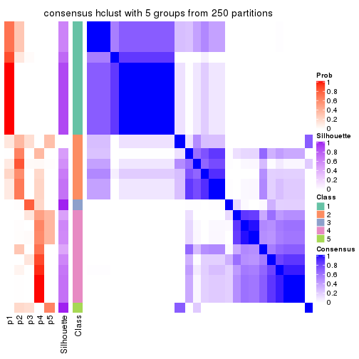
consensus_heatmap(res, k = 6)
Heatmaps for the membership of samples in all partitions to see how consistent they are:
membership_heatmap(res, k = 2)
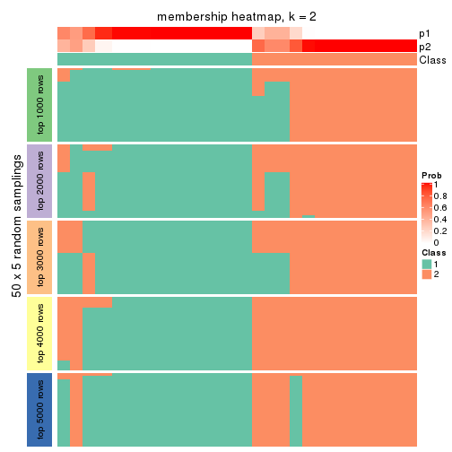
membership_heatmap(res, k = 3)
membership_heatmap(res, k = 4)
membership_heatmap(res, k = 5)
membership_heatmap(res, k = 6)
As soon as we have had the classes for columns, we can look for signatures which are significantly different between classes which can be candidate marks for certain classes. Following are the heatmaps for signatures.
Signature heatmaps where rows are scaled:
get_signatures(res, k = 2)
get_signatures(res, k = 3)
get_signatures(res, k = 4)
get_signatures(res, k = 5)
get_signatures(res, k = 6)
Signature heatmaps where rows are not scaled:
get_signatures(res, k = 2, scale_rows = FALSE)
get_signatures(res, k = 3, scale_rows = FALSE)
get_signatures(res, k = 4, scale_rows = FALSE)

get_signatures(res, k = 5, scale_rows = FALSE)
get_signatures(res, k = 6, scale_rows = FALSE)
Compare the overlap of signatures from different k:
compare_signatures(res)
get_signature() returns a data frame invisibly. TO get the list of signatures, the function
call should be assigned to a variable explicitly. In following code, if plot argument is set
to FALSE, no heatmap is plotted while only the differential analysis is performed.
# code only for demonstration
tb = get_signature(res, k = ..., plot = FALSE)
An example of the output of tb is:
#> which_row fdr mean_1 mean_2 scaled_mean_1 scaled_mean_2 km
#> 1 38 0.042760348 8.373488 9.131774 -0.5533452 0.5164555 1
#> 2 40 0.018707592 7.106213 8.469186 -0.6173731 0.5762149 1
#> 3 55 0.019134737 10.221463 11.207825 -0.6159697 0.5749050 1
#> 4 59 0.006059896 5.921854 7.869574 -0.6899429 0.6439467 1
#> 5 60 0.018055526 8.928898 10.211722 -0.6204761 0.5791110 1
#> 6 98 0.009384629 15.714769 14.887706 0.6635654 -0.6193277 2
...
The columns in tb are:
which_row: row indices corresponding to the input matrix.fdr: FDR for the differential test. mean_x: The mean value in group x.scaled_mean_x: The mean value in group x after rows are scaled.km: Row groups if k-means clustering is applied to rows.UMAP plot which shows how samples are separated.
dimension_reduction(res, k = 2, method = "UMAP")
dimension_reduction(res, k = 3, method = "UMAP")

dimension_reduction(res, k = 4, method = "UMAP")
dimension_reduction(res, k = 5, method = "UMAP")
dimension_reduction(res, k = 6, method = "UMAP")
Following heatmap shows how subgroups are split when increasing k:
collect_classes(res)
If matrix rows can be associated to genes, consider to use GO_Enrichment(res,
...) to perform function enrichment for the signature genes.
The object with results only for a single top-value method and a single partition method can be extracted as:
res = res_list["ATC", "kmeans"]
# you can also extract it by
# res = res_list["ATC:kmeans"]
A summary of res and all the functions that can be applied to it:
res
#> A 'ConsensusPartition' object with k = 2, 3, 4, 5, 6.
#> On a matrix with 18243 rows and 85 columns.
#> Top rows (1000, 2000, 3000, 4000, 5000) are extracted by 'ATC' method.
#> Subgroups are detected by 'kmeans' method.
#> Performed in total 1250 partitions by row resampling.
#> Best k for subgroups seems to be 2.
#>
#> Following methods can be applied to this 'ConsensusPartition' object:
#> [1] "cola_report" "collect_classes" "collect_plots"
#> [4] "collect_stats" "colnames" "compare_signatures"
#> [7] "consensus_heatmap" "dimension_reduction" "functional_enrichment"
#> [10] "get_anno_col" "get_anno" "get_classes"
#> [13] "get_consensus" "get_matrix" "get_membership"
#> [16] "get_param" "get_signatures" "get_stats"
#> [19] "is_best_k" "is_stable_k" "membership_heatmap"
#> [22] "ncol" "nrow" "plot_ecdf"
#> [25] "rownames" "select_partition_number" "show"
#> [28] "suggest_best_k" "test_to_known_factors"
collect_plots() function collects all the plots made from res for all k (number of partitions)
into one single page to provide an easy and fast comparison between different k.
collect_plots(res)
The plots are:
k and the heatmap of
predicted classes for each k.k.k.k.All the plots in panels can be made by individual functions and they are plotted later in this section.
select_partition_number() produces several plots showing different
statistics for choosing “optimized” k. There are following statistics:
k;k, the area increased is defined as \(A_k - A_{k-1}\).The detailed explanations of these statistics can be found in the cola vignette.
Generally speaking, lower PAC score, higher mean silhouette score or higher
concordance corresponds to better partition. Rand index and Jaccard index
measure how similar the current partition is compared to partition with k-1.
If they are too similar, we won't accept k is better than k-1.
select_partition_number(res)
The numeric values for all these statistics can be obtained by get_stats().
get_stats(res)
#> k 1-PAC mean_silhouette concordance area_increased Rand Jaccard
#> 2 2 0.935 0.977 0.964 0.4645 0.519 0.519
#> 3 3 0.575 0.723 0.844 0.3366 0.845 0.701
#> 4 4 0.557 0.658 0.753 0.1226 0.912 0.776
#> 5 5 0.572 0.475 0.738 0.0722 0.866 0.630
#> 6 6 0.613 0.506 0.661 0.0525 0.921 0.718
suggest_best_k() suggests the best \(k\) based on these statistics. The rules are as follows:
NA.suggest_best_k(res)
#> [1] 2
Following shows the table of the partitions (You need to click the show/hide
code output link to see it). The membership matrix (columns with name p*)
is inferred by
clue::cl_consensus()
function with the SE method. Basically the value in the membership matrix
represents the probability to belong to a certain group. The finall class
label for an item is determined with the group with highest probability it
belongs to.
In get_classes() function, the entropy is calculated from the membership
matrix and the silhouette score is calculated from the consensus matrix.
cbind(get_classes(res, k = 2), get_membership(res, k = 2))
#> class entropy silhouette p1 p2
#> ERR532547 1 0.416 0.928 0.916 0.084
#> ERR532548 1 0.416 0.928 0.916 0.084
#> ERR532549 1 0.416 0.928 0.916 0.084
#> ERR532576 1 0.000 0.981 1.000 0.000
#> ERR532577 1 0.000 0.981 1.000 0.000
#> ERR532578 1 0.000 0.981 1.000 0.000
#> ERR532593 1 0.000 0.981 1.000 0.000
#> ERR532594 1 0.000 0.981 1.000 0.000
#> ERR532595 1 0.000 0.981 1.000 0.000
#> ERR532596 2 0.343 0.996 0.064 0.936
#> ERR532597 2 0.343 0.996 0.064 0.936
#> ERR532598 2 0.343 0.996 0.064 0.936
#> ERR532599 2 0.343 0.996 0.064 0.936
#> ERR532600 2 0.343 0.996 0.064 0.936
#> ERR532601 2 0.343 0.996 0.064 0.936
#> ERR532602 1 0.000 0.981 1.000 0.000
#> ERR532603 1 0.000 0.981 1.000 0.000
#> ERR532604 1 0.000 0.981 1.000 0.000
#> ERR532605 1 0.000 0.981 1.000 0.000
#> ERR532606 1 0.000 0.981 1.000 0.000
#> ERR532607 1 0.000 0.981 1.000 0.000
#> ERR532608 1 0.224 0.959 0.964 0.036
#> ERR532609 1 0.224 0.959 0.964 0.036
#> ERR532610 1 0.224 0.959 0.964 0.036
#> ERR532611 1 0.000 0.981 1.000 0.000
#> ERR532612 1 0.000 0.981 1.000 0.000
#> ERR532613 1 0.000 0.981 1.000 0.000
#> ERR532550 1 0.224 0.959 0.964 0.036
#> ERR532551 1 0.000 0.981 1.000 0.000
#> ERR532552 1 0.000 0.981 1.000 0.000
#> ERR532553 1 0.000 0.981 1.000 0.000
#> ERR532554 2 0.343 0.996 0.064 0.936
#> ERR532555 2 0.343 0.996 0.064 0.936
#> ERR532556 2 0.343 0.996 0.064 0.936
#> ERR532557 2 0.343 0.996 0.064 0.936
#> ERR532558 2 0.343 0.996 0.064 0.936
#> ERR532559 2 0.343 0.996 0.064 0.936
#> ERR532560 1 0.000 0.981 1.000 0.000
#> ERR532561 1 0.000 0.981 1.000 0.000
#> ERR532562 1 0.000 0.981 1.000 0.000
#> ERR532563 2 0.343 0.996 0.064 0.936
#> ERR532564 2 0.343 0.996 0.064 0.936
#> ERR532565 2 0.343 0.996 0.064 0.936
#> ERR532566 1 0.494 0.921 0.892 0.108
#> ERR532567 1 0.494 0.921 0.892 0.108
#> ERR532568 1 0.494 0.921 0.892 0.108
#> ERR532569 1 0.000 0.981 1.000 0.000
#> ERR532570 1 0.000 0.981 1.000 0.000
#> ERR532571 1 0.000 0.981 1.000 0.000
#> ERR532572 2 0.343 0.996 0.064 0.936
#> ERR532573 2 0.343 0.996 0.064 0.936
#> ERR532574 2 0.343 0.996 0.064 0.936
#> ERR532575 1 0.000 0.981 1.000 0.000
#> ERR532579 2 0.343 0.996 0.064 0.936
#> ERR532580 2 0.343 0.996 0.064 0.936
#> ERR532581 2 0.343 0.996 0.064 0.936
#> ERR532582 2 0.343 0.996 0.064 0.936
#> ERR532583 2 0.343 0.996 0.064 0.936
#> ERR532584 1 0.469 0.893 0.900 0.100
#> ERR532585 1 0.469 0.893 0.900 0.100
#> ERR532586 1 0.469 0.893 0.900 0.100
#> ERR532587 2 0.311 0.990 0.056 0.944
#> ERR532588 2 0.311 0.990 0.056 0.944
#> ERR532589 1 0.000 0.981 1.000 0.000
#> ERR532590 1 0.000 0.981 1.000 0.000
#> ERR532591 2 0.343 0.996 0.064 0.936
#> ERR532592 2 0.343 0.996 0.064 0.936
#> ERR532439 2 0.343 0.996 0.064 0.936
#> ERR532440 2 0.343 0.996 0.064 0.936
#> ERR532441 2 0.343 0.996 0.064 0.936
#> ERR532442 1 0.000 0.981 1.000 0.000
#> ERR532443 1 0.000 0.981 1.000 0.000
#> ERR532444 1 0.000 0.981 1.000 0.000
#> ERR532445 1 0.118 0.971 0.984 0.016
#> ERR532446 1 0.118 0.971 0.984 0.016
#> ERR532447 1 0.118 0.971 0.984 0.016
#> ERR532433 1 0.000 0.981 1.000 0.000
#> ERR532434 1 0.000 0.981 1.000 0.000
#> ERR532435 1 0.000 0.981 1.000 0.000
#> ERR532436 1 0.000 0.981 1.000 0.000
#> ERR532437 1 0.000 0.981 1.000 0.000
#> ERR532438 1 0.000 0.981 1.000 0.000
#> ERR532614 2 0.184 0.966 0.028 0.972
#> ERR532615 2 0.184 0.966 0.028 0.972
#> ERR532616 2 0.184 0.966 0.028 0.972
cbind(get_classes(res, k = 3), get_membership(res, k = 3))
#> class entropy silhouette p1 p2 p3
#> ERR532547 3 0.6245 0.695 0.180 0.060 0.760
#> ERR532548 3 0.6245 0.695 0.180 0.060 0.760
#> ERR532549 3 0.6245 0.695 0.180 0.060 0.760
#> ERR532576 1 0.4346 0.645 0.816 0.000 0.184
#> ERR532577 1 0.4346 0.645 0.816 0.000 0.184
#> ERR532578 1 0.4346 0.645 0.816 0.000 0.184
#> ERR532593 1 0.0000 0.823 1.000 0.000 0.000
#> ERR532594 1 0.0000 0.823 1.000 0.000 0.000
#> ERR532595 1 0.0000 0.823 1.000 0.000 0.000
#> ERR532596 2 0.1753 0.904 0.000 0.952 0.048
#> ERR532597 2 0.1753 0.904 0.000 0.952 0.048
#> ERR532598 2 0.1753 0.904 0.000 0.952 0.048
#> ERR532599 2 0.3619 0.885 0.000 0.864 0.136
#> ERR532600 2 0.3619 0.885 0.000 0.864 0.136
#> ERR532601 2 0.3619 0.885 0.000 0.864 0.136
#> ERR532602 1 0.0000 0.823 1.000 0.000 0.000
#> ERR532603 1 0.0000 0.823 1.000 0.000 0.000
#> ERR532604 1 0.0000 0.823 1.000 0.000 0.000
#> ERR532605 1 0.0237 0.820 0.996 0.000 0.004
#> ERR532606 1 0.0237 0.820 0.996 0.000 0.004
#> ERR532607 1 0.0237 0.820 0.996 0.000 0.004
#> ERR532608 3 0.5926 0.554 0.356 0.000 0.644
#> ERR532609 3 0.5926 0.554 0.356 0.000 0.644
#> ERR532610 3 0.5926 0.554 0.356 0.000 0.644
#> ERR532611 1 0.0000 0.823 1.000 0.000 0.000
#> ERR532612 1 0.0000 0.823 1.000 0.000 0.000
#> ERR532613 1 0.0000 0.823 1.000 0.000 0.000
#> ERR532550 1 0.6286 -0.151 0.536 0.000 0.464
#> ERR532551 1 0.6045 0.178 0.620 0.000 0.380
#> ERR532552 1 0.6045 0.178 0.620 0.000 0.380
#> ERR532553 1 0.6045 0.178 0.620 0.000 0.380
#> ERR532554 2 0.1529 0.891 0.000 0.960 0.040
#> ERR532555 2 0.1529 0.891 0.000 0.960 0.040
#> ERR532556 2 0.1529 0.891 0.000 0.960 0.040
#> ERR532557 2 0.4452 0.859 0.000 0.808 0.192
#> ERR532558 2 0.4452 0.859 0.000 0.808 0.192
#> ERR532559 2 0.4452 0.859 0.000 0.808 0.192
#> ERR532560 1 0.0000 0.823 1.000 0.000 0.000
#> ERR532561 1 0.0000 0.823 1.000 0.000 0.000
#> ERR532562 1 0.0000 0.823 1.000 0.000 0.000
#> ERR532563 2 0.1031 0.896 0.000 0.976 0.024
#> ERR532564 2 0.1031 0.896 0.000 0.976 0.024
#> ERR532565 2 0.1031 0.896 0.000 0.976 0.024
#> ERR532566 3 0.4883 0.645 0.208 0.004 0.788
#> ERR532567 3 0.4883 0.645 0.208 0.004 0.788
#> ERR532568 3 0.4883 0.645 0.208 0.004 0.788
#> ERR532569 1 0.0000 0.823 1.000 0.000 0.000
#> ERR532570 1 0.0000 0.823 1.000 0.000 0.000
#> ERR532571 1 0.0000 0.823 1.000 0.000 0.000
#> ERR532572 2 0.1643 0.904 0.000 0.956 0.044
#> ERR532573 2 0.1643 0.904 0.000 0.956 0.044
#> ERR532574 2 0.1643 0.904 0.000 0.956 0.044
#> ERR532575 3 0.6513 0.298 0.476 0.004 0.520
#> ERR532579 2 0.4062 0.856 0.000 0.836 0.164
#> ERR532580 2 0.4062 0.856 0.000 0.836 0.164
#> ERR532581 2 0.0424 0.897 0.000 0.992 0.008
#> ERR532582 2 0.0424 0.897 0.000 0.992 0.008
#> ERR532583 2 0.0424 0.897 0.000 0.992 0.008
#> ERR532584 3 0.8886 0.606 0.188 0.240 0.572
#> ERR532585 3 0.8886 0.606 0.188 0.240 0.572
#> ERR532586 3 0.8886 0.606 0.188 0.240 0.572
#> ERR532587 2 0.1964 0.902 0.000 0.944 0.056
#> ERR532588 2 0.1964 0.902 0.000 0.944 0.056
#> ERR532589 3 0.6483 0.370 0.452 0.004 0.544
#> ERR532590 3 0.6483 0.370 0.452 0.004 0.544
#> ERR532591 2 0.3340 0.875 0.000 0.880 0.120
#> ERR532592 2 0.3340 0.875 0.000 0.880 0.120
#> ERR532439 2 0.5138 0.795 0.000 0.748 0.252
#> ERR532440 2 0.5138 0.795 0.000 0.748 0.252
#> ERR532441 2 0.5138 0.795 0.000 0.748 0.252
#> ERR532442 1 0.0000 0.823 1.000 0.000 0.000
#> ERR532443 1 0.0000 0.823 1.000 0.000 0.000
#> ERR532444 1 0.0000 0.823 1.000 0.000 0.000
#> ERR532445 1 0.0237 0.820 0.996 0.000 0.004
#> ERR532446 1 0.0237 0.820 0.996 0.000 0.004
#> ERR532447 1 0.0237 0.820 0.996 0.000 0.004
#> ERR532433 1 0.4887 0.577 0.772 0.000 0.228
#> ERR532434 1 0.4887 0.577 0.772 0.000 0.228
#> ERR532435 1 0.4887 0.577 0.772 0.000 0.228
#> ERR532436 1 0.6154 0.120 0.592 0.000 0.408
#> ERR532437 1 0.6154 0.120 0.592 0.000 0.408
#> ERR532438 1 0.6154 0.120 0.592 0.000 0.408
#> ERR532614 2 0.4974 0.791 0.000 0.764 0.236
#> ERR532615 2 0.4974 0.791 0.000 0.764 0.236
#> ERR532616 2 0.4974 0.791 0.000 0.764 0.236
cbind(get_classes(res, k = 4), get_membership(res, k = 4))
#> class entropy silhouette p1 p2 p3 p4
#> ERR532547 2 0.3135 0.596 0.044 0.896 NA 0.048
#> ERR532548 2 0.3135 0.596 0.044 0.896 NA 0.048
#> ERR532549 2 0.3135 0.596 0.044 0.896 NA 0.048
#> ERR532576 1 0.5184 0.497 0.736 0.204 NA 0.000
#> ERR532577 1 0.5184 0.497 0.736 0.204 NA 0.000
#> ERR532578 1 0.5184 0.497 0.736 0.204 NA 0.000
#> ERR532593 1 0.1297 0.809 0.964 0.020 NA 0.000
#> ERR532594 1 0.1297 0.809 0.964 0.020 NA 0.000
#> ERR532595 1 0.1297 0.809 0.964 0.020 NA 0.000
#> ERR532596 4 0.0000 0.797 0.000 0.000 NA 1.000
#> ERR532597 4 0.0000 0.797 0.000 0.000 NA 1.000
#> ERR532598 4 0.0000 0.797 0.000 0.000 NA 1.000
#> ERR532599 4 0.4655 0.745 0.000 0.088 NA 0.796
#> ERR532600 4 0.4655 0.745 0.000 0.088 NA 0.796
#> ERR532601 4 0.4655 0.745 0.000 0.088 NA 0.796
#> ERR532602 1 0.0895 0.816 0.976 0.020 NA 0.000
#> ERR532603 1 0.0895 0.816 0.976 0.020 NA 0.000
#> ERR532604 1 0.0895 0.816 0.976 0.020 NA 0.000
#> ERR532605 1 0.2466 0.817 0.900 0.004 NA 0.000
#> ERR532606 1 0.2466 0.817 0.900 0.004 NA 0.000
#> ERR532607 1 0.2466 0.817 0.900 0.004 NA 0.000
#> ERR532608 2 0.5815 0.535 0.152 0.708 NA 0.000
#> ERR532609 2 0.5815 0.535 0.152 0.708 NA 0.000
#> ERR532610 2 0.5815 0.535 0.152 0.708 NA 0.000
#> ERR532611 1 0.0188 0.822 0.996 0.004 NA 0.000
#> ERR532612 1 0.0188 0.822 0.996 0.004 NA 0.000
#> ERR532613 1 0.0188 0.822 0.996 0.004 NA 0.000
#> ERR532550 2 0.6458 0.262 0.408 0.520 NA 0.000
#> ERR532551 2 0.6605 0.333 0.440 0.480 NA 0.000
#> ERR532552 2 0.6605 0.333 0.440 0.480 NA 0.000
#> ERR532553 2 0.6605 0.333 0.440 0.480 NA 0.000
#> ERR532554 4 0.3626 0.770 0.000 0.004 NA 0.812
#> ERR532555 4 0.3626 0.770 0.000 0.004 NA 0.812
#> ERR532556 4 0.3626 0.770 0.000 0.004 NA 0.812
#> ERR532557 4 0.6860 0.633 0.000 0.164 NA 0.592
#> ERR532558 4 0.6860 0.633 0.000 0.164 NA 0.592
#> ERR532559 4 0.6860 0.633 0.000 0.164 NA 0.592
#> ERR532560 1 0.2888 0.807 0.872 0.004 NA 0.000
#> ERR532561 1 0.2888 0.807 0.872 0.004 NA 0.000
#> ERR532562 1 0.2888 0.807 0.872 0.004 NA 0.000
#> ERR532563 4 0.3428 0.783 0.000 0.012 NA 0.844
#> ERR532564 4 0.3428 0.783 0.000 0.012 NA 0.844
#> ERR532565 4 0.3428 0.783 0.000 0.012 NA 0.844
#> ERR532566 2 0.6158 0.516 0.076 0.664 NA 0.008
#> ERR532567 2 0.6158 0.516 0.076 0.664 NA 0.008
#> ERR532568 2 0.6158 0.516 0.076 0.664 NA 0.008
#> ERR532569 1 0.1118 0.825 0.964 0.000 NA 0.000
#> ERR532570 1 0.1118 0.825 0.964 0.000 NA 0.000
#> ERR532571 1 0.1118 0.825 0.964 0.000 NA 0.000
#> ERR532572 4 0.0469 0.797 0.000 0.000 NA 0.988
#> ERR532573 4 0.0469 0.797 0.000 0.000 NA 0.988
#> ERR532574 4 0.0469 0.797 0.000 0.000 NA 0.988
#> ERR532575 2 0.8347 0.534 0.276 0.476 NA 0.036
#> ERR532579 4 0.6716 0.650 0.000 0.112 NA 0.568
#> ERR532580 4 0.6716 0.650 0.000 0.112 NA 0.568
#> ERR532581 4 0.2216 0.788 0.000 0.000 NA 0.908
#> ERR532582 4 0.2216 0.788 0.000 0.000 NA 0.908
#> ERR532583 4 0.2216 0.788 0.000 0.000 NA 0.908
#> ERR532584 2 0.8674 0.514 0.120 0.524 NA 0.148
#> ERR532585 2 0.8674 0.514 0.120 0.524 NA 0.148
#> ERR532586 2 0.8674 0.514 0.120 0.524 NA 0.148
#> ERR532587 4 0.0592 0.796 0.000 0.000 NA 0.984
#> ERR532588 4 0.0592 0.796 0.000 0.000 NA 0.984
#> ERR532589 2 0.8191 0.536 0.276 0.484 NA 0.028
#> ERR532590 2 0.8191 0.536 0.276 0.484 NA 0.028
#> ERR532591 4 0.5495 0.709 0.000 0.028 NA 0.624
#> ERR532592 4 0.5495 0.709 0.000 0.028 NA 0.624
#> ERR532439 4 0.7464 0.397 0.000 0.296 NA 0.496
#> ERR532440 4 0.7464 0.397 0.000 0.296 NA 0.496
#> ERR532441 4 0.7479 0.387 0.000 0.300 NA 0.492
#> ERR532442 1 0.2888 0.807 0.872 0.004 NA 0.000
#> ERR532443 1 0.2888 0.807 0.872 0.004 NA 0.000
#> ERR532444 1 0.2888 0.807 0.872 0.004 NA 0.000
#> ERR532445 1 0.3688 0.737 0.792 0.000 NA 0.000
#> ERR532446 1 0.3688 0.737 0.792 0.000 NA 0.000
#> ERR532447 1 0.3688 0.737 0.792 0.000 NA 0.000
#> ERR532433 1 0.5845 0.361 0.672 0.252 NA 0.000
#> ERR532434 1 0.5845 0.361 0.672 0.252 NA 0.000
#> ERR532435 1 0.5845 0.361 0.672 0.252 NA 0.000
#> ERR532436 2 0.7647 0.411 0.388 0.404 NA 0.000
#> ERR532437 2 0.7647 0.411 0.388 0.404 NA 0.000
#> ERR532438 2 0.7647 0.411 0.388 0.404 NA 0.000
#> ERR532614 4 0.5594 0.672 0.000 0.164 NA 0.724
#> ERR532615 4 0.5594 0.672 0.000 0.164 NA 0.724
#> ERR532616 4 0.5594 0.672 0.000 0.164 NA 0.724
cbind(get_classes(res, k = 5), get_membership(res, k = 5))
#> class entropy silhouette p1 p2 p3 p4 p5
#> ERR532547 2 0.6095 -0.254 0.040 0.504 0.024 0.012 0.420
#> ERR532548 2 0.6095 -0.254 0.040 0.504 0.024 0.012 0.420
#> ERR532549 2 0.6095 -0.254 0.040 0.504 0.024 0.012 0.420
#> ERR532576 1 0.4943 0.254 0.596 0.376 0.016 0.000 0.012
#> ERR532577 1 0.4943 0.254 0.596 0.376 0.016 0.000 0.012
#> ERR532578 1 0.4943 0.254 0.596 0.376 0.016 0.000 0.012
#> ERR532593 1 0.2864 0.751 0.872 0.104 0.012 0.000 0.012
#> ERR532594 1 0.2864 0.751 0.872 0.104 0.012 0.000 0.012
#> ERR532595 1 0.2864 0.751 0.872 0.104 0.012 0.000 0.012
#> ERR532596 4 0.0671 0.568 0.000 0.000 0.016 0.980 0.004
#> ERR532597 4 0.0671 0.568 0.000 0.000 0.016 0.980 0.004
#> ERR532598 4 0.0671 0.568 0.000 0.000 0.016 0.980 0.004
#> ERR532599 4 0.5290 0.287 0.000 0.156 0.096 0.720 0.028
#> ERR532600 4 0.5290 0.287 0.000 0.156 0.096 0.720 0.028
#> ERR532601 4 0.5290 0.287 0.000 0.156 0.096 0.720 0.028
#> ERR532602 1 0.2520 0.762 0.888 0.096 0.004 0.000 0.012
#> ERR532603 1 0.2520 0.762 0.888 0.096 0.004 0.000 0.012
#> ERR532604 1 0.2520 0.762 0.888 0.096 0.004 0.000 0.012
#> ERR532605 1 0.3666 0.755 0.824 0.032 0.132 0.000 0.012
#> ERR532606 1 0.3666 0.755 0.824 0.032 0.132 0.000 0.012
#> ERR532607 1 0.3666 0.755 0.824 0.032 0.132 0.000 0.012
#> ERR532608 5 0.6399 0.767 0.100 0.252 0.048 0.000 0.600
#> ERR532609 5 0.6399 0.767 0.100 0.252 0.048 0.000 0.600
#> ERR532610 5 0.6399 0.767 0.100 0.252 0.048 0.000 0.600
#> ERR532611 1 0.2077 0.771 0.908 0.084 0.008 0.000 0.000
#> ERR532612 1 0.2077 0.771 0.908 0.084 0.008 0.000 0.000
#> ERR532613 1 0.2077 0.771 0.908 0.084 0.008 0.000 0.000
#> ERR532550 5 0.7559 0.440 0.348 0.188 0.060 0.000 0.404
#> ERR532551 2 0.5540 0.381 0.272 0.644 0.020 0.000 0.064
#> ERR532552 2 0.5540 0.381 0.272 0.644 0.020 0.000 0.064
#> ERR532553 2 0.5540 0.381 0.272 0.644 0.020 0.000 0.064
#> ERR532554 4 0.4138 0.276 0.000 0.000 0.276 0.708 0.016
#> ERR532555 4 0.4138 0.276 0.000 0.000 0.276 0.708 0.016
#> ERR532556 4 0.4138 0.276 0.000 0.000 0.276 0.708 0.016
#> ERR532557 4 0.7034 -0.306 0.000 0.364 0.184 0.428 0.024
#> ERR532558 4 0.7034 -0.306 0.000 0.364 0.184 0.428 0.024
#> ERR532559 4 0.7034 -0.306 0.000 0.364 0.184 0.428 0.024
#> ERR532560 1 0.3832 0.741 0.796 0.016 0.172 0.000 0.016
#> ERR532561 1 0.3832 0.741 0.796 0.016 0.172 0.000 0.016
#> ERR532562 1 0.3832 0.741 0.796 0.016 0.172 0.000 0.016
#> ERR532563 4 0.4245 0.322 0.000 0.008 0.224 0.744 0.024
#> ERR532564 4 0.4245 0.322 0.000 0.008 0.224 0.744 0.024
#> ERR532565 4 0.4245 0.322 0.000 0.008 0.224 0.744 0.024
#> ERR532566 5 0.4247 0.768 0.044 0.132 0.020 0.004 0.800
#> ERR532567 5 0.4337 0.767 0.044 0.132 0.024 0.004 0.796
#> ERR532568 5 0.4247 0.768 0.044 0.132 0.020 0.004 0.800
#> ERR532569 1 0.2775 0.780 0.888 0.068 0.036 0.000 0.008
#> ERR532570 1 0.2775 0.780 0.888 0.068 0.036 0.000 0.008
#> ERR532571 1 0.2775 0.780 0.888 0.068 0.036 0.000 0.008
#> ERR532572 4 0.0290 0.568 0.000 0.000 0.000 0.992 0.008
#> ERR532573 4 0.0290 0.568 0.000 0.000 0.000 0.992 0.008
#> ERR532574 4 0.0290 0.568 0.000 0.000 0.000 0.992 0.008
#> ERR532575 2 0.2237 0.554 0.084 0.904 0.008 0.000 0.004
#> ERR532579 3 0.7108 0.735 0.000 0.220 0.412 0.348 0.020
#> ERR532580 3 0.7108 0.735 0.000 0.220 0.412 0.348 0.020
#> ERR532581 4 0.2798 0.486 0.000 0.000 0.140 0.852 0.008
#> ERR532582 4 0.2798 0.486 0.000 0.000 0.140 0.852 0.008
#> ERR532583 4 0.2798 0.486 0.000 0.000 0.140 0.852 0.008
#> ERR532584 2 0.3378 0.507 0.032 0.876 0.036 0.036 0.020
#> ERR532585 2 0.3378 0.507 0.032 0.876 0.036 0.036 0.020
#> ERR532586 2 0.3378 0.507 0.032 0.876 0.036 0.036 0.020
#> ERR532587 4 0.1442 0.560 0.000 0.004 0.032 0.952 0.012
#> ERR532588 4 0.1442 0.560 0.000 0.004 0.032 0.952 0.012
#> ERR532589 2 0.1831 0.552 0.076 0.920 0.004 0.000 0.000
#> ERR532590 2 0.1831 0.552 0.076 0.920 0.004 0.000 0.000
#> ERR532591 3 0.6121 0.695 0.000 0.080 0.472 0.432 0.016
#> ERR532592 3 0.6121 0.695 0.000 0.080 0.472 0.432 0.016
#> ERR532439 2 0.6516 -0.176 0.000 0.524 0.120 0.332 0.024
#> ERR532440 2 0.6516 -0.176 0.000 0.524 0.120 0.332 0.024
#> ERR532441 2 0.6516 -0.176 0.000 0.524 0.120 0.332 0.024
#> ERR532442 1 0.3964 0.737 0.788 0.020 0.176 0.000 0.016
#> ERR532443 1 0.3964 0.737 0.788 0.020 0.176 0.000 0.016
#> ERR532444 1 0.3964 0.737 0.788 0.020 0.176 0.000 0.016
#> ERR532445 1 0.5025 0.665 0.680 0.016 0.264 0.000 0.040
#> ERR532446 1 0.5025 0.665 0.680 0.016 0.264 0.000 0.040
#> ERR532447 1 0.5025 0.665 0.680 0.016 0.264 0.000 0.040
#> ERR532433 2 0.5084 0.115 0.452 0.520 0.016 0.000 0.012
#> ERR532434 2 0.5084 0.115 0.452 0.520 0.016 0.000 0.012
#> ERR532435 2 0.5084 0.115 0.452 0.520 0.016 0.000 0.012
#> ERR532436 2 0.2969 0.552 0.128 0.852 0.020 0.000 0.000
#> ERR532437 2 0.2969 0.552 0.128 0.852 0.020 0.000 0.000
#> ERR532438 2 0.2969 0.552 0.128 0.852 0.020 0.000 0.000
#> ERR532614 4 0.5952 0.350 0.000 0.056 0.104 0.676 0.164
#> ERR532615 4 0.5952 0.350 0.000 0.056 0.104 0.676 0.164
#> ERR532616 4 0.5952 0.350 0.000 0.056 0.104 0.676 0.164
cbind(get_classes(res, k = 6), get_membership(res, k = 6))
#> class entropy silhouette p1 p2 p3 p4 p5 p6
#> ERR532547 2 0.672 -0.04906 0.008 0.428 NA 0.008 0.372 0.152
#> ERR532548 2 0.672 -0.04906 0.008 0.428 NA 0.008 0.372 0.152
#> ERR532549 2 0.672 -0.04906 0.008 0.428 NA 0.008 0.372 0.152
#> ERR532576 2 0.408 0.00981 0.380 0.608 NA 0.000 0.000 0.004
#> ERR532577 2 0.408 0.00981 0.380 0.608 NA 0.000 0.000 0.004
#> ERR532578 2 0.408 0.00981 0.380 0.608 NA 0.000 0.000 0.004
#> ERR532593 1 0.432 0.59622 0.632 0.340 NA 0.000 0.000 0.008
#> ERR532594 1 0.432 0.59622 0.632 0.340 NA 0.000 0.000 0.008
#> ERR532595 1 0.432 0.59622 0.632 0.340 NA 0.000 0.000 0.008
#> ERR532596 4 0.161 0.66507 0.000 0.012 NA 0.944 0.008 0.012
#> ERR532597 4 0.161 0.66507 0.000 0.012 NA 0.944 0.008 0.012
#> ERR532598 4 0.161 0.66507 0.000 0.012 NA 0.944 0.008 0.012
#> ERR532599 4 0.533 0.25248 0.000 0.056 NA 0.620 0.008 0.288
#> ERR532600 4 0.533 0.25248 0.000 0.056 NA 0.620 0.008 0.288
#> ERR532601 4 0.533 0.25248 0.000 0.056 NA 0.620 0.008 0.288
#> ERR532602 1 0.402 0.63685 0.668 0.312 NA 0.000 0.000 0.004
#> ERR532603 1 0.402 0.63685 0.668 0.312 NA 0.000 0.000 0.004
#> ERR532604 1 0.402 0.63685 0.668 0.312 NA 0.000 0.000 0.004
#> ERR532605 1 0.358 0.68936 0.808 0.036 NA 0.000 0.000 0.020
#> ERR532606 1 0.358 0.68936 0.808 0.036 NA 0.000 0.000 0.020
#> ERR532607 1 0.358 0.68936 0.808 0.036 NA 0.000 0.000 0.020
#> ERR532608 5 0.410 0.77553 0.032 0.176 NA 0.000 0.760 0.000
#> ERR532609 5 0.410 0.77553 0.032 0.176 NA 0.000 0.760 0.000
#> ERR532610 5 0.410 0.77553 0.032 0.176 NA 0.000 0.760 0.000
#> ERR532611 1 0.392 0.65415 0.692 0.288 NA 0.000 0.000 0.004
#> ERR532612 1 0.392 0.65415 0.692 0.288 NA 0.000 0.000 0.004
#> ERR532613 1 0.392 0.65415 0.692 0.288 NA 0.000 0.000 0.004
#> ERR532550 5 0.691 0.29626 0.228 0.300 NA 0.000 0.420 0.008
#> ERR532551 2 0.283 0.52302 0.080 0.872 NA 0.000 0.032 0.012
#> ERR532552 2 0.283 0.52302 0.080 0.872 NA 0.000 0.032 0.012
#> ERR532553 2 0.283 0.52302 0.080 0.872 NA 0.000 0.032 0.012
#> ERR532554 4 0.548 0.47660 0.000 0.000 NA 0.588 0.004 0.188
#> ERR532555 4 0.548 0.47660 0.000 0.000 NA 0.588 0.004 0.188
#> ERR532556 4 0.548 0.47660 0.000 0.000 NA 0.588 0.004 0.188
#> ERR532557 6 0.638 0.56878 0.000 0.124 NA 0.268 0.008 0.544
#> ERR532558 6 0.638 0.56878 0.000 0.124 NA 0.268 0.008 0.544
#> ERR532559 6 0.638 0.56878 0.000 0.124 NA 0.268 0.008 0.544
#> ERR532560 1 0.288 0.67221 0.832 0.008 NA 0.000 0.000 0.008
#> ERR532561 1 0.288 0.67221 0.832 0.008 NA 0.000 0.000 0.008
#> ERR532562 1 0.288 0.67221 0.832 0.008 NA 0.000 0.000 0.008
#> ERR532563 4 0.515 0.51848 0.000 0.008 NA 0.664 0.004 0.168
#> ERR532564 4 0.515 0.51848 0.000 0.008 NA 0.664 0.004 0.168
#> ERR532565 4 0.515 0.51848 0.000 0.008 NA 0.664 0.004 0.168
#> ERR532566 5 0.301 0.76863 0.000 0.044 NA 0.000 0.864 0.028
#> ERR532567 5 0.301 0.76863 0.000 0.044 NA 0.000 0.864 0.028
#> ERR532568 5 0.301 0.76863 0.000 0.044 NA 0.000 0.864 0.028
#> ERR532569 1 0.326 0.68324 0.772 0.216 NA 0.000 0.000 0.000
#> ERR532570 1 0.326 0.68324 0.772 0.216 NA 0.000 0.000 0.000
#> ERR532571 1 0.326 0.68324 0.772 0.216 NA 0.000 0.000 0.000
#> ERR532572 4 0.131 0.66173 0.000 0.008 NA 0.952 0.000 0.032
#> ERR532573 4 0.131 0.66173 0.000 0.008 NA 0.952 0.000 0.032
#> ERR532574 4 0.131 0.66173 0.000 0.008 NA 0.952 0.000 0.032
#> ERR532575 2 0.504 0.41841 0.024 0.624 NA 0.008 0.008 0.316
#> ERR532579 6 0.563 0.46454 0.000 0.032 NA 0.224 0.008 0.632
#> ERR532580 6 0.563 0.46454 0.000 0.032 NA 0.224 0.008 0.632
#> ERR532581 4 0.366 0.62404 0.000 0.000 NA 0.800 0.004 0.096
#> ERR532582 4 0.366 0.62404 0.000 0.000 NA 0.800 0.004 0.096
#> ERR532583 4 0.366 0.62404 0.000 0.000 NA 0.800 0.004 0.096
#> ERR532584 2 0.512 0.29452 0.008 0.580 NA 0.024 0.012 0.364
#> ERR532585 2 0.512 0.29452 0.008 0.580 NA 0.024 0.012 0.364
#> ERR532586 2 0.512 0.29452 0.008 0.580 NA 0.024 0.012 0.364
#> ERR532587 4 0.283 0.64127 0.000 0.008 NA 0.876 0.012 0.072
#> ERR532588 4 0.283 0.64127 0.000 0.008 NA 0.876 0.012 0.072
#> ERR532589 2 0.474 0.45786 0.024 0.672 NA 0.004 0.008 0.272
#> ERR532590 2 0.474 0.45786 0.024 0.672 NA 0.004 0.008 0.272
#> ERR532591 6 0.590 0.04313 0.000 0.000 NA 0.316 0.004 0.484
#> ERR532592 6 0.590 0.04313 0.000 0.000 NA 0.316 0.004 0.484
#> ERR532439 6 0.589 0.40867 0.000 0.312 NA 0.196 0.004 0.488
#> ERR532440 6 0.589 0.40867 0.000 0.312 NA 0.196 0.004 0.488
#> ERR532441 6 0.589 0.40867 0.000 0.312 NA 0.196 0.004 0.488
#> ERR532442 1 0.288 0.66872 0.824 0.008 NA 0.000 0.000 0.004
#> ERR532443 1 0.288 0.66872 0.824 0.008 NA 0.000 0.000 0.004
#> ERR532444 1 0.288 0.66872 0.824 0.008 NA 0.000 0.000 0.004
#> ERR532445 1 0.359 0.58492 0.712 0.000 NA 0.000 0.004 0.004
#> ERR532446 1 0.359 0.58492 0.712 0.000 NA 0.000 0.004 0.004
#> ERR532447 1 0.359 0.58492 0.712 0.000 NA 0.000 0.004 0.004
#> ERR532433 2 0.331 0.41432 0.204 0.780 NA 0.000 0.000 0.012
#> ERR532434 2 0.331 0.41432 0.204 0.780 NA 0.000 0.000 0.012
#> ERR532435 2 0.331 0.41432 0.204 0.780 NA 0.000 0.000 0.012
#> ERR532436 2 0.472 0.47310 0.052 0.648 NA 0.000 0.000 0.288
#> ERR532437 2 0.472 0.47310 0.052 0.648 NA 0.000 0.000 0.288
#> ERR532438 2 0.472 0.47310 0.052 0.648 NA 0.000 0.000 0.288
#> ERR532614 4 0.660 0.44463 0.000 0.020 NA 0.584 0.100 0.120
#> ERR532615 4 0.659 0.44460 0.000 0.020 NA 0.584 0.100 0.116
#> ERR532616 4 0.659 0.44460 0.000 0.020 NA 0.584 0.100 0.116
Heatmaps for the consensus matrix. It visualizes the probability of two samples to be in a same group.
consensus_heatmap(res, k = 2)
consensus_heatmap(res, k = 3)
consensus_heatmap(res, k = 4)
consensus_heatmap(res, k = 5)
consensus_heatmap(res, k = 6)
Heatmaps for the membership of samples in all partitions to see how consistent they are:
membership_heatmap(res, k = 2)
membership_heatmap(res, k = 3)
membership_heatmap(res, k = 4)
membership_heatmap(res, k = 5)
membership_heatmap(res, k = 6)
As soon as we have had the classes for columns, we can look for signatures which are significantly different between classes which can be candidate marks for certain classes. Following are the heatmaps for signatures.
Signature heatmaps where rows are scaled:
get_signatures(res, k = 2)
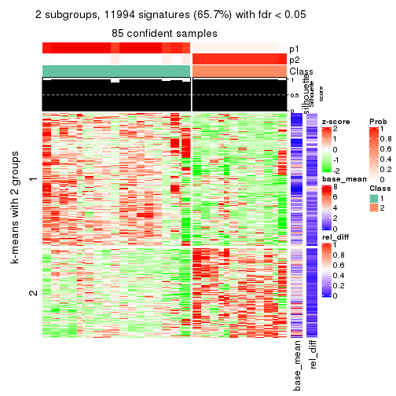
get_signatures(res, k = 3)

get_signatures(res, k = 4)
get_signatures(res, k = 5)
get_signatures(res, k = 6)
Signature heatmaps where rows are not scaled:
get_signatures(res, k = 2, scale_rows = FALSE)
get_signatures(res, k = 3, scale_rows = FALSE)
get_signatures(res, k = 4, scale_rows = FALSE)
get_signatures(res, k = 5, scale_rows = FALSE)
get_signatures(res, k = 6, scale_rows = FALSE)
Compare the overlap of signatures from different k:
compare_signatures(res)
get_signature() returns a data frame invisibly. TO get the list of signatures, the function
call should be assigned to a variable explicitly. In following code, if plot argument is set
to FALSE, no heatmap is plotted while only the differential analysis is performed.
# code only for demonstration
tb = get_signature(res, k = ..., plot = FALSE)
An example of the output of tb is:
#> which_row fdr mean_1 mean_2 scaled_mean_1 scaled_mean_2 km
#> 1 38 0.042760348 8.373488 9.131774 -0.5533452 0.5164555 1
#> 2 40 0.018707592 7.106213 8.469186 -0.6173731 0.5762149 1
#> 3 55 0.019134737 10.221463 11.207825 -0.6159697 0.5749050 1
#> 4 59 0.006059896 5.921854 7.869574 -0.6899429 0.6439467 1
#> 5 60 0.018055526 8.928898 10.211722 -0.6204761 0.5791110 1
#> 6 98 0.009384629 15.714769 14.887706 0.6635654 -0.6193277 2
...
The columns in tb are:
which_row: row indices corresponding to the input matrix.fdr: FDR for the differential test. mean_x: The mean value in group x.scaled_mean_x: The mean value in group x after rows are scaled.km: Row groups if k-means clustering is applied to rows.UMAP plot which shows how samples are separated.
dimension_reduction(res, k = 2, method = "UMAP")
dimension_reduction(res, k = 3, method = "UMAP")
dimension_reduction(res, k = 4, method = "UMAP")
dimension_reduction(res, k = 5, method = "UMAP")
dimension_reduction(res, k = 6, method = "UMAP")
Following heatmap shows how subgroups are split when increasing k:
collect_classes(res)
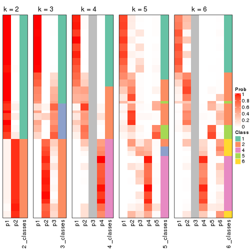
If matrix rows can be associated to genes, consider to use GO_Enrichment(res,
...) to perform function enrichment for the signature genes.
The object with results only for a single top-value method and a single partition method can be extracted as:
res = res_list["ATC", "skmeans"]
# you can also extract it by
# res = res_list["ATC:skmeans"]
A summary of res and all the functions that can be applied to it:
res
#> A 'ConsensusPartition' object with k = 2, 3, 4, 5, 6.
#> On a matrix with 18243 rows and 85 columns.
#> Top rows (1000, 2000, 3000, 4000, 5000) are extracted by 'ATC' method.
#> Subgroups are detected by 'skmeans' method.
#> Performed in total 1250 partitions by row resampling.
#> Best k for subgroups seems to be 3.
#>
#> Following methods can be applied to this 'ConsensusPartition' object:
#> [1] "cola_report" "collect_classes" "collect_plots"
#> [4] "collect_stats" "colnames" "compare_signatures"
#> [7] "consensus_heatmap" "dimension_reduction" "functional_enrichment"
#> [10] "get_anno_col" "get_anno" "get_classes"
#> [13] "get_consensus" "get_matrix" "get_membership"
#> [16] "get_param" "get_signatures" "get_stats"
#> [19] "is_best_k" "is_stable_k" "membership_heatmap"
#> [22] "ncol" "nrow" "plot_ecdf"
#> [25] "rownames" "select_partition_number" "show"
#> [28] "suggest_best_k" "test_to_known_factors"
collect_plots() function collects all the plots made from res for all k (number of partitions)
into one single page to provide an easy and fast comparison between different k.
collect_plots(res)
The plots are:
k and the heatmap of
predicted classes for each k.k.k.k.All the plots in panels can be made by individual functions and they are plotted later in this section.
select_partition_number() produces several plots showing different
statistics for choosing “optimized” k. There are following statistics:
k;k, the area increased is defined as \(A_k - A_{k-1}\).The detailed explanations of these statistics can be found in the cola vignette.
Generally speaking, lower PAC score, higher mean silhouette score or higher
concordance corresponds to better partition. Rand index and Jaccard index
measure how similar the current partition is compared to partition with k-1.
If they are too similar, we won't accept k is better than k-1.
select_partition_number(res)

The numeric values for all these statistics can be obtained by get_stats().
get_stats(res)
#> k 1-PAC mean_silhouette concordance area_increased Rand Jaccard
#> 2 2 1.000 0.995 0.998 0.5034 0.497 0.497
#> 3 3 1.000 0.974 0.988 0.2277 0.861 0.724
#> 4 4 0.823 0.851 0.926 0.1210 0.889 0.712
#> 5 5 0.785 0.745 0.836 0.0646 0.962 0.878
#> 6 6 0.743 0.761 0.824 0.0480 0.894 0.669
suggest_best_k() suggests the best \(k\) based on these statistics. The rules are as follows:
NA.suggest_best_k(res)
#> [1] 3
#> attr(,"optional")
#> [1] 2
There is also optional best \(k\) = 2 that is worth to check.
Following shows the table of the partitions (You need to click the show/hide
code output link to see it). The membership matrix (columns with name p*)
is inferred by
clue::cl_consensus()
function with the SE method. Basically the value in the membership matrix
represents the probability to belong to a certain group. The finall class
label for an item is determined with the group with highest probability it
belongs to.
In get_classes() function, the entropy is calculated from the membership
matrix and the silhouette score is calculated from the consensus matrix.
cbind(get_classes(res, k = 2), get_membership(res, k = 2))
#> class entropy silhouette p1 p2
#> ERR532547 2 0.00 1.000 0.000 1.000
#> ERR532548 2 0.00 1.000 0.000 1.000
#> ERR532549 2 0.00 1.000 0.000 1.000
#> ERR532576 1 0.00 0.995 1.000 0.000
#> ERR532577 1 0.00 0.995 1.000 0.000
#> ERR532578 1 0.00 0.995 1.000 0.000
#> ERR532593 1 0.00 0.995 1.000 0.000
#> ERR532594 1 0.00 0.995 1.000 0.000
#> ERR532595 1 0.00 0.995 1.000 0.000
#> ERR532596 2 0.00 1.000 0.000 1.000
#> ERR532597 2 0.00 1.000 0.000 1.000
#> ERR532598 2 0.00 1.000 0.000 1.000
#> ERR532599 2 0.00 1.000 0.000 1.000
#> ERR532600 2 0.00 1.000 0.000 1.000
#> ERR532601 2 0.00 1.000 0.000 1.000
#> ERR532602 1 0.00 0.995 1.000 0.000
#> ERR532603 1 0.00 0.995 1.000 0.000
#> ERR532604 1 0.00 0.995 1.000 0.000
#> ERR532605 1 0.00 0.995 1.000 0.000
#> ERR532606 1 0.00 0.995 1.000 0.000
#> ERR532607 1 0.00 0.995 1.000 0.000
#> ERR532608 1 0.00 0.995 1.000 0.000
#> ERR532609 1 0.00 0.995 1.000 0.000
#> ERR532610 1 0.00 0.995 1.000 0.000
#> ERR532611 1 0.00 0.995 1.000 0.000
#> ERR532612 1 0.00 0.995 1.000 0.000
#> ERR532613 1 0.00 0.995 1.000 0.000
#> ERR532550 1 0.00 0.995 1.000 0.000
#> ERR532551 1 0.00 0.995 1.000 0.000
#> ERR532552 1 0.00 0.995 1.000 0.000
#> ERR532553 1 0.00 0.995 1.000 0.000
#> ERR532554 2 0.00 1.000 0.000 1.000
#> ERR532555 2 0.00 1.000 0.000 1.000
#> ERR532556 2 0.00 1.000 0.000 1.000
#> ERR532557 2 0.00 1.000 0.000 1.000
#> ERR532558 2 0.00 1.000 0.000 1.000
#> ERR532559 2 0.00 1.000 0.000 1.000
#> ERR532560 1 0.00 0.995 1.000 0.000
#> ERR532561 1 0.00 0.995 1.000 0.000
#> ERR532562 1 0.00 0.995 1.000 0.000
#> ERR532563 2 0.00 1.000 0.000 1.000
#> ERR532564 2 0.00 1.000 0.000 1.000
#> ERR532565 2 0.00 1.000 0.000 1.000
#> ERR532566 1 0.00 0.995 1.000 0.000
#> ERR532567 1 0.00 0.995 1.000 0.000
#> ERR532568 1 0.00 0.995 1.000 0.000
#> ERR532569 1 0.00 0.995 1.000 0.000
#> ERR532570 1 0.00 0.995 1.000 0.000
#> ERR532571 1 0.00 0.995 1.000 0.000
#> ERR532572 2 0.00 1.000 0.000 1.000
#> ERR532573 2 0.00 1.000 0.000 1.000
#> ERR532574 2 0.00 1.000 0.000 1.000
#> ERR532575 1 0.73 0.744 0.796 0.204
#> ERR532579 2 0.00 1.000 0.000 1.000
#> ERR532580 2 0.00 1.000 0.000 1.000
#> ERR532581 2 0.00 1.000 0.000 1.000
#> ERR532582 2 0.00 1.000 0.000 1.000
#> ERR532583 2 0.00 1.000 0.000 1.000
#> ERR532584 2 0.00 1.000 0.000 1.000
#> ERR532585 2 0.00 1.000 0.000 1.000
#> ERR532586 2 0.00 1.000 0.000 1.000
#> ERR532587 2 0.00 1.000 0.000 1.000
#> ERR532588 2 0.00 1.000 0.000 1.000
#> ERR532589 1 0.00 0.995 1.000 0.000
#> ERR532590 1 0.00 0.995 1.000 0.000
#> ERR532591 2 0.00 1.000 0.000 1.000
#> ERR532592 2 0.00 1.000 0.000 1.000
#> ERR532439 2 0.00 1.000 0.000 1.000
#> ERR532440 2 0.00 1.000 0.000 1.000
#> ERR532441 2 0.00 1.000 0.000 1.000
#> ERR532442 1 0.00 0.995 1.000 0.000
#> ERR532443 1 0.00 0.995 1.000 0.000
#> ERR532444 1 0.00 0.995 1.000 0.000
#> ERR532445 1 0.00 0.995 1.000 0.000
#> ERR532446 1 0.00 0.995 1.000 0.000
#> ERR532447 1 0.00 0.995 1.000 0.000
#> ERR532433 1 0.00 0.995 1.000 0.000
#> ERR532434 1 0.00 0.995 1.000 0.000
#> ERR532435 1 0.00 0.995 1.000 0.000
#> ERR532436 1 0.00 0.995 1.000 0.000
#> ERR532437 1 0.00 0.995 1.000 0.000
#> ERR532438 1 0.00 0.995 1.000 0.000
#> ERR532614 2 0.00 1.000 0.000 1.000
#> ERR532615 2 0.00 1.000 0.000 1.000
#> ERR532616 2 0.00 1.000 0.000 1.000
cbind(get_classes(res, k = 3), get_membership(res, k = 3))
#> class entropy silhouette p1 p2 p3
#> ERR532547 3 0.0000 0.911 0.000 0 1.000
#> ERR532548 3 0.0000 0.911 0.000 0 1.000
#> ERR532549 3 0.0000 0.911 0.000 0 1.000
#> ERR532576 1 0.0000 1.000 1.000 0 0.000
#> ERR532577 1 0.0000 1.000 1.000 0 0.000
#> ERR532578 1 0.0000 1.000 1.000 0 0.000
#> ERR532593 1 0.0000 1.000 1.000 0 0.000
#> ERR532594 1 0.0000 1.000 1.000 0 0.000
#> ERR532595 1 0.0000 1.000 1.000 0 0.000
#> ERR532596 2 0.0000 1.000 0.000 1 0.000
#> ERR532597 2 0.0000 1.000 0.000 1 0.000
#> ERR532598 2 0.0000 1.000 0.000 1 0.000
#> ERR532599 2 0.0000 1.000 0.000 1 0.000
#> ERR532600 2 0.0000 1.000 0.000 1 0.000
#> ERR532601 2 0.0000 1.000 0.000 1 0.000
#> ERR532602 1 0.0000 1.000 1.000 0 0.000
#> ERR532603 1 0.0000 1.000 1.000 0 0.000
#> ERR532604 1 0.0000 1.000 1.000 0 0.000
#> ERR532605 1 0.0000 1.000 1.000 0 0.000
#> ERR532606 1 0.0000 1.000 1.000 0 0.000
#> ERR532607 1 0.0000 1.000 1.000 0 0.000
#> ERR532608 3 0.0000 0.911 0.000 0 1.000
#> ERR532609 3 0.0000 0.911 0.000 0 1.000
#> ERR532610 3 0.0000 0.911 0.000 0 1.000
#> ERR532611 1 0.0000 1.000 1.000 0 0.000
#> ERR532612 1 0.0000 1.000 1.000 0 0.000
#> ERR532613 1 0.0000 1.000 1.000 0 0.000
#> ERR532550 3 0.0592 0.904 0.012 0 0.988
#> ERR532551 3 0.5859 0.565 0.344 0 0.656
#> ERR532552 3 0.5859 0.565 0.344 0 0.656
#> ERR532553 3 0.5859 0.565 0.344 0 0.656
#> ERR532554 2 0.0000 1.000 0.000 1 0.000
#> ERR532555 2 0.0000 1.000 0.000 1 0.000
#> ERR532556 2 0.0000 1.000 0.000 1 0.000
#> ERR532557 2 0.0000 1.000 0.000 1 0.000
#> ERR532558 2 0.0000 1.000 0.000 1 0.000
#> ERR532559 2 0.0000 1.000 0.000 1 0.000
#> ERR532560 1 0.0000 1.000 1.000 0 0.000
#> ERR532561 1 0.0000 1.000 1.000 0 0.000
#> ERR532562 1 0.0000 1.000 1.000 0 0.000
#> ERR532563 2 0.0000 1.000 0.000 1 0.000
#> ERR532564 2 0.0000 1.000 0.000 1 0.000
#> ERR532565 2 0.0000 1.000 0.000 1 0.000
#> ERR532566 3 0.0000 0.911 0.000 0 1.000
#> ERR532567 3 0.0000 0.911 0.000 0 1.000
#> ERR532568 3 0.0000 0.911 0.000 0 1.000
#> ERR532569 1 0.0000 1.000 1.000 0 0.000
#> ERR532570 1 0.0000 1.000 1.000 0 0.000
#> ERR532571 1 0.0000 1.000 1.000 0 0.000
#> ERR532572 2 0.0000 1.000 0.000 1 0.000
#> ERR532573 2 0.0000 1.000 0.000 1 0.000
#> ERR532574 2 0.0000 1.000 0.000 1 0.000
#> ERR532575 1 0.0000 1.000 1.000 0 0.000
#> ERR532579 2 0.0000 1.000 0.000 1 0.000
#> ERR532580 2 0.0000 1.000 0.000 1 0.000
#> ERR532581 2 0.0000 1.000 0.000 1 0.000
#> ERR532582 2 0.0000 1.000 0.000 1 0.000
#> ERR532583 2 0.0000 1.000 0.000 1 0.000
#> ERR532584 2 0.0000 1.000 0.000 1 0.000
#> ERR532585 2 0.0000 1.000 0.000 1 0.000
#> ERR532586 2 0.0000 1.000 0.000 1 0.000
#> ERR532587 2 0.0000 1.000 0.000 1 0.000
#> ERR532588 2 0.0000 1.000 0.000 1 0.000
#> ERR532589 1 0.0000 1.000 1.000 0 0.000
#> ERR532590 1 0.0000 1.000 1.000 0 0.000
#> ERR532591 2 0.0000 1.000 0.000 1 0.000
#> ERR532592 2 0.0000 1.000 0.000 1 0.000
#> ERR532439 2 0.0000 1.000 0.000 1 0.000
#> ERR532440 2 0.0000 1.000 0.000 1 0.000
#> ERR532441 2 0.0000 1.000 0.000 1 0.000
#> ERR532442 1 0.0000 1.000 1.000 0 0.000
#> ERR532443 1 0.0000 1.000 1.000 0 0.000
#> ERR532444 1 0.0000 1.000 1.000 0 0.000
#> ERR532445 1 0.0000 1.000 1.000 0 0.000
#> ERR532446 1 0.0000 1.000 1.000 0 0.000
#> ERR532447 1 0.0000 1.000 1.000 0 0.000
#> ERR532433 1 0.0000 1.000 1.000 0 0.000
#> ERR532434 1 0.0000 1.000 1.000 0 0.000
#> ERR532435 1 0.0000 1.000 1.000 0 0.000
#> ERR532436 1 0.0000 1.000 1.000 0 0.000
#> ERR532437 1 0.0000 1.000 1.000 0 0.000
#> ERR532438 1 0.0000 1.000 1.000 0 0.000
#> ERR532614 2 0.0000 1.000 0.000 1 0.000
#> ERR532615 2 0.0000 1.000 0.000 1 0.000
#> ERR532616 2 0.0000 1.000 0.000 1 0.000
cbind(get_classes(res, k = 4), get_membership(res, k = 4))
#> class entropy silhouette p1 p2 p3 p4
#> ERR532547 3 0.0000 0.833 0.000 0.000 1.000 0.000
#> ERR532548 3 0.0000 0.833 0.000 0.000 1.000 0.000
#> ERR532549 3 0.0000 0.833 0.000 0.000 1.000 0.000
#> ERR532576 1 0.0000 0.990 1.000 0.000 0.000 0.000
#> ERR532577 1 0.0000 0.990 1.000 0.000 0.000 0.000
#> ERR532578 1 0.0000 0.990 1.000 0.000 0.000 0.000
#> ERR532593 1 0.0000 0.990 1.000 0.000 0.000 0.000
#> ERR532594 1 0.0000 0.990 1.000 0.000 0.000 0.000
#> ERR532595 1 0.0000 0.990 1.000 0.000 0.000 0.000
#> ERR532596 4 0.0000 0.953 0.000 0.000 0.000 1.000
#> ERR532597 4 0.0000 0.953 0.000 0.000 0.000 1.000
#> ERR532598 4 0.0000 0.953 0.000 0.000 0.000 1.000
#> ERR532599 4 0.0188 0.952 0.000 0.004 0.000 0.996
#> ERR532600 4 0.0188 0.952 0.000 0.004 0.000 0.996
#> ERR532601 4 0.0188 0.952 0.000 0.004 0.000 0.996
#> ERR532602 1 0.0000 0.990 1.000 0.000 0.000 0.000
#> ERR532603 1 0.0000 0.990 1.000 0.000 0.000 0.000
#> ERR532604 1 0.0000 0.990 1.000 0.000 0.000 0.000
#> ERR532605 1 0.1302 0.962 0.956 0.044 0.000 0.000
#> ERR532606 1 0.1302 0.962 0.956 0.044 0.000 0.000
#> ERR532607 1 0.1302 0.962 0.956 0.044 0.000 0.000
#> ERR532608 3 0.0000 0.833 0.000 0.000 1.000 0.000
#> ERR532609 3 0.0000 0.833 0.000 0.000 1.000 0.000
#> ERR532610 3 0.0000 0.833 0.000 0.000 1.000 0.000
#> ERR532611 1 0.0000 0.990 1.000 0.000 0.000 0.000
#> ERR532612 1 0.0000 0.990 1.000 0.000 0.000 0.000
#> ERR532613 1 0.0000 0.990 1.000 0.000 0.000 0.000
#> ERR532550 3 0.2973 0.726 0.144 0.000 0.856 0.000
#> ERR532551 3 0.5398 0.445 0.404 0.016 0.580 0.000
#> ERR532552 3 0.5398 0.445 0.404 0.016 0.580 0.000
#> ERR532553 3 0.5398 0.445 0.404 0.016 0.580 0.000
#> ERR532554 4 0.2281 0.910 0.000 0.096 0.000 0.904
#> ERR532555 4 0.2281 0.910 0.000 0.096 0.000 0.904
#> ERR532556 4 0.2281 0.910 0.000 0.096 0.000 0.904
#> ERR532557 2 0.4992 0.129 0.000 0.524 0.000 0.476
#> ERR532558 2 0.4992 0.129 0.000 0.524 0.000 0.476
#> ERR532559 2 0.4992 0.129 0.000 0.524 0.000 0.476
#> ERR532560 1 0.0336 0.987 0.992 0.008 0.000 0.000
#> ERR532561 1 0.0336 0.987 0.992 0.008 0.000 0.000
#> ERR532562 1 0.0336 0.987 0.992 0.008 0.000 0.000
#> ERR532563 4 0.2281 0.910 0.000 0.096 0.000 0.904
#> ERR532564 4 0.2281 0.910 0.000 0.096 0.000 0.904
#> ERR532565 4 0.2281 0.910 0.000 0.096 0.000 0.904
#> ERR532566 3 0.0000 0.833 0.000 0.000 1.000 0.000
#> ERR532567 3 0.0000 0.833 0.000 0.000 1.000 0.000
#> ERR532568 3 0.0000 0.833 0.000 0.000 1.000 0.000
#> ERR532569 1 0.0000 0.990 1.000 0.000 0.000 0.000
#> ERR532570 1 0.0000 0.990 1.000 0.000 0.000 0.000
#> ERR532571 1 0.0000 0.990 1.000 0.000 0.000 0.000
#> ERR532572 4 0.0000 0.953 0.000 0.000 0.000 1.000
#> ERR532573 4 0.0000 0.953 0.000 0.000 0.000 1.000
#> ERR532574 4 0.0000 0.953 0.000 0.000 0.000 1.000
#> ERR532575 2 0.0592 0.547 0.016 0.984 0.000 0.000
#> ERR532579 4 0.2530 0.896 0.000 0.112 0.000 0.888
#> ERR532580 4 0.2530 0.896 0.000 0.112 0.000 0.888
#> ERR532581 4 0.0000 0.953 0.000 0.000 0.000 1.000
#> ERR532582 4 0.0000 0.953 0.000 0.000 0.000 1.000
#> ERR532583 4 0.0000 0.953 0.000 0.000 0.000 1.000
#> ERR532584 2 0.4072 0.596 0.000 0.748 0.000 0.252
#> ERR532585 2 0.4072 0.596 0.000 0.748 0.000 0.252
#> ERR532586 2 0.4072 0.596 0.000 0.748 0.000 0.252
#> ERR532587 4 0.0188 0.952 0.000 0.004 0.000 0.996
#> ERR532588 4 0.0188 0.952 0.000 0.004 0.000 0.996
#> ERR532589 2 0.2814 0.558 0.132 0.868 0.000 0.000
#> ERR532590 2 0.2814 0.558 0.132 0.868 0.000 0.000
#> ERR532591 4 0.2530 0.896 0.000 0.112 0.000 0.888
#> ERR532592 4 0.2530 0.896 0.000 0.112 0.000 0.888
#> ERR532439 4 0.0336 0.950 0.000 0.008 0.000 0.992
#> ERR532440 4 0.0336 0.950 0.000 0.008 0.000 0.992
#> ERR532441 4 0.0336 0.950 0.000 0.008 0.000 0.992
#> ERR532442 1 0.0336 0.987 0.992 0.008 0.000 0.000
#> ERR532443 1 0.0336 0.987 0.992 0.008 0.000 0.000
#> ERR532444 1 0.0336 0.987 0.992 0.008 0.000 0.000
#> ERR532445 1 0.0000 0.990 1.000 0.000 0.000 0.000
#> ERR532446 1 0.0000 0.990 1.000 0.000 0.000 0.000
#> ERR532447 1 0.0000 0.990 1.000 0.000 0.000 0.000
#> ERR532433 1 0.1118 0.969 0.964 0.036 0.000 0.000
#> ERR532434 1 0.1118 0.969 0.964 0.036 0.000 0.000
#> ERR532435 1 0.1118 0.969 0.964 0.036 0.000 0.000
#> ERR532436 2 0.4661 0.445 0.348 0.652 0.000 0.000
#> ERR532437 2 0.4661 0.445 0.348 0.652 0.000 0.000
#> ERR532438 2 0.4661 0.445 0.348 0.652 0.000 0.000
#> ERR532614 4 0.0524 0.949 0.000 0.008 0.004 0.988
#> ERR532615 4 0.0524 0.949 0.000 0.008 0.004 0.988
#> ERR532616 4 0.0524 0.949 0.000 0.008 0.004 0.988
cbind(get_classes(res, k = 5), get_membership(res, k = 5))
#> class entropy silhouette p1 p2 p3 p4 p5
#> ERR532547 2 0.0703 0.774 0.000 0.976 0.024 0.000 0.000
#> ERR532548 2 0.0703 0.774 0.000 0.976 0.024 0.000 0.000
#> ERR532549 2 0.0703 0.774 0.000 0.976 0.024 0.000 0.000
#> ERR532576 1 0.0162 0.940 0.996 0.000 0.004 0.000 0.000
#> ERR532577 1 0.0162 0.940 0.996 0.000 0.004 0.000 0.000
#> ERR532578 1 0.0162 0.940 0.996 0.000 0.004 0.000 0.000
#> ERR532593 1 0.0000 0.941 1.000 0.000 0.000 0.000 0.000
#> ERR532594 1 0.0000 0.941 1.000 0.000 0.000 0.000 0.000
#> ERR532595 1 0.0000 0.941 1.000 0.000 0.000 0.000 0.000
#> ERR532596 4 0.4045 0.708 0.000 0.000 0.356 0.644 0.000
#> ERR532597 4 0.4045 0.708 0.000 0.000 0.356 0.644 0.000
#> ERR532598 4 0.4045 0.708 0.000 0.000 0.356 0.644 0.000
#> ERR532599 4 0.4242 0.674 0.000 0.000 0.428 0.572 0.000
#> ERR532600 4 0.4242 0.674 0.000 0.000 0.428 0.572 0.000
#> ERR532601 4 0.4242 0.674 0.000 0.000 0.428 0.572 0.000
#> ERR532602 1 0.0000 0.941 1.000 0.000 0.000 0.000 0.000
#> ERR532603 1 0.0000 0.941 1.000 0.000 0.000 0.000 0.000
#> ERR532604 1 0.0000 0.941 1.000 0.000 0.000 0.000 0.000
#> ERR532605 1 0.2930 0.858 0.832 0.000 0.004 0.000 0.164
#> ERR532606 1 0.2890 0.862 0.836 0.000 0.004 0.000 0.160
#> ERR532607 1 0.2890 0.862 0.836 0.000 0.004 0.000 0.160
#> ERR532608 2 0.0162 0.780 0.000 0.996 0.000 0.000 0.004
#> ERR532609 2 0.0162 0.780 0.000 0.996 0.000 0.000 0.004
#> ERR532610 2 0.0162 0.780 0.000 0.996 0.000 0.000 0.004
#> ERR532611 1 0.0000 0.941 1.000 0.000 0.000 0.000 0.000
#> ERR532612 1 0.0000 0.941 1.000 0.000 0.000 0.000 0.000
#> ERR532613 1 0.0000 0.941 1.000 0.000 0.000 0.000 0.000
#> ERR532550 2 0.3048 0.633 0.176 0.820 0.000 0.000 0.004
#> ERR532551 2 0.6428 0.305 0.436 0.456 0.048 0.000 0.060
#> ERR532552 2 0.6428 0.305 0.436 0.456 0.048 0.000 0.060
#> ERR532553 2 0.6428 0.305 0.436 0.456 0.048 0.000 0.060
#> ERR532554 4 0.0162 0.616 0.000 0.000 0.004 0.996 0.000
#> ERR532555 4 0.0162 0.616 0.000 0.000 0.004 0.996 0.000
#> ERR532556 4 0.0162 0.616 0.000 0.000 0.004 0.996 0.000
#> ERR532557 4 0.5308 0.184 0.000 0.000 0.076 0.620 0.304
#> ERR532558 4 0.5308 0.184 0.000 0.000 0.076 0.620 0.304
#> ERR532559 4 0.5308 0.184 0.000 0.000 0.076 0.620 0.304
#> ERR532560 1 0.1704 0.927 0.928 0.000 0.004 0.000 0.068
#> ERR532561 1 0.1704 0.927 0.928 0.000 0.004 0.000 0.068
#> ERR532562 1 0.1704 0.927 0.928 0.000 0.004 0.000 0.068
#> ERR532563 4 0.0162 0.620 0.000 0.000 0.004 0.996 0.000
#> ERR532564 4 0.0162 0.620 0.000 0.000 0.004 0.996 0.000
#> ERR532565 4 0.0162 0.620 0.000 0.000 0.004 0.996 0.000
#> ERR532566 2 0.0000 0.780 0.000 1.000 0.000 0.000 0.000
#> ERR532567 2 0.0000 0.780 0.000 1.000 0.000 0.000 0.000
#> ERR532568 2 0.0000 0.780 0.000 1.000 0.000 0.000 0.000
#> ERR532569 1 0.0510 0.942 0.984 0.000 0.000 0.000 0.016
#> ERR532570 1 0.0510 0.942 0.984 0.000 0.000 0.000 0.016
#> ERR532571 1 0.0510 0.942 0.984 0.000 0.000 0.000 0.016
#> ERR532572 4 0.4045 0.709 0.000 0.000 0.356 0.644 0.000
#> ERR532573 4 0.4045 0.709 0.000 0.000 0.356 0.644 0.000
#> ERR532574 4 0.4045 0.709 0.000 0.000 0.356 0.644 0.000
#> ERR532575 5 0.3439 0.659 0.004 0.000 0.188 0.008 0.800
#> ERR532579 4 0.2012 0.564 0.000 0.000 0.020 0.920 0.060
#> ERR532580 4 0.2012 0.564 0.000 0.000 0.020 0.920 0.060
#> ERR532581 4 0.3932 0.710 0.000 0.000 0.328 0.672 0.000
#> ERR532582 4 0.3932 0.710 0.000 0.000 0.328 0.672 0.000
#> ERR532583 4 0.3932 0.710 0.000 0.000 0.328 0.672 0.000
#> ERR532584 3 0.2471 1.000 0.000 0.000 0.864 0.000 0.136
#> ERR532585 3 0.2471 1.000 0.000 0.000 0.864 0.000 0.136
#> ERR532586 3 0.2471 1.000 0.000 0.000 0.864 0.000 0.136
#> ERR532587 4 0.4161 0.694 0.000 0.000 0.392 0.608 0.000
#> ERR532588 4 0.4161 0.694 0.000 0.000 0.392 0.608 0.000
#> ERR532589 5 0.4655 0.600 0.028 0.000 0.328 0.000 0.644
#> ERR532590 5 0.4655 0.600 0.028 0.000 0.328 0.000 0.644
#> ERR532591 4 0.2012 0.564 0.000 0.000 0.020 0.920 0.060
#> ERR532592 4 0.2012 0.564 0.000 0.000 0.020 0.920 0.060
#> ERR532439 4 0.4641 0.613 0.000 0.000 0.456 0.532 0.012
#> ERR532440 4 0.4641 0.613 0.000 0.000 0.456 0.532 0.012
#> ERR532441 4 0.4641 0.613 0.000 0.000 0.456 0.532 0.012
#> ERR532442 1 0.1768 0.925 0.924 0.000 0.004 0.000 0.072
#> ERR532443 1 0.1768 0.925 0.924 0.000 0.004 0.000 0.072
#> ERR532444 1 0.1768 0.925 0.924 0.000 0.004 0.000 0.072
#> ERR532445 1 0.0865 0.941 0.972 0.000 0.004 0.000 0.024
#> ERR532446 1 0.0865 0.941 0.972 0.000 0.004 0.000 0.024
#> ERR532447 1 0.0865 0.941 0.972 0.000 0.004 0.000 0.024
#> ERR532433 1 0.3530 0.808 0.784 0.000 0.012 0.000 0.204
#> ERR532434 1 0.3530 0.808 0.784 0.000 0.012 0.000 0.204
#> ERR532435 1 0.3530 0.808 0.784 0.000 0.012 0.000 0.204
#> ERR532436 5 0.1952 0.754 0.084 0.000 0.004 0.000 0.912
#> ERR532437 5 0.1952 0.754 0.084 0.000 0.004 0.000 0.912
#> ERR532438 5 0.1952 0.754 0.084 0.000 0.004 0.000 0.912
#> ERR532614 4 0.4522 0.658 0.000 0.008 0.440 0.552 0.000
#> ERR532615 4 0.4522 0.658 0.000 0.008 0.440 0.552 0.000
#> ERR532616 4 0.4522 0.658 0.000 0.008 0.440 0.552 0.000
cbind(get_classes(res, k = 6), get_membership(res, k = 6))
#> class entropy silhouette p1 p2 p3 p4 p5 p6
#> ERR532547 5 0.1644 0.914 0.000 0.000 0.076 0.000 0.920 0.004
#> ERR532548 5 0.1644 0.914 0.000 0.000 0.076 0.000 0.920 0.004
#> ERR532549 5 0.1644 0.914 0.000 0.000 0.076 0.000 0.920 0.004
#> ERR532576 1 0.1176 0.821 0.956 0.000 0.020 0.000 0.000 0.024
#> ERR532577 1 0.1176 0.821 0.956 0.000 0.020 0.000 0.000 0.024
#> ERR532578 1 0.1176 0.821 0.956 0.000 0.020 0.000 0.000 0.024
#> ERR532593 1 0.0405 0.827 0.988 0.000 0.008 0.000 0.000 0.004
#> ERR532594 1 0.0405 0.827 0.988 0.000 0.008 0.000 0.000 0.004
#> ERR532595 1 0.0405 0.827 0.988 0.000 0.008 0.000 0.000 0.004
#> ERR532596 4 0.1007 0.866 0.000 0.000 0.000 0.956 0.000 0.044
#> ERR532597 4 0.1007 0.866 0.000 0.000 0.000 0.956 0.000 0.044
#> ERR532598 4 0.1007 0.866 0.000 0.000 0.000 0.956 0.000 0.044
#> ERR532599 4 0.1151 0.857 0.000 0.000 0.032 0.956 0.000 0.012
#> ERR532600 4 0.1151 0.857 0.000 0.000 0.032 0.956 0.000 0.012
#> ERR532601 4 0.1151 0.857 0.000 0.000 0.032 0.956 0.000 0.012
#> ERR532602 1 0.0820 0.826 0.972 0.000 0.016 0.000 0.000 0.012
#> ERR532603 1 0.0820 0.826 0.972 0.000 0.016 0.000 0.000 0.012
#> ERR532604 1 0.0820 0.826 0.972 0.000 0.016 0.000 0.000 0.012
#> ERR532605 1 0.4269 0.705 0.708 0.244 0.032 0.000 0.000 0.016
#> ERR532606 1 0.4269 0.705 0.708 0.244 0.032 0.000 0.000 0.016
#> ERR532607 1 0.4269 0.705 0.708 0.244 0.032 0.000 0.000 0.016
#> ERR532608 5 0.0146 0.942 0.000 0.000 0.004 0.000 0.996 0.000
#> ERR532609 5 0.0146 0.942 0.000 0.000 0.004 0.000 0.996 0.000
#> ERR532610 5 0.0146 0.942 0.000 0.000 0.004 0.000 0.996 0.000
#> ERR532611 1 0.0820 0.826 0.972 0.000 0.016 0.000 0.000 0.012
#> ERR532612 1 0.0820 0.826 0.972 0.000 0.016 0.000 0.000 0.012
#> ERR532613 1 0.0820 0.826 0.972 0.000 0.016 0.000 0.000 0.012
#> ERR532550 5 0.2442 0.730 0.144 0.000 0.004 0.000 0.852 0.000
#> ERR532551 1 0.7939 0.120 0.416 0.056 0.160 0.000 0.244 0.124
#> ERR532552 1 0.7939 0.120 0.416 0.056 0.160 0.000 0.244 0.124
#> ERR532553 1 0.7939 0.120 0.416 0.056 0.160 0.000 0.244 0.124
#> ERR532554 6 0.3867 0.643 0.000 0.000 0.000 0.488 0.000 0.512
#> ERR532555 6 0.3867 0.643 0.000 0.000 0.000 0.488 0.000 0.512
#> ERR532556 6 0.3867 0.643 0.000 0.000 0.000 0.488 0.000 0.512
#> ERR532557 6 0.6979 0.539 0.000 0.248 0.088 0.216 0.000 0.448
#> ERR532558 6 0.6979 0.539 0.000 0.248 0.088 0.216 0.000 0.448
#> ERR532559 6 0.6979 0.539 0.000 0.248 0.088 0.216 0.000 0.448
#> ERR532560 1 0.3273 0.786 0.824 0.136 0.024 0.000 0.000 0.016
#> ERR532561 1 0.3273 0.786 0.824 0.136 0.024 0.000 0.000 0.016
#> ERR532562 1 0.3273 0.786 0.824 0.136 0.024 0.000 0.000 0.016
#> ERR532563 6 0.4246 0.692 0.000 0.000 0.016 0.452 0.000 0.532
#> ERR532564 6 0.4246 0.692 0.000 0.000 0.016 0.452 0.000 0.532
#> ERR532565 6 0.4246 0.692 0.000 0.000 0.016 0.452 0.000 0.532
#> ERR532566 5 0.0146 0.942 0.000 0.000 0.000 0.000 0.996 0.004
#> ERR532567 5 0.0146 0.942 0.000 0.000 0.000 0.000 0.996 0.004
#> ERR532568 5 0.0146 0.942 0.000 0.000 0.000 0.000 0.996 0.004
#> ERR532569 1 0.0260 0.828 0.992 0.008 0.000 0.000 0.000 0.000
#> ERR532570 1 0.0260 0.828 0.992 0.008 0.000 0.000 0.000 0.000
#> ERR532571 1 0.0260 0.828 0.992 0.008 0.000 0.000 0.000 0.000
#> ERR532572 4 0.1007 0.865 0.000 0.000 0.000 0.956 0.000 0.044
#> ERR532573 4 0.1007 0.865 0.000 0.000 0.000 0.956 0.000 0.044
#> ERR532574 4 0.1007 0.865 0.000 0.000 0.000 0.956 0.000 0.044
#> ERR532575 2 0.4044 0.643 0.000 0.744 0.180 0.000 0.000 0.076
#> ERR532579 6 0.3586 0.729 0.000 0.000 0.012 0.268 0.000 0.720
#> ERR532580 6 0.3586 0.729 0.000 0.000 0.012 0.268 0.000 0.720
#> ERR532581 4 0.1327 0.852 0.000 0.000 0.000 0.936 0.000 0.064
#> ERR532582 4 0.1327 0.852 0.000 0.000 0.000 0.936 0.000 0.064
#> ERR532583 4 0.1327 0.852 0.000 0.000 0.000 0.936 0.000 0.064
#> ERR532584 3 0.2772 1.000 0.000 0.040 0.864 0.092 0.000 0.004
#> ERR532585 3 0.2772 1.000 0.000 0.040 0.864 0.092 0.000 0.004
#> ERR532586 3 0.2772 1.000 0.000 0.040 0.864 0.092 0.000 0.004
#> ERR532587 4 0.0146 0.869 0.000 0.000 0.004 0.996 0.000 0.000
#> ERR532588 4 0.0146 0.869 0.000 0.000 0.004 0.996 0.000 0.000
#> ERR532589 2 0.5772 0.494 0.000 0.468 0.348 0.000 0.000 0.184
#> ERR532590 2 0.5772 0.494 0.000 0.468 0.348 0.000 0.000 0.184
#> ERR532591 6 0.3586 0.729 0.000 0.000 0.012 0.268 0.000 0.720
#> ERR532592 6 0.3586 0.729 0.000 0.000 0.012 0.268 0.000 0.720
#> ERR532439 4 0.3773 0.650 0.000 0.000 0.204 0.752 0.000 0.044
#> ERR532440 4 0.3773 0.650 0.000 0.000 0.204 0.752 0.000 0.044
#> ERR532441 4 0.3773 0.650 0.000 0.000 0.204 0.752 0.000 0.044
#> ERR532442 1 0.3352 0.782 0.816 0.144 0.024 0.000 0.000 0.016
#> ERR532443 1 0.3313 0.784 0.820 0.140 0.024 0.000 0.000 0.016
#> ERR532444 1 0.3313 0.784 0.820 0.140 0.024 0.000 0.000 0.016
#> ERR532445 1 0.1787 0.821 0.932 0.032 0.020 0.000 0.000 0.016
#> ERR532446 1 0.1787 0.821 0.932 0.032 0.020 0.000 0.000 0.016
#> ERR532447 1 0.1787 0.821 0.932 0.032 0.020 0.000 0.000 0.016
#> ERR532433 1 0.6027 0.581 0.580 0.248 0.068 0.000 0.000 0.104
#> ERR532434 1 0.6027 0.581 0.580 0.248 0.068 0.000 0.000 0.104
#> ERR532435 1 0.6027 0.581 0.580 0.248 0.068 0.000 0.000 0.104
#> ERR532436 2 0.0767 0.727 0.008 0.976 0.012 0.000 0.000 0.004
#> ERR532437 2 0.0767 0.727 0.008 0.976 0.012 0.000 0.000 0.004
#> ERR532438 2 0.0767 0.727 0.008 0.976 0.012 0.000 0.000 0.004
#> ERR532614 4 0.2407 0.812 0.000 0.004 0.056 0.892 0.000 0.048
#> ERR532615 4 0.2407 0.812 0.000 0.004 0.056 0.892 0.000 0.048
#> ERR532616 4 0.2407 0.812 0.000 0.004 0.056 0.892 0.000 0.048
Heatmaps for the consensus matrix. It visualizes the probability of two samples to be in a same group.
consensus_heatmap(res, k = 2)
consensus_heatmap(res, k = 3)
consensus_heatmap(res, k = 4)
consensus_heatmap(res, k = 5)
consensus_heatmap(res, k = 6)
Heatmaps for the membership of samples in all partitions to see how consistent they are:
membership_heatmap(res, k = 2)
membership_heatmap(res, k = 3)
membership_heatmap(res, k = 4)
membership_heatmap(res, k = 5)
membership_heatmap(res, k = 6)
As soon as we have had the classes for columns, we can look for signatures which are significantly different between classes which can be candidate marks for certain classes. Following are the heatmaps for signatures.
Signature heatmaps where rows are scaled:
get_signatures(res, k = 2)
get_signatures(res, k = 3)
get_signatures(res, k = 4)
get_signatures(res, k = 5)
get_signatures(res, k = 6)
Signature heatmaps where rows are not scaled:
get_signatures(res, k = 2, scale_rows = FALSE)
get_signatures(res, k = 3, scale_rows = FALSE)
get_signatures(res, k = 4, scale_rows = FALSE)
get_signatures(res, k = 5, scale_rows = FALSE)
get_signatures(res, k = 6, scale_rows = FALSE)
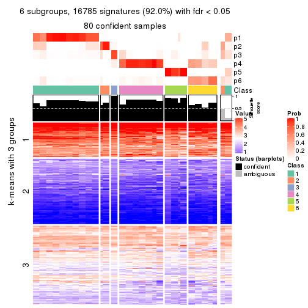
Compare the overlap of signatures from different k:
compare_signatures(res)
get_signature() returns a data frame invisibly. TO get the list of signatures, the function
call should be assigned to a variable explicitly. In following code, if plot argument is set
to FALSE, no heatmap is plotted while only the differential analysis is performed.
# code only for demonstration
tb = get_signature(res, k = ..., plot = FALSE)
An example of the output of tb is:
#> which_row fdr mean_1 mean_2 scaled_mean_1 scaled_mean_2 km
#> 1 38 0.042760348 8.373488 9.131774 -0.5533452 0.5164555 1
#> 2 40 0.018707592 7.106213 8.469186 -0.6173731 0.5762149 1
#> 3 55 0.019134737 10.221463 11.207825 -0.6159697 0.5749050 1
#> 4 59 0.006059896 5.921854 7.869574 -0.6899429 0.6439467 1
#> 5 60 0.018055526 8.928898 10.211722 -0.6204761 0.5791110 1
#> 6 98 0.009384629 15.714769 14.887706 0.6635654 -0.6193277 2
...
The columns in tb are:
which_row: row indices corresponding to the input matrix.fdr: FDR for the differential test. mean_x: The mean value in group x.scaled_mean_x: The mean value in group x after rows are scaled.km: Row groups if k-means clustering is applied to rows.UMAP plot which shows how samples are separated.
dimension_reduction(res, k = 2, method = "UMAP")
dimension_reduction(res, k = 3, method = "UMAP")
dimension_reduction(res, k = 4, method = "UMAP")
dimension_reduction(res, k = 5, method = "UMAP")
dimension_reduction(res, k = 6, method = "UMAP")
Following heatmap shows how subgroups are split when increasing k:
collect_classes(res)
If matrix rows can be associated to genes, consider to use GO_Enrichment(res,
...) to perform function enrichment for the signature genes.
The object with results only for a single top-value method and a single partition method can be extracted as:
res = res_list["ATC", "pam"]
# you can also extract it by
# res = res_list["ATC:pam"]
A summary of res and all the functions that can be applied to it:
res
#> A 'ConsensusPartition' object with k = 2, 3, 4, 5, 6.
#> On a matrix with 18243 rows and 85 columns.
#> Top rows (1000, 2000, 3000, 4000, 5000) are extracted by 'ATC' method.
#> Subgroups are detected by 'pam' method.
#> Performed in total 1250 partitions by row resampling.
#> Best k for subgroups seems to be 6.
#>
#> Following methods can be applied to this 'ConsensusPartition' object:
#> [1] "cola_report" "collect_classes" "collect_plots"
#> [4] "collect_stats" "colnames" "compare_signatures"
#> [7] "consensus_heatmap" "dimension_reduction" "functional_enrichment"
#> [10] "get_anno_col" "get_anno" "get_classes"
#> [13] "get_consensus" "get_matrix" "get_membership"
#> [16] "get_param" "get_signatures" "get_stats"
#> [19] "is_best_k" "is_stable_k" "membership_heatmap"
#> [22] "ncol" "nrow" "plot_ecdf"
#> [25] "rownames" "select_partition_number" "show"
#> [28] "suggest_best_k" "test_to_known_factors"
collect_plots() function collects all the plots made from res for all k (number of partitions)
into one single page to provide an easy and fast comparison between different k.
collect_plots(res)
The plots are:
k and the heatmap of
predicted classes for each k.k.k.k.All the plots in panels can be made by individual functions and they are plotted later in this section.
select_partition_number() produces several plots showing different
statistics for choosing “optimized” k. There are following statistics:
k;k, the area increased is defined as \(A_k - A_{k-1}\).The detailed explanations of these statistics can be found in the cola vignette.
Generally speaking, lower PAC score, higher mean silhouette score or higher
concordance corresponds to better partition. Rand index and Jaccard index
measure how similar the current partition is compared to partition with k-1.
If they are too similar, we won't accept k is better than k-1.
select_partition_number(res)
The numeric values for all these statistics can be obtained by get_stats().
get_stats(res)
#> k 1-PAC mean_silhouette concordance area_increased Rand Jaccard
#> 2 2 1.000 0.968 0.988 0.4734 0.525 0.525
#> 3 3 0.897 0.908 0.956 0.3834 0.805 0.635
#> 4 4 0.856 0.897 0.958 0.0597 0.748 0.445
#> 5 5 0.875 0.855 0.932 0.0390 0.969 0.901
#> 6 6 0.925 0.884 0.951 0.0358 0.971 0.901
suggest_best_k() suggests the best \(k\) based on these statistics. The rules are as follows:
NA.suggest_best_k(res)
#> [1] 6
#> attr(,"optional")
#> [1] 2
There is also optional best \(k\) = 2 that is worth to check.
Following shows the table of the partitions (You need to click the show/hide
code output link to see it). The membership matrix (columns with name p*)
is inferred by
clue::cl_consensus()
function with the SE method. Basically the value in the membership matrix
represents the probability to belong to a certain group. The finall class
label for an item is determined with the group with highest probability it
belongs to.
In get_classes() function, the entropy is calculated from the membership
matrix and the silhouette score is calculated from the consensus matrix.
cbind(get_classes(res, k = 2), get_membership(res, k = 2))
#> class entropy silhouette p1 p2
#> ERR532547 1 0.000 0.992 1.000 0.000
#> ERR532548 1 0.000 0.992 1.000 0.000
#> ERR532549 1 0.000 0.992 1.000 0.000
#> ERR532576 1 0.000 0.992 1.000 0.000
#> ERR532577 1 0.000 0.992 1.000 0.000
#> ERR532578 1 0.000 0.992 1.000 0.000
#> ERR532593 1 0.000 0.992 1.000 0.000
#> ERR532594 1 0.000 0.992 1.000 0.000
#> ERR532595 1 0.000 0.992 1.000 0.000
#> ERR532596 2 0.000 0.978 0.000 1.000
#> ERR532597 2 0.000 0.978 0.000 1.000
#> ERR532598 2 0.000 0.978 0.000 1.000
#> ERR532599 2 0.000 0.978 0.000 1.000
#> ERR532600 2 0.000 0.978 0.000 1.000
#> ERR532601 2 0.000 0.978 0.000 1.000
#> ERR532602 1 0.000 0.992 1.000 0.000
#> ERR532603 1 0.000 0.992 1.000 0.000
#> ERR532604 1 0.000 0.992 1.000 0.000
#> ERR532605 1 0.000 0.992 1.000 0.000
#> ERR532606 1 0.000 0.992 1.000 0.000
#> ERR532607 1 0.000 0.992 1.000 0.000
#> ERR532608 1 0.000 0.992 1.000 0.000
#> ERR532609 1 0.000 0.992 1.000 0.000
#> ERR532610 1 0.000 0.992 1.000 0.000
#> ERR532611 1 0.000 0.992 1.000 0.000
#> ERR532612 1 0.000 0.992 1.000 0.000
#> ERR532613 1 0.000 0.992 1.000 0.000
#> ERR532550 1 0.000 0.992 1.000 0.000
#> ERR532551 1 0.000 0.992 1.000 0.000
#> ERR532552 1 0.000 0.992 1.000 0.000
#> ERR532553 1 0.000 0.992 1.000 0.000
#> ERR532554 2 0.000 0.978 0.000 1.000
#> ERR532555 2 0.000 0.978 0.000 1.000
#> ERR532556 2 0.000 0.978 0.000 1.000
#> ERR532557 2 0.000 0.978 0.000 1.000
#> ERR532558 2 0.000 0.978 0.000 1.000
#> ERR532559 2 0.000 0.978 0.000 1.000
#> ERR532560 1 0.000 0.992 1.000 0.000
#> ERR532561 1 0.000 0.992 1.000 0.000
#> ERR532562 1 0.000 0.992 1.000 0.000
#> ERR532563 2 0.000 0.978 0.000 1.000
#> ERR532564 2 0.000 0.978 0.000 1.000
#> ERR532565 2 0.000 0.978 0.000 1.000
#> ERR532566 1 0.000 0.992 1.000 0.000
#> ERR532567 1 0.000 0.992 1.000 0.000
#> ERR532568 1 0.000 0.992 1.000 0.000
#> ERR532569 1 0.000 0.992 1.000 0.000
#> ERR532570 1 0.000 0.992 1.000 0.000
#> ERR532571 1 0.000 0.992 1.000 0.000
#> ERR532572 2 0.000 0.978 0.000 1.000
#> ERR532573 2 0.000 0.978 0.000 1.000
#> ERR532574 2 0.000 0.978 0.000 1.000
#> ERR532575 1 0.000 0.992 1.000 0.000
#> ERR532579 2 0.000 0.978 0.000 1.000
#> ERR532580 2 0.000 0.978 0.000 1.000
#> ERR532581 2 0.000 0.978 0.000 1.000
#> ERR532582 2 0.000 0.978 0.000 1.000
#> ERR532583 2 0.000 0.978 0.000 1.000
#> ERR532584 1 0.000 0.992 1.000 0.000
#> ERR532585 1 0.000 0.992 1.000 0.000
#> ERR532586 1 0.000 0.992 1.000 0.000
#> ERR532587 2 0.000 0.978 0.000 1.000
#> ERR532588 2 0.000 0.978 0.000 1.000
#> ERR532589 1 0.000 0.992 1.000 0.000
#> ERR532590 1 0.000 0.992 1.000 0.000
#> ERR532591 2 0.000 0.978 0.000 1.000
#> ERR532592 2 0.000 0.978 0.000 1.000
#> ERR532439 2 0.871 0.590 0.292 0.708
#> ERR532440 2 0.955 0.405 0.376 0.624
#> ERR532441 1 0.958 0.359 0.620 0.380
#> ERR532442 1 0.000 0.992 1.000 0.000
#> ERR532443 1 0.000 0.992 1.000 0.000
#> ERR532444 1 0.000 0.992 1.000 0.000
#> ERR532445 1 0.000 0.992 1.000 0.000
#> ERR532446 1 0.000 0.992 1.000 0.000
#> ERR532447 1 0.000 0.992 1.000 0.000
#> ERR532433 1 0.000 0.992 1.000 0.000
#> ERR532434 1 0.000 0.992 1.000 0.000
#> ERR532435 1 0.000 0.992 1.000 0.000
#> ERR532436 1 0.000 0.992 1.000 0.000
#> ERR532437 1 0.000 0.992 1.000 0.000
#> ERR532438 1 0.000 0.992 1.000 0.000
#> ERR532614 2 0.000 0.978 0.000 1.000
#> ERR532615 2 0.000 0.978 0.000 1.000
#> ERR532616 2 0.000 0.978 0.000 1.000
cbind(get_classes(res, k = 3), get_membership(res, k = 3))
#> class entropy silhouette p1 p2 p3
#> ERR532547 3 0.0000 0.915 0.000 0.000 1.000
#> ERR532548 3 0.0000 0.915 0.000 0.000 1.000
#> ERR532549 3 0.0000 0.915 0.000 0.000 1.000
#> ERR532576 3 0.2796 0.870 0.092 0.000 0.908
#> ERR532577 3 0.2959 0.864 0.100 0.000 0.900
#> ERR532578 3 0.2625 0.875 0.084 0.000 0.916
#> ERR532593 3 0.5621 0.643 0.308 0.000 0.692
#> ERR532594 3 0.5621 0.643 0.308 0.000 0.692
#> ERR532595 3 0.5621 0.643 0.308 0.000 0.692
#> ERR532596 2 0.0000 0.973 0.000 1.000 0.000
#> ERR532597 2 0.0000 0.973 0.000 1.000 0.000
#> ERR532598 2 0.0000 0.973 0.000 1.000 0.000
#> ERR532599 2 0.0000 0.973 0.000 1.000 0.000
#> ERR532600 2 0.0000 0.973 0.000 1.000 0.000
#> ERR532601 2 0.0000 0.973 0.000 1.000 0.000
#> ERR532602 3 0.5621 0.643 0.308 0.000 0.692
#> ERR532603 3 0.5621 0.643 0.308 0.000 0.692
#> ERR532604 3 0.5621 0.643 0.308 0.000 0.692
#> ERR532605 1 0.0000 0.985 1.000 0.000 0.000
#> ERR532606 1 0.0000 0.985 1.000 0.000 0.000
#> ERR532607 1 0.0000 0.985 1.000 0.000 0.000
#> ERR532608 3 0.0000 0.915 0.000 0.000 1.000
#> ERR532609 3 0.0000 0.915 0.000 0.000 1.000
#> ERR532610 3 0.0000 0.915 0.000 0.000 1.000
#> ERR532611 1 0.2625 0.905 0.916 0.000 0.084
#> ERR532612 1 0.2625 0.905 0.916 0.000 0.084
#> ERR532613 1 0.2066 0.931 0.940 0.000 0.060
#> ERR532550 3 0.1860 0.893 0.052 0.000 0.948
#> ERR532551 3 0.0000 0.915 0.000 0.000 1.000
#> ERR532552 3 0.0000 0.915 0.000 0.000 1.000
#> ERR532553 3 0.0000 0.915 0.000 0.000 1.000
#> ERR532554 2 0.0000 0.973 0.000 1.000 0.000
#> ERR532555 2 0.0000 0.973 0.000 1.000 0.000
#> ERR532556 2 0.0000 0.973 0.000 1.000 0.000
#> ERR532557 2 0.1860 0.938 0.000 0.948 0.052
#> ERR532558 2 0.1860 0.938 0.000 0.948 0.052
#> ERR532559 2 0.1860 0.938 0.000 0.948 0.052
#> ERR532560 1 0.0000 0.985 1.000 0.000 0.000
#> ERR532561 1 0.0000 0.985 1.000 0.000 0.000
#> ERR532562 1 0.0000 0.985 1.000 0.000 0.000
#> ERR532563 2 0.0000 0.973 0.000 1.000 0.000
#> ERR532564 2 0.0000 0.973 0.000 1.000 0.000
#> ERR532565 2 0.0000 0.973 0.000 1.000 0.000
#> ERR532566 3 0.0000 0.915 0.000 0.000 1.000
#> ERR532567 3 0.0000 0.915 0.000 0.000 1.000
#> ERR532568 3 0.0000 0.915 0.000 0.000 1.000
#> ERR532569 1 0.0000 0.985 1.000 0.000 0.000
#> ERR532570 1 0.0000 0.985 1.000 0.000 0.000
#> ERR532571 1 0.0000 0.985 1.000 0.000 0.000
#> ERR532572 2 0.0000 0.973 0.000 1.000 0.000
#> ERR532573 2 0.0000 0.973 0.000 1.000 0.000
#> ERR532574 2 0.0000 0.973 0.000 1.000 0.000
#> ERR532575 3 0.0000 0.915 0.000 0.000 1.000
#> ERR532579 2 0.1860 0.938 0.000 0.948 0.052
#> ERR532580 2 0.1860 0.938 0.000 0.948 0.052
#> ERR532581 2 0.0000 0.973 0.000 1.000 0.000
#> ERR532582 2 0.0000 0.973 0.000 1.000 0.000
#> ERR532583 2 0.0000 0.973 0.000 1.000 0.000
#> ERR532584 3 0.0000 0.915 0.000 0.000 1.000
#> ERR532585 3 0.0000 0.915 0.000 0.000 1.000
#> ERR532586 3 0.0000 0.915 0.000 0.000 1.000
#> ERR532587 2 0.0000 0.973 0.000 1.000 0.000
#> ERR532588 2 0.0000 0.973 0.000 1.000 0.000
#> ERR532589 3 0.0000 0.915 0.000 0.000 1.000
#> ERR532590 3 0.0000 0.915 0.000 0.000 1.000
#> ERR532591 2 0.0424 0.969 0.000 0.992 0.008
#> ERR532592 2 0.0424 0.969 0.000 0.992 0.008
#> ERR532439 2 0.6252 0.176 0.000 0.556 0.444
#> ERR532440 3 0.6095 0.354 0.000 0.392 0.608
#> ERR532441 3 0.2448 0.859 0.000 0.076 0.924
#> ERR532442 1 0.0000 0.985 1.000 0.000 0.000
#> ERR532443 1 0.0000 0.985 1.000 0.000 0.000
#> ERR532444 1 0.0000 0.985 1.000 0.000 0.000
#> ERR532445 1 0.0000 0.985 1.000 0.000 0.000
#> ERR532446 1 0.0000 0.985 1.000 0.000 0.000
#> ERR532447 1 0.0000 0.985 1.000 0.000 0.000
#> ERR532433 3 0.1860 0.893 0.052 0.000 0.948
#> ERR532434 3 0.1753 0.895 0.048 0.000 0.952
#> ERR532435 3 0.1643 0.897 0.044 0.000 0.956
#> ERR532436 3 0.0000 0.915 0.000 0.000 1.000
#> ERR532437 3 0.0000 0.915 0.000 0.000 1.000
#> ERR532438 3 0.0000 0.915 0.000 0.000 1.000
#> ERR532614 2 0.0000 0.973 0.000 1.000 0.000
#> ERR532615 2 0.0000 0.973 0.000 1.000 0.000
#> ERR532616 2 0.0000 0.973 0.000 1.000 0.000
cbind(get_classes(res, k = 4), get_membership(res, k = 4))
#> class entropy silhouette p1 p2 p3 p4
#> ERR532547 2 0.000 0.919 0.000 1.000 0.000 0.000
#> ERR532548 2 0.000 0.919 0.000 1.000 0.000 0.000
#> ERR532549 2 0.000 0.919 0.000 1.000 0.000 0.000
#> ERR532576 1 0.276 0.830 0.872 0.128 0.000 0.000
#> ERR532577 1 0.276 0.830 0.872 0.128 0.000 0.000
#> ERR532578 1 0.276 0.830 0.872 0.128 0.000 0.000
#> ERR532593 1 0.000 0.935 1.000 0.000 0.000 0.000
#> ERR532594 1 0.000 0.935 1.000 0.000 0.000 0.000
#> ERR532595 1 0.000 0.935 1.000 0.000 0.000 0.000
#> ERR532596 4 0.000 0.975 0.000 0.000 0.000 1.000
#> ERR532597 4 0.000 0.975 0.000 0.000 0.000 1.000
#> ERR532598 4 0.000 0.975 0.000 0.000 0.000 1.000
#> ERR532599 4 0.000 0.975 0.000 0.000 0.000 1.000
#> ERR532600 4 0.000 0.975 0.000 0.000 0.000 1.000
#> ERR532601 4 0.000 0.975 0.000 0.000 0.000 1.000
#> ERR532602 1 0.000 0.935 1.000 0.000 0.000 0.000
#> ERR532603 1 0.000 0.935 1.000 0.000 0.000 0.000
#> ERR532604 1 0.000 0.935 1.000 0.000 0.000 0.000
#> ERR532605 1 0.000 0.935 1.000 0.000 0.000 0.000
#> ERR532606 1 0.000 0.935 1.000 0.000 0.000 0.000
#> ERR532607 1 0.000 0.935 1.000 0.000 0.000 0.000
#> ERR532608 2 0.112 0.897 0.000 0.964 0.036 0.000
#> ERR532609 2 0.112 0.897 0.000 0.964 0.036 0.000
#> ERR532610 2 0.112 0.897 0.000 0.964 0.036 0.000
#> ERR532611 1 0.000 0.935 1.000 0.000 0.000 0.000
#> ERR532612 1 0.000 0.935 1.000 0.000 0.000 0.000
#> ERR532613 1 0.000 0.935 1.000 0.000 0.000 0.000
#> ERR532550 1 0.496 0.664 0.732 0.232 0.036 0.000
#> ERR532551 2 0.000 0.919 0.000 1.000 0.000 0.000
#> ERR532552 2 0.000 0.919 0.000 1.000 0.000 0.000
#> ERR532553 2 0.000 0.919 0.000 1.000 0.000 0.000
#> ERR532554 4 0.000 0.975 0.000 0.000 0.000 1.000
#> ERR532555 4 0.000 0.975 0.000 0.000 0.000 1.000
#> ERR532556 4 0.000 0.975 0.000 0.000 0.000 1.000
#> ERR532557 2 0.276 0.843 0.000 0.872 0.000 0.128
#> ERR532558 2 0.276 0.843 0.000 0.872 0.000 0.128
#> ERR532559 2 0.276 0.843 0.000 0.872 0.000 0.128
#> ERR532560 1 0.000 0.935 1.000 0.000 0.000 0.000
#> ERR532561 1 0.000 0.935 1.000 0.000 0.000 0.000
#> ERR532562 1 0.000 0.935 1.000 0.000 0.000 0.000
#> ERR532563 4 0.000 0.975 0.000 0.000 0.000 1.000
#> ERR532564 4 0.000 0.975 0.000 0.000 0.000 1.000
#> ERR532565 4 0.000 0.975 0.000 0.000 0.000 1.000
#> ERR532566 3 0.000 1.000 0.000 0.000 1.000 0.000
#> ERR532567 3 0.000 1.000 0.000 0.000 1.000 0.000
#> ERR532568 3 0.000 1.000 0.000 0.000 1.000 0.000
#> ERR532569 1 0.000 0.935 1.000 0.000 0.000 0.000
#> ERR532570 1 0.000 0.935 1.000 0.000 0.000 0.000
#> ERR532571 1 0.000 0.935 1.000 0.000 0.000 0.000
#> ERR532572 4 0.000 0.975 0.000 0.000 0.000 1.000
#> ERR532573 4 0.000 0.975 0.000 0.000 0.000 1.000
#> ERR532574 4 0.000 0.975 0.000 0.000 0.000 1.000
#> ERR532575 2 0.000 0.919 0.000 1.000 0.000 0.000
#> ERR532579 2 0.276 0.843 0.000 0.872 0.000 0.128
#> ERR532580 2 0.276 0.843 0.000 0.872 0.000 0.128
#> ERR532581 4 0.000 0.975 0.000 0.000 0.000 1.000
#> ERR532582 4 0.000 0.975 0.000 0.000 0.000 1.000
#> ERR532583 4 0.000 0.975 0.000 0.000 0.000 1.000
#> ERR532584 2 0.000 0.919 0.000 1.000 0.000 0.000
#> ERR532585 2 0.000 0.919 0.000 1.000 0.000 0.000
#> ERR532586 2 0.000 0.919 0.000 1.000 0.000 0.000
#> ERR532587 4 0.000 0.975 0.000 0.000 0.000 1.000
#> ERR532588 4 0.000 0.975 0.000 0.000 0.000 1.000
#> ERR532589 2 0.000 0.919 0.000 1.000 0.000 0.000
#> ERR532590 2 0.000 0.919 0.000 1.000 0.000 0.000
#> ERR532591 4 0.491 0.165 0.000 0.420 0.000 0.580
#> ERR532592 2 0.500 0.107 0.000 0.508 0.000 0.492
#> ERR532439 2 0.276 0.843 0.000 0.872 0.000 0.128
#> ERR532440 2 0.276 0.843 0.000 0.872 0.000 0.128
#> ERR532441 2 0.147 0.893 0.000 0.948 0.000 0.052
#> ERR532442 1 0.000 0.935 1.000 0.000 0.000 0.000
#> ERR532443 1 0.000 0.935 1.000 0.000 0.000 0.000
#> ERR532444 1 0.000 0.935 1.000 0.000 0.000 0.000
#> ERR532445 1 0.000 0.935 1.000 0.000 0.000 0.000
#> ERR532446 1 0.000 0.935 1.000 0.000 0.000 0.000
#> ERR532447 1 0.000 0.935 1.000 0.000 0.000 0.000
#> ERR532433 1 0.331 0.783 0.828 0.172 0.000 0.000
#> ERR532434 1 0.471 0.502 0.640 0.360 0.000 0.000
#> ERR532435 1 0.484 0.439 0.604 0.396 0.000 0.000
#> ERR532436 2 0.000 0.919 0.000 1.000 0.000 0.000
#> ERR532437 2 0.000 0.919 0.000 1.000 0.000 0.000
#> ERR532438 2 0.000 0.919 0.000 1.000 0.000 0.000
#> ERR532614 4 0.000 0.975 0.000 0.000 0.000 1.000
#> ERR532615 4 0.000 0.975 0.000 0.000 0.000 1.000
#> ERR532616 4 0.000 0.975 0.000 0.000 0.000 1.000
cbind(get_classes(res, k = 5), get_membership(res, k = 5))
#> class entropy silhouette p1 p2 p3 p4 p5
#> ERR532547 2 0.0000 0.937 0.000 1.000 0.000 0.000 0.000
#> ERR532548 2 0.0000 0.937 0.000 1.000 0.000 0.000 0.000
#> ERR532549 2 0.0000 0.937 0.000 1.000 0.000 0.000 0.000
#> ERR532576 1 0.3109 0.768 0.800 0.000 0.200 0.000 0.000
#> ERR532577 1 0.3109 0.768 0.800 0.000 0.200 0.000 0.000
#> ERR532578 1 0.3109 0.768 0.800 0.000 0.200 0.000 0.000
#> ERR532593 1 0.0162 0.920 0.996 0.000 0.004 0.000 0.000
#> ERR532594 1 0.0162 0.920 0.996 0.000 0.004 0.000 0.000
#> ERR532595 1 0.0162 0.920 0.996 0.000 0.004 0.000 0.000
#> ERR532596 4 0.0000 0.868 0.000 0.000 0.000 1.000 0.000
#> ERR532597 4 0.0000 0.868 0.000 0.000 0.000 1.000 0.000
#> ERR532598 4 0.0000 0.868 0.000 0.000 0.000 1.000 0.000
#> ERR532599 4 0.4219 0.205 0.000 0.416 0.000 0.584 0.000
#> ERR532600 4 0.4219 0.205 0.000 0.416 0.000 0.584 0.000
#> ERR532601 4 0.4219 0.205 0.000 0.416 0.000 0.584 0.000
#> ERR532602 1 0.0162 0.920 0.996 0.000 0.004 0.000 0.000
#> ERR532603 1 0.0162 0.920 0.996 0.000 0.004 0.000 0.000
#> ERR532604 1 0.0162 0.920 0.996 0.000 0.004 0.000 0.000
#> ERR532605 1 0.0000 0.922 1.000 0.000 0.000 0.000 0.000
#> ERR532606 1 0.0000 0.922 1.000 0.000 0.000 0.000 0.000
#> ERR532607 1 0.0000 0.922 1.000 0.000 0.000 0.000 0.000
#> ERR532608 2 0.4163 0.763 0.000 0.740 0.228 0.000 0.032
#> ERR532609 2 0.4163 0.763 0.000 0.740 0.228 0.000 0.032
#> ERR532610 2 0.4163 0.763 0.000 0.740 0.228 0.000 0.032
#> ERR532611 1 0.0000 0.922 1.000 0.000 0.000 0.000 0.000
#> ERR532612 1 0.0000 0.922 1.000 0.000 0.000 0.000 0.000
#> ERR532613 1 0.0000 0.922 1.000 0.000 0.000 0.000 0.000
#> ERR532550 1 0.6118 0.553 0.628 0.112 0.228 0.000 0.032
#> ERR532551 2 0.3109 0.812 0.000 0.800 0.200 0.000 0.000
#> ERR532552 2 0.3109 0.812 0.000 0.800 0.200 0.000 0.000
#> ERR532553 2 0.3109 0.812 0.000 0.800 0.200 0.000 0.000
#> ERR532554 4 0.0000 0.868 0.000 0.000 0.000 1.000 0.000
#> ERR532555 4 0.0000 0.868 0.000 0.000 0.000 1.000 0.000
#> ERR532556 4 0.0000 0.868 0.000 0.000 0.000 1.000 0.000
#> ERR532557 2 0.0000 0.937 0.000 1.000 0.000 0.000 0.000
#> ERR532558 2 0.0000 0.937 0.000 1.000 0.000 0.000 0.000
#> ERR532559 2 0.0000 0.937 0.000 1.000 0.000 0.000 0.000
#> ERR532560 1 0.0000 0.922 1.000 0.000 0.000 0.000 0.000
#> ERR532561 1 0.0000 0.922 1.000 0.000 0.000 0.000 0.000
#> ERR532562 1 0.0000 0.922 1.000 0.000 0.000 0.000 0.000
#> ERR532563 4 0.0000 0.868 0.000 0.000 0.000 1.000 0.000
#> ERR532564 4 0.0000 0.868 0.000 0.000 0.000 1.000 0.000
#> ERR532565 4 0.0000 0.868 0.000 0.000 0.000 1.000 0.000
#> ERR532566 5 0.0000 1.000 0.000 0.000 0.000 0.000 1.000
#> ERR532567 5 0.0000 1.000 0.000 0.000 0.000 0.000 1.000
#> ERR532568 5 0.0000 1.000 0.000 0.000 0.000 0.000 1.000
#> ERR532569 1 0.0000 0.922 1.000 0.000 0.000 0.000 0.000
#> ERR532570 1 0.0000 0.922 1.000 0.000 0.000 0.000 0.000
#> ERR532571 1 0.0000 0.922 1.000 0.000 0.000 0.000 0.000
#> ERR532572 4 0.0000 0.868 0.000 0.000 0.000 1.000 0.000
#> ERR532573 4 0.0000 0.868 0.000 0.000 0.000 1.000 0.000
#> ERR532574 4 0.0000 0.868 0.000 0.000 0.000 1.000 0.000
#> ERR532575 2 0.0000 0.937 0.000 1.000 0.000 0.000 0.000
#> ERR532579 2 0.0000 0.937 0.000 1.000 0.000 0.000 0.000
#> ERR532580 2 0.0000 0.937 0.000 1.000 0.000 0.000 0.000
#> ERR532581 4 0.0000 0.868 0.000 0.000 0.000 1.000 0.000
#> ERR532582 4 0.0000 0.868 0.000 0.000 0.000 1.000 0.000
#> ERR532583 4 0.0000 0.868 0.000 0.000 0.000 1.000 0.000
#> ERR532584 2 0.0000 0.937 0.000 1.000 0.000 0.000 0.000
#> ERR532585 2 0.0000 0.937 0.000 1.000 0.000 0.000 0.000
#> ERR532586 2 0.0000 0.937 0.000 1.000 0.000 0.000 0.000
#> ERR532587 4 0.0000 0.868 0.000 0.000 0.000 1.000 0.000
#> ERR532588 4 0.0000 0.868 0.000 0.000 0.000 1.000 0.000
#> ERR532589 2 0.0000 0.937 0.000 1.000 0.000 0.000 0.000
#> ERR532590 2 0.0609 0.929 0.000 0.980 0.020 0.000 0.000
#> ERR532591 4 0.1608 0.770 0.000 0.072 0.000 0.928 0.000
#> ERR532592 4 0.2424 0.670 0.000 0.132 0.000 0.868 0.000
#> ERR532439 2 0.0000 0.937 0.000 1.000 0.000 0.000 0.000
#> ERR532440 2 0.0000 0.937 0.000 1.000 0.000 0.000 0.000
#> ERR532441 2 0.0000 0.937 0.000 1.000 0.000 0.000 0.000
#> ERR532442 1 0.0000 0.922 1.000 0.000 0.000 0.000 0.000
#> ERR532443 1 0.0000 0.922 1.000 0.000 0.000 0.000 0.000
#> ERR532444 1 0.0000 0.922 1.000 0.000 0.000 0.000 0.000
#> ERR532445 1 0.0000 0.922 1.000 0.000 0.000 0.000 0.000
#> ERR532446 1 0.0000 0.922 1.000 0.000 0.000 0.000 0.000
#> ERR532447 1 0.0000 0.922 1.000 0.000 0.000 0.000 0.000
#> ERR532433 1 0.4168 0.723 0.756 0.044 0.200 0.000 0.000
#> ERR532434 1 0.6102 0.435 0.568 0.232 0.200 0.000 0.000
#> ERR532435 1 0.6279 0.368 0.532 0.268 0.200 0.000 0.000
#> ERR532436 2 0.1671 0.899 0.000 0.924 0.076 0.000 0.000
#> ERR532437 2 0.1341 0.910 0.000 0.944 0.056 0.000 0.000
#> ERR532438 2 0.0000 0.937 0.000 1.000 0.000 0.000 0.000
#> ERR532614 3 0.3336 1.000 0.000 0.000 0.772 0.228 0.000
#> ERR532615 3 0.3336 1.000 0.000 0.000 0.772 0.228 0.000
#> ERR532616 3 0.3336 1.000 0.000 0.000 0.772 0.228 0.000
cbind(get_classes(res, k = 6), get_membership(res, k = 6))
#> class entropy silhouette p1 p2 p3 p4 p5 p6
#> ERR532547 2 0.0000 0.962 0.000 1.000 0 0.000 0 0.000
#> ERR532548 2 0.0000 0.962 0.000 1.000 0 0.000 0 0.000
#> ERR532549 2 0.0000 0.962 0.000 1.000 0 0.000 0 0.000
#> ERR532576 1 0.2793 0.750 0.800 0.000 0 0.000 0 0.200
#> ERR532577 1 0.2793 0.750 0.800 0.000 0 0.000 0 0.200
#> ERR532578 1 0.2793 0.750 0.800 0.000 0 0.000 0 0.200
#> ERR532593 1 0.0146 0.928 0.996 0.000 0 0.000 0 0.004
#> ERR532594 1 0.0146 0.928 0.996 0.000 0 0.000 0 0.004
#> ERR532595 1 0.0146 0.928 0.996 0.000 0 0.000 0 0.004
#> ERR532596 4 0.0000 0.901 0.000 0.000 0 1.000 0 0.000
#> ERR532597 4 0.0000 0.901 0.000 0.000 0 1.000 0 0.000
#> ERR532598 4 0.0000 0.901 0.000 0.000 0 1.000 0 0.000
#> ERR532599 4 0.3797 0.317 0.000 0.420 0 0.580 0 0.000
#> ERR532600 4 0.3797 0.317 0.000 0.420 0 0.580 0 0.000
#> ERR532601 4 0.3797 0.317 0.000 0.420 0 0.580 0 0.000
#> ERR532602 1 0.0146 0.928 0.996 0.000 0 0.000 0 0.004
#> ERR532603 1 0.0146 0.928 0.996 0.000 0 0.000 0 0.004
#> ERR532604 1 0.0146 0.928 0.996 0.000 0 0.000 0 0.004
#> ERR532605 1 0.0260 0.929 0.992 0.000 0 0.000 0 0.008
#> ERR532606 1 0.0260 0.929 0.992 0.000 0 0.000 0 0.008
#> ERR532607 1 0.0260 0.929 0.992 0.000 0 0.000 0 0.008
#> ERR532608 6 0.0260 0.997 0.000 0.008 0 0.000 0 0.992
#> ERR532609 6 0.0260 0.997 0.000 0.008 0 0.000 0 0.992
#> ERR532610 6 0.0260 0.997 0.000 0.008 0 0.000 0 0.992
#> ERR532611 1 0.0000 0.929 1.000 0.000 0 0.000 0 0.000
#> ERR532612 1 0.0000 0.929 1.000 0.000 0 0.000 0 0.000
#> ERR532613 1 0.0000 0.929 1.000 0.000 0 0.000 0 0.000
#> ERR532550 6 0.0291 0.990 0.004 0.004 0 0.000 0 0.992
#> ERR532551 2 0.2793 0.768 0.000 0.800 0 0.000 0 0.200
#> ERR532552 2 0.2793 0.768 0.000 0.800 0 0.000 0 0.200
#> ERR532553 2 0.2793 0.768 0.000 0.800 0 0.000 0 0.200
#> ERR532554 4 0.0000 0.901 0.000 0.000 0 1.000 0 0.000
#> ERR532555 4 0.0000 0.901 0.000 0.000 0 1.000 0 0.000
#> ERR532556 4 0.0000 0.901 0.000 0.000 0 1.000 0 0.000
#> ERR532557 2 0.0000 0.962 0.000 1.000 0 0.000 0 0.000
#> ERR532558 2 0.0000 0.962 0.000 1.000 0 0.000 0 0.000
#> ERR532559 2 0.0000 0.962 0.000 1.000 0 0.000 0 0.000
#> ERR532560 1 0.0260 0.929 0.992 0.000 0 0.000 0 0.008
#> ERR532561 1 0.0260 0.929 0.992 0.000 0 0.000 0 0.008
#> ERR532562 1 0.0260 0.929 0.992 0.000 0 0.000 0 0.008
#> ERR532563 4 0.0000 0.901 0.000 0.000 0 1.000 0 0.000
#> ERR532564 4 0.0000 0.901 0.000 0.000 0 1.000 0 0.000
#> ERR532565 4 0.0000 0.901 0.000 0.000 0 1.000 0 0.000
#> ERR532566 5 0.0000 1.000 0.000 0.000 0 0.000 1 0.000
#> ERR532567 5 0.0000 1.000 0.000 0.000 0 0.000 1 0.000
#> ERR532568 5 0.0000 1.000 0.000 0.000 0 0.000 1 0.000
#> ERR532569 1 0.0000 0.929 1.000 0.000 0 0.000 0 0.000
#> ERR532570 1 0.0000 0.929 1.000 0.000 0 0.000 0 0.000
#> ERR532571 1 0.0000 0.929 1.000 0.000 0 0.000 0 0.000
#> ERR532572 4 0.0000 0.901 0.000 0.000 0 1.000 0 0.000
#> ERR532573 4 0.0000 0.901 0.000 0.000 0 1.000 0 0.000
#> ERR532574 4 0.0000 0.901 0.000 0.000 0 1.000 0 0.000
#> ERR532575 2 0.0000 0.962 0.000 1.000 0 0.000 0 0.000
#> ERR532579 2 0.0000 0.962 0.000 1.000 0 0.000 0 0.000
#> ERR532580 2 0.0000 0.962 0.000 1.000 0 0.000 0 0.000
#> ERR532581 4 0.0000 0.901 0.000 0.000 0 1.000 0 0.000
#> ERR532582 4 0.0000 0.901 0.000 0.000 0 1.000 0 0.000
#> ERR532583 4 0.0000 0.901 0.000 0.000 0 1.000 0 0.000
#> ERR532584 2 0.0000 0.962 0.000 1.000 0 0.000 0 0.000
#> ERR532585 2 0.0000 0.962 0.000 1.000 0 0.000 0 0.000
#> ERR532586 2 0.0000 0.962 0.000 1.000 0 0.000 0 0.000
#> ERR532587 4 0.0000 0.901 0.000 0.000 0 1.000 0 0.000
#> ERR532588 4 0.0000 0.901 0.000 0.000 0 1.000 0 0.000
#> ERR532589 2 0.0000 0.962 0.000 1.000 0 0.000 0 0.000
#> ERR532590 2 0.0547 0.949 0.000 0.980 0 0.000 0 0.020
#> ERR532591 4 0.1444 0.830 0.000 0.072 0 0.928 0 0.000
#> ERR532592 4 0.2260 0.748 0.000 0.140 0 0.860 0 0.000
#> ERR532439 2 0.0000 0.962 0.000 1.000 0 0.000 0 0.000
#> ERR532440 2 0.0000 0.962 0.000 1.000 0 0.000 0 0.000
#> ERR532441 2 0.0000 0.962 0.000 1.000 0 0.000 0 0.000
#> ERR532442 1 0.0260 0.929 0.992 0.000 0 0.000 0 0.008
#> ERR532443 1 0.0260 0.929 0.992 0.000 0 0.000 0 0.008
#> ERR532444 1 0.0260 0.929 0.992 0.000 0 0.000 0 0.008
#> ERR532445 1 0.0260 0.929 0.992 0.000 0 0.000 0 0.008
#> ERR532446 1 0.0260 0.929 0.992 0.000 0 0.000 0 0.008
#> ERR532447 1 0.0260 0.929 0.992 0.000 0 0.000 0 0.008
#> ERR532433 1 0.3925 0.684 0.744 0.056 0 0.000 0 0.200
#> ERR532434 1 0.5440 0.382 0.576 0.224 0 0.000 0 0.200
#> ERR532435 1 0.5655 0.278 0.528 0.272 0 0.000 0 0.200
#> ERR532436 2 0.1501 0.905 0.000 0.924 0 0.000 0 0.076
#> ERR532437 2 0.1204 0.922 0.000 0.944 0 0.000 0 0.056
#> ERR532438 2 0.0000 0.962 0.000 1.000 0 0.000 0 0.000
#> ERR532614 3 0.0000 1.000 0.000 0.000 1 0.000 0 0.000
#> ERR532615 3 0.0000 1.000 0.000 0.000 1 0.000 0 0.000
#> ERR532616 3 0.0000 1.000 0.000 0.000 1 0.000 0 0.000
Heatmaps for the consensus matrix. It visualizes the probability of two samples to be in a same group.
consensus_heatmap(res, k = 2)
consensus_heatmap(res, k = 3)
consensus_heatmap(res, k = 4)
consensus_heatmap(res, k = 5)
consensus_heatmap(res, k = 6)
Heatmaps for the membership of samples in all partitions to see how consistent they are:
membership_heatmap(res, k = 2)
membership_heatmap(res, k = 3)
membership_heatmap(res, k = 4)
membership_heatmap(res, k = 5)
membership_heatmap(res, k = 6)

As soon as we have had the classes for columns, we can look for signatures which are significantly different between classes which can be candidate marks for certain classes. Following are the heatmaps for signatures.
Signature heatmaps where rows are scaled:
get_signatures(res, k = 2)
get_signatures(res, k = 3)
get_signatures(res, k = 4)
get_signatures(res, k = 5)
get_signatures(res, k = 6)
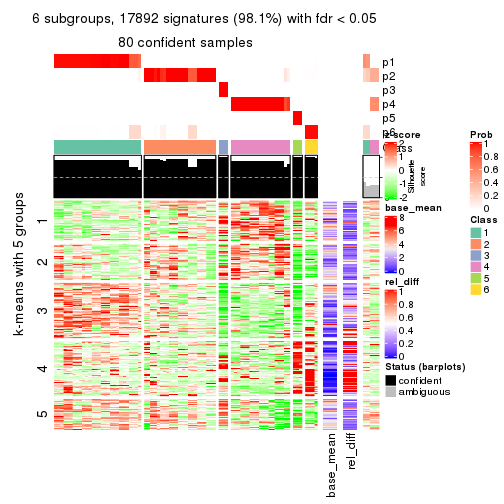
Signature heatmaps where rows are not scaled:
get_signatures(res, k = 2, scale_rows = FALSE)
get_signatures(res, k = 3, scale_rows = FALSE)
get_signatures(res, k = 4, scale_rows = FALSE)
get_signatures(res, k = 5, scale_rows = FALSE)
get_signatures(res, k = 6, scale_rows = FALSE)
Compare the overlap of signatures from different k:
compare_signatures(res)
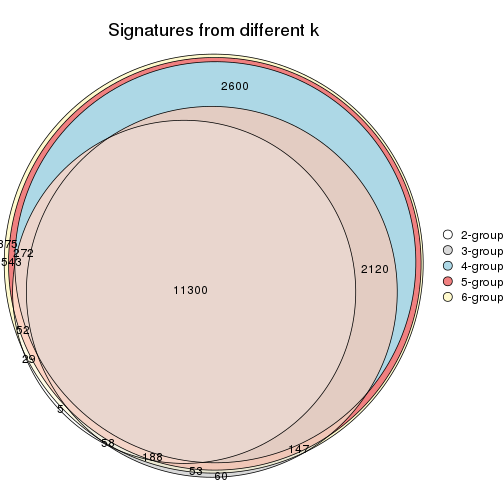
get_signature() returns a data frame invisibly. TO get the list of signatures, the function
call should be assigned to a variable explicitly. In following code, if plot argument is set
to FALSE, no heatmap is plotted while only the differential analysis is performed.
# code only for demonstration
tb = get_signature(res, k = ..., plot = FALSE)
An example of the output of tb is:
#> which_row fdr mean_1 mean_2 scaled_mean_1 scaled_mean_2 km
#> 1 38 0.042760348 8.373488 9.131774 -0.5533452 0.5164555 1
#> 2 40 0.018707592 7.106213 8.469186 -0.6173731 0.5762149 1
#> 3 55 0.019134737 10.221463 11.207825 -0.6159697 0.5749050 1
#> 4 59 0.006059896 5.921854 7.869574 -0.6899429 0.6439467 1
#> 5 60 0.018055526 8.928898 10.211722 -0.6204761 0.5791110 1
#> 6 98 0.009384629 15.714769 14.887706 0.6635654 -0.6193277 2
...
The columns in tb are:
which_row: row indices corresponding to the input matrix.fdr: FDR for the differential test. mean_x: The mean value in group x.scaled_mean_x: The mean value in group x after rows are scaled.km: Row groups if k-means clustering is applied to rows.UMAP plot which shows how samples are separated.
dimension_reduction(res, k = 2, method = "UMAP")
dimension_reduction(res, k = 3, method = "UMAP")
dimension_reduction(res, k = 4, method = "UMAP")
dimension_reduction(res, k = 5, method = "UMAP")
dimension_reduction(res, k = 6, method = "UMAP")
Following heatmap shows how subgroups are split when increasing k:
collect_classes(res)
If matrix rows can be associated to genes, consider to use GO_Enrichment(res,
...) to perform function enrichment for the signature genes.
The object with results only for a single top-value method and a single partition method can be extracted as:
res = res_list["ATC", "mclust"]
# you can also extract it by
# res = res_list["ATC:mclust"]
A summary of res and all the functions that can be applied to it:
res
#> A 'ConsensusPartition' object with k = 2, 3, 4, 5, 6.
#> On a matrix with 18243 rows and 85 columns.
#> Top rows (1000, 2000, 3000, 4000, 5000) are extracted by 'ATC' method.
#> Subgroups are detected by 'mclust' method.
#> Performed in total 1250 partitions by row resampling.
#> Best k for subgroups seems to be 2.
#>
#> Following methods can be applied to this 'ConsensusPartition' object:
#> [1] "cola_report" "collect_classes" "collect_plots"
#> [4] "collect_stats" "colnames" "compare_signatures"
#> [7] "consensus_heatmap" "dimension_reduction" "functional_enrichment"
#> [10] "get_anno_col" "get_anno" "get_classes"
#> [13] "get_consensus" "get_matrix" "get_membership"
#> [16] "get_param" "get_signatures" "get_stats"
#> [19] "is_best_k" "is_stable_k" "membership_heatmap"
#> [22] "ncol" "nrow" "plot_ecdf"
#> [25] "rownames" "select_partition_number" "show"
#> [28] "suggest_best_k" "test_to_known_factors"
collect_plots() function collects all the plots made from res for all k (number of partitions)
into one single page to provide an easy and fast comparison between different k.
collect_plots(res)
The plots are:
k and the heatmap of
predicted classes for each k.k.k.k.All the plots in panels can be made by individual functions and they are plotted later in this section.
select_partition_number() produces several plots showing different
statistics for choosing “optimized” k. There are following statistics:
k;k, the area increased is defined as \(A_k - A_{k-1}\).The detailed explanations of these statistics can be found in the cola vignette.
Generally speaking, lower PAC score, higher mean silhouette score or higher
concordance corresponds to better partition. Rand index and Jaccard index
measure how similar the current partition is compared to partition with k-1.
If they are too similar, we won't accept k is better than k-1.
select_partition_number(res)
The numeric values for all these statistics can be obtained by get_stats().
get_stats(res)
#> k 1-PAC mean_silhouette concordance area_increased Rand Jaccard
#> 2 2 0.551 0.871 0.920 0.4794 0.497 0.497
#> 3 3 0.460 0.730 0.857 0.1876 0.835 0.696
#> 4 4 0.566 0.726 0.826 0.1725 0.813 0.614
#> 5 5 0.578 0.726 0.808 0.0911 0.860 0.631
#> 6 6 0.687 0.811 0.853 0.0481 0.986 0.945
suggest_best_k() suggests the best \(k\) based on these statistics. The rules are as follows:
NA.suggest_best_k(res)
#> [1] 2
Following shows the table of the partitions (You need to click the show/hide
code output link to see it). The membership matrix (columns with name p*)
is inferred by
clue::cl_consensus()
function with the SE method. Basically the value in the membership matrix
represents the probability to belong to a certain group. The finall class
label for an item is determined with the group with highest probability it
belongs to.
In get_classes() function, the entropy is calculated from the membership
matrix and the silhouette score is calculated from the consensus matrix.
cbind(get_classes(res, k = 2), get_membership(res, k = 2))
#> class entropy silhouette p1 p2
#> ERR532547 2 0.6438 0.873 0.164 0.836
#> ERR532548 2 0.6148 0.875 0.152 0.848
#> ERR532549 2 0.5294 0.877 0.120 0.880
#> ERR532576 1 0.0000 0.958 1.000 0.000
#> ERR532577 1 0.0000 0.958 1.000 0.000
#> ERR532578 1 0.0000 0.958 1.000 0.000
#> ERR532593 1 0.0000 0.958 1.000 0.000
#> ERR532594 1 0.0000 0.958 1.000 0.000
#> ERR532595 1 0.0000 0.958 1.000 0.000
#> ERR532596 2 0.6623 0.869 0.172 0.828
#> ERR532597 2 0.6623 0.869 0.172 0.828
#> ERR532598 2 0.6623 0.869 0.172 0.828
#> ERR532599 2 0.9998 0.298 0.492 0.508
#> ERR532600 1 0.9998 -0.279 0.508 0.492
#> ERR532601 2 1.0000 0.285 0.496 0.504
#> ERR532602 1 0.0000 0.958 1.000 0.000
#> ERR532603 1 0.0000 0.958 1.000 0.000
#> ERR532604 1 0.0000 0.958 1.000 0.000
#> ERR532605 1 0.0000 0.958 1.000 0.000
#> ERR532606 1 0.0000 0.958 1.000 0.000
#> ERR532607 1 0.0000 0.958 1.000 0.000
#> ERR532608 2 0.1843 0.859 0.028 0.972
#> ERR532609 2 0.1843 0.859 0.028 0.972
#> ERR532610 2 0.1843 0.859 0.028 0.972
#> ERR532611 1 0.0000 0.958 1.000 0.000
#> ERR532612 1 0.0000 0.958 1.000 0.000
#> ERR532613 1 0.0000 0.958 1.000 0.000
#> ERR532550 2 0.1843 0.859 0.028 0.972
#> ERR532551 1 0.0000 0.958 1.000 0.000
#> ERR532552 1 0.0000 0.958 1.000 0.000
#> ERR532553 1 0.0000 0.958 1.000 0.000
#> ERR532554 2 0.0938 0.865 0.012 0.988
#> ERR532555 2 0.0938 0.865 0.012 0.988
#> ERR532556 2 0.0938 0.865 0.012 0.988
#> ERR532557 1 0.2423 0.926 0.960 0.040
#> ERR532558 1 0.2423 0.926 0.960 0.040
#> ERR532559 1 0.2423 0.926 0.960 0.040
#> ERR532560 1 0.6343 0.811 0.840 0.160
#> ERR532561 1 0.6343 0.811 0.840 0.160
#> ERR532562 1 0.6343 0.811 0.840 0.160
#> ERR532563 2 0.6531 0.871 0.168 0.832
#> ERR532564 2 0.6343 0.874 0.160 0.840
#> ERR532565 2 0.6343 0.874 0.160 0.840
#> ERR532566 2 0.1843 0.859 0.028 0.972
#> ERR532567 2 0.1843 0.859 0.028 0.972
#> ERR532568 2 0.1843 0.859 0.028 0.972
#> ERR532569 1 0.0000 0.958 1.000 0.000
#> ERR532570 1 0.0000 0.958 1.000 0.000
#> ERR532571 1 0.0000 0.958 1.000 0.000
#> ERR532572 2 0.6712 0.866 0.176 0.824
#> ERR532573 2 0.6712 0.866 0.176 0.824
#> ERR532574 2 0.6712 0.866 0.176 0.824
#> ERR532575 1 0.0000 0.958 1.000 0.000
#> ERR532579 2 0.2043 0.873 0.032 0.968
#> ERR532580 2 0.2236 0.873 0.036 0.964
#> ERR532581 2 0.5629 0.879 0.132 0.868
#> ERR532582 2 0.6148 0.876 0.152 0.848
#> ERR532583 2 0.6343 0.874 0.160 0.840
#> ERR532584 1 0.1414 0.942 0.980 0.020
#> ERR532585 1 0.1414 0.942 0.980 0.020
#> ERR532586 1 0.1414 0.942 0.980 0.020
#> ERR532587 2 0.6712 0.866 0.176 0.824
#> ERR532588 2 0.6712 0.866 0.176 0.824
#> ERR532589 1 0.0376 0.955 0.996 0.004
#> ERR532590 1 0.0000 0.958 1.000 0.000
#> ERR532591 2 0.0000 0.858 0.000 1.000
#> ERR532592 2 0.0000 0.858 0.000 1.000
#> ERR532439 2 0.9000 0.707 0.316 0.684
#> ERR532440 2 0.9000 0.707 0.316 0.684
#> ERR532441 2 0.9087 0.694 0.324 0.676
#> ERR532442 1 0.0000 0.958 1.000 0.000
#> ERR532443 1 0.0000 0.958 1.000 0.000
#> ERR532444 1 0.0000 0.958 1.000 0.000
#> ERR532445 1 0.6048 0.822 0.852 0.148
#> ERR532446 1 0.6048 0.822 0.852 0.148
#> ERR532447 1 0.6048 0.822 0.852 0.148
#> ERR532433 1 0.0000 0.958 1.000 0.000
#> ERR532434 1 0.0000 0.958 1.000 0.000
#> ERR532435 1 0.0000 0.958 1.000 0.000
#> ERR532436 1 0.0000 0.958 1.000 0.000
#> ERR532437 1 0.0000 0.958 1.000 0.000
#> ERR532438 1 0.0000 0.958 1.000 0.000
#> ERR532614 2 0.3114 0.877 0.056 0.944
#> ERR532615 2 0.3114 0.877 0.056 0.944
#> ERR532616 2 0.3114 0.877 0.056 0.944
cbind(get_classes(res, k = 3), get_membership(res, k = 3))
#> class entropy silhouette p1 p2 p3
#> ERR532547 1 0.6295 0.246 0.528 0.472 0.000
#> ERR532548 1 0.6295 0.246 0.528 0.472 0.000
#> ERR532549 1 0.6295 0.246 0.528 0.472 0.000
#> ERR532576 1 0.4178 0.807 0.828 0.172 0.000
#> ERR532577 1 0.4121 0.809 0.832 0.168 0.000
#> ERR532578 1 0.4121 0.809 0.832 0.168 0.000
#> ERR532593 1 0.0592 0.808 0.988 0.012 0.000
#> ERR532594 1 0.0592 0.808 0.988 0.012 0.000
#> ERR532595 1 0.0592 0.808 0.988 0.012 0.000
#> ERR532596 2 0.0592 0.798 0.012 0.988 0.000
#> ERR532597 2 0.0592 0.798 0.012 0.988 0.000
#> ERR532598 2 0.0592 0.798 0.012 0.988 0.000
#> ERR532599 2 0.5560 0.491 0.300 0.700 0.000
#> ERR532600 2 0.5560 0.491 0.300 0.700 0.000
#> ERR532601 2 0.5560 0.491 0.300 0.700 0.000
#> ERR532602 1 0.0237 0.815 0.996 0.004 0.000
#> ERR532603 1 0.0237 0.815 0.996 0.004 0.000
#> ERR532604 1 0.0237 0.815 0.996 0.004 0.000
#> ERR532605 1 0.0424 0.816 0.992 0.008 0.000
#> ERR532606 1 0.0424 0.816 0.992 0.008 0.000
#> ERR532607 1 0.0424 0.816 0.992 0.008 0.000
#> ERR532608 3 0.0747 0.904 0.016 0.000 0.984
#> ERR532609 3 0.0747 0.904 0.016 0.000 0.984
#> ERR532610 3 0.0747 0.904 0.016 0.000 0.984
#> ERR532611 1 0.0892 0.818 0.980 0.020 0.000
#> ERR532612 1 0.0892 0.818 0.980 0.020 0.000
#> ERR532613 1 0.0892 0.818 0.980 0.020 0.000
#> ERR532550 3 0.0747 0.904 0.016 0.000 0.984
#> ERR532551 1 0.4750 0.781 0.784 0.216 0.000
#> ERR532552 1 0.4750 0.781 0.784 0.216 0.000
#> ERR532553 1 0.4750 0.781 0.784 0.216 0.000
#> ERR532554 2 0.4978 0.462 0.004 0.780 0.216
#> ERR532555 2 0.4978 0.462 0.004 0.780 0.216
#> ERR532556 2 0.4978 0.462 0.004 0.780 0.216
#> ERR532557 1 0.6079 0.547 0.612 0.388 0.000
#> ERR532558 1 0.6079 0.547 0.612 0.388 0.000
#> ERR532559 1 0.6079 0.547 0.612 0.388 0.000
#> ERR532560 1 0.5122 0.737 0.788 0.012 0.200
#> ERR532561 1 0.5122 0.737 0.788 0.012 0.200
#> ERR532562 1 0.5122 0.737 0.788 0.012 0.200
#> ERR532563 2 0.0592 0.798 0.012 0.988 0.000
#> ERR532564 2 0.0592 0.798 0.012 0.988 0.000
#> ERR532565 2 0.0592 0.798 0.012 0.988 0.000
#> ERR532566 3 0.0000 0.903 0.000 0.000 1.000
#> ERR532567 3 0.0000 0.903 0.000 0.000 1.000
#> ERR532568 3 0.0000 0.903 0.000 0.000 1.000
#> ERR532569 1 0.0237 0.812 0.996 0.000 0.004
#> ERR532570 1 0.0237 0.812 0.996 0.000 0.004
#> ERR532571 1 0.0237 0.812 0.996 0.000 0.004
#> ERR532572 2 0.0592 0.798 0.012 0.988 0.000
#> ERR532573 2 0.0592 0.798 0.012 0.988 0.000
#> ERR532574 2 0.0592 0.798 0.012 0.988 0.000
#> ERR532575 1 0.4605 0.790 0.796 0.204 0.000
#> ERR532579 3 0.5896 0.629 0.008 0.292 0.700
#> ERR532580 3 0.5896 0.629 0.008 0.292 0.700
#> ERR532581 2 0.0000 0.790 0.000 1.000 0.000
#> ERR532582 2 0.0000 0.790 0.000 1.000 0.000
#> ERR532583 2 0.0000 0.790 0.000 1.000 0.000
#> ERR532584 1 0.4842 0.775 0.776 0.224 0.000
#> ERR532585 1 0.4842 0.775 0.776 0.224 0.000
#> ERR532586 1 0.4887 0.772 0.772 0.228 0.000
#> ERR532587 2 0.0829 0.797 0.012 0.984 0.004
#> ERR532588 2 0.0829 0.797 0.012 0.984 0.004
#> ERR532589 1 0.5621 0.683 0.692 0.308 0.000
#> ERR532590 1 0.5591 0.688 0.696 0.304 0.000
#> ERR532591 3 0.3038 0.864 0.000 0.104 0.896
#> ERR532592 3 0.3038 0.864 0.000 0.104 0.896
#> ERR532439 2 0.6126 0.359 0.352 0.644 0.004
#> ERR532440 2 0.6126 0.359 0.352 0.644 0.004
#> ERR532441 2 0.6169 0.336 0.360 0.636 0.004
#> ERR532442 1 0.0000 0.814 1.000 0.000 0.000
#> ERR532443 1 0.0000 0.814 1.000 0.000 0.000
#> ERR532444 1 0.0000 0.814 1.000 0.000 0.000
#> ERR532445 1 0.4692 0.758 0.820 0.012 0.168
#> ERR532446 1 0.4692 0.758 0.820 0.012 0.168
#> ERR532447 1 0.4692 0.758 0.820 0.012 0.168
#> ERR532433 1 0.4121 0.809 0.832 0.168 0.000
#> ERR532434 1 0.4121 0.809 0.832 0.168 0.000
#> ERR532435 1 0.4121 0.809 0.832 0.168 0.000
#> ERR532436 1 0.4178 0.807 0.828 0.172 0.000
#> ERR532437 1 0.4178 0.807 0.828 0.172 0.000
#> ERR532438 1 0.4235 0.805 0.824 0.176 0.000
#> ERR532614 2 0.5167 0.681 0.172 0.804 0.024
#> ERR532615 2 0.5167 0.681 0.172 0.804 0.024
#> ERR532616 2 0.5167 0.681 0.172 0.804 0.024
cbind(get_classes(res, k = 4), get_membership(res, k = 4))
#> class entropy silhouette p1 p2 p3 p4
#> ERR532547 2 0.5568 0.641 0.024 0.704 0.248 0.024
#> ERR532548 2 0.5568 0.641 0.024 0.704 0.248 0.024
#> ERR532549 2 0.5568 0.641 0.024 0.704 0.248 0.024
#> ERR532576 1 0.2466 0.850 0.900 0.096 0.004 0.000
#> ERR532577 1 0.2466 0.850 0.900 0.096 0.004 0.000
#> ERR532578 1 0.2466 0.850 0.900 0.096 0.004 0.000
#> ERR532593 1 0.1174 0.868 0.968 0.000 0.012 0.020
#> ERR532594 1 0.1174 0.868 0.968 0.000 0.012 0.020
#> ERR532595 1 0.1174 0.868 0.968 0.000 0.012 0.020
#> ERR532596 2 0.0707 0.700 0.000 0.980 0.000 0.020
#> ERR532597 2 0.0707 0.700 0.000 0.980 0.000 0.020
#> ERR532598 2 0.0707 0.700 0.000 0.980 0.000 0.020
#> ERR532599 2 0.2828 0.700 0.032 0.912 0.020 0.036
#> ERR532600 2 0.2828 0.700 0.032 0.912 0.020 0.036
#> ERR532601 2 0.2828 0.700 0.032 0.912 0.020 0.036
#> ERR532602 1 0.0376 0.878 0.992 0.004 0.000 0.004
#> ERR532603 1 0.0376 0.878 0.992 0.004 0.000 0.004
#> ERR532604 1 0.0376 0.878 0.992 0.004 0.000 0.004
#> ERR532605 1 0.0592 0.876 0.984 0.000 0.016 0.000
#> ERR532606 1 0.0592 0.876 0.984 0.000 0.016 0.000
#> ERR532607 1 0.0592 0.876 0.984 0.000 0.016 0.000
#> ERR532608 3 0.3649 0.981 0.000 0.000 0.796 0.204
#> ERR532609 3 0.3610 0.982 0.000 0.000 0.800 0.200
#> ERR532610 3 0.3610 0.982 0.000 0.000 0.800 0.200
#> ERR532611 1 0.0779 0.877 0.980 0.016 0.004 0.000
#> ERR532612 1 0.0779 0.877 0.980 0.016 0.004 0.000
#> ERR532613 1 0.0779 0.877 0.980 0.016 0.004 0.000
#> ERR532550 3 0.3933 0.976 0.008 0.000 0.792 0.200
#> ERR532551 1 0.6892 0.481 0.604 0.240 0.152 0.004
#> ERR532552 1 0.6892 0.481 0.604 0.240 0.152 0.004
#> ERR532553 1 0.6892 0.481 0.604 0.240 0.152 0.004
#> ERR532554 4 0.3074 0.811 0.000 0.152 0.000 0.848
#> ERR532555 4 0.3074 0.811 0.000 0.152 0.000 0.848
#> ERR532556 4 0.3074 0.811 0.000 0.152 0.000 0.848
#> ERR532557 2 0.7463 0.173 0.384 0.440 0.176 0.000
#> ERR532558 2 0.7463 0.173 0.384 0.440 0.176 0.000
#> ERR532559 2 0.7458 0.184 0.380 0.444 0.176 0.000
#> ERR532560 1 0.5440 0.716 0.736 0.000 0.104 0.160
#> ERR532561 1 0.5440 0.716 0.736 0.000 0.104 0.160
#> ERR532562 1 0.5440 0.716 0.736 0.000 0.104 0.160
#> ERR532563 2 0.5257 0.611 0.000 0.752 0.104 0.144
#> ERR532564 2 0.5361 0.609 0.000 0.744 0.108 0.148
#> ERR532565 2 0.5361 0.609 0.000 0.744 0.108 0.148
#> ERR532566 3 0.3569 0.980 0.000 0.000 0.804 0.196
#> ERR532567 3 0.3569 0.980 0.000 0.000 0.804 0.196
#> ERR532568 3 0.3569 0.980 0.000 0.000 0.804 0.196
#> ERR532569 1 0.0657 0.875 0.984 0.000 0.004 0.012
#> ERR532570 1 0.0376 0.877 0.992 0.000 0.004 0.004
#> ERR532571 1 0.0779 0.874 0.980 0.000 0.004 0.016
#> ERR532572 2 0.1792 0.689 0.000 0.932 0.000 0.068
#> ERR532573 2 0.1792 0.689 0.000 0.932 0.000 0.068
#> ERR532574 2 0.1940 0.685 0.000 0.924 0.000 0.076
#> ERR532575 1 0.3718 0.790 0.820 0.168 0.012 0.000
#> ERR532579 4 0.1584 0.833 0.000 0.012 0.036 0.952
#> ERR532580 4 0.1584 0.833 0.000 0.012 0.036 0.952
#> ERR532581 2 0.3907 0.509 0.000 0.768 0.000 0.232
#> ERR532582 2 0.3873 0.513 0.000 0.772 0.000 0.228
#> ERR532583 2 0.3907 0.509 0.000 0.768 0.000 0.232
#> ERR532584 2 0.7591 0.191 0.376 0.448 0.172 0.004
#> ERR532585 2 0.7591 0.191 0.376 0.448 0.172 0.004
#> ERR532586 2 0.7591 0.191 0.376 0.448 0.172 0.004
#> ERR532587 2 0.0524 0.703 0.004 0.988 0.000 0.008
#> ERR532588 2 0.0524 0.703 0.004 0.988 0.000 0.008
#> ERR532589 1 0.6084 0.593 0.660 0.244 0.096 0.000
#> ERR532590 1 0.6027 0.598 0.664 0.244 0.092 0.000
#> ERR532591 4 0.1389 0.816 0.000 0.000 0.048 0.952
#> ERR532592 4 0.1389 0.816 0.000 0.000 0.048 0.952
#> ERR532439 2 0.5150 0.671 0.024 0.764 0.180 0.032
#> ERR532440 2 0.4747 0.669 0.024 0.780 0.180 0.016
#> ERR532441 2 0.4726 0.670 0.024 0.788 0.168 0.020
#> ERR532442 1 0.0336 0.877 0.992 0.000 0.008 0.000
#> ERR532443 1 0.0336 0.877 0.992 0.000 0.008 0.000
#> ERR532444 1 0.0336 0.877 0.992 0.000 0.008 0.000
#> ERR532445 1 0.3107 0.842 0.884 0.000 0.080 0.036
#> ERR532446 1 0.3107 0.842 0.884 0.000 0.080 0.036
#> ERR532447 1 0.3107 0.842 0.884 0.000 0.080 0.036
#> ERR532433 1 0.2197 0.857 0.916 0.080 0.004 0.000
#> ERR532434 1 0.2266 0.855 0.912 0.084 0.004 0.000
#> ERR532435 1 0.2197 0.857 0.916 0.080 0.004 0.000
#> ERR532436 1 0.3208 0.814 0.848 0.148 0.004 0.000
#> ERR532437 1 0.3208 0.814 0.848 0.148 0.004 0.000
#> ERR532438 1 0.3208 0.814 0.848 0.148 0.004 0.000
#> ERR532614 2 0.5690 0.536 0.000 0.708 0.196 0.096
#> ERR532615 2 0.5690 0.536 0.000 0.708 0.196 0.096
#> ERR532616 2 0.5690 0.536 0.000 0.708 0.196 0.096
cbind(get_classes(res, k = 5), get_membership(res, k = 5))
#> class entropy silhouette p1 p2 p3 p4 p5
#> ERR532547 2 0.6487 0.4074 0.004 0.520 0.000 0.220 0.256
#> ERR532548 2 0.6487 0.4074 0.004 0.520 0.000 0.220 0.256
#> ERR532549 2 0.6487 0.4074 0.004 0.520 0.000 0.220 0.256
#> ERR532576 1 0.2448 0.8588 0.892 0.088 0.000 0.020 0.000
#> ERR532577 1 0.2293 0.8635 0.900 0.084 0.000 0.016 0.000
#> ERR532578 1 0.2351 0.8611 0.896 0.088 0.000 0.016 0.000
#> ERR532593 1 0.1830 0.8731 0.932 0.052 0.004 0.000 0.012
#> ERR532594 1 0.1830 0.8731 0.932 0.052 0.004 0.000 0.012
#> ERR532595 1 0.1830 0.8731 0.932 0.052 0.004 0.000 0.012
#> ERR532596 4 0.0162 0.7878 0.000 0.000 0.004 0.996 0.000
#> ERR532597 4 0.0162 0.7878 0.000 0.000 0.004 0.996 0.000
#> ERR532598 4 0.0162 0.7878 0.000 0.000 0.004 0.996 0.000
#> ERR532599 4 0.5341 0.6488 0.040 0.132 0.080 0.740 0.008
#> ERR532600 4 0.5341 0.6488 0.040 0.132 0.080 0.740 0.008
#> ERR532601 4 0.5341 0.6488 0.040 0.132 0.080 0.740 0.008
#> ERR532602 1 0.1282 0.8857 0.952 0.044 0.000 0.004 0.000
#> ERR532603 1 0.1282 0.8857 0.952 0.044 0.000 0.004 0.000
#> ERR532604 1 0.1282 0.8857 0.952 0.044 0.000 0.004 0.000
#> ERR532605 1 0.0566 0.8865 0.984 0.012 0.004 0.000 0.000
#> ERR532606 1 0.0404 0.8863 0.988 0.012 0.000 0.000 0.000
#> ERR532607 1 0.0404 0.8863 0.988 0.012 0.000 0.000 0.000
#> ERR532608 5 0.1753 0.9444 0.000 0.032 0.032 0.000 0.936
#> ERR532609 5 0.1753 0.9444 0.000 0.032 0.032 0.000 0.936
#> ERR532610 5 0.1753 0.9444 0.000 0.032 0.032 0.000 0.936
#> ERR532611 1 0.1117 0.8850 0.964 0.016 0.000 0.020 0.000
#> ERR532612 1 0.1117 0.8850 0.964 0.016 0.000 0.020 0.000
#> ERR532613 1 0.1117 0.8850 0.964 0.016 0.000 0.020 0.000
#> ERR532550 5 0.2067 0.9347 0.012 0.028 0.032 0.000 0.928
#> ERR532551 2 0.6375 0.4964 0.320 0.512 0.004 0.164 0.000
#> ERR532552 2 0.6375 0.4964 0.320 0.512 0.004 0.164 0.000
#> ERR532553 2 0.6375 0.4964 0.320 0.512 0.004 0.164 0.000
#> ERR532554 3 0.0880 0.9908 0.000 0.000 0.968 0.032 0.000
#> ERR532555 3 0.0880 0.9908 0.000 0.000 0.968 0.032 0.000
#> ERR532556 3 0.0880 0.9908 0.000 0.000 0.968 0.032 0.000
#> ERR532557 2 0.7570 0.4495 0.216 0.460 0.044 0.272 0.008
#> ERR532558 2 0.7576 0.4496 0.220 0.460 0.044 0.268 0.008
#> ERR532559 2 0.7557 0.4473 0.208 0.460 0.044 0.280 0.008
#> ERR532560 1 0.6057 0.5670 0.620 0.072 0.044 0.000 0.264
#> ERR532561 1 0.6057 0.5670 0.620 0.072 0.044 0.000 0.264
#> ERR532562 1 0.6057 0.5670 0.620 0.072 0.044 0.000 0.264
#> ERR532563 4 0.4075 0.6689 0.000 0.160 0.060 0.780 0.000
#> ERR532564 4 0.4075 0.6689 0.000 0.160 0.060 0.780 0.000
#> ERR532565 4 0.4075 0.6689 0.000 0.160 0.060 0.780 0.000
#> ERR532566 5 0.1270 0.9301 0.000 0.052 0.000 0.000 0.948
#> ERR532567 5 0.1270 0.9301 0.000 0.052 0.000 0.000 0.948
#> ERR532568 5 0.1270 0.9301 0.000 0.052 0.000 0.000 0.948
#> ERR532569 1 0.0703 0.8845 0.976 0.024 0.000 0.000 0.000
#> ERR532570 1 0.0703 0.8845 0.976 0.024 0.000 0.000 0.000
#> ERR532571 1 0.0703 0.8845 0.976 0.024 0.000 0.000 0.000
#> ERR532572 4 0.3535 0.7422 0.000 0.088 0.080 0.832 0.000
#> ERR532573 4 0.3535 0.7422 0.000 0.088 0.080 0.832 0.000
#> ERR532574 4 0.3535 0.7422 0.000 0.088 0.080 0.832 0.000
#> ERR532575 1 0.5117 0.5254 0.672 0.240 0.000 0.088 0.000
#> ERR532579 3 0.0865 0.9920 0.000 0.004 0.972 0.024 0.000
#> ERR532580 3 0.0865 0.9920 0.000 0.004 0.972 0.024 0.000
#> ERR532581 4 0.3039 0.7024 0.000 0.000 0.192 0.808 0.000
#> ERR532582 4 0.3039 0.7024 0.000 0.000 0.192 0.808 0.000
#> ERR532583 4 0.3039 0.7024 0.000 0.000 0.192 0.808 0.000
#> ERR532584 2 0.6993 0.5155 0.116 0.588 0.076 0.212 0.008
#> ERR532585 2 0.6993 0.5155 0.116 0.588 0.076 0.212 0.008
#> ERR532586 2 0.6993 0.5155 0.116 0.588 0.076 0.212 0.008
#> ERR532587 4 0.0451 0.7877 0.000 0.008 0.004 0.988 0.000
#> ERR532588 4 0.0451 0.7877 0.000 0.008 0.004 0.988 0.000
#> ERR532589 2 0.6711 0.4839 0.336 0.444 0.004 0.216 0.000
#> ERR532590 2 0.6717 0.4769 0.340 0.440 0.004 0.216 0.000
#> ERR532591 3 0.1026 0.9905 0.000 0.004 0.968 0.024 0.004
#> ERR532592 3 0.1026 0.9905 0.000 0.004 0.968 0.024 0.004
#> ERR532439 2 0.4121 0.4327 0.004 0.720 0.012 0.264 0.000
#> ERR532440 2 0.4121 0.4327 0.004 0.720 0.012 0.264 0.000
#> ERR532441 2 0.4121 0.4327 0.004 0.720 0.012 0.264 0.000
#> ERR532442 1 0.0404 0.8863 0.988 0.012 0.000 0.000 0.000
#> ERR532443 1 0.0404 0.8863 0.988 0.012 0.000 0.000 0.000
#> ERR532444 1 0.0404 0.8863 0.988 0.012 0.000 0.000 0.000
#> ERR532445 1 0.4107 0.8251 0.820 0.068 0.036 0.000 0.076
#> ERR532446 1 0.4107 0.8251 0.820 0.068 0.036 0.000 0.076
#> ERR532447 1 0.4107 0.8251 0.820 0.068 0.036 0.000 0.076
#> ERR532433 1 0.1831 0.8709 0.920 0.076 0.000 0.004 0.000
#> ERR532434 1 0.1831 0.8709 0.920 0.076 0.000 0.004 0.000
#> ERR532435 1 0.1831 0.8709 0.920 0.076 0.000 0.004 0.000
#> ERR532436 1 0.3497 0.8117 0.836 0.112 0.004 0.048 0.000
#> ERR532437 1 0.3616 0.8033 0.828 0.116 0.004 0.052 0.000
#> ERR532438 1 0.3684 0.7991 0.824 0.116 0.004 0.056 0.000
#> ERR532614 2 0.7000 -0.0195 0.004 0.396 0.004 0.256 0.340
#> ERR532615 2 0.7000 -0.0195 0.004 0.396 0.004 0.256 0.340
#> ERR532616 2 0.7000 -0.0195 0.004 0.396 0.004 0.256 0.340
cbind(get_classes(res, k = 6), get_membership(res, k = 6))
#> class entropy silhouette p1 p2 p3 p4 p5 p6
#> ERR532547 2 0.2890 0.780 0.004 0.856 0.004 0.108 0.028 0.000
#> ERR532548 2 0.2890 0.780 0.004 0.856 0.004 0.108 0.028 0.000
#> ERR532549 2 0.2890 0.780 0.004 0.856 0.004 0.108 0.028 0.000
#> ERR532576 1 0.2100 0.829 0.884 0.112 0.000 0.004 0.000 0.000
#> ERR532577 1 0.2100 0.829 0.884 0.112 0.000 0.004 0.000 0.000
#> ERR532578 1 0.2100 0.829 0.884 0.112 0.000 0.004 0.000 0.000
#> ERR532593 1 0.0858 0.851 0.968 0.004 0.028 0.000 0.000 0.000
#> ERR532594 1 0.0858 0.851 0.968 0.004 0.028 0.000 0.000 0.000
#> ERR532595 1 0.0858 0.851 0.968 0.004 0.028 0.000 0.000 0.000
#> ERR532596 4 0.0458 0.843 0.000 0.016 0.000 0.984 0.000 0.000
#> ERR532597 4 0.0458 0.843 0.000 0.016 0.000 0.984 0.000 0.000
#> ERR532598 4 0.0458 0.843 0.000 0.016 0.000 0.984 0.000 0.000
#> ERR532599 4 0.3351 0.792 0.036 0.152 0.000 0.808 0.004 0.000
#> ERR532600 4 0.3351 0.792 0.036 0.152 0.000 0.808 0.004 0.000
#> ERR532601 4 0.3351 0.792 0.036 0.152 0.000 0.808 0.004 0.000
#> ERR532602 1 0.1261 0.854 0.952 0.024 0.024 0.000 0.000 0.000
#> ERR532603 1 0.1176 0.854 0.956 0.020 0.024 0.000 0.000 0.000
#> ERR532604 1 0.1176 0.854 0.956 0.020 0.024 0.000 0.000 0.000
#> ERR532605 1 0.0909 0.852 0.968 0.020 0.012 0.000 0.000 0.000
#> ERR532606 1 0.0909 0.852 0.968 0.020 0.012 0.000 0.000 0.000
#> ERR532607 1 0.0909 0.852 0.968 0.020 0.012 0.000 0.000 0.000
#> ERR532608 5 0.3388 0.863 0.000 0.036 0.156 0.000 0.804 0.004
#> ERR532609 5 0.3388 0.863 0.000 0.036 0.156 0.000 0.804 0.004
#> ERR532610 5 0.3388 0.863 0.000 0.036 0.156 0.000 0.804 0.004
#> ERR532611 1 0.1411 0.850 0.936 0.060 0.000 0.004 0.000 0.000
#> ERR532612 1 0.1411 0.850 0.936 0.060 0.000 0.004 0.000 0.000
#> ERR532613 1 0.1411 0.850 0.936 0.060 0.000 0.004 0.000 0.000
#> ERR532550 5 0.3388 0.863 0.000 0.036 0.156 0.000 0.804 0.004
#> ERR532551 2 0.3939 0.759 0.160 0.776 0.020 0.044 0.000 0.000
#> ERR532552 2 0.3939 0.759 0.160 0.776 0.020 0.044 0.000 0.000
#> ERR532553 2 0.3939 0.759 0.160 0.776 0.020 0.044 0.000 0.000
#> ERR532554 6 0.0547 0.958 0.000 0.000 0.000 0.020 0.000 0.980
#> ERR532555 6 0.0547 0.958 0.000 0.000 0.000 0.020 0.000 0.980
#> ERR532556 6 0.0547 0.958 0.000 0.000 0.000 0.020 0.000 0.980
#> ERR532557 2 0.3806 0.789 0.080 0.796 0.000 0.112 0.000 0.012
#> ERR532558 2 0.3806 0.789 0.080 0.796 0.000 0.112 0.000 0.012
#> ERR532559 2 0.3754 0.790 0.076 0.800 0.000 0.112 0.000 0.012
#> ERR532560 1 0.3862 0.610 0.608 0.000 0.388 0.000 0.000 0.004
#> ERR532561 1 0.3862 0.610 0.608 0.000 0.388 0.000 0.000 0.004
#> ERR532562 1 0.3862 0.610 0.608 0.000 0.388 0.000 0.000 0.004
#> ERR532563 4 0.2843 0.796 0.000 0.116 0.000 0.848 0.000 0.036
#> ERR532564 4 0.2843 0.796 0.000 0.116 0.000 0.848 0.000 0.036
#> ERR532565 4 0.2843 0.796 0.000 0.116 0.000 0.848 0.000 0.036
#> ERR532566 5 0.0000 0.804 0.000 0.000 0.000 0.000 1.000 0.000
#> ERR532567 5 0.0000 0.804 0.000 0.000 0.000 0.000 1.000 0.000
#> ERR532568 5 0.0000 0.804 0.000 0.000 0.000 0.000 1.000 0.000
#> ERR532569 1 0.0713 0.851 0.972 0.000 0.028 0.000 0.000 0.000
#> ERR532570 1 0.0713 0.851 0.972 0.000 0.028 0.000 0.000 0.000
#> ERR532571 1 0.0713 0.851 0.972 0.000 0.028 0.000 0.000 0.000
#> ERR532572 4 0.2462 0.829 0.004 0.132 0.000 0.860 0.000 0.004
#> ERR532573 4 0.2462 0.829 0.004 0.132 0.000 0.860 0.000 0.004
#> ERR532574 4 0.2462 0.829 0.004 0.132 0.000 0.860 0.000 0.004
#> ERR532575 1 0.4277 0.483 0.616 0.356 0.000 0.028 0.000 0.000
#> ERR532579 6 0.1285 0.968 0.000 0.004 0.000 0.052 0.000 0.944
#> ERR532580 6 0.1285 0.968 0.000 0.004 0.000 0.052 0.000 0.944
#> ERR532581 4 0.3364 0.735 0.000 0.024 0.000 0.780 0.000 0.196
#> ERR532582 4 0.3333 0.739 0.000 0.024 0.000 0.784 0.000 0.192
#> ERR532583 4 0.3333 0.739 0.000 0.024 0.000 0.784 0.000 0.192
#> ERR532584 2 0.2007 0.820 0.032 0.920 0.012 0.036 0.000 0.000
#> ERR532585 2 0.2007 0.820 0.032 0.920 0.012 0.036 0.000 0.000
#> ERR532586 2 0.2007 0.820 0.032 0.920 0.012 0.036 0.000 0.000
#> ERR532587 4 0.0713 0.844 0.000 0.028 0.000 0.972 0.000 0.000
#> ERR532588 4 0.0713 0.844 0.000 0.028 0.000 0.972 0.000 0.000
#> ERR532589 2 0.3683 0.733 0.192 0.764 0.000 0.044 0.000 0.000
#> ERR532590 2 0.3744 0.728 0.200 0.756 0.000 0.044 0.000 0.000
#> ERR532591 6 0.1285 0.968 0.000 0.004 0.000 0.052 0.000 0.944
#> ERR532592 6 0.1285 0.968 0.000 0.004 0.000 0.052 0.000 0.944
#> ERR532439 2 0.2738 0.771 0.000 0.820 0.000 0.176 0.004 0.000
#> ERR532440 2 0.2738 0.771 0.000 0.820 0.000 0.176 0.004 0.000
#> ERR532441 2 0.2668 0.776 0.000 0.828 0.000 0.168 0.004 0.000
#> ERR532442 1 0.0806 0.852 0.972 0.020 0.008 0.000 0.000 0.000
#> ERR532443 1 0.0806 0.852 0.972 0.020 0.008 0.000 0.000 0.000
#> ERR532444 1 0.0806 0.852 0.972 0.020 0.008 0.000 0.000 0.000
#> ERR532445 1 0.4644 0.576 0.564 0.012 0.400 0.000 0.000 0.024
#> ERR532446 1 0.4644 0.576 0.564 0.012 0.400 0.000 0.000 0.024
#> ERR532447 1 0.4644 0.576 0.564 0.012 0.400 0.000 0.000 0.024
#> ERR532433 1 0.2278 0.822 0.868 0.128 0.000 0.004 0.000 0.000
#> ERR532434 1 0.2362 0.818 0.860 0.136 0.000 0.004 0.000 0.000
#> ERR532435 1 0.2362 0.818 0.860 0.136 0.000 0.004 0.000 0.000
#> ERR532436 1 0.3541 0.699 0.728 0.260 0.000 0.012 0.000 0.000
#> ERR532437 1 0.3564 0.695 0.724 0.264 0.000 0.012 0.000 0.000
#> ERR532438 1 0.3629 0.695 0.724 0.260 0.000 0.016 0.000 0.000
#> ERR532614 3 0.6093 1.000 0.000 0.072 0.572 0.104 0.252 0.000
#> ERR532615 3 0.6093 1.000 0.000 0.072 0.572 0.104 0.252 0.000
#> ERR532616 3 0.6093 1.000 0.000 0.072 0.572 0.104 0.252 0.000
Heatmaps for the consensus matrix. It visualizes the probability of two samples to be in a same group.
consensus_heatmap(res, k = 2)
consensus_heatmap(res, k = 3)
consensus_heatmap(res, k = 4)
consensus_heatmap(res, k = 5)
consensus_heatmap(res, k = 6)
Heatmaps for the membership of samples in all partitions to see how consistent they are:
membership_heatmap(res, k = 2)
membership_heatmap(res, k = 3)
membership_heatmap(res, k = 4)
membership_heatmap(res, k = 5)
membership_heatmap(res, k = 6)
As soon as we have had the classes for columns, we can look for signatures which are significantly different between classes which can be candidate marks for certain classes. Following are the heatmaps for signatures.
Signature heatmaps where rows are scaled:
get_signatures(res, k = 2)
get_signatures(res, k = 3)
get_signatures(res, k = 4)
get_signatures(res, k = 5)
get_signatures(res, k = 6)
Signature heatmaps where rows are not scaled:
get_signatures(res, k = 2, scale_rows = FALSE)
get_signatures(res, k = 3, scale_rows = FALSE)
get_signatures(res, k = 4, scale_rows = FALSE)
get_signatures(res, k = 5, scale_rows = FALSE)
get_signatures(res, k = 6, scale_rows = FALSE)
Compare the overlap of signatures from different k:
compare_signatures(res)
get_signature() returns a data frame invisibly. TO get the list of signatures, the function
call should be assigned to a variable explicitly. In following code, if plot argument is set
to FALSE, no heatmap is plotted while only the differential analysis is performed.
# code only for demonstration
tb = get_signature(res, k = ..., plot = FALSE)
An example of the output of tb is:
#> which_row fdr mean_1 mean_2 scaled_mean_1 scaled_mean_2 km
#> 1 38 0.042760348 8.373488 9.131774 -0.5533452 0.5164555 1
#> 2 40 0.018707592 7.106213 8.469186 -0.6173731 0.5762149 1
#> 3 55 0.019134737 10.221463 11.207825 -0.6159697 0.5749050 1
#> 4 59 0.006059896 5.921854 7.869574 -0.6899429 0.6439467 1
#> 5 60 0.018055526 8.928898 10.211722 -0.6204761 0.5791110 1
#> 6 98 0.009384629 15.714769 14.887706 0.6635654 -0.6193277 2
...
The columns in tb are:
which_row: row indices corresponding to the input matrix.fdr: FDR for the differential test. mean_x: The mean value in group x.scaled_mean_x: The mean value in group x after rows are scaled.km: Row groups if k-means clustering is applied to rows.UMAP plot which shows how samples are separated.
dimension_reduction(res, k = 2, method = "UMAP")
dimension_reduction(res, k = 3, method = "UMAP")
dimension_reduction(res, k = 4, method = "UMAP")
dimension_reduction(res, k = 5, method = "UMAP")
dimension_reduction(res, k = 6, method = "UMAP")
Following heatmap shows how subgroups are split when increasing k:
collect_classes(res)
If matrix rows can be associated to genes, consider to use GO_Enrichment(res,
...) to perform function enrichment for the signature genes.
The object with results only for a single top-value method and a single partition method can be extracted as:
res = res_list["ATC", "NMF"]
# you can also extract it by
# res = res_list["ATC:NMF"]
A summary of res and all the functions that can be applied to it:
res
#> A 'ConsensusPartition' object with k = 2, 3, 4, 5, 6.
#> On a matrix with 18243 rows and 85 columns.
#> Top rows (1000, 2000, 3000, 4000, 5000) are extracted by 'ATC' method.
#> Subgroups are detected by 'NMF' method.
#> Performed in total 1250 partitions by row resampling.
#> Best k for subgroups seems to be 3.
#>
#> Following methods can be applied to this 'ConsensusPartition' object:
#> [1] "cola_report" "collect_classes" "collect_plots"
#> [4] "collect_stats" "colnames" "compare_signatures"
#> [7] "consensus_heatmap" "dimension_reduction" "functional_enrichment"
#> [10] "get_anno_col" "get_anno" "get_classes"
#> [13] "get_consensus" "get_matrix" "get_membership"
#> [16] "get_param" "get_signatures" "get_stats"
#> [19] "is_best_k" "is_stable_k" "membership_heatmap"
#> [22] "ncol" "nrow" "plot_ecdf"
#> [25] "rownames" "select_partition_number" "show"
#> [28] "suggest_best_k" "test_to_known_factors"
collect_plots() function collects all the plots made from res for all k (number of partitions)
into one single page to provide an easy and fast comparison between different k.
collect_plots(res)
The plots are:
k and the heatmap of
predicted classes for each k.k.k.k.All the plots in panels can be made by individual functions and they are plotted later in this section.
select_partition_number() produces several plots showing different
statistics for choosing “optimized” k. There are following statistics:
k;k, the area increased is defined as \(A_k - A_{k-1}\).The detailed explanations of these statistics can be found in the cola vignette.
Generally speaking, lower PAC score, higher mean silhouette score or higher
concordance corresponds to better partition. Rand index and Jaccard index
measure how similar the current partition is compared to partition with k-1.
If they are too similar, we won't accept k is better than k-1.
select_partition_number(res)
The numeric values for all these statistics can be obtained by get_stats().
get_stats(res)
#> k 1-PAC mean_silhouette concordance area_increased Rand Jaccard
#> 2 2 1.000 0.966 0.986 0.4863 0.519 0.519
#> 3 3 0.926 0.376 0.710 0.1972 0.765 0.565
#> 4 4 0.666 0.686 0.845 0.1359 0.746 0.456
#> 5 5 0.582 0.553 0.754 0.1065 0.889 0.695
#> 6 6 0.643 0.710 0.819 0.0675 0.896 0.644
suggest_best_k() suggests the best \(k\) based on these statistics. The rules are as follows:
NA.suggest_best_k(res)
#> [1] 3
#> attr(,"optional")
#> [1] 2
There is also optional best \(k\) = 2 that is worth to check.
Following shows the table of the partitions (You need to click the show/hide
code output link to see it). The membership matrix (columns with name p*)
is inferred by
clue::cl_consensus()
function with the SE method. Basically the value in the membership matrix
represents the probability to belong to a certain group. The finall class
label for an item is determined with the group with highest probability it
belongs to.
In get_classes() function, the entropy is calculated from the membership
matrix and the silhouette score is calculated from the consensus matrix.
cbind(get_classes(res, k = 2), get_membership(res, k = 2))
#> class entropy silhouette p1 p2
#> ERR532547 1 0.0000 0.977 1.000 0.000
#> ERR532548 1 0.0000 0.977 1.000 0.000
#> ERR532549 1 0.0000 0.977 1.000 0.000
#> ERR532576 1 0.0000 0.977 1.000 0.000
#> ERR532577 1 0.0000 0.977 1.000 0.000
#> ERR532578 1 0.0000 0.977 1.000 0.000
#> ERR532593 1 0.0000 0.977 1.000 0.000
#> ERR532594 1 0.0000 0.977 1.000 0.000
#> ERR532595 1 0.0000 0.977 1.000 0.000
#> ERR532596 2 0.0000 1.000 0.000 1.000
#> ERR532597 2 0.0000 1.000 0.000 1.000
#> ERR532598 2 0.0000 1.000 0.000 1.000
#> ERR532599 2 0.0000 1.000 0.000 1.000
#> ERR532600 2 0.0000 1.000 0.000 1.000
#> ERR532601 2 0.0000 1.000 0.000 1.000
#> ERR532602 1 0.0000 0.977 1.000 0.000
#> ERR532603 1 0.0000 0.977 1.000 0.000
#> ERR532604 1 0.0000 0.977 1.000 0.000
#> ERR532605 1 0.0000 0.977 1.000 0.000
#> ERR532606 1 0.0000 0.977 1.000 0.000
#> ERR532607 1 0.0000 0.977 1.000 0.000
#> ERR532608 1 0.0000 0.977 1.000 0.000
#> ERR532609 1 0.0000 0.977 1.000 0.000
#> ERR532610 1 0.0000 0.977 1.000 0.000
#> ERR532611 1 0.0000 0.977 1.000 0.000
#> ERR532612 1 0.0000 0.977 1.000 0.000
#> ERR532613 1 0.0000 0.977 1.000 0.000
#> ERR532550 1 0.0000 0.977 1.000 0.000
#> ERR532551 1 0.0000 0.977 1.000 0.000
#> ERR532552 1 0.0000 0.977 1.000 0.000
#> ERR532553 1 0.0000 0.977 1.000 0.000
#> ERR532554 2 0.0000 1.000 0.000 1.000
#> ERR532555 2 0.0000 1.000 0.000 1.000
#> ERR532556 2 0.0000 1.000 0.000 1.000
#> ERR532557 2 0.0000 1.000 0.000 1.000
#> ERR532558 2 0.0000 1.000 0.000 1.000
#> ERR532559 2 0.0000 1.000 0.000 1.000
#> ERR532560 1 0.0000 0.977 1.000 0.000
#> ERR532561 1 0.0000 0.977 1.000 0.000
#> ERR532562 1 0.0000 0.977 1.000 0.000
#> ERR532563 2 0.0000 1.000 0.000 1.000
#> ERR532564 2 0.0000 1.000 0.000 1.000
#> ERR532565 2 0.0000 1.000 0.000 1.000
#> ERR532566 1 0.0000 0.977 1.000 0.000
#> ERR532567 1 0.0000 0.977 1.000 0.000
#> ERR532568 1 0.0000 0.977 1.000 0.000
#> ERR532569 1 0.0000 0.977 1.000 0.000
#> ERR532570 1 0.0000 0.977 1.000 0.000
#> ERR532571 1 0.0000 0.977 1.000 0.000
#> ERR532572 2 0.0000 1.000 0.000 1.000
#> ERR532573 2 0.0000 1.000 0.000 1.000
#> ERR532574 2 0.0000 1.000 0.000 1.000
#> ERR532575 1 0.2778 0.932 0.952 0.048
#> ERR532579 2 0.0000 1.000 0.000 1.000
#> ERR532580 2 0.0000 1.000 0.000 1.000
#> ERR532581 2 0.0000 1.000 0.000 1.000
#> ERR532582 2 0.0000 1.000 0.000 1.000
#> ERR532583 2 0.0000 1.000 0.000 1.000
#> ERR532584 1 0.8555 0.620 0.720 0.280
#> ERR532585 1 0.9686 0.371 0.604 0.396
#> ERR532586 1 0.9815 0.307 0.580 0.420
#> ERR532587 2 0.0000 1.000 0.000 1.000
#> ERR532588 2 0.0000 1.000 0.000 1.000
#> ERR532589 1 0.0376 0.974 0.996 0.004
#> ERR532590 1 0.0000 0.977 1.000 0.000
#> ERR532591 2 0.0000 1.000 0.000 1.000
#> ERR532592 2 0.0000 1.000 0.000 1.000
#> ERR532439 2 0.0000 1.000 0.000 1.000
#> ERR532440 2 0.0000 1.000 0.000 1.000
#> ERR532441 2 0.0000 1.000 0.000 1.000
#> ERR532442 1 0.0000 0.977 1.000 0.000
#> ERR532443 1 0.0000 0.977 1.000 0.000
#> ERR532444 1 0.0000 0.977 1.000 0.000
#> ERR532445 1 0.0000 0.977 1.000 0.000
#> ERR532446 1 0.0000 0.977 1.000 0.000
#> ERR532447 1 0.0000 0.977 1.000 0.000
#> ERR532433 1 0.0000 0.977 1.000 0.000
#> ERR532434 1 0.0000 0.977 1.000 0.000
#> ERR532435 1 0.0000 0.977 1.000 0.000
#> ERR532436 1 0.0000 0.977 1.000 0.000
#> ERR532437 1 0.0000 0.977 1.000 0.000
#> ERR532438 1 0.0000 0.977 1.000 0.000
#> ERR532614 2 0.0000 1.000 0.000 1.000
#> ERR532615 2 0.0000 1.000 0.000 1.000
#> ERR532616 2 0.0000 1.000 0.000 1.000
cbind(get_classes(res, k = 3), get_membership(res, k = 3))
#> class entropy silhouette p1 p2 p3
#> ERR532547 3 0.1031 0.0414 0.024 0.000 0.976
#> ERR532548 3 0.0000 0.0547 0.000 0.000 1.000
#> ERR532549 3 0.1860 0.0727 0.052 0.000 0.948
#> ERR532576 1 0.6309 0.6147 0.500 0.000 0.500
#> ERR532577 3 0.6309 -0.6422 0.500 0.000 0.500
#> ERR532578 1 0.6309 0.6147 0.500 0.000 0.500
#> ERR532593 1 0.6309 0.6147 0.500 0.000 0.500
#> ERR532594 1 0.6309 0.6147 0.500 0.000 0.500
#> ERR532595 3 0.6309 -0.6422 0.500 0.000 0.500
#> ERR532596 2 0.0000 0.9988 0.000 1.000 0.000
#> ERR532597 2 0.0000 0.9988 0.000 1.000 0.000
#> ERR532598 2 0.0000 0.9988 0.000 1.000 0.000
#> ERR532599 2 0.0000 0.9988 0.000 1.000 0.000
#> ERR532600 2 0.0000 0.9988 0.000 1.000 0.000
#> ERR532601 2 0.0000 0.9988 0.000 1.000 0.000
#> ERR532602 3 0.6309 -0.6422 0.500 0.000 0.500
#> ERR532603 1 0.6309 0.6147 0.500 0.000 0.500
#> ERR532604 1 0.6309 0.6147 0.500 0.000 0.500
#> ERR532605 1 0.6309 0.6100 0.504 0.000 0.496
#> ERR532606 1 0.6309 0.6147 0.500 0.000 0.500
#> ERR532607 1 0.6309 0.6147 0.500 0.000 0.500
#> ERR532608 1 0.6299 -0.1614 0.524 0.000 0.476
#> ERR532609 1 0.6299 -0.1614 0.524 0.000 0.476
#> ERR532610 1 0.6299 -0.1614 0.524 0.000 0.476
#> ERR532611 3 0.6309 -0.6422 0.500 0.000 0.500
#> ERR532612 3 0.6309 -0.6422 0.500 0.000 0.500
#> ERR532613 3 0.6309 -0.6422 0.500 0.000 0.500
#> ERR532550 3 0.6308 -0.6057 0.492 0.000 0.508
#> ERR532551 1 0.6309 0.6147 0.500 0.000 0.500
#> ERR532552 1 0.6309 0.6147 0.500 0.000 0.500
#> ERR532553 3 0.6309 -0.6422 0.500 0.000 0.500
#> ERR532554 2 0.0000 0.9988 0.000 1.000 0.000
#> ERR532555 2 0.0000 0.9988 0.000 1.000 0.000
#> ERR532556 2 0.0000 0.9988 0.000 1.000 0.000
#> ERR532557 2 0.0237 0.9962 0.004 0.996 0.000
#> ERR532558 2 0.0237 0.9962 0.004 0.996 0.000
#> ERR532559 2 0.0237 0.9962 0.004 0.996 0.000
#> ERR532560 1 0.6309 0.6147 0.500 0.000 0.500
#> ERR532561 1 0.6309 0.6147 0.500 0.000 0.500
#> ERR532562 1 0.6309 0.6147 0.500 0.000 0.500
#> ERR532563 2 0.0000 0.9988 0.000 1.000 0.000
#> ERR532564 2 0.0000 0.9988 0.000 1.000 0.000
#> ERR532565 2 0.0000 0.9988 0.000 1.000 0.000
#> ERR532566 3 0.6305 0.1086 0.484 0.000 0.516
#> ERR532567 3 0.6305 0.1086 0.484 0.000 0.516
#> ERR532568 3 0.6305 0.1086 0.484 0.000 0.516
#> ERR532569 1 0.6309 0.6147 0.500 0.000 0.500
#> ERR532570 1 0.6309 0.6147 0.500 0.000 0.500
#> ERR532571 3 0.6309 -0.6422 0.500 0.000 0.500
#> ERR532572 2 0.0000 0.9988 0.000 1.000 0.000
#> ERR532573 2 0.0000 0.9988 0.000 1.000 0.000
#> ERR532574 2 0.0000 0.9988 0.000 1.000 0.000
#> ERR532575 1 0.6309 0.6100 0.504 0.000 0.496
#> ERR532579 2 0.0000 0.9988 0.000 1.000 0.000
#> ERR532580 2 0.0892 0.9760 0.000 0.980 0.020
#> ERR532581 2 0.0000 0.9988 0.000 1.000 0.000
#> ERR532582 2 0.0000 0.9988 0.000 1.000 0.000
#> ERR532583 2 0.0000 0.9988 0.000 1.000 0.000
#> ERR532584 3 0.7394 -0.5486 0.472 0.032 0.496
#> ERR532585 3 0.8124 -0.4559 0.436 0.068 0.496
#> ERR532586 3 0.8255 -0.4379 0.428 0.076 0.496
#> ERR532587 2 0.0000 0.9988 0.000 1.000 0.000
#> ERR532588 2 0.0000 0.9988 0.000 1.000 0.000
#> ERR532589 3 0.7075 -0.5784 0.484 0.020 0.496
#> ERR532590 1 0.6309 0.6100 0.504 0.000 0.496
#> ERR532591 2 0.0000 0.9988 0.000 1.000 0.000
#> ERR532592 2 0.0000 0.9988 0.000 1.000 0.000
#> ERR532439 2 0.0000 0.9988 0.000 1.000 0.000
#> ERR532440 2 0.0000 0.9988 0.000 1.000 0.000
#> ERR532441 2 0.0000 0.9988 0.000 1.000 0.000
#> ERR532442 3 0.6309 -0.6422 0.500 0.000 0.500
#> ERR532443 3 0.6309 -0.6422 0.500 0.000 0.500
#> ERR532444 3 0.6309 -0.6422 0.500 0.000 0.500
#> ERR532445 1 0.6309 0.6147 0.500 0.000 0.500
#> ERR532446 3 0.6309 -0.6422 0.500 0.000 0.500
#> ERR532447 3 0.6309 -0.6422 0.500 0.000 0.500
#> ERR532433 3 0.6309 -0.6422 0.500 0.000 0.500
#> ERR532434 1 0.6309 0.6147 0.500 0.000 0.500
#> ERR532435 1 0.6309 0.6147 0.500 0.000 0.500
#> ERR532436 1 0.6309 0.6100 0.504 0.000 0.496
#> ERR532437 1 0.6309 0.6100 0.504 0.000 0.496
#> ERR532438 1 0.6309 0.6100 0.504 0.000 0.496
#> ERR532614 3 0.8619 -0.3663 0.100 0.420 0.480
#> ERR532615 3 0.8608 -0.3561 0.100 0.412 0.488
#> ERR532616 3 0.8608 -0.3561 0.100 0.412 0.488
cbind(get_classes(res, k = 4), get_membership(res, k = 4))
#> class entropy silhouette p1 p2 p3 p4
#> ERR532547 2 0.6278 0.12403 0.408 0.532 0.060 0.000
#> ERR532548 2 0.6419 0.09242 0.420 0.512 0.068 0.000
#> ERR532549 2 0.6445 0.00227 0.444 0.488 0.068 0.000
#> ERR532576 1 0.1118 0.86602 0.964 0.036 0.000 0.000
#> ERR532577 1 0.1118 0.86602 0.964 0.036 0.000 0.000
#> ERR532578 1 0.1118 0.86602 0.964 0.036 0.000 0.000
#> ERR532593 1 0.2197 0.85940 0.928 0.024 0.048 0.000
#> ERR532594 1 0.2197 0.85940 0.928 0.024 0.048 0.000
#> ERR532595 1 0.2197 0.85940 0.928 0.024 0.048 0.000
#> ERR532596 4 0.3688 0.69401 0.000 0.208 0.000 0.792
#> ERR532597 4 0.3610 0.70127 0.000 0.200 0.000 0.800
#> ERR532598 4 0.3688 0.69401 0.000 0.208 0.000 0.792
#> ERR532599 2 0.2647 0.48966 0.000 0.880 0.000 0.120
#> ERR532600 2 0.2589 0.49118 0.000 0.884 0.000 0.116
#> ERR532601 2 0.2589 0.49118 0.000 0.884 0.000 0.116
#> ERR532602 1 0.0469 0.87208 0.988 0.000 0.012 0.000
#> ERR532603 1 0.0657 0.87216 0.984 0.004 0.012 0.000
#> ERR532604 1 0.0469 0.87208 0.988 0.000 0.012 0.000
#> ERR532605 1 0.1305 0.87087 0.960 0.036 0.004 0.000
#> ERR532606 1 0.1109 0.87147 0.968 0.028 0.004 0.000
#> ERR532607 1 0.1109 0.87147 0.968 0.028 0.004 0.000
#> ERR532608 3 0.2408 0.87029 0.104 0.000 0.896 0.000
#> ERR532609 3 0.2408 0.87029 0.104 0.000 0.896 0.000
#> ERR532610 3 0.2408 0.87029 0.104 0.000 0.896 0.000
#> ERR532611 1 0.0657 0.87104 0.984 0.012 0.004 0.000
#> ERR532612 1 0.0657 0.87104 0.984 0.012 0.004 0.000
#> ERR532613 1 0.0657 0.87104 0.984 0.012 0.004 0.000
#> ERR532550 1 0.5611 0.21510 0.564 0.024 0.412 0.000
#> ERR532551 1 0.4624 0.50469 0.660 0.340 0.000 0.000
#> ERR532552 1 0.4624 0.50469 0.660 0.340 0.000 0.000
#> ERR532553 1 0.4624 0.50469 0.660 0.340 0.000 0.000
#> ERR532554 4 0.0336 0.79928 0.000 0.008 0.000 0.992
#> ERR532555 4 0.0336 0.79928 0.000 0.008 0.000 0.992
#> ERR532556 4 0.0336 0.79928 0.000 0.008 0.000 0.992
#> ERR532557 4 0.3219 0.71533 0.020 0.112 0.000 0.868
#> ERR532558 4 0.3160 0.71890 0.020 0.108 0.000 0.872
#> ERR532559 4 0.3099 0.72266 0.020 0.104 0.000 0.876
#> ERR532560 1 0.2385 0.85620 0.920 0.028 0.052 0.000
#> ERR532561 1 0.2385 0.85620 0.920 0.028 0.052 0.000
#> ERR532562 1 0.2385 0.85620 0.920 0.028 0.052 0.000
#> ERR532563 4 0.0707 0.79660 0.000 0.020 0.000 0.980
#> ERR532564 4 0.0707 0.79660 0.000 0.020 0.000 0.980
#> ERR532565 4 0.0707 0.79660 0.000 0.020 0.000 0.980
#> ERR532566 3 0.1474 0.86978 0.000 0.052 0.948 0.000
#> ERR532567 3 0.1474 0.86978 0.000 0.052 0.948 0.000
#> ERR532568 3 0.1474 0.86978 0.000 0.052 0.948 0.000
#> ERR532569 1 0.2197 0.85940 0.928 0.024 0.048 0.000
#> ERR532570 1 0.2197 0.85940 0.928 0.024 0.048 0.000
#> ERR532571 1 0.2197 0.85940 0.928 0.024 0.048 0.000
#> ERR532572 4 0.4790 0.43448 0.000 0.380 0.000 0.620
#> ERR532573 4 0.4804 0.42677 0.000 0.384 0.000 0.616
#> ERR532574 4 0.4933 0.31996 0.000 0.432 0.000 0.568
#> ERR532575 1 0.2345 0.83801 0.900 0.100 0.000 0.000
#> ERR532579 4 0.0188 0.79693 0.000 0.004 0.000 0.996
#> ERR532580 4 0.0188 0.79693 0.000 0.004 0.000 0.996
#> ERR532581 4 0.1637 0.78970 0.000 0.060 0.000 0.940
#> ERR532582 4 0.1637 0.78970 0.000 0.060 0.000 0.940
#> ERR532583 4 0.1637 0.78970 0.000 0.060 0.000 0.940
#> ERR532584 1 0.4905 0.45827 0.632 0.364 0.000 0.004
#> ERR532585 1 0.4855 0.48508 0.644 0.352 0.000 0.004
#> ERR532586 1 0.4855 0.48508 0.644 0.352 0.000 0.004
#> ERR532587 2 0.4817 0.12741 0.000 0.612 0.000 0.388
#> ERR532588 2 0.4855 0.09595 0.000 0.600 0.000 0.400
#> ERR532589 1 0.3266 0.78532 0.832 0.168 0.000 0.000
#> ERR532590 1 0.3356 0.77732 0.824 0.176 0.000 0.000
#> ERR532591 4 0.1256 0.77673 0.000 0.028 0.008 0.964
#> ERR532592 4 0.1575 0.76926 0.004 0.028 0.012 0.956
#> ERR532439 4 0.5597 0.25127 0.020 0.464 0.000 0.516
#> ERR532440 4 0.5697 0.18395 0.024 0.488 0.000 0.488
#> ERR532441 2 0.7134 0.22058 0.156 0.532 0.000 0.312
#> ERR532442 1 0.1356 0.87185 0.960 0.032 0.008 0.000
#> ERR532443 1 0.1151 0.87111 0.968 0.024 0.008 0.000
#> ERR532444 1 0.1284 0.87063 0.964 0.024 0.012 0.000
#> ERR532445 1 0.2385 0.85620 0.920 0.028 0.052 0.000
#> ERR532446 1 0.2385 0.85620 0.920 0.028 0.052 0.000
#> ERR532447 1 0.2385 0.85620 0.920 0.028 0.052 0.000
#> ERR532433 1 0.1716 0.85651 0.936 0.064 0.000 0.000
#> ERR532434 1 0.1716 0.85651 0.936 0.064 0.000 0.000
#> ERR532435 1 0.1940 0.85033 0.924 0.076 0.000 0.000
#> ERR532436 1 0.2216 0.84336 0.908 0.092 0.000 0.000
#> ERR532437 1 0.2216 0.84336 0.908 0.092 0.000 0.000
#> ERR532438 1 0.2216 0.84336 0.908 0.092 0.000 0.000
#> ERR532614 2 0.6976 0.26865 0.000 0.580 0.180 0.240
#> ERR532615 2 0.6984 0.26631 0.000 0.580 0.184 0.236
#> ERR532616 2 0.6984 0.26631 0.000 0.580 0.184 0.236
cbind(get_classes(res, k = 5), get_membership(res, k = 5))
#> class entropy silhouette p1 p2 p3 p4 p5
#> ERR532547 3 0.4353 0.3130 0.328 0.004 0.660 0.000 0.008
#> ERR532548 3 0.4353 0.3130 0.328 0.004 0.660 0.000 0.008
#> ERR532549 3 0.4505 0.2205 0.368 0.004 0.620 0.000 0.008
#> ERR532576 1 0.3650 0.7021 0.796 0.176 0.028 0.000 0.000
#> ERR532577 1 0.3639 0.6979 0.792 0.184 0.024 0.000 0.000
#> ERR532578 1 0.3639 0.6979 0.792 0.184 0.024 0.000 0.000
#> ERR532593 1 0.0404 0.7648 0.988 0.012 0.000 0.000 0.000
#> ERR532594 1 0.0404 0.7648 0.988 0.012 0.000 0.000 0.000
#> ERR532595 1 0.0404 0.7648 0.988 0.012 0.000 0.000 0.000
#> ERR532596 4 0.3741 0.5763 0.000 0.004 0.264 0.732 0.000
#> ERR532597 4 0.3689 0.5858 0.000 0.004 0.256 0.740 0.000
#> ERR532598 4 0.3741 0.5763 0.000 0.004 0.264 0.732 0.000
#> ERR532599 3 0.3090 0.5443 0.000 0.052 0.860 0.088 0.000
#> ERR532600 3 0.3033 0.5442 0.000 0.052 0.864 0.084 0.000
#> ERR532601 3 0.3090 0.5443 0.000 0.052 0.860 0.088 0.000
#> ERR532602 1 0.0693 0.7683 0.980 0.012 0.008 0.000 0.000
#> ERR532603 1 0.0579 0.7682 0.984 0.008 0.008 0.000 0.000
#> ERR532604 1 0.0451 0.7679 0.988 0.004 0.008 0.000 0.000
#> ERR532605 2 0.4397 0.2529 0.432 0.564 0.000 0.004 0.000
#> ERR532606 1 0.4294 0.0116 0.532 0.468 0.000 0.000 0.000
#> ERR532607 1 0.4294 0.0116 0.532 0.468 0.000 0.000 0.000
#> ERR532608 5 0.4065 0.8060 0.212 0.008 0.020 0.000 0.760
#> ERR532609 5 0.4097 0.8039 0.216 0.008 0.020 0.000 0.756
#> ERR532610 5 0.4097 0.8039 0.216 0.008 0.020 0.000 0.756
#> ERR532611 1 0.1809 0.7610 0.928 0.060 0.012 0.000 0.000
#> ERR532612 1 0.1740 0.7620 0.932 0.056 0.012 0.000 0.000
#> ERR532613 1 0.1809 0.7610 0.928 0.060 0.012 0.000 0.000
#> ERR532550 1 0.3685 0.6109 0.816 0.020 0.016 0.000 0.148
#> ERR532551 1 0.5410 0.4699 0.584 0.072 0.344 0.000 0.000
#> ERR532552 1 0.5410 0.4699 0.584 0.072 0.344 0.000 0.000
#> ERR532553 1 0.5410 0.4699 0.584 0.072 0.344 0.000 0.000
#> ERR532554 4 0.0000 0.7463 0.000 0.000 0.000 1.000 0.000
#> ERR532555 4 0.0000 0.7463 0.000 0.000 0.000 1.000 0.000
#> ERR532556 4 0.0000 0.7463 0.000 0.000 0.000 1.000 0.000
#> ERR532557 2 0.4651 0.1712 0.004 0.560 0.008 0.428 0.000
#> ERR532558 2 0.4645 0.1748 0.004 0.564 0.008 0.424 0.000
#> ERR532559 2 0.4430 0.0963 0.000 0.540 0.004 0.456 0.000
#> ERR532560 1 0.1211 0.7586 0.960 0.024 0.016 0.000 0.000
#> ERR532561 1 0.1300 0.7582 0.956 0.028 0.016 0.000 0.000
#> ERR532562 1 0.1211 0.7586 0.960 0.024 0.016 0.000 0.000
#> ERR532563 4 0.4030 0.3272 0.000 0.352 0.000 0.648 0.000
#> ERR532564 4 0.3932 0.3721 0.000 0.328 0.000 0.672 0.000
#> ERR532565 4 0.3913 0.3792 0.000 0.324 0.000 0.676 0.000
#> ERR532566 5 0.0000 0.8043 0.000 0.000 0.000 0.000 1.000
#> ERR532567 5 0.0000 0.8043 0.000 0.000 0.000 0.000 1.000
#> ERR532568 5 0.0000 0.8043 0.000 0.000 0.000 0.000 1.000
#> ERR532569 1 0.0693 0.7665 0.980 0.008 0.012 0.000 0.000
#> ERR532570 1 0.1012 0.7675 0.968 0.020 0.012 0.000 0.000
#> ERR532571 1 0.0807 0.7671 0.976 0.012 0.012 0.000 0.000
#> ERR532572 4 0.4252 0.4416 0.000 0.008 0.340 0.652 0.000
#> ERR532573 4 0.4283 0.4242 0.000 0.008 0.348 0.644 0.000
#> ERR532574 4 0.4517 0.1894 0.000 0.008 0.436 0.556 0.000
#> ERR532575 2 0.4270 0.4964 0.320 0.668 0.012 0.000 0.000
#> ERR532579 4 0.1116 0.7354 0.004 0.028 0.004 0.964 0.000
#> ERR532580 4 0.1026 0.7377 0.004 0.024 0.004 0.968 0.000
#> ERR532581 4 0.1704 0.7348 0.000 0.004 0.068 0.928 0.000
#> ERR532582 4 0.1704 0.7348 0.000 0.004 0.068 0.928 0.000
#> ERR532583 4 0.1704 0.7348 0.000 0.004 0.068 0.928 0.000
#> ERR532584 1 0.5971 0.3050 0.492 0.112 0.396 0.000 0.000
#> ERR532585 1 0.6056 0.3923 0.536 0.140 0.324 0.000 0.000
#> ERR532586 1 0.6148 0.3916 0.536 0.160 0.304 0.000 0.000
#> ERR532587 3 0.3906 0.4101 0.000 0.004 0.704 0.292 0.000
#> ERR532588 3 0.3990 0.3921 0.000 0.004 0.688 0.308 0.000
#> ERR532589 2 0.3752 0.3755 0.064 0.812 0.124 0.000 0.000
#> ERR532590 2 0.4832 0.2926 0.088 0.712 0.200 0.000 0.000
#> ERR532591 4 0.0727 0.7422 0.004 0.012 0.004 0.980 0.000
#> ERR532592 4 0.0727 0.7422 0.004 0.012 0.004 0.980 0.000
#> ERR532439 3 0.6275 0.3287 0.000 0.180 0.520 0.300 0.000
#> ERR532440 3 0.6265 0.3628 0.004 0.164 0.544 0.288 0.000
#> ERR532441 3 0.6196 0.4084 0.012 0.140 0.580 0.268 0.000
#> ERR532442 1 0.3835 0.6493 0.744 0.244 0.012 0.000 0.000
#> ERR532443 1 0.3562 0.6952 0.788 0.196 0.016 0.000 0.000
#> ERR532444 1 0.3562 0.6952 0.788 0.196 0.016 0.000 0.000
#> ERR532445 1 0.1117 0.7598 0.964 0.020 0.016 0.000 0.000
#> ERR532446 1 0.1117 0.7598 0.964 0.020 0.016 0.000 0.000
#> ERR532447 1 0.1117 0.7598 0.964 0.020 0.016 0.000 0.000
#> ERR532433 1 0.4138 0.6114 0.708 0.276 0.016 0.000 0.000
#> ERR532434 1 0.4232 0.5633 0.676 0.312 0.012 0.000 0.000
#> ERR532435 1 0.4270 0.5510 0.668 0.320 0.012 0.000 0.000
#> ERR532436 2 0.4147 0.5016 0.316 0.676 0.008 0.000 0.000
#> ERR532437 2 0.4147 0.5016 0.316 0.676 0.008 0.000 0.000
#> ERR532438 2 0.4147 0.5016 0.316 0.676 0.008 0.000 0.000
#> ERR532614 3 0.8074 0.1341 0.000 0.296 0.380 0.216 0.108
#> ERR532615 3 0.8090 0.1315 0.000 0.296 0.380 0.212 0.112
#> ERR532616 3 0.8090 0.1315 0.000 0.296 0.380 0.212 0.112
cbind(get_classes(res, k = 6), get_membership(res, k = 6))
#> class entropy silhouette p1 p2 p3 p4 p5 p6
#> ERR532547 2 0.3556 0.682 0.104 0.816 0.068 0.000 0.000 0.012
#> ERR532548 2 0.3453 0.686 0.100 0.824 0.064 0.000 0.000 0.012
#> ERR532549 2 0.3340 0.689 0.084 0.840 0.060 0.000 0.004 0.012
#> ERR532576 1 0.4067 0.789 0.752 0.072 0.004 0.000 0.000 0.172
#> ERR532577 1 0.4067 0.789 0.752 0.072 0.004 0.000 0.000 0.172
#> ERR532578 1 0.4118 0.786 0.748 0.076 0.004 0.000 0.000 0.172
#> ERR532593 1 0.1323 0.843 0.956 0.020 0.008 0.000 0.008 0.008
#> ERR532594 1 0.1323 0.843 0.956 0.020 0.008 0.000 0.008 0.008
#> ERR532595 1 0.1323 0.843 0.956 0.020 0.008 0.000 0.008 0.008
#> ERR532596 4 0.2121 0.802 0.000 0.096 0.012 0.892 0.000 0.000
#> ERR532597 4 0.2019 0.807 0.000 0.088 0.012 0.900 0.000 0.000
#> ERR532598 4 0.2019 0.807 0.000 0.088 0.012 0.900 0.000 0.000
#> ERR532599 2 0.1863 0.699 0.000 0.920 0.016 0.060 0.000 0.004
#> ERR532600 2 0.1863 0.699 0.000 0.920 0.016 0.060 0.000 0.004
#> ERR532601 2 0.1863 0.699 0.000 0.920 0.016 0.060 0.000 0.004
#> ERR532602 1 0.2152 0.839 0.920 0.028 0.024 0.000 0.012 0.016
#> ERR532603 1 0.2228 0.838 0.916 0.032 0.024 0.000 0.012 0.016
#> ERR532604 1 0.2322 0.837 0.912 0.032 0.024 0.000 0.016 0.016
#> ERR532605 6 0.2994 0.518 0.208 0.000 0.004 0.000 0.000 0.788
#> ERR532606 1 0.4015 0.564 0.596 0.004 0.004 0.000 0.000 0.396
#> ERR532607 1 0.4015 0.568 0.596 0.004 0.004 0.000 0.000 0.396
#> ERR532608 5 0.2773 0.808 0.128 0.012 0.000 0.004 0.852 0.004
#> ERR532609 5 0.3073 0.798 0.140 0.020 0.000 0.004 0.832 0.004
#> ERR532610 5 0.2988 0.800 0.140 0.016 0.000 0.004 0.836 0.004
#> ERR532611 1 0.2151 0.846 0.916 0.036 0.012 0.000 0.004 0.032
#> ERR532612 1 0.2151 0.846 0.916 0.036 0.012 0.000 0.004 0.032
#> ERR532613 1 0.2123 0.846 0.916 0.036 0.008 0.000 0.004 0.036
#> ERR532550 1 0.3856 0.678 0.776 0.016 0.028 0.004 0.176 0.000
#> ERR532551 2 0.4824 0.390 0.356 0.588 0.008 0.000 0.000 0.048
#> ERR532552 2 0.4812 0.400 0.352 0.592 0.008 0.000 0.000 0.048
#> ERR532553 2 0.4856 0.359 0.368 0.576 0.008 0.000 0.000 0.048
#> ERR532554 4 0.0291 0.811 0.000 0.000 0.004 0.992 0.000 0.004
#> ERR532555 4 0.0291 0.811 0.000 0.000 0.004 0.992 0.000 0.004
#> ERR532556 4 0.0146 0.811 0.000 0.000 0.000 0.996 0.000 0.004
#> ERR532557 6 0.3221 0.678 0.000 0.000 0.020 0.188 0.000 0.792
#> ERR532558 6 0.3221 0.678 0.000 0.000 0.020 0.188 0.000 0.792
#> ERR532559 6 0.3315 0.671 0.000 0.000 0.020 0.200 0.000 0.780
#> ERR532560 1 0.2156 0.824 0.920 0.028 0.020 0.000 0.020 0.012
#> ERR532561 1 0.2170 0.825 0.920 0.024 0.020 0.000 0.020 0.016
#> ERR532562 1 0.2156 0.824 0.920 0.028 0.020 0.000 0.020 0.012
#> ERR532563 6 0.3774 0.509 0.000 0.000 0.000 0.408 0.000 0.592
#> ERR532564 6 0.3797 0.489 0.000 0.000 0.000 0.420 0.000 0.580
#> ERR532565 6 0.3797 0.489 0.000 0.000 0.000 0.420 0.000 0.580
#> ERR532566 5 0.2006 0.806 0.000 0.000 0.104 0.000 0.892 0.004
#> ERR532567 5 0.2006 0.806 0.000 0.000 0.104 0.000 0.892 0.004
#> ERR532568 5 0.2006 0.806 0.000 0.000 0.104 0.000 0.892 0.004
#> ERR532569 1 0.1349 0.850 0.940 0.000 0.000 0.000 0.004 0.056
#> ERR532570 1 0.1555 0.849 0.932 0.004 0.000 0.000 0.004 0.060
#> ERR532571 1 0.1493 0.850 0.936 0.004 0.000 0.000 0.004 0.056
#> ERR532572 4 0.4141 0.409 0.000 0.388 0.016 0.596 0.000 0.000
#> ERR532573 4 0.4141 0.410 0.000 0.388 0.016 0.596 0.000 0.000
#> ERR532574 4 0.4264 0.118 0.000 0.488 0.016 0.496 0.000 0.000
#> ERR532575 6 0.2462 0.643 0.064 0.012 0.032 0.000 0.000 0.892
#> ERR532579 4 0.2633 0.775 0.000 0.000 0.028 0.888 0.040 0.044
#> ERR532580 4 0.2494 0.777 0.000 0.000 0.028 0.896 0.040 0.036
#> ERR532581 4 0.1367 0.817 0.000 0.044 0.012 0.944 0.000 0.000
#> ERR532582 4 0.1367 0.817 0.000 0.044 0.012 0.944 0.000 0.000
#> ERR532583 4 0.1367 0.817 0.000 0.044 0.012 0.944 0.000 0.000
#> ERR532584 2 0.3109 0.696 0.076 0.848 0.008 0.000 0.000 0.068
#> ERR532585 2 0.4016 0.664 0.088 0.772 0.008 0.000 0.000 0.132
#> ERR532586 2 0.4093 0.659 0.088 0.764 0.008 0.000 0.000 0.140
#> ERR532587 2 0.2377 0.674 0.000 0.868 0.004 0.124 0.000 0.004
#> ERR532588 2 0.2504 0.668 0.000 0.856 0.004 0.136 0.000 0.004
#> ERR532589 3 0.5134 0.655 0.072 0.052 0.684 0.000 0.000 0.192
#> ERR532590 3 0.4764 0.697 0.092 0.064 0.740 0.000 0.000 0.104
#> ERR532591 4 0.3116 0.756 0.000 0.000 0.044 0.860 0.044 0.052
#> ERR532592 4 0.3181 0.752 0.000 0.000 0.044 0.856 0.048 0.052
#> ERR532439 2 0.5764 0.476 0.012 0.588 0.000 0.152 0.008 0.240
#> ERR532440 2 0.5635 0.516 0.012 0.612 0.000 0.152 0.008 0.216
#> ERR532441 2 0.4863 0.627 0.016 0.728 0.004 0.120 0.008 0.124
#> ERR532442 1 0.3290 0.769 0.744 0.000 0.000 0.000 0.004 0.252
#> ERR532443 1 0.3583 0.806 0.784 0.024 0.000 0.000 0.012 0.180
#> ERR532444 1 0.3583 0.806 0.784 0.024 0.000 0.000 0.012 0.180
#> ERR532445 1 0.1942 0.827 0.928 0.028 0.020 0.000 0.020 0.004
#> ERR532446 1 0.1942 0.827 0.928 0.028 0.020 0.000 0.020 0.004
#> ERR532447 1 0.1942 0.827 0.928 0.028 0.020 0.000 0.020 0.004
#> ERR532433 1 0.4134 0.685 0.656 0.028 0.000 0.000 0.000 0.316
#> ERR532434 1 0.4144 0.629 0.620 0.020 0.000 0.000 0.000 0.360
#> ERR532435 1 0.4199 0.595 0.600 0.020 0.000 0.000 0.000 0.380
#> ERR532436 6 0.1858 0.652 0.092 0.004 0.000 0.000 0.000 0.904
#> ERR532437 6 0.1858 0.652 0.092 0.004 0.000 0.000 0.000 0.904
#> ERR532438 6 0.1663 0.654 0.088 0.000 0.000 0.000 0.000 0.912
#> ERR532614 3 0.3002 0.804 0.000 0.020 0.836 0.136 0.008 0.000
#> ERR532615 3 0.3110 0.805 0.000 0.020 0.836 0.128 0.016 0.000
#> ERR532616 3 0.3060 0.806 0.000 0.020 0.836 0.132 0.012 0.000
Heatmaps for the consensus matrix. It visualizes the probability of two samples to be in a same group.
consensus_heatmap(res, k = 2)
consensus_heatmap(res, k = 3)
consensus_heatmap(res, k = 4)
consensus_heatmap(res, k = 5)
consensus_heatmap(res, k = 6)
Heatmaps for the membership of samples in all partitions to see how consistent they are:
membership_heatmap(res, k = 2)
membership_heatmap(res, k = 3)
membership_heatmap(res, k = 4)
membership_heatmap(res, k = 5)
membership_heatmap(res, k = 6)
As soon as we have had the classes for columns, we can look for signatures which are significantly different between classes which can be candidate marks for certain classes. Following are the heatmaps for signatures.
Signature heatmaps where rows are scaled:
get_signatures(res, k = 2)
get_signatures(res, k = 3)
get_signatures(res, k = 4)
get_signatures(res, k = 5)
get_signatures(res, k = 6)
Signature heatmaps where rows are not scaled:
get_signatures(res, k = 2, scale_rows = FALSE)
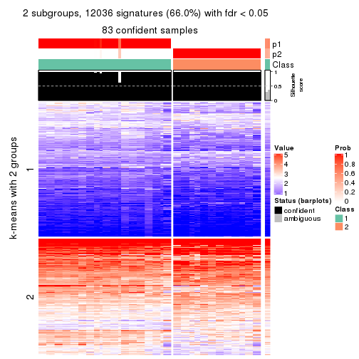
get_signatures(res, k = 3, scale_rows = FALSE)
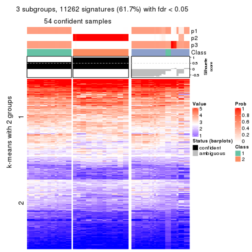
get_signatures(res, k = 4, scale_rows = FALSE)
get_signatures(res, k = 5, scale_rows = FALSE)
get_signatures(res, k = 6, scale_rows = FALSE)
Compare the overlap of signatures from different k:
compare_signatures(res)

get_signature() returns a data frame invisibly. TO get the list of signatures, the function
call should be assigned to a variable explicitly. In following code, if plot argument is set
to FALSE, no heatmap is plotted while only the differential analysis is performed.
# code only for demonstration
tb = get_signature(res, k = ..., plot = FALSE)
An example of the output of tb is:
#> which_row fdr mean_1 mean_2 scaled_mean_1 scaled_mean_2 km
#> 1 38 0.042760348 8.373488 9.131774 -0.5533452 0.5164555 1
#> 2 40 0.018707592 7.106213 8.469186 -0.6173731 0.5762149 1
#> 3 55 0.019134737 10.221463 11.207825 -0.6159697 0.5749050 1
#> 4 59 0.006059896 5.921854 7.869574 -0.6899429 0.6439467 1
#> 5 60 0.018055526 8.928898 10.211722 -0.6204761 0.5791110 1
#> 6 98 0.009384629 15.714769 14.887706 0.6635654 -0.6193277 2
...
The columns in tb are:
which_row: row indices corresponding to the input matrix.fdr: FDR for the differential test. mean_x: The mean value in group x.scaled_mean_x: The mean value in group x after rows are scaled.km: Row groups if k-means clustering is applied to rows.UMAP plot which shows how samples are separated.
dimension_reduction(res, k = 2, method = "UMAP")
dimension_reduction(res, k = 3, method = "UMAP")
dimension_reduction(res, k = 4, method = "UMAP")
dimension_reduction(res, k = 5, method = "UMAP")
dimension_reduction(res, k = 6, method = "UMAP")
Following heatmap shows how subgroups are split when increasing k:
collect_classes(res)
If matrix rows can be associated to genes, consider to use GO_Enrichment(res,
...) to perform function enrichment for the signature genes.
sessionInfo()
#> R version 3.6.0 (2019-04-26)
#> Platform: x86_64-pc-linux-gnu (64-bit)
#> Running under: CentOS Linux 7 (Core)
#>
#> Matrix products: default
#> BLAS: /usr/lib64/libblas.so.3.4.2
#> LAPACK: /usr/lib64/liblapack.so.3.4.2
#>
#> locale:
#> [1] LC_CTYPE=en_GB.UTF-8 LC_NUMERIC=C LC_TIME=en_GB.UTF-8
#> [4] LC_COLLATE=en_GB.UTF-8 LC_MONETARY=en_GB.UTF-8 LC_MESSAGES=en_GB.UTF-8
#> [7] LC_PAPER=en_GB.UTF-8 LC_NAME=C LC_ADDRESS=C
#> [10] LC_TELEPHONE=C LC_MEASUREMENT=en_GB.UTF-8 LC_IDENTIFICATION=C
#>
#> attached base packages:
#> [1] grid parallel stats4 stats graphics grDevices utils datasets methods
#> [10] base
#>
#> other attached packages:
#> [1] genefilter_1.66.0 ComplexHeatmap_2.1.1 markdown_1.1
#> [4] knitr_1.26 cola_1.3.2 SummarizedExperiment_1.14.1
#> [7] DelayedArray_0.10.0 BiocParallel_1.18.1 matrixStats_0.55.0
#> [10] Biobase_2.44.0 GenomicRanges_1.36.1 GenomeInfoDb_1.20.0
#> [13] IRanges_2.18.3 S4Vectors_0.22.1 BiocGenerics_0.30.0
#> [16] GetoptLong_0.1.7
#>
#> loaded via a namespace (and not attached):
#> [1] bitops_1.0-6 bit64_0.9-7 doParallel_1.0.15 RColorBrewer_1.1-2
#> [5] httr_1.4.1 backports_1.1.5 tools_3.6.0 R6_2.4.1
#> [9] DBI_1.0.0 lazyeval_0.2.2 colorspace_1.4-1 withr_2.1.2
#> [13] tidyselect_0.2.5 gridExtra_2.3 bit_1.1-14 compiler_3.6.0
#> [17] xml2_1.2.2 microbenchmark_1.4-7 pkgmaker_0.28 slam_0.1-46
#> [21] scales_1.1.0 NMF_0.23.6 stringr_1.4.0 digest_0.6.23
#> [25] XVector_0.24.0 pkgconfig_2.0.3 bibtex_0.4.2 highr_0.8
#> [29] rlang_0.4.2 GlobalOptions_0.1.1 RSQLite_2.1.2 impute_1.58.0
#> [33] shape_1.4.4 mclust_5.4.5 dendextend_1.12.0 dplyr_0.8.3
#> [37] RCurl_1.95-4.12 magrittr_1.5 GenomeInfoDbData_1.2.1 Matrix_1.2-17
#> [41] Rcpp_1.0.3 munsell_0.5.0 viridis_0.5.1 lifecycle_0.1.0
#> [45] stringi_1.4.3 zlibbioc_1.30.0 plyr_1.8.4 blob_1.2.0
#> [49] crayon_1.3.4 lattice_0.20-38 splines_3.6.0 annotate_1.62.0
#> [53] circlize_0.4.9 zeallot_0.1.0 pillar_1.4.2 rjson_0.2.20
#> [57] rngtools_1.4 reshape2_1.4.3 codetools_0.2-16 XML_3.98-1.20
#> [61] glue_1.3.1 evaluate_0.14 vctrs_0.2.0 png_0.1-7
#> [65] foreach_1.4.7 polyclip_1.10-0 gtable_0.3.0 purrr_0.3.3
#> [69] clue_0.3-57 assertthat_0.2.1 ggplot2_3.2.1 xfun_0.11
#> [73] gridBase_0.4-7 eulerr_6.0.0 xtable_1.8-4 skmeans_0.2-11
#> [77] survival_2.44-1.1 viridisLite_0.3.0 tibble_2.1.3 iterators_1.0.12
#> [81] memoise_1.1.0 AnnotationDbi_1.46.1 registry_0.5-1 GTF_0.0.1
#> [85] cluster_2.1.0 brew_1.0-6